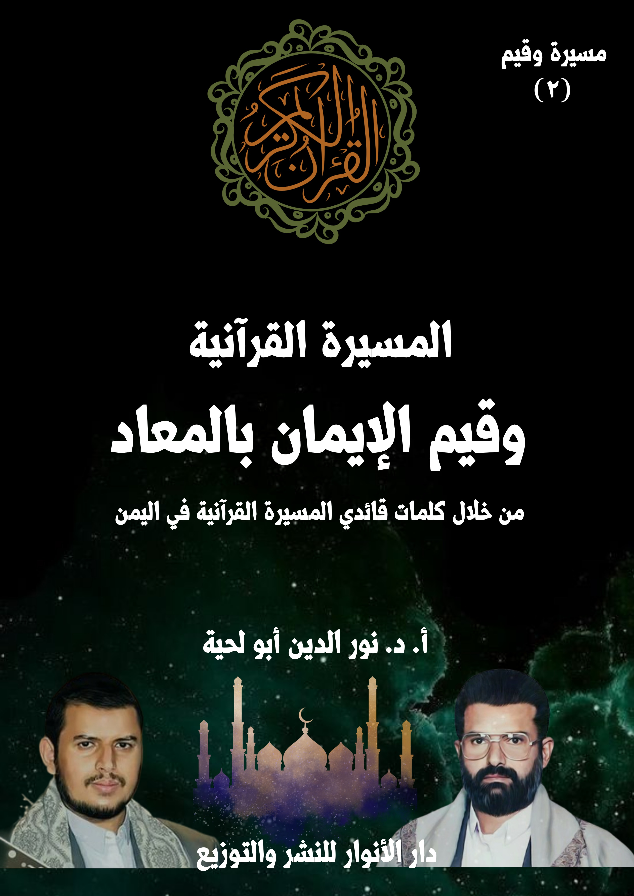

الكتاب: المسيرة القرآنية وقيم الإيمان بالمعاد
الوصف: من خلال كلمات قائدي المسيرة القرآنية باليمن
السلسلة: مسيرة وقيم
المؤلف: أ. د. نور الدين أبو لحية
الناشر: دار الأنوار للنشر والتوزيع
الطبعة: الأولى، 1445 هـ
عدد الصفحات: 387
ISBN: 978-620-4-72102-6
لمطالعة الكتاب من تطبيق مؤلفاتي المجاني وهو أحسن وأيسر: هنا

يهدف هذا الكتاب إلى البحث عن القيم المرتبطة بالركن الثاني من أركان الإيمان، وهو [الإيمان بالمعاد]، والذي لقي عناية كبيرة من قائدي المسيرة القرآنية، حيث إنهما يذكرانه، وفي كل المحال التي تستدعي الترغيب أو الترهيب أو التذكير والتوعية، باعتبار الوعد والوعيد المرتبط بالمعاد هما الدافع والحافز الذي يحرّك لكل مكرمة، ويثني عن كل مثلبة.
ولذلك نراهما يستعملانه للدعوة للهداية والاستقامة، وفي جوانبها المختلفة؛ فلا يمكن لمن لم يردعه الوعيد، أو يحفزه الوعد أن يرغب في عمل صالح، أو ينزجر عن عمل قبيح.
بالإضافة إلى أنهما يستعملانه كأسلوب من أساليب تحقيق العزاء والسلوى؛ فلا يجبر أحزان النفس وآلامها، سوى تذكر الجزاء الإلهي، وما أعد الله تعالى للمؤمنين الصابرين الراضين المستقيمين، ولا يشفي صدورهم من أعدائهم الظالمين سوى ما يعرفون من المصير الذي سيصيرون إليه.
وقبل ذلك كله يستعملانه لتحقيق المعرفة الصحيحة بالله، فلا يمكن أن يعرف الله من لم يعرف المعاد، لأن الحياة حينها ـ ومن دون معاد ـ ستكون عبثا لا معنى لها، والله غني عن أن يعبث أو يلهو أو يخلق ما لا غاية له، كما أنه أعدل من أن يترك الظالمين من دون أن يعاقبهم، وهو أرحم وأكرم من أن يترك المؤمنين الصابرين من غير أن يكافئهم.
يهدف هذا الكتاب إلى البحث عن القيم المرتبطة بالركن الثاني من أركان الإيمان، وهو [الإيمان بالمعاد]، والذي لقي عناية كبيرة من قائدي المسيرة القرآنية، حيث إنهما يذكرانه، وفي كل المحال التي تستدعي الترغيب أو الترهيب أو التذكير والتوعية، باعتبار الوعد والوعيد المرتبط بالمعاد هما الدافع والحافز الذي يحرّك لكل مكرمة، ويثني عن كل مثلبة.
ولذلك نراهما يستعملانه للدعوة للهداية والاستقامة، وفي جوانبها المختلفة؛ فلا يمكن لمن لم يردعه الوعيد، أو يحفزه الوعد أن يرغب في عمل صالح، أو ينزجر عن عمل قبيح.
بالإضافة إلى أنهما يستعملانه كأسلوب من أساليب تحقيق العزاء والسلوى؛ فلا يجبر أحزان النفس وآلامها، سوى تذكر الجزاء الإلهي، وما أعد الله تعالى للمؤمنين الصابرين الراضين المستقيمين، ولا يشفي صدورهم من أعدائهم الظالمين سوى ما يعرفون من المصير الذي سيصيرون إليه.
وقبل ذلك كله يستعملانه لتحقيق المعرفة الصحيحة بالله، فلا يمكن أن يعرف الله من لم يعرف المعاد، لأن الحياة حينها ـ ومن دون معاد ـ ستكون عبثا لا معنى لها، والله غني عن أن يعبث أو يلهو أو يخلق ما لا غاية له، كما أنه أعدل من أن يترك الظالمين من دون أن يعاقبهم، وهو أرحم وأكرم من أن يترك المؤمنين الصابرين من غير أن يكافئهم.
ولا غربة في اهتمام قائدي المسيرة القرآنية بهذا الجانب، لأن القرآن الكريم اهتم به كثيرا، ولا يمكن أن تعتبر المسيرة قرآنية، وهي تغفل ما اهتم به القرآن الكريم.
وقيم الإيمان بالمعاد (6)
فالقرآن الكريم يعتبر الإيمان بالمعاد ركنا أساسيا من أركان الإيمان التي لا يتم من دونها، ولهذا قُرن بالإيمان بالله في مواضع كثيرة من القرآن الكريم، كقوله تعالى: ﴿لَيْسَ الْبِرَّ أَنْ تُوَلُّوا وُجُوهَكُمْ قِبَلَ الْمَشْرِقِ وَالْمَغْرِبِ وَلَكِنَّ الْبِرَّ مَنْ آمَنَ بِاللَّهِ وَالْيَوْمِ الْآخِرِ وَالْمَلَائِكَةِ وَالْكِتَابِ وَالنَّبِيِّينَ﴾ [البقرة: 177]، وقوله: ﴿مَنْ آمَنَ بِاللَّهِ وَالْيَوْمِ الْآخِرِ وَعَمِلَ صَالِحًا فَلَهُمْ أَجْرُهُمْ عِنْدَ رَبِّهِمْ﴾ [البقرة: 62]، وقوله: ﴿اعْبُدُوا اللَّهَ وَارْجُوا الْيَوْمَ الْآخِرَ﴾ [العنكبوت: 36]، وغيرها من الآيات الكريمة.
بالإضافة إلى أنه يعتبره وسيلة من وسائل الهداية والاستقامة، ولهذا تقرن التشريعات به، كما قال تعالى: ﴿ذَلِكُمْ يُوعَظُ بِهِ مَنْ كَانَ يُؤْمِنُ بِالله وَالْيَوْمِ الْآخِرِ﴾ [الطلاق: 2]، وقال: ﴿يَاأَيُّهَا الَّذِينَ آمَنُوا أَطِيعُوا الله وَأَطِيعُوا الرَّسُولَ وَأُولِي الْأَمْرِ مِنْكُمْ فَإِنْ تَنَازَعْتُمْ فِي شَيْءٍ فَرُدُّوهُ إِلَى الله وَالرَّسُولِ إِنْ كُنْتُمْ تُؤْمِنُونَ بِالله وَالْيَوْمِ الْآخِرِ ذَلِكَ خَيْرٌ وَأَحْسَنُ تَأْوِيلًا﴾ [النساء: 59]
ولهذا ذكر السيد حسين سبب اهتمام المسيرة القرآنية بالمعاد وما يرتبط به من الوعد والوعيد، فقال: (من الآثار لآيات الوعد والوعيد أن تعرف الله أنه هذا هو الله الذي بيده الجنة، بيده النار، بيده الثواب، بيده العقاب؛ فتتوجه أنت إليه، فتبحث عن رضاه، ويعظم في نفسك، هنا ستسير بطريقة صحيحة، وهو الشيء الرئيسي في القرآن الكريم.. ما قدمت آيات الترغيب والترهيب بمعزل عن آيات معرفة الله، وبمعزل عن التوجيهات العملية أبداً)(1)
وذكر السيد عبد الملك مدى اهتمام القرآن الكريم بهذا الركن الأساسي من أركان
__________ (1) دروس من هدي القرآن الكريم، من أول سورة الأعراف إلى الآية (137)، الدرس (27)، ألقاه السيد حسين بدر الدين الحوثي، بتاريخ 27رمضان 1424هـ الموافق 21/11/2003م، اليمن ـ صعدة.المسيرة القرآنية وقيم الإيمان بالمعاد (7)
الإيمان، فقال: ( في القرآن الكريم مساحة واسعة جدّا جدّا، مئات الآيات القرآنية التي حذرت وأنذرت، القرآن الكريم هو كتاب إنذار، وكتاب بشارة، والرسول صلى الله عليه وآله وسلم، ورسل الله صلوات الله عليهم، بكلهم كانوا منذرين وكانوا مبشرين، ﴿مُبَشِّرِينَ وَمُنْذِرِينَ لِئَلَّا يَكُونَ لِلنَّاسِ عَلَى اللَّهِ حُجَّةٌ بَعْدَ الرُّسُلِ﴾ [النساء: 165]، والإنسان عندما يعود إلى القرآن الكريم ويتأمله سيزداد إيمانا وخوفا من التفريط والإهمال والغفلة، وهذا يساعد الإنسان على الاستقامة، على الاتجاه بشكل صحيح، على ضبط مسيرة حياته بشكل صحيح)(1)
ثم ذكر دور الإيمان بالمعاد في تحقيق الاستقامة في جميع أجيال المؤمنين، فقال: (الفئة المؤمنة عاشت حالة الرجاء والأمل فيما وعد الله به، والخشية والخوف والحذر من الوقوع فيما يسبب سخط الله سبحانه وتعالى اتجهت في آمالها ورغباتها ورجائها إلى الله؛ فلم تؤثر فيها أي اغراءات من جانب الآخرين، واتجهت في خوفها من عذاب الله سبحانه وتعالى؛ فخافت من ذلك فوق كل خوف، فلم تؤثر فيها المخاوف من الآخرين )(2)
بناء على هذا، نحاول في هذا الكتاب طرح ما ذكره قائدا المسيرة القرآنية حول الإيمان بالمعاد، والقيم المرتبطة به، وقد قسمناه إلى ستة فصول، هي:
أولا ـ الإيمان بالمعاد ومرجعية القرآن: وتناولنا فيه ما ذكره قائدا المسيرة القرآنية حول حقائق المعاد، وأدوارها في تحقيق المعرفة بالله، وتحقيق الهداية والاستقامة والذكرى والتحرر والفلاح.
ثانيا ـ المسيرة القرآنية وأحداث المعاد: وتناولنا فيه ما ذكره قائدا المسيرة القرآنية حول أحداث المعاد، ابتداء من الموت والبرزخ، ثم القيامة الكبرى، ثم النشر والحشر، ثم الحساب
__________ (1) الوعد والوعيد.. أهمية الاستحضار وخطورة الغفلة والإنكار، المحاضرة الرمضانية الرابعة 4 ـ 9 ـ 1440 هـ، الموافق لـ: 9 ـ 5 ـ 2019م. (2) المرجع السابق.المسيرة القرآنية وقيم الإيمان بالمعاد (8)
والمساءلة، ثم الكتب والشهود، ثم الوزن والموازين، ثم الفصل والتمييز.
ثالثا ـ المسيرة القرآنية وقوانين المعاد: وتناولنا فيه ما ذكره قائدا المسيرة القرآنية حول المعاد والحياة، والمعاد والأعمال، والمعاد والروابط، والمعاد والأماني، والمعاد والمسؤولية، والمعاد والعدالة، والمعاد والرحمة.
رابعا ـ المسيرة القرآنية والجزاء الوفاق: وتناولنا فيه ما ذكره قائدا المسيرة القرآنية حول الجزاء والمعاصي، والجزاء والاستقامة.
خامسا ـ المسيرة القرآنية والجزاء الحسي: وتناولنا فيه ما ذكره قائدا المسيرة القرآنية حول العقاب الحسي للخبثاء، والنعيم الحسي للطيبين.
سادسا ـ المسيرة القرآنية والجزاء المعنوي: وتناولنا فيه ما ذكره قائدا المسيرة القرآنية حول العقاب المعنوي للخبثاء، والنعيم المعنوي للطيبين.
أولا ـ الإيمان بالمعاد.. ومرجعية القرآن
وهي القيمة الأولى والكبرى من القيم التي تستند إليها قيم الإيمان بالمعاد، كما تستند إليها سائر القيم.. والمراد منها ـ كما ذكرنا ذلك في الكتاب الأول ـ اعتماد القرآن الكريم في تقرير الحقائق الإيمانية أو البرهنة عليها، وعدم الاكتفاء بما ورد في التراث من التقريرات العقدية لكونها انحرفت في ـ الكثير من نواحيها ـ عن المنهج القرآني، مما أساء إلى قضايا الإيمان، وحوّلها إلى مجرد عقائد جافة لا تأثير لها في النفس، أو في الحياة.
وعند العودة إلى القرآن الكريم نجد أحاديث كثيرة مفصلة عن المعاد، وما يرتبط به من الوعد والوعيد، وربط ذلك بالقضايا المختلفة، للدلالة على دور ذلك الإيمان في التحقق بكل القيم التي جاء الإسلام للدعوة إليها.
ولهذا نرى القرآن الكريم يشترط الإيمان بالمعاد لتحقيق الموعظة، كما قال تعالى: ﴿ذَلِكُمْ يُوعَظُ بِهِ مَنْ كَانَ يُؤْمِنُ بِالله وَالْيَوْمِ الْآخِرِ﴾ [الطلاق: 2]، وقال: ﴿يَاأَيُّهَا الَّذِينَ آمَنُوا أَطِيعُوا الله وَأَطِيعُوا الرَّسُولَ وَأُولِي الْأَمْرِ مِنْكُمْ فَإِنْ تَنَازَعْتُمْ فِي شَيْءٍ فَرُدُّوهُ إِلَى الله وَالرَّسُولِ إِنْ كُنْتُمْ تُؤْمِنُونَ بِالله وَالْيَوْمِ الْآخِرِ ذَلِكَ خَيْرٌ وَأَحْسَنُ تَأْوِيلًا﴾ [النساء: 59]
وهكذا يقرن رسول الله صلى الله عليه وآله وسلم بين الإيمان بالله واليوم الآخر، وكل السلوكات الطيبة، ومن الأمثلة على ذلك قوله: (من كان يؤمن بالله واليوم الآخر فليقل خيرا أو ليصمت، ومن كان يؤمن بالله واليوم الاخر فليكرم جاره، ومن كان يؤمن بالله واليوم الاخر فليكرم ضيفه)(1)، وغيرها من الأحاديث الكثيرة التي تبين أنه لا يمكن أن تتحقق للإنسان أي دافعية للعمل الصالح، أو بذل الجهد والتضحية في سبيله ما لم يمتلئ قناعة وإيمانا باليوم
__________ (1) البخاري (6146)، ومسلم (47)ذالمسيرة القرآنية وقيم الإيمان بالمعاد (10)
الآخر.
بناء على هذا سنذكر في هذا الفصل ما ذكره قائدا المسيرة القرآنية حول خصائص الطرح القرآني لقضايا المعاد، والتي تختلف كثيرا عن طروحات غيره، ذلك أنها لا تكتفي فقط بالتعريف بالحقائق، وإنما تساهم في ترسيخها وتعميقها لتؤدي ثمارها في الهداية، ومن جوانبها المختلفة.
من أول خصائص الطرح القرآني لقضايا المعاد، وما يرتبط بها من وعد ووعيد ـ كما يذكر قائدا المسيرة القرآنية ـ ارتباطها بالله وبمعرفته، على عكس ما نجده في طروحات غيره من المفاصلة بينهما.
ومن الأمثلة على ذلك ما ذكره السيد حسين عند انتقاده لكتب الترغيب والترهيب والفرق بينها وبين القرآن الكريم، وذلك عند حديثه عن قوله تعالى: ﴿لِتُنْذِرَ بِهِ وَذِكْرَى لِلْمُؤْمِنِينَ﴾ [الأعراف: 2]، حيث قال: (تجد في السورة أشياء كثيرة مما تعتبر نُذُر، عندما يسرد قصصاً بدءاً من آدم، ثم نوح، ومِن بعد نوح، أليس هذا يعني أن السورة هذه مليئة بالإنذارات، والحديث عن جهنم، الحديث عما سيقول أهل النار، ما سيقول المكذبون بآيات الله، والمستكبرون عنها، فهي مليئة بالإنذارات، والقرآن هذا هو نذير وبشير وهدى وتشريع، كل شيء داخله، كل شيء فيه)(1)
ثم ذكر اهتمام القرآن الكريم بالإنذار، فقال: (تجد أن الموضوع كله يتمحور حول
__________ (1) دروس من هدي القرآن الكريم، من أول سورة الأعراف إلى الآية (137)، الدرس (27)، ألقاه السيد حسين بدر الدين الحوثي، بتاريخ 27رمضان 1424هـ الموافق 21/11/2003م، اليمن ـ صعدة.المسيرة القرآنية وقيم الإيمان بالمعاد (11)
الكتاب، حركة الرسول صلى الله عليه وآله وسلم مهمته تتمثل في هذا الكتاب، كتاب أنزل إليك تتحرك على أساس هذا الكتاب؛ لتنذر به، أليس هكذا الآية واضحة: ﴿لِتُنْذِرَ بِهِ﴾ [الأعراف: 2]؟)(1)
ثم ذكر انحراف المسلمين عن المنهج القرآني في الإنذار، فقال: (هذه للأسف مما غيبت في تاريخ المسلمين، وقدموا الإنذارات بطرق أخرى لم تترك أثراً إيجابياً، بل تركت آثاراً سلبية مثلما نقول كثيراً حول ما تتضمنه كتب الترغيب والترهيب، أن من المهام الرئيسية للقرآن الكريم هو الإنذار به، مهمة رسول الله صلى الله عليه وآله وسلم أن ينذر الناس به، وهو من جهة نفسه إنسان بليغ، إنسان قدير على التحدث، لكن يجب أن يتحرك في إطار هذا القرآن، فينذر به؛ لأن القرآن هو أبلغ موعظة؛ ولهذا قال الله فيه في آية أخرى: ﴿لَوْ أَنْزَلْنَا هَذَا الْقُرْآنَ عَلَى جَبَلٍ لَرَأَيْتَهُ خَاشِعًا مُتَصَدِّعًا مِنْ خَشْيَةِ اللَّهِ وَتِلْكَ الْأَمْثَالُ نَضْرِبُهَا لِلنَّاسِ لَعَلَّهُمْ يَتَفَكَّرُونَ﴾ [الحشر: 21](2)
ثم ذكر بعض مظاهر ذلك الانحراف الذي أبعد الأمة عن قرآنها، وأولها استبدال إنذاراته بالقصص الغريبة التي امتلأت بها كتب المواعظ، فقال: (حصل عدول عن القرآن الكريم في موضوع ما نسميه المواعظ، ترهيب وترغيب إلى كتب أخرى مليئة بحكايات عملها ناس، مليئة بأحاديث لم يدققوا حتى في أسانيدها باعتراف أهل هذا الفن،
أنهم يقولون أنهم لا يتقصون في أسانيد أحاديث الترغيب والترهيب على أساس أنها ستترك [أثر باهر]، ترغب الناس في طاعة الله، وتخوفهم من عذاب الله، ويحصل عند واحد خوف من أن يدخل في معصية، وأشياء من هذه، لكن قدّموا مفاهيم أخرى رهيبة جداً، نظرة إلى الدين قاصرة جداً، نظرة إلى الحياة هذه، نظرة إلى الحياة الآخرة، نظرة إلى الإنسان،
__________ (1) المرجع السابق. (2) المرجع السابق.المسيرة القرآنية وقيم الإيمان بالمعاد (12)
دوره في هذه الحياة، نظرة قاصرة جداً، ومتنافية مع ما يريد القرآن الكريم أن يتركه في نفوس الناس من أثر، بل قُدم من خلالها موضوع الخشية بشكل آخر، غير الخشية في القرآن)(1)
ثم ذكر نموذجا من تلك التحريفات المرتبطة بأغراض القرآن الكريم من إنذاراته، فقال: (في القرآن يتركز موضوع الخشية: أن الخشية من الله، من الله، فيأتي إلى آيات كثيرة جداً تتحدّث عن معرفة الله سبحانه وتعالى؛ ليعرفه الإنسان فيخشاه، في الوقت الذي يحبه ويجله ويقدسه ويعظمه.. في كتب الترغيب والترهيب قدّم موضوع آخر هو الخشية من النار، وهناك فارق كبير في الموضوع، هناك فارق كبير جداً، أنه ممكن يحصل عندك خشية من النار من خلال هذا المنطق الذي يرسخ لديك موضوع النار، النار فقط دون أن يقدم في نفسك ما يجعلك تخشى الله هو؛ ولهذا جاء في آية أخرى: ﴿إِنَّمَا يَخْشَى اللَّهَ مِنْ عِبَادِهِ الْعُلَمَاءُ﴾ [فاطر: 28]، يعني: العارفين به، فيأتي موضوع النار بكله، موضوع آيات الوعد والوعيد، إنما هي جزء من موضوع معرفة الله، لتخشى الله باعتبار أنه هو الذي بيده الجنة، وبيده النار)(2)
ثم ذكر الأثر المترتب على ما ورد في القرآن الكريم من الحديث عن الخشية، والفرق بينه وبين ما ورد في كتب المواعظ، فقال: (عندما تكون أنت متوجه إلى الله سبحانه وتعالى، متوجه إليه، وتعرفه، ما تحصل القضية فقط مجرد خشية، بل يأتي أيضاً حب له، وتعظيم له، وحرص على رضاه؛ فيكون تعاملك معه، في الحالة هذه ستحصل تلقائياً على ما يقيك من النار، الإنسان بطبيعته إذا خُوِّف بشيء يخاف، إذا خوف بجهنم، ولجانب جهنم دور كبير جداً في التخويف، لكن لم يقدم موضوع التخويف بجهنم مجرداً عن موضوع ربط الإنسان بالله؛ ولهذا قلنا: إنه مما تميز به القرآن الكريم أنه يقدم آيات الوعيد في إطار عملي، هذه
__________ (1) المرجع السابق. (2) المرجع السابق.المسيرة القرآنية وقيم الإيمان بالمعاد (13)
التوجيهات العملية تأتي من جهة الله، ودائماً ترى السور فيها الكثير من الآيات التي تذكر ما يتعلق بالله سبحانه وتعالى، ملكه، ألوهيته، علمه، قدرته، أشياء من هذه، هي آيات في معرفته)(1)
ولذلك كان من الآثار الخطيرة التي أحدثتها تلك الكتب ـ كما يذكر السيد حسين ـ هي تلك القطيعة التي أحدثتها مع المعرفة بالله، حيث أصبحت المعارف المرتبطة بالمعاد، وكأنها معارف قائمة بذاتها، ولا علاقة لها بمعرفة الله.
وقد ذكر أمثلة على تلك القطيعة، ومنها ما عبّر عنه بقوله: (من الآثار لآيات الوعد والوعيد هو ماذا؟ أن تعرف الله أنه هذا هو الله الذي بيده الجنة، بيده النار، بيده الثواب، بيده العقاب؛ فتتوجه أنت إليه، فتبحث عن رضاه، ويعظم في نفسك، هنا ستسير بطريقة صحيحة، وهو الشيء الرئيسي في القرآن الكريم.. ما قدمت آيات الترغيب والترهيب بمعزل عن آيات معرفة الله، وبمعزل عن التوجيهات العملية أبداً، كتب الترغيب والترهيب في الغالب تقدمها هكذا بصورة مستقلة، حديث حول الجنة، وحديث حول النار هناك، لا يأتي في إطار الحديث حول الله سبحانه وتعالى، فتقدم ضمن معرفته)(2)
ثم ذكر مثالا على ذلك بما ورد في القرآن الكريم من أسماء الله الحسنى، الواردة في آخر سورة الحشر، في قوله تعالى: ﴿هُوَ اللَّهُ الَّذِي لَا إِلَٰهَ إِلَّا هُوَ عَالِمُ الْغَيْبِ وَالشَّهَادَةِ هُوَ الرَّحْمَٰنُ الرَّحِيمُ هُوَ اللَّهُ الَّذِي لَا إِلَٰهَ إِلَّا هُوَ الْمَلِكُ الْقُدُّوسُ السَّلَامُ الْمُؤْمِنُ الْمُهَيْمِنُ الْعَزِيزُ الْجَبَّارُ الْمُتَكَبِّرُ سُبْحَانَ اللَّهِ عَمَّا يُشْرِكُونَ هُوَ اللَّهُ الْخَالِقُ الْبَارِئُ الْمُصَوِّرُ لَهُ الْأَسْمَاءُ الْحُسْنَىٰ يُسَبِّحُ لَهُ مَا فِي السَّمَاوَاتِ وَالْأَرْضِ وَهُوَ الْعَزِيزُ الْحَكِيمُ﴾ [الحشر: 22 ـ 24]، وعلّق عليها بقوله: (من
__________ (1) المرجع السابق. (2) المرجع السابق.المسيرة القرآنية وقيم الإيمان بالمعاد (14)
أسمائه: الجبار، مما يذكره سبحانه وتعالى أنه ينتقم، أنه يبطش ﴿إِنَّ بَطْشَ رَبِّكَ لَشَدِيدٌ﴾ [البروج: 12]، و﴿نَبِّئْ عِبَادِي أَنِّي أَنَا الْغَفُورُ الرَّحِيمُ وَأَنَّ عَذَابِي﴾ [الحجر: 49 ـ 50] هنا أليس هو يقدم جهنم حقه؟ ﴿وَأَنَّ عَذَابِي هُوَ الْعَذَابُ الْأَلِيمُ﴾ [الحجر: 50]؛ ليعظم في نفسك الله)(1)
ثم ذكر الآثار التي تحدثها كتب المواعظ المعزولة عن القرآن الكريم، فقال: (كتب الترغيب والترهيب ترفق بأشياء في مجال الترغيب حسنات بكميات كبيرة جداً، فترى أشياء هناك تخيفك، جهنم، وترى هناك كميات كبيرة من الحسنات، ترى بأنه يمكن أنك تمشي في هذه تجمِّعها وتصرف عنك جهنم، وإذا أنت ذهنك يدور بين النار، والنار هي خطيرة، وكل إنسان يخاف منها، وهناك كميات كبيرة حسنات من أعمال معينة، تكاد تكون في ذهنيتك مفصول عن الله، مع أن هذه الآية لاحظ ﴿نَبِّئْ عِبَادِي أَنِّي أَنَا الْغَفُورُ الرَّحِيمُ﴾ [الحجر: 49]، أليس هو هنا يذكر نفسه، يتحدّث عن نفسه، ﴿وَأَنَّ عَذَابِي هُوَ الْعَذَابُ الْأَلِيمُ﴾ [الحجر: 50]، فالإنذار من القرآن الكريم هو الشيء الأساسي، الإنذار من القرآن الكريم هو الشيء الذي له إيجابية كبيرة جداً، ولا يحصل معه سلبيات؛ لأنه يشدك في نفس الوقت إلى الله سبحانه وتعالى)(2)
ثم ذكر ما ورد في القرآن الكريم من الآيات الكريمة الكثيرة عن يوم القيامة، والتي تغني عن تلك الأحاديث والقصص الكثيرة التي يوردها الوعاظ في كتب الترغيب والترهيب، فقال: (جاء بكلام كثير حول يوم القيامة لكن أليس هو يذكر فيه أنه الذي سيجمع الناس، سيحشر الناس، سينبئهم بما كانوا يعملون، أنه هو الذي سيجازي، أنه هو الذي سيدخل من أدخل الجنة، وسيدخل من أدخل النار، أليس هو ينسب الأشياء هذه
__________ (1) المرجع السابق. (2) المرجع السابق.المسيرة القرآنية وقيم الإيمان بالمعاد (15)
كلها إليه؛ لئلا تنظر إليها منفصلة عنه)(1)
ثم ذكر الآثار التي يحدثها ذلك الحديث الواسع المفصل، فقال: (موضوع واسع جداً في القرآن، موضوع الترغيب والترهيب، موضوع واسع جداً، لا نحتاج معه إلى الأشياء الأخرى، تصفية قلوب، وإرشاد قلوب، وأشياء من هذه، وعناوين أخرى، ما نحتاج إليها.. هذا الذي يُصفِّي القلوب حقيقة، القرآن، ويعرف الإنسان من خلاله كيف يكون توجهه، كيف تكون نظرته)(2)
ثم ذكر الآثار التي تحدثها في المقابل كتب المواعظ، فقال: (كثير ممن قرؤوا كتب الترغيب والترهيب تراه ما عنده توجه أنه مثلاً يجاهد في سبيل الله؛ لأنه ماذا؟ قد هناك حسنات كثيرة، يغرف واحد كما يريد دون أن يحاول أن يدخل نفسه في موضوع فيه مصاعب، وفيه خوف، وفيه سجون، وربما فيه قتل)(3)
ثم ذكر سبب هذا العزوف عن تلك القضايا المهمة الواردة في القرآن الكريم، فقال: (إذاً هذه النظرة، وهذا الموقف موقف من؟ موقف من نفسيته فعلاً منفصلة عن الله، قدّم له الموضوع مجرداً هناك لوحده، هناك نار، وهناك حسنات خذ لك كمّا تريد حسنات وستسير إلى الجنة، والنار تسلمها! لو أن الموضوع قدم على النحو الذي قدم في القرآن لكان الإنسان ـ وهو متوجه إلى الله سبحانه وتعالى ـ يحرص على أن يعمل الشيء الذي فيه رضاه مهما بدا شاقاً أمامه، فلماذا ـ مع أنهم قد قرؤوا أشياء كثيرة عن جهنم ـ لا يأتي لديه انطلاقة لأن يجاهد في سبيل الله ولو ضحى بنفسه، لا أعتقد أنه يوجد أحد ممن قرؤوا إلا وهم يقرؤون كتب
__________ (1) المرجع السابق. (2) المرجع السابق. (3) المرجع السابق.المسيرة القرآنية وقيم الإيمان بالمعاد (16)
ترغيب وترهيب بدءاً من [كنز الرشاد] و[وشرح كنز الرشاد] و[تصفية القلوب] وكتب أخرى)(1)
وبناء على هذا استدل على كون ذلك الانحراف الذي وقع في التاريخ والواقع الإسلامي كان من نتائج عزل القرآن الكريم عن دوره في الإنذار، فقال: (إذاً فهذه القاعدة المهمة: أن الله قال لنبيه صلى الله عليه وآله وسلم: ﴿كِتَابٌ أُنْزِلَ إِلَيْكَ﴾ [الأعراف: 2]، ثم يذكر بعد ﴿لِتُنْذِرَ بِهِ وَذِكْرَى لِلْمُؤْمِنِينَ﴾ [الأعراف: 2]، وليكون ذكرى للمؤمنين، تنذر به وتذكِّر به)(2)
ثم استدل بما ورد في الآية الكريمة التي بعدها، وهي قوله تعالى: ﴿اتَّبِعُوا مَا أُنْزِلَ إِلَيْكُمْ مِنْ رَبِّكُمْ﴾ [الأعراف: 3]، فقال: (وهذا تأكيد آخر، ﴿اتَّبِعُوا مَا أُنْزِلَ إِلَيْكُمْ مِنْ رَبِّكُمْ وَلَا تَتَّبِعُوا مِنْ دُونِهِ أَوْلِيَاءَ قَلِيلًا مَا تَذَكَّرُونَ﴾ [الأعراف: 3]، عندما تكون كلمة أولياء في زمن نزول القرآن الكريم، كان يتمثل أولياء بشكل ظاهر مثلاً أصنام، يوجد هناك أولياء آخرين قدمهم أيضاً من البشر ممن كانوا يتخذونهم أولياء فيصدونهم عن سبيل الله، فكلمة أولياء تتناول من يتخذون الأصنام أولياء، وتتناول من يتخذون أناساً من البشر أولياء، كيفما كانوا، أولياء من دونه، هناك فارق بين أولياء هم أولياء له، وفي طريقه؛ ليجعلوا الناس أولياء لله)(3)
ثم ذكر الفرق بين الأولياء الحقيقيين الذين أمرنا بمولاتهم، وغيرهم، فقال: (لكن هنا يكون هناك أولياء من دون الله، الأولياء الذين من دون الله هم يصرفونك عن الله، ويبعدونك عن الله، وقدّم في هذه السورة وهو يعرض قصص الأمم الماضية: ﴿قَالَ الْمَلَأُ
__________ (1) المرجع السابق. (2) المرجع السابق. (3) المرجع السابق.المسيرة القرآنية وقيم الإيمان بالمعاد (17)
الَّذِينَ اسْتَكْبَرُوا مِنْ قَوْمِهِ﴾ [الأعراف: 88]، كبار ووجهاء الناس، ترى كيف كانوا يبرزون صادين عن سبيل الله، والآخرون الجماهير قد اتخذوهم أولياء، فهنا أنذر الناس بدءاً من أيام رسول الله صلى الله عليه وآله وسلم أن يحذروا أن يتبعوا من دون الله أولياء بعد أن عرض عليهم كيف كان مصير أولئك الناس الذين اتخذوا الملأ الذين استكبروا من قوم نوح، أو هود، أو صالح، أو أي واحد من الأنبياء الذين ذكرهم، كيف كانت عاقبتهم، وأنهم خسروا، أهلكهم الله وانتهوا بعقوبة شديدة)(1)
وهكذا ذكر السيد حسين في محل آخر علاقة الإيمان بالوعد والوعيد بالمعرفة بالله، فقال: (أوليس من أسمائه الحسنى سبحانه وتعالى: الجبار، شديد العقاب، ألم يصف نفسه سبحانه وتعالى بأنه شديد العقاب؟ أن نؤمن بأنه جبار، جبار على من يتمردون عليه، على من لا يهتدون بهديه، على من يعاندون ما أنزله على أنبيائه من الهدى، من الآيات البينات؟ شديد العقاب لا أحد غيره يمكن أن تصل عقوبته إلى معشار، معشار العقوبة من الله سبحانه وتعالى، هذا نفسه سيربطنا بالله سبحانه وتعالى، بالجبار بشديد العقاب، يربطنا به فنعرفه بهذا سبحانه وتعالى بأنه جبار وشديد العقاب، فيدفعنا ذلك إلى أن نخشاه، إلى أن نخاف على أنفسنا من مخالفة ما هدانا إليه وأرشدنا إليه)(2)
ثم ذكر تلك الصورة المنحرفة التي يحرص المرجئة على تقديمها عن الله، والتي تكتفي بذكر مغفرته ورحمته، فقال: (الإيمان السائد بالله سبحانه وتعالى هو إيمان: [الله غفور رحيم] أليس كذلك!؟ ﴿نَبِّئْ عِبَادِي أَنِّي أَنَا الْغَفُورُ الرَّحِيمُ وَأَنَّ عَذَابِي هُوَ الْعَذَابُ الْأَلِيمُ﴾ [الحجر: 49 ـ 50] ﴿غَافِرِ الذَّنْبِ وَقَابِلِ التَّوْبِ شَدِيدِ الْعِقَابِ ذِي الطَّوْلِ﴾ [غافر: 3] أليس يريد
__________ (1) المرجع السابق. (2) دروس من هدي القرآن الكريم، الدرس (9)، سلسلة معرفة الله، ألقاه السيد حسين بدر الدين الحوثي بتاريخ: 28/1/2002م، اليمن ـ صعدة.المسيرة القرآنية وقيم الإيمان بالمعاد (18)
أن نؤمن بالأمرين معاً؟: أنه غفور رحيم، وأن عذابه هو العذاب الأليم، أنه غفور رحيم، وأنه شديد العقاب، أنه ﴿غَافِرِ الذَّنْبِ وَقَابِلِ التَّوْبِ شَدِيدِ الْعِقَابِ﴾ [غافر: 3](1)
ثم ذكر خطورة الاكتفاء بالوعد دون الوعيد، فقال: (أن تكون مؤمناً بالله ثم لا تكون مؤمناً باليوم الآخر، أو تكون غافلاً عن اليوم الآخر، أو ناسياً لليوم الآخر، سيبدو إيمانك بالله سبحانه وتعالى ذاته ناقصاً؛ لأنك فقط آمنت بأنه هو الغفور الرحيم، وهو في نفس الوقت ـ كما وصف نفسه، وكما سمى نفسه ـ: الملك، القدوس، السلام، المؤمن، العزيز، الجبار، المتكبر، هو غافر الذنب، هو شديد العقاب، كما قال: ﴿نَبِّئْ عِبَادِي أَنِّي أَنَا الْغَفُورُ الرَّحِيمُ﴾ [الحجر: 49] قل لهم أنا هكذا، ليؤمنوا بي هكذا إيماناً كاملاً، لأن القضية مهمة؛ الإيمان بالله سبحانه وتعالى على هذا النحو الكامل هو ما يدفعني إلى أن أرغب إليه وأرهب منه إلى أن أتقيه)(2)
ثم ذكر حاجة التقوى لكلا الأمرين، فقال: (والتقوى ـ لاحظـوا ـ كيف التقوى في القرآن الكريم؟ تأتي بعبارة: ﴿وَاتَّقُونِ يَا أُولِي الْأَلْبَابِ﴾ [البقرة: 197] ﴿يَا أَيُّهَا الَّذِينَ آمَنُوا اتَّقُوا اللَّهَ﴾ [الحشر: 18] ﴿اتَّقُوا اللَّهَ﴾ تتكرر كثيراً.. أين يتجه الأمر بالتقوى؟ أين يتجه؟ إلى غفور رحيم!؟ أو الإتقاء لأنه سبحانه وتعالى شديد العقاب!؟ فلا تتحقق التقوى لدي إذا لم أؤمن بالله سبحانه وتعالى على هذا النحو.. أين موضع شدة عقابه؟ أين موضع جبروته وبطشه؟ هنا في الدنيا وفي الآخرة على أعلى مستوى، وأشد ما يمكن أن يكون، جهنم)(3)
ومثل ذلك ذكر السيد عبد الملك علاقة الإيمان بالمعاد بمعرفة الله والإيمان به، فقال:
__________ (1) المرجع السابق. (2) المرجع السابق. (3) المرجع السابق.المسيرة القرآنية وقيم الإيمان بالمعاد (19)
(في سياق الحديث عن أهمية الاستجابة لله سبحانه وتعالى والطاعة له فيما وجّهنا إليه، وأمرنا به، والانتهاء عما نهانا عنه، وما يمثله ذلك من أهمية بالنسبة لنا نحن، باعتباره يشكّل وقاية لنا من كل ما نسعى بالفطرة إلى أن نتوقى منه من الشر والعذاب والهلاك والخسران، وباعتباره أيضا يمثّل الطريق في الوصول إلى ما وعد الله به سبحانه وتعالى من الخير والفلاح في الدنيا أولا، ولصلاح حياتنا فيها، وللآخرة في مستقبلنا الأبدي والدائم الذي لا نهاية له، جاء الحديث عن الجزاء، عن الوعد والوعيد الإلهي)(1)
ثم ذكر الصلة الشديدة بين كلا الإيمانين، والمعارف المرتبطة بهما، فقال: (والإيمان بوعد الله ووعيده في الدنيا وفي الآخرة جانب أساسي من الإيمان، وهو جزء من الإيمان بالله سبحانه وتعالى الإيمان بصدق وعده ووعيده، الإيمان بعزته أنه العزيز، وبحكمته أنه الحكيم، ولأنه العزيز ولأنه الحكيم جلّ شأنه فهو لابدّ أن يجازي العصاة، لابدّ أن يفرّق بين المحسن والمسيء، والمطيع والعاصي من عباده، وهو أيضا الذي رسم لعباده في هذه الحياة منهجا ليسيروا عليه في حياتهم، ولم يخلقهم عبثا)(2)
ثم استدل بقوله تعالى: ﴿أَفَحَسِبْتُمْ أَنَّمَا خَلَقْنَاكُمْ عَبَثًا وَأَنَّكُمْ إِلَيْنَا لَا تُرْجَعُونَ﴾ [المؤمنون: 115] على هذا المعنى، فقال: (هكذا يقول جلّ شأنه في كتابه الكريم، لو كانت الحياة هذه قائمة على أساس الانفلات والفوضى ولا جزاء ولا حساب ولا عقاب؛ لكانت عبثا، الله سبحانه وتعالى هو الحكيم، وهو العزيز، ولذلك كان للإيمان بالله جلّ شأنه والإيمان بوعده ووعيده، والإيمان بالآخرة، والإيمان بأن الله يجازي ويعاقب في الدنيا، والإيمان بصدق نذره: ما جاء من الإنذار عن طريق الرسل والأنبياء، وما جاء في كتب الله سبحانه
__________ (1) الوعد والوعيد.. أهمية الاستحضار وخطورة الغفلة والإنكار، المحاضرة الرمضانية الرابعة 4 ـ 9 ـ 1440 هـ، الموافق لـ: 9 ـ 5 ـ 2019م. (2) المرجع السابق.المسيرة القرآنية وقيم الإيمان بالمعاد (20)
وتعالى والاعتبار بما يحدث في واقع هذه الحياة من مصاديق للنذير الإلهي، من عقوبات على مرّ التاريخ لأمم تحدث القرآن الكريم عنها، وعبر يشاهدها الإنسان حتى في واقع حياته، في عصره وزمنه تجاه ما يشاهد في واقع الحياة من أحداث؛ أما في هذا الزمن تنقل لنا الكثير من الأحداث عبر شاشة التلفزيون، ونكاد نتمكن من الاطلاع على كثير من الأحداث اليومية وبالصوت والصورة، وفيها الكثير من العبر، والكثير من الدروس)(1)
من خصائص الطرح القرآني لقضايا المعاد، وما يرتبط بها من وعد ووعيد ـ كما يذكر قائدا المسيرة القرآنية ـ ارتباطها بالهداية، ولهذا فإنها ليست موجهة فقط للمؤمنين، بل هي موجهة لغيرهم أيضا، بل هي موجهة أيضا حتى لأولئك الذين لا يؤمنون بالله أصلا.
وقد أشار السيد حسين إلى هذا المعنى في محال كثيرة، ومن الأمثلة على ذلك قوله: (وهنا يأتي الحديث عن يوم القيامة وهو يخاطب من؟ أليس هو يخاطب مشركين، ما زالوا منكرين ليوم القيامة؟ وهنا يذكر يوم القيامة، هل هذا أسلوب منطقي؟)(2)
ثم أجاب على هذا الإشكال الذي يطرحه الكثير بقوله: (فوق المنطق، وأعلى من المنطق؛ لأنه نزله الذي خلق الإنسان، وهو يعلم بالإنسان ﴿أَلَا يَعْلَمُ مَنْ خَلَقَ﴾ [الملك: 14]، يهدده بأنه سيرجع إليه يوم القيامة وهو ما زال في نفس الوقت ينكر يوم القيامة؛ لأنه ليست القضية أن تقدم استدلالاتك على ما يبرمجوه في كتب المنطق وعلم الكلام، لا، القضية هي أن تعرف الإنسان، وتعرف كيف تتعامل معه، ومن أي جهة تأتي له، هذا الإنسان فيه أشياء
__________ (1) المرجع السابق. (2) دروس من هدي القرآن الكريم، من أول سورة الأنعام إلى الآية (39)، الدرس (24)، ألقاه السيد حسين بدر الدين الحوثي، بتاريخ 24رمضان 1424هـ الموافق 18/11/2003م، اليمن ـ صعدة.المسيرة القرآنية وقيم الإيمان بالمعاد (21)
في نفسه لا نعلمها، يؤثر فيه التخويف بالشيء الذي يبدو وهو منكر له، يؤثر فيه التخويف به، يوم القيامة يخوَفُون به، ويخوَفُون بالنار وهم ما يزالون كافرين، في هذا القرآن.. والإيمان باليوم الآخر، والإيمان بجهنم التي يخوفون بها أليست قضية قرآنية؟ ومع هذا يخوفون بها، ويقول لهم هكذا يذكرهم بها، ويخوفهم بها، معنى هذا أنها ستترك أثراً في نفوسهم، يترك أثراً في نفوسهم)(1)
ثم ذكر مدى نجاعة هذا الأسلوب القرآني في التأثير في نفوس الراغبين عن الهداية، فقال: (هذا من أهم أساليب القرآن الكريم في التعامل مع الإنسان وخطابه، يأتي له من كل جهة، ترغيب وترهيب، حتى ولو لم يكن قد آمن بموضوع جنة، ولا موضوع نار، ولا قيامة، ولا جنة، ولا شيء من هذه، يذكِّره، ترهيب وترغيب، وأشياء كثيرة جداً، لا يأتي على أساس منطق الفلاسفة التي يسمونها: مقارعة الحجة بالحجة، واستدلال عقلي منطقي هكذا، يكون من رأس إلى رأس، ليس من رأس إلى رأس، هذا من الله إلى وجدان الإنسان، إلى نفسيته الواسعة، هو لا يتعامل مع رأسه، الأشياء الأخرى تكون تعاملاً مع ماذا؟ جدل وحجاج من رأس إلى رأس)(2)
ثم استدل بقوله تعالى: ﴿كَتَبَ عَلَى نَفْسِهِ الرَّحْمَةَ لَيَجْمَعَنَّكُمْ إِلَى يَوْمِ الْقِيَامَةِ لَا رَيْبَ فِيهِ الَّذِينَ خَسِرُوا أَنْفُسَهُمْ فَهُمْ لَا يُؤْمِنُونَ﴾ [الأنعام: 12]، وعلّق على الآية الكريمة بقوله: (يبين بأنهم خاسرون الذين لا يؤمنون بهذا، هذا مما يرد على المتكلمين في أسلوب التعامل مع الإنسان؛ لأن هذا الخطاب يوجه إلى المشركين وهم ما يزالون منكرين لموضوع القيامة، بل كان استبعاد القيامة من أوسع المواضيع داخل القرآن، استبعادها، ثم يأتي بالشواهد على
__________ (1) المرجع السابق. (2) المرجع السابق.المسيرة القرآنية وقيم الإيمان بالمعاد (22)
أن هذا اليوم سيحصل، واسع في القرآن، ومع هذا يهددهم به)(1)
ثم ذكر خطأ المتكلمين حين يقيسون الوعد والوعيد بغيره في هذا، فقال: (هذا يرد على المتكلمين في أسلوبهم: [أنه ما يمكن أنك تستدل على فلان بقضية إلا وقد صار مؤمناً بها أولاً] هذا من أسس الاستدلال عندهم: [أن يكون أولاً مؤمنا بها]! قد يكون هذا في قضايا أخرى، أما في القضايا هذه، قضايا الدين، دعوة الإنسان، التأثير على الإنسان، حمله على أن يؤمن بهذا الدين، هذا الأسلوب الحكيم هنا، أسلوب يخاطب الإنسان بشكل عام، ويأتي له من كل جهة، ويخاطب مشاعره، ووجدانه، ويتعامل معها)(2)
ثم استدل بقوله تعالى: ﴿وَلَهُ مَا سَكَنَ فِي اللَّيْلِ وَالنَّهَارِ وَهُوَ السَّمِيعُ الْعَلِيمُ﴾ [الأنعام: 13] على هذا المعنى، فقال: (يبين هنا أنه الملك، أنه المدبر، أنه القدير على كل شيء، هنا يهددهم بشيء حتى ولو لم يكونوا مؤمنين به، هم مؤمنون بالله، أليسوا مؤمنين بالله؟ يأتي أشياء كثيرة جداً تصل بالإنسان إلى درجة أن يؤمن من داخل ولو ما زال ينكر، وهذا ما سيأتي بعد، وهذا مما يدل على أن هذا أرقى أسلوب، أسلوب أنبياء الله، وأسلوب كتب الله هو أرقى أسلوب في التخاطب مع الآخرين، أنه حتى وإن كان جاحداً بأنه حق ينفذ إلى أعماق نفسه رغماً عنه ﴿فَإِنَّهُمْ لَا يُكَذِّبُونَكَ وَلَكِنَّ الظَّالِمِينَ بِآيَاتِ اللَّهِ يَجْحَدُونَ﴾ [الأنعام: 33](3)
وهكذا استدل بقوله تعالى: ﴿قُلْ أَغَيْرَ اللَّهِ أَتَّخِذُ وَلِيًّا فَاطِرِ السَّمَاوَاتِ وَالْأَرْضِ وَهُوَ يُطْعِمُ وَلَا يُطْعَمُ قُلْ إِنِّي أُمِرْتُ أَنْ أَكُونَ أَوَّلَ مَنْ أَسْلَمَ وَلَا تَكُونَنَّ مِنَ الْمُشْرِكِينَ﴾ [الأنعام: 14]
__________ (1) المرجع السابق. (2) المرجع السابق. (3) المرجع السابق.المسيرة القرآنية وقيم الإيمان بالمعاد (23)
والتي تلت تلك الآيات الكريمة على ذلك، فقال: (وهذه القضية أساسية: أن يبين لهم بأنه هو الشخص الأول الذي يدعوهم إلى توحيد الله، وعبادته وحده، أنه هو في المقدمة، بمعنى أن الشيء الذي يتحرك فيه، قضية لديه ثابتة، لا يتزحزح عنها، ليست مجرد فكرة طرأت، [تخزينة] جاءت لرسول الله صلى الله عليه وآله وسلم فجاء يعمل له تطانين ثانية، هنا يبين أن القضية لديه ثابتة لا يتراجع عنها، ويبين كيف أنه يسخر من الطريقة الأخرى: ﴿قُلْ أَغَيْرَ اللَّهِ أَتَّخِذُ وَلِيًّا فَاطِرِ السَّمَاوَاتِ وَالْأَرْضِ وَهُوَ يُطْعِمُ وَلَا يُطْعَمُ﴾ [الأنعام: 14]، هذا شيء، يبين لهم بأن القضية هو واثق من نفسه فيها، وثابت عليها، هذا مؤثر في الطرف الآخر، ومؤثر في الأتباع أيضاً لا يكونون متشددين معه، ثم يظهر لهم أنها كانت مجرد تطنينة فقط، طريقة ثابتة عنده)(1)
وهكذا نجده يستدل بقوله تعالى: ﴿قُلْ إِنِّي أَخَافُ إِنْ عَصَيْتُ رَبِّي عَذَابَ يَوْمٍ عَظِيمٍ مَنْ يُصْرَفْ عَنْهُ يَوْمَئِذٍ فَقَدْ رَحِمَهُ وَذَلِكَ الْفَوْزُ الْمُبِينُ﴾ [الأنعام: 15 ـ 16] على هذه المعاني، فيقول: (هنا يدخل في أذهانهم موضوع القيامة، موضوع العقوبة الشديدة من أول ما يلفت أنظارهم إلى تاريخ الأمم الماضية، وآثارها، بالنسبة للعقوبات هنا في الحياة، وبالنسبة لليوم الآخر، ألست تجد هذا الأسلوب من أول حركة الرسالة؟ أن يذكِّر الناس بخطورة العواقب السيئة عليهم في هذه الحياة وفي الآخرة)(2)
ومثل ذلك استدل بقوله تعالى: ﴿وَقَالُوا إِنْ هِيَ إِلَّا حَيَاتُنَا الدُّنْيَا وَمَا نَحْنُ بِمَبْعُوثِينَ﴾ [الأنعام: 29]، وما أجاب الله تعالى به المشركين المنكرين للبعث، فقال: (هي حياة وبعدها يموت الإنسان ولن يكون هناك بعث! هذا قولهم هم.. ﴿وَلَوْ تَرَى إِذْ وُقِفُوا عَلَى
__________ (1) المرجع السابق. (2) دروس من هدي القرآن الكريم، من أول سورة الأنعام إلى الآية (39)، الدرس (24)، ألقاه السيد حسين بدر الدين الحوثي، بتاريخ 24رمضان 1424هـ الموافق 18/11/2003م، اليمن ـ صعدة.المسيرة القرآنية وقيم الإيمان بالمعاد (24)
رَبِّهِمْ قَالَ أَلَيْسَ هَذَا بِالْحَقِّ﴾ [الأنعام: 30]، أنتم بعثتم إذاً وأنتم في مقام حساب، وتلك هي جهنم، ويقال لكم أنتم: ادخلوا جهنم ﴿أَلَيْسَ هَذَا بِالْحَقِّ قَالُوا بَلَى وَرَبِّنَا﴾ [الأحقاف: 34]، هنا يذكر الإنسان بأنه هنا يقول: بلى وربنا في الدنيا قبل أن يقول في وقت لا يعد ينفع، أن يقدم لك الحق تؤمن بالحق، وتتبع الحق، وتسير عليه، ما ينفع في القيامة تقول: ﴿بَلَى وَرَبِّنَا﴾ [الأحقاف: 34] )(1)
وهكذا استدل بقوله تعالى: ﴿وَلَوْ تَرَى إِذْ وُقِفُوا عَلَى رَبِّهِمْ قَالَ أَلَيْسَ هَذَا بِالْحَقِّ قَالُوا بَلَى وَرَبِّنَا قَالَ فَذُوقُوا الْعَذَابَ بِمَا كُنْتُمْ تَكْفُرُونَ قَدْ خَسِرَ الَّذِينَ كَذَّبُوا بِلِقَاءِ اللَّهِ حَتَّى إِذَا جَاءَتْهُمُ السَّاعَةُ بَغْتَةً قَالُوا يَا حَسْرَتَنَا عَلَى مَا فَرَّطْنَا فِيهَا﴾ [الأنعام: 30 ـ 31] على هذا المعنى، فقال: (لاحظ كيف يقدم: أن الحالة هذه هي من حالات الخسارة عند الإنسان أمام القضية هذه، مجملها هنا في الحياة يرفض، ثم يوم القيامة سيقول: ﴿يَا حَسْرَتَنَا عَلَى مَا فَرَّطْنَا فِيهَا﴾ [الأنعام: 31] حينما وجد حقاً، هناك جهنم، والوعيد، والأشياء كلها واضحة أمامه، أن هذه حالة خسارة، يعني أنك عندما تكون على هذا النحو: لا تؤمن بالحق حتى تصبح معايش للعقوبة، عقوبة تفريطك، عقوبة ابتعادك وتقصيرك، أن هذه تعتبر خسارة عندك، تعتبر خسارة عليك هذه الحالة)(2)
ثم قرّب هذا المعنى بما يعيشه الناس في الواقع من عدم إدراكهم لبعض القضايا الخطيرة إلا بعد رؤيتهم لآثارها وعواقبها، فقال: (في حياة الناس هنا، في حركتهم هنا في الحياة هذه، وفعلاً هذه قضية عمل القرآن بشكل كبير على أن يبتعد بالناس عنها، ويرتقوا عنها، لا يكونوا فقط من النوعية التي لا تعرف أن الشيء حقيقي إلا عندما يأتي مصداقه
__________ (1) المرجع السابق. (2) المرجع السابق.المسيرة القرآنية وقيم الإيمان بالمعاد (25)
الذي قد صار ماذا؟ عقوبة مثلاً، لم يعد ينفع أن يعرفوا أنه صحيح، يقول لك: [لا يوجد أمريكا إنما فقط تكبِّرون المسألة!] إلى أن تكون أمريكا موجودة، بعد ذلك يقول: [والله صحيح!] ماذا يمكن أن يعمل؟ لا شيء، رأينا أناسا كانوا يقولون: الوهابيين ما هم صدق من عام [80ميلادي] يقولون: ما هناك وهابيون، إنما أنتم فقط تكبرون القضية، ولا ولا. إلى آخره، رأوا الوهابيين من بعد، قالوا: صحيح، وما عملوا شيئا! لكن عندما تكون مؤمناً بالقضية من قبل، وتعرف من قبل، وتتحرك على هدي الله من قبل، لن تصل أشياء سيئة، لن تصل العقوبات السيئة، لن تصل إلى حالة حسرة وندامة وخسارة، تقول: [والله صحيح، وأننا كنا فعلا مقصرين ولم نكن نصدق وكنا نقول إنما كذا وإذا المسألة صدق]، ماذا سينفع هذا؟ هل سينفع عندما يقول هكذا؟ لن ينفع)(1)
وهكذا استدل على هذه المعاني بقوله تعالى: ﴿وَمَا الْحَيَاةُ الدُّنْيَا إِلَّا لَعِبٌ وَلَهْوٌ وَلَلدَّارُ الْآخِرَةُ خَيْرٌ لِلَّذِينَ يَتَّقُونَ أَفَلَا تَعْقِلُونَ﴾ [الأنعام: 32]، فقال: (يذكِّر الإنسان أن يكون اهتمامه كبيراً بالدار الآخرة، وقد يكون في هذا السياق، أن يقول لك: الحياة هذه التي أمامك ما هي في الأخير؟ هذه الحياة؟ ليس المعنى أن الحياة في أصلها، وفطرتها، وطبيعتها هي هكذا.. ألم يقل في آية أخرى: ﴿مَا خَلَقْنَاهُمَا إِلَّا بِالْحَقِّ﴾ [الدخان: 39]، ﴿وَمَا خَلَقْنَا السَّمَاوَاتِ وَالْأَرْضَ وَمَا بَيْنَهُمَا لَاعِبِينَ مَا خَلَقْنَاهُمَا إِلَّا بِالْحَقِّ﴾ [الدخان: 38 ـ 39]، والحق بعيد عن اللهو واللعب، لكن يقول: افترض هذه الحياة التي أنت فيها، وتتشبث بها، وتؤثرها على مقامات هامة جداً أليست لعباً ولهواً؟ ماذا فيها، وهي الحياة التي أمام الإنسان؟ أليست التي أمامه؟ من الذي أعطاها الصورة هذه؟ الإنسان نفسه أعطاها هذه الصورة التي أصبحت وكأنها لهو ولعب،
__________ (1) المرجع السابق.المسيرة القرآنية وقيم الإيمان بالمعاد (26)
وليست شيئاً جعلها فساداً، وجعلها لا شيء)(1)
ثم عقّب على هذا بقوله: (هذا أسلوب من الأساليب، ليس المعنى: أن الله جعل الدنيا هذه، جعل الحياة هذه لهواً ولعباً، ليست لهواً ولعباً، يقول: الإنسان ما خلق سدى، ما خلق عبثاً، الأرض هذه خلقت، والسماوات خلقت كلها بالحق، وعلى أساس الحق، تكون المسيرة مسيرة حق، وهل يقدم الحق بأنه لهو ولعب!؟ مسيرته في الحياة ليست لهواً ولا لعباً، لكن حياتكم هذه لهو ولعب ليست ذات قيمة، حاولوا أن تنشدوا إلى الآخرة، حياتكم أنتم التي جعلتموها على هذا النحو.. ﴿وَلَلدَّارُ الْآخِرَةُ خَيْرٌ لِلَّذِينَ يَتَّقُونَ أَفَلَا تَعْقِلُونَ﴾ [الأنعام: 32]، نلاحظ أليس هذا الأسلوب ينفع فينا نحن؟ من الذي أوصل الناس إلى حالة من هذه، الله أم الآخرين؟ الذين لا يقدمون خدمات، فعلاً أوصلوا الناس إلى هذه الحالة من الفقر، والغلاء، لا خدمات، ولا مشاريع مياه، وكهرباء، ولا صحة، ولا شيء، أليست هذه حياتنا الدنيا هكذا؟ هل هي من صنع الله؟ أو من صنع الآخرين؟ عملوها، أوصلوها إلى هذه الحالة، نحن وإياهم حقيقة، نحن وإياهم عملنا بهذا الشكل)(2)
ثم بيّن آثار هذا في السلوك، فقال: (إذاً حياتكم هذه هل هي بالشكل الذي يجعلك تخاف أن تواجه أعداء الله، أن تجاهد في سبيله فيكون لك فضل عظيم عند الله، وتحظى بالجنة التي هي خير للذين يتقون، أفلا تعقلون؟ عند المقارنة، أليست قضية تؤثر هذه لدينا؟ أما لو أن الحياة مستقيمة ليست حياة لهو ولعب فهي متجهة إلى الجنة بأهلها، الحياة التي ليست حياة لهو ولعب حياة من؟ حياة يسود فيها هدي الله، حياة يكون الذي يحكم فيها دين الله، والنفوس وتعامل الناس وكل حركتهم على أساسه تعني هذه ماذا؟ حياة بعدها جنة، لكن
__________ (1) المرجع السابق. (2) المرجع السابق.المسيرة القرآنية وقيم الإيمان بالمعاد (27)
حياة لهو ولعب، ما دام لهو ولعب فأفضل لك الجنة، أي: لا تؤثر حياة هي لهو ولعب، حياة فقر، بعض الناس يكون خائفاً وبيته، وأمواله لا تساوي شيئاً، لو يضربها الأمريكيون لكنت الرابح أنت، أنت مقدر أنهم سيضربونها بصاروخ قيمته تساوي أضعاف قيمة بيتك، يساوي أضعاف قيمة بيتك، يعني ماذا؟ خسروا الزائد على قيمة بيتك)(1)
من خصائص الطرح القرآني لقضايا المعاد، وما يرتبط بها من وعد ووعيد ـ كما يذكر قائدا المسيرة القرآنية ـ ارتباطها بالاستقامة، والدعوة إليها، وعدم الاكتفاء بالتقريرات أو البراهين المرتبطة بتلك العقائد.
ومن الأمثلة على ذلك ما ذكره السيد حسين عند انتقاده لتقصير كتب علم الكلام في هذه الجوانب، نتيجة ابتعادها عن المنهج القرآني، فقد قال: (الوعد والوعيد: هو مما ملئت به صفحات القرآن الكريم وتكرر كثيراً في آيات الله في القرآن الكريم الحديث عن الجنة، الحديث عن النار بالتفصيل الكامل للجنة والنار.. الوعد للمؤمنين في الدنيا، الوعد للمتقين، الوعد لمن يسيرون على هدي الله في هذه الدنيا، وعدهم بأشياء كثيرة جداً، والوعيد لمن يخالفون هدي الله في هذه الدنيا، ومن يتمردون عليه، ومن يعصونه، توعدهم بعقوبات كثيرة جداً)(2
)
ثم ذكر ما زُجّ في كتب علم الكلام من المباحث التي تتناقض مع ما ورد في القرآن الكريم من الوعد والوعيد، فقال: (والمؤسف هو أن هذا العنوان ـ الوعد والوعيد ـ هو من
__________ (1) المرجع السابق. (2) دروس من هدي القرآن الكريم، الدرس (9)، سلسلة معرفة الله، ألقاه السيد حسين بدر الدين الحوثي بتاريخ: 28/1/2002م، اليمن ـ صعدة. ذالمسيرة القرآنية وقيم الإيمان بالمعاد (28)
المباحث التي نقرأها في كتب [علم الكلام]، والتي تقدم إلينا باعتبارها الكتب التي من خلالها نعرف الله سبحانه وتعالى، ولكن بعد هذا العنوان الكبير، تقدم المسألة في أضيق نطاق، فتجد ما يبحث عنه في تلك الفصول تحت هذا العنوان، هو ما يتعلق بموضوع: [الشفاعة]، [الخلود من عدمه] أو [الشفاعة للمجرمين من عدمها]، يتناول هذا الموضوع تناولاً موجزاً جداً، ثم نقفل صفحات أو دفة ذلك الكتاب ونرى أنفسنا وكأننا قد عرفنا الله سبحانه وتعالى، وعرفنا الوعد والوعيد!)(1)
ثم ذكر مخالفة ما ورد فيها لما ورد في القرآن الكريم من غاية الخلق، فقال: (الشيء الثاني أيضاً: أنه يقدم لنا [الوعد والوعيد] سواءً من خلال كتب [علم الكلام] أو من خلال ما يقدم لنا على منابرنا موضوع: [الجنة والنار] فقط، موضوع الجنة والنار، وعد ووعيد، وتقدم لنا الجنة وكأنها هي الغاية من خلقنا في هذه الدنيا، تقدم النار وكأنها تكاد أن تكون هي الغاية من وراء خلق المجرمين والكافرين في هذه الدنيا، فيصبح المفهوم لدينا والمترسخ في ذهنيتنا هو: كأن الناس إنما خلقوا هنا ليعيشوا فترة معينة في هذه الدنيا، فهي فقط مجرد مرور، هذا الوجود ليس له هناك غاية أكثر من أن يتميز هنا من الذي سيمشي إلى الجنة ومن الذي سيمشي إلى النار فقط)(2)
ثم ذكر الثمار السلبية لهذا الطرح، فقال: (هذا المفهوم ناقص جداً، ومؤثر، وله سلبيات كثيرة فيما يتعلق بفهمنا للدين، وفيما يتعلق حتى باعتزازنا بالدين واستشعارنا لعظمة هذا الدين، مفهوم أدى إلى جهلنا بالغاية كلها من هذا الوجود)(3)
__________ (1) المرجع السابق. (2) المرجع السابق. (3) المرجع السابق.المسيرة القرآنية وقيم الإيمان بالمعاد (29)
ثم ذكر الفرق بين الطرح القرآني، وتلك الطروح، فقال: (نجد القرآن الكريم قدم قضية: الجنة والنار بكلها، باعتبارها آلة ترغيب وترهيب للبشر هنا في الدنيا ليستقيموا، لتستقيم الحياة، ليؤدي الإنسان المهمة التي استخلفه الله لأدائها، فجاء التحذير من نار جهنم، جاء الحديث الكثير عن جهنم، من أجل ماذا؟ أليس من أجل أن نلتزم هنا في الدنيا، من أجل أن نستقيم هنا في الدنيا؟ ثم نأتي إلى تشريعات هذا الدين، وإذا هي مرتبطة بالدنيا: نوع من التعامل فيما بيننا، لأداء مهام هي مرتبطة بحياتنا، مرتبطة بكرامتنا، بعزتنا، بقوَّتنا، برفعتنا، بسعادتنا، فيأتي الحديث عن جهنم ويتكرر في القرآن الكريم ليرسخ في ذهنيتنا: أن جهنم هي للتخويف لنا هنا في الدنيا وليس فقط لمجرد الإيمان، ثم متى ما حصل منك إيمان سينفعك، ولهذا تلاحظ متى ما أقفل ملفك في الدنيا، ملف الحياة، هل سينفع الإيمان بجهنم؟.. لا)(1)
ثم ذكر مثالا على ذلك ببعض مواقف المعاد، وهو يوم الحشر، فقال: (في الحشر، في اليوم الذي طوله كما قال الله سبحانه وتعالى عنه: ﴿خَمْسِينَ أَلْفَ سَنَةٍ﴾ [المعارج: 4] سواء كان بمعنى خمسين يوما أو أن يكون بمعنى يوم واحد ينجز فيه ما ينجز في نحو خمسين ألف سنة ـ المهم أنه يوم طويل ـ أليس الناس سيكونون هناك كلهم مؤمنين، مؤمنين كلهم، مؤمنين بالجنة، ومؤمنين بالنار، هو يرى النار أمامه، أليس هذا اليقين والإيمان الواضح؟ لكن هل سينفعهم إيمانهم هناك؟ لا.. لماذا؟.. إذا كانت قضية الجنة والنار هي لمجرد الإيمان بهما والإيمان بك يا الله، لماذا لا ينفعنا الإيمان بك ونحن الآن في المحشر؟ ـ حسناً، آمنا ـ؟ هل سينفع؟ لأن ساحة العمل هي الدنيا التي كان المطلوب أن تؤمن هناك لتستقيم تلك الحياة،
__________ (1) المرجع السابق.المسيرة القرآنية وقيم الإيمان بالمعاد (30)
لتقوم بمهمتك في الحياة على نحو صحيح)(1)
ثم ذكر مثالا آخر على ذلك، وهو الإيمان بالجنة، وما فيها من النعيم، فقال: (نفس الشيء بالنسبة للجنة، قدّمت الجنة وجاء الحديث عن الجنة ترغيباً للناس ليستقيموا هنا في الدنيا، لتستقيم الحياة في الدنيا، ليعملوا بالدين هنا، هنا في الدنيا فما الذي حصل؟ حصل تنصل عن هذه الحياة وفهم بأن الآخرة هي الغاية، هي الغاية من الوجود.. هي مأوى، هي مأوى، هي مرجع أما الغاية من الوجود، من وجود الناس فهي هنا في الدنيا)(2)
ثم ذكر ما يدل على ما يدعو إليه القرآن الكريم من اهتمام بأدوارنا في الحياة الدنيا، فقال عند حديثه عن قوله تعالى: ﴿وَإِذْ قَالَ رَبُّكَ لِلْمَلَائِكَةِ إِنِّي جَاعِلٌ فِي الْأَرْضِ خَلِيفَةً﴾ [البقرة: 30]: (خليفة ماذا يعمل؟ خليفة تسخر له السموات والأرض وما فيهما وما بينهما، له دور كبير، له دور مهم؛ فتأتي الجنة للترغيب للمؤمنين، للترغيب للبشر جميعا أن يستقيموا، أن يلتزموا بهدي الله، وأن يستقيموا عليه، وأن يقوموا بأعمالهم في هذه الحياة وفق هداية الله سبحانه وتعالى لهم؛ وهو الذي قال لبني آدم من أول ما أهبط آدم من الجنة: ﴿قَالَ اهْبِطَا مِنْهَا جَمِيعًا بَعْضُكُمْ لِبَعْضٍ عَدُوٌّ فَإِمَّا يَأْتِيَنَّكُمْ مِنِّي هُدًى فَمَنِ اتَّبَعَ هُدَايَ فَلَا يَضِلُّ وَلَا يَشْقَى وَمَنْ أَعْرَضَ عَنْ ذِكْرِي فَإِنَّ لَهُ مَعِيشَةً ضَنْكًا﴾ [طه: 123 ـ 124] ألم يتحدّث عن هذه الحياة؟.. ثم يقول: ﴿وَنَحْشُرُهُ يَوْمَ الْقِيَامَةِ أَعْمَى﴾ [طه: 124] عندما يأوي، عندما يرجع)(3)
واستنتج من هذا أن ما ذكره القرآن الكريم من الحديث عن المعاد، لا يدل على كونه الغاية، فقال: (فالآخرة هي مرجع، هي مأوى، وليست هي الغاية من الوجود، ليست هي
__________ (1) المرجع السابق. (2) المرجع السابق. (3) المرجع السابق.المسيرة القرآنية وقيم الإيمان بالمعاد (31)
الغاية من وجود البشر هنا، لأنه كان بالإمكان أن يقال ـ سؤال أو تساؤل ـ لماذا لم تخلقنا في الجنة من أول يوم؟ ونسلم الضجة هذه، ونسلم الفساد هذا، ونسلم كل شيء، إذا كان المقصود هو: أن البشر الغاية التي وجدوا من أجلها هو أن يصيروا إلى الجنة، كان تخلقهم في الجنة من أول يوم. كيف تجعل الآخرة هي غاية الوجود بكله وإذا بنا نرى نحو 90 بالمائة من البشر على أقل تقدير هم متجهون إلى جهنم!)(1)
ثم ذكر النظرة القرآنية للمعاد، ودعا إلى تفعيلها في الواقع، فقال: (يجب أن نفهم قضية الجنة والنار وفق النظرة القرآنية التي تدل على: أن الاستقامة هنا في الدنيا هي قضية مهمة جداً، وأن الجنة والنار في واقعهما تخويف وترغيب لنا، لنستقيم هنا في الدنيا، وليس فقط حتى لمجرد الإيمان بالله لأنه هل الله سبحانه وتعالى يختلف وضعيته في الدنيا والأخرى؟ هل تختلف؟ الله هو هو)(2)
ثم استدل لهذا المعنى بأنه لو كان المقصود الإيمان المجرّد، فإنه سيتحقق في الآخرة، فقال: (فإذا كان المطلوب هو: الإيمان بالجنة والإيمان بالنار، والغاية من وجودهما هو: أن نحصل على إيمان بك وبهما لمجرد الإيمان بهما، فالإيمان في الآخرة بالله، أليس شيئا سيحصل؟ لماذا لا ينفع؟ هل لأن الله اختلفت وضعيته؟ لا.. هو، هو، الله سبحانه وتعالى هو من له الحمد في الأولى والآخرة، هو من لا يختلف بالنسبة له سبحانه وتعالى عالم الدنيا وعالم الآخرة، فلماذا لا يدخل أهل المحشر جميعا الجنة، وهم قد أصبحوا مؤمنين، أصبحوا مؤمنين، أصبحوا موقنين، أصبحوا منقطعين إلى الله، أصبحوا خائفين، وجلين؟ هل هناك شيء أقوى من إيمان الناس يوم القيامة؟ إيمان، لكن إيمان، يرون جهنم أمامهم، من هو
__________ (1) المرجع السابق. (2) المرجع السابق.المسيرة القرآنية وقيم الإيمان بالمعاد (32)
الذي لا يحصل في نفسه إيمان؟ ألم يحصل إيمان بالله، وحصل إيمان بالجنة والنار؟.. ما الذي تغير؟ هل الله تغير؟ نقول: [لم يعد ينفع الإيمان به، فقط كان نؤمن به يوم كان هو في الدنيا أما عندما أصبح في الآخرة لم يعد يصلح الإيمان به!] لا يصح أن يقال هكذا)(1)
وبناء على هذا ذكر دور الإيمان بالمعاد في تحقيق المهام التي وُكلت للإنسان، فقال: (مهمة الإنسان في هذه الحياة كبيرة وواسعة جداً، ما هي المهمة؟ هي: خلافة الله، هي أن يكون خليفة لله في أرضه، وأن يسير في هذا العالم في عمارته وفي تطوير الحياة فيه على وفق هدي الله الذي رسمه لبني آدم جيلاً بعد جيل على أيدي رسله، وفيما أنزله من كتبه، ثم من خرج عن هدي الله يعتبر هنا في الدنيا، هنا في الدنيا خبيثا، هنا مفسداً ﴿ظَهَرَ الْفَسَادُ فِي الْبَرِّ وَالْبَحْرِ بِمَا كَسَبَتْ أَيْدِي النَّاسِ﴾ [الروم: 41] ولا بد للإله، للملك هو أن يكون هناك في هديه نظام ما يسمى: بنظام الثواب ونظام الجزاء ـ الثواب والعقاب ـ يكون هناك عقاب ويكون هناك ثواب، فقد جعل جهنم في الأخير لكل الخبثاء هنا في الدنيا، من خبثت نفوسهم هنا في الدنيا سيكون مأواهم جهنم.. ألم يتحدّث عن الجنة والنار بأنها تسمى مأوى؟ أنها أمه التي يأوي إليها؟ يرجع إليها؟ ﴿فَأُمُّهُ هَاوِيَةٌ﴾ [القارعة: 9].. لم يتحدث عنها بأنها هي الغاية من وجوده.. ومن سار على هدي الله سبحانه وتعالى في هذه الدنيا، هناك وعود كثيرة له في الدنيا، ووعد عظيم في الآخرة، كما هناك تهديد شديد وعقوبات في الدنيا هنا، وعقوبات في الآخرة)(2)
ثم ذكر الآثار السلبية لتلك الطروحات التي اختلفت عن المنهج القرآني، فقال: (عندما قُدمت المسألة على هذا النحو: أصبحت لدينا مفاهيم كثيرة مغلوطة، وأصبحت
__________ (1) المرجع السابق. (2) المرجع السابق.المسيرة القرآنية وقيم الإيمان بالمعاد (33)
نظرتنا إلى الدنيا هذه بأنها دنيا لا علاقة لنا بها أبداً، لا علاقة لنا بها أبداً! وفهمنا الدين في أنفسنا وفهَّمنا الآخرين بأنه دين لا علاقة له بالدنيا، والدنيا هذه هي الحياة، أي لا علاقة لهم بحياتنا الدنيا.. قُدم الوعد والوعيد بأنه يعني فقط: [الجنة والنار] ولم يأت حديث عما وعد الله به أولياءه في الدنيا، عن ما وعد الله به من يستقيمون في الدنيا، من يهتدون بهديه في الدنيا، ألم يعد وعوداً كثيرة؟.. وقُدم الوعيد بأنه النار فقط!! ولم يأت حديث عما توعد الله به المجرمين والفاسقين والضالين والمعرضين عن هديه هنا في الدنيا)(1)
ثم ذكر الفهم الصحيح لمعنى الوعد والوعيد، وارتباطه بالدنيا والآخرة، فقال: (فالذي يجب أن نفهم: وعداً ووعيداً، وعداً ووعيداً يبدأ من الدنيا هنا وينتهي بالآخرة، حتى أصبحنا ـ لخطورة سلبيات هذا المفهوم، مفهوم: الوعد والوعيد ـ أصبحنا نعيش في حالة وعيد هي مما توعد الله بها من يعرضون عن ذكره، من يقعدون عن نصرة دينه؛ فأصبحنا نعيش في حالة من الذلة، وحالة من الإهانة، وحالة من الاستضعاف، هي حالة عقوبة، ولكن لا نعتبرها عقوبة، وناسين، بل نتعبد الله بها! أليس هذا مفهوماً مغلوطاً؟ أنت في حالة عقوبة على ما قصرت وإذا بك تنظر إلى ما أنت فيه فتتعبد الله بالصبر عليه! وتتعبد الله بالبقاء عليه إلى آخر أيامك؛ لأنه هكذا فهمنا: أن الوعيد هو ذلك الذي هو مرتبط بالنار)(2)
ثم ذكر ما ورد في القرآن الكريم مما يشير إلى أن الوعد والوعيد مرتبط بالدنيا والآخرة، فقال: (ألم يذكر الله في القرآن الكريم في آيات كثيرة الوعد والوعيد هنا في الدنيا؟ ﴿وَأن َلَّوِ اسْتَقَامُوا عَلَى الطَّرِيقَةِ لَأَسْقَيْنَاهُمْ مَاءً غَدَقاً﴾ أليس هذا وعداً إلهياً؟.. ﴿وَلَوْ أَنَّ
__________ (1) المرجع السابق. (2) المرجع السابق.المسيرة القرآنية وقيم الإيمان بالمعاد (34)
أَهْلَ الْقُرَى آمَنُوا وَاتَّقَوْا لَفَتَحْنَا عَلَيْهِمْ بَرَكَاتٍ مِنَ السَّمَاءِ وَالْأَرْضِ﴾ [الأعراف: 96] أليس هذا وعداً إلهياً في الدنيا؟.. ﴿فَقُلْتُ اسْتَغْفِرُوا رَبَّكُمْ إِنَّهُ كَانَ غَفَّارًا يُرْسِلِ السَّمَاءَ عَلَيْكُمْ مِدْرَارًا وَيُمْدِدْكُمْ بِأَمْوَالٍ وَبَنِينَ وَيَجْعَلْ لَكُمْ جَنَّاتٍ وَيَجْعَلْ لَكُمْ أَنْهَارًا﴾ [نوح: 10 ـ 12] أليس هذا الكلام وعداً من الله في الدنيا؟.. ﴿وَلَيَنْصُرَنَّ اللَّهُ مَنْ يَنْصُرُهُ إِنَّ اللَّهَ لَقَوِيٌّ عَزِيزٌ﴾ [الحج: 40].. ﴿وَلِلَّهِ الْعِزَّةُ وَلِرَسُولِهِ وَلِلْمُؤْمِنِينَ﴾ [المنافقون: 8] أليس هذا وعداً في الدنيا؟.. ﴿وَنُرِيدُ أَنْ نَمُنَّ عَلَى الَّذِينَ اسْتُضْعِفُوا فِي الْأَرْضِ وَنَجْعَلَهُمْ أَئِمَّةً وَنَجْعَلَهُمُ الْوَارِثِينَ وَنُمَكِّنَ لَهُمْ فِي الْأَرْضِ﴾ [القصص: 5 ـ 6] أليس هذا وعداً إلهياً هنا في الدنيا؟.. ﴿ضُرِبَتْ عَلَيْهِمُ الذِّلَّةُ أَيْنَ مَا ثُقِفُوا إِلَّا بِحَبْلٍ مِنَ اللَّهِ وَحَبْلٍ مِنَ النَّاسِ وَبَاءُوا بِغَضَبٍ مِنَ اللَّهِ وَضُرِبَتْ عَلَيْهِمُ الْمَسْكَنَةُ ذَلِكَ بِأَنَّهُمْ كَانُوا يَكْفُرُونَ بِآيَاتِ اللَّهِ وَيَقْتُلُونَ الْأَنْبِيَاءَ بِغَيْرِ حَقٍّ ذَلِكَ بِمَا عَصَوْا وَكَانُوا يَعْتَدُونَ﴾ [آل عمران: 112] أليست هذه عقوبة في الدنيا ووعيداً في الدنيا؟.. ﴿ظَهَرَ الْفَسَادُ فِي الْبَرِّ وَالْبَحْرِ بِمَا كَسَبَتْ أَيْدِي النَّاسِ لِيُذِيقَهُمْ بَعْضَ الَّذِي عَمِلُوا﴾ [الروم: 41] أليس هذا وعيداً في الدنيا أن يذيقهم؟.. ﴿إِنَّ الَّذِينَ اتَّخَذُوا الْعِجْلَ سَيَنَالُهُمْ غَضَبٌ مِنْ رَبِّهِمْ وَذِلَّةٌ فِي الْحَيَاةِ الدُّنْيَا وَكَذَلِكَ نَجْزِي الْمُفْتَرِينَ﴾ [الأعراف: 152] أليس هذا وعيداً أن المفترين سيذلهم الله، سيعاقبهم الله؟)(1)
ثم عقّب على هذه الآيات الكريمة بقوله: (وهكذا تجد القرآن الكريم مليئاً بهذا، مليئاً بالوعد والوعيد، وأن تؤمن بأن الوعد والوعيد يبدأ من هنا من الدنيا؛ أنت ستستطيع أن تفهم واقعك، تستطيع أن تعرف وضعيتك التي أنت فيها، هل أنت في وعد أو وعيد؟ هل أنت داخل مثوبة من الله أو داخل عقوبة من الله؟)(2)
__________ (1) المرجع السابق. (2) المرجع السابق.المسيرة القرآنية وقيم الإيمان بالمعاد (35)
ثم ذكر نتائج الإيمان بالوعد والوعيد وفق المنهج القرآني، فقال: (لو كنا نفهم الوعد والوعيد يبدأ من هنا من الدنيا لما اختلطت الأوراق علينا، فأصبحنا نتعبد الله بالبقاء على حالة الذلة التي نحن عليها، كيف هذا؟ أصبحت العقوبات هنا في الدنيا لا نحس بها، العقوبات الإلهية، ألم يقل عن بني إسرائيل عندما ضرب عليهم الذلة والمسكنة بأنه بما عصوا وكانوا يعتدون، أي هكذا سيعمل بالعصاة وسيعمل بالمعتدين)(1)
بناء على هذا دعا للعودة للقرآن الكريم، باعتباره الكتاب الذي تضمن هذه المعاني وبطريقة تتناسب مع حاجة الإنسان للاستقامة، فقال: (هذه الأشياء التي نؤكد على ضرورة اعتماد القرآن الكريم فيها بالذات: أن نفهم الوعد والوعيد الإلهي بمعناه الكامل، الذي يبدأ من هنا من الدنيا وينتهي في الآخرة.. وأن كل ذلك الوعد والوعيد الذي يبدأ من الدنيا وينتهي في الآخرة، عندما يحدثنا عنه بأنه لن يتخلف، كله ليدفعنا إلى الإستقامة على هديه، والثبات على ما أرشدنا إليه)(2)
ثم ذكر نماذج على ذلك، فقال: (أليست جهنم هي لدينا وقدمت في القرآن الكريم هي العذاب الشديد؟ فعلاً نعوذ بالله من جهنم، جهنم هي مستقر غضب الله سبحانه وتعالى وسخطه، جهنم جعلها الله عذاباً شديداً فوق ما يمكن أن يتصور الناس ﴿وَبَدَا لَهُمْ مِنَ اللَّهِ مَا لَمْ يَكُونُوا يَحْتَسِبُونَ﴾ [الزمر: 47].. الجنة هي النعيم العظيم، النعيم الذي وصفه الرسول (صلوات الله وسلامه عليه) بعبارة موجزة: (فيها ما لا عين رأت، ولا أذن سمعت، ولا خطر على قلب بشر) كيف نؤمن بهما؟ وما هو الأثر الذي يتركه الإيمان بهما؟ وكيف نؤمن باليوم الآخر بتفصيلاته تلك المهولة، بتلك الأهوال التي تأتي في ذلك اليوم؟ ما علاقته
__________ (1) المرجع السابق. (2) المرجع السابق.المسيرة القرآنية وقيم الإيمان بالمعاد (36)
بمعرفة الله؟ الإيمان باليوم الآخر،الإيمان بالجنة، الإيمان بالنار، يجب أن يكون إيماناً بالشكل الذي يترك أثره في نفوسنا، إيماناً يشدنا إلى الله سبحانه وتعالى؛ لأن الجنة بيده والنار بيده، وهو من يبعث عباده ويحشرهم ويحاسبهم وهو من يصنع كل تلك الأهوال في ذلك اليوم)(1)
وهكذا ذكر السيد حسين في محل آخر ما ورد في القرآن الكريم من اهتمام باستعمال الوعد والوعيد لتحقيق الاستقامة، فقال: (كثيراً ما يأتي في القرآن الكريم هذا الأسلوب: متى ما تحدّث عن عقوبة للكافرين، أو المنافقين، أو العاصين يأتي بالبشارة للمؤمنين، والعكس: متى ما تحدّث عن مؤمنين وما وعدوا به، والمتقين وما وعدوا به، يأتي بالحديث عن الجانب الآخر.. فهذه مهمة جداً من الناحية التربوية ومن ناحية خطاب الناس، يقدم الموضوعين: يتحدث عما وعد الله به المؤمنين الفوز الذي يمكن أن يصلوا إليه، والفلاح الذي يصلون إليه، والجنة، وما وعدهم به في الدنيا وفي الآخرة بشكل عام، ويلاحظ الجانب الآخر العاصين كيف يكونون؛ لأن هذا نفسه يساعد على ترسيخ الحالة الأولى، يساعد على ترسيخ الحالة الأولى لديك من خلال المقارنة الذهنية بين القضيتين)(2)
ثم أورد قوله تعالى: ﴿وَبَشِّرِ الَّذِينَ آمَنُوا وَعَمِلُوا الصَّالِحَاتِ أَنَّ لَهُمْ جَنَّاتٍ تَجْرِي مِنْ تَحْتِهَا الْأَنْهَارُ كُلَّمَا رُزِقُوا مِنْهَا مِنْ ثَمَرَةٍ رِزْقًا قَالُوا هَذَا الَّذِي رُزِقْنَا مِنْ قَبْلُ﴾ [البقرة: 25]، وعقب عليها بقوله: (لاحظ هنا يقول: وعملوا الصالحات، وعملوا الصالحات، تتكرر كثيراً في القرآن: عملوا الصالحات.. هذه مهمة جداً أن يترسخ في ذهنية الإنسان: أن الشيء
__________ (1) المرجع السابق. (2) دروس من هدي القرآن الكريم، من الآية (21) إلى الآية (39) من سورة البقرة، الدرس (3)، ألقاه السيد حسين بدر الدين الحوثي بتاريخ 3 رمضان 1424هـ الموافق 27/10/2003م، اليمن ـ صعدة.المسيرة القرآنية وقيم الإيمان بالمعاد (37)
الذي يهمه أن يبحث عن عمل صالح وليس قضية أنه: هل قد وجب أو ما وجب!؟ هذا موضوع آخر؛ لأن الإنسان المؤمن يجب أن يكون عنده هذه الحالة: أن ينطلق على أساس أن هذا الشيء عمل صالح، لا أن يذهب ليسأل: هل قد وجب علينا أو لم يجب!؟ الصحيح أن يسأل: هل هذا عمل صالح؟ لأن دائرة العمل الصالح واسعة جداً، دائرة واسعة جداً، وكثير منها يكون في متناولك.. أحياناً عندما تسأل أولاً: هل قد وجب؟ قد يقول لك: لا، تحرم بسبب أنه قال لك: لا، فقعدت عن أعمال كثيرة هي أعمال صالحة، تعتبر خاسراً)(1)
ثم ذكر المنهج القرآني في ذلك، وتناسبه مع الفطرة الإنسانية، فقال: (الترغيب هنا يأتي على مستوى عالي﴿أَنَّ لَهُمْ جَنَّاتٍ تَجْرِي مِنْ تَحْتِهَا الْأَنْهَارُ كُلَّمَا رُزِقُوا مِنْهَا مِنْ ثَمَرَةٍ رِزْقًا قَالُوا هَذَا الَّذِي رُزِقْنَا مِنْ قَبْلُ وَأُتُوا بِهِ مُتَشَابِهًا﴾ [البقرة: 25] أنواع متعددة إلى درجة أن بعضها متشابه من كثرة الأصناف خاصة الفواكه بعضها تكون متشابهة ـ تقريباً ـ في النوع أو في الشكل أو في كذا.. ومختلفة في أشياء كثيرة، في ذوقها، وفي فوائدها ﴿وَأُتُوا بِهِ مُتَشَابِهًا وَلَهُمْ فِيهَا أَزْوَاجٌ مُطَهَّرَةٌ وَهُمْ فِيهَا خَالِدُونَ﴾ [البقرة: 25] هذا مما يعجب الإنسان كمخلوق، يعجبه الأشياء الماديات؛ ولهذا أن الله جعل الجنة أرقى الماديات التي يتصورها الإنسان، أرقى نعيم مادي: جنات تجري من تحتها الأنهار، ومساكن، أزواج، وخلود فيها.. إلى آخره، أليس هذا يعتبر أرقى نعيم مادي؟ إذاً هنا لو نلحظ بأن الله سبحانه وتعالى ـ فيما يتعلق بهذه الدنيا ـ لو لم يقدم أشياء مرغبة في الدنيا هذه، من الناحية التربوية سيكون تقصيراً؛ لأنه يقول عن الإنسان بأن الإنسان ـ بطبيعته ـ يحب العاجلة، أن الإنسان يحب الخير هنا، هنا، الشيء الطبيعي أن يقول له: أنه حتى هنا في الدنيا، هنا في الدنيا عندما تستقيم، عندما تسير على
__________ (1) المرجع السابق.المسيرة القرآنية وقيم الإيمان بالمعاد (38)
الطريقة التي رسمها الله سبحانه وتعالى يحصل لك الخير، ويحصل لك البركة، وتحصل النعم، ويحصل، ويحصل، ويحصل.. أشياء كثيرة من الماديات والمعنويات)(1)
وبناء على هذا دعا إلى استعمال المنهج التربوي القرآني الذي يراعي الحاجات الإنسانية المختلفة، فقال: (إذاً فمعنى هذا من الناحية المنهجية عندما نرغّب الناس في طاعة الله، في عبادة الله، في الإستقامة على طريقه نرغب في الموضوعين؛ لأن هذا وارد في القرآن ورد في القرآن وهذا هو الشيء الطبيعي والشيء الصحيح فعلا، كيف يمكن أن يقول عن الإنسان بأنه يحب الخير ويحب العاجل يريد شيئاً أمامه ثم يأتي هو ليقول لك تتحدّث عن الجنة فقط على طول على طول! تحدّث عن الجنة وتحدث عما يحصل في الدنيا وقدّم للإنسان المسألة بأنها حياة واحدة بالنسبة له إنما هذه تعتبر لحظة من الحياة الأبدية لأن الإنسان من أول ما يخلق هو يخلق للأبد يخلق لحياة أبدية إنما يمر بمرحلة هذه حياة أولى بعدها يموت ثم يستأنف الحياة الأبدية التي لا انتهاء لها)(2)
ثم ذكر الصلة بين حياتي الدنيا والآخرة، وأهمية الوصل بينهما، فقال: (إذاً فالمسألة بالنسبة لك هي حياة واحدة.. عندما تتحدّث عن الجنة فقط على طول على طول والإنسان هنا هو يحب الخير ويحب العاجل وهو مرتبط أيضاً، مرتبط هو في تكوينه في هذه الحياة مرتبط بماديات هذه الحياة فمن الطبيعي من الناحية التربوية أن يكون هنا يعجل، يعجل للناس شيئاً بسبب استقامتهم بسبب ثباتهم وسيرهم على هدي الله وطريقه، أن يعجل لهم ـ وهذا حصل في القرآن الكريم بشكل واسع ـ أعني: أن القضية يجب أن تربط الناس تربطهم بأن سعادتهم في الدنيا في هذه الحياة متوقفة على أن يسيروا على هدي الله وإلا
__________ (1) المرجع السابق. (2) المرجع السابق.المسيرة القرآنية وقيم الإيمان بالمعاد (39)
فستطلع النتيجة في الأخير نتيجة سلبية كبيرة، فسيعتبر الدين هذا ليس له قيمة هو مشغول؛ ولهذا ظهر في الناس أنه ما هناك اهتمام بأن يعملوا للدين هذا، لإعلاء كلمته لسيادة أحكامه لسيادة توجيهاته، لا يوجد هذا الإهتمام!! فمتى ما أراد أن يتحرك للدين فإنه يعتبره موضوعاً ثانوياً والحياة هنا وهو مرتبط بالحياة وشؤونه وأعماله وحاجاته ومعه عمل ومعه كذا. وليس متفرغاً لك!)(1)
ثم ذكر السلبيات المرتبطة بالاكتفاء بذكر الوعد والوعيد في الآخرة دون شموله للدنيا، فقال: (هذا من نتائج أن الإنسان لم يقل له ولم يترسخ في ذهنيته هذا الأسلوب القرآني: أن حياتك هذه لا تستقيم، لا تستقر أبداً لامادياً ولا معنوياً إلا عندما تكون تسير على هدي الله، أربط حياته بالدين؛ ليصبح الدين عنده بالشكل الذي يهتم به كما يهتم بالحياة نفسها لماذا ـ مثلاً ـ عندما نأتي إلى الكثير من الناس نقول له: دين الله، ونقول: نتعاون من أجل عمل ديني يعتبره عملاً هامشياً ثانوياً هو مشغول بأشياء أخرى من شؤونه!.. إذاً معنى هذا أنه عندما نجد هذه حالة موجودة عند الناس، وجود سلبية كبيرة تقعدهم عن العمل لدين الله يجب أن نركز على هذا الأسلوب)(2)
ثم ذكر بعض السلبيات المرتبطة بهذا الأسلوب، وكيفية معالجتها، فقال: (عندما نركز على هذا الأسلوب نحذر، نحذر أن نربط المسألة في ذهنية الإنسان مادية بحتة، شده إلى الله ومن الله)(3)
ثم استدل لهذا بما ورد في القرآن الكريم، فقال: هذا أسلوب قرآني: [نحن إذا استقمنا
__________ (1) المرجع السابق. (2) المرجع السابق. (3) المرجع السابق.المسيرة القرآنية وقيم الإيمان بالمعاد (40)
على طريقة الله فالله هو..]؛ ولهذا جاء هذا الأسلوب في كلام نوح: ﴿فَقُلْتُ اسْتَغْفِرُوا رَبَّكُمْ إِنَّهُ كَانَ غَفَّارًا يُرْسِلِ السَّمَاءَ عَلَيْكُمْ مِدْرَارًا﴾ [نوح: 10 ـ 11] لا تقل للناس اعملوا كذا وستحصلون على كذا وتحصلون على كذا ويحصل لكم ويحصل لكم ويحصل..من العبارات هذه، هنا ستترسخ عنده ذهنية المصلحة، إذاً فممكن يأتي طرف آخر يقدم له: ويحصل، ويحصل، ويحصل.. وينجرف إليه، لا.. يجب أن نركز على هذه بأنه نستجيب لله، والله هو.. ولهذا قال: ﴿يُرْسِلِ السَّمَاءَ عَلَيْكُمْ مِدْرَارًا وَيُمْدِدْكُمْ بِأَمْوَالٍ وَبَنِينَ وَيَجْعَلْ لَكُمْ جَنَّاتٍ وَيَجْعَلْ لَكُمْ أَنْهَارًا﴾ [نوح: 11 ـ 12] لم يقل: يحصل لكم ماء، ويحصل لكم أولاد، ويحصل لكم جنات، ويحصل لكم، ويحصل.. قال: ﴿وَيُمْدِدْكُمْ بِأَمْوَالٍ وَبَنِينَ وَيَجْعَلْ لَكُمْ جَنَّاتٍ وَيَجْعَلْ لَكُمْ أَنْهَارًا﴾ [نوح: 12](1)
ثم ذكر أهمية هذا الأسلوب التربوي القرآني، فقال: (هذا أسلوب هام جداً مراعاته: أن تذكر الناس بما يربط الدين بحياتهم، يربط حياتهم بالدين، وعلى هذا النحو؛ لتبقى الذهنية متجهة إلى الله، وأن كلما يحصل لهم إنما يحصل من جهة الله، ومن عند الله هنا ستربطهم بالله سبحانه وتعالى، فهم لن يكونوا عرضة لأن يجرفهم طرف آخر يقدم لهم خدمات ومشاريع ومصالح من الأشياء هذه، فيكون عندهم: إذاً فما دام المسألة أنه يحصل ويحصل فهذا سيعطي لنا فمع هذا! لا، تربطهم بالله وتقارن بين ما يقدمه الله سبحانه وتعالى للناس وبين ما يحصل عليه من الآخرين من ناحية تقديمه، الآخرون لا يقدمون لك شيئاً إلا وهم يريدون ثمنه منك شيئاً هو يضر بك أنت فيمكن يقدمون لك مصالح لكن هي في سبيل استعبادك أنت وإذلالك أنت وأن يأخذوا منك أنت أضعاف ما أعطوك، هل هذه
__________ (1) المرجع السابق.المسيرة القرآنية وقيم الإيمان بالمعاد (41)
موجودة عند الله سبحانه وتعالى أنه يعطيك ليأخذ منك أضعافاً؟ لا، بل العكس، الدين الذي نزله الله للناس هم بحاجة إليه لاستقامة حياتهم، ووعدهم بأن يعطيهم المزيد؛ ولهذا يَعِدُ بأضعاف مضاعفة لمن أنفقوا في سبيله لمن استقاموا على طريقته يعطيهم خيراً بأضعاف مضاعفة، والخير الكبير الذي لا ينتهي: الجنة، مع أن كان حاجتهم إلى هذا الدين في الدنيا هو يعتبر نعمة في حد ذاته، ومع هذا يعطيهم النعمة الكبيرة التي لا تنتهي أرقى نعيم وهي الجنة)(1)
وهكذا نجد السيد عبد الملك يتحدث في محال كثيرة عن دور الإيمان بالوعد والوعيد في تحقيق الاستقامة، ومن الأمثلة على ذلك قوله: (مرجعنا إلى الله سبحانه وتعالى نحن في هذه الحياة في قبضته وتحت سلطانه، ومرجعنا إليه، وللحساب والجزاء، والموت ـ كما ذكر لنا الله سبحانه وتعالى ـ هو بداية الرجوع هذا نحو الله سبحانه وتعالى ونهاية للفرصة (للعمل في هذه الحياة)، وللإنابة إلى الله سبحانه وتعالى هذا أهم ما في الموت، يعني: الموت ـ في حد ذاته ـ لا يعتبر عقوبة، ولا يعتبر أمرا مخيفا؛ لأنه ليس بنفسه عذابا يعذب الله به الناس، يموت الأنبياء، ويموت الصالحون، ويموت الكل، كل الناس يموتون، ولكن بالنسبة لمن أضاعوا هذه الحياة، وفوّتوا هذه الفرصة فمعناه: أنه أغلق المجال أمامهم ـ نهائيا ـ عن تدارك ما فوّتوا وفرّطوا فيه في حياتهم، وهنا الخسارة، وهنا الخطورة الكبيرة، الذين حسبوا حساب الرجوع إلى الله، آمنوا بالله ووعده ووعيده، وبالجزاء في الدنيا والآخرة؛ وبالتالي كانوا يخافون من عذاب الله سبحانه وتعالى إن فرّطوا، أو عصوا الله جلّ شأنه أو انحرفوا عن نهجه وتوجيهاته، استفادوا من ذلك، خشتهم من الله، وخوفهم من عذابه إن فرّطوا، أو تورّطوا
__________ (1) المرجع السابق.المسيرة القرآنية وقيم الإيمان بالمعاد (42)
بالعصيان، كان له أهمية كبيرة في استقامتهم، عدم غفلتهم عن الحساب والجزاء وعن هذا المستقبل الأبدي الكبير، كان له تأثير إيجابي في استقامتهم؛ وبالتالي في نجاتهم)(1)
ثم ذكر دور الخشية من الوعيد في تحقيق الاستقامة، فقال: (هذه هي ثمرة الخوف من الله سبحانه وتعالى ثمرة إيجابية، ليست حالة سلبية، حتى على نفسية الإنسان لا تمثل حالة سلبية، الله يقول لنبيه صلى الله عليه وآله وسلم: ﴿قُلْ إِنِّي أَخَافُ إِنْ عَصَيْتُ رَبِّي عَذَابَ يَوْمٍ عَظِيمٍ﴾ [الزمر: 13]، فهذه المخافة من عذاب الله سبحانه وتعالى كانت عاملا مهما في الاستقامة، وعاملا مهما في النجاة، شكّلت وقاية من الوقوع في عذاب الله سبحانه وتعالى)(2)
ثم ذكر ما ورد في القرآن الكريم من الثناء على المؤمنين الذين يستشعرون تلك المشاعر نتيجة إيمانهم بالوعد والوعيد، فقال: (في القرآن الكريم يأتي الثناء على فئة من المؤمنين تميّزت باستشعارها الدائم لقرب لقاء الله سبحانه وتعالى هؤلاء الذين يقول عنهم في القرآن الكريم: ﴿الّذين يظنّون أنّهم مّلاقوا ربّهم وَأَنَّهُمْ إِلَيْهِ رَاجِعُونَ﴾ [البقرة: 46]، يستشعرون ـ بشكل مستمر ـ قرب لقاء الله سبحانه وتعالى، فهم لا يعيشون الغفلة عن ذلك، يدركون أنه من المتوقع ـ من المحتمل ـ أن يكون لقاء الله في هذا اليوم، أو في هذه الساعة، في الغد، في كل يوم؛ وبالتالي هم في حالة انتباه ويقظة، واستشعار لقرب لقاء الله سبحانه وتعالى يهيئهم هذا لماذا؟ للاستعداد المستمر، للسعي لأن يكونوا في جهوزية لهذا اللقاء، لهذا الرجوع إلى الله سبحانه وتعالى ﴿وَأَنَّهُمْ إِلَيْهِ رَاجِعُونَ﴾ [البقرة: 46](3)
ثم ذكر ما يحدثه الرجاء الناشئ عن الإيمان بالوعد الإلهي من آثار ترتبط بتحقيق
__________ (1) الوعد والوعيد.. أهمية الاستحضار وخطورة الغفلة والإنكار، المحاضرة الرمضانية الرابعة 4 ـ 9 ـ 1440 هـ، الموافق لـ: 9 ـ 5 ـ 2019م. (2) المرجع السابق. (3) المرجع السابق.المسيرة القرآنية وقيم الإيمان بالمعاد (43)
الاستقامة، فقال: (ويأتي الحديث عن الرجاء وعن الاستشعار لقرب لقاء الله الذي يترك أثرا عظيما في جانبين: في جانب الانتباه من المعاصي، الانتباه مما يسبب سخط الله وعذاب الله وغضب الله جلّ شأنه والاهتمام أيضا والسعي لما يوصل إلى ما وعد به من الجزاء العظيم، والفوز العظيم، والخير الكبير، والأجر الكبير، فهم يعيشون حالة الرجاء والأمل والتطلع إلى ما عند الله سبحانه وتعالى من الخير العظيم والواسع، إلى ما وعد به من رضوانه وجنته والجزاء الحسن، وما وعد به أيضا من الخير في الدنيا: من العزة، من النصر، من الكرامة، من الحياة الطيبة، فهم يعيشون الأمل والأفق الواسع في حياتهم، متطلعين إلى ما عند الله سبحانه وتعالى آمال واسعة)(1)
ثم ذكر الفرق بين رجاء المؤمنين الصادقين في إيمانهم، وبين رجاء العابثين اللاهين الذين لم يترسخ الإيمان بالوعد والوعيد في نفوسهم، فقال: (ولكن في محلها، لا يعيشون وراء الوهم والسراب والغرور)(2)
ثم ذكر مرافقة الرجاء للخوف والحذر، فقال: (آمال متصلة بالله جلّ شأنه وبما عند الله، وبما وعد به الله، في الوقت نفسه أيضا حالة من الحذر والخشية تساعد على الانضباط والاستقامة، وهذه هي الحالة الإيمانية، الحالة الإيمانية التي يعيش فيها الإنسان الرجاء والأمل بالفوز العظيم، بأن يصل إلى أعظم خير، وأكبر نعيم، وأعظم سعادة، وفي نفس الوقت أن ينجو من عذاب الله، ويسعى للنجاة من سخط الله ومن عذاب الله؛ لأنه يؤمن بوعد الله: وتحت هذا العنوان كل الخير الذي وعد به الله جلّ شأنه في الدنيا والآخرة، وبوعيده: ويدخل في هذا كل العذاب، والانتقام الإلهي في الدنيا وفي الآخرة، نستجير بالله
__________ (1) المرجع السابق. (2) المرجع السابق.المسيرة القرآنية وقيم الإيمان بالمعاد (44)
من سخط الله)(1)
وهكذا تحدّث في محل آخر عن دور الإيمان بالجزاء في تحقيق التقوى، فقال: (الإنسان إذا آمن بالجزاء، واستشعر الجزاء، وإذا آمن بيوم القيامة، وبالحساب، وبالجنة، وبالنار، سيدرك أهمية ما يعمل، قيمة ما يعمل، سيدرك أيضا أنّ أي معصية لله ـ مهما كانت مغرية ـ ليست في مستوى أن تتورط من أجلها وتوقع نفسك في هذا الهلاك الكبير، والخسران المبين العظيم، سيدرك أيضا قيمة أي عمل يقيه من عذاب الله سبحانه وتعالى يحقق لنفسه به الأمن يوم القيامة، سيعيش الخوف هنا في الدنيا، ليتقي الله، ليحذر، ليهتم بالأعمال الصالحة والنافعة والمفيدة، سيتوفر له الدافع الكبير لتقوى الله سبحانه وتعالى فيعمل ما فيه رضا الله، ويتجنب ما يسبب سخط الله، وغضب الله، وعذاب الله، ومقت الله)(2)
هذه مجرد أمثلة عما ذكره قائدا المسيرة القرآنية حول دور الإيمان بالوعد والوعيد في تحقيق الاستقامة، وسنذكر كلمات أخرى لهم حول هذه المعاني عند عرضنا للقضايا المختلفة، لارتباطها بها.
من خصائص الطرح القرآني لقضايا المعاد، وما يرتبط بها من وعد ووعيد ـ كما يذكر قائدا المسيرة القرآنية ـ ارتباطها بالحقيقة، والبراهين الدالة عليها، وعدم الاكتفاء بالخطاب التأثيري مع اعتباره أيضا من أساليب الإقناع.
ومن الأمثلة على ذلك ما ذكره السيد حسين عند حديثه عن قدرة الله الواسعة، حيث
__________ (1) المرجع السابق. (2) بين الحياة الأولى والحياة الآخرة.. مقارنة ونتيجة، المحاضرة الرمضانية الثالثة 2 ـ 9 ـ 1441 هـ، الموافق لـ: 25 ـ 4 ـ 2020م.المسيرة القرآنية وقيم الإيمان بالمعاد (45)
قال: (فالذي خلق الإنسان في هذه الدنيا، وخلق هذه الدنيا، وخلق هذا العالم بكله له غاية، وله نهاية، وللناس جميعا يوم يرجعون فيه إلى الله، لكن هذا الإنسان الجاهل الذي لم يعلم هذا التدبير الواسع من قبل الله سبحانه وتعالى خلق السماوات والأرض، وتدبير شؤونهما الواسعة التي تدل على قدرته العظيمة، حكمته العظيمة، علمه الواسع.. الله الذي بدأ خلق الإنسان من طين يقول هو فيما بعد: ﴿أَإِذَا ضَلَلْنَا فِي الْأَرْضِ أَإِنَّا لَفِي خَلْقٍ جَدِيدٍ﴾ [السجدة: 10] إذا متنا وأصبحنا ترابا وضعنا في الأرض وتلاشينا أإنا لفي خلق جديد؟ بعيد أن نبعث من جديد. كيف يمكن؟ ألم يقل لك: ألم تعلم أنت أن الله بدأ خلقك من طين وأنه خلقك وخلق أولادك.. أليس الإنسان يعلم أن أولاده مخلوقون من ماء مهين؟.. هو يعلم.. ﴿وَقَالُوا أَإِذَا ضَلَلْنَا فِي الْأَرْضِ أَإِنَّا لَفِي خَلْقٍ جَدِيدٍ بَلْ هُمْ بِلِقَاءِ رَبِّهِمْ كَافِرُونَ﴾ [السجدة: 10](1)
ثم ذكر التعنت والجحود الذي قابل به المعاندون الأدلة التي تدل على المعاد مع وضوحها وقوتها، فقال: (المسألة ليست مسألة غامضة، أو أن الأدلة عليها ليست كافية، فيكون هذا التساؤل وجيها نوعا ما، إنه جحود إنه كفر إنه كلام الذي لا يريد أن يصدق بالقضية، لا يريد أن يؤمن بها، هو رافض لها، لا يريد لا أن يقبل الإيمان بها، وإلا فهي واضحة جدا، أدلتها فوق الكفاية، أدلتها تدمغ، تدمغ كل مدارك الإنسان ومشاعره ووجدانه)(2)
ثم استدل ببعض ما ورد في القرآن الكريم مما يدل على ذلك التعنت، فقال: (الذي ﴿بَدَأَ خَلْقَ الْإِنْسَانِ مِنْ طِينٍ﴾ ألا يستطيع أن يعيد خلقه من جديد؟ بلى.. يستطيع أن يعيده
__________ (1) دروس من هدي القرآن الكريم، الدرس (12)، سلسلة معرفة الله، ألقاه السيد حسين بدر الدين الحوثي بتاريخ: 4/2/2002م، اليمن ـ صعدة. (2) المرجع السابق.المسيرة القرآنية وقيم الإيمان بالمعاد (46)
من جديد.. ﴿بَلْ هُمْ بِلِقَاءِ رَبِّهِمْ كَافِرُونَ﴾ [السجدة: 10].. أليس قولهم: ﴿أَإِذَا ضَلَلْنَا فِي الْأَرْضِ أَإِنَّا لَفِي خَلْقٍ جَدِيدٍ﴾ [السجدة: 10] أليس كفرا؟ لأنه استبعاد هنا، ليس استفهام، ليس سؤالاً.. هل نحن سنبعث من جديد؟ هذا سؤال يمكن أن يجيب عليه، يجيب عليه القرآن يجيب عليه الرسول صلى الله عليه وآله وسلم، ممكن أن يجيب عليه، لكنهم تلفظوا به بشكل استغراب واستنكار واستبعاد. ﴿أَإِنَّا لَفِي خَلْقٍ جَدِيدٍ﴾ [السجدة: 10]!!. بعيد لا يمكن، أي: أنهم لا يريدون أن يؤمنوا لا أن القضية هذه لا براهين عليها كافية لا أدلة عليها دامغة)(1)
ثم استدل لذلك التعنت بأمثلة مشابهة من الواقع، فقال: (هذه حالة تحصل عند الناس في ذلك الزمان بما يتعلق بالبعث، وتحصل عند كثير منا نحن المسلمون في قضايا متعددة.. مثلا: [كيف يأمرنا الله باتباعهم وهم ناس مثلنا. ما هو الفرق بيننا وبينهم]؟. أليس هكذا يقال؟ استفهام على هذا النحو؟.. بل أنت في واقعك لا تريد أن تؤمن بالقضية لا أن الأدلة عليها ليست كافية.. بل أنت لا تريد أن تؤمن بهذه القضية، أنت رافض لها ﴿بَلْ هُمْ بِلِقَاءِ رَبِّهِمْ كَافِرُونَ﴾ [السجدة: 10] أنت بالإيمان بهذه القضية لا تريد أن تقبله، لا تريد أن يتسرب إلى أعماق نفسك، وهذه هي من الحالات الخطيرة عند الإنسان، الحالات الخطيرة أن يحدد موقفا مسبقا لديه، يجعله معاندا متمردا، يدفع كل شيء مهما كانت أدلته واضحة وقوية وجلية)(2)
وبناء على هذا ذكر أنه لا يمكن الاستفادة من البراهين القرآنية إلا بعد تطهير النفس من أمثال تلك الحواجز والحجب، فقال: (هذه توجهنا نحن إلى أن يكون الإنسان في واقعه منفتحاً على هداية الله، ومسلما نفسه لله أن يتقبل منه، وسترى كل شيء أمامك، سترى أدلته
__________ (1) المرجع السابق. (2) المرجع السابق.المسيرة القرآنية وقيم الإيمان بالمعاد (47)
كافية وفوق الكافية، في كل شأن من شؤون الدين، في كل شأن من شؤون الدين. متى ما آمنت بهذه.. لكن إذا اتخذت هذا الموقف المسبق كما اتخذه هؤلاء ﴿بَلْ هُمْ بِلِقَاءِ رَبِّهِمْ كَافِرُونَ﴾ [السجدة: 10] فهم يصرحون برفضهم لكن بأسلوب آخر، بأسلوب الاستبعاد وكأن القضية لا دليل عليها)(1)
ثم ذكر ما ورد في القرآن الكريم من الأدلة الكثيرة على البعث، فقال: (أدلة البعث أليست كثيرة جدا!؟ كثيرة جداً جداً في القرآن الكريم منها هذه: ﴿الَّذِي أَحْسَنَ كُلَّ شَيْءٍ خَلَقَهُ وَبَدَأَ خَلْقَ الْإِنْسَانِ مِنْ طِينٍ ثُمَّ جَعَلَ نَسْلَهُ مِنْ سُلَالَةٍ مِنْ مَاءٍ مَهِينٍ ثُمَّ سَوَّاهُ وَنَفَخَ فِيهِ مِنْ رُوحِهِ وَجَعَلَ لَكُمُ السَّمْعَ وَالْأَبْصَارَ وَالْأَفْئِدَةَ﴾ [السجدة: 7 ـ 9] أليست هذه أدلة على أن من خلق هذه قادر على بعث عباده يوم القيامة؟ إنها لكافية.. لكن انظر ماذا قالوا في مقابل تلك الأدلة الدامغة لما كان واقعهم أنهم كافرون من الأساس.. أي رافضون لا يريدون أن يؤمنوا بها ﴿أَإِذَا ضَلَلْنَا فِي الْأَرْضِ أَإِنَّا لَفِي خَلْقٍ جَدِيدٍ﴾ [السجدة: 10] هكذا يقول الإنسان الكافر في نفسه، الرافض في نفسه أمام أي قضية من القضايا مهما كانت جلية، مهما كانت واضحة)(2)
ثم ذكر إجابة القرآن الكريم على قول المعاندين: ﴿أَإِذَا ضَلَلْنَا فِي الْأَرْضِ أَإِنَّا لَفِي خَلْقٍ جَدِيدٍ﴾ [السجدة: 10]، فقال: (﴿قُلْ يَتَوَفَّاكُمْ﴾ [السجدة: 11] قل لهؤلاء: هناك بعث لا بد منه، وبعث هذه تفاصيله أمامكم وهذه بدايته، أنتم حتى هذا الموت الذي ترونه يوميا لبعضكم بعض ليس شيئا تلقائياً أو شأناً يأتي مصادفة من شؤون الحياة، إنه هو قضية موكلة إلى طرف آخر من عبادنا ﴿قُلْ يَتَوَفَّاكُمْ مَلَكُ الْمَوْتِ﴾ [السجدة: 11] لتعرفوا أنكم ستبعثون
__________ (1) المرجع السابق. (2) المرجع السابق.المسيرة القرآنية وقيم الإيمان بالمعاد (48)
رغما عنكم، أن بداية الرجوع إلى الله ستكون من متى؟ من الموت، الموت هو بداية الرجوع إلى الله، فقل لهم: إنهم سيساقون إلى الله رغماً عنهم، وأنه من أول حادثة ومن أول خطوة يساقون بها إلى الله هي خطوة نحن نتبناها، ملك موكل من عندنا يتوفاكم؛ لتعرفوا بأن جحودكم هذا لا يمكن أن يغني عنكم شيئا)(1)
ثم ذكر أن جحود الحقائق لا يلغيها، بل ضرره يعود على الجاحدين، فقال: (وهكذا الحق الذي تحاول أن تتهرب منه تهربك منه لا يعفيك عن المسؤولية أمامه، تهربك منه لا يعفيك عن آثاره، لا يعفيك عن آثار تهربك منه كعاصي ترتكب جريمة في تهربك منه.. عندما أرفض هل أرى نفسي بأنني أبعدت هذه القضية وكل آثارها عنّي؟ لا.. إن البعث حق، ولا بد منه وإذا كنتم هكذا تقولون بسخرية واستبعاد، وإذا كنتم في الواقع إنما تنطلقون من واقع الكفر في أنفسكم فإنها قضية لا بد أن تقع، لا بد أن تحدث عليكم أنتم شخصيا، وهكذا هي مقدماتها من الموت ﴿قُلْ يَتَوَفَّاكُمْ مَلَكُ الْمَوْتِ الَّذِي وُكِّلَ بِكُمْ ثُمَّ إِلَى رَبِّكُمْ تُرْجَعُونَ﴾ [السجدة: 11] الموت هو الخطوة الأولى في الرجوع إلى الله في العالم الآخر)(2)
من خصائص الطرح القرآني لقضايا المعاد، وما يرتبط بها من وعد ووعيد ـ كما يذكر قائدا المسيرة القرآنية ـ مواجهتها للغفلة، وتحقيقها للذكرى، وذلك من خلال الطريقة التي تطرح بها، والتي تجعلها وكأنها رأي العين.
ومن الأمثلة على ذلك ما ذكره السيد عبد الملك عند حديثه عن قوله تعالى: ﴿اقْتَرَبَ
__________ (1) المرجع السابق. (2) المرجع السابق.المسيرة القرآنية وقيم الإيمان بالمعاد (49)
لِلنَّاسِ حِسَابُهُمْ وَهُمْ فِي غَفْلَةٍ مُعْرِضُونَ مَا يَأْتِيهِمْ مِنْ ذِكْرٍ مِنْ رَبِّهِمْ مُحْدَثٍ إِلَّا اسْتَمَعُوهُ وَهُمْ يَلْعَبُونَ لَاهِيَةً قُلُوبُهُمْ﴾ [الأنبياء: 1 ـ 3]، حيث قال: (يتبين لنا من خلال هذه الآيات المباركة أن من أخطر العوامل التي تبعد الإنسان عن التقوى، وعن العمل الصالح، وعن الاستقامة في هذه الدنيا، والاتباع لهدى الله سبحانه وتعالى، هي الغفلة عن الجزاء، والإعراض عن المستقبل الأبدي الدائم الآتي لهذا الإنسان. هذه الغفلة ينتج عنها الإعراض، والاتجاه ذهنيا، والاتجاه عمليا، وبشكل رئيسي إلى الانشغال بأمور هذه الحياة، وكأن وجودنا كبشر يقتصر على هذه الحياة الدنيا، فيتوجه نحوها كل الاهتمام، وكل التركيز، وكل الانشغال، الذهني والنفسي)(1)
ثم ذكر دور استحضار ما ذكره القرآن الكريم عن حقيقة الحياة وامتدادها، فقال: (عندما نذكّر أنفسنا، وبالذات عندما نذكر أنفسنا كمؤمنين، نؤمن بالله سبحانه وتعالى، نؤمن برسله وأنبيائه وكتبه واليوم الآخر، فنحن نجد أن الله سبحانه وتعالى قدم لنا في القرآن الكريم، وهو من أساس ما نؤمن به: أنه جلّ شأنه خلقنا لحياتين، في القرآن الكريم يقدم لنا تصورا لحياتين خلقنا الله سبحانه وتعالى لهما: الحياة الأولى، والحياة الآخرة.. الحياة الأولى: لها مدة محدودة وقصيرة.. والحياة الأخرى: لا نهاية لها، ولا انقطاع لمدتها، حياة أبدية.. وإذا غفلنا عن هذا المستقبل في الحياة الأبدية، ولم نعد نستذكر ونستحضر إلا هذه الحياة المحدودة المؤقتة، فهنا ندخل في حالة الغفلة، وهنا نتشبث في هذه الحياة ونتجه في سبيل الحصول على رغباتنا في هذه الحياة، ومتطلباتنا في هذه الحياة، بأي طريقة، بأي وسيلة، بأي ثمن، وهذا هو من أهم عوامل الانحراف للكثير من المنحرفين في هذه الحياة، أنهم في سبيل الحصول
__________ (1) استشعار الارتباط بين الحياة الأولى والأخرى.. ودوره في الاستقامة، المحاضرة الرمضانية الرابعة الجمعة 4 ـ 9 ـ 1442 هـ، الموافق لـ: 16 ـ 4 ـ 2021م.المسيرة القرآنية وقيم الإيمان بالمعاد (50)
على مبتغاهم، على شهواتهم، على رغباتهم، على آمالهم، على طموحاتهم، في سبيل الحصول على ما يحقق هوى أنفسهم، لا يرتدعون، ولا ينزجرون، ولا يتحرون، عن فعل أي شيء، مهما كان معصية، مهما كان إثما، مهما كان جرما)(1)
وبناء على هذا ذكر سر اهتمام القرآن الكريم بذكر هذه الحقائق في المحال المختلفة، فقال: (فالله سبحانه وتعالى في القرآن الكريم، وفي آيات كثيرة جدا، تحدّث عن حياتنا في الآخرة، وأنها حياة لا بدّ منها، وأنها آتية، وقدم لنا في القرآن الكريم أيضا تصورا عن هاتين الحياتين، وما بينهما من ترابط، وما يميز كلا منهما عن الأخرى، وأول ما يميز هاتين الحياتين كلا منهما عن الأخرى، هو الوقت، أن هذه الحياة هي حياة محدودة، مؤقتة، أنت موجود فيها بأجل محدود، والأجل هذا يمر وينقضي، وما مضى منه كأنه أحلام، كأنه مر وانقضى سريعا جدا، بينما تلك الحياة المستقبلية في الآخرة، هي حياة أبدية لا انقطاع لها، والموت بينهما هو فاصل قصير ونقلة، نقلة، تنتقل من خلاله إلى تلك الحياة الأبدية والدائمة)(2)
ثم ذكر بعض ما يدل على ذلك من القرآن الكريم، فقال: (ولذلك يؤكد الله سبحانه وتعالى في آيات كثيرة على هذه الحقائق، وينبهنا إليها في القرآن الكريم، منها قوله جلّ شأنه: ﴿كَيْفَ تَكْفُرُونَ بِاللَّهِ وَكُنْتُمْ أَمْوَاتًا فَأَحْيَاكُمْ ثُمَّ يُمِيتُكُمْ ثُمَّ يُحْيِيكُمْ ثُمَّ إِلَيْهِ تُرْجَعُونَ﴾ [البقرة: 28]، هذا الإيمان بهذه الحياة الأخرى، وأنها آتية، وأن هذه الحياة ليست إلا جزءا بسيطا في مقابل تلك الحياة، وأن الإنسان في الأساس مخلوق للأبد، والفناء بالنسبة له هو حالة عارضة، وحالة فاصلة، ينتقل بعدها إلى حياة أخرى، له أهمية كبيرة جدا، أولا كي لا نتشبث بهذه الحياة، ويكون كل اهتمامنا متوجها نحوها على حساب هذه الحياة الآخرة الأبدية
__________ (1) المرجع السابق. (2) المرجع السابق.المسيرة القرآنية وقيم الإيمان بالمعاد (51)
المهمة، وهذه نقطة مهمة جدا؛ لأن الكثير الكثير من الناس اتجهوا بكل اهتماماتهم إلى هذه الحياة، وغفلوا بشكل تام عن الحياة المستقبلية الأبدية الدائمة، وبذلك تورطوا في الكثير من المعاصي، وأعرضوا، وهذا يؤثر حتى على استقامة هذه الحياة؛ لأنه كما قلنا: هناك ترابط ما بين هذه الحياة والحياة الأخرى، وهذا ركز عليه القرآن الكريم كثيرا)(1)
ومثل ذلك استدل بقوله تعالى: ﴿فَمَنِ اتَّبَعَ هُدَايَ فَلَا يَضِلُّ وَلَا يَشْقَى وَمَنْ أَعْرَضَ عَنْ ذِكْرِي فَإِنَّ لَهُ مَعِيشَةً ضَنْكًا وَنَحْشُرُهُ يَوْمَ الْقِيَامَةِ أَعْمَى قَالَ رَبِّ لِمَ حَشَرْتَنِي أَعْمَى وَقَدْ كُنْتُ بَصِيرًا قَالَ كَذَلِكَ أَتَتْكَ آيَاتُنَا فَنَسِيتَهَا وَكَذَلِكَ الْيَوْمَ تُنْسَى﴾ [طه: 123 ـ 126] على هذا المعنى، فقال: (فهنا نجد الربط ما بين هاتين الحياتين، استقامتك في هذه الحياة، هو خير لك في هذه الحياة نفسها، وهو أيضا أساسي لا بدّ منه في أن تستقيم حياتك الأخرى الأبدية والدائمة.. وإذا لم تستقم على أساس هدى الله في هذه الحياة، فأنت ستكون خاسرا في هذه الحياة، لو نلت منها ما نلت، ولو حصلت منها على ما حصلت، فأنت لا بدّ خاسر؛ لأن ما يميز أيضا هذه الحياة عن الحياة الأخرى: أن هذه الحياة ممزوجة بالمنغصات، ممزوجة بالخير والشر، والسعادة والشقاء، والعسر واليسر، والسقم والعافية، مع أنها حياة محدودة، مؤقتة، قصيرة، هي أيضا ممزوجة بالخير والشر، ليس فيها خير خالص، ولا شر خالص، ولا شقاء دائم، تتنوع حالات الإنسان فيها، الإنسان فيها يمر بحالات مختلفة، بحالات متنوعة، أحيانا في يسر، وأحيانا يكون في عسر، أحيانا في عافية، وأحيانا يكون في حالة سقم ومرض، أحيانا في غنى، وأحيانا في حالة فقر وشدة، أحيانا في حالة فرح، وأحيانا في حالة حزن، وهكذا، حالات مختلفة، حالات متنوعة، وأحوال متنوعة)(2)
__________ (1) المرجع السابق. (2) المرجع السابق.المسيرة القرآنية وقيم الإيمان بالمعاد (52)
ثم ذكر الدروس التي تعلمنا إياها تلك الآيات الكريمة، فقال: (هذا فيه درس كبير لهذا الإنسان.. أولا يبين لنا حقيقة هذه الحياة؛ حتى لا نؤثرها على تلك الحياة الآخرة، الأبدية؛ لأن تلك الحياة على العكس من هذه الحياة، خيرها خالص، ليس فيه أي منغصات، ولا لحظة واحدة، عندما تكون في نعيمها لا يمكن أن تعتريك لحظة واحدة، أو ذرة واحدة من الشقاء، أو الغم، أو الحزن، أو الألم، أو الهم، أو الضجر، أو الضيق، أو العناء، أو التعب، هي حياة نعيمها نعيم خالص من أي منغصات ولا لمستوى لحظة واحدة، والشر فيها كذلك هو شر خالص، في الحياة الآخرة الشر خالص، لا يمكن أن يكون هناك لحظة واحدة من الراحة، ولا لحظة واحدة يفارقك فيها الألم والعناء والوجع والشدة والعذاب، فخيرها خالص، وهو على أرقى مستوى، نعيم عظيم جدا، وشرها إذا كان الإنسان في تلك الحياة، إذا كان خاسرا وإلى العذاب، فشرها خالص وعذابها خالص، وعلى مدى مليارات السنين، وعلى مدى ذلك الزمن الذي لا انقضاء له، وتلك المدة التي لا نهاية لها، لا يمكن أن تحظى حتى بلحظة واحدة، ولا بثانية واحدة، من الراحة، ولا بلحظة واحدة من أن يفارقك فيها الألم، والوجع، والعذاب، والشدة، والضيق، والعذاب النفسي والجسدي)(1)
ثم ذكر الآثار التي يحدثها تدبر ما ورد في القرآن الكريم من الفروق بين الحياة الدنيا والحياة الآخرة، فقال: (فإذا كان هذا هو حال كل من هاتين الحياتين، أفلا يجدر بنا أن نحرص على أن نسير في الاتجاه الذي فيه الخير لنا في هذه الحياة، وفي تلك الحياة المستقبلية الأبدية، عندما نسير على أساس هدى الله سبحانه وتعالى، فالله سيمنّ علينا بالحياة الطيبة، سنحظى في هذه الحياة برعاية واسعة من الله سبحانه وتعالى، ولن نكون في حالة خسارة
__________ (1) المرجع السابق.المسيرة القرآنية وقيم الإيمان بالمعاد (53)
أبدا، حتى عندما نواجه العناء، فهو عناء مكتوب لنا، عندما نواجه شيئا من عناء هذه الحياة، من عسرها، أو من ضيقها، عندما نضحي ونحن في إطار العمل في سبيل الله سبحانه وتعالى، ونحن في إطار الاهتداء بهدى الله سبحانه وتعالى، ونحن نتحرك على أساس ما وجهنا الله إليه، أي عناء يحصل لنا ونحن في حال ذلك هو عناء مكتوب، لك فيه ما يقابله، وأنت في نفس الوقت تكون في حالة رضى عن الله سبحانه وتعالى، بل إنه سيكون عاملا مهما في أن يدفع بك أكثر وأكثر إلى الاهتمام بما يؤمّن لك تلك الحياة الأبدية الدائمة، وأنت في الأساس لا تكترث؛ لأنك تدرك أنه وحتى إن نالك شيء من العسر في هذه الحياة، أو من العناء في هذه الحياة، فأنت متجه بآمالك لتلك الحياة الأبدية، والسعادة الخالصة، التي لا يكدر صفوها أي عناء، ولا أي ضر، ولا أي شر، ولا أي كدر، ولذلك أنت في حالة رضى عن الله سبحانه وتعالى، أنت لا ترى نفسك خاسرا، حتى لو كان الثمن أن تضحي بنفسك، أن تقتل شهيدا في سبيل الله، هذه بالنسبة لك ليست خسارة، تنتقل بعدها شهيدا، في حياة الشهداء إلى يوم القيامة، رابحا، تنال حياة أفضل من هذه الحياة، ثم تأتي أيضا مرحلة الحياة الآخرة، التي هي حياة سعيدة للأبد في جنة المأوى)(1)
ثم ضرب مثالا على ذلك من الواقع، فقال: (عندما تقدم شيئا من مالك، عندما تواجه العناء والجهد في حياتك، وأنت في هذا الطريق الذي تضمن به مستقبلك الأبدي، والسعادة الدائمة، فأنت في حالة رضى؛ لأنك تدرك أنه: إن نالني شيء محدود يسير من العناء، فهو في مقابل أنني سأرتاح الراحة الدائمة، الراحة الأبدية، سأسعد السعادة العظيمة على أرقى مستوى، والحال مختلف لمن لم يحسب حساب الحياة الآخرة، لمن لم يحسب حساب
__________ (1) المرجع السابق.المسيرة القرآنية وقيم الإيمان بالمعاد (54)
حياتين يعيش فيهما، وإنما حياة واحدة هي هذه الحياة، لن تصفو له هذه الحياة، لن تصفو له أبدا، حتى وإن كان له إمكانيات، وحصل على وفرة من هذه الدنيا، وكان لديه أموال، ولديه ممتلكات، ولديه إمكانيات، فهو لن يسعد بذلك، لا بدّ أن يكون معانيا، لا بدّ أن تأتيه المعيشة الضنكا، وفق الوعيد الإلهي)(1)
ثم استشهد لذلك بقوله تعالى: ﴿وَمَنْ أَعْرَضَ عَنْ ذِكْرِي فَإِنَّ لَهُ مَعِيشَةً ضَنْكًا وَنَحْشُرُهُ يَوْمَ الْقِيَامَةِ أَعْمَى﴾ [طه: 124]، وعلّق على الآية الكريمة بقوله: (تختلف هذه الحالة من شخص إلى آخر.. البعض قد تكون حياته الضنكا، ومعيشته الضنكا، والضيق الذي يأتيه في حياته، حتى بأمواله، حتى بممتلكاته، حتى بسلطانه، حتى بموقعه الاجتماعي الذي راهن عليه، وكان بالنسبة له أهم شيء، قد يكون سبب عناء له، ولا ينال الراحة النفسية التي يبتغيها، يمكن للإنسان أن يُعذب حتى بالمال، ويمكن للإنسان أن يعذب حتى بموقعه في السلطة، أن يكون ذلك سبب اضطراب وقلق مستمر بالنسبة له، وهم دائم، وانشغال نفسي وذهني على نحو غير طبيعي، ليس فيما يؤمل من ورائه الخير عند الله سبحانه وتعالى، والمستقبل الأبدي السعيد والمهم، فلذلك لن تصفو له هذه الحياة؛ إنما يأتيه فيها ما يكدرها، وتأتيه فيها المنغصات الكثيرة، فينال أيضا مع خيرها من شرها، ومن عسرها، ومن آلامها، ومن همومها، ومن منغصاتها الكثيرة، والذي هو في هذه الدنيا قد يجد نفسه أنه أكثر الناس ثروة، أو أنه أكبر الناس سلطانا وجاها، لا يمكنه أبدا أن يعيش ولو لفترة مؤقتة محدودة من حياته، بدون أن يعاني من الهموم، من الآلام، من الأمراض، من المشاكل، من القلق، من.. العوامل الكثيرة التي تنغص عليه حياته هذه، فلن تصفو له هذه الحياة أبدا، وهذا أمر
__________ (1) المرجع السابق.المسيرة القرآنية وقيم الإيمان بالمعاد (55)
واقعي، قائم في حياة الناس، حتى على مستوى أغنيائهم، وملوكهم، وسلاطينهم، وأصحاب الثورة والجاه والمال فيهم، من يتجه في حياته كل اتجاهه ليستمتع بهذه الحياة، لتطيب له هذه الحياة، لن يحصل له ذلك)(1)
وهكذا، تحدّث عن هذه المعاني عند حديثه عن مواقف البشر من الإيمان بيوم الحساب، فقد قال: (الصنف الآخر هم الذين يعيشون حالة الغفلة، أو ما قبل الغفلة وأكثر من الغفلة التكذيب، البعض من البشر كذّبوا بلقاء الله، كذّبوا بالآخرة، كذّبوا بالجزاء، اعتبروا هذه الحياة حياة عبثية غير هادفة، وجود هكذا لمجرد أن نعيش في هذه الحياة في وضع مادي بحت، وأن نتصارع في هذه الدنيا كبشر، يأكل القوي منا الضعيف، ونبقى نتنافس ونتنازع ونختلف ونلهو ونأكل ونشرب كالأنعام)(2)
ثم ذكر نتيجة هذا الموقف السلبي، فقال: (هؤلاء الذين كذّبوا بلقاء الله، وكذّبوا بالآخرة، كانت نتيجة تكذيبهم هي الاستمرار في الغفلة واللامبالاة، وبالعصيان والانفلات)(3)
ثم ذكر خطورة هذا الموقف وآثاره وأوزاره، فقال: (وهذا وزره عليهم، هذا يشكّل خطورة على الإنسان، التكذيب بالحقائق الثابتة والوقائع الآتية التي ريب فيها لا ينفع الإنسان بشيء، لا يجديه ﴿بَلْ يُرِيدُ الْإِنْسَانُ لِيَفْجُرَ أَمَامَهُ يَسْأَلُ أَيَّانَ يَوْمُ الْقِيَامَةِ﴾ [القيامة: 5 ـ 6]، سعي الإنسان للتكذيب بهذه الحقيقة الكبرى (بالجزاء والحساب) ليطمئن نفسه في حالة الانفلات والفوضى والمعاصي، والإتباع للشهوات، هي حالة لا تنفع الإنسان بشيء؛ إنما
__________ (1) المرجع السابق. (2) الوعد والوعيد.. أهمية الاستحضار وخطورة الغفلة والإنكار، المحاضرة الرمضانية الرابعة 4 ـ 9 ـ 1440 هـ، الموافق لـ: 9 ـ 5 ـ 2019م. (3) المرجع السابق.المسيرة القرآنية وقيم الإيمان بالمعاد (56)
شكّلت خطورة كبيرة عليه، تورّطه، تنسيه الاستعداد لهذا المستقبل الكبير، وتساعده على الانفلات والضياع، ثم عندما يأتي العذاب يندم الإنسان، والقرآن تحدّث عن خسارة هذه الفئة من الناس)(1)
ثم ذكر أن هذا الموقف يشبه موقف الغافلين الذي لم يتحلوا بالإيمان الكافي الذي يؤهلهم للاستقامة، فقال: (هذه الفئة أيضا تشترك معها فئات أخرى من الذين لم يرتق إيمانهم بالله ووعده ووعيده وبالآخرة إلى المستوى المطلوب، يعني: إيمان ضعيف؛ فعاشوا حالة الغفلة وحالة النسيان، وهذه الفئة كثيرة، حتى بين المقرّين بوعد الله ووعيده، والمقرّين بالآخرة، ولكن إقرار بإيمان ضعيف، وليس بيقين وإيمان قوي، هذه الحالة التي يعيش فيها الكثير من الناس هي حالة الغفلة والنسيان، أيضا تشكّل خطورة كبيرة على الإنسان، فلا يستعد، ولا ينضبط، ولا يلتزم، ولا يتعامل بمسؤولية فيحسب حساب أعماله وما يترتب عليها من الجزاء)(2)
ثم ذكر نموذجا عن كيفية علاج القرآن الكريم لكلتا الحالتين، وخصوصا حالة الغفلة، وهو قوله تعالى: ﴿اقْتَرَبَ لِلنَّاسِ حِسَابُهُمْ وَهُمْ فِي غَفْلَةٍ مُعْرِضُونَ مَا يَأْتِيهِمْ مِنْ ذِكْرٍ مِنْ رَبِّهِمْ مُحْدَثٍ إِلَّا اسْتَمَعُوهُ وَهُمْ يَلْعَبُونَ لَاهِيَةً قُلُوبُهُمْ﴾ [الأنبياء: 1 ـ 3]، وقد علق على الآيات الكريمة بقوله: (﴿اقْتَرَبَ لِلنَّاسِ حِسَابُهُمْ﴾: بات قريبا، الوقت قريب، الإنسان حتى في حياته هذه هي حياة محدودة، حياة محدودة، تنقضي، وعندما تصل إلى نهايتها يدرك الإنسان كم أنها كانت محدودة، وكم كانت خسارته في تفويت الاستفادة منها، وكم كانت خسارته فادحة عندما أضاع الفرصة، ثم الحياة بكلها حياة على مستوى أمة أو جيل، أو على
__________ (1) المرجع السابق. (2) المرجع السابق.المسيرة القرآنية وقيم الإيمان بالمعاد (57)
المستوى البشري، أما في واقعنا نحن ونحن في آخر الزمان فالمسألة أكثر اقترابا، والآخرة باتت قريبة، والحساب ليس أمرا سهلا، الحساب على الأعمال، الحساب على ما عملناه في هذه الحياة من سيئات، وما لم نعمله في إطار مسؤولياتنا وواجباتنا، والحساب على كل ما عمل الإنسان: إن خيرا فخير، وإن شرا فشر.. (اقترب) لم يعد بعيدا، بات قريبا، والمسألة مهمة جدّا؛ لأنه سيترتب عليها نتائج كبيرة، المشكلة هذه ماذا؟ ﴿وَهُمْ فِي غَفْلَةٍ﴾ [الأنبياء: 1] هذه حالة الغفلة التي تنسي الإنسان عن أن يحاسب نفسه هنا في الدنيا؛ ليصحح وضعيته، ليصلح عمله، ليتدارك ما فاته، لينيب إلى ربه، ليصوّب مساره لا يكون إلى جهنم، ليتزحزح هنا في الدنيا، يتزحزح عن النار)(1)
ثم ذكر مظاهر الغفلة، وكيفية علاجها، فقال: (حالة الغفلة حالة خطيرة جدّا، نتيجتها بالتالي الإعراض: ﴿وَهُمْ فِي غَفْلَةٍ مُعْرِضُونَ﴾ [الأنبياء: 1]، الإعراض عن النذير، الإعراض عن العمل الصالح، الإعراض عن التحرك الجاد، عن تصحيح الوضع، وأمام كلّ تذكير من الله سبحانه وتعالى وتنبيه ودلالة على الأعمال المنجية والمفيدة والصالحة تستمر حالة الغفلة والإعراض واللهو والانشغال الذهني والنفسي بشكل كبير وراء الأشياء الهامشية التي كان بالإمكان حتى لو انشغل بها الإنسان أن ينشغل بها بحجمها وبمستواها، أن لا تأخذ كل اهتماماته، وكل تفكيره، وكل انشغاله الذهني والنفسي، يمكن أن تعطيها مساحة، اهتماماتك اليومية، اهتماماتك المعيشية، اهتماماتك بشؤون حياتك يمكن أن تعطيها مساحة معينة من التفكير، من الانشغال الذهني، من الانشغال النفسي، لكن أن يصل الحال بك إلى نسيان مستقبلك الأبدي والدائم، ونسيان ما بينك وبين الله، والنسيان
__________ (1) المرجع السابق.المسيرة القرآنية وقيم الإيمان بالمعاد (58)
لله والغفلة عن الله وعن الآخرة؛ فهذه قضية خطيرة عليك، خطورتها كبيرة عليك، وفي نفس الوقت ليس من الحكمة أن تنشغل بأمور بسيطة كل الانشغال، كل الاهتمام، وتعطيها كل قلبك، وكل مشاعرك، وكل تفكيرك، وتغفل عن الأشياء الكبيرة جدّا، والمهمة جدّا، فهذه حالة تشكّل خطورة عليك)(1)
ثم استدل بقوله تعالى: ﴿وَلَقَدْ ذَرَأْنَا لِجَهَنَّمَ كَثِيرًا مِنَ الْجِنِّ وَالْإِنْسِ لَهُمْ قُلُوبٌ لَا يَفْقَهُونَ بِهَا وَلَهُمْ أَعْيُنٌ لَا يُبْصِرُونَ بِهَا وَلَهُمْ آذَانٌ لَا يَسْمَعُونَ بِهَا أُولَئِكَ كَالْأَنْعَامِ بَلْ هُمْ أَضَلُّ أُولَئِكَ هُمُ الْغَافِلُونَ﴾ [الأعراف: 179] على هذا المعنى، فقال: (أمر رهيب وخطير، الكثير والكثير، يعني: عدد هائل، قد يكونون بالمليارات من البشر، والله أعلم كم من الجن، ﴿مِنَ الْجِنِّ وَالْإِنْسِ﴾ [الأحقاف: 18] إلى جهنم، مستقبلهم إلى جهنم، وكل منا بحاجة أن يفكر، أن يحسب حساب نفسه ألّا يكون من تلك الأعداد الكبيرة، من تلك المليارات الكثيرة من البشر والأعداد الهائلة التي ستتجه إلى جهنم، لماذا؟ ما هو السبب؟ ما الذي يؤدي بهؤلاء الكثر إلى أن يكون مصيرهم جهنم؟ ما هو لنحذر، لننتبه حتى لا يكون الإنسان منهم)(2)
ثم ذكر السبب في ذلك، وهو عدم استعمال الإنسان لما وفر الله له من وسائل الذكرى، فقال: (الله سبحانه وتعالى زودنا بوسائل للمعرفة، ووسائل للتلقي لما ينذرنا به ويهدينا إليه، لما يصل إلينا من هديه وتوجيهاته وإنذاره، ولما نستفيده به في واقع حياتنا، ونحن نرى العبر والدروس لما يساعدنا على اليقظة، على المعرفة الصحيحة، على الانتباه، قلوب وأفئدة نستفيد منها فيما نتلقاه بحاسة السمع وحاسة البصر، لنخرج من حالة الغفلة، ولكن إذا لم تستفد من هذه الوسائل، فتنتبه وتتعظ وتحذر؛ فتكون النتيجة عند ذلك هي
__________ (1) المرجع السابق. (2) المرجع السابق.المسيرة القرآنية وقيم الإيمان بالمعاد (59)
الغفلة، فلا أنت استفدت من سمعك، ولا من بصرك، ولا من قلبك وفؤادك، وعشت كأنك أصم لا تسمع، وكأنك أعمى لا تبصر، وكأنه لم يكن لك فؤاد وقلب يساعدك الله به على الاستيعاب والفهم لما يخاطبك به، وينذرك به، ويحذّرك منه، هذه الغفلة هي التي أوصلت الكثير، هؤلاء ﴿كَثِيرًا﴾ أوصلتهم إلى جهنم، وأدّت بهم إلى جهنم، حالة خطيرة جدّا جدّا، فالإنسان بحاجة إلى أن يعيش حالة اليقظة وحالة الحذر وحالة الانتباه)(1)
من خصائص الطرح القرآني لقضايا المعاد، وما يرتبط بها من وعد ووعيد ـ كما يذكر قائدا المسيرة القرآنية ـ ارتباطها بتحرير الإنسان من كل القيود التي يستعملها شياطين الإنس والجن لإغوائه.
ومن الأمثلة على ذلك ما ذكره السيد عبد الملك عند حديثه عن الأدوار التي يحققها الإيمان بالوعد والوعيد في حياة البشر، فقد قال: (من أهم عوامل الانحراف في هذه الحياة في المواقف والأعمال والتصرفات، هي: إما حالة الإغراءات والرغبات والشهوات، وإمّا حالة المخاوف، تؤثر بالكثير من الناس، لو تصنف وتحلل ـ غير التحليل السياسي الذي يذهب إلى عوارض الأشياء ونتائج الأشياء ولا يحلل من منبع الدوافع والأسباب ـ لو تحلل مواقف الكثير من الناس من المنحرفين عن نهج الله وتوجيهاته، ممن عبّدوا أنفسهم للطاغوت، حتى في ساحتنا الإسلامية، لو تصنف مواقف الكثير من المنافقين، من الضائعين، من المنحرفين عن نهج الله، من الذين لم يزنوا مواقفهم بميزان القرآن بميزان الحق، واتجهوا فيها بدوافع أخرى، لم يحسبوا حساب أن تكون مواقف الحق التي ترضي الله،
__________ (1) المرجع السابق.المسيرة القرآنية وقيم الإيمان بالمعاد (60)
وأن ينطلقوا بناء على توجيهات الله، وعلى نهجه وهديه، الكثير اتجهوا بدافع المطامع والرغبات، أطماع في الدنيا، الكثير والكثير من الناس ممن باعوا مواقفهم بثمن مادي، شخصيات سياسية كثيرة؛ لأنها تريد أن تحصل على أموال معينة، باعت مواقفها؛ وبالتالي تريد أن تحصل على رفاه في المعيشة والحياة)(1)
ثم ذكر كثرة هذا الصنف من الناس وتنوعهم، فقال: (شخصيات اجتماعية: مشائخ، وجاهات.. كثير من الناس، حتى من الأفراد من عامة الناس، كثير من الناس يتجه بدافع الحصول على مكاسب مادية وباع موقفه، كان هذا هو الدافع الرئيسي، لم يحسب حساب أي مسألة أخرى، آخرون أثرّت فيهم المخاوف، خوفهم من الطاغوت وقوى الشر والإجرام والاستكبار أخضعهم لها، أقعدهم عن طاعة الله، آثروا في مقابل أن يحسبوا حساب الآخرين (قوى الطاغوت والشر) وما بيدها من وسائل القتل والدمار، آثروا أن يقعدوا، وأن يعصوا الله سبحانه وتعالى أن يخالفوا توجيهاته، أن يتنصلوا عن المسؤوليات التي أمر بها، وقعدوا، قعدوا بينما أمرهم الله أن يقوموا، أن يتحركوا، أن يجاهدوا، أن يكون لهم مواقف رسمها في كتابه الكريم، حددها في آياته المباركة، أعرضوا عن كل تلك الآيات وتجاهلوها، لماذا؟ تحت تأثير الخوف)(2)
__________ (1) الوعد والوعيد.. أهمية الاستحضار وخطورة الغفلة والإنكار، المحاضرة الرمضانية الرابعة 4 ـ 9 ـ 1440 هـ، الموافق لـ: 9 ـ 5 ـ 2019م. (2) المرجع السابق.المسيرة القرآنية وقيم الإيمان بالمعاد (61)
كاملة، ومعرفة أنه العزيز، الجبار، المتكبر، والحكيم، والذي سيجازي عباده على كل أعمالهم وتصرفاتهم، أنما ترغب به نفوسنا وما نطمح إليه من حياة طبية، من نعيم، هو عند الله وبأعظم من كل ما نؤمله، أكبر حتى من خيالنا، وأكبر حتى من طموحاتنا، وأوسع حتى من رغباتنا، نعيم عظيم لا يساويه نعيم وللأبد، لا نهاية له، وأن ما يمكن أن نخاف منه، أو أن نرحم أنفسنا ونسعى أن لا تقع فيه من العذاب والشدائد، هو عذاب الله سبحانه وتعالى الذي هو أكبر عذاب، ﴿فَيَوْمَئِذٍ لَا يُعَذِّبُ عَذَابَهُ أَحَدٌ وَلَا يُوثِقُ وَثَاقَهُ أَحَدٌ﴾ [الفجر: 25 ـ 26](1)
ثم ذكر أهمية تلك المعارف الإيمانية، ودورها في تحرير الإنسان من كل الجوانب، فقال: (هذه المسألة ـ بحد ذاتها ـ كفيلة أن تصحح مسيرة حياة الإنسان في أفعاله ومواقفه وتصرفاته، وأن تحرره من كل التأثيرات التي يسقط فيها الكثير من الناس: تأثير الإغراء والترغيب والشهوات، وتأثير المخاوف والقلق والضغوط والتهديد والوعيد من جانب الآخرين، والإنسان إذا صحح إيمانه بوعد الله ووعيده، وتأمل في آيات الله وكتابه فيما يتصل بهذا الجانب؛ سيخاف الله، ويخاف من عذاب الله فوق كل شيء؛ فيرغب إلى ما عند الله فوق كل شيء، ويتحرر من العبودية للآخرين، ومن الخنوع للآخرين، والوقوع تحت تأثيرهم)(2)
وهكذا تحدّث عن دور الإيمان بالوعد والوعيد في تحرير الإنسان، وذلك عند حديثه عن قوله تعالى: ﴿وَلِمَنْ خَافَ مَقَامَ رَبِّهِ جَنَّتَانِ﴾ [الرحمن: 46]، فقد قال: (بعد ذلك العرض عن عذاب الله، وعن حال من يتورّطون فيصلون إلى عذاب الله، يبين سبحانه وتعالى طريق
__________ (1) المرجع السابق. (2) المرجع السابق.المسيرة القرآنية وقيم الإيمان بالمعاد (62)
النجاة، طريق الفوز، طريق السعادة: ﴿وَلِمَنْ خَافَ مَقَامَ رَبِّهِ جَنَّتَانِ﴾ [الرحمن: 46]، طريق الفوز، والنجاة، والسلامة من عذاب الله، هو مجموع بكله في هذه الفقرة من النص القرآني: ﴿وَلِمَنْ خَافَ مَقَامَ رَبِّهِ جَنَّتَانِ﴾ [الرحمن: 46]، فقرة جامعة، ونص جامع لكل أسباب النجاة، وللسبب الرئيسي للنجاة والفلاح)(1)
ثم ذكر سر اهتمام الآية الكريمة بذكر الخوف من مقام الله، فقال: (في كثير من السور تأتي الآيات المباركة بمواصفات إيمانية معينة، وأعمال عبادية، ولكنه هنا يقدّم ما يبنى عليه كل ذلك، وما يجمع كل ذلك، أساس النجاة هو في هذا، أساس الفلاح هو هذا، أساس الفوز هو في هذا: ﴿وَلِمَنْ خَافَ مَقَامَ رَبِّهِ﴾ [الرحمن: 46]، من هو مؤمن بالله واليوم الآخر، ومؤمن بأنّ هذه الحياة الأخرى آتية لا محالة، ومؤمن بموقف الحساب والجزاء في يوم القيامة؛ فهو سيخاف، يخاف ذلك المقام العظيم: المثول بين يدي الله سبحانه وتعالى، والوقوف بين يدي الله سبحانه وتعالى للحساب والجزاء، هذا سيدفعه هنا في الدنيا إلى أن يستقيم وفق هدي الله سبحانه وتعالى)(2)
ثم ذكر دور هذا الخوف في تحرير المؤمن، فقال: (وهذا سيحرره من أكبر عائق يؤثّر على الكثير من الناس، ويصدهم عن الاستجابة لله سبحانه وتعالى الاستجابة الكاملة: وهو الخوف من الآخرين)(3)
ثم ذكر آثار هذا العائق في حياة البشر، فقال: (من أكبر العوائق التي تؤثّر على الكثير من الناس، فتصدهم عن الاستجابة لله سبحانه وتعالى في فرائض مهمة، في أعمال مهمة،
__________ (1) في ظلال سورة الرحمن.. جولة في عالم الجنة المعدّ لمن خاف مقام ربه (1)، المحاضرة الرمضانية الثامنة الثلاثاء 8 ـ 9 ـ 1442 هـ، الموافق لـ: 20 ـ 4 ـ 2021م. (2) المرجع السابق. (3) المرجع السابق.المسيرة القرآنية وقيم الإيمان بالمعاد (63)
فيما شرعه الله وفرضه من مسؤوليات مهمة، أساسية في دين الله، أساسية لتحقيق التقوى، أساسية لتحقيق الإيمان، أساسية للنجاة والفلاح، وذات أهمية كبيرة جدّا في واقعنا في هذه الحياة، نحن بحاجة إليها لصلاح حياتنا، لاستقامة حياتنا، لأن نعيش في عزة، وكرامة، وحرية، ولأن نقيم القسط في واقع حياتنا، ولأن نحقق العدل في مسيرة حياتنا، كل تلك المسؤوليات ذات الأهمية الكبيرة في واقع الحياة، والأهمية الكبيرة في الدين، أكبر عائق للكثير من الناس للنهوض بها، والاستجابة لله فيها: هو الخوف، الخوف من الآخرين، الخوف من أعداء الله، الخوف من الجبابرة الطغاة الظالمين والمستكبرين)(1)
ثم ذكر آثار ذلك الخوف في التفريط في تحقيق أوامر الله تعالى، فقال: (يؤثّر هذا الخوف على الكثير من الناس؛ فيعطّلون مسؤوليات مهمة: مسؤولية الجهاد في سبيل الله بمفهومه القرآني الصحيح، مسؤولية الأمر بالمعروف والنهي عن المنكر بمفهومه القرآني الصحيح، مسؤولية العمل على إقامة القسط، ﴿كُونُوا قَوَّامِينَ بِالْقِسْطِ﴾ [النساء: 135] في هذه الحياة، وهي مسؤولية مهمة وعظيمة، ومن أهم واجباتنا كأمة مسلمة، مسؤوليات مهمة: التعاون على البر والتقوى، مسؤولية الاعتصام بحبل الله جميعا، وأن نكون كمؤمنين ومؤمنات بعضهم أولياء بعض، تجتمع كلمتهم في موقف الحق، يتعاونون على البر والتقوى، الأخوة الإيمانية... مسؤوليات مهمة جدّا)(2)
ثم ذكر أسرى الخوف من البشر، وضعفهم، فقال: (الدافع للكثير من الناس في التهرب من هذه المسؤوليات، والنهوض بها: هو الخوف، الخوف من الآخرين، من الجبابرة، من الطغاة، من الظالمين، الخوف إما من سجونهم، الخوف كذلك من القتل،
__________ (1) المرجع السابق. (2) المرجع السابق.المسيرة القرآنية وقيم الإيمان بالمعاد (64)
الخوف من القصف، الخوف مما قد يأتي مما هو متوقع من جانبهم، نسبة الخائفين من المسلمين من أمريكا وإسرائيل كم ستطلع هذه النسبة؟)(1)
ثم ذكر ما ورد في القرآن الكريم مما يشير إلى هذه المعاني، فقال: (أثر هذا الخوف عليهم، في تنصلهم عن مسؤوليات وواجبات صريحة في القرآن الكريم، وردت بها آيات كثيرة في القرآن الكريم)(2)
ثم خاطب هؤلاء الذين يقدمون خوفهم من البشر على خوفهم من الوعيد الإلهي، فقال: (كم ستطلع؟ كم يندفع البعض إلى شطب مسؤوليات مهمة من دين الله نتيجة لهذا الخوف، ليس هناك ثقة بالله سبحانه وتعالى، وليس هناك هذا الإيمان باليوم الآخر إلى هذه الدرجة: التي يتحرر فيها الإنسان من أسر الخوف من الآخرين، ومن ضغط الخوف من الآخرين، وما هو الذي بيد الآخرين أولئك؟ هل بيدهم شيء كجهنم؟ هل بيدهم شيء كالعذاب في جهنم؟ هل هناك شيء مما هو متوقع من جانبهم يساوي لحظة واحدة في نار جهنم، في عذابها المستعر، في حميمها، في كل أصناف العذاب فيها، في الخلود الأبدي في عذابها؟)(3)
وبناء على هذا ذكر أهمية المعاد في تحرير الإنسان من كل المخاوف التي تنحرف به، فقال: (نحن بحاجة إلى أن نرسّخ في أنفسنا الإيمان باليوم الآخر، فهو الذي سيحررنا من كل أشكال الخوف من الآخرين)(4)
ثم ذكر آثارا مختلفة للتحرر الذي يحدثه الوعيد الإلهي في النفوس، ومنها ما عبر عنه
__________ (1) المرجع السابق. (2) المرجع السابق. (3) المرجع السابق. (4) المرجع السابق.المسيرة القرآنية وقيم الإيمان بالمعاد (65)
بقوله: (فمن يخاف مقام ربه: هو سيتحرك بكل جدية، وبدون اكتراث بالأعداء، للقيام بمسؤولياته وواجباته، ينطلق في ميادين الجهاد في سبيل الله سبحانه وتعالى بكل عزة، بكل حرية، بكل كرامة، بكل إباء، واثقا بالله سبحانه وتعالى، متوكلا عليه، متحررا من الخوف من الآخرين، ينطلق في النهوض بالمسؤوليات الأخرى كذلك، في السعي مع إخوته المؤمنين والمؤمنات لإقامة القسط، لإقامة العدل، للاجتماع على كلمة الحق، للاعتصام بحبل الله جميعا، وهكذا، للتعاون على البر والتقوى، بدون اكتراث بأعداء الله، وما بأيديهم)(1)
ومنها ما عبر عنه بقوله: (من يخاف مقام ربه: هو الذي سيتمكن من تحقيق الاستجابة الكاملة في التزاماته الإيمانية والدينية، ولن يأتي إلى الكثير منها ليشطب عليها، ويتنصل عنها، ويتهرّب منها؛ لأنه متحرر من هذا الضغط الذي يؤثّر على الآخرين؛ فيركعهم، ويجعلهم يتجهون ـ بدلا من الاستجابة لله ـ إلى شطب الكثير من المسؤوليات، والأعمال العظيمة والمهمة جدّا)(2)
ومنها ما عبر عنه بقوله: (من يخاف مقام ربه: هو أيضا من سيسيطر على أهوائه ورغباته، التي قد تؤثّر عليه تجاه بعض من المسؤوليات، والأمور، والالتزامات المهمة)(3)
ومنها ما عبر عنه بقوله: (ومن يخاف مقام ربه: هو الذي سيسيطر على أعصابه في حالات الغضب والانفعال، التي تؤثّر على الكثير من الناس؛ فلا يتقون الله، فيعملون ما يسبب لهم سخط الله سبحانه وتعالى، وهم يعيشون في تلك الحالات: حالات الغضب
__________ (1) المرجع السابق. (2) المرجع السابق. (3) المرجع السابق.المسيرة القرآنية وقيم الإيمان بالمعاد (66)
والانفعال.. فهي تشكّل ضمانة لاستقامة الإنسان، واستجابته المتكاملة لله سبحانه وتعالى، وتحقيق التقوى: أن يخاف مقام ربه، هذا يفيده أمام المخاوف، أمام الأهواء والرغبات، وأيضا أمام حالات الانفعال والغضب، سيتمكن من خلال ذلك أن يسيطر على نفسه، سيتجه في مجال الأعمال، ولن تؤثر عليه، لا مخاوفها، ولا صعوبتها، إذا وجد فيها شيئا من الصعوبة، فهو يدرك أنّ كل المخاطر، وكل الصعوبات، لا تساوي لحظة واحدة فيما يقابلها من صعوبات ومخاوف في نار جهنم وعذاب جهنم والعياذ بالله، فيستهين بكل شيء، في مقابل أن يعمل بما فيه نجاته وسلامته)(1)
من خصائص الطرح القرآني لقضايا المعاد، وما يرتبط بها من وعد ووعيد ـ كما يذكر قائدا المسيرة القرآنية ـ ارتباطها بمصالح الإنسان في الدنيا والآخرة، وهو ما يعبر عنه في القرآن الكريم بـ [الفلاح]
ومن الأمثلة على ذلك ما ذكره السيد عبد الملك عند حديثه عن نعمة التمسك بالقرآن الكريم، حيث قال: (نحن كمسلمين، نحظى بهذه النعمة العظيمة، التي تهيئ لنا الفرصة للتمسك بالقرآن الكريم، والاقتداء بالرسول صلى الله عليه وآله وسلم، والالتزام العملي على أساس ذلك، وضبط مسيرة حياتنا على أساس ذلك، وهذا فيه الخير والفلاح لنا في الدنيا والآخرة، والفلاح والخير في ذلك)(2)
ثم ذكر شمول الفلاح والسعادة للدنيا والآخرة، فقال: (والسعادة في ذلك تبدأ من
__________ (1) المرجع السابق. (2) الطريق إلى الجنة ولمحة عن نعيمها، المحاضرة الرمضانية السابعة 7 ـ 9 ـ 1440 هـ، الموافق لـ: 12 ـ 5 ـ 2019م.المسيرة القرآنية وقيم الإيمان بالمعاد (67)
هنا في الدنيا، جزء من وعد الله سبحانه وتعالى بالخير، والبركة، والفلاح، والعزة، والنصر، للذين يستجيبون له، ويهتدون بهديه، ويطيعونه، جزء من هذا الوعد الإلهي هو هنا في الدنيا، والفوز العظيم في الآخرة: الجنة التي عرضها السماوات والأرض، والسلامة من عذاب الله، والسلامة من الشقاء الأبدي والخسارة الرهيبة)(1)
ثم ذكر المصالح المرتبطة بالسير في طريق الله تعالى، فقال: (طريق الله سبحانه وتعالى التي يدعونا إليها هي طريق لمصلحتنا نحن، أما هو فهو غني عنا، غني عن طاعتنا، غني عن أعمالنا، نحن الفقراء إلى الله، والذين نحتاج إلى رحمته، إلى فضله، إلى كرمه، وهذا لا يتحقق إلا بالاستجابة له سبحانه وتعالى لا يمكن أن نعرض عن نهجه، وأن نرفض دعوته، وأن نعصيه، وأن نتبع عدونا الشيطان الرجيم، ثم تكون المسألة طبيعية، ونفلح ونفوز في الدنيا والآخرة، لا يمكن)(2)
ثم ذكر يسر طريق الجنة، والمصالح الكثيرة المرتبطة به، وفي الدنيا قبل الآخرة، فقال: (وطريق الجنة هي أيسر من طريق النار، الإنسان في هذه الحياة سيواجه الصعوبات ويواجه التحديات على كل حال، ﴿يَا أَيُّهَا الْإِنْسَانُ إِنَّكَ كَادِحٌ إِلَى رَبِّكَ كَدْحًا فَمُلَاقِيهِ﴾ [الانشقاق: 6]، هذه الحياة هي ميدان اختبار وميدان مسؤولية، وعلينا أن نرسّخ هذه المسألة في أذهاننا ووجداننا، والراحة التي فيها السلامة من كل المنغصات ليست إلا في عالم الآخرة في الجنة)(3)
ثم ذكر المزايا التي يتميز بها طريق الحق عن طريق الباطل، فقال: (لكن هناك امتياز
__________ (1) المرجع السابق. (2) المرجع السابق. (3) المرجع السابق.المسيرة القرآنية وقيم الإيمان بالمعاد (68)
لطريق الحق، لطريق الله سبحانه وتعالى امتياز كبير جدّا في هذه الحياة، الإنسان من خلال إيمانه وتقواه يحظى برعاية إلهية في هذه الحياة، اطمئنان نفسي، طاقة معنوية هائلة، تيسير في الأمور، ﴿وَمَنْ يَتَّقِ اللَّهَ يَجْعَلْ لَهُ مَخْرَجًا وَيَرْزُقْهُ مِنْ حَيْثُ لَا يَحْتَسِبُ﴾ [الطلاق: 2 ـ 3]، ﴿وَمَنْ يَتَّقِ اللَّهَ يَجْعَلْ لَهُ مِنْ أَمْرِهِ يُسْرًا﴾ [الطلاق: 4]، وعود إلهية كثيرة، وعود من الله سبحانه وتعالى بالخير والبركات، باليسر والفرج، وعود من الله بالنصر والعزة.. وعود كثيرة تأتي هنا في الدنيا، وفي الآخرة الجنة.. ولذلك فنحن بالعودة إلى القرآن الكريم يتبين لنا أن الفوز والمصلحة للإنسان، وأن الخير للإنسان كل ذلك هو بالاستجابة لله سبحانه وتعالى بالطاعة، بالتوجه العملي والالتزام بأمر الله سبحانه وتعالى والوقوف عند نهيه جلّ شأنه)(1)
ثم ذكر الخسائر التي يجدها السائرون في طريق النار، فقال: (الطريق إلى النار تجر إليها الشهوات والأهواء، ولكن ليست لمصلحة الإنسان، حتى لو لبّى الإنسان شهوة من شهواته، أو رغبة من رغباته؛ فالتبعات كبيرة في الدنيا والآخرة)(2)
ثم ذكر مطابقة الشريعة الإلهية مع الفطرة الإنسانية، فقال: (دين الله الحق وتعليماته وتوجيهاته هي مطابقة لفطرة الإنسان، يرتاح بها الإنسان إذا بنى حياته عليها، والله سبحانه وتعالى جعل دينه رحمة في الدنيا: أحل الطيبات وحرم الخبائث، وجّهنا لما فيه الخير، ونهانا عما فيه الشر والسوء علينا نحن كبشر، ولذلك لا مبرر للإنسان عندما يورّط نفسه وراء الشهوات والأهواء بما يوصله إلى جهنم، بما يعبّده للشيطان، بما يخسر به خير الدنيا والفوز العظيم في الآخرة)(3)
__________ (1) المرجع السابق. (2) المرجع السابق. (3) المرجع السابق.المسيرة القرآنية وقيم الإيمان بالمعاد (69)
وهكذا تحدّث في محل آخر عن المكاسب التي ينالها الإنسان في حال اختياره لطريق الاستقامة، فقال: (إذا كان عند الإنسان توجه على أساس ما يصوره لنا القرآن الكريم، وما يقدمه الله لنا في القرآن الكريم، وما أخبرنا به، عن حياتين مترابطتين، استقامتك في هذه الحياة هي أساس لاستقامة حياتك الأخرى الأبدية ومستقبلك الدائم، هنا سيكون هناك فارق كبير، سيتحقق لك في هذه الحياة كما قال الله سبحانه وتعالى: ﴿فَمَنِ اتَّبَعَ هُدَايَ فَلَا يَضِلُّ وَلَا يَشْقَى﴾ [طه: 123] )(1)
ثم ذكر بعض المكاسب المعنوية المرتبطة بذلك، فقال: (على مستوى المكاسب المعنوية، الراحة والاطمئنان الكبير، وأنت تتحرك في حياتك هذه على نحو هادف، وبأهداف عظيمة جدا، ولك صلتك بالله سبحانه وتعالى، ترجوه جلّ شأنه، وتعمل على أساس الحصول على مرضاته، وهذا له أهمية كبيرة على مستوى الرضا النفسي، والاطمئنان النفسي، والحياة الطيّبة، ﴿فَلَنُحْيِيَنَّهُ حَيَاةً طَيِّبَةً﴾ [النحل: 97](2)
ثم ذكر المعنى الذي تشير إليه الآية الكريمة، فقال: (لا تعني الحياة الطيّبة ألا تواجه في هذه الحياة مشاكل، أو هموما، أو أمراضا معينة، أو صعوبات معينة، أو تحديات معينة، أو معاناة معينة، ولا يعني ذلك أنّ هذه الحياة لم تعد ميدان مسؤولية، ودار ابتلاء، ودار عمل، لا، هذا كله لا بدّ منه، لكن هناك فارق كبير جدا على المستوى النفسي، وعلى مستوى الواقع، واقع حياتك أنت، في الحالة التي لك فيها صلة بالله سبحانه وتعالى، أنت مؤمن به جلّ شأنه، ترجوه، وتخافه، وتحبه، هذه الحياة لديك فيها هذه الصلة العظيمة، التي تزيح عنك أكثر الهموم، وتنال فيها رعاية الله سبحانه وتعالى، وفضله الواسع، الذي ينقذك
__________ (1) استشعار الارتباط بين الحياة الأولى والأخرى.. ودوره في الاستقامة، المحاضرة الرمضانية الرابعة الجمعة 4 ـ 9 ـ 1442 هـ، الموافق لـ: 16 ـ 4 ـ 2021م. (2) المرجع السابق.المسيرة القرآنية وقيم الإيمان بالمعاد (70)
ويقيك من أكثر الأشياء، ثم أنت تشعر بقيمة ما تعمله، وأهمية ما تقدّمه، ثم آمالك ممتدة إلى مستقبلك الكبير في الآخرة، هذه مسألة مهمة جدا، ولهذا سمّى الله هذه الحياة بالمتاع، وأنها ليست إلّا حياة مؤقتة، هي جزء من وجودك كإنسان، هذا الوجود الذي جزء منه في هذه الحياة، وجزء منه يستمر في مستقبلك الكبير في الآخرة)(1)
ثم ذكر الفرق الكبير بين من يحسب حساب حياته الدنيا وحياته الآخرة، وبين من يقتصر في حساباته على الدنيا وحدها، فقال: (الخطورة على الإنسان: عندما يؤثر هذه الحياة على تلك الحياة، ثم يغفل عن تلك الحياة، ولا يحسب حسابها، هنا الخطورة، ولهذا قال الله سبحانه وتعالى في القرآن الكريم، ﴿بَلْ تُؤْثِرُونَ الْحَيَاةَ الدُّنْيَا وَالْآخِرَةُ خَيْرٌ وَأَبْقَى﴾ [الأعلى: 16 ـ 17]؛ أمّا عندما تحمل هذا الإيمان، وهذا اليقين، وهذا الوعي، فأنت ستحسب حساب هاتين الحياتين، وتحسب حساب هذا الارتباط بين هذه الحياة وهذه الحياة الأخرى، الحياة الثانية، الحياة الأبدية، ولذلك لا قلق عندك)(2)
ثم ذكر الآلام النفسية التي يجدها الذين يقصرون نظرهم على الحياة الدنيا، فقال: (القلق الكبير عند من اتجهت كل آمالهم نحو هذه الحياة، هم يرونها حياة قصيرة، فتتجه كل آمالهم نحوها، وعذاباتهم الكبيرة لما يفوت منها، وهمومهم الكبيرة عندما لا تصفو لهم، وسعيهم الدؤوب الذي لن يصل بهم إلى نتيجة في كيف تستقر لهم هذا الحياة، ولذلك لن يصلوا إلى نتيجة؛ لأنها متاع، حياة مؤقتة ومحدودة، وما فيها هو قليل يفنى ويزول وينتهي)(3)
__________ (1) المرجع السابق. (2) المرجع السابق. (3) المرجع السابق.المسيرة القرآنية وقيم الإيمان بالمعاد (71)
ثم ذكر حال المؤمنين بكلا الحياتين، فقال: (لكن من يحسب حساب هاتين الحياتين، وأن وجوده المستقبلي هو وجود مهم جدا، وأنّ الله خلقه في الأساس لكي يكون موجودا للأبد، إنما الفناء في حقه حالة عارضة ـ كما قلنا ـ وفاصل قصير، إذا أصبحت نظرته ممتدة هناك إلى أفق واسع، وفضاء واسع، ورحب واسع، لا يعيش هذا القلق والاضطراب نتيجة اتجاهه فقط إلى حياة مؤقتة)(1)
ثم ذكر المكاسب التي ينالها المؤمن من أحوال الدنيا المختلفة، فقال: (ثم يكون ما ينالك في هذه الحياة من أحوالها المختلفة، وهي حياة ممزوجة بالعسر، واليسر، والسقم، والعافية، وحالة الفرح، وحالة الحزن، وحالات متفاوتة متنوعة، تتنقل فيها أنت، تكون بالنسبة لك درسا مهما، فهي نماذج مصغّرة جدا من أحوال تلك الحياة الأبدية؛ لأن ما في تلك الحياة الأبدية هو على أرقى مستوى، وعلى أشد مستوى في جانب الشر أيضا، وللأبد)(2)
ثم ذكر دور ما يعيشه الإنسان من سعادة وألم في تذكيره بالحياة المستقبلية في الآخرة، فقال: (عندما ينالك اليسر في هذه الحياة، عندما تشعر بالرضا، عندما تشعر بالسعادة، بالراحة، بالاطمئنان، فليذكّرك هذا بالسعادة الأبدية، بالراحة الأبدية، التي هي على أرقى مستوى، ما يمكن أن تناله هنا في هذه الحياة من حالة فرح، أو سرور، أو اطمئنان، أو سعادة، أو ابتهاج، أو توفر لشيء من آمالك ورغباتك، هو نموذج مصغّر جدا جدا جدا فيما يقابله في عالم الآخرة، السرور هناك الذي هو سرور، وفرح، وابتهاج، وراحة، ورضا، واطمئنان على أرقى مستوى، لا يقارن أبدا فيما هنا من هذا النموذج اليسير الصغير المحدود
__________ (1) المرجع السابق. (2) المرجع السابق.المسيرة القرآنية وقيم الإيمان بالمعاد (72)
جدا، فلتهتم، فلتسع، فلتحرص، فلتعمل على أن تصل إلى ذلك الرضا، إلى ذلك السرور، إلى ذلك النعيم، إلى تلك الراحة، التي هي عظيمة جدا، ولا نهاية لها، ولا يشوبها أي منغّص، ولا يشوبها أي شيء من هذه الحالات التي تأتي فتنغّص عليك راحتك هنا في هذه الدنيا، فكّر في هذه الحياة المستقبلية الدائمة، التي ستكون فيها فرحا بلا انقطاع، مستبشرا، وراضيا، ومطمئنا، ومرتاحا بدون أي منغصات، وعلى نحو دائم وأبدي، أليست جديرة منك بالاهتمام؟ أليست جديرة منك بالعمل؟)(1)
ثم قرّب العزاء الذي يجده المؤمنون، وهم يقومون بالأعمال التي يتطلبها الوعد الإلهي، بما يحصل في واقع جميع الناس، فقال: (البعض ـ مثلا ـ قد يعاني، قد يبذل جهدا، قد يكد، قد يتعب في مقابل أن يحصل على راحة في بعض الحالات، على متطلبات معينة قد يرتاح بها لبعض الوقت، عندما يصل إلى تلك الراحة، عندما تتوفر له تلك المتطلبات، تهون عنده كل المتاعب التي حصلت له في سبيل الحصول عليها؛ لأنه شعر بالرضا عندما وصل إلى تلك المتطلبات، أو تحققت له تلك الراحة، شعر بالرضا، ووجد أنها تستحق منه ذلك الجهد، وذلك العناء؛ لأنه في الدنيا لا نصل إلى راحة إلّا بعناء، إلّا بعمل، إلّا بجهد، لا يصل الإنسان إلى متطلبات معينة من حياته إلّا وقد سبق ذلك شيء من الجهد، والعناء، والمتاعب، والصعوبات، ولكنه عندما يصل إلى تلك الراحة، قد يجد أنها تستحق منه ذلك العناء، وذلك الجهد، ففكّر في تلك الراحة العظيمة جدا، ذلك النعيم العظيم جدا، الذي هو على أرقى مستوى، لا يماثله شيء في هذه الدنيا، حتى فيما يمكن أن يكون قد وصل إليه أغنى الأغنياء من الناس، أكثر الناس مالا وسلطانا وتمكّنا في هذه الدنيا، لا يمكن أن يصل
__________ (1) المرجع السابق.المسيرة القرآنية وقيم الإيمان بالمعاد (73)
إلى ما يصل إليه أقلّ الناس نعيما في الجنة، أقلّ الناس وأدنى الناس فيما وصل إليه من نعيم الآخرة، هناك نعيم عظيم جدا، على مستوى راق جدا)(1)
ثم ذكر دور الآلام والأحزان في التذكير بالآخرة، فقال: (كذلك فيما يتعلق بما تمر به في هذه الحياة من حالات عسر، أو ألم، أو وجع، أو عناء، أو ضيق، أو ضجر، أو همّ، كل هذه الحالات التي تعرض لك، كيف تترك أثرها على نفسك؟.. الإنسان عندما يأتيه آلام شديدة جدا، كيف يشعر بالضيق، والتعب، والعناء الشديد، عندما يأتي له حزن من أمر معين، فيستغرق في حالة الحزن تلك، ولم يعد يشعر بحالة فرح ولا ارتياح، وأصبح يعاني نفسيا من تلك الحالة من الحزن الشديد، أو الضجر والغضب والضيق النفسي، الذي يجعله في بعض الحالات يتمنى الموت، الإنسان في بعض الحالات، كثير من الناس من شدة الضيق النفسي، من شدة العناء، من شدة الهم، من الكدر، من الضجر، قد يتمنى أن يموت، أو من الألم كذلك، البعض من شدة الألم قد يتمنى أن يموت، هذه الحالة عندما تعرض لك، هي ليست إلّا نموذجا مصغّرا جدا جدا جدا عما يمكن أن يحصل لك في الآخرة عند الهلاك والعياذ بالله، إذا كان مستقبل الإنسان إلى العذاب)(2)
ثم قارن بين ما يحصل في الدنيا من آلام مع ما يحصل في الآخرة، فقال: (ما يأتيك هناك في عالم الآخرة من العذاب الجسدي، والأوجاع الشديدة جدا في كل جسمك، في كل مكان من جسمك، ما يأتيك على المستوى النفسي من الضيق الشديد، من الضجر الشديد، من الهمّ الشديد، من العناء الشديد، أمر رهيب جدا، لا يماثله أي شيء في هذه الدنيا، من أشد آلامها، ولا من أشد وأضيق حالات الضيق فيها، من الضجر، والهم، والغم، والحزن
__________ (1) المرجع السابق. (2) المرجع السابق.المسيرة القرآنية وقيم الإيمان بالمعاد (74)
الشديد، كل هذا يجتمع على الإنسان في جهنم، يجتمع ويدوم، ويدوم، إلى حد أنه ولا مثقال ذرة من الراحة أو النعيم، ولا لحظة واحدة، ولا ثانية واحدة، ولا بمقدار ثانية واحدة يمكن أن تشعر فيها بالراحة، أو أن يفارقك فيها ذلك الهمّ، أو ذلك الضيق، أو ذلك الضجر، أو ذلك الحزن، أو ذلك العناء النفسي، عناء نفسي للأبد)(1)
ثم ذكر كيفية استفادة المؤمن من كل هذه الأحوال في التذكر، فقال: (متى تستفيد في استشعار هذا بشكل أكثر؟ عندما تمر بهذه الحالات، عندما ترى تعبك من الضيق النفسي، أو الضجر، وترى أنه إذا استمر لك لساعات أحيانا، ضيق معين، ضجر معين، غم وهمّ معين، البعض من الناس إذا استمر لهم لفترات طويلة يصابون بالأمراض النفسية، أو يصابون بالجنون، أو تأتيهم أسقام ومعاناة كبيرة جدا، وأمراض شديدة جدا، فأنت في نفس الحالات؛ لأنك ستكون أكثر تذكّرا، أكثر اعتبارا، أكثر استشعارا لأهمية هذه المسألة، في الحال الذي تشعر فيه بحالة الهمّ، الضيق، الضجر، العناء النفسي، أو الحزن الشديد، الغضب، تلك الحالة تذكّر فيها وأنت أقرب إلى أن تستشعر أهمية هذه المسألة، فترى خطورة أن تفرّط، وأن تبتعد عن هدي الله سبحانه وتعالى، فتورط نفسك للذهاب إلى ذلك الهلاك، إلى ذلك الخسران، الخسران الرهيب جدا جدا، الذي ستعيش فيه الهمّ، والغم، والضجر، والضيق، والتعب، والألم للأبد، فلا تعيش لحظة واحدة من الراحة النفسية والجسدية، ولا لحظة واحدة يمكن أن يخفف عنك ذلك العذاب النفسي والجسدي في الحياة الثانية، الحياة الأبدية، الحياة الأخرى)(2)
__________ (1) المرجع السابق. (2) المرجع السابق.المسيرة القرآنية وقيم الإيمان بالمعاد (75)
ثانيا ـ المسيرة القرآنية.. وأحداث المعاد
من خلال استقرائنا لما ذكره قائدا المسيرة القرآنية حول المعاد وما يرتبط به من الوعد والوعيد نجد اهتماما كبيرا بذكر أحداث المعاد، ومواضع العبرة والتذكر فيها، وتصحيح المواقف التراثية والواقعية منها.
وهو منهج قرآني، فالله تعالى يصف في القرآن الكريم الكثير من الأحداث التي ستقع للإنسان ابتداء من موته، وانتهاء بدخوله الجنة والنار، وذلك للإجابة على كل التساؤلات التي تدعو إليها الفطرة والعقل السليم؛ ففي كل إنسان شوق للتعرف على الأحداث التي سيمر بها في تلك النشأة، كما يحنّ في الدنيا لمعرفة مستقبله، بل يصل به الحنين أحيانا إلى الشوق إلى معرفة مستقبل كل شيء من حوله.
ويبدأ حديث القرآن الكريم عن مستقبل الإنسان الذي ينتظره، بحالة الاحتضار، ويميّز بين البشر في ذلك بحسب سلوكهم في الدنيا، فالمؤمنون الطيبون يموتون ميتة طيبة تتناسب مع طيبتهم، كما قال تعالى: ﴿الَّذِينَ تَتَوَفَّاهُمُ الْمَلَائِكَةُ طَيِّبِينَ يَقُولُونَ سَلَامٌ عَلَيْكُمُ ادْخُلُوا الْجَنَّةَ بِمَا كُنْتُمْ تَعْمَلُونَ﴾ [النحل: 32]
أما غيرهم من الخبثاء، فهم يموتون بحسب خبثهم، كما قال تعالى يصف تلك المعاناة الشديدة التي يلاقيها هذا الصنف عند الموت: ﴿وَلَوْ تَرَى إِذْ يَتَوَفَّى الَّذِينَ كَفَرُوا الْمَلَائِكَةُ يَضْرِبُونَ وُجُوهَهُمْ وَأَدْبَارَهُمْ وَذُوقُوا عَذَابَ الْحَرِيقِ ذَلِكَ بِمَا قَدَّمَتْ أَيْدِيكُمْ وَأَنَّ الله لَيْسَ بِظَلَّامٍ لِلْعَبِيدِ﴾ [الأنفال: 50، 51]
وعلّل ذلك، وبين سببه في موضع آخر، فقال:﴿ذَلِكَ بِأَنَّهُمْ قَالُوا لِلَّذِينَ كَرِهُوا مَا نَزَّلَ الله سَنُطِيعُكُمْ فِي بَعْضِ الْأَمْرِ وَالله يَعْلَمُ إِسْرَارَهُمْ فَكَيْفَ إِذَا تَوَفَّتْهُمُ الْمَلَائِكَةُ يَضْرِبُونَ
وقيم الإيمان بالمعاد (76)
وُجُوهَهُمْ وَأَدْبَارَهُمْ ذَلِكَ بِأَنَّهُمُ اتَّبَعُوا مَا أَسْخَطَ الله وَكَرِهُوا رِضْوَانَهُ فَأَحْبَطَ أَعْمَالَهُمْ﴾ [محمد: 26 ـ 28]
وهكذا، فإن النزع المرتبط بهؤلاء شديد جدا، وهو يشير إلى مدى تشبثهم بالدنيا، وحرصهم الشديد عليها، كما يشير إلى أنهم بعد معاينتهم لما ينتظرهم من أهوال يزداد خوفهم وحرصهم، ولهذا يحصل لهم ما وصفه الله تعالى في قوله: ﴿وَلَوْ تَرَى إِذِ الظَّالِمُونَ فِي غَمَرَاتِ الْمَوْتِ وَالْمَلَائِكَةُ بَاسِطُو أَيْدِيهِمْ أَخْرِجُوا أَنْفُسَكُمُ الْيَوْمَ تُجْزَوْنَ عَذَابَ الْهُونِ بِمَا كُنْتُمْ تَقُولُونَ عَلَى الله غَيْرَ الْحَقِّ وَكُنْتُمْ عَنْ آيَاتِهِ تَسْتَكْبِرُونَ وَلَقَدْ جِئْتُمُونَا فُرَادَى كَمَا خَلَقْنَاكُمْ أَوَّلَ مَرَّةٍ وَتَرَكْتُمْ مَا خَوَّلْنَاكُمْ وَرَاءَ ظُهُورِكُمْ وَمَا نَرَى مَعَكُمْ شُفَعَاءَكُمُ الَّذِينَ زَعَمْتُمْ أَنَّهُمْ فِيكُمْ شُرَكَاءُ لَقَدْ تَقَطَّعَ بَيْنَكُمْ وَضَلَّ عَنْكُمْ مَا كُنْتُمْ تَزْعُمُونَ﴾ [الأنعام: 93، 94]
وهكذا ذكر الله تعالى ما يحدث عند قيام القيامة، وبصور تفصيلية مختلفة، ومن الأمثلة على ذلك ما ورد في بداية سورة التكوير، فقد بدئت بقوله تعالى: ﴿إِذَا الشَّمْسُ كُوِّرَتْ وَإِذَا النُّجُومُ انْكَدَرَتْ وَإِذَا الْجِبَالُ سُيِّرَتْ وَإِذَا الْعِشَارُ عُطِّلَتْ وَإِذَا الْوُحُوشُ حُشِرَتْ وَإِذَا الْبِحَارُ سُجِّرَتْ وَإِذَا النُّفُوسُ زُوِّجَتْ وَإِذَا الْمَوْءُودَةُ سُئِلَتْ بِأَيِّ ذَنْبٍ قُتِلَتْ وَإِذَا الصُّحُفُ نُشِرَتْ وَإِذَا السَّمَاءُ كُشِطَتْ وَإِذَا الْجَحِيمُ سُعِّرَتْ وَإِذَا الْجَنَّةُ أُزْلِفَتْ عَلِمَتْ نَفْسٌ مَا أَحْضَرَتْ﴾ [التكوير: 1 ـ 14]
ومثلها سورة الانفطار، التي بدئت بقوله تعالى: ﴿إِذَا السَّمَاءُ انْفَطَرَتْ وَإِذَا الْكَوَاكِبُ انْتَثَرَتْ وَإِذَا الْبِحَارُ فُجِّرَتْ وَإِذَا الْقُبُورُ بُعْثِرَتْ عَلِمَتْ نَفْسٌ مَا قَدَّمَتْ وَأَخَّرَتْ﴾ [الانفطار: 1 ـ 6]
ومثلهما سورة الانشقاق، فقد بدئت بقوله تعالى: ﴿إِذَا السَّمَاءُ انْشَقَّتْ وَأَذِنَتْ لِرَبِّهَا وَحُقَّتْ وَإِذَا الْأَرْضُ مُدَّتْ وَأَلْقَتْ مَا فِيهَا وَتَخَلَّتْ وَأَذِنَتْ لِرَبِّهَا وَحُقَّتْ﴾ [الانشقاق: 1 ـ 5]
وقيم الإيمان بالمعاد (77)
وهكذا ذكر الله تعالى المشاهد الكثيرة لحشر الخلائق للحساب، ومن الأمثلة على ذلك قوله تعالى: ﴿وَيَوْمَ يَحْشُرُهُمْ جَمِيعًا يَامَعْشَرَ الْجِنِّ قَدِ اسْتَكْثَرْتُمْ مِنَ الْإِنْسِ وَقَالَ أَوْلِيَاؤُهُمْ مِنَ الْإِنْسِ رَبَّنَا اسْتَمْتَعَ بَعْضُنَا بِبَعْضٍ وَبَلَغْنَا أَجَلَنَا الَّذِي أَجَّلْتَ لَنَا قَالَ النَّارُ مَثْوَاكُمْ خَالِدِينَ فِيهَا إِلَّا مَا شَاءَ الله إِنَّ رَبَّكَ حَكِيمٌ عَلِيمٌ﴾ [الأنعام: 128]،
ومنها قوله تعالى: ﴿وَقَالُوا إِنْ هَٰذَا إِلَّا سِحْرٌ مُبِينٌ أَإِذَا مِتْنَا وَكُنَّا تُرَابًا وَعِظَامًا أَإِنَّا لَمَبْعُوثُونَ أَوَآبَاؤُنَا الْأَوَّلُونَ قُلْ نَعَمْ وَأَنْتُمْ دَاخِرُونَ فَإِنَّمَا هِيَ زَجْرَةٌ وَاحِدَةٌ فَإِذَا هُمْ يَنْظُرُونَ وَقَالُوا يَا وَيْلَنَا هَٰذَا يَوْمُ الدِّينِ هَٰذَا يَوْمُ الْفَصْلِ الَّذِي كُنْتُمْ بِهِ تُكَذِّبُونَ احْشُرُوا الَّذِينَ ظَلَمُوا وَأَزْوَاجَهُمْ وَمَا كَانُوا يَعْبُدُونَ مِنْ دُونِ اللَّهِ فَاهْدُوهُمْ إِلَىٰ صِرَاطِ الْجَحِيمِ وَقِفُوهُمْ إِنَّهُمْ مَسْئُولُونَ مَا لَكُمْ لَا تَنَاصَرُونَ بَلْ هُمُ الْيَوْمَ مُسْتَسْلِمُونَ﴾ [الصافات: 15 ـ 26]
وغيرها من الآيات الكريمة الكثيرة، التي تحدث عنها، وعن دلالاتها قائدا المسيرة القرآنية، ويمكننا بناء على ما ذكراه تقسيم هذا الفصل إلى العناوين التالية:
مصطلح [المعاد] كما هو معروف في اللغة العربية ـ يدل على العودة، وهي تصدق على معنيين، كلاهما وردا في القرآن الكريم:
أما الأول، فهو الموت، وما بعده، ويطلق عليه عادة لقب [البرزخ]، كما يشير إلى ذلك قوله تعالى: ﴿حَتَّى إِذَا جَاءَ أَحَدَهُمُ الْمَوْتُ قَالَ رَبِّ ارْجِعُونِ لَعَلِّي أَعْمَلُ صَالِحًا فِيمَا تَرَكْتُ كَلَّا إِنَّهَا كَلِمَةٌ هُوَ قَائِلُهَا وَمِنْ وَرَائِهِمْ بَرْزَخٌ إِلَى يَوْمِ يُبْعَثُونَ﴾ [المؤمنون: 99، 100]، فهاتان الآيتان الكريمتان تذكران أن الإنسان عندما يأتيه الموت، أي في اللحظة التي تنزع فيها روحه، يشعر بالمصير الذي سيصير إليه، ولذلك يطلب الرجوع.
وقيم الإيمان بالمعاد (78)
ويشير إلى ذلك أيضا الآيات الكريمة الكثيرة التي تتحدّث عن الموت والموتى، وكونهم يعودون ويرجعون، كما في قوله تعالى: ﴿كَلَّا إِذَا بَلَغَتِ التَّرَاقِيَ وَقِيلَ مَنْ رَاقٍ وَظَنَّ أَنَّهُ الْفِرَاقُ وَالْتَفَّتِ السَّاقُ بِالسَّاقِ إِلَى رَبِّكَ يَوْمَئِذٍ الْمَسَاقُ﴾ القيامة﴾ [القيامة: 26 ـ 30]، وقال تعالى: ﴿إِنَّ إِلَى رَبِّكَ الرُّجْعَى﴾ [العلق: 8]
وهومعنى قولنا [إنا لله وإنا إليه راجعون]، والذي يردده المؤمن كل حين، كما قال تعالى: ﴿الَّذِينَ إِذَا أَصَابَتْهُمْ مُصِيبَةٌ قَالُوا إِنَّا لِلَّهِ وَإِنَّا إِلَيْهِ رَاجِعُونَ﴾ [البقرة: 156]
وقد ذكر القرآن الكريم الكثير من التفاصيل والمشاهد المرتبطة بهذا، كقوله تعالى: ﴿فَلَوْلَا إِذَا بَلَغَتِ الْحُلْقُومَ وَأَنْتُمْ حِينَئِذٍ تَنْظُرُونَ وَنَحْنُ أَقْرَبُ إِلَيْهِ مِنْكُمْ وَلَكِنْ لَا تُبْصِرُونَ فَلَوْلَا إِنْ كُنْتُمْ غَيْرَ مَدِينِينَ تَرْجِعُونَهَا إِنْ كُنْتُمْ صَادِقِينَ فَأَمَّا إِنْ كَانَ مِنَ الْمُقَرَّبِينَ فَرَوْحٌ وَرَيْحَانٌ وَجَنَّتُ نَعِيمٍ وَأَمَّا إِنْ كَانَ مِنْ أَصْحَابِ الْيَمِينِ فَسَلَامٌ لَكَ مِنْ أَصْحَابِ الْيَمِينِ وَأَمَّا إِنْ كَانَ مِنَ الْمُكَذِّبِينَ الضَّالِّينَ فَنُزُلٌ مِنْ حَمِيمٍ وَتَصْلِيَةُ جَحِيمٍ إِنَّ هَذَا لَهُوَ حَقُّ الْيَقِينِ فَسَبِّحْ بِاسْمِ رَبِّكَ الْعَظِيمِ﴾ [الواقعة: 83 ـ 96]، وغيرها من الآيات الكريمة.
أما الثاني، فهو البعث والنشور، وما قبله من الأحداث التي تقع يوم القيامة، والتي تبدأ بالنفخ في الصور، ويطلق عليه عادة مصطلح [القيامة الكبرى] تفريقا بينه وبين [القيامة الصغرى]، والتي تعني الموت وما بعده.
بناء على هذا نجد اهتمام قائدي المسيرة القرآنية بذكر حقيقة الموت، والرؤية القرآنية المرتبطة به، وتصحيح ما وقع حوله من أخطاء سواء من أولئك الذين ينكرون المعاد، أو من أولئك الذين تناولوه من خلال الأحاديث المكذوبة بعيدا عن المنهج القرآني.
ومن الأمثلة على ذلك ما ذكره السيد حسين عند حديثه عن قوله تعالى: ﴿قُلْ يَتَوَفَّاكُمْ مَلَكُ الْمَوْتِ﴾ [السجدة: 11]، حيث قال: (لتعرفوا أنكم ستبعثون رغما عنكم، أن
وقيم الإيمان بالمعاد (79)
بداية الرجوع إلى الله ستكون من متى؟ من الموت، الموت هو بداية الرجوع إلى الله، فقل لهم: إنهم سيساقون إلى الله رغماً عنهم، وأنه من أول حادثة ومن أول خطوة يساقون بها إلى الله هي خطوة نحن نتبناها، ملك موكل من عندنا يتوفاكم؛ لتعرفوا بأن جحودكم هذا لا يمكن أن يغني عنكم شيئا)(1)
وقال في حديثه عن قوله تعالى: ﴿كُلُّ نَفْسٍ ذَائِقَةُ الْمَوْتِ وَإِنَّمَا تُوَفَّوْنَ أُجُورَكُمْ يَوْمَ الْقِيَامَةِ﴾ [آل عمران: 185]: (جاء بالكلمة هذه بعد الكلام عن اليهود، اليهود عندهم حساسية من الموت بشكل رهيب تجد حتى كتبهم أو اليهود والنصارى بشكل عام حتى كتبهم كتب [العهد القديم والعهد الجديد] لا يوجد فيها حديث عن الآخرة تقريباً لا يوجد نادر جداً لا يوجد حديث عن الموت والآخرة عندهم حساسية منه لا يسمع كلمة موت نهائياً هنا)(2)
ثم ذكر السياقات التي ورد فيها ذكر الموت في القرآن الكريم، فقال: (تجد أكثر ما وردت كلمة موت في مقامات إما بعد الحديث عن الكافرين أو بعد الحديث عن اليهود وغالباً ما يأتي الكلام عبارة عن ماذا؟ عن إشعار بمصير معين، ولهذا ما يأتي حتى الحديث عن الموت عبارة عن وسيلة تخويف أبداً إلا أن معناه بداية مرحلة أخرى، ويتحدّث عن الآخرة)(3)
ثم ذكر دور ذكر الموت في تصحيح الحياة وتوجيهها الوجهة الصالحة، فقال في حديثه عن قوله تعالى: ﴿قُلْ يَتَوَفَّاكُمْ مَلَكُ الْمَوْتِ الَّذِي وُكِّلَ بِكُمْ ثُمَّ إِلَى رَبِّكُمْ تُرْجَعُونَ﴾ [السجدة: 11]: (هنا يبين بالنسبة للناس بشكل عام بعد الحديث عن الجهاد وعن قتلى في سبيل الله
__________ (1) دروس من هدي القرآن الكريم، الدرس (12)، سلسلة معرفة الله، ألقاه السيد حسين بدر الدين الحوثي بتاريخ: 4/2/2002م، اليمن ـ صعدة. (2) دروس من هدي القرآن الكريم، من الآية (161) من سورة آل عمران إلى آخر السورة، الدرس (16)، ألقاه السيد حسين بدر الدين الحوثي بتاريخ: 16 رمضان 1424هـ الموافق: 10/11/2003م، اليمن ـ صعدة. (3) المرجع السابق.المسيرة القرآنية وقيم الإيمان بالمعاد (80)
وعن جرحى وأشياء من هذه، بأن يفهم كل إنسان بأنه سيموت، لتعرف بعد بأنه نعمة عظيمة كبيرة عليك أن يفتح لك باب جهاد في سبيل الله فتستغل موتك، تستثمر موتك فتحظى بالشهادة، وإلا كل واحد سيموت وإذا أنت ستموت لا شك، فأين أفضل لك تموت هكذا، أو يكون موتك له فائدة بالنسبة لك، أليس أفضل للإنسان أن يكون موته يكون فيه فضل عظيم ودرجة رفيعة له؟ بل يقهر الموت نفسه؛ لأن الشهيد عندما يقول الله: ﴿وَلَا تَقُولُوا لِمَنْ يُقْتَلُ فِي سَبِيلِ اللَّهِ أَمْوَاتٌ﴾ [البقرة: 154] لا تسموهم أمواتاً، وليسوا بأموات إنما هي نقله بسرعة أليس هؤلاء استطاعوا أن يقهروا الموت وأن لا يكونوا أمواتاً؟)(1)
وهكذا رد على الوعاظ الذين يتحدثون عن الموت بطريقة تخالف المنهج القرآني، فقال: (والموت نحن نجده هنا في القرآن الكريم وبمناسبة ذكره هنا ليس من الوسائل التي يأتي التخويف بها للناس، ليس من وسائل التخويف إطلاقا داخل القرآن الكريم؛ ولهذا لا تجد الحديث عن الموت إلا خاطفا وبسرعة ينتقل إلى اليوم الآخر؛ لأنه اليوم الشديد الأهوال، هو ما يجب أن تخافه، هو ما يكون الحديث عنه هو الذي يصنع الخوف في النفوس، هو الذي يملأ القلوب خوفا ورعبا، أما الموت نفسه إنما هو الخطوة الأولى، وهو قضية عادية، قضية عادية، هو بداية الرجوع إلى الله.. ليس هو في حد ذاته ما يجب أن يخيف باعتباره حدثا، ليكن خوفك هو من الرجوع إلى الله إلى اليوم الآخر، في اليوم الآخر يوم القيامة)(2)
ثم دعا إلى المقارنة بين ما ورد في القرآن الكريم من اهتمام خاص باليوم الآخر مقارنة بما ورد عن الموت، فقال: (ألم يأت الكلام عن اليوم الآخر في القرآن مكرر جدا؟.. بعض
__________ (1) المرجع السابق. (2) دروس من هدي القرآن الكريم، الدرس (12)، سلسلة معرفة الله، ألقاه السيد حسين بدر الدين الحوثي بتاريخ: 4/2/2002م، اليمن ـ صعدة.المسيرة القرآنية وقيم الإيمان بالمعاد (81)
السور تكون من أولها إلى آخرها عن التخويف باليوم الآخر، هل ورد تخويف بالموت داخل القرآن الكريم؟.. لم يرد.. ليعرف أولئك الذين يتحدثون مع الناس ويرشدون الناس أنهم كم يغلطون، كم يرتكبون من خطأ جسيم عندما يتحدثون مع الناس عن تخويفهم بالموت نفسه، ثم يذكرون لهم أهوال القبر وعذاب القبر وكلاما في النعش وكلاما طويلا، طويلا عريضا كله يحول الموت إلى شبح مخيف)(1)
ثم ذكر الآثار السيئة التي يحدثها هذا الأسلوب في الحديث عن الموت، فقال: (هذا أسلوب يترك أثرا سيئا جداً جداً يتخالف مع منهجية القرآن، ويخالف ما يريد القرآن منا.. إنه الذي يربي هذه الأمة تربية جهادية، الذي يربيك لتكون مجاهدا، هل ينطلق ليخوفك من الموت نفسه، وهو يريد منك أن تستبسل وأن تبذل نفسك في سبيل الله!)(2)
ثم ذكر مثالا واقعيا على ذلك بما يفعله القادة العسكريون من التشجيع بدل التخويف، فقال: (لا يمكن هذا حتى ولا لقائد عسكري أن يعمله.. القائد العسكري وهو يعمل على رفع معنويات الجنود في ميدان المواجهة هل يأتي ليتحدث معهم عن القبر والنعش والأهوال، وهذه الأشياء الكثيرة؟ أم أنه يحدثهم حديثا يجعلهم يستهينون بقضية الموت، يجعلهم يتقافزون، وتستخدم حتى الحركات، وتستخدم حتى نغمات موسيقية معينة، وتستخدم حتى صرخات معينة، وأناشيد لها ألفاظها المعينة كلها تدفع بالإنسان إلى الاستبسال)(3)
ثم دعا إلى مقارنة ما ورد في القرآن الكريم بما في كتب المواعظ حول الموت، فقال:
__________ (1) المرجع السابق. (2) المرجع السابق. (3) المرجع السابق.المسيرة القرآنية وقيم الإيمان بالمعاد (82)
(لكن تعال اجمع كتيبة تريد أن يجاهدوا ثم اقرأ عليهم من كتاب [تصفية القلوب] أو من أي كتاب آخر من كتب الترغيب والترهيب عن النعش والموت وسكرات الموت والقبر ثم انظر هل سيتحرك أحد منهم؟ ستبرد أعصابهم ستجَمِّد نفوسهم)(1)
ثم ذكر سبب ذلك، فقال: (الإنسان إذا تربى على الخوف من الموت وقيل له: إن الموت كذا وكذا، وعلى النعش كذا وكذا، والقبر مليء كذا وكذا إلى آخره يخاف مهما كان متركعاً مهما كان متعبدا ينشد إلى الحياة ويخاف أن يواجه، أن يدخل في مواجهة لا يريد أن يموت؛ لأنه أصبح خائفا من شبح الموت)(2)
ثم ذكر الفرق بين ما ذكرته كتب المواعظ وما ورد في القرآن الكريم، فقال: (التربية القرآنية هي التربية التي أخرجت ذلك الرجل الذي كان يقول: (والله لابن أبي طالب آنس بالموت من الطفل بثدي أمه)، لكنه كان وهو يتذكر اليوم الآخر، كان يتخشب جسمه خوفا من الله، وخوفاً من اليوم الآخر)(3)
ثم ذكر نموذجا على ذلك بما ورد في القرآن الكريم، فقال: (وهكذا حكى عنهم في قضية إنفاقهم وإطعامهم اليتيم والمسكين والأسير: ﴿إِنَّا نَخَافُ مِنْ رَبِّنَا يَوْمًا عَبُوسًا قَمْطَرِيرًا﴾ [الإنسان: 10] ما قال موت ولا ما موت، الموت لا وجود له في القرآن الكريم إلا كحديث عن قضية هي أول خطوة إلى العالم الآخر)(4)
ثم ذكر أن ذلك الأسلوب الذي يعتمده الوعاظ قد يصلح مع فئات محدودة، لكن لا يمكن تعميمه، فقال: (قد يكون هذا أسلوباً فيما إذا استحسنه شخص معين أمام شخص
__________ (1) المرجع السابق. (2) المرجع السابق. (3) المرجع السابق. (4) المرجع السابق.المسيرة القرآنية وقيم الإيمان بالمعاد (83)
معين أو مجموعة معينة وبشكل استثنائي مؤقت لا يصلح أن يكون منهجا، لا يصح أبداً أن يكون منهجاً، مع أن الكثير من التفاصيل التي يقولونها حول الموت، وحول النعش، وحول القبر غير صحيحة.. غير صحيحة من أساسها)(1)
وهكذا دعا المرشدين والوعاظ إلى استعمال المنهج القرآني الذي يهتم بذكر اليوم الآخر، وتفاصيله، بدل تلك الأحاديث الكثيرة الموضوعة حول الموت، فقال: (إذا كنت تريد أن تصنع خوفا في نفوس الناس، وخشية من الله، خوفاً وخشية إيجابية لا سلبية معها إطلاقاً ركز على ما ركز عليه القرآن الكريم على اليوم الآخر على الحديث عن اليوم الآخر عن تفاصيله، عن أهواله، عن شدائده، عن النار، عن الجنة.. وهذا هو ما ظهر جليا في القرآن الكريم أنه من أهم الوسائل لإيصال الخوف من الله والخشية من الله في قلوب الناس، حينها سترى أن تلك الأهوال الشديدة تلك النار الشديدة تهون عليك نفسك أن تبذلها ولو عدة مرات في الحياة وتسلم تلك الأهوال، تأمن أثناء تلك الأهوال، وتأمن من تلك النار الشديدة، وأن ذلك النعيم العظيم وذلك المقام الرفيع يجدر بك أن تستهين بنفسك فتبذلها عدة مرات في الحياة من أجل أن تصل إليه)(2)
وهكذا دعا إلى التأمل في الآيات الكريمة التي تتحدّث عن الموت في القرآن الكريم، والاستفادة من منهجها في الحديث عنه، ومنها قوله تعالى: ﴿وَلَا تَقُولُوا لِمَنْ يُقْتَلُ فِي سَبِيلِ اللَّهِ أَمْوَاتٌ﴾ [البقرة: 154]، حيث قال: (ألغى قائمة الموت تماماً لا تسموهم أمواتاً ليس هناك موت.. ألم يكن إلغاء الموت بالنسبة لهم من أجل ماذا؟.. من أجل أن يندفعوا إلى الشهادة، أن يستبسلوا في سبيل الله. ﴿بَلْ أَحْيَاءٌ وَلَكِنْ لَا تَشْعُرُونَ﴾ [البقرة: 154] كذلك: ﴿وَلَا تَحْسَبَنَّ
__________ (1) المرجع السابق. (2) المرجع السابق.المسيرة القرآنية وقيم الإيمان بالمعاد (84)
الَّذِينَ قُتِلُوا فِي سَبِيلِ اللَّهِ أَمْوَاتًا بَلْ أَحْيَاءٌ عِنْدَ رَبِّهِمْ يُرْزَقُونَ﴾ [آل عمران: 169](1)
ثم ذكر سبب نهي القرآن الكريم عن تسميتهم أمواتا، فقال: (لماذا حياة؟ لماذا يقول لا تسميه ميتاً؟ لماذا يقول لا تظن أنه حتى ميت؟ ألغي الموت بكله من قائمة المجاهدين بكله لماذا؟ لأنه حتى أن يبقى شبح الموت أو اسم الموت ماثلا أمامهم قد يكون غير منطقي وغير أسلوب بل سيلغى الموت بكله أمام المجاهدين، فلا هو من يموت، ولا هو من يصح أن يقول له الآخرون ميت.. أليس كذلك؟ لا تحسبهم أمواتاً ولا تسميهم أمواتاً، هم أحياء وقولوا أحياء.. هذا هو الأسلوب الصحيح)(2)
ثم ذكر استحالة أن يذكر رسول الله صلى الله عليه وآله وسلم من التخويفات ما يخالف القرآن الكريم، فقال: (هل يمكن أن يأتي من رسول الله صلى الله عليه وآله وسلم كلام آخر يخوف الناس بالموت الذي ألغي داخل قائمة المجاهدين؟.. المجاهد لن يموت كما يموت الآخرون، تنتقل روحه من بذلة لتعود إلى جسم آخر، فيكون جسمك هذا إنما هو شبيه بالبذلة التي أنت تحملها، الكوت والجنبية والثوب ألست تخلعها أحيانا وتعلقها وأنت تراها هناك ترى نفسك قبل ساعة، ثوبك وكوتك والجنبية والعصبة تطرحها وتلبس ثوبا آخر أشبه بهذه)(3)
ثم ذكر دور هذه المعاني الواردة في القرآن الكريم في التقدم للجهاد في سبيل الله، فقال: (فالإنسان لا يموت كما يموت الآخرون هذا إذا قتل في سبيل الله، وكان شهيدا في سبيل الله لماذا؟ لأن هذا هو الذي سيدفع بالإنسان إلى التضحية)(4)
وهكذا تحدّث عن المنهج القرآني في الحديث عن الموت، فقال ـ عند حديثه عن قوله
__________ (1) المرجع السابق. (2) المرجع السابق. (3) المرجع السابق. (4) المرجع السابق.المسيرة القرآنية وقيم الإيمان بالمعاد (85)
تعالى: ﴿يَا أَيُّهَا الَّذِينَ آمَنُوا اسْتَعِينُوا بِالصَّبْرِ وَالصَّلَاةِ إِنَّ اللَّهَ مَعَ الصَّابِرِينَ وَلَا تَقُولُوا لِمَنْ يُقْتَلُ فِي سَبِيلِ اللَّهِ أَمْوَاتٌ بَلْ أَحْيَاءٌ وَلَكِنْ لَا تَشْعُرُونَ﴾ [البقرة: 153 ـ 154] ـ: (لو تأتي إلى مسألة: أن تقتل في سبيل الله تجدها في الأخير تعتبر من الحكمة بالنسبة لك ومن الخير الكبير بالنسبة لك لأنه عندما ترى أنه في الأخير أنت ستموت، أليس كل إنسان سيموت، أليس من الأفضل لي أليس من الحكمة أن استثمر موتي أنت ستموت، ستموت أليس هذا موقفاً حكيماً؟ ليست قضية تعتبر مصيبة لأنه ما هو الجديد في القضية؟ هل هناك جديد في الموضوع؟ هل القتل في سبيل الله شيء أكثر من الموت؟ أو الإنسان إذا لم يقتل في سبيل الله فلن يموت؟ سيموت ولا تدري في نفس الوقت متى ستموت، إذاً فالموقف الحكيم والخير الكبير عندما تقتل في سبيل الله تعتبر أنت استثمرت موتك الذي لا بد منه ثم تكون في الواقع أفضل لك من أن تموت فتكون في عالم اللا شيء إلى يوم القيامة تكون أحياء، أحياء)(1)
ثم ذكر ما ورد في القرآن الكريم من الدلائل على حياة الشهداء، فقال: (يبدو أن الشهداء يبقون أحياء من أول لحظة يفارق فيها هذه الحياة فيصبحون أحياء فعلاً، ففي آيات أخرى عندما يقول الله عن أحداث القيامة: ﴿وَنُفِخَ فِي الصُّورِ فَصَعِقَ مَنْ فِي السَّمَاوَاتِ وَمَنْ فِي الْأَرْضِ إِلَّا مَنْ شَاءَ اللَّهُ﴾ [الزمر: 68] تبين أن هناك فئة أو شيئا من مخلوقاته حية لا تتأثر بتلك الأشياء مع أن الشهيد يموت اسما، اسما هكذا أنت تراه لكن في الواقع يصبح حياً فقط ألقى [بذلة] خلع البذلة التي عليه ذلك [البودي] الذي له هذا الهيكل وأصبح حياً ﴿عِنْدَ رَبِّهِمْ يُرْزَقُونَ﴾ [آل عمران: 169] لم يعد هناك موت بالنسبة لهم ﴿لَا يَذُوقُونَ فِيهَا الْمَوْتَ
__________ (1) دروس من هدي القرآن الكريم، من الآية (146) إلى الآية (186)، من سورة البقرة، الدرس (8) ألقاه السيد حسين بدر الدين الحوثي، بتاريخ 8 رمضان 1424هـ الموافق 2/11/2003م، اليمن ـ صعدة.المسيرة القرآنية وقيم الإيمان بالمعاد (86)
إِلَّا الْمَوْتَةَ الْأُولَى وَوَقَاهُمْ عَذَابَ الْجَحِيمِ﴾ [الدخان: 56](1)
وهكذا نجد السيد عبد الملك يتحدّث عن الموت، ويدعو إلى ضرورة تذكره، باعتباره نهاية فرصة العمل، ومن الأمثلة على ذلك قوله: (الموت هو بداية الرجوع الى الله سبحانه وتعالى، كما قال الله: ﴿كُلُّ نَفْسٍ ذَائِقَةُ الْمَوْتِ ثُمَّ إِلَيْنَا تُرْجَعُونَ﴾ [العنكبوت: 57]، وقال جلّ شأنه: ﴿وَهُوَ الْقَاهِرُ فَوْقَ عِبَادِهِ وَيُرْسِلُ عَلَيْكُمْ حَفَظَةً حَتَّى إِذَا جَاءَ أَحَدَكُمُ الْمَوْتُ تَوَفَّتْهُ رُسُلُنَا وَهُمْ لَا يُفَرِّطُونَ ثُمَّ رُدُّوا إِلَى اللَّهِ مَوْلَاهُمُ الْحَقِّ أَلَا لَهُ الْحُكْمُ وَهُوَ أَسْرَعُ الْحَاسِبِينَ﴾ [الأنعام: 61 ـ 62]، لا يستطيع أحد أن يمتنع عن تلك النهاية، ولا يستطيع أحد أن يحميه، أو أن يدفع عنه تلك النهاية الحتمية، ولهذا يقول الله جلّ شأنه: ﴿فَلَوْلَا إِذَا بَلَغَتِ الْحُلْقُومَ وَأَنْتُمْ حِينَئِذٍ تَنْظُرُونَ وَنَحْنُ أَقْرَبُ إِلَيْهِ مِنْكُمْ وَلَكِنْ لَا تُبْصِرُونَ﴾ [الواقعة: 83 ـ 85](2)
ثم ذكر ما تشير إليه الآيات الكريمة من استحالة منع الموت إذا جاء أجله، فقال: (قد يكون بجوار الإنسان وهو في لحظات حياته الأخيرة، يودع فيها هذا العالم، وهو على وشك الرحيل من هذه الحياة، قد يكون بجواره أقرباؤه، وأحباؤه، وأصدقاؤه، وأصحابه، والأطباء من حوله، الكل عاجز عن أن يمنع عنه هذه النهاية، عن أن يبقيه لمدة أخرى في هذه الحياة وقد أتى أجله، وهناك من هو حتى أقرب إليه، ﴿وَنَحْنُ أَقْرَبُ إِلَيْهِ مِنْكُمْ﴾ [الواقعة: 85]، حتى وأنتم بجواره، ﴿وَنَحْنُ أَقْرَبُ إِلَيْهِ مِنْكُمْ وَلَكِنْ لَا تُبْصِرُونَ﴾ [الواقعة: 85]، لا يستطيع أحد أن يمتنع عن ذلك المصير المحتوم، ﴿فَلَوْلَا إِنْ كُنْتُمْ غَيْرَ مَدِينِينَ تَرْجِعُونَهَا إِنْ كُنْتُمْ صَادِقِينَ﴾ [الواقعة: 86 ـ 87](3)
__________ (1) المرجع السابق. (2) التقوى ومعطياتها في الآخرة، المحاضرة الرمضانية الثانية الجمعة 2 ـ 9 ـ 1444 هـ، الموافق لـ: 24 ـ 3 ـ 2023م. (3) المرجع السابق.المسيرة القرآنية وقيم الإيمان بالمعاد (87)
ثم ذكر الغفلة التي تعتري البشر نتيجة عدم اهتمامهم بذلك، فقال: (الشيء العجيب في واقع البشر أنهم لا يأخذون العبرة والعظة، وهم يرون ممن يعرفونهم وقد رحلوا عنهم، قد رحلوا من هذه الحياة، من أقربائهم، من أصدقائهم، ممن يعرفونهم، فلا يحسبون حساب أنفسهم هم، أنهم سيرحلون من هذه الحياة، فماذا قدموا؟ ماذا عملوا؟ كيف هي مسيرة حياتهم في هذه الآخرة؟ هل سيكون الامتداد لها في مستقبلهم في الآخرة السعادة والفوز؟ أو النتيجة لها الهلاك والخسران؟)(1)
ثم ذكر نتيجة تلك الغفلة، فقال: (الإنسان الذي يغفل عن هذه النهاية وما بعدها، وعن مستقبله في الآخرة، ستكون بداية هذه النهاية وهذا الرجوع مزعجا له جدّا، وسيشعر بالخيبة، والخسران، والندم الشديد، والتحسر الكبير بعد فوات الأوان؛ لأن الموت هو نهاية الفرصة، نهاية الفرصة للعمل، ونهاية الفرصة لأن تقدم لنفسك العمل الذي فيه نجاتك، فيه فوزك، فيه فلاحك، أعمال جعل الله عليها الأجر العظيم، جعل لها النتائج الطيبة في هذه الحياة، والنتائج العظيمة في الآخرة، رغّب فيها، وعد عليها بالجنة، وعد عليها بالأجر العظيم والفضل العظيم، فلم تبال بها، وكانت في متناولك، كانت يسيرة عليك في هذه الحياة، في إطار طاقتك ووسعك ومقدرتك، ولكنك فرطت فيها، تشعر بالخسارة عندما ترى حياتك هذه انتهت، وترى أن الفرصة انتهت بشكل نهائي، ولهذا يقول الله سبحانه وتعالى، يبين لنا تلك الحالة من التحسر في تلك الحالة الحرجة والحساسة والمهمة: ﴿حَتَّى إِذَا جَاءَ أَحَدَهُمُ الْمَوْتُ قَالَ رَبِّ ارْجِعُونِ لَعَلِّي أَعْمَلُ صَالِحًا فِيمَا تَرَكْتُ كَلَّا إِنَّهَا كَلِمَةٌ هُوَ قَائِلُهَا وَمِنْ وَرَائِهِمْ بَرْزَخٌ إِلَى يَوْمِ يُبْعَثُونَ﴾ [المؤمنون: 99 ـ 100](2)
__________ (1) المرجع السابق. (2) المرجع السابق.المسيرة القرآنية وقيم الإيمان بالمعاد (88)
ثم ذكر حال الغافلين عن الموت، والنتيجة التي يؤول إليها أمرهم، فقال: (ليحذر الإنسان، وليفكر في مستقبله، ألّا يكون من هذه النوعية، التي تستمر في ظروف هذه الحياة غافلة تماما، ومستهترة تجاه مستقبلها المهم في الآخرة، لا تلتفت إلى أعمالها، وعواقب هذه الأعمال، ونتائج هذه الأعمال، ثم يتفاجأ بالموت، حينها يستيقظ، يتنبه، كان يذكّر، فلا يتذكر، كانت تأتيه الموعظة، فلو سمع الكلام من الأذن، خرج من الأذن الأخرى، لا يعطيه أي اهتمام، لا يبالي به، وكأنهم يتحدثون معه عن شيء خيالي، عن شيء لا حقيقة له، لا وجود له، لن يأتيه، لن يصل إليه، حينها ستكون المفاجأة كبيرة، يبهره الموت، الصدمة كبيرة، ولا مجال للخلاص، لا مجال للتلافي، فاتت الفرصة تماما، يطلب من الله بتضرع، كم سيقول هذا الدعاء من أعماق قلبه: ﴿رَبِّ ارْجِعُونِ لَعَلِّي أَعْمَلُ صَالِحًا فِيمَا تَرَكْتُ﴾ [المؤمنون: 99 ـ 100]، لأتلافى ما قد مر، ما قد أضعت، ما قد فرطت فيه)(1)
ثم ذكر ما يجاب به ذلك الغافل، فقال: (لكن مثلما قال الله سبحانه وتعالى: ﴿كَلَّا إِنَّهَا كَلِمَةٌ هُوَ قَائِلُهَا﴾ [المؤمنون: 100]، كلمة عبّر بها عن تحسره، عن ندمه، عن أسفه، عن خسرانه، فلا مجال لأن يعطى مهلة إضافية، لتدارك ما قد أضاعه من عمره، من أيام حياته، ما أهدره من أوقاته، ما عبث فيه من أعماله، التي لم يحسب فيها حساب المسؤولية بينه وبين الله سبحانه وتعالى، ﴿وَمِنْ وَرَائِهِمْ بَرْزَخٌ إِلَى يَوْمِ يُبْعَثُونَ﴾ [المؤمنون: 100]، مانع وحاجز عن العودة الى الحياة، الى يوم البعث والحساب)(2)
وهكذا تحدّث عن هذه المعاني عند حديثه عن قوله تعالى: ﴿وَأَنْفِقُوا مِنْ مَا رَزَقْنَاكُمْ مِنْ قَبْلِ أَنْ يَأْتِيَ أَحَدَكُمُ الْمَوْتُ﴾ [المنافقون: 10]، حيث قال: (يقول الله سبحانه وتعالى أيضا
__________ (1) المرجع السابق. (2) المرجع السابق.المسيرة القرآنية وقيم الإيمان بالمعاد (89)
مبينا هذه الحالة لدى الكثير من الناس، ما أكثر من سيعيشون تلك الصدمة في آخر لحظات حياتهم: ﴿وَأَنْفِقُوا مِنْ مَا رَزَقْنَاكُمْ﴾ [المنافقون: 10]، أنفقوا؛ لأن هذا مكتوب لكم، هو تقدمة لكم، أنتم تكسبون به رضوان الله، جنته، الفوز، أنتم تقدمونه لكم في مستقبلكم في الآخرة، تحققون لأنفسكم به النتائج العظيمة، المكاسب الكبيرة، فيما أعده الله لكم من النعيم العظيم.. ﴿وَأَنْفِقُوا مِنْ مَا رَزَقْنَاكُمْ مِنْ قَبْلِ أَنْ يَأْتِيَ أَحَدَكُمُ الْمَوْتُ﴾ [المنافقون: 10]، أول ما يأتيه الموت ينتبه، يدرك قيمة تلك الأعمال كلها، أنها أعمال مهمة، أنها أعمال عظيمة، ومن الإنفاق: الإنفاق في سبيل الله، الإنفاق في سبل الخير، التي أرشد الله إليها وأمر بالإنفاق فيها، عندما يأتي الموت ماذا سيقول الإنسان؟.. ﴿فَيَقُولَ رَبِّ لَوْلَا أَخَّرْتَنِي إِلَى أَجَلٍ قَرِيبٍ﴾ [المنافقون: 10]، مهلة ولو بسيطة، ﴿إِلَى أَجَلٍ قَرِيبٍ﴾ [المنافقون: 10]، ولو كان قليلا، ولو فرصة زمنية بسيطة، ﴿فَأَصَّدَّقَ وَأَكُنْ مِنَ الصَّالِحِينَ﴾ [المنافقون: 10]، أتصدق من مالي، لأقدم لنفسي؛ لأنك ستفارق ذلك المال، ولا تستفيد منه فيما بعد ذلك، أو قد تكون تصرفت فيه بما تحملت به وزرا عليك، ﴿فَأَصَّدَّقَ وَأَكُنْ مِنَ الصَّالِحِينَ﴾ [المنافقون: 10]، هل ستعطى فرصة إضافية، ولو لساعة ولو ليوم، ولو لوقت بسيط؟ ﴿وَلَنْ يُؤَخِّرَ اللَّهُ نَفْسًا إِذَا جَاءَ أَجَلُهَا وَاللَّهُ خَبِيرٌ بِمَا تَعْمَلُونَ﴾ [المنافقون: 11](1)
ثم ذكر إغلاق بادر بالتوبة قبل الموت، فقال: (حتى التوبة، عندما تعيش في هذه الحياة مستهترا تجاه ما تعمل، تعمل بحسب أهواء نفسك، بحسب شهوات نفسك، بحسب مزاج نفسك، تتصرف فتتجاوز في تصرفاتك وأعمالك حدود الله، تتجاوز أوامر الله ونواهيه، حينها عندما يأتيك الموت لا مجال للتوبة، إن لم تكن قد بادرت قبل ذلك إلى الله،
__________ (1) المرجع السابق.المسيرة القرآنية وقيم الإيمان بالمعاد (90)
رجعت إلى الله سبحانه وتعالى في وقت مبكر، ﴿وَلَيْسَتِ التَّوْبَةُ لِلَّذِينَ يَعْمَلُونَ السَّيِّئَاتِ حَتَّى إِذَا حَضَرَ أَحَدَهُمُ الْمَوْتُ قَالَ إِنِّي تُبْتُ الْآنَ﴾ [النساء: 18]، (تبت الآن)، رأى الموت، أصبح مدركا ومتيقنا بأنه في بداية الرجوع إلى الله، وبعد الموت الحساب والجزاء، يريد حينها أن يتوب، قد فاتت الفرصة، الله أمرك بالتوبة، دعاك إليها، حثك في القرآن الكريم كثيرا على ذلك، فكنت أنت من تستهتر، من تصرّ على معصيتك، من تواصل تقصيرك، فحينها لا مجال للتوبة، ليست مقبولة منك في تلك اللحظات الأخيرة من حياتك وقد حضرك الموت، إذا حضرك الموت، لم تعد حتى التوبة مقبولة منك، أصبح ملفك ملفا جاهزا للحساب والجزاء، لا مجال لأي إضافة فيه، لا إمكانية لتغيير شيء تجاه مصيرك المحتوم؛ ولذلك نجد أهمية أن ننظر نحن فيما نقدم قبل ذلك، قبل أن تفوتنا الفرصة، قبل أن نضيّع مستقبلنا بضياع حياتنا هنا، بإهمالنا، وتقصيرنا، وتفريطنا)(1)
ثم ذكر خطورة التسويف، فقال: (وهل الإنسان يعرف متى هي نهاية حياته في هذه الدنيا؟ هل هو على معرفة ويقين بيوم رحيله من هذه الحياة؟ ﴿وَمَا تَدْرِي نَفْسٌ مَاذَا تَكْسِبُ غَدًا وَمَا تَدْرِي نَفْسٌ بِأَيِّ أَرْضٍ تَمُوتُ إِنَّ اللَّهَ عَلِيمٌ خَبِيرٌ﴾ [لقمان: 34]، الإنسان لا يعرف متى هو موعد رحيله من هذه الحياة، ولذلك عندما يسوّف، يقول: [سوف أصلح فيما بعد، سوف أهتم فيما بعد، سوف أتلافى تقصيري في مستقبل حياتي، في بقية حياتي في هذه الدنيا]، فهو يسوف ويغرّ نفسه، ويخدع نفسه؛ لأنه لا يعرف متى هو موعد رحيله من هذه الحياة.. ثم التسويف خطير على الإنسان، الإنسان ـ والعياذ بالله ـ قد يخذل، قد لا يتوفق، بل قد يسلب التوفيق، فيعيش حالة الخسارة بشكل رهيب جدّا)(2)
__________ (1) المرجع السابق. (2) المرجع السابق.المسيرة القرآنية وقيم الإيمان بالمعاد (91)
ثم ذكر الموقف المقابل لذلك، وهو موقف المؤمن، فقال: (أمّا الإنسان المؤمن، الذي يعد ويستعد ويتقي الله، ويحسب حساب مستقبله في الآخرة، وينظر ما الذي يقدمه لمستقبله وغده في الآخرة، فهو حتى عندما يأتي رحيله من هذه الحياة، هو ذلك الذي يرجو الله، هو ذلك الذي تأتيه البشارات، هو ذلك الذي لم يتفاجأ بتلك اللحظة، كان يحسب حسابها، كان يستعد لها، كان مدركا لأهميتها؛ فلذلك كان يعمل، كان يتوجه إلى الله سبحانه وتعالى، بتلك الأعمال التي يحثه الله عليها، يرغّبه فيها، بل قد تكون نهاية حياته هنا في الدنيا بطريق الشهادة في سبيل الله، وهو ذلك الذي رأى أن من أعظم الأعمال وزنا عند الله سبحانه وتعالى، والأعمال الصالحة الكبيرة: هو الجهاد في سبيله سبحانه وتعالى، فيكون الموت بالنسبة له لحظة عابرة ينتقل فيها إلى حياة سعيدة وهانئة، يقول الله سبحانه وتعالى: ﴿وَلَئِنْ قُتِلْتُمْ فِي سَبِيلِ اللَّهِ أَوْ مُتُّمْ لَمَغْفِرَةٌ مِنَ اللَّهِ وَرَحْمَةٌ خَيْرٌ مِمَّا يَجْمَعُونَ﴾ [آل عمران: 157]، تأتي البشارة، إن قتل في سبيل الله كان شهيدا، ينتقل الى حياة هنيئة سعيدة، كما قال الله جلّ شأنه: ﴿وَلَا تَحْسَبَنَّ الَّذِينَ قُتِلُوا فِي سَبِيلِ اللَّهِ أَمْوَاتًا بَلْ أَحْيَاءٌ عِنْدَ رَبِّهِمْ يُرْزَقُونَ فَرِحِينَ بِمَا آتَاهُمُ اللَّهُ مِنْ فَضْلِهِ وَيَسْتَبْشِرُونَ بِالَّذِينَ لَمْ يَلْحَقُوا بِهِمْ مِنْ خَلْفِهِمْ أَلَّا خَوْفٌ عَلَيْهِمْ وَلَا هُمْ يَحْزَنُونَ يَسْتَبْشِرُونَ بِنِعْمَةٍ مِنَ اللَّهِ وَفَضْلٍ وَأَنَّ اللَّهَ لَا يُضِيعُ أَجْرَ الْمُؤْمِنِينَ﴾ [آل عمران: 169 ـ 171]، يكون حالهم كما هو حال مؤمن أهل القرية، الذي قال عندما: ﴿قِيلَ ادْخُلِ الْجَنَّةَ﴾ [يس: 26]، عندما قيل له هذا النداء: ﴿قِيلَ ادْخُلِ الْجَنَّةَ قَالَ يَا لَيْتَ قَوْمِي يَعْلَمُونَ بِمَا غَفَرَ لِي رَبِّي وَجَعَلَنِي مِنَ الْمُكْرَمِينَ﴾ [يس: 26 ـ 27](1)
__________ (1) المرجع السابق.المسيرة القرآنية وقيم الإيمان بالمعاد (92)
بناء على اهتمام القرآن الكريم بإيراد التفاصيل الكثيرة المرتبطة بأحداث القيامة الكبرى، نرى قائدي المسيرة القرآنية يهتمان كذلك بإيراد ذلك، وفي المحال المختلفة، وذلك لما تحدثه من تأثير نفسي وتربوي ينقل حقائق المعاد من مجرد كونها حقيقة نظرية إلى حقائق واقعية، يمكن للعقل أن يتصورها، أو يقرّبها على الأقل إلى خياله.
ومن الأمثلة على ذلك ما ذكره السيد عبد الملك عند حديثه عن قوله تعالى: ﴿فَإِذَا جَاءَتِ الطَّامَّةُ الْكُبْرَى يَوْمَ يَتَذَكَّرُ الْإِنْسَانُ مَا سَعَى وَبُرِّزَتِ الْجَحِيمُ لِمَنْ يَرَى فَأَمَّا مَنْ طَغَى وَآثَرَ الْحَيَاةَ الدُّنْيَا فَإِنَّ الْجَحِيمَ هِيَ الْمَأْوَى وَأَمَّا مَنْ خَافَ مَقَامَ رَبِّهِ وَنَهَى النَّفْسَ عَنِ الْهَوَى فَإِنَّ الْجَنَّةَ هِيَ الْمَأْوَى يَسْأَلُونَكَ عَنِ السَّاعَةِ أَيَّانَ مُرْسَاهَا فِيمَ أَنْتَ مِنْ ذِكْرَاهَا إِلَى رَبِّكَ مُنْتَهَاهَا إِنَّمَا أَنْتَ مُنْذِرُ مَنْ يَخْشَاهَا كَأَنَّهُمْ يَوْمَ يَرَوْنَهَا لَمْ يَلْبَثُوا إِلَّا عَشِيَّةً أَوْ ضُحَاهَا﴾ [النازعات: 34 ـ 46]
والتي قدّم لها بقوله: (هذا العالم له بداية وله نهاية، والوجود البشري أيضا في إطار هذا العالم أيضا له بداية، وكانت بدايته متأخرة مقارنة بخلق السماوات والأرض، وله نهاية، ورأينا الآجال طوت الأجيال من قبلنا، ورحلت أمم، قرون خلت وذهبت بالكثير من البشرية، والقيامة آتية، نهاية هذا العالم، ونهاية هذا الوجود هو بقيام الساعة، عبّر القرآن الكريم بتعبيرات وعناوين وأسماء متعددة عن هذا الحدث الكبير والهائل، الآتي الذي لا ريب فيه)(1)
ثم تحدّث عن معنى قوله تعالى: ﴿فَإِذَا جَاءَتِ الطَّامَّةُ﴾ [النازعات: 34]، فقال: (الطّامّة: اسم من أسماء الساعة وقيام القيامة، (الطّامّة): هي الكارثة الهائلة المدمرة التي ستشمل كل هذا العالم، وتشمل كل هذا الوجود الذي خلقه الله سبحانه وتعالى وهي أكبر حدث هائل
__________ (1) الوعد والوعيد.. أهمية الاستحضار وخطورة الغفلة والإنكار، المحاضرة الرمضانية الرابعة 4 ـ 9 ـ 1440 هـ، الموافق لـ: 9 ـ 5 ـ 2019م.المسيرة القرآنية وقيم الإيمان بالمعاد (93)
منذ خلق السماوات والأرض، حدث رهيب وهائل جدّا، يشمل الأرض، يشمل كل المجرات في هذا العالم، يشمل النجوم والكواكب بكلها، يشمل هذا العالم بكل ما فيه، يدمره بالكامل، وحدث هائل جدّا ورهيب، ثم بعد التدمير الكلي لهذا العالم بكل ما فيه: بمجراته، بنجومه، بكواكبه، بأرضه، بسمائه، يعاد من جديد صياغة هذا العالم، وصياغة حتى هذه الأرض، وتسوية هذه الأرض وفق مخطط إلهي جديد للحساب ثم الجزاء)(1)
ثم ذكر ما ورد في القرآن الكريم من التفاصيل المرتبطة بالأحداث التي تقع في ذلك الحين، فقال: (تحدث القرآن الكريم عن تفاصيل هذا الدمار وهذا الخراب الذي سيحل بالعالم، وعن حصة الأرض من هذا الدمار، وكيف ستنهار بالكامل كل هذه المجرات، ينهار كل هذا العالم بسمائه وأرضه، الكواكب تنتثر، النجوم تنطفئ وتتلاشى وتتبعثر، الشمس وهي الكتلة المتوقدة والسراج الوهاج تنطفئ وتتكور وتتلاشى وتتبعثر وتتقطع، السماء كذلك تنشق وتنفطر، ثم تنهار كليا وتطوى وتتقطع بالغمام، ثم تنكمش وتتلاشى)(2)
ثم ذكر بعض ما ورد في القرآن الكريم مما يحصل حينها للأرض، فقال: (الأرض كذلك تتدمر تدميرا هائلا: ﴿وَحُمِلَتِ الْأَرْضُ وَالْجِبَالُ فَدُكَّتَا دَكَّةً وَاحِدَةً﴾ [الحاقة: 14]، دكة واحدة تغير واقع الأرض بكله، تدمرها تدميرا كليا، فجبالها تنسف، كل ما فيها من الجبال: ﴿وَيَسْأَلُونَكَ عَنِ الْجِبَالِ فَقُلْ يَنْسِفُهَا رَبِّي نَسْفًا فَيَذَرُهَا قَاعًا صَفْصَفًا لَا تَرَى فِيهَا عِوَجًا وَلَا أَمْتًا﴾ [طه: 105 ـ 107]، ما بالك بالعمران الذي على هذه الأرض: المدن، القرى، المساكن المبعثرة والمفرقة على كوكب الأرض بكلها تنتهي بكل بساطة، وتدميرها ـ في مقدمة دمار
__________ (1) المرجع السابق. (2) المرجع السابق.المسيرة القرآنية وقيم الإيمان بالمعاد (94)
هذه الأرض ـ سيكون سريعا وسهلا جدّا؛ لأن الجبال بكلها تنسف، لا يبقى لها أثر، تتحول إلى غبار يتطاير في الجو بشكله ولونه، ﴿وَتَرَى الْجِبَالَ تَحْسَبُهَا جَامِدَةً وَهِيَ تَمُرُّ مَرَّ السَّحَابِ﴾ [النمل: 88]، البحار والمحيطات التي تغطي مساحة كبيرة على الأرض ما يقارب سبعين بالمائة أو أكثر فوق الأرض كلها تتبخر وتحترق وتسجّر وتتلاشى، لا يبقى ماء، ولا بحار، ولا محيطات، ولا جبال، ولا مساكن، ولا مدن، ولا قرى، ضربة واحدة، دكة واحدة تنهي كل هذه الحالة)(1)
ثم ذكر الزلزال العظيم الذي يحل حينها بالأرض، فقال: (مع زلزال عظيم جدّا يترافق معها في الأرض نفسها، ﴿إِذَا زُلْزِلَتِ الْأَرْضُ زِلْزَالَهَا وَأَخْرَجَتِ الْأَرْضُ أَثْقَالَهَا وَقَالَ الْإِنْسَانُ مَا لَهَا يَوْمَئِذٍ تُحَدِّثُ أَخْبَارَهَا بِأَنَّ رَبَّكَ أَوْحَى لَهَا﴾ [الزلزلة: 1 ـ 5]، في بداية القيامة، في بداية زلزالها العظيم يتفاجأ الإنسان، لكن ويموت، يموت من تبقى من البشر، الذين تأتي القيامة ـ وهي قد اقتربت ـ وهم على قيد الحياة، يموتون بأجمعهم، يصعق ﴿مَنْ فِي السَّمَاوَاتِ وَمَنْ فِي الْأَرْضِ إِلَّا مَنْ شَاءَ اللَّهُ﴾ [الزمر: 68]، يموت الجميع، تنتهي الحياة، ودمار هائل جدّا، لا يطيق أحد أن يتماسك مع قيام الساعة وهذا الحدث الهائل جدّا)(2)
وهكذا تحدّث في محلّ آخر عن المقدمة التي تعلن بداية ذلك اليوم، فقال: (عندما ينفخ الله في الصور تأتي الصيحة الأولى لتدمير هذا العالم بشكل كلي، ولفناء من بقي على قيد الحياة من البشرية وغيرها حينئذ)(3)
ثم ذكر الأهوال التي تحصل حينها، فقال: (الهول العظيم عندما تأتي الساعة لا يمكن
__________ (1) المرجع السابق. (2) المرجع السابق. (3) يوم القيامة.. مرحلة الترتيب والتنظيم.. ومرحلة الحساب، المحاضرة الرمضانية الخامسة 5 ـ 9 ـ 1440 هـ، الموافق لـ: 10 ـ 5 ـ 2019م.المسيرة القرآنية وقيم الإيمان بالمعاد (95)
أن يتصوره الإنسان ويستوعبه بمستواه وبحقيقته، إنما قدّم القرآن الكريم صورة للإنسان وعن مدى الذهول الذي يصيب كل الذين هم ـ آنذاك ـ على قيد الحياة، عندما قال الله جلّ شأنه في كتابه الكريم: ﴿يَوْمَ تَرَوْنَهَا﴾ [الحج: 2] يعني: الساعة هذه والزلزال العظيم الذي يأتي عندما تأتي الساعة، ﴿يَوْمَ تَرَوْنَهَا تَذْهَلُ كُلُّ مُرْضِعَةٍ عَمَّا أَرْضَعَتْ وَتَضَعُ كُلُّ ذَاتِ حَمْلٍ حَمْلَهَا وَتَرَى النَّاسَ سُكَارَى وَمَا هُمْ بِسُكَارَى﴾ [الحج: 2]، هذه الحالة من الذهول والرهبة والفزع والجزع والدهشة التي تصيب الناس، وهم يرون هذه الأرض تتزلزل على نحو لم يسبق له مثيل، زلزالا سبّب لهم الفناء، هلكوا منه، وانتهت الحياة البشرية على الأرض بالكامل)(1)
ثم ذكر قرب هذا اليوم، وسبب ذكر القرآن الكريم له: (الله سبحانه وتعالى حذّرنا وأنذرنا لنحسب حساب هذا اليوم الآتي الذي لا ريب فيه، والذي أصبح قريبا أكثر من أي وقت مضى، البشرية اقتربت من هذا اليوم على نحو لم يسبق له مثيل فيما مضى من الأمم الماضية والعصور السالفة، الله جلّ شأنه قال: ﴿اقْتَرَبَتِ السَّاعَةُ﴾ [القمر: 1]، قال جلّ شأنه: ﴿اقْتَرَبَ لِلنَّاسِ حِسَابُهُمْ﴾ [الأنبياء: 1]، وكل يوم من أيام هذه الحياة ينقضي نحن نقترب أكثر وأكثر من هذه اللحظة الرهيبة، من هذا اليوم العظيم، والحالة التي يكون الإنسان فيها منذ الموت ـ وكما سبق وقلنا أن كل إنسان حياته محدودة ومؤقتة وتنتهي بالموت ـ لكن منذ الموت إلى قيام الساعة هي مرحلة تمر بالنسبة للإنسان بشكل سريع، أول ما يبعث هو يستقل جدّا تلك الفترة التي أمضاها منذ موته إلى قيام الساعة)(2)
وذكر في محل آخر ما تعنيه تلك التفاصيل التي يذكرها الله تعالى، فقال: (لذلك عندما
__________ (1) المرجع السابق. (2) المرجع السابق.المسيرة القرآنية وقيم الإيمان بالمعاد (96)
نتأمل في القرآن الكريم ونجد أنّ أحداث يوم القيامة هي أحداث مهولة، هذا بحد ذاته يبين لنا كيف أنّ عملية الحساب ـ وهي ما قبل الجزاء ـ هي عملية حاسمة، لا مجال فيها للمجاملة، لا مجال فيها للرشوة، لا مجال فيها للوساطات، لا مجال فيها للحيل، أن يأتي الحساب وأن تأتي مرحلة الحياة الآخرة بتلك الأحداث المهولة في يوم القيامة، من دمار لهذه الأرض، وخراب لها، ودك لها، من نهاية لكل مظاهر الحياة عليها: بحارها، وأنهارها، وأشجارها، ما على هذه الأرض من القرى، من المدن، من المساكن، بل ما عليها من الجبال، بكلها تدك وتنتهي)(1)
ثم أورد بعض ما ذكره الله تعالى عن بداية تلك الأحداث، فقال: (الله جلّ شأنه يقول في القرآن الكريم وهو يتحدّث عن يوم القيامة: ﴿فَإِذَا نُفِخَ فِي الصُّورِ نَفْخَةٌ وَاحِدَةٌ وَحُمِلَتِ الْأَرْضُ وَالْجِبَالُ فَدُكَّتَا دَكَّةً وَاحِدَةً فَيَوْمَئِذٍ وَقَعَتِ الْوَاقِعَةُ﴾ [الحاقة: 13 ـ 15]، ﴿فَإِذَا نُفِخَ فِي الصُّورِ﴾ [الحاقة: 13]، هو الحدث الرهيب الذي به تقوم القيامة: النفخة في الصور، ﴿نَفْخَةٌ وَاحِدَةٌ﴾ [الحاقة: 13]، هذه نفخة الدمار لهذه الأرض ولهذه الحياة، النفخة التي يموت فيها كل الذين لا يزالون أحياء حينئذ على وجه الأرض، بل حتى في السماوات، ﴿نَفْخَةٌ وَاحِدَةٌ﴾ [الحاقة: 13]، واحدة فقط، في ضربة قاضية وحاسمة، ليست عبارة عن أحداث متسلسلة، وأحداث تبقى فيها فراغات من الزمن، وفرص يستغلها الإنسان، لن تأتي المسألة أن يأتي التدمير الجزئي في بقعة أو ناحية محدودة من الأرض، ثم تبدأ هكذا من منطقة تتنقل إلى منطقة أخرى. لا، حتى نقول: [سيستغل البعض الفرصة]. مع أنّ البعض حتى لو كانت على هذا النحو لما استغلوا الفرصة، المسوّفون هم دائمون في تسويفهم، دائما ما يتأخرون،
__________ (1) بين الحياة الأولى والحياة الآخرة.. مقارنة ونتيجة، المحاضرة الرمضانية الثالثة 2 ـ 9 ـ 1441 هـ، الموافق لـ: 25 ـ 4 ـ 2020م.المسيرة القرآنية وقيم الإيمان بالمعاد (97)
ودائما ما يغفلون، ودائما لا يبالون حتى يأتي الدور عليهم، هذه حالة المسوّفين)(1)
وهكذا تحدّث عن أهوال القيامة عند حديثه عما ورد في سورة الواقعة من مشاهد تصورها، فقال: (من السور القرآنية التي تحدثت عن مشاهد يوم القيامة، وعرضت عرضا مهمّا وتفصيليا عن أحوال الناس في يوم القيامة، وعن هوله، وعن الحساب، وعن الجزاء، وعن انتقال الناس، من ساحة القيامة، إلى مصيرهم المحتوم، حسب جزاء أعمالهم (في الجنة، أو في النار) هي: سورة الواقعة، وهي من السور المهمة والمفيدة في القرآن الكريم، التي قدمت عرضا تفصيليا مؤثرا، ومهما، ومنذرا لنا جميعا)(2)
ثم تحدّث عن قوله تعالى: ﴿إِذَا وَقَعَتِ الْوَاقِعَةُ لَيْسَ لِوَقْعَتِهَا كَاذِبَةٌ خَافِضَةٌ رَافِعَةٌ﴾ [الواقعة: 1 ـ 3]، فقال: (الواقعة: القيامة، التي لابدّ من وقوعها، ووقوعها خطب عظيم، حدث كبير، وأمر رهيب، يغير واقع البشر بشكل تام، تتغير معه معالم الأرض بكلها، أحداث رهيبة جدا، ويتغير معه واقع الكون، واقع السماوات والأرض، وهذا أمر حتمي لابدّ منه، لا أحد يستطيع أن يتدخل فيمنع وقوع يوم القيامة، أو يغير من هذه الحقيقة أبدا، مع التغيير لمعالم الحياة بكلها، لمعالم الأرض التي تدمر بشكل كليّ، ومعالم السماوات، والمتغيرات الكبرى، يتغير واقع البشر أنفسهم، والتغييرات بكلها هي مقدمة لذلك، هي تدل على طبيعة ذلك اليوم، على أحداثه المهمة، على المتغيرات الكبيرة فيه، أنه يوم عظيم، أنه يوم الفصل، أنه يوم مهم، لا مجال فيه للرشوة، لا مجال فيه للاحتيال، لا مجال فيه لمحاولة تغيير الحقيقة والتنكر للحقائق، كل مساعي الإنسان في ذلك فاشلة، لا تجديه شيئا، ولا مجال فيه ولا جدوى للتحسر، للندم، للبكاء، للتضرع، كل ذلك لا يجدي الإنسان شيئا،
__________ (1) المرجع السابق. (2) التقوى وثمرتها في الآخرة (2)، المحاضرة الرمضانية الثالثة الأحد 4 ـ 9 ـ 1444 هـ، الموافق لـ: 26 ـ 3 ـ 2023م.المسيرة القرآنية وقيم الإيمان بالمعاد (98)
الأمور فيه فصل، يبقى مصير الإنسان مرتبطا بطبيعة أعماله، بحسبها)(1)
الحدث الأول الذي يحصل بعد القيامة الكبرى ـ كما يذكر القرآن الكريم ـ هو النشر والحشر، والذي ورد ذكره في محال مختلفة، باعتباره مرحلة من المراحل التي يمر بها عمر الإنسان، كما في قوله تعالى: ﴿وَلَقَدْ خَلَقْنَا الْإِنْسَانَ مِنْ سُلَالَةٍ مِنْ طِينٍ ثُمَّ جَعَلْنَاهُ نُطْفَةً فِي قَرَارٍ مَكِينٍ ثُمَّ خَلَقْنَا النُّطْفَةَ عَلَقَةً فَخَلَقْنَا الْعَلَقَةَ مُضْغَةً فَخَلَقْنَا الْمُضْغَةَ عِظَامًا فَكَسَوْنَا الْعِظَامَ لَحْمًا ثُمَّ أَنْشَأْنَاهُ خَلْقًا آخَرَ فَتَبَارَكَ الله أَحْسَنُ الْخَالِقِينَ﴾ [المؤمنون: 12 ـ 14]
وبعد أن ذكر كل هذه المراحل ـ والتي اكتشف العلم الحديث مدى واقعيتها وصدقها على الرغم من مخالفتها لثقافة البيئة التي نزل فيها ـ راح يذكر المرحلة الأخيرة في سلم الترقي نحو الكمال الإنساني، والتي عبر عنها قوله تعالى: ﴿ثُمَّ إِنَّكُمْ بَعْدَ ذَلِكَ لَمَيِّتُونَ ثُمَّ إِنَّكُمْ يَوْمَ الْقِيَامَةِ تُبْعَثُونَ﴾ [المؤمنون: 15 ـ 17]، وهذا يدل على أن ذلك البعث مرحلة جديدة من مراحل التطور الإنساني نحو الكمال.
وهكذا ورد في قوله تعالى في سورة الحج عند تعداد مراحل تطور الخلقة الإنسانية باعتبارها برهانا من براهين البعث، قال تعالى: ﴿يَاأَيُّهَا النَّاسُ إِنْ كُنْتُمْ فِي رَيْبٍ مِنَ الْبَعْثِ فَإِنَّا خَلَقْنَاكُمْ مِنْ تُرَابٍ ثُمَّ مِنْ نُطْفَةٍ ثُمَّ مِنْ عَلَقَةٍ ثُمَّ مِنْ مُضْغَةٍ مُخَلَّقَةٍ وَغَيْرِ مُخَلَّقَةٍ لِنُبَيِّنَ لَكُمْ وَنُقِرُّ فِي الْأَرْحَامِ مَا نَشَاءُ إِلَى أَجَلٍ مُسَمًّى ثُمَّ نُخْرِجُكُمْ طِفْلًا ثُمَّ لِتَبْلُغُوا أَشُدَّكُمْ وَمِنْكُمْ مَنْ يُتَوَفَّى وَمِنْكُمْ مَنْ يُرَدُّ إِلَى أَرْذَلِ الْعُمُرِ لِكَيْلَا يَعْلَمَ مِنْ بَعْدِ عِلْمٍ شَيْئًا وَتَرَى الْأَرْضَ هَامِدَةً فَإِذَا أَنْزَلْنَا عَلَيْهَا الْمَاءَ اهْتَزَّتْ وَرَبَتْ وَأَنْبَتَتْ مِنْ كُلِّ زَوْجٍ بَهِيجٍ﴾ [الحج: 5]
__________ (1) المرجع السابق.المسيرة القرآنية وقيم الإيمان بالمعاد (99)
ثم قال بعدها معللا سر ذلك: ﴿ذَلِكَ بِأَنَّ الله هُوَ الْحَقُّ وَأَنَّهُ يُحْيِ الْمَوْتَى وَأَنَّهُ عَلَى كُلِّ شَيْءٍ قَدِيرٌ وَأَنَّ السَّاعَةَ آتِيَةٌ لَا رَيْبَ فِيهَا وَأَنَّ الله يَبْعَثُ مَنْ فِي الْقُبُورِ﴾ [الحج: 6، 7]، وغيرها من الآيات الكريمة التي تعتبر النشأة الثانية مرحلة تطورية كبرى عقب انتهاء مراحل النشأة الأولى، وهي تشير كذلك إلى أن تلك النشأة مختلفة في طبيعتها وشكلها عن النشأة الأولى، وأكثر تطورا منها.
وهكذا ذكر الله تعالى الحشر في مواضع كثيرة من القرآن الكريم، كقوله تعالى: ﴿وَلَئِنْ مُتُّمْ أَوْ قُتِلْتُمْ لَإِلَى الله تُحْشَرُونَ﴾ [آل عمران: 158]، وقوله: ﴿لَنْ يَسْتَنْكِفَ الْمَسِيحُ أَنْ يَكُونَ عَبْدًا لِلَّهِ وَلَا الْمَلَائِكَةُ الْمُقَرَّبُونَ وَمَنْ يَسْتَنْكِفْ عَنْ عِبَادَتِهِ وَيَسْتَكْبِرْ فَسَيَحْشُرُهُمْ إِلَيْهِ جَمِيعًا فَأَمَّا الَّذِينَ آمَنُوا وَعَمِلُوا الصَّالِحَاتِ فَيُوَفِّيهِمْ أُجُورَهُمْ وَيَزِيدُهُمْ مِنْ فَضْلِهِ وَأَمَّا الَّذِينَ اسْتَنْكَفُوا وَاسْتَكْبَرُوا فَيُعَذِّبُهُمْ عَذَابًا أَلِيمًا وَلَا يَجِدُونَ لَهُمْ مِنْ دُونِ الله وَلِيًّا وَلَا نَصِيرًا﴾ [النساء: 172، 173]، وغيرها من الآيات الكريمة التي تبين أن غاية النشر هي الحشر، وغاية الحشر، هي الحساب والمساءلة وغيرها.
بناء على هذا، تحدث قائدا المسيرة القرآنية عن النشر والحشر في محال مختلفة، ومن الأمثلة على ذلك ما ذكره السيد حسين عند حديثه عن قدرة الله تعالى على البعث مستدلا عليه بقوله تعالى: ﴿أَفَلَا يَنْظُرُونَ إِلَى الْإِبِلِ كَيْفَ خُلِقَتْ وَإِلَى السَّمَاءِ كَيْفَ رُفِعَتْ وَإِلَى الْجِبَالِ كَيْفَ نُصِبَتْ وَإِلَى الْأَرْضِ كَيْفَ سُطِحَتْ﴾ [الغاشية: 17 ـ 20]، حيث قال: (ما العلاقة بين الجمل والجبل والسماء منطقياً ـ كترتيب مقدمات منطقية ـ وبين البعث؟ ما العلاقة بين قامة الجمل وارتفاعه وطول قوائمه وبين البعث؟.. هل هناك علاقة؟ إلا من هذا القبيل: أن من قدر على هذا، وظهر في هذا حكمته وقدرته على كل شيء، هو قادر على هذا الشيء الآخر؛ فلهذا كان الجمل دليلاً على البعث، من حيث أن من قدر على صنع هذا الجمل، وعلى خلق
وقيم الإيمان بالمعاد (100)
هذا الجبل، وعلى رفع هذه السماء بما فيها من وضوح على أنه هناك قدرة لا حد لها، لا يعجزها شيء.. إذاً فالبعث ممكن، فهو قادر على أن يحيي الموتى، قادر على أن يبعث الناس من جديد.. هكذا يتنكر الإنسان لله الذي أحسن كل شيء خلقه والذي بدأ خلق الإنسان من طين، والذي خلقه ونقله في أطوار خلقه من حالة إلى حالة، ثم يتنكر لله ويكفر بكل تشريعاته، ويبعد نفسه عن كل هدايته)(1)
وقال ـ عند حديثه عن قوله تعالى: ﴿وَقَالُوا أَإِذَا ضَلَلْنَا فِي الْأَرْضِ أَإِنَّا لَفِي خَلْقٍ جَدِيدٍ بَلْ هُمْ بِلِقَاءِ رَبِّهِمْ كَافِرُونَ﴾ [السجدة: 10]: (فالذي خلق الإنسان في هذه الدنيا، وخلق هذه الدنيا، وخلق هذا العالم بكله له غاية، وله نهاية، وللناس جميعا يوم يرجعون فيه إلى الله، لكن هذا الإنسان الجاهل الذي لم يعلم هذا التدبير الواسع من قبل الله سبحانه وتعالى خلق السماوات والأرض، وتدبير شؤونهما الواسعة التي تدل على قدرته العظيمة، حكمته العظيمة، علمه الواسع.. الله الذي بدأ خلق الإنسان من طين يقول هو فيما بعد: ﴿أَإِذَا ضَلَلْنَا فِي الْأَرْضِ أَإِنَّا لَفِي خَلْقٍ جَدِيدٍ﴾ [السجدة: 10] إذا متنا وأصبحنا ترابا وضعنا في الأرض وتلاشينا أإنا لفي خلق جديد؟ بعيد أن نبعث من جديد. كيف يمكن؟ ألم يقل لك: ألم تعلم أنت أن الله بدأ خلقك من طين وأنه خلقك وخلق أولادك. أليس الإنسان يعلم أن أولاده مخلوقون من ماء مهين؟. هو يعلم. ﴿وَقَالُوا أَإِذَا ضَلَلْنَا فِي الْأَرْضِ أَإِنَّا لَفِي خَلْقٍ جَدِيدٍ بَلْ هُمْ بِلِقَاءِ رَبِّهِمْ كَافِرُونَ﴾ [السجدة: 10](2)
ثم ذكر بداهة الأدلة الدالة على البعث وقوتها، فقال: (المسألة ليست مسألة غامضة، أو أن الأدلة عليها ليست كافية، فيكون هذا التساؤل وجيها نوعا ما، إنه جحود إنه كفر إنه
__________ (1) دروس من هدي القرآن الكريم، الدرس (12)، سلسلة معرفة الله، ألقاه السيد حسين بدر الدين الحوثي بتاريخ: 4/2/2002م، اليمن ـ صعدة. (2) المرجع السابق.المسيرة القرآنية وقيم الإيمان بالمعاد (101)
كلام الذي لا يريد أن يصدق بالقضية، لا يريد أن يؤمن بها، هو رافض لها، لا يريد لا أن يقبل الإيمان بها، وإلا فهي واضحة جدا، أدلتها فوق الكفاية، أدلتها تدمغ، تدمغ كل مدارك الإنسان ومشاعره ووجدانه.. الذي ﴿بَدَأَ خَلْقَ الْإِنْسَانِ مِنْ طِينٍ﴾ ألا يستطيع أن يعيد خلقه من جديد؟ بلى. يستطيع أن يعيده من جديد.. ﴿بَلْ هُمْ بِلِقَاءِ رَبِّهِمْ كَافِرُونَ﴾ [السجدة: 10]أليس قولهم: ﴿أَإِذَا ضَلَلْنَا فِي الْأَرْضِ أَإِنَّا لَفِي خَلْقٍ جَدِيدٍ﴾ [السجدة: 10] أليس كفرا؟ لأنه استبعاد هنا، ليس استفهام، ليس سؤالاً. هل نحن سنبعث من جديد؟ هذا سؤال يمكن أن يجيب عليه، يجيب عليه القرآن يجيب عليه الرسول صلى الله عليه وآله وسلم، ممكن أن يجيب عليه، لكنهم تلفظوا به بشكل استغراب واستنكار واستبعاد. ﴿أَإِنَّا لَفِي خَلْقٍ جَدِيدٍ﴾ [السجدة: 10]!!. بعيد لا يمكن.. أي: أنهم لا يريدون أن يؤمنوا لا أن القضية هذه لا براهين عليها كافية لا أدلة عليها دامغة، هذه حالة تحصل عند الناس في ذلك الزمان بما يتعلق بالبعث، وتحصل عند كثير منا نحن المسلمون في قضايا متعددة)(1)
وهكذا تحدّث السيد عبد الملك عن النشر والحشر في محال مختلفة، ومن الأمثلة على ذلك قوله: (هول الساعة الذي يدمر هذا العالم بكله، ويدمر الأرض تدميرا كليا، ينسف جبالها، ويسجر ويتبخر مياهها وبحارها ومحيطاتها، ويسوي الأرض على نحو تام، لا يبقى فيها أي عوج؛ لا منخفضات ولا مرتفعات، ﴿فَيَذَرُهَا قَاعًا صَفْصَفًا لَا تَرَى فِيهَا عِوَجًا وَلَا أَمْتًا﴾ [طه: 106 ـ 107]، يعني: يتبدل هذا العالم، تتبدل الأرض، تتبدل السماوات، كما قال الله: ﴿يَوْمَ تُبَدَّلُ الْأَرْضُ غَيْرَ الْأَرْضِ وَالسَّمَاوَاتُ وَبَرَزُوا لِلَّهِ الْوَاحِدِ الْقَهَّارِ﴾ [إبراهيم: 48]، هذه الحالة من تدمير الأرض وتسويتها إلى ساحة مستوية تماما لتؤدي دورا آخر، ووظيفة
__________ (1) المرجع السابق.المسيرة القرآنية وقيم الإيمان بالمعاد (102)
أخرى، هي في البداية كانت ـ عالما لنعيش فيه كبشر ـ مهيأة لمعيشتنا ولكل أسباب معيشتنا، أما بعد القيامة فلها وظيفة أخرى ومحدودة ومؤقتة جدّا)(1)
ثم ذكر ما يحصل بعد تهيئة الأرض، فقال: (الله جلّ شأنه يبعث الخلائق ما بعد قيام الساعة، وتدمير هذا العالم، وتدمير الأرض، وفناء كل من كانوا لا يزالون على قيد الحياة، ينفخ في الصور مرة أخرى، وتأتي صيحة أخرى، صيحة واحدة، صيحة واحدة، فيبعث الله البشر من جديد، ويبعث الخلائق من جديد، ويعيد إليهم الحياة، مشهد)(2)
ثم أورد بعض ما ورد في القرآن الكريم من الدلالة على ذلك، من أمثال قوله تعالى: ﴿يَوْمَ تَشَقَّقُ الْأَرْضُ عَنْهُمْ سِرَاعًا ذَلِكَ حَشْرٌ عَلَيْنَا يَسِيرٌ﴾ [ق: 44]، وقوله: ﴿وَنُفِخَ فِي الصُّورِ فَإِذَا هُمْ مِنَ الْأَجْدَاثِ إِلَى رَبِّهِمْ يَنْسِلُونَ﴾ [يس: 51]، وقوله: ﴿يَخْرُجُونَ مِنَ الْأَجْدَاثِ كَأَنَّهُمْ جَرَادٌ مُنْتَشِرٌ﴾ [القمر: 7]، وعلّق عليها بقوله: (هذه حالة البعث السريعة جدّا التي يبعث الله فيها البشر فيخرجون من بطن الأرض (يخرجون من التربة)، وبشكل سريع (سراعا) ﴿تَشَقَّقُ الْأَرْضُ عَنْهُمْ سِرَاعًا﴾ [ق: 44]، فيخرجون، ﴿يَخْرُجُونَ مِنَ الْأَجْدَاثِ كَأَنَّهُمْ جَرَادٌ مُنْتَشِرٌ﴾ [القمر: 7] بكثرة كبيرة، كل البشر يبعثون ويخرجون، فعندما يخرجون وبعد عملية الحياة والبعث يقول الله سبحانه وتعالى عنهم: ﴿مُهْطِعِينَ إِلَى الدَّاعِ﴾ [القمر: 8](3)
وهكذا تحدّث عن ذلك في محل آخر عن ذلك، فقال: (يقول الله جلّ شأنه عن حالة البعث، والإنسان يبعث يوم القيامة بعد أن كان ميتا، يبعث إلى ساحة الحساب، ويجمع
__________ (1) يوم القيامة.. مرحلة الترتيب والتنظيم.. ومرحلة الحساب، المحاضرة الرمضانية الخامسة 5 ـ 9 ـ 1440 هـ، الموافق لـ: 10 ـ 5 ـ 2019م. (2) المرجع السابق. (3) المرجع السابق.المسيرة القرآنية وقيم الإيمان بالمعاد (103)
البشر بكلهم في ذلك اليوم الموعود من أجل أن تبدأ عملية الحساب، وبعدها مباشرة عملية الجزاء، يقول الله جلّ شأنه: ﴿وَنُفِخَ فِي الصُّورِ فَصَعِقَ مَنْ فِي السَّمَاوَاتِ وَمَنْ فِي الْأَرْضِ إِلَّا مَنْ شَاءَ اللَّهُ ثُمَّ نُفِخَ فِيهِ أُخْرَى فَإِذَا هُمْ قِيَامٌ يَنْظُرُونَ﴾ [الزمر: 68]، لا يمكنك أن ترفض القيام معهم، وأن تحاول أن تغمض عينيك وتتجاهل ما يجري وما يدور. |لا| الموقف بحد ذاته وكل الإجراءات والترتيبات فيه لا يتهيأ فيها ذلك)(1)
ثم أورد قوله تعالى: ﴿يَوْمَ تَشَقَّقُ الْأَرْضُ عَنْهُمْ سِرَاعًا ذَلِكَ حَشْرٌ عَلَيْنَا يَسِيرٌ﴾ [ق: 44]، وعلّق على الآية الكريمة بقوله: (يبعث الإنسان، بعد البعث مباشرة وعودة الحياة تبدأ عملية الحشر والتجميع في ساحة المحشر وعملية التنظيم، ﴿يَوْمَئِذٍ يَتَّبِعُونَ الدَّاعِيَ لَا عِوَجَ لَهُ﴾ [طه: 108]، (الدّاعي): المسؤول عن تنظيمهم، الذي يدعوهم ويشرف على عملية ترتيبات وإجراءات يوم الحساب، وتنظيم الجمع من المخلوقات، من البشر كذلك في ساحة المحشر، ﴿يَوْمَئِذٍ يَتَّبِعُونَ الدَّاعِيَ﴾ [طه: 108] الكل يتّبعونه، والكل يلتزمون بتلك التعليمات التي يقدّمها في عملية تنظيمهم، لا أحد يمتنع منهم، ولا أحد يحاول أن يكون فوضويا، لا مجال للفوضى، ﴿لَا عِوَجَ لَهُ﴾ [طه: 108] لا أحد يحاول أن يعوج، أو أن يحاول أن يخالف تلك التوجيهات أبدا)(2)
ثم ذكر الفرق بين إجابة الداعي في الدنيا، وإجابته في ذلك الموقف، فقال: (في الدنيا دعوة الله لك إلى أعمال كثيرة، أعمال فيها نجاتك كم تجاهلتها، تسمع داعي الحق يدعوك بآيات الله، وقد تتجاهل، وقد تعرض، وقد تعوج في كثير من الأمور، لا تسير وفق توجيهات الله ووفق تعليمات الله؛ أمّا هناك فلا مجال للاعوجاج أبدا، إلّا التزام حرفي، التزام
__________ (1) يوم الحساب.. التجميع والتنظيم وعملية التوزيع، المحاضرة الرمضانية الرابعة 3 ـ 9 ـ 1441 هـ، الموافق لـ: 26 ـ 4 ـ 2020م. (2) المرجع السابق.المسيرة القرآنية وقيم الإيمان بالمعاد (104)
بدقة، سير وفق التعليمات دون أي مخالفة، ﴿لَا عِوَجَ لَهُ وَخَشَعَتِ الْأَصْوَاتُ لِلرَّحْمَنِ فَلَا تَسْمَعُ إِلَّا هَمْسًا﴾ [طه: 108]، الكل في خشوع، الكل في خضوع تام لله سبحانه وتعالى الكل في حالة من الصمت، لا ارتفاع للأصوات. |لا| الحالة حالة خضوع كامل، وكل هذا من أجل ماذا؟ هل من أجل اجتماع لمناسبة معينة، اجتماع عادي، أو احتفال، أو مهرجان؟ |لا| هو من أجل العمل، ﴿يَوْمَ يَبْعَثُهُمُ اللَّهُ جَمِيعًا﴾ [المجادلة: 18]
الكل يبعثهم الله سبحانه وتعالى ﴿فَيُنَبِّئُهُمْ بِمَا عَمِلُوا أَحْصَاهُ اللَّهُ وَنَسُوهُ وَاللَّهُ عَلَى كُلِّ شَيْءٍ شَهِيدٌ﴾ [المجادلة: 18]، أحصاه الله في الوقت الذي نسي الإنسان الكثير والكثير من أعماله، ينسى الإنسان على مستوى الأسبوع أحيانا، أو على مستوى الشهر، أو على مستوى العام يكون قد نسي الكثير من أعماله، ومن تصرفاته، ومن أقواله؛ أمّا الله فقد أحصى عليك كلما عملت من خير ولو بمثقال الذرة، أحصى كل ما عملته من الشر ولو بمثقال الذرة، الكل محصي لا يغيب شيء)(1)
وهكذا ذكر في محل آخر خصائص النشر والحشر، فقال: (ثم عندما تأتي عملية البعث، ما بعد النفخة الأولى، ﴿ثُمَّ نُفِخَ فِيهِ أُخْرَى فَإِذَا هُمْ قِيَامٌ يَنْظُرُونَ﴾ [الزمر: 68]، يحشر الله جميع الخلائق، البشر بكلهم أجمعين، الجن والإنس، الكل يحشر.. لا يمكن للإنسان ـ لأي إنسان منا ـ أن يتهرب من هذا الحشر، ومن هذا البعث، الله لا ينسى أحدا أبدا، ﴿وَحَشَرْنَاهُمْ فَلَمْ نُغَادِرْ مِنْهُمْ أَحَدًا﴾ [الكهف: 47]، الكل، أنت وكل الخلائق، أنت وكل الناس، الجميع سيحشر.. ولا يمكن لأحد أن يتخفى، أو أن يتهرب، أو أنه سيستفيد من تلك الكثرة الهائلة للبشر، ليخفي نفسه هنا، أو يدس نفسه هناك، لا، حتى الأرض ليس
__________ (1) المرجع السابق.المسيرة القرآنية وقيم الإيمان بالمعاد (105)
فيها مخبأ، أصبحت ساحة وعرصة مكشوفة، الساهرة: ساحة مكشوفة تماما، معرّاة تماما، لا جبال، ولا أشجار، ولا ملاجئ، ولا مخابئ، ولا أي شيء، مع أنه لا يمكن لشيء أن يخفيك من الله أبدا، تحشر رغما عنك، ولا يمكن أن تمتنع من الحضور، لا يمكنك ذلك، ﴿وَإِنْ كُلٌّ لَمَّا جَمِيعٌ لَدَيْنَا مُحْضَرُونَ﴾ [يس: 32]، لا يمكنك أن تعتز بنفسك، بقدرتك، بأنك إنسان تعتبر نفسك قويا، أو أنك لك صفة معينة: أنت ملك، أو أمير، أو قائد، أو زعيم، أو شيخ، أو بأي صفة معينة، فتمتنع عن الحضور، لا أحد يقدر على الامتناع عن ذلك الحضور، الكل سيحضر، خاشعا، خاضعا لله سبحانه وتعالى)(1)
وهكذا تحدّث عن النشر والحشر في محل آخر بعد إيراده لما يحدث في القيامة الكبرى من أحداث، فقال: (بعد كل هذا الدمار الذي يغير ملامح هذا العالم، تتحول الأرض إلى ساحة مستوية، لا تبقى حتى بشكلها الكروي، وتتحول إلى ساحة مستوية، ﴿لَا تَرَى فِيهَا عِوَجًا وَلَا أَمْتًا﴾ [طه: 107]، حتى أبسط عوج، لا منخفضات، ولا مرتفعات، ولا أماكن طالعة، ولا نازلة، بل تتحول إلى ساحة واحدة، إلى عرصة واحدة، ويبعثنا الله من جديد، يبعثنا لماذا؟ مناسبة احتفال واجتماع عادي؟ |لا| ذلك اليوم هو يوم الجمع الذي جمع الله البشرية له، وبعثها بكلها)(2)
ثم ذكر شمول البعث لكل الخلق، فقال: (ليس هناك أي استثناءات في عملية البعث، لن ينسى الله أحدا من خلقه أبدا، الكل سيبعثون بدون استثناء، كل البشرية منذ آدم إلى آخر مولود في هذه البشرية، آخر من وضعته أمه، الكل يبعثهم الله جميعا للحساب، ويأتي الجميع بعد البعث في النفخة الثانية، في الصعقة الثانية، في الصيحة الثانية يبعث قايما،
__________ (1) في ظلال سورة الرحمن.. المصير الأليم للمتنكرين لنعم الله، المحاضرة الرمضانية السابعة الإثنين 7 ـ 9 ـ 1442 هـ، الموافق لـ: 19 ـ 4 ـ 2021م. (2) الوعد والوعيد.. أهمية الاستحضار وخطورة الغفلة والإنكار، المحاضرة الرمضانية الرابعة 4 ـ 9 ـ 1440 هـ، الموافق لـ: 9 ـ 5 ـ 2019م.المسيرة القرآنية وقيم الإيمان بالمعاد (106)
﴿فَإِذَا هُمْ قِيَامٌ يَنْظُرُونَ﴾ [الزمر: 68] يتطلعون إلى ساحة الأرض وقد أصبحت ساحة مختلفة، لا مدن، لا جبال، لا قرى، لا أشجار، ﴿صَعِيدًا جُرُزًا﴾ [الكهف: 8] كما قال في آية أخرى في سورة الكهف، (صعيدا): مستويا، (جرزا): يابسا لا نبات فيه أبدا، يبعث الجميع، يحشرهم الله (قياما) واقفين، يتطلعون إلى هذا المنظر، يرى الإنسان نفسه بين كل البشر، قد خلقوا بأجمعهم، اجتماع كبير جدّا، لم يسبق مثله اجتماع في واقع البشرية أبدا، كل الأجيال قد بعثت واجتمعت وحشرت، والملائكة تتحرك بالجميع، والداعي من الله يناديهم، لتبدأ عملية الانتظام والتنظيم والتجهيز لعملية الحساب في تلك الساحة الواسعة والشاسعة والكبيرة)(1)
ثم ذكر الحشر الذي يلي البعث، فقال: (الجميع يحشرون في حالة عبودية لله سبحانه وتعالى انتهت كل تلك الشكليات التي كانوا عليها في الدنيا: القادة، الزعماء، الملوك، الأمراء، المتبوعون، خلاص الكل يحشرون في حالة عبودية واستسلام وخضوع كامل لله سبحانه وتعالى ﴿إِنْ كُلُّ مَنْ فِي السَّمَاوَاتِ وَالْأَرْضِ إِلَّا آتِي الرَّحْمَنِ عَبْدًا﴾ [مريم: 93]، في حالة من العبودية التامة، لا يأتي أحد مهما كان في هذه الدنيا كبيرا، أو متكبرا، أو مغرورا، أو معظّما، لا يأتي في ذلك اليوم لا بمرافقيه، ولا بجيوشه، ولا بأنصاره، ولا يعاضده أحد. لا، يأتي كعبد، ﴿إِلَّا آتِي الرَّحْمَنِ عَبْدًا لَقَدْ أَحْصَاهُمْ وَعَدَّهُمْ عَدًّا وَكُلُّهُمْ آتِيهِ يَوْمَ الْقِيَامَةِ فَرْدًا﴾ [مريم: 93 ـ 95]، إحصاء كامل للبشرية بكلها، لكل إنسان، لا نسيان لأحد، ولا غفلة عن أحد، ولكن كل يأتي كفرد، ليس كقائد له جيوش، ويحيط به أنصار وحماية. |لا| (فردا): بمفرده، عبدا ضعيفا عاجزا، لا يستطيع أن يحتمي بأحد، ولا أن يستنصر بأحد، ولا أن
__________ (1) المرجع السابق.المسيرة القرآنية وقيم الإيمان بالمعاد (107)
يدافع عنه من الناس أحد، لا قرابة، ولا أصحاب... ولا أي شيء. ﴿لَا يَجْزِي وَالِدٌ عَنْ وَلَدِهِ وَلَا مَوْلُودٌ هُوَ جَازٍ عَنْ وَالِدِهِ شَيْئًا﴾ [لقمان: 33](1)
وهكذا تحدّث عن أصناف المحشورين في ذلك اليوم، وذلك عند حديثه عن قوله تعالى: ﴿خَافِضَةٌ رَافِعَةٌ﴾ [الواقعة: 3]، فقال: (من التغييرات المهمة في ذلك اليوم في واقع البشر، في أحوالهم، في أقدارهم، في ظروفهم، ما قال عنه في الآية المباركة: ﴿خَافِضَةٌ رَافِعَةٌ﴾ [الواقعة: 3]، من أهم ما في يوم القيامة هو هذا: تغيّر أحوال الناس بشكل تام، فالقيامة تخفض البعض من الناس، تخفض ناسا، ممن كانوا في هذه الدنيا من العاصين لله، من المستكبرين، من المتجبرين، وكانت أحوالهم في هذه الدنيا بحسب ما هم فيه من سلطة، أو جاه، أو مكانة اجتماعية، أو نفوذ وتأثير، كانوا في هذه الدنيا في حالة رفعة، وفي حالة عناد، وفي حالة تكبر، وفي حالة طغيان، فيوم القيامة، يحشرون، فتخفضهم، تخفضهم الواقعة، تخفضهم تلك الأهوال، يخفض الله حالهم في ذلك المقام الكبير، في مشهد القيامة، فيحشرون، يقفون بين يدي الله سبحانه وتعالى أذلّاء، خاضعين، خاشعين، خانعين، يقفون في حالة تحسر وبكاء وذلة، كل أحوالهم في حالة ذلة تامة، ناكسوا رؤوسهم، خافضوا أصواتهم، خاشعة أبصارهم، في حالة من الذلة، والانكسار، والضعف، والضعة، والهوان، والبكاء، والندم، يلومون أنفسهم، يتحسرون تجاه ما ورّطوا به أنفسهم، حالتهم المعنوية هابطة، نفوسهم منكسرة، حالة رهيبة جدا)(2)
ثم ذكر بعض المصاديق لهؤلاء الذين يُخفضون في ذلك اليوم، فقال: (ممن كان بعضهم في هذه الدنيا في مقام أمير، أو ملك، أو قائد، أو صاحب سلطة، أو صاحب وجاهة
__________ (1) المرجع السابق. (2) المرجع السابق.المسيرة القرآنية وقيم الإيمان بالمعاد (108)
اجتماعية، أو نفوذ، فيدفعه ذلك للتكبر، والعناد، والاستهتار، والجرأة على معصية الله سبحانه وتعالى، والصد عن سبيل الله، والظلم لعباد الله، والتكبر على الناس، والأنفة من قبول الحق، والجرأة على مخالفة تعليمات الله سبحانه وتعالى، تتغير أحوالهم تماما، في الدنيا كانوا بذلك المستوى من الوجاهة، والنفوذ، والتأثير، والرفعة، لكنهم هناك في حالة الذلة والانكسار، والضعف، والعجز، وحالة الهوان، وحالة الخشوع، وحالة الانكسار، وحالة الندم، وحالة الضعة، لا قيمة لهم، لا أهمية لهم، لا كرامة لهم، لا تأثير لهم، ليس لهم وزن، ليس لهم أهمية، ليس لهم رفعة، ليس لهم عزة، حالة من الانكسار والضعة التامة، تتغير تلك الأحوال التي كانوا عليها في الدنيا، عندما يستذكرون ما كانوا عليه في الدنيا، يلومون أنفسهم، ويوبخونها)(1)
ثم ذكر حال المؤمنين الصادقين في ذلك اليوم، فقال: (رافعة للمؤمنين، البعض من المؤمنين ربما عاش في هذه الدنيا مستضعفا، محاربا، محتقرا من الكثير من أولئك الذين لديهم معايير في تقييم حال البشر، معايير مادية، الإنسان مهم عندهم بقدر مكانته الاجتماعية، أو سلطته، أو تأثيره، أو ماله، أو نفوذه الاجتماعي، أو سلطته، فينظرون إلى ذلك المؤمن بنظرة الاحتقار، بنظرة الاستضعاف، حال المؤمن الذي كان في هذه الدنيا محاربا، مستضعفا، وكان البعض ينظرون إليه بعين الاحتقار، يبعث يوم القيامة وهو في حال مختلف، معززا، مكرما، راضيا عن نفسه، يحظى بالتكريم، يحظى بالطمأنينة، رافعا رأسه، يشعر بالعزة، يشعر بالكرامة، يشعر بالمكانة العظيمة عند الله سبحانه وتعالى)(2)
ثم ذكر بعض نماذج التكريم التي يلقاها المؤمنون، فقال: (يحظى بالتكريم من مقام
__________ (1) المرجع السابق. (2) المرجع السابق.المسيرة القرآنية وقيم الإيمان بالمعاد (109)
إلى مقام، ومن موقف إلى موقف، في مواقف القيامة، وصولا إلى التكريم العظيم جدا في الجنة، ورفعة القدر، والشأن العظيم في الجنة، فالتكريم نفسه من أهم أنواع المكافأة للمؤمنين في الآخرة، إن الله يكرمهم، ﴿قَالَ يَا لَيْتَ قَوْمِي يَعْلَمُونَ بِمَا غَفَرَ لِي رَبِّي وَجَعَلَنِي مِنَ الْمُكْرَمِينَ﴾ [يس: 26 ـ 27]، يصبح حاله في مقام القيامة، أعظم من حال ـ حال المؤمن العادي، أعظم شأنا، أعلى قدرا ـ من حال أي إنسان كان في هذه الدنيا في أرفع مقام، إمّا بحسب سلطته، أو نفوذه، أو تأثيره، ولكن مقامات الآخرة تختلف عن مقامات الدنيا، مقامات عظيمة، والشأن فيها شأن مهم، شأن كبير، وحالة ثابتة)(1)
ثم ذكر التصنيف المراعى في ذلك اليوم، فقال: (هذه الأحوال للناس في يوم القيامة، هي مرتبطة بأعمالهم، بتصرفاتهم، بمواقفهم، بأقوالهم، في هذه الحياة؛ لأن البعض من الناس يطلب الرفعة بأي ثمن في هذه الدنيا، ويراها في تلك المقامات المرتبطة بسلطة، أو جاه، أو مال، أو نحو ذلك، فقد يرتبط بأولئك الذين يرى فيهم أنهم أهل رفعة، ولو وقف في صف الباطل، ولو عمل الأعمال السيئة، ولو توسل إلى ذلك بالوسائل غير المشروعة، بالأعمال السيئة، فيصد عن سبيل الله، فيقف في صف الباطل، فيحارب الحق، ويتبنى المواقف السيئة، ويوالي أعداء الله، إلى غير ذلك، البعض أيضا حتى لو لم يكن من ذوي الرفعة، بحسب الجاه والسلطة، أو المال، أو المكانة الاجتماعية، أو النفوذ، لكنه في نفسيته مستكبر، معاند، يرى نفسه رفيعة؛ فيحارب الحق، يعاند الحق، يأنف من الحق، مستكبر في أن يتقبل الحق، وفي أن يسير في طريق الحق، بل يرتاح إلى ما هو فيه من العناد، من المحاربة للحق، من عدم الاستجابة لله سبحانه وتعالى، يشعر في نفسه بالرفعة تجاه ذلك، فيرى نفسه يوم
__________ (1) التقوى وثمرتها في الآخرة (2)، المحاضرة الرمضانية الثالثة الأحد 4 ـ 9 ـ 1444 هـ، الموافق لـ: 26 ـ 3 ـ 2023م.المسيرة القرآنية وقيم الإيمان بالمعاد (110)
القيامة ذليلا، خانعا، خاضعا، خاشعا، لا قيمة له، بل في حالة من الذلة والهوان، يتحسر ويبكي، يشعر بالضعف، والعجز، والانكسار التام، ولا يفيده ذلك شيئا)(1)
ثم أشار إلى ما ورد في القرآن الكريم من الحديث عن الذلة التي يجدها المعاندون للحق، فقال: (في القرآن الكريم عن أحوالهم ـ في تلك الأحوال ـ في مقامات القيامة، يقول الله سبحانه وتعالى: ﴿خَاشِعَةً أَبْصَارُهُمْ تَرْهَقُهُمْ ذِلَّةٌ﴾ [المعارج: 44]، ربما كانوا في الدنيا في أحوالهم التي يشعرون فيها بالرفعة، والنفوذ، والمقام، والمكانة الكبيرة، في شدتهم، وفي جرأتهم على مخالفة الحق، على مخالفة دين الله، وتعليماته، ممن يفتحون أعينهم بشدة، يرفعون أصواتهم بشدة، يغلظون في القول، يسيئون، يتكبرون، يترجمون حالة تكبرهم، في تصرفاتهم، في أعمالهم، في مواقفهم، لكنهم آنذاك في حالة من الذلة التامة، إلى هذه الدرجة: ﴿خَاشِعَةً أَبْصَارُهُمْ تَرْهَقُهُمْ ذِلَّةٌ﴾ [المعارج: 44]، تغطيهم الذلة بشكل كامل، حالتهم بكلها، وهيئتهم تعبر عن حالة الذلة التي هم فيها، ﴿نَاكِسُو رُءُوسِهِمْ﴾ [السجدة: 12]، لم يعودوا في حالة من التعالي، فيرفع رأسه، هو في حالة ذلة رهيبة جدا، وفي الآية الأخرى: ﴿مُهْطِعِينَ مُقْنِعِي رُءُوسِهِمْ﴾ [إبراهيم: 43]، مادّي أعناقهم، في حالة من التذلل والخضوع، حالة رهيبة جدا، هم فيها، تغيرت أحوالهم بشكل تام، وهذا يترافق معه، ويلحق به بقية الأمور: ما سيصيرون إليه من العذاب، والنكال في جهنم والعياذ بالله، والخزي العظيم، والعذاب المهين)(2)
__________ (1) المرجع السابق. (2) المرجع السابق.المسيرة القرآنية وقيم الإيمان بالمعاد (111)
الحدث التالي مباشرة للنشر والحشر ـ كما يذكر القرآن الكريم ـ هو الحساب والمساءلة، كما قال تعالى: ﴿وَقِفُوهُمْ إِنَّهُمْ مَسْئُولُونَ﴾ [الصافات: 24]
وقد أشار الله تعالى إلى ذلك في مواضع مختلفة من القرآن الكريم من أمثال قوله: ﴿لِيَجْزِيَ اللَّهُ كُلَّ نَفْسٍ مَا كَسَبَتْ إِنَّ اللَّهَ سَرِيعُ الْحِسَابِ﴾ [إبراهيم: 51]، وقوله: ﴿الْيَوْمَ تُجْزَى كُلُّ نَفْسٍ بِمَا كَسَبَتْ لَا ظُلْمَ الْيَوْمَ إِنَّ اللَّهَ سَرِيعُ الْحِسَابِ﴾ [غافر: 17]
ففي هاتين الآيتين الكريمتين إشارة إلى أن الحساب الإلهي يشمل كل النفوس، وبكل ما كسبت أيديها، وفي نفس الوقت يكون سريعا، لا كمحاكم الدنيا القاصرة الضعيفة.
وقد تحدث قائدا المسيرة القرآنية عن الحساب والمساءلة في محال مختلفة، ومن الأمثلة على ذلك ما ذكره السيد عبد الملك عند حديثه عن النشر والحشر، حيث قال: (ومع عملية الحشر يأتي الحساب؛ لأنه يوم الفصل، ليس مجرد اجتماع عادي، أو مهرجانا معينا، أو مناسبة عادية، هو يوم الفصل، هو يوم الحساب)(1)
ثم ذكر ما يحصل في ذلك اليوم، فقال: (عندما يأتي يوم الحساب، ليست المسألة تحتاج إلى عمليات تحقيق واسعة مع كل شخص، لمحاولة معرفة ماذا عمل، وهل هو الذي فعل كذا، أو تصرف كذا، أو لمحاولة الوصول به إلى الاعتراف بما عمل، الله يقول سبحانه وتعالى: ﴿فَبِأَيِّ آلَاءِ رَبِّكُمَا تُكَذِّبَانِ فَيَوْمَئِذٍ لَا يُسْأَلُ عَنْ ذَنْبِهِ إِنْسٌ وَلَا جَانٌّ﴾ [الرحمن: 38 ـ 39]، يومئذ، وهو اليوم الذي سيأتي حتما، تحشر فيه أنت، تبعث فيه أنت، وكأنه يدور على رأسك أنت، يوم القيامة يوم عظيمة، يوم مهم، يوم كبير، كل واحد وكأنه يدور على رأسه، أحداثه
__________ (1) في ظلال سورة الرحمن.. المصير الأليم للمتنكرين لنعم الله، المحاضرة الرمضانية السابعة الإثنين 7 ـ 9 ـ 1442 هـ، الموافق لـ: 19 ـ 4 ـ 2021م.المسيرة القرآنية وقيم الإيمان بالمعاد (112)
سترى وكأنها تتجه إليك أنت بشكل مباشر، والله يقول عن ذلك اليوم: ﴿فَيَوْمَئِذٍ لَا يُسْأَلُ عَنْ ذَنْبِهِ إِنْسٌ وَلَا جَانٌّ﴾ [الرحمن: 39]، لا يحتاج الله إلى أن يحقق معك، لكي تعترف بأعمالك، أو لكي يطّلع على أعمالك، عندما يحشر الناس، صحائفهم، وكتب أعمالهم، جاهزة، فيها كل الذي قد عملوه، وأنت عندما تبعث وتحشر ستؤتى بكتابك، يؤتى إليك بكتابك، بصحيفة أعمالك، فيها كل الذي قد عملته، وإن كان مثقال ذرة من الشر ستجده موثقا، وعلى نحو لا يمكنك أبدا أن تقنعهم بأن هذا كان غير صحيح، أو أي شيء من هذا القبيل، لا يمكن أبدا)(1)
وقال في محل آخر: (بعد عملية البعث، وعودة الحياة، والخروج من الأجداث ومن التربة، من القبور، من التربة من الأرض نفسها، تأتي العملية الرئيسية للحشر والحساب، التي هي عملية تجميع البشر وتنظيمهم لعملية الحساب، والقضاء فيما بينهم، الحساب على أعمالهم، والمساءلة على أعمالهم، وإثبات الملفات المتعلقة بأعمالهم وتصرفاتهم في هذه الحياة، والقضاء فيما بينهم، فيما بينهم من مظالم، فيما بينهم من نزاعات واختلافات وخصومات، يقضي الله بينهم، ثم بعد ذلك عملية الانتقال من على الأرض بالكامل، الانتقال إلى عالم الجزاء: عالم الجنة، وعالم النار)(2)
ثم ذكر سرعة حصول ذلك، وعدم حاجته لوقت طويل، فقال: (ولذلك بعد البعث مباشرة هناك عملية تنظيم لهم وتجميع، ولهذا قال الله جلّ شأنه عن هذه الحالة: ﴿مُهْطِعِينَ إِلَى الدَّاعِ﴾ [القمر: 8]، طبعا حالة الذهول بعد البعث والتفاجؤ بتلك اللحظة، بالذات من كانوا مكذبين بها ولا يحسبون حسابها، ﴿يَا وَيْلَنَا مَنْ بَعَثَنَا مِنْ مَرْقَدِنَا هَذَا مَا وَعَدَ الرَّحْمَنُ
__________ (1) المرجع السابق. (2) يوم القيامة.. مرحلة الترتيب والتنظيم.. ومرحلة الحساب، المحاضرة الرمضانية الخامسة 5 ـ 9 ـ 1440 هـ، الموافق لـ: 10 ـ 5 ـ 2019م.المسيرة القرآنية وقيم الإيمان بالمعاد (113)
وَصَدَقَ الْمُرْسَلُونَ﴾ [يس: 52](1)
ثم ذكر حال الإنسان حينها، فقال: (والإنسان في تلك اللحظة يستقل كل ماضي حياته في الدنيا، الحالة التي عاشها الإنسان في الدنيا عبّر القرآن عن استقلال الناس لهذه الحالة: ﴿كَأَنْ لَمْ يَلْبَثُوا إِلَّا سَاعَةً مِنَ النَّهَارِ يَتَعَارَفُونَ بَيْنَهُمْ﴾ [يونس: 45]، كأن المرحلة في الدنيا هذه لم تكن إلا ساعة واحدة، وكأنها كانت عبارة عن ساعة تعارف فيها الكل ثم انتهت وانقضت، والمرحلة من بعد الموت إلى يوم الحساب كذلك يستقلها الإنسان جدّا، يستقلها الإنسان وكأنها كانت كذلك ساعة، يوم، بعض يوم)(2)
ثم ذكر ما ورد في القرآن الكريم من الآيات الكريمة التي تشير إلى التقديرات المختلفة المرتبطة بذلك، فقال: (بحسب التقديرات المختلفة، ﴿وَيَوْمَ تَقُومُ السَّاعَةُ يُقْسِمُ الْمُجْرِمُونَ مَا لَبِثُوا غَيْرَ سَاعَةٍ﴾ [الروم: 55]، ﴿وَقَالَ الَّذِينَ أُوتُوا الْعِلْمَ وَالْإِيمَانَ لَقَدْ لَبِثْتُمْ فِي كِتَابِ اللَّهِ إِلَى يَوْمِ الْبَعْثِ فَهَذَا يَوْمُ الْبَعْثِ﴾ [الروم: 56]، ﴿كَأَنَّهُمْ يَوْمَ يَرَوْنَهَا لَمْ يَلْبَثُوا إِلَّا عَشِيَّةً أَوْ ضُحَاهَا﴾ [النازعات: 46]، ﴿قَالَ كَمْ لَبِثْتُمْ فِي الْأَرْضِ عَدَدَ سِنِينَ قَالُوا لَبِثْنَا يَوْمًا أَوْ بَعْضَ يَوْمٍ فَاسْأَلِ الْعَادِّينَ﴾ [المؤمنون: 112 ـ 113]، تختلف وتتفاوت التقديرات: ﴿يَتَخَافَتُونَ بَيْنَهُمْ إِنْ لَبِثْتُمْ إِلَّا عَشْرًا﴾ [طه: 103]، ﴿إِذْ يَقُولُ أَمْثَلُهُمْ طَرِيقَةً إِنْ لَبِثْتُمْ إِلَّا يَوْمًا﴾ [طه: 104]، البعض يقدر عشرة أيام، البعض يقدر يوما، البعض يقدر بعض يوم، البعض يقدر... تختلف التقديرات فيما بينهم، أكبر التقديرات للبعض يقول: [عشرة أيام]، البعض يقول: [بعض يوم]، البعض يقول: [يوما]، البعض يقول: [ساعة واحدة]، يستقل الناس كل ذلك الماضي، يصبح قليلا جدّا، وقد بعثوا لحياة أبدية لا حساب فيها للزمن ولا تقدير فيها
__________ (1) المرجع السابق. (2) المرجع السابق.المسيرة القرآنية وقيم الإيمان بالمعاد (114)
للأعمار)(1)
ثم استدل بقوله تعالى: ﴿مُهْطِعِينَ إِلَى الدَّاعِ﴾ [القمر: 8]، وقوله: ﴿يَوْمَئِذٍ يَتَّبِعُونَ الدَّاعِيَ لَا عِوَجَ لَهُ﴾ [طه: 108] على الانقياد التام الذي يحصل حينها، فقال: (استجابة تامة، وانقياد وخضوع تام، ما هناك أحد كما في الدنيا يعصي، يتمرد، يتعنت على الله سبحانه وتعالى.. لا، الداعي الذي يدعوهم وينظمهم يستجيبون له بشكل تام، وبشكل سريع، وبدون تردد، وبخشوع تام، والمقام ـ آنذاك ـ مقام خشوع، وخضوع، واستشعار لعظمة الله سبحانه وتعالى واستشعار لجلال الموقف: ﴿وَخَشَعَتِ الْأَصْوَاتُ لِلرَّحْمَنِ فَلَا تَسْمَعُ إِلَّا هَمْسًا﴾ [طه: 108]، بالرغم من كثرة الخلائق، من كثرة الناس، وقد حشر الجميع، ولكن هناك خضوع ورهبة وإجلال للموقف، الخشوع هذا لدرجة أنك لا تسمع إلا الهمس، ما هناك صياح، ما هناك أصوات مرتفعة، ما هناك حناجر تصدح بكل قوة، ما هناك أحد يتكلم بصوت رفيع.. لا، الكل في حالة تامة من الخشوع والخضوع، وإذا تكلموا فيما بينهم يتكلمون بهمس، والصوت المنخفض جدّا، حالة مهيبة جدّا، حالة مهيبة جدّا، حالة من الصمت الكلي، في مرحلة من مراحل الحساب يصمت الجميع: ﴿يَوْمَ يَأْتِ لَا تَكَلَّمُ نَفْسٌ إِلَّا بِإِذْنِهِ﴾ [هود: 105]، يصمت الجميع لا يتكلم أحد إلا بإذن)(2)
ثم ذكر ما ورد في القرآن الكريم من وصف لكيفية تجميع الناس للحساب، فقال: (وتأتي عملية التنظيم للحساب، يقول الله جلّ شأنه: ﴿وَيَوْمَ نُسَيِّرُ الْجِبَالَ وَتَرَى الْأَرْضَ بَارِزَةً﴾ [الكهف: 47]، مستوية لم يعد فيها لا جبال، ولا موانع، ولا حواجز.. ولا أي شيء، ﴿وَحَشَرْنَاهُمْ فَلَمْ نُغَادِرْ مِنْهُمْ أَحَدًا وَعُرِضُوا عَلَى رَبِّكَ صَفًّا لَقَدْ جِئْتُمُونَا كَمَا خَلَقْنَاكُمْ أَوَّلَ
__________ (1) المرجع السابق. (2) المرجع السابق.المسيرة القرآنية وقيم الإيمان بالمعاد (115)
مَرَّةٍ﴾ [الكهف: 47 ـ 48]، تبدأ عملية العرض على الله جلّ شأنه العرض في مقام الحساب، والتنظيم بشكل صف مستو، الناس يصفون ويقفون في مقام الحساب للعرض أمام الله سبحانه وتعالى ومقام عظيم ومهيب جدّا، مهيب للغاية)(1)
ثم ذكر ما ورد في القرآن الكريم من المواقف المتعددة للحساب، فقال: (الإنسان في مواقف الحساب وهي مواقف متعددة ومراحل متعددة، ما بعد البعث والنشر، ما بعد عملية التجميع للحساب، ما بين الترتيبات الأولية لعملية الحساب، وفي بدايتها قدوم الملائكة بأعداد هائلة جدّا، قدومهم ونزولهم إلى ساحة المحشر مرحلة مهيبة جدّا، والاستحضار والاستشعار للقرب من الله سبحانه وتعالى ولحضوره على نحو غير مسبوق، ﴿كَلَّا إِذَا دُكَّتِ الْأَرْضُ دَكًّا دَكًّا وَجَاءَ رَبُّكَ وَالْمَلَكُ صَفًّا صَفًّا﴾ [الفجر: 21 ـ 22]، لحظة مهيبة، اللحظة التي يستشعر فيها البشر قرب الله سبحانه وتعالى والقرب من الله، والحضور الإلهي، يستشعرون هذا على نحو لم يسبق لهم أن استشعروه أبدا، ومجيئ الأفواج الهائلة والأعداد الكبيرة جدّا من الملائكة، وحضورهم إلى ساحة المحشر والمشاهدة لهم، الإنسان يشاهد الملائكة وهم آتون، والمجيئ بالعرش الذي سيكون بمثابة القبلة والمقر لكبار الملائكة، ولإدارة عملية الحساب، أمر هائل جدّا، وأمر رهيب للغاية)(2)
ثم ذكر ما ورد في القرآن الكريم من مجيء جهنم، فقال: (أيضا لحظة من اللحظات الرهيبة في ساحة المحشر والمهيبة جدّا: هي مجيء جهنم، هذه لحظة رهيبة جدّا، ومهيبة جدّا، ﴿وَجِيءَ يَوْمَئِذٍ بِجَهَنَّمَ﴾ [الفجر: 23]، وفي آية أخرى كذلك: ﴿وَبُرِّزَتِ الْجَحِيمُ لِمَنْ يَرَى﴾ [النازعات: 36]، (لمن يرى) لحظة مهيبة جدّا؛ لأن جهنم هي عبارة عن عالم كبير جدّا، والمجيء
__________ (1) المرجع السابق. (2) المرجع السابق.المسيرة القرآنية وقيم الإيمان بالمعاد (116)
بها والتقريب لها حتى تشاهد من ساحة المحشر سيشاهدها البشر)(1)
ثم ذكر النتائج المترتبة على تلك التحضيرات، فقال: (عندما تأتي كل هذه الترتيبات والإجراءات والحضور الهائل للملائكة والانتشار الواسع لهم في ساحة المحشر، ثم التقريب لعالم جهنم حتى تشاهد من على ساحة المحشر ويراها البشر، في تلك اللحظات أكثر ما يركّز عليه الإنسان، ويدرك أهميته وحساسيته هو ماذا؟ العمل، العمل وما أدراك ما العمل، ﴿وَبُرِّزَتِ الْجَحِيمُ لِمَنْ يَرَى﴾ [النازعات: 36]، في تلك اللحظة الإنسان يتذكر عمله، ﴿وَجِيءَ يَوْمَئِذٍ بِجَهَنَّمَ يَوْمَئِذٍ يَتَذَكَّرُ الْإِنْسَانُ وَأَنَّى لَهُ الذِّكْرَى﴾ [الفجر: 23]، حتى أولئك الذين عاشوا في هذه الحياة حالة الغفلة، والتجاهل، واللامبالاة، والبعض إلى درجة التكبر والنكران لهذه الحقائق، والجرأة الشديدة على إنكارها، في تلك اللحظات خلاص لا مجال للإنكار، ﴿يَتَذَكَّرُ الْإِنْسَانُ﴾ [الفجر: 23]، ينتبه ويدرك أهمية العمل، الإنسان في تلك الحالة ﴿يَتَذَكَّرُ الْإِنْسَانُ مَا سَعَى﴾ [النازعات: 35]، يتذكر أعماله التي قد عملها في هذه الحياة، في نفس الوقت يتذكر تقصيره، يتذكره أهمية الاعمال ذات القيمة العظيمة للنجاة والفوز، والتي لم يتفاعل معها حينما عرضت عليه في الدنيا، حينما عرضت عليه في حياته، حينما كانت تتلى عليه آيات الله وفيها الإرشاد من الله إلى تلك الأعمال العظيمة التي فيها نجاته وفوزه، الوعد عليها بالجنة والفوز والرضوان، والتفريط فيها يسبب للإنسان الخسارة والوصول إلى جهنم)(2)
ثم ذكر ما يقوله الإنسان حينها، فقال: (لذلك ماذا سيقول الإنسان في تلك اللحظة؟ يرى الملائكة وقد احتشدت بالمليارات، وانتشرت بشكل كبير، يرى ترتيبات وإجراءات
__________ (1) المرجع السابق. (2) المرجع السابق.المسيرة القرآنية وقيم الإيمان بالمعاد (117)
الحساب والمساءلة، يرى جهنم وقد اقتربت كعالم رهيب وهائل، كله عذاب، وكله نيران مستعرة ﴿يَقُولُ يَا لَيْتَنِي قَدَّمْتُ لِحَيَاتِي﴾ [الفجر: 24]، يتمنى وهو يتحسر تحسرا شديدا، وما من فرصة ـ آنذاك ـ ما من فرصة لأي عمل يعمله الإنسان: لا للخلاص مما قد تورّط فيه في حياته في الدنيا، ولا لتدارك ما فات بعمل يقرّبه إلى الله سبحانه وتعالى ويكسب به مرضاته والنجاة من عذابه)(1)
وذكر في محل آخر كيف يكون البشر حينها، فقال: (مع كثرة الجمع وقد أحضر كل البشر، ليس هناك غفلة عن بعض، وتركيز على بعض، ولم ينتبهوا للبعض الآخر، وحاول الإنسان أن يضيع في معمعة ذلك الاجتماع الرهيب والهائل، وأن يختفي ضمن تلك الأعداد الهائلة والكثيرة من البشر. |لا| كل واحد يرى التركيز عليه بشكل كبير، يرى المتابعة له لحظة بلحظة، يرى وكأن أحداث القيامة كلها تتجه إليه هو، ولذلك يقول الله سبحانه وتعالى: ﴿إِنْ كُلُّ مَنْ فِي السَّمَاوَاتِ وَالْأَرْضِ إِلَّا آتِي الرَّحْمَنِ عَبْدًا لَقَدْ أَحْصَاهُمْ وَعَدَّهُمْ عَدًّا وَكُلُّهُمْ آتِيهِ يَوْمَ الْقِيَامَةِ فَرْدًا﴾ [مريم: 93 ـ 95]، كل يأتي لوحده، لا يجد أحدا يعينه، ولا يقف إلى جانبه، ولا يقدّم له أي خدمة، ولا يتحمل عنه أي عبئ، ولا يتضامن معه بأي شيء، ولا يملك له أي نفع، ﴿يَوْمَ لَا تَمْلِكُ نَفْسٌ لِنَفْسٍ شَيْئًا وَالْأَمْرُ يَوْمَئِذٍ لِلَّهِ﴾ [الانفطار: 19]، ﴿لَا يَجْزِي وَالِدٌ عَنْ وَلَدِهِ وَلَا مَوْلُودٌ هُوَ جَازٍ عَنْ وَالِدِهِ شَيْئًا﴾ [لقمان: 33]، ﴿لِكُلِّ امْرِئٍ مِنْهُمْ يَوْمَئِذٍ شَأْنٌ يُغْنِيهِ﴾ [عبس: 37]، كل إنسان يأتي في حالة فردية، يرى نفسه وكأنه هو المعني رأسا، وكأنه هو المقصود أكثر من غيره، وكأن كل التركيز عليه.. لتبدأ بعدها مرحلة الحساب، يجمع الخلائق بكلهم، وينظّمون تنظيما دقيقا ومحسوبا، لتبدأ عملية الحساب،
__________ (1) المرجع السابق.المسيرة القرآنية وقيم الإيمان بالمعاد (118)
والموضوع الرئيسي هو العمل، العمل الذي سيترتب عليه كل شيء، العمل الذي كنا نستهتر به في هذه الحياة، كم من الأعمال السيئة يستهتر بها الإنسان، يتهاون بها الإنسان، وما من عمل سيء ـ مهما كان مغريا ـ يستحق أن تتورط من أجله لحظة واحدة في نار جهنم، يستحق أن تتجرع بعده مرارة الحسرة والندامة الشديدة، والعذاب النفسي يوم القيامة)(1)
وذكر في محل آخر التفاصيل المرتبطة بكيفية الحساب، فقال: (بعد ذلك كله: ﴿خُذُوهُ﴾ [الحاقة: 30]، الأمر ممن؟ ما بعد عملية الحساب سواء على المستوى الفردي، مثل هذه الحالة الإنسان يلقى الحساب على المستوى الشخصي، الأعمال في إطارك الشخصي، وفي نطاقك الشخصي، ما عملته أنت، أو الحساب على المستوى الجماعي، والإنسان كان ضمن أمة معينة من الأمم، ضمن قبيلته، أو ضمن حزبه، أو ضمن قومه، أو ضمن مذهبه، أو ضمن الإطار الذي كان ينتمي إليه ويتحرك في هذه الحياة ضمنه.. الحساب الجماعي كذلك لا بدّ منه، الله سبحانه وتعالى قال في كتابه الكريم: ﴿يَوْمَ نَدْعُو كُلَّ أُنَاسٍ بِإِمَامِهِمْ﴾ [الإسراء: 71]، فيأتون كأمة، كجماعة، كأناس، للحساب الجماعي، والفصل حتى في القضايا الجماعية، والاختلافات الجماعية، والنزاعات الجماعية)(2)
ثم ذكر قوله تعالى: ﴿وَأَشْرَقَتِ الْأَرْضُ بِنُورِ رَبِّهَا وَوُضِعَ الْكِتَابُ وَجِيءَ بِالنَّبِيِّينَ وَالشُّهَدَاءِ وَقُضِيَ بَيْنَهُمْ بِالْحَقِّ وَهُمْ لَا يُظْلَمُونَ﴾ [الزمر: 69]، وعلّق على الآية الكريمة بقوله: (يأتي القضاء بين العباد في كل نزاعاتهم، ومظالمهم، واختلافاتهم، ومشاكلهم، حتى بين الإثنين، بين الشخصين، بين شخص وآخر، أو بين رجل وامرأة.. أو أي مستوى)(3)
__________ (1) بين الحياة الأولى والحياة الآخرة.. مقارنة ونتيجة، المحاضرة الرمضانية الثالثة 2 ـ 9 ـ 1441 هـ، الموافق لـ: 25 ـ 4 ـ 2020م. (2) يوم الحساب.. التجميع والتنظيم وعملية التوزيع، المحاضرة الرمضانية الرابعة 3 ـ 9 ـ 1441 هـ، الموافق لـ: 26 ـ 4 ـ 2020م. (3) المرجع السابق.المسيرة القرآنية وقيم الإيمان بالمعاد (119)
ثم ذكر مشاهد مقربة لما سيحصل حينها، فقال: (من كان يظلم زوجته في هذه الدنيا ويتكبر عليها، يوم القيامة يأتي للفصل بينه وبينها، من كان يظلم ابنه أو قريبه، من كان يظلم في أي مستوى من الظلم، الخلافات والنزاعات والمظالم في كل مستوياتها مما بين الإثنين، إلى المستوى الجماعي، إلى المستويات الكبرى، يأتي فيها الفصل من الله سبحانه وتعالى ويجيء الله بالنبيين والشهداء؛ للشهادة في هذه القضايا الجماعية، شهادتهم هي في القضايا الجماعية، ويقضي الله بين عباده بالحق، وهو الذي كان الشاهد على أعمالهم، وعلى كل تصرفاتهم، وهو جلّ شأنه القائم بالقسط، وهو الحق، ومنه الحق، والعالم بالحق، ﴿وَهُمْ لَا يُظْلَمُونَ﴾ [الأحقاف: 19]، ليس هناك أي اشتباهات، ولا تحيّلات.. ولا أي وسائل أبدا)(1)
الحدث التالي أو المصاحب لما سبق من الحساب والمساءلة ـ كما يذكر القرآن الكريم ـ هو عرض الصحف التي تحوي جميع أعمال البشر، والتي أشار إليها قوله تعالى:: ﴿وَعُرِضُوا عَلَى رَبِّكَ صَفًّا لَقَدْ جِئْتُمُونَا كَمَا خَلَقْنَاكُمْ أَوَّلَ مَرَّةٍ بَلْ زَعَمْتُمْ أَلَّنْ نَجْعَلَ لَكُمْ مَوْعِدًا وَوُضِعَ الْكِتَابُ فَتَرَى الْمُجْرِمِينَ مُشْفِقِينَ مِمَّا فِيهِ وَيَقُولُونَ يَاوَيْلَتَنَا مَالِ هَذَا الْكِتَابِ لَا يُغَادِرُ صَغِيرَةً وَلَا كَبِيرَةً إِلَّا أَحْصَاهَا وَوَجَدُوا مَا عَمِلُوا حَاضِرًا وَلَا يَظْلِمُ رَبُّكَ أَحَدًا﴾ [الكهف: 48، 49]، فهاتان الآيتان الكريمتان تذكران كتابا واحدا وضع في ذلك الموقف، ثم تذكران كيف أشفق المجرمون بسبب ما كتب فيه، وكونه لا يغادر صغيرة ولا كبيرة إلا أحصاها.
وهكذا ورد في القرآن الكريم ما يشير إلى الكتب التي تحصي أعمال كل شخص إما جميعا، أو تلك التي كُلف بها، ويحاسب عليها، وقد ورد النص على ذلك في نصوص قرآنية
__________ (1) المرجع السابق.المسيرة القرآنية وقيم الإيمان بالمعاد (120)
كثيرة منها قوله تعالى: ﴿وَكُلَّ إِنْسَانٍ أَلْزَمْنَاهُ طَائِرَهُ فِي عُنُقِهِ وَنُخْرِجُ لَهُ يَوْمَ الْقِيَامَةِ كِتَابًا يَلْقَاهُ مَنْشُورًا اقْرَأْ كِتَابَكَ كَفَى بِنَفْسِكَ الْيَوْمَ عَلَيْكَ حَسِيبًا﴾ [الإسراء: 13، 14]
ويشير إلى هذه الكتب أيضا قوله تعالى: ﴿إِنَّا نَحْنُ نُحْيِ الْمَوْتَى وَنَكْتُبُ مَا قَدَّمُوا وَآثَارَهُمْ وَكُلَّ شَيْءٍ أَحْصَيْنَاهُ فِي إِمَامٍ مُبِينٍ﴾ [يس: 12]، وقوله: ﴿يُنَبَّأُ الْإِنْسَانُ يَوْمَئِذٍ بِمَا قَدَّمَ وَأَخَّرَ﴾ [القيامة: 13]
كما ورد في القرآن الكريم ذكر الكتب التي تبين نتيجة الناجحين، وفرحهم بها، كما قال تعالى في بيان نتيجة الناجحين: ﴿فَأَمَّا مَنْ أُوتِيَ كِتَابَهُ بِيَمِينِهِ فَيَقُولُ هَاؤُمُ اقْرَءُوا كِتَابِيَهْ إِنِّي ظَنَنْتُ أَنِّي مُلَاقٍ حِسَابِيَهْ﴾ [الحاقة: 19 ـ 21]، وقال في بيان نتيجة الراسبين وألمهم منها: ﴿وَأَمَّا مَنْ أُوتِيَ كِتَابَهُ بِشِمَالِهِ فَيَقُولُ يَالَيْتَنِي لَمْ أُوتَ كِتَابِيَهْ وَلَمْ أَدْرِ مَا حِسَابِيَهْ يَالَيْتَهَا كَانَتِ الْقَاضِيَةَ مَا أَغْنَى عَنِّي مَالِيَهْ هَلَكَ عَنِّي سُلْطَانِيَهْ﴾ [الحاقة: 25 ـ 30]
ويصاحب عرض الأعمال المرتبط بالكتب إدلاء الشهود بشهاداتهم، كما يشير القرآن الكريم إلى ذلك في مواضع متعددة، ومنها قوله تعالى في ذكر شهادة الإنسان على نفسه: ﴿وَيَوْمَ يُحْشَرُ أَعْدَاء اللَّهِ إِلَى النَّارِ فَهُمْ يُوزَعُونَ حَتَّى إِذَا مَا جَاؤُوهَا شَهِدَ عَلَيْهِمْ سَمْعُهُمْ وَأَبْصَارُهُمْ وَجُلُودُهُمْ بِمَا كَانُوا يَعْمَلُونَ وَقَالُوا لِجُلُودِهِمْ لِمَ شَهِدتُّمْ عَلَيْنَا قَالُوا أَنطَقَنَا اللَّهُ الَّذِي أَنطَقَ كُلَّ شَيْءٍ وَهُوَ خَلَقَكُمْ أَوَّلَ مَرَّةٍ وَإِلَيْهِ تُرْجَعُونَ وَمَا كُنتُمْ تَسْتَتِرُونَ أَنْ يَشْهَدَ عَلَيْكُمْ سَمْعُكُمْ وَلا أَبْصَارُكُمْ وَلا جُلُودُكُمْ وَلَكِن ظَنَنتُمْ أَنَّ اللَّهَ لا يَعْلَمُ كَثِيرًا مِّمَّا تَعْمَلُونَ وَذَلِكُمْ ظَنُّكُمُ الَّذِي ظَنَنتُم بِرَبِّكُمْ أَرْدَاكُمْ فَأَصْبَحْتُم مِّنْ الْخَاسِرِينَ﴾ [فصلت:19 – 23]
ومنها قوله تعالى في ذكر شهادة الأنبياء عليهم السلام: ﴿فَكَيْفَ إِذَا جِئْنَا مِنْ كُلِّ أُمَّةٍ بِشَهِيدٍ وَجِئْنَا بِكَ عَلَى هَؤُلَاءِ شَهِيدًا يَوْمَئِذٍ يَوَدُّ الَّذِينَ كَفَرُوا وَعَصَوُا الرَّسُولَ لَوْ تُسَوَّى بِهِمُ الْأَرْضُ وَلَا يَكْتُمُونَ اللَّهَ حَدِيثًا﴾ [النساء: 41، 42]، وقال عن المسيح عليه السلام: ﴿وَإِنْ مِنْ
وقيم الإيمان بالمعاد (121)
أَهْلِ الْكِتَابِ إِلَّا لَيُؤْمِنَنَّ بِهِ قَبْلَ مَوْتِهِ وَيَوْمَ الْقِيَامَةِ يَكُونُ عَلَيْهِمْ شَهِيدًا﴾ [النساء: 159]
وقد ذكر السيد عبد الملك ما تشير إليه هذه الآيات الكريمة في مواضع مختلفة، ومن الأمثلة على ذلك ما ذكره عند حديثه عن قوله تعالى: ﴿اقْرَأْ كِتَابَكَ كَفَى بِنَفْسِكَ الْيَوْمَ عَلَيْكَ حَسِيبًا﴾ [الإسراء: 14]، حيث قال: (أنت، انظر إلى ما عملت، شاهد كل الذي قد عملته في حياتك، مما كنت لا تكترث للكثير منه، مما كنت تفعل بعضه وأنت مبتهج، وأنت مرتاح، وأنت مستهتر، وكأنك لن تجازى ولن تحاسب، مما كنت تعمل الكثير منه بكل جرأة ووقاحة، وكأنك لن تقف يوما ما ذلك الموقف، للحساب والسؤال والجزاء، موقف عظيم، مقام رهيب جدّا.. تؤتى كتابك: إما بيمينك، إن كنت من الشاكرين لله على نعمه، من الذين شكروا هذه النعم، واستجابوا لله سبحانه وتعالى فيما هداهم إليه، فيما أمرهم به، فيما وجههم إليه، ممن شكروا الله وأحبوه على نعمه.. أو أنك ستؤتى كتابك بشمالك والعياذ بالله، وهي حالة الخيبة والخسران، حالة العصاة، والمفرطين، والمستهترين، والذين تخاذلوا عن الاستجابة لله سبحانه وتعالى، حالة رهيبة جدّا، في صحيفة أعمالك كل ما عملت، موثق بشكل تام، فلا حاجة لسؤالك لكي يعرفوا ماذا عملت)(1)
ثم ذكر التوثيقات الدقيقة المرتبطة بتلك الأعمال، فقال: (في الدنيا قد يشتبه بمجرم معين، أو بشخص معين، اشتباها، ثم تأتي عملية التحقيق، في محاولة لاكتشاف ما إذا كان هو الذي عمل وعمل وفعل.. أما هناك فلا حاجة لذلك، كل الأعمال موثقة، إذا أتت أسئلة، فهي أسئلة توبيخ، أسئلة تبكيت، أسئلة تحسير، من هذا القبيل: ﴿مَا لَكُمْ لَا تَنَاصَرُونَ﴾ [الصافات: 25]..؟ أسئلة للاستنكار عليهم، للتوبيخ لهم، للتبكيت لهم؛ أما
__________ (1) في ظلال سورة الرحمن.. المصير الأليم للمتنكرين لنعم الله، المحاضرة الرمضانية السابعة الإثنين 7 ـ 9 ـ 1442 هـ، الموافق لـ: 19 ـ 4 ـ 2021م.المسيرة القرآنية وقيم الإيمان بالمعاد (122)
للاستعلام، لا حاجة، للاعتراف، لا حاجة)(1)
ثم ذكر الشهود الذين يشهدون في ذلك الموقف، فقال: (أنت في ذلك المقام ستشهد عليك حتى جوارحك، حتى أعضاؤك، ﴿الْيَوْمَ نَخْتِمُ عَلَى أَفْوَاهِهِمْ وَتُكَلِّمُنَا أَيْدِيهِمْ وَتَشْهَدُ أَرْجُلُهُمْ بِمَا كَانُوا يَكْسِبُونَ﴾ [يس: 65]، ويقول عنهم أيضا: ﴿شَهِدَ عَلَيْهِمْ سَمْعُهُمْ وَأَبْصَارُهُمْ وَجُلُودُهُمْ﴾ [فصلت: 20]، تشهد عليك حتى جوارحك، لا حاجة إلى عمليات تحقيق مطولة)(2)
وقال في حديثه عن قوله تعالى: ﴿حَتَّى إِذَا مَا جَاءُوهَا شَهِدَ عَلَيْهِمْ سَمْعُهُمْ وَأَبْصَارُهُمْ وَجُلُودُهُمْ بِمَا كَانُوا يَعْمَلُونَ﴾ [فصلت: 20]: (يشهد الله عليهم من حواسهم: السمع والبصر، وتشهد عليهم جلودهم، وهي حالة لا يمكن للإنسان بعدها أن يكابر أبدا، شهد عليه حتى جلده، يندهشون، يتفاجؤون من ذلك، ويصل بهم الاندهاش والتفاجؤ جدّا من شهادة حتى جلودهم عليهم أن يوبخوا جلودهم، وأن يعاتبوها، ﴿وَقَالُوا لِجُلُودِهِمْ لِمَ شَهِدْتُمْ عَلَيْنَا﴾ [فصلت: 21]؛ لأنها شهادة لم يملكوا بعدها أن يكابروا أبدا، لم يبق لهم ما يقولون بعدها أبدا، ﴿لِمَ شَهِدْتُمْ عَلَيْنَا﴾ [فصلت: 21](3)
ثم ذكر ما يجابون به حينها، فقال: (تجيبهم جلودهم، فماذا تقول لهم؟ ﴿قَالُوا أَنْطَقَنَا اللَّهُ الَّذِي أَنْطَقَ كُلَّ شَيْءٍ وَهُوَ خَلَقَكُمْ أَوَّلَ مَرَّةٍ وَإِلَيْهِ تُرْجَعُونَ وَمَا كُنْتُمْ تَسْتَتِرُونَ أَنْ يَشْهَدَ عَلَيْكُمْ سَمْعُكُمْ﴾ [فصلت: 21 ـ 22]، ما كنت تتوقع هذا، ولا كنت تملك في الدنيا أن تستتر، قد تستتر في هذه الدنيا لارتكاب بعض من المعاصي في غرفة مغلقة، قد تذهب إلى مكان
__________ (1) المرجع السابق. (2) المرجع السابق. (3) ﴿قُوا أَنْفُسَكُمْ وَأَهْلِيكُمْ نَارًا﴾ [التحريم: 6].. تفاصيل مهولة عن عذاب جهنم!!، المحاضرة الرمضانية السادسة 5 ـ 9 ـ 1441 هـ، الموافق لـ: 28 ـ 4 ـ 2020م.المسيرة القرآنية وقيم الإيمان بالمعاد (123)
لتختفي فيه فلا يراك الناس، قد تستتر بأي وسيلة من الوسائل، قد تختفي، قد تختلي، لكن سمعك ولكن بصرك لا يمكن أن تختفي منه، هي حواسك التي هي مركبة فيك، ولا من جلدك، ﴿وَمَا كُنْتُمْ تَسْتَتِرُونَ أَنْ يَشْهَدَ عَلَيْكُمْ سَمْعُكُمْ وَلَا أَبْصَارُكُمْ وَلَا جُلُودُكُمْ﴾ [فصلت: 22]، هل يمكن أن تستتر من جلدك؟ هل يمكن أن تختفي حتى لا يراك جلدك، حتى لا يوثق عليك ما تعمل؟ كل شيء موثق بدقة، الإثباتات والشهود مع رقابة الله، ورقابة الله فوق كل شيء؛ لأن الله يعلم ما توسوس به نفسك، ﴿عَلِيمٌ بِذَاتِ الصُّدُورِ﴾ [الملك: 13]، ﴿يَعْلَمُ خَائِنَةَ الْأَعْيُنِ وَمَا تُخْفِي الصُّدُورُ﴾ [غافر: 19]، يعلم ذلك بكله، حالة رهيبة جدّا، ﴿وَمَا كُنْتُمْ تَسْتَتِرُونَ أَنْ يَشْهَدَ عَلَيْكُمْ سَمْعُكُمْ وَلَا أَبْصَارُكُمْ وَلَا جُلُودُكُمْ﴾ [فصلت: 22]، وهي حالة رهيبة جدّا لا يملك الإنسان بعدها أن يكابر)(1)
وذكر علاقة ذلك كله بالعدل، فقال: (يوم القيامة من أهم ما فيه: أنه يتجلى فيه العدل الإلهي، يتجلى فيه العدل من الله سبحانه وتعالى العدل وهو يفرق بين المحسن والمسيء، العدل وهو يثبت للإنسان ما عمله؛ حتى يراه ثابتا عليه، حتى عملية هذا: التوثيق، وتلك الإجراءات والترتيبات والحسابات والشهود، حتى شهادة جوارح الإنسان: اليد تشهد، الرجل تشهد، الجلد يشهد، كلها تجلي العدل الإلهي، تجلي لنا عدالة الله سبحانه وتعالى؛ حتى يتجه الإنسان إلى جهنم وهو معترف ومقر بأنه مذنب، معترف بذنبه، وهذا ما يفعلونه في ذلك الموقف: ﴿قَالُوا رَبَّنَا أَمَتَّنَا اثْنَتَيْنِ وَأَحْيَيْتَنَا اثْنَتَيْنِ فَاعْتَرَفْنَا بِذُنُوبِنَا﴾ [غافر: 11] معترفين خلاص، ﴿فَاعْتَرَفْنَا بِذُنُوبِنَا فَهَلْ إِلَى خُرُوجٍ مِنْ سَبِيلٍ﴾ [غافر: 11]، هل يمكن أن نستأنف مرحلة جديدة، حياة ثالثة وموتا ثالثا ثم بعثا؟ لا يمكن أبدا، ليس هناك
__________ (1) المرجع السابق.المسيرة القرآنية وقيم الإيمان بالمعاد (124)
فرصة إضافية أبدا.. ففي ذلك الحال الله يقول: ﴿وَقَدْ قَدَّمْتُ إِلَيْكُمْ بِالْوَعِيدِ مَا يُبَدَّلُ الْقَوْلُ لَدَيَّ وَمَا أَنَا بِظَلَّامٍ لِلْعَبِيدِ﴾ [ق: 28 ـ 29]، كل تلك الإجراءات هي عادلة، والعقاب والجزاء هو بالعدل، ولا ظلم، ﴿لَا ظُلْمَ الْيَوْمَ﴾ [غافر: 17]، في آية أخرى يقول: ﴿لَا ظُلْمَ الْيَوْمَ﴾ [غافر: 17]، كله بالعدل، ويتجلى فيه العدل الإلهي حتى في مظالم العباد، كم في هذه الدنيا من مظالم كثيرة جدّا تجلى فيه العدل الإلهي في الحكم بين العباد والفصل بين العباد)(1)
وقال في حديثه عن قوله تعالى: ﴿فَيَوْمَئِذٍ لَا يُسْأَلُ عَنْ ذَنْبِهِ إِنْسٌ وَلَا جَانٌّ فَبِأَيِّ آلَاءِ رَبِّكُمَا تُكَذِّبَانِ﴾ [الرحمن: 39 ـ 40]: (لتدري، لتعرف، لتفهم، أنك عندما تتعامل مع هذه النعم، ويكون بشكل سلبي، ويكون واقعك واقع المكذب، أن هذا سيصل إلى صحيفة أعمالك، الله قد أعطاك في هذه الدنيا الفرصة، منّ عليك بالنعم، وأعطاك الفرصة إلى أن تكون حتى صحيفة أعمالك مبهجة لك، أن تكون بالشكل الذي تسر بها، تفرح بالاطلاع عليها، تبتهج، تفخر، وتشعر بالسرور، وتمتلئ بالسرور، أن تقول حتى للآخرين: ﴿هَاؤُمُ اقْرَءُوا كِتَابِيَهْ﴾ [الحاقة: 19]، هذا لو كنت تستشعر هذا الموقف، لو كنت تحسب حسابه.. الذين حسبوا حساب ذلك المقام قال عنهم، وعن الواحد منهم: ﴿إِنِّي ظَنَنْتُ أَنِّي مُلَاقٍ حِسَابِيَهْ﴾ [الحاقة: 20]، كنت أستشعر أنني سألقى هذا اليوم، وسأصل إلى هذا اليوم، فعملت الأعمال الصالحة، استجبت لله، فيما هو خير لي أصلا في الدنيا والآخرة، أما من كان يستهتر، من كان لا يبالي، من كان يتبع هواه في هذه الحياة، يتصرف وفق مزاجه، وفق أهوائه، وفق نفسياته، وفق عقده، بعيدا عن الالتزام بهدى الله سبحانه وتعالى، فخسارته كبيرة)(2)
وقال في محل آخر يذكر كتب الأعمال، وما يرتبط بها: (في تلك اللحظات الرهيبة
__________ (1) حسم مسألة الحساب.. وتقرير المصير، المحاضرة الرمضانية الخامسة 4 ـ 9 ـ 1441 هـ، الموافق لـ: 27 ـ 4 ـ 2020م. (2) في ظلال سورة الرحمن.. المصير الأليم للمتنكرين لنعم الله، المحاضرة الرمضانية السابعة الإثنين 7 ـ 9 ـ 1442 هـ، الموافق لـ: 19 ـ 4 ـ 2021م.المسيرة القرآنية وقيم الإيمان بالمعاد (125)
والهائلة جدّا تأتي مرحلة الحساب، تبدأ عملية الحساب بتوزيع الصحف، ويؤتى كل إنسان كتابه، ﴿وَنُخْرِجُ لَهُ يَوْمَ الْقِيَامَةِ كِتَابًا يَلْقَاهُ مَنْشُورًا﴾ [الإسراء: 13]، لكل إنسان صحيفة أعماله، هذا الكتاب هو صحيفة لعمل الإنسان، موثّق فيه ما عمله هذا الإنسان توثيقا دقيقا، لا يفوت شيء من أعمال الإنسان في الخير، أو في الشر إن كان عمله عمل الشر)(1)
ثم ذكر استلام الإنسان حينها للكتاب، وكيفية ذلك، فقال: (الإنسان يستلم هذا الكتاب، وحتى عملية التسليم تدل على محتوى هذا الكتاب، وعلى مصير هذا الإنسان: الإنسان إما أن يؤتى كتابه بيمينه، وهذه بشارة للإنسان)(2)
ثم ذكر أن هذه الحالة عامة في مواقف الآخرة، وأن المؤمن يبشر في كل محل، وعلى خلافه الخاسرون، فقال: (الإنسان المؤمن، الإنسان الفائز تأتيه البشارات والطمأنة من بعد عملية البعث مباشرة، وفي مراحل الحساب مرحلة مرحلة؛ أما الخاسرين فلا، العكس من ذلك، كل مرحلة من تلك المراحل تأتي فيها المؤشرات المخيفة والعلامات السيئة لخسارتهم وهلاكهم، وهذه أمور رهيبة جدّا في العرض على الله سبحانه وتعالى: ﴿يَوْمَئِذٍ تُعْرَضُونَ لَا تَخْفَى مِنْكُمْ خَافِيَةٌ﴾ [الحاقة: 18]، وتسليم الصحف والكتب، ﴿فَأَمَّا مَنْ أُوتِيَ كِتَابَهُ بِيَمِينِهِ فَسَوْفَ يُحَاسَبُ حِسَابًا يَسِيرًا وَيَنْقَلِبُ إِلَى أَهْلِهِ مَسْرُورًا﴾ [الانشقاق: 7 ـ 9]، ﴿فَأَمَّا مَنْ أُوتِيَ كِتَابَهُ بِيَمِينِهِ فَيَقُولُ هَاؤُمُ اقْرَءُوا كِتَابِيَهْ﴾ [الحاقة: 19]، يسعد، يستبشر، يعيش حالة من الفرحة لم يسبق له أن فرح بمثلها أبدا، هذه فرحة كبيرة جدّا، ﴿فَيَقُولُ هَاؤُمُ اقْرَءُوا كِتَابِيَهْ﴾، هذه حالة من السرور والسعادة والابتهاج؛ لأنها حالة اطمأن فيها إلى مستقبله الأبدي الذي لا نهاية له، إلى مستقبله الدائم، مستقبل كبير وعظيم ومهم للغاية، ﴿فَيَقُولُ هَاؤُمُ اقْرَءُوا كِتَابِيَهْ
__________ (1) يوم القيامة.. مرحلة الترتيب والتنظيم.. ومرحلة الحساب، المحاضرة الرمضانية الخامسة 5 ـ 9 ـ 1440 هـ، الموافق لـ: 10 ـ 5 ـ 2019م. (2) المرجع السابق.المسيرة القرآنية وقيم الإيمان بالمعاد (126)
إِنِّي ظَنَنْتُ أَنِّي مُلَاقٍ حِسَابِيَهْ﴾ [الحاقة: 19 ـ 20]، كنت أستشعر هذا اليوم، كنت أستشعر في الدنيا أنني سأحاسب؛ وبالتالي كنت أعمل لحساب هذا اليوم، وأحسب حسابه في أعمالي؛ لأعمل الأعمال التي فيها نجاتي، وفيها فوزي، وفيها رضى الله سبحانه وتعالى وفيها الوصول إلى جنته، فرحة كبيرة جدّا)(1)
ثم ذكر حال الخاسر حينها، فقال: (لكن الإنسان الخاسر والخائب عندما يؤتى كتابه من وراء ظهره، ليستلمه بشماله تكون علامة خطيرة جدّا، علامة للخسارة فهو يصيح يصيح: ﴿يَا لَيْتَنِي لَمْ أُوتَ كِتَابِيَهْ﴾ [الحاقة: 25]، يقول الله عمّا يقولونه آنذاك: ﴿يَا لَيْتَنِي لَمْ أُوتَ كِتَابِيَهْ وَلَمْ أَدْرِ مَا حِسَابِيَهْ﴾ [الحاقة: 25 ـ 26]، يا ليتني لم أستلم هذا الكتاب، ويا ليتني لم أدر ما هو حسابي، وما هو جزائي، وأين هو مصيري، وحالة من التحسر والعذاب النفسي لا يمكن أن نتخيلها، الإنسان يرى أنه سيعيش للأبد في حالة خسران وعذاب، كم هي حسرته، كم هي ندامته، كم هو عذابه النفسي وتحسره وهو يدرك أنها قد أتته الفرصة التي كان بإمكانه أن يفوز بها، وأن ينجو فيها، ولكنه أضاعها وأهملها، وغفل، وتجاهل، ولم يبال، ولم ينتبه، لم يسمع لنداءات الله، ولا لتوجيهاته، ولا لآياته، تكبر، واغتر، وأعرض، وتجاهل، واستهتر، وسخر، ولم يبال، حسرة كبيرة جدّا جدّا)(2)
ثم أورد قوله تعالى: ﴿وَوُضِعَ الْكِتَابُ فَتَرَى الْمُجْرِمِينَ مُشْفِقِينَ مِمَّا فِيهِ وَيَقُولُونَ يَا وَيْلَتَنَا مَالِ هَذَا الْكِتَابِ لَا يُغَادِرُ صَغِيرَةً وَلَا كَبِيرَةً إِلَّا أَحْصَاهَا وَوَجَدُوا مَا عَمِلُوا حَاضِرًا﴾ [الكهف: 49]، وعلّق على الآية الكريمة بقوله: (يندهشون، يندهش الإنسان حينئذ، يندهش بشكل كبير؛ لأنه يجد في صحيفة أعماله كل التفاصيل، كل التفاصيل، كيف سجلت ووثقت
__________ (1) المرجع السابق. (2) المرجع السابق.المسيرة القرآنية وقيم الإيمان بالمعاد (127)
عليه كل تلك التفاصيل: ﴿يَعْلَمُ خَائِنَةَ الْأَعْيُنِ وَمَا تُخْفِي الصُّدُورُ﴾ [غافر: 19]، تفاصيل كثيرة وجزئيات كثيرة من أعماله لم يكن يتوقع أنها ستحصى عليه، وأنه لن يفوت منها شيء، وأنها قد وثّقت بكلها، وتوثيقا مرئيا حتى، ﴿وَأَنَّ سَعْيَهُ سَوْفَ يُرَى ثُمَّ يُجْزَاهُ الْجَزَاءَ الْأَوْفَى﴾ [النجم: 40 ـ 41]، توثيق لكل أعمال الإنسان وكل تصرفاته السيئة، على مستوى خائنة الأعين: تلك النظرة الحرام والتي لم تدم طويلا، ولكنها كانت متعمدة وسجلت عليه، خفايا الصدور التي كانت مخبأة، تطلع عداوات، أحقاد بغير حق، سوء ظن بغير حق، معاصي كثيرة، كانت مخبأة في خفايا النفوس والصدور، وظهرت يوم تبلى السرائر، ﴿يَعْلَمُ خَائِنَةَ الْأَعْيُنِ وَمَا تُخْفِي الصُّدُورُ﴾ [غافر: 19]، حالة رهيبة جدّا آنذاك حالة الحسرة والندم، وحالة الخوف الشديد لكل الخاسرين وكل الخائبين، وحالة الرحمة الشديدة والكرب الشديد جدّا: ﴿إِذِ الْقُلُوبُ لَدَى الْحَنَاجِرِ كَاظِمِينَ﴾ [غافر: 18]، تصل قلوبهم إلى حناجرهم من شدة الرعب والفزع والخوف والرهبة، حالة رهيبة جدّا، وحالة مهيبة للغاية، والإنسان فيها يتحسر ويتندم)(1)
وقال في محل آخر يذكر الكتب، وكيفية توزيعها: (بعد عملية الجمع والتنظيم والترتيب تبدأ عملية الحساب، وأول إجراء من إجراءات عملية الحساب نفسها هو: توزيع الصحف (الكتب) الصحف هي نفس الكتب، كل إنسان له كتاب لأعماله، وقد يكون هذا الكتاب كتابا مرئيا، أشبه ما نرى في الفيديو من أشياء توثّق، أعمال أو تصرفات توثّق بالفيديو فيرى الإنسان صوتا وصورة)(2)
ثم ذكر دور الإنسان في تسطير تلك الكتب، فقال: (كتاب الإنسان يوم القيامة كما
__________ (1) المرجع السابق. (2) يوم الحساب.. التجميع والتنظيم وعملية التوزيع، المحاضرة الرمضانية الرابعة 3 ـ 9 ـ 1441 هـ، الموافق لـ: 26 ـ 4 ـ 2020م.المسيرة القرآنية وقيم الإيمان بالمعاد (128)
قال الله عنه: ﴿وَكُلَّ إِنْسَانٍ أَلْزَمْنَاهُ طَائِرَهُ فِي عُنُقِهِ وَنُخْرِجُ لَهُ يَوْمَ الْقِيَامَةِ كِتَابًا يَلْقَاهُ مَنْشُورًا اقْرَأْ كِتَابَكَ كَفَى بِنَفْسِكَ الْيَوْمَ عَلَيْكَ حَسِيبًا﴾ [الإسراء: 13 ـ 14]، الإنسان في هذه الدنيا في كل ما كان يعمل، وفي كل ما كان يقول، هو الذي سجل على نفسه كل تلك الأعمال، تصرفاتك وأعمالك أنت الذي سطرتها بحيث كانت توثق عليك، الله أحاطنا في هذه الحياة بالحفظة الذين يكتبون كلما نقول وكلما نعمل، ونحن كنا من نقدّم كل ذلك الذي وثقوه، هم كانوا يقومون بعملية توثيق فقط؛ أمّا نحن فأعمالنا هي التي تحدد ذلك المصير بكله، وهي التي توثقت فكانت: إمّا خيرا لنا، أو شرا علينا)(1)
ثم ذكر علاقة تلك الكتب بالرقابة الإلهية في الدنيا، فقال: (الله جلّ شأنه قال في كتابه الكريم: ﴿وَإِنَّ عَلَيْكُمْ لَحَافِظِينَ كِرَامًا كَاتِبِينَ يَعْلَمُونَ مَا تَفْعَلُونَ﴾ [الانفطار: 10 ـ 12]، رقابة مستمرة على الدوام، لا تنقطع أبدا على مدى الأربع وعشرين ساعة، في كل لحظة من تلك اللحظات لا يغيبون عنك، ولا يغفلون عنك، لا يمكن أن يناموا فلا يدرون ولا يعرفون ماذا فعلت، ولا يسجّلون عليك عملك، ولا يمكن أن يغفلوا أو أن ينشغلوا بأشياء أخرى، أو أن ينهمكوا في الحديث فيما بينهم فلا يدركون ما تقول. أبدا، رقابة مستمرة عليك وبإدراك، الله جلّ شأنه زوّدهم بكل ما يتمكنون به من القيام بمهمتهم على أكمل وجه، وجعلهم هم فيما خلقهم وفيما مكّنهم بالمستوى الذي يتمكنون فيه من إنجاز هذه المهمة بدقة، فلا يفوتهم شيء، ولا يغيب عنهم شيء من أقوالك ولا من أعمالك.. الله جلّ شأنه قال في كتابه الكريم: ﴿إِذْ يَتَلَقَّى الْمُتَلَقِّيَانِ عَنِ الْيَمِينِ وَعَنِ الشِّمَالِ قَعِيدٌ مَا يَلْفِظُ مِنْ قَوْلٍ إِلَّا لَدَيْهِ رَقِيبٌ عَتِيدٌ﴾ [ق: 17 ـ 18]، ما أكثر ما ينسى الإنسان هذه الرقابة، الكثير من الناس في
__________ (1) المرجع السابق.المسيرة القرآنية وقيم الإيمان بالمعاد (129)
كثير من أحوالهم ينسون هذه الرقابة، ينسون هذا الحضور لملائكة الله الذين يسجّلون كلما تقول، وكلما تعمل، وكل تصرفاتك)(1)
ثم ذكر أحوال الناس عند وضع الكتاب وتوزيعها، فقال: (يقول الله سبحانه وتعالى في كتابه الكريم: ﴿وَوُضِعَ الْكِتَابُ﴾ [الكهف: 49] في المحشر، ﴿وَوُضِعَ الْكِتَابُ﴾ بدأت عملية التجهيز بدءا للتمهيد لعملية التوزيع، ﴿فَتَرَى الْمُجْرِمِينَ مُشْفِقِينَ مِمَّا فِيهِ﴾ [الكهف: 49]، بعد أن وزّع عليهم، ﴿فَتَرَى الْمُجْرِمِينَ مُشْفِقِينَ مِمَّا فِيهِ وَيَقُولُونَ يَا وَيْلَتَنَا مَالِ هَذَا الْكِتَابِ لَا يُغَادِرُ صَغِيرَةً وَلَا كَبِيرَةً إِلَّا أَحْصَاهَا وَوَجَدُوا مَا عَمِلُوا حَاضِرًا وَلَا يَظْلِمُ رَبُّكَ أَحَدًا﴾ [الكهف: 49]، وجدوا ما عملوا، كل صغيرة وكل كبيرة يحصيها كتابك، كل صغيرة وكبيرة من أعمالك يحصيها، كم سيجتمع من يوم أن بلغت مرحلة التكليف الشرعي، إلى آخر لحظة من حياتك، كل هذه المرحلة من عمرك: من بلوغك مرحلة التكليف، إلى آخر لحظة من حياتك، أتى الموت وقد جهّز هذا الملف، وأعد هذا الكتاب وفيه توثيق تام، أرشيف لا يغيب عنه شيء أبدا، أمر هائل جدّا ورهيب)(2)
ثم ذكر كيفية توزيع الكتب، ودلالتها على ما فيها من الفوز أو الخسارة، فقال: (يقول الله جلّ شأنه عن عملية التوزيع التي ستكون هي بنفسها تحمل المؤشرات على طبيعة مضمون هذا الكتاب، الإنسان إمّا أن يؤتى كتابه في يوم القيامة بيمينه وبطريقة فيها تكريم، طريقة لائقة، يأتي إليه الملك من ملائكة الله من أمامه ويسلمه هذا الكتاب، فيأخذه بيمينه؛ وإمّا أن يأتي إليه الملك من ملائكة الله من خلفه، ويتناول الكتاب بشماله من وراء ظهره يأخذه، وهي مؤشر سلبي على أن مضمون هذا الكتاب هو أعمال سيئة، وهذه الحالة لا
__________ (1) يوم الحساب.. التجميع والتنظيم وعملية التوزيع، المحاضرة الرمضانية الرابعة 3 ـ 9 ـ 1441 هـ، الموافق لـ: 26 ـ 4 ـ 2020م. (2) المرجع السابق.المسيرة القرآنية وقيم الإيمان بالمعاد (130)
يمكن فيها الاشتباه ولا المغالطة، لا يمكن أن تغالط يومئذ، أنت إجباريا ستمد يدك اليسرى لتأخذ الكتاب من وراء ظهرك إذا كانت صحيفة أعمالك سيئة، إذا كان مضمون كتابك سيئا سيأتي بهذه الطريقة، ولا تستطيع أن تمتنع، وأن تمد يدك اليمين، وتقول: [|لا| جي من قدام وناولني الكتاب وأنا سآخذه بيميني]. لا يمكنك المغالطة أبدا)(1)
ثم ذكر أن الدقة والتوثيق موجودان في كل المحال، فقال: (الكتب نفسها لا يمكن أن يحصل فيها التباس أو خطأ، فتقول: [حصل اشتباه في الاسم، هذا ليس كتابي، كان اسمي مشتبها مع اسم فلان، فتصورتم أنه كتابي وجئتم بكتابه إليّ]، في الدنيا قد يحصل أخطاء في جواز أو في وثيقة أو أي شيء، هناك لا مجال للخطأ، كل الأمور تجري بدقة تامة، وبشكل صحيح، وكل الأمور مفصولة بشكل دقيق وبشكل صحيح لا التباس فيها أبدا؛ حينها هذه العملية نفسها فيها المؤشرات الواضحة)(2)
ثم ذكر قوله تعالى: ﴿فَمَنْ أُوتِيَ كِتَابَهُ بِيَمِينِهِ فَأُولَئِكَ يَقْرَءُونَ كِتَابَهُمْ وَلَا يُظْلَمُونَ فَتِيلًا﴾ [الإسراء: 71]، وعلّق على الآية الكريمة بقوله: (يقبل على كتابه عندما يأخذه باليمين براحة نفس وبال، وباطمئنان في مشاعره، قلبه مطمئن، ونفسه مطمئنة؛ لأن عملية تناوله باليمين كانت بنفسها بشارة، استبشر بها، والبشارات تبدأ من بعد عملية البعث مباشرة للإنسان الفائز المؤمن المتقي، يقرأ وينهمك في قراءة كتابه، يرى تلك الأعمال الصالحة، تلك الأعمال العظيمة، تلك الأعمال التي استجاب لله فيها يوم تهرّب منها الكثير من الناس، يوم جهل الكثير من الناس بقدرها وبقيمتها، يرى الجهاد في سبيل الله، يرى الإنفاق في سبيل الله، يرى أعمال الطاعات والبر التي انطلق فيها واستجاب لله فيها، ويرى ما تمثّله من أهمية،
__________ (1) المرجع السابق. (2) المرجع السابق.المسيرة القرآنية وقيم الإيمان بالمعاد (131)
يرى مواقفه المشرّفة التي بها بياض وجهه يومئذ، يستبشر ويرتاح)(1)
ثم ذكر مبلغ سروره، فقال: (يقول للآخرين أيضا، يصل به حد الاستبشار أنه ليس فقط يقبل ويشاهد تلك الأعمال التي أصبحت ذكريات عظيمة، ويرى فيها أعمال فوز ونجاة، بل حتى يتجه إلى الآخرين، (هاؤم): ها لكم، (هاؤم) تساوي مفردة (ها لكم)، تفضلوا شوفوا كتابي، ﴿هَاؤُمُ اقْرَءُوا كِتَابِيَهْ﴾ [الحاقة: 19]، ليس فيه فضائح، بل يرى فيه الأعمال الطيبة، الأعمال الزاكية، الأعمال الخيّرة، الأعمال العظيمة، الأعمال المشرّفة، المواقف المشرّفة، وقد وثّقت بأجمل توثيق، وبأرقى توثيق، لن تطلع الصورة مشوشة، أو يطلع الإخراج الفني غير واضح، كل شيء واضح جدّا، وكل شيء موجود)(2)
ثم تحدّث عن معنى قوله تعالى حكاية عن قول المؤمن: ﴿إِنِّي ظَنَنْتُ أَنِّي مُلَاقٍ حِسَابِيَهْ﴾ [الحاقة: 19 ـ 20]، فقال: (كان يستشعر الحساب وهو في الدنيا، وهذا ما أفاد، تذكّر أهمية هذه المسألة حينئذ، لاحظوا الأشياء المهمة الإنسان يتذكرها في اللحظات المهمة أيضا؛ لأنه كان يستشعر في الدنيا، يعيش هذا الشعور وهذا الإحساس: أنه سيلقى الحساب، وأنّ عليه أن ينتبه، وأنّ عليه أن يستعد، لا يعيش حالة الغفلة وحالة الجرأة التي يعيشها الآخرون من الغافلين، الذين يعيشون حالة الغفلة تماما، فينهمكون بكل جرأة في المعاصي، حتى لو كان لوحده هو يستشعر أنّ عليه رقابة، أنه في واقع الحال ليس لوحده، أنّ رقابة الله حاضرة، وأنّ كل شيء يوثّق، وأنه سيحاسب وسيلقى هذا الحساب؛ ولذلك هو منتبه.. ﴿إِنِّي ظَنَنْتُ﴾ [الحاقة: 20]، يعني: كنت أستشعر أنني سألقى الحساب، هذا هو معنى (ظننت): الاستشعار الوجداني والنفسي للحساب، وأنه سيلقى الحساب، ﴿أَنِّي مُلَاقٍ حِسَابِيَهْ﴾
__________ (1) المرجع السابق. (2) المرجع السابق.المسيرة القرآنية وقيم الإيمان بالمعاد (132)
[الحاقة: 20]، وهذا دفعني إلى الأعمال الصالحة)(1)
ثم ذكر نتيجة ذلك، والتي أشار إليها قوله تعالى: ﴿فَهُوَ فِي عِيشَةٍ رَاضِيَةٍ فِي جَنَّةٍ عَالِيَةٍ قُطُوفُهَا دَانِيَةٌ كُلُوا وَاشْرَبُوا هَنِيئًا بِمَا أَسْلَفْتُمْ فِي الْأَيَّامِ الْخَالِيَةِ﴾ [الحاقة: 21 ـ 24]، فقال: (نتيجة فوز، نتيجة حياة هنيئة طيبة، عيشة راضية.. الكثير من الناس في هذه الدنيا كان يريد عيشة راضية، فعل الكثير من المعاصي، ارتكب الكثير من المحرمات، دخل في المواقف الباطلة وهو يلهث وراء العيشة الراضية، فيخسر للأبد)(2)
وفي مقابل ذلك، ذكر من أوتي كتابه بشماله، والذي ورد ذكره في قوله تعالى: ﴿وَأَمَّا مَنْ أُوتِيَ كِتَابَهُ بِشِمَالِهِ فَيَقُولُ يَا لَيْتَنِي لَمْ أُوتَ كِتَابِيَهْ وَلَمْ أَدْرِ مَا حِسَابِيَهْ يَا لَيْتَهَا كَانَتِ الْقَاضِيَةَ﴾ [الحاقة: 25 ـ 27]، فقال: (كان ذلك مؤشرا سيئا، فهو عندما أخذ كتابه بشماله بدأ بالتحسر، والألم، والصدمة النفسية، والقلق الشديد، والإضطراب الرهيب، والإنزعاج النفسي، أدرك خطورة الأمر، أدرك ماذا يعني ذلك، وأدرك أنه هالك وخائب وخاسر، عندما يتصفح كتابه وفيه كل الأعمال السيئة التي لم يتب إلى الله منها، عرض الله عليه التوبة فلم يتب وسوّف، سوّف واتّبع هوى النفس، يرى الأعمال التي تقاعس عنها، والمسؤوليات التي تهرّب منها، يرى المواقف التي كان عليه أن يقفها فلم يقفها، يدرك سوء آثار أعماله، وما ترتب على ذلك من نتائج وخيمة، حالة مفجعة)(3)
ثم دعا إلى استحضار هذه المعاني القرآنية، وربطها بالنفس، لا بالآخرين، فقال: (عندما يتحدث القرآن تذكّر نفسك، قد تكون أنت شخصيا هذا الذي يؤتى كتابه بشماله
__________ (1) المرجع السابق. (2) المرجع السابق. (3) المرجع السابق.المسيرة القرآنية وقيم الإيمان بالمعاد (133)
من وراء ظهره، قد تكون أنت شخصيا الذي تعيش هذه اللحظة المفجعة، هذا الإضطراب النفسي الهائل، هذه الحسرة الهائلة والرهيبة جدّا، حالة مفجعة جدّا، قد تكون أنت شخصيا من يعيشها، تتمنى أنك لم تؤت كتابك.. الآخر ارتاح، واحتفظ بكتابه، وحاول حتى أن يطلع الآخرين، وكان مستبشرا مبتهجا مسرورا، وأنت في تلك اللحظة كنت في حالة من الخوف واليأس، وكنت في حالة من الحسرة والندم الشديد جدّا، والعذاب النفسي، فتتمنى أنك لم تؤت ذلك الكتاب.. حتى تلك الأعمال التي كنت في الدنيا تستهتر بها، وحتى ذلك التقصير الذي كنت في الدنيا تعتبره شيئا بسيطا، تراه أمرا شنيعا للغاية، تندهش حتى أنت من سوء أفعالك؛ لأنك في الدنيا قد تكون مستهترا ومتهاونا، لا ترى الأمور بحقيقتها، لا تدرك خطورة الأعمال السيئة، لا تدرك ولا تعي ولا تستشعر قبحها وشناعتها، وسوؤها، وسوء آثارها وما يترتب عليها)(1)
ثم ذكر خطورة الأمر، وأنه ليس بالأهواء والرغبات، فقال: (الكثير من الناس يتنصّلون عن أعمال عظيمة، ومسؤوليات مهمة، يترتب على ذلك مساوئ كبيرة، مظالم كبيرة، أخطار كبيرة، من يتنصّلون عن الجهاد في سبيل الله، وعن العمل في سبيل الله، وعن الإنفاق في سبيل الله، ليست حدود معاصيهم في ذلك، وليس حد تقصيرهم في ذلك يقف عن أنهم فرّطوا في مسؤولية، أو تركوا واجبا؛ وإنما أكثر من ذلك: كل ما يترتب على ذلك من آثار، الآثار أخطر من العمل، آثار العمل أخطر من نفس الفعل، آثاره السيئة جدّا)(2)
ثم ذكر النتائج المترتبة على ذلك التقصير والتفريط، فقال: (الإنسان يرى شناعة ما فعل، ويرى قبيح ما تصرّف به، ويرى سوء آثار أعماله، فيدرك أنها شنيعة جدّا؛ فيتمنى أنه
__________ (1) المرجع السابق. (2) المرجع السابق.المسيرة القرآنية وقيم الإيمان بالمعاد (134)
لم يؤت كتابه، ولم يطّلع عليه، ولم ير ما فيه، ﴿فَيَقُولُ يَا لَيْتَنِي لَمْ أُوتَ كِتَابِيَهْ وَلَمْ أَدْرِ مَا حِسَابِيَهْ﴾ [الحاقة: 25 ـ 26]؛ لأنه يدرك ماذا بعد ذلك، بعد ذلك: ملايين السنين في جهنم، بعد ذلك: خالدين فيها أبدا، بعد ذلك: نيران جهنم والعياذ بالله، بعد ذلك: سيأتي ﴿خُذُوهُ فَغُلُّوهُ﴾ [الحاقة: 30].. ﴿يَا لَيْتَهَا كَانَتِ الْقَاضِيَةَ﴾ [الحاقة: 27]، ليتني لم أبعث، ليتني بقيت ميتا، ليتني لم أخلق من جديد، لم أبعث من جديد، لم أحي من جديد)(1)
ثم تحدّث عن معنى ما حكاه الله تعالى عن المفرط في جنب الله، وقوله: ﴿مَا أَغْنَى عَنِّي مَالِيَهْ﴾ [الحاقة: 28]، فقال: (الكثير من الناس وهم يسعون وراء المال كم عملوا من أعمال سيئة، تاجر أو حتى غير تاجر، من يسعى لكسب المال سواء في مستوى تاجر أو في غير مستوى تاجر، كم غش، كم حاول أن يكسب المال من غير حلّه، كم تحايل، كم ارتكب من المعاصي، الذي وقف موقف الباطل من أجل أن يحصل على المال، الذي أيضا وقف في صف الباطل ودخل في الضلال من أجل أن يحصل على المال، الذي تنصّل عن موقف الحق، ولم يستجب لله؛ لأنه كان يريد أولا مقابل ذلك مالا وإمكانات مادية، في مقابل أن يستجيب لله كان عنده شروط، كم من الأشياء التي كان الدافع المالي والتوجه المالي فيها هو سبب المعصية والمخالفة، أو سبب التقصير وعدم الاستجابة لله سبحانه وتعالى حينها الإنسان يندم)(2)
ثم تحدّث عن معنى ما حكاه الله تعالى عن المفرط في جنب الله، وقوله: ﴿هَلَكَ عَنِّي سُلْطَانِيَهْ﴾ [الحاقة: 29]، فقال: (كم من الناس عصى الله؛ لأنه أصبح في موقع السلطة فطغى وتجبر، لأنه أصبح في موقع السلطة فلم يعد يتقبل النصح ولا التذكير، لأنه أصبح في موقع
__________ (1) المرجع السابق. (2) المرجع السابق.المسيرة القرآنية وقيم الإيمان بالمعاد (135)
السلطة فشعر بالقوة، وحينها لم يبال ولم يحسب حساب أعماله؛ لأنهم عوّدوه أن يقولوا له وهو في موقع السلطة أنه صاحب الصلاحيات، فظن بأنّ الصلاحيات هذه تتيح له أن يعمل أي شيء في باله، حتى لو كان معصية، لأنه في موقع السلطة فشعر بالغرور والكبر، وشعر أيضا بحالة العجب بالنفس، اطمأن إلى موقعه فتجرأ على معصية الله، أو تجرأ على التقصير فيما وجّه الله سبحانه وتعالى إليه، والبعض لأنه يتبع صاحب سلطة، ولأنه يعتمد ويستند في مواقفه وفيما يواجهه من مخاطر وتحديات على أعماله إلى من هو صاحب سلطة، فمن يسعى وراء السلطة، ومن يسعى وراء المال، حتى وراء الرتبة، حتى وراء أن يصبح في موقع بسيط من المواقع ويعصي من أجل ذلك، أو يقصّر فيما هو طاعة لله سبحانه وتعالى ورضا لله، وضمن توجيهات الله، من أجل ذلك سيندم وسيتحسر، والكثير من الناس كان هذا أو ذاك سبب هلاكهم في هذه الدنيا)(1)
الحدث التالي أو المصاحب لما سبق من الحساب والمساءلة ـ كما يذكر القرآن الكريم ـ هو وزن الأعمال ونتائجها وآثارها، كما قال تعالى:﴿وَنَضَعُ الْمَوَازِينَ الْقِسْطَ لِيَوْمِ الْقِيَامَةِ فَلا تُظْلَمُ نَفْسٌ شَيْئاً وَإِنْ كَانَ مِثْقَالَ حَبَّةٍ مِنْ خَرْدَلٍ أَتَيْنَا بِهَا وَكَفَى بِنَا حَاسِبِينَ﴾ [الانبياء:47]
فهذه الآية الكريمة وصفت الميزان بالدقة العالية، وكونه لا يبخس أحدا حقا من حقوقه، كما أنها ذكرت أنه لا يوجد ميزان واحد، بل موازين متعددة، أي أن لكل شيء ميزانه الخاص به.. فللصبر ميزانه.. وللكرم ميزانه.. وللإيمان ميزانه.. وغير ذلك، مثلما نجد في الدنيا الموازين المختلفة لكل المقادير المشكلة للبناء الكوني أو الجسدي أو غيرهما.
__________ (1) المرجع السابق.المسيرة القرآنية وقيم الإيمان بالمعاد (136)
وهكذا ورد في القرآن الكريم وصف الميزان بكونه يخضع لمعايير الحق، وأنه على أساسها يكون التمييز، كما قال تعالى:﴿وَالْوَزْنُ يَوْمَئِذٍ الْحَقُّ فَمَنْ ثَقُلَتْ مَوَازِينُهُ فَأُولَئِكَ هُمُ الْمُفْلِحُونَ﴾ [لأعراف:8]، وقال:﴿فَمَنْ ثَقُلَتْ مَوَازِينُهُ فَأُولَئِكَ هُمُ الْمُفْلِحُونَ﴾ [المؤمنون:102]
وبخلافه من خفت موازينه، قال تعالى:﴿وَمَنْ خَفَّتْ مَوَازِينُهُ فَأُولَئِكَ الَّذِينَ خَسِرُوا أَنْفُسَهُمْ بِمَا كَانُوا بِآياتِنَا يَظْلِمُونَ﴾ [لأعراف:9]، وقال:﴿وَمَنْ خَفَّتْ مَوَازِينُهُ فَأُولَئِكَ الَّذِينَ خَسِرُوا أَنْفُسَهُمْ فِي جَهَنَّمَ خَالِدُونَ﴾ [المؤمنون:103]
وبذلك فإن الوصف الذي وصف الله تعالى به الميزان لا علاقة له بتلك التصورات والأخيلة التي اعتبرها بعضهم أصلا من أصول العقائد، فوضع في صفات الميزان كونه ذا كفتين.. وكل كفة لها حجم معين.
ذلك أن مصطلح الميزان في القرآن الكريم لا يراد منه ما نتخيله من الموازين البسيطة، وإنما يراد به ما هو أعمق بكثير، كما قال تعالى: ﴿اللَّهُ الَّذِي أَنْزَلَ الْكِتَابَ بِالْحَقِّ وَالْمِيزَانَ﴾ [الشورى: 17]، فقد اعتبر القرآن الكريم الميزان مقصدا من مقاصد التنزل القرآني، ويعني بذلك أنه يضع المعايير والقيم التي تنظم حياة البشر.
وهكذا بين أن كل الرسل جاءوا بالكتاب والموازين، كما قال تعالى:﴿لَقَدْ أَرْسَلْنَا رُسُلَنَا بِالْبَيِّنَاتِ وَأَنْزَلْنَا مَعَهُمُ الْكِتَابَ وَالْمِيزَانَ لِيَقُومَ النَّاسُ بِالْقِسْطِ﴾ [الحديد: 25]، ويعني بذلك أنهم جاءوا بالتعريف بحقائق الوجود، والقيم التي يقوم عليها السلوك الإنساني، لينضبط مع مقتضيات تلك الحقائق.
بل إن القرآن الكريم يذكر أن الميزان موجود وسار في كل شيء، كما قال تعالى: ﴿وَالسَّمَاءَ رَفَعَهَا وَوَضَعَ الْمِيزَانَ أَلَّا تَطْغَوْا فِي الْمِيزَانِ وَأَقِيمُوا الْوَزْنَ بِالْقِسْطِ وَلَا تُخْسِرُوا الْمِيزَانَ﴾ [الرحمن: 7 ـ 9]
وقيم الإيمان بالمعاد (137)
وبذلك فإن الموازين بحسب اللغة القرآنية لا تفيد أصحاب تلك النظرة البسيطة التي اختصرت في الموازين الحسية التي اخترعها الإنسان البدائي، والتي تخلى عنها البشر بعد ذلك، حيث أصبحت الموازين ذات أشكال كثيرة مختلفة، ولا تحتاج إلى الكفة الثانية، لأنها مزودة بمعايير الوزن الدقيقة.
وقد أشار السيد حسين إلى هذا المعنى عند حديثه عن قوله تعالى: ﴿وَالْوَزْنُ يَوْمَئِذٍ الْحَقُّ فَمَنْ ثَقُلَتْ مَوَازِينُهُ فَأُولَئِكَ هُمُ الْمُفْلِحُونَ وَمَنْ خَفَّتْ مَوَازِينُهُ فَأُولَئِكَ الَّذِينَ خَسِرُوا أَنْفُسَهُمْ بِمَا كَانُوا بِآيَاتِنَا يَظْلِمُونَ﴾ [الأعراف: 8 ـ 9]، حيث قال: (هنا الوزن المعنوي، الصالحون الذين استجابوا لدعوة رسل الله سيكون لهم وزن، لهم ثقل، ليس المعنى موازين مادية، يوزنون فلاناً، ويوزنون آخر، ويلاحظون الميزان أين سترجح كفته! هناك التقييم الحقيقي، ويتبين فعلاً من له وزن، من له ثقل، والآخرون:﴿فَلَا نُقِيمُ لَهُمْ يَوْمَ الْقِيَامَةِ وَزْنًا﴾ [الكهف: 105] ألم يقل هكذا عن الآخرين؟ الكافرين، والضالين)(1)
ثم ذكر من يخف وزنه ومن يثقل، فقال: (لاحظ عندما تأتي الآيات متنوعة في أسلوبها حول موضوع جهنم، أو موضوع الجنة، أو يعرض شيئاً من صور الحشر أن الموضوع ثقل معنوي، أو خفة معنوية، هذه من القضايا الرئيسية هنا في الحياة، وعندما يأتي يذكر الأمم الماضية فيها الملأ الذين استكبروا، أصحاب وجاهة، وثقل اجتماعي، هؤلاء سيكونون يوم القيامة خفيفين مثل الريشة ليس له وزن.. كذلك الأتباع أنفسهم عندما يريد يحافظ على أن يبقى له وزن ويبقى له ثقل، ويبقى له علاقة بالشخص الكبير هذا الذي يصد عن سبيل الله، هنا ينبه بأنه يجب على الإنسان أن يحرص كيف يكون له وزن يوم القيامة،
__________ (1) دروس من هدي القرآن الكريم، من أول سورة الأعراف إلى الآية (137)، الدرس (27)، ألقاه السيد حسين بدر الدين الحوثي، بتاريخ 27رمضان 1424هـ الموافق 21/11/2003م، اليمن ـ صعدة.المسيرة القرآنية وقيم الإيمان بالمعاد (138)
ليست قضية الوزن هناك تبحث عن كيف يكون لك وزن وثقل اجتماعي ولو بالصد عن سبيل الله، يذكر في آيات أخرى بأنه سيكون للمؤمنين وزن في هذه الحياة وفي الآخرة)(1)
وهكذا تحدّث السيد عبد الملك عن هذه الموازين المعنوية عند حديثه عن قوله تعالى في موعظة لقمان عليه السّلام لأبنه حول الرقابة الإلهية: ﴿يَا بُنَيَّ إِنَّهَا إِنْ تَكُ مِثْقَالَ حَبَّةٍ مِنْ خَرْدَلٍ فَتَكُنْ فِي صَخْرَةٍ أَوْ فِي السَّمَاوَاتِ أَوْ فِي الْأَرْضِ يَأْتِ بِهَا اللَّهُ إِنَّ اللَّهَ لَطِيفٌ خَبِيرٌ﴾ [لقمان: 16]، حيث قال: (وهذا درس مهم في رقابة الله وإحاطة علمه بكل أحوالنا وتصرفاتنا وأعمالنا، ﴿يَا بُنَيَّ إِنَّهَا إِنْ تَكُ﴾ [لقمان: 16]، ما هي؟ (إن تك) الحسنة من أعمالك أو السيئة من أعمالك، ﴿إِنْ تَكُ مِثْقَالَ حَبَّةٍ مِنْ خَرْدَلٍ﴾ [لقمان: 16]، حب الخردل: الخردل من النباتات وحبه حب أسود صغير جدّا وخفيف الوزن جدّا، ويقال إن الكيلوغرام من حب الخردل يحتوي ما يقارب تسعمائة وثلاثة عشر ألف حبة خردل، وبناء على ذلك يقال أن وزن حبة الخردل هي جزء من الألف من الجرام، يعني قد تكون ـ والله أعلم ـ أخف الحبوب وزنا فيما في النباتات من حبوب.. ﴿إِنَّهَا إِنْ تَكُ مِثْقَالَ حَبَّةٍ مِنْ خَرْدَلٍ﴾ [لقمان: 16]، (إنّها): الحسنة، أو السيئة من الأعمال، لو كانت بهذا المستوى الصغير والضئيل جدّا في وزنها، ﴿فَتَكُنْ فِي صَخْرَةٍ﴾ [لقمان: 16]: وتكون أيضا خفية لا يراها الناس ولا يدركونها؛ لأنها في داخل صخرة تغطيها وتخفيها، صخرة كبيرة، ﴿أَوْ فِي السَّمَاوَاتِ﴾ [لقمان: 16]: أو في مكان فسيح واسع جدّا ويقال مثلا: هذه حبة الخردل الصغيرة جدّا والخفيفة الوزن جدّا موضوعة في السماوات، أين؟ الله أعلم في أي مكان في السماوات، ﴿أَوْ فِي الْأَرْضِ﴾ [لقمان: 16]: أو يقال هذه حبة الخردل الصغيرة الضئيلة الخفيفة الوزن جدّا موضوعة في مكان أين هو؟ الأرض ذات
__________ (1) المرجع السابق.المسيرة القرآنية وقيم الإيمان بالمعاد (139)
الطول والعرض، حتى لو كان الحال كذلك، مثلا في واقعنا نحن يقال لك ابحث عن حبة خردل في الأرض، وامسح كل الأرض للبحث عنها، يعني أمر يستحيل عليك على سعة الأرض، أو أن يكون ظرفها هو السماوات بكلها؛ لكن الله يحيط علما بذلك، ﴿يَأْتِ بِهَا اللَّهُ﴾ [لقمان: 16]: تأتي يوم القيامة وتظهر بكتاب عملك وتجازى وتحاسب عليها)(1)
ثم استدل لذلك بما ورد في سورة الزلزلة، وهو قوله تعالى: ﴿فَمَنْ يَعْمَلْ مِثْقَالَ ذَرَّةٍ خَيْرًا يَرَهُ وَمَنْ يَعْمَلْ مِثْقَالَ ذَرَّةٍ شَرًّا يَرَهُ﴾ [الزلزلة: 7 ـ 8]، وعلّق عليها بقوله: (وهذا ما يحثنا على أن نتحلى بالمسؤولية في أعمالنا وتصرفاتنا، وأن نحذر من التهاون والانفلات وعدم الاكتراث تجاه ما نفعل أو نقول؛ لأن الله يحيط بنا علما، ويحصي علينا في تصرفاتنا في الخير والشر ما لو كان مثقال ذرة، وما لو كان مثقال حبة من خردل، الله الله!! أين هو انضباطنا، انتباهنا، ما أعظم غفلتنا نحن البشر! ﴿إِنَّ اللَّهَ لَطِيفٌ خَبِيرٌ﴾ [لقمان: 16]، أحاط بكل شيء خبرا، ويصل إحاطته بكل شيء وإدراكه لكل شيء مهما كان صغره، ومهما كان عمقه، ومهما كان ظرفه، لا يخفى عليه شيء، عليم حتى بذات الصدور، وما توسوس به نفس الإنسان، لا يخفى عليه شيء)(2)
الحدث التالي لكل ذلك، والذي تنتهي به أحداث يوم القيامة، هو الفصل والتمييز، وفيه يميّز أصناف الناس، ليدخل كل واحد منهم إلى الدار المعدّة له، والتي تتناسب مع النتائج المرتبطة بأعماله.
__________ (1) قبس من الحكمة في وصية لقمان الحكيم لابنه، المحاضرة الرمضانية السادسة والعشرون 29 ـ 9 ـ 1440 هـ، الموافق لـ: 3 ـ 6 ـ 2019م. (2) المرجع السابق.المسيرة القرآنية وقيم الإيمان بالمعاد (140)
وقد تحدث السيد عبد الملك عن هذا في محال مختلفة، ومن الأمثلة على ذلك قوله في بيان مقدمات ذلك التمييز: (وتبدأ في عملية الحساب على المستوى الشخصي، وعلى المستوى الجماعي، على مستوى الإنسان كإنسان، ملفات أعماله الشخصية، وتصرفاته الشخصية، مشاكله مع الآخرين والفصل فيما بينهم: مع ذلك الشخص، مع تلك المنطقة.. وهكذا، ثم المحاسبات العامة للأمم والأقوام والتوجهات، كل أمة جمعتها فكرة وعقيدة وقضية وقيادة، ومنهج تعتمد عليه، كذلك يفصل ما بينها وبين تلك الأمة الأخرى التي اختلفت معها، وتعارضت معها، وتنازعت معها، ويأتي الفصل الإلهي بين الجميع: ﴿وَأَشْرَقَتِ الْأَرْضُ بِنُورِ رَبِّهَا وَوُضِعَ الْكِتَابُ وَجِيءَ بِالنَّبِيِّينَ وَالشُّهَدَاءِ وَقُضِيَ بَيْنَهُمْ بِالْحَقِّ وَهُمْ لَا يُظْلَمُونَ﴾ [الزمر: 69]، ﴿يَوْمَ نَدْعُو كُلَّ أُنَاسٍ بِإِمَامِهِمْ﴾ [الإسراء: 71]، يأتي بعد الحساب الشخصي الحساب الجماعي، ويفصل الله بين العباد، في تلك الساحة (ساحة الحساب، ساحة الجزاء)(1)
ثم ذكر العدالة المطلقة التي يتمّ بها الفصل والتمييز، فقال: (لا مجال للمغالطة، لا يمكن أن يستند طرف ما إلى ماكينة إعلامية تروج له طغيانه وظلمه، وتبرر له جرائمه |لا| حينئذ لا ماكينة إعلامية، ولا إمكانية للتزييف للحقائق، ولا للخداع، الحقائق هي التي ستكون متجلية وواضحة وظاهرة، والحكم هو الله الذي لم يخف عليه شيء، أحاط بكل شيء علما، والشهود هم الملائكة، والوثائق هي الصحف التي توثقت فيها كل الأعمال والمواقف والتصرفات، لا مجال للمخادعة، ولا مجال لتضييع الحقائق أبدا، ويفصل الله بين العباد، لا يستطيع الإنسان أن يأتي مستندا إلى قدرات إعلامية، أو قدرات فكرية وثقافية،
__________ (1) يوم القيامة.. مرحلة الترتيب والتنظيم.. ومرحلة الحساب، المحاضرة الرمضانية الخامسة 5 ـ 9 ـ 1440 هـ، الموافق لـ: 10 ـ 5 ـ 2019م.المسيرة القرآنية وقيم الإيمان بالمعاد (141)
أو مواهب معينة ليغطي على الحقائق، ذلك اليوم هو يوم تجلي الحقائق، وظهور الحقائق والخفايا والحساب بين البشر، هو يوم الفصل الذي يفصل الله فيه بين العباد)(1)
ثم ذكر المعايير التي يتم بها التمييز والفصل حينئذ، فقال: (ولذلك من أهم ما في يوم القيامة تجلي العدل الإلهي، الفصل هناك والفرز بين الحق والباطل، بين المحقين والمبطلين، بين الظالمين والمظلومين، ليس هناك أي اصطفافات وتموضعات من نوع آخر.. لا أبدا، لم يعد من مجال أبدا، الفرز سيأتي على هذا الأساس: المؤمن والكافر، البار والفاجر، المطيع والعاصي، المظلوم والظالم، المحق والمبطل، تبدأ عملية الفرز)(2)
ثم ذكر الانتصار الذي يناله المؤمنون حينئذ، فقال: (من أهم مواطن الانتصار والانتصار الكبير حينئذ هو للمظلومين والمؤمنين والمستجيبين لله سبحانه وتعالى والذين وقفوا في هذه الدنيا متمسكين بنهج الله، ومتّبعين لرسله وأنبيائه، ومطيعين له سبحانه وتعالى الذين كانوا في هذه الحياة يخشون الله، يخشون ربهم بالغيب، ويؤثرون طاعته، وحسبوا حساب ذلك اليوم وتلك الوقفة أمام الله سبحانه وتعالى وهم في هذه الدنيا، الله جلّ شأنه قال: ﴿إِنَّا لَنَنْصُرُ رُسُلَنَا وَالَّذِينَ آمَنُوا فِي الْحَيَاةِ الدُّنْيَا وَيَوْمَ يَقُومُ الْأَشْهَادُ يَوْمَ لَا يَنْفَعُ الظَّالِمِينَ مَعْذِرَتُهُمْ وَلَهُمُ اللَّعْنَةُ وَلَهُمْ سُوءُ الدَّارِ﴾ [غافر: 51 ـ 52](3)
ثم ذكر حال الظالمين حينها، فقال: (الظالمون حينئذ، الظالمون يوم ذاك سيكونون في وضعية فظيعة ورهيبة جدّا، كل تبريراتهم، وكل الأعذار التي سيحاولون أن يبرروا بها ما فعلوه في هذه الدنيا وقد ظلموا عباد الله، ظلموا من اتجهوا في هذه الحياة ليتمسكوا بنهج
__________ (1) المرجع السابق. (2) المرجع السابق. (3) المرجع السابق.المسيرة القرآنية وقيم الإيمان بالمعاد (142)
الله، ليؤمنوا بالله العزيز الحميد، ليتّبعوا منهجه، ليتمسكوا بآياته؛ فطغى عليهم الظالمون وحاربوهم وظلموهم في هذه الحياة، لماذا؟ لأنهم لم يخضعوا لهم، لم يسيروا في صفهم، لم يطيعوهم في معصية الله، لم ينهجوا منهجهم في الباطل؛ فظلموهم، حينئذ يأتي الانتصار الكبير ﴿يَوْمَ لَا يَنْفَعُ الظَّالِمِينَ مَعْذِرَتُهُمْ وَلَهُمُ اللَّعْنَةُ﴾ [غافر: 52]، يلعنهم الله ويقرر مصيرهم إلى جهنم والعياذ بالله)(1)
ثم ذكر دقة عملية الفرز يومئذ، فقال: (حالات الفرز الجماعي في ساحة المحشر هي من المراحل المهمة في يوم القيامة، والتي سيظهر فيها أو تتجلى فيها خسارة أولئك الذين كانوا في هذه الدنيا في صف الباطل، فرز حتى في داخل الساحة الإسلامية، أو واقع المسلمين، حتى في داخل الأمة التي هي أمة محسوبة على الإسلام، من هو الصادق، ومن هو المنافق، من هو الوفي مع دينه والثابت على الحق، يفرز المجرمون والمنافقون والفاسقون والفاجرون، ويخرجون من داخل صف المؤمنين، ويميزهم الله: ﴿وَامْتَازُوا الْيَوْمَ أَيُّهَا الْمُجْرِمُونَ﴾ [يس: 59]، حالة رهيبة جدّا، لدرجة أن المنافقين يسعون ويحاولون أن يعودوا إلى داخل المؤمنين، ولكن تمنعهم ملائكة الله سبحانه وتعالى: ﴿قِيلَ ارْجِعُوا وَرَاءَكُمْ فَالْتَمِسُوا نُورًا﴾ [الحديد: 13]، طرد لهم، مرحلة مهمة جدّا، هي المرحلة النهاية التي بعدها تبدأ عملية الانتقال من ساحة الأرض إلى عالم الجزاء: من سينتقلون إلى الجنة، من سينتقلون إلى النار)(2)
ثم ذكر المرحلة التي تلي ذلك، فقال: (ما قبل هذه المرحلة الأخيرة، المحطة الأخيرة في المحشر، بعد إكمال عملية الحساب، وبعد عملية التمييز والفرز والتجهيز لكل اتجاه، من
__________ (1) المرجع السابق. (2) المرجع السابق.المسيرة القرآنية وقيم الإيمان بالمعاد (143)
ستكون وجهتهم الجنة وباتوا مفروزين لوحدهم، ومعزولين لوحدهم، ومن إلى جهنم من الكافرين والمنافقين والفاسقين والفاجرين والظالمين، وباتوا كذلك مفروزين لوحدهم تمهيدا وتجهيزا لمرحلة الانتقال من ساحة المحشر إلى عالم الجزاء)(1)
وهكذا تحدّث عن الفرز والفصل يوم القيامة في محال أخرى، ومن ذلك ما ذكره عند حديثه عن الحسرات التي تنتج عن عملية الفرز، حيث قال: (وقد يكون ـ والله أعلم ـ من أعظم الحسرات يوم القيامة، ومن أشد حالات الندم يوم القيامة هي حالة من؟ حالة المنافقين والمحسوبين على المسلمين، المحسوبين من صف المؤمنين، الذين كانت أتيحت لهم في هذه الدنيا فرصة ـ أكثر من غيرهم ـ للنجاة والنجاح والفوز، عاشوا في جو الإسلام بما يتيح لهم فرصة الاهتداء والاستقامة، ولكن خسروا؛ لأنهم اتجهوا في هذه الدنيا اتجاهات أخرى)(2)
ثم ذكر الكيفية التي يتم بها الفرز والفصل، فقال: (يقدّم القرآن الكريم مشهدا مهما جدّا لخسارتهم وحسرتهم وندمهم، والحالة التي يكونون عليها في يوم القيامة في ساحة المحشر، الملائكة سيتجهون لإخراجهم من صف المسلمين، وطردهم، ومنعهم من اللحاق بالمؤمنين، وهم في تلك الحالة يحاولون بكل جهد أن يلحقوا بالمؤمنين، وأن يعودوا ليكونوا في صفهم، وقد ميّزوا منهم، وأخرجوا عنهم، وطردوا من بينهم، في تلك الحالة وقد منعوا ينادون أولئك المؤمنين: ﴿يُنَادُونَهُمْ أَلَمْ نَكُنْ مَعَكُمْ﴾ [الحديد: 14]، قد يكون البعض من أسرة واحدة، وقد يكون البعض من قرية واحدة، وقد يكون البعض من حارة واحدة، ولربما كانوا يلتقون في المسجد الواحد، ولربما كانوا يلتقون في اليوم الواحد لمرات متعددة،
__________ (1) المرجع السابق. (2) الروابط يوم القيامة..حقائق مهمة، المحاضرة الرمضانية السادسة 6 ـ 9 ـ 1440 هـ، الموافق لـ: 11 ـ 5 ـ 2019م.المسيرة القرآنية وقيم الإيمان بالمعاد (144)
ويجلسون في بعض الحالات في المجلس الواحد، وهم في تلك الحالة قد طردوا عنهم وفصلوا عنهم، لإلحاقهم بمن؟ بالآخرين بالكافرين، ﴿يُنَادُونَهُمْ أَلَمْ نَكُنْ مَعَكُمْ﴾ [الحديد: 14]، نداء بحسرة، وبألم، وبشدة، وبكربة، وبهم، وبغم، (أَلَمْ نَكُنْ مَعَكُمْ): ألم نكن منكم في الدنيا مسلمين، نصلي ونصوم معكم في شهر رمضان، وكنا في القرية تلك، أو في تلك الحارة، نلتقي ونجتمع، محسوبين على أننا أمة واحدة؟ ﴿قَالُوا بَلَى وَلَكِنَّكُمْ فَتَنْتُمْ أَنْفُسَكُمْ وَتَرَبَّصْتُمْ وَارْتَبْتُمْ وَغَرَّتْكُمُ الْأَمَانِيُّ حَتَّى جَاءَ أَمْرُ اللَّهِ وَغَرَّكُمْ بِاللَّهِ الْغَرُورُ فَالْيَوْمَ لَا يُؤْخَذُ مِنْكُمْ فِدْيَةٌ وَلَا مِنَ الَّذِينَ كَفَرُوا مَأْوَاكُمُ النَّارُ هِيَ مَوْلَاكُمْ وَبِئْسَ الْمَصِيرُ﴾ [الحديد: 14 ـ 15]، حالة رهيبة جدّا، كنا في الدنيا أمة واحدة: (أمة لا إله إلا الله، محمد رسول الله صلى الله عليه وآله وسلم، في بيئة واحدة، مجتمع واحد، ولكن كنتم في الدنيا تعانون من هذه المشاكل: ارتياب، لا ثقة عندكم بالله وبنصره وبتأييده؛ فلم تقفوا موقف الحق بجدية ومصداقية، اغترار بهذه الحياة، فكنتم تؤثرون مصالحكم الشخصية على حساب المواقف الحق والمواقف الصحيحة، ومع هذا الاغترار بالشيطان الذي كان يورطكم في إرضاء شهواتكم ورغباتكم على حساب الاستقامة الصادقة على منهج الله سبحانه وتعالى فارتيابكم وتربصكم ـ وأنتم تنتظرون ماذا ستكون نتائج الأحداث ـ أبعدكم عن المواقف الحق، التي هي جزء أساسي من الالتزام الديني والإيماني، فانحرفتم في ولائكم وفي موقفكم، وتخليتم عن هذه الأمة وهي تعيش محنتها ومشاكلها وهمومها وصراعها؛ فاليوم ستلحقون بأولئك ولا تقبل منكم فدية مالية، ولا يمكنكم أن تقدّموا أي شيء، أنتم في الدنيا آثرتم مصالحكم الشخصية على حساب المواقف الحق؛ فلم تفدكم تلك المصالح في تلك الظروف، حسرة شديدة لأولئك،
وقيم الإيمان بالمعاد (145)
ويطردون، وتكتمل عملية الفرز)(1)
ثم ذكر ما يحصل للمؤمنين حينها، فقال: (في المقابل الذين كانوا في اتجاه الحق وعلى طاعة الله حالة مختلفة، لا يعيشون هذا الشتات وهذه العداوات على مستوى الأسرة، ﴿وَالَّذِينَ آمَنُوا وَاتَّبَعَتْهُمْ ذُرِّيَّتُهُمْ بِإِيمَانٍ أَلْحَقْنَا بِهِمْ ذُرِّيَّتَهُمْ وَمَا أَلَتْنَاهُمْ مِنْ عَمَلِهِمْ مِنْ شَيْءٍ﴾ [الطور: 21]، الأسرة التي اجتمعت كلمتها في الدنيا على طاعة الله وفي موقف الحق يلتئم شملها مجددا في الآخرة، مع شعور بالفوز والراحة والسعادة، الذين كانت خلتهم في الدنيا، وصداقتهم في الدنيا، وأخوتهم في الدنيا، وعلاقتهم في الدنيا قائمة على أساس التقوى، يلتئم شملهم مجددا يوم القيامة، ولهذا عندما قال الله سبحانه: ﴿الْأَخِلَّاءُ يَوْمَئِذٍ بَعْضُهُمْ لِبَعْضٍ عَدُوٌّ إِلَّا الْمُتَّقِينَ﴾ [الزخرف: 67]، فالمتقون من تكون علاقتهم في الآخرة بأعظم من علاقتهم في الدنيا، وإخاؤهم وودهم ومحبتهم فيما بينهم، وصفاء نفوسهم على بعضهم البعض في الجنة، وبدءا حتى من مشهد القيامة، بأكثر مما كان في الدنيا بكثير، ﴿إِخْوَانًا عَلَى سُرُرٍ﴾ [الحجر: 47]، فهم في حالة من الإخاء والمحبة والألفة والانسجام والتفاهم بأكثر مما كانوا عليه في الدنيا.. الأتباع مع المتبوعين، المؤمنين الذين كانوا في هذه الدنيا اتبعوا أنبياء الله، وأولياء الله، والصديقين، والصالحين من عباد الله، يجتمعون بهم وهم في اغتباط وارتياح وسرور وابتهاج، وقد اجتمع الشمل من جديد، وتحرك الجميع في موقف من السعادة، في جمع يسوده الألفة والارتياح والشعور بالفوز، ﴿وَمَنْ يُطِعِ اللَّهَ وَالرَّسُولَ فَأُولَئِكَ مَعَ الَّذِينَ أَنْعَمَ اللَّهُ عَلَيْهِمْ مِنَ النَّبِيِّينَ وَالصِّدِّيقِينَ وَالشُّهَدَاءِ وَالصَّالِحِينَ وَحَسُنَ أُولَئِكَ رَفِيقًا﴾ [النساء: 69]، تبقى تلك الرفقة وتتعزز، ويجتمع الشمل الكبير: شمل الأنبياء
__________ (1) المرجع السابق.المسيرة القرآنية وقيم الإيمان بالمعاد (146)
جميعا، والأولياء جميعا، والصالحين جميعا، ويجتمع الكل في جو عظيم)(1)
ثم ذكر النتائج التي تنتهي إليها عملية الفرز، فقال: (تكتمل عملية الفرز، حتى ـ كما قلنا فيما ذكره القرآن الكريم ـ من داخل صف المؤمنين، يخرج الله ـ بإرساله الملائكة لهذه المهم ـ الفاسقين، والمنافقين، والمجرمين، والفجار، والعصاة، ويتم إخراجهم من صف المسلمين.. تكتمل عملية الفرز إلى طيب وخبيث، يبقى الطيبون الذين كانوا مستقيمين، وطابت أنفسهم وأخلاقهم وأعمالهم وسلوكياتهم، واستقاموا على نهج الله، وأنابوا إلى الله، وإخراج الخبيث، كل خبيث، الذين خبثوا في هذه الدنيا، خبثت نفسياتهم بأعمالهم السيئة، بانحرافاتهم، بمواقفهم الباطلة، وكما قال الله جلّ شأنه: ﴿لِيَمِيزَ اللَّهُ الْخَبِيثَ مِنَ الطَّيِّبِ وَيَجْعَلَ الْخَبِيثَ بَعْضَهُ عَلَى بَعْضٍ فَيَرْكُمَهُ جَمِيعًا فَيَجْعَلَهُ فِي جَهَنَّمَ أُولَئِكَ هُمُ الْخَاسِرُونَ﴾ [الأنفال: 37]، يمتاز الخبيث، ويجتمع بكله، وينحاز إلى مساحة معينة، إلى جهة معينة في ساحة المحشر، والطيب يمتاز لحاله.. تكتمل عملية الحساب، والفصل بين العباد، والمحاكمة فيما بينهم، وتثبت الملفات التي أعدت لكل إنسان في صحيفة عمله، وتكتمل العملية في الحساب، ويكتمل الدوام، اكتمل الدوام والعمل، بقيت مرحلة الانتقال من ساحة الحساب، حيث تقرّب جهنم، وتقرّب الجنة، ﴿وَأُزْلِفَتِ الْجَنَّةُ لِلْمُتَّقِينَ﴾ [ق: 31]، (للمتّقين) لنلحظ أهمية التقوى، ﴿غَيْرَ بَعِيدٍ﴾ [ق: 31]؛ حتى لا يحتاجون إلى سفر بعيد وتأخر كبير حتى يصلون إليها. |لا| ﴿وَجِيءَ يَوْمَئِذٍ بِجَهَنَّمَ﴾ [الفجر: 23](2)
وهكذا تحدّث عن تصنيفات البشر بعد التمييز والفصل، والتي أشارت إليها سورة الواقعة، فقال: (هذا الهول الرهيب تأتي معه تلك المتغيرات الكبيرة في واقع البشر، عندما
__________ (1) المرجع السابق. (2) المرجع السابق.المسيرة القرآنية وقيم الإيمان بالمعاد (147)
يبعثهم الله من جديد، ويحشرهم في ساحة القيامة بكلهم، بعد أن يصيروا في ساحة القيامة، وتأتي عملية الحساب والجزاء، التي تحدّث عن تفاصيلها في آيات كثيرة، وفي سور متعددة، يتحول واقع البشر في تصنيفهم إلى ما قال عنه في هذه الآية المباركة: ﴿وَكُنْتُمْ أَزْوَاجًا ثَلَاثَةً﴾ [الواقعة: 7]، كنتم أنتم أيها المجتمع البشري، أيها الناس، تصنفون إلى ثلاثة أصناف، حالة من الفرز، يبنى عليها مصيرهم، مصيرهم الذي سينتقلون إليه من ساحة الحساب، إلى حالة الجزاء، ﴿وَكُنْتُمْ أَزْوَاجًا ثَلَاثَةً﴾ [الواقعة: 7]، أصنافا ثلاثة، والكل سائرون في هذا الاتجاه، وأعمالك الآن في هذه الحياة، ومواقفك، وأقوالك، وأفعالك: هي التي تحدد من أي صنف ستكون، فانتبه وأنت لا زلت هنا، ﴿وَكُنْتُمْ أَزْوَاجًا ثَلَاثَةً فَأَصْحَابُ الْمَيْمَنَةِ مَا أَصْحَابُ الْمَيْمَنَةِ وَأَصْحَابُ الْمَشْأَمَةِ مَا أَصْحَابُ الْمَشْأَمَةِ وَالسَّابِقُونَ السَّابِقُونَ أُولَئِكَ الْمُقَرَّبُونَ﴾ [الواقعة: 7 ـ 11](1)
ثم ذكر الصنف الأول منها، فقال: (الصنف الأول في هذا التقسيم هم: ﴿أَصْحَابُ الْمَيْمَنَةِ﴾ [البلد: 18]: أصحاب اليمن، والخير، والبركة، والسعادة، الذين كانوا في هذه الدنيا مستجيبين لله سبحانه وتعالى، مطيعين له، ملتزمين بتوجيهاته، متبعين لهديه آثروا هدى الله وتعليمات الله على أهواء أنفسهم، استجابوا لله سبحانه وتعالى، فكان مصيرهم في الآخرة هو هذا المصير العظيم: أن يكونوا في يوم القيامة ممن يؤتون كتبهم بأيمانهم، من أصحاب اليمن، الخير، البركة، السعادة، فيكونون في حالة سعادة ونعيم، ﴿فَأَصْحَابُ الْمَيْمَنَةِ مَا أَصْحَابُ الْمَيْمَنَةِ﴾ [الواقعة: 8]، تعظيم لشأنهم، ولما هم فيه من التكريم، وما هم فيه من النعيم، وما هم فيه من السعادة العظيمة، وكيف لا يسعد الإنسان، عندما يرى أنه قد فاز، وأنه قد
__________ (1) المرجع السابق.المسيرة القرآنية وقيم الإيمان بالمعاد (148)
ربح مستقبله الأبدي الدائم، الذي لا نهاية له، وأنه سينتقل إلى الجنة، وقد حظي برضوان الله سبحانه وتعالى، ليفوز بتلك السعادة الكبيرة، بتلك الحياة الطيبة، بما في الجنة من النعيم العظيم، والحياة الطيبة)(1)
ثم ذكر الصنف الثاني، وهم ﴿وَأَصْحَابُ الْمَشْأَمَةِ﴾ [الواقعة: 9]، فقال: (أصحاب الشؤم والشقاء، الذين تنكروا في هذه الدنيا لهدى الله، كانوا جريئين على معصية الله سبحانه وتعالى، والتجاوز لحدوده، ومخالفة هديه، فهم في يوم القيامة أصحاب شؤم وشقاء وعذاب وحسرة، ﴿مَا أَصْحَابُ الْمَشْأَمَةِ﴾ [الواقعة: 9]، تهويل لفظيع حالهم، وهو حال فظيع جدا جدا، ليس حالا عاديا! ليس هناك في يوم القيامة أحوال عادية، مثلما في هذه الحياة، قد يعيش الإنسان وضعا عاديا في مراحل معينة من حياته، هناك إمّا شقاء وشؤم وعذاب عظيم، وإمّا سعادة ويمن وفوز عظيم، ليس هناك أحوال عادية، كلها أحوال كبيرة، أحوال مهمة)(2)
ثم ذكر الصنف الثاني، وهم ﴿وَالسَّابِقُونَ السَّابِقُونَ﴾ [الواقعة: 10]، فقال: (هؤلاء هم أعظم حالا وأرفع شأنا من أصحاب اليمين، من أصحاب الميمنة، هم أرفع شأنا منهم)(3)
__________ (1) المرجع السابق. (2) المرجع السابق. (3) المرجع السابق.المسيرة القرآنية وقيم الإيمان بالمعاد (149)
ثالثا ـ المسيرة القرآنية.. وقوانين المعاد
كما اهتم قائدا المسيرة القرآنية بذكر أحداث المعاد، واستخراج العبر المختلفة منها، نجدهما يهتمان كثيرا، وفي كل المحال، بذكر القوانين التي تحكم ذلك العالم، باعتبار أنه لا يمكن الاستفادة من ذكر تلك الأحداث إلا من خلال معرفة القوانين والسنن؛ فمراعاتها هي التي تحمل على الهداية والاستقامة، وهي المقصودة بالأصالة من ذلك التنبيه والتذكير.
وهذا منهج قرآني، فقد ورد في القرآن الكريم ما يشير إلى الكثير من القوانين، ومن الأمثلة على ذلك أن كل القوانين الاجتماعية التي نعرفها في الدنيا، تنهار هناك، وأولها قانون الارتباط العائلي، والذي تتحكم فيه هناك الاستقامة والصلاح، لا مجرد الروابط وحدها.
وهكذا القوانين المرتبطة بالشفاعة والوسائط ونحوهما، كما قال تعالى: ﴿وَاتَّقُوا يَوْمًا لَا تَجْزِي نَفْسٌ عَنْ نَفْسٍ شَيْئًا وَلَا يُقْبَلُ مِنْهَا شَفَاعَةٌ وَلَا يُؤْخَذُ مِنْهَا عَدْلٌ وَلَا هُمْ يُنْصَرُونَ﴾ [البقرة: 48]، وقال: ﴿وَاتَّقُوا يَوْمًا لَا تَجْزِي نَفْسٌ عَنْ نَفْسٍ شَيْئًا وَلَا يُقْبَلُ مِنْهَا عَدْلٌ وَلَا تَنْفَعُهَا شَفَاعَةٌ وَلَا هُمْ يُنْصَرُونَ﴾ [البقرة: 123]، وقال: ﴿يَاأَيُّهَا الَّذِينَ آمَنُوا أَنْفِقُوا مِمَّا رَزَقْنَاكُمْ مِنْ قَبْلِ أَنْ يَأْتِيَ يَوْمٌ لَا بَيْعٌ فِيهِ وَلَا خُلَّةٌ وَلَا شَفَاعَةٌ وَالْكَافِرُونَ هُمُ الظَّالِمُونَ﴾ [البقرة: 254]
بل إن هذه القوانين تمتد في ذلك العالم الجديد إلى كل شيء، حتى صور البشر في ذلك العالم، فالحكم فيها للأعمال، فبحسبها تكون الصور، كما أشار إلى ذلك قوله تعالى: ﴿وُجُوهٌ يَوْمَئِذٍ نَاضِرَةٌ إِلَى رَبِّهَا نَاظِرَةٌ وَوُجُوهٌ يَوْمَئِذٍ بَاسِرَةٌ تَظُنُّ أَنْ يُفْعَلَ بِهَا فَاقِرَةٌ﴾ [القيامة: 22 ـ 25]
وقال في موضع آخر:﴿وُجُوهٌ يَوْمَئِذٍ مُسْفِرَةٌ ضَاحِكَةٌ مُسْتَبْشِرَةٌ وَوُجُوهٌ يَوْمَئِذٍ عَلَيْهَا غَبَرَةٌ تَرْهَقُهَا قَتَرَةٌ أُولَئِكَ هُمُ الْكَفَرَةُ الْفَجَرَةُ﴾ [عبس: 38 ـ 40]
وقال في موضع آخر:﴿هَلْ أَتَاكَ حَدِيثُ الْغَاشِيَةِ وُجُوهٌ يَوْمَئِذٍ خَاشِعَةٌ﴾ [الغاشية: 1،
وقيم الإيمان بالمعاد (150)
2]، وفي مقابلها: ﴿وُجُوهٌ يَوْمَئِذٍ نَاعِمَةٌ لِسَعْيِهَا رَاضِيَةٌ﴾ [الغاشية: 8 ـ 10]
وقال في موضع آخر:﴿يَوْمَ تَبْيَضُّ وُجُوهٌ وَتَسْوَدُّ وُجُوهٌ فَأَمَّا الَّذِينَ اسْوَدَّتْ وُجُوهُهُمْ أَكَفَرْتُمْ بَعْدَ إِيمَانِكُمْ فَذُوقُوا الْعَذَابَ بِمَا كُنْتُمْ تَكْفُرُونَ وَأَمَّا الَّذِينَ ابْيَضَّتْ وُجُوهُهُمْ فَفِي رَحْمَةِ الله هُمْ فِيهَا خَالِدُونَ﴾ [آل عمران: 106، 107]
ولذلك فإن كل معايير الجمال التي نراها في هذه الدنيا ترتفع هناك، حيث يصبح جمال الخُلق هو المؤثر في جمال الخلقة؛ فمن كان أحسن الناس خُلقا في الدنيا، فهو ملك جمال ذلك العالم، أما من عداه، فهو ممتلئ بالكدورة والغشاوة والغبرة.. لأنه انشغل بجسده عن روحه، وبقالبه عن قلبه.. ولذلك رأى وجهه هناك بصورته الحقيقية التي كان يسترها في الدنيا بألوان الطلاء.
ونفس الشيء ينطبق على القوانين والظواهر الطبيعية، حيث ستكون مختلفة تماما عما نراه من قوانين وظواهر، قال تعالى: ﴿يَوْمَ تُبَدَّلُ الْأَرْضُ غَيْرَ الْأَرْضِ وَالسَّمَاوَاتُ وَبَرَزُوا لِلَّهِ الْوَاحِدِ الْقَهَّارِ﴾ [إبراهيم: 48]
ومن أهم قوانين النشأة الأخرى ما عبر عنه قوله تعالى: ﴿يَوْمَ تَجِدُ كُلُّ نَفْسٍ مَا عَمِلَتْ مِنْ خَيْرٍ مُحْضَرًا وَمَا عَمِلَتْ مِنْ سُوءٍ تَوَدُّ لَوْ أَنَّ بَيْنَهَا وَبَيْنَهُ أَمَدًا بَعِيدًا وَيُحَذِّرُكُمُ الله نَفْسَهُ وَالله رَءُوفٌ بِالْعِبَادِ﴾ [آل عمران: 30]، وقوله: ﴿وَوُضِعَ الْكِتَابُ فَتَرَى الْمُجْرِمِينَ مُشْفِقِينَ مِمَّا فِيهِ وَيَقُولُونَ يَاوَيْلَتَنَا مَالِ هَذَا الْكِتَابِ لَا يُغَادِرُ صَغِيرَةً وَلَا كَبِيرَةً إِلَّا أَحْصَاهَا وَوَجَدُوا مَا عَمِلُوا حَاضِرًا وَلَا يَظْلِمُ رَبُّكَ أَحَدًا﴾ [الكهف: 49]، وقوله: ﴿عَلِمَتْ نَفْسٌ مَا أَحْضَرَتْ﴾ [التكوير: 14]
وغيرها من الآيات الكريمة التي تبين أن الأعمال التي يقوم بها الإنسان في حياته الدنيا هي نفسها التي تتجسم له بعد ذلك في صور من النعيم والعذاب.
وقيم الإيمان بالمعاد (151)
وهو ما أشار إليه قوله صلى الله عليه وآله وسلم: (يا عبادي إنما هي أعمالكم أحصيها لكم ثم أوفيكم إياها، فمن وجد خيرا فليحمد الله، ومن وجد غير ذلك فلا يلومن إلا نفسه)(1)
بناء على هذا سنذكر في هذا الفصل بعض ما ذكره قائدا المسيرة القرآنية حول هذه القوانين، وكيفية الاستفادة منها في تحقيق الاستقامة، وما يرتبط بها من القيم الروحية والأخلاقية والحضارية.
وأول تلك القوانين، وأهمها الخلود؛ فالإنسان في هذه الحياة لا يمكنه الخلود، بل يعيش أجلا معينا، يموت حين حضوره، أما هناك؛ فلا يوجد هذا القانون الذي ينهي الحياة، بل سيبقى البشر جميعا أحياء إلى ما لا نهاية له من الزمان، ولذلك يبشر الله تعالى المؤمنين بهذا، باعتباره من ميزات الحياة الآخرة التي تفتقدها الحياة الدنيا: ﴿وَمَا عِنْدَ الله خَيْرٌ وَأَبْقَى أَفَلَا تَعْقِلُونَ﴾ [القصص: 60]، وقال: ﴿وَلَلْآخِرَةُ خَيْرٌ لَكَ مِنَ الْأُولَىٰ﴾ [الضحى: 4]
وبخلافهم أولئك الذين خلدوا إلى الحياة الدنيا، وكانوا يبحثون عن الخلود فيها؛ فإن من عقوباتهم أن يتألموا بذلك الخلود، كما قال تعالى: ﴿وَالَّذِينَ كَفَرُوا لَهُمْ نَارُ جَهَنَّمَ لَا يُقْضَىٰ عَلَيْهِمْ فَيَمُوتُوا وَلَا يُخَفَّفُ عَنْهُمْ مِنْ عَذَابِهَا كَذَٰلِكَ نَجْزِي كُلَّ كَفُورٍ﴾ [فاطر: 36]، وقال: ﴿إِنَّ الْمُجْرِمِينَ فِي عَذَابِ جَهَنَّمَ خَالِدُونَ لَا يُفَتَّرُ عَنْهُمْ وَهُمْ فِيهِ مُبْلِسُونَ وَمَا ظَلَمْنَاهُمْ
__________ (1) صحيح مسلم 4/1994 ح(2577)ذالمسيرة القرآنية وقيم الإيمان بالمعاد (152)
وَلَكِنْ كَانُوا هُمُ الظَّالِمِينَ وَنَادَوْا يَامَالِكُ لِيَقْضِ عَلَيْنَا رَبُّكَ قَالَ إِنَّكُمْ مَاكِثُونَ لَقَدْ جِئْنَاكُمْ بِالْحَقِّ وَلَكِنَّ أَكْثَرَكُمْ لِلْحَقِّ كَارِهُونَ﴾ [الزخرف: 74 ـ 78]
وغيرها من القوانين التي اهتم قائدا المسيرة القرآنية بذكرها، ترغيبا في تحقيق الاستقامة، ومن الأمثلة على ذلك ما قاله السيد عبد الملك عند حديثه عن قوله تعالى: ﴿كُتِبَ عَلَيْكُمُ الصِّيَامُ كَمَا كُتِبَ عَلَى الَّذِينَ مِنْ قَبْلِكُمْ لَعَلَّكُمْ تَتَّقُونَ﴾ [البقرة: 183]، حيث قال: (وسبق الحديث عن حاجتنا إلى التقوى في هذه الحياة؛ للوقاية من كل ما تسببه أعمالنا السيئة، وأعمال غيرنا من المجتمعات البشرية في واقع هذه الحياة من نتائج سيئة، ومن عواقب وخيمة، ومن عقوبات عاجلة من الله سبحانه وتعالى فالإنسان بحاجة إلى التقوى، بحاجة إلى أن يكون حذرا وعاملا بما يقيه من عذاب الله سبحانه وتعالى ومن مقته وسخطه، في كلما هو عقوبة على الأعمال السيئة، ونتيجة لها)(1)
ثم ذكر أن العواقب الوخيمة لترك التقوى لا يقتصر على هذه الحياة، فقال: (ومع ذلك نحن في أمسّ الحاجة إلى التقوى، للحياة الآخرة، ونحن كمسلمين نؤمن بيوم القيامة، نؤمن بالحساب وبالجزاء، وبالجنة وبالنار، ونؤمن بالحياتين: الأولى والآخرة، ومن الواجب أن يسعى الإنسان ليرسّخ استشعاره بأنّ هناك بعد هذه الحياة الحياة الآخرة، وأنه خلق لحياتين بينهما فاصل قصير هو الموت، الحياة الأولى من هاتين الحياتين هي حياة قصيرة بأجل محدد، وهي حياة ممزوجة بالخير والشر، وبالسراء والضراء، ليس فيها راحة إلّا مع تعب ومع منغصات)(2)
ثم ذكر الغفلة التي يقع فيها من يتثاقل إلى الحياة الدنيا على الرغم مما فيها من أصناف
__________ (1) بين الحياة الأولى والحياة الآخرة.. مقارنة ونتيجة، المحاضرة الرمضانية الثالثة 2 ـ 9 ـ 1441 هـ، الموافق لـ: 25 ـ 4 ـ 2020م. (2) المرجع السابق.المسيرة القرآنية وقيم الإيمان بالمعاد (153)
المتاعب، فقال: (وللأسف الكثير من الناس يتجه في كل ذهنيته، في كل اهتماماته، في كل ما يركّز عليه، في كل أعماله، نحو الاهتمام بهذه الحياة، ومتطلبات هذه الحياة، وحاجة هذه الحياة، وأصبح الواقع السائد للكثير من الناس مع ظروف هذه الحياة ومشاكلها، وأزماتها، وهمومها، ومتطلباتها، أن يسيطر على ذهنيتهم التركيز كليا نحو هذه الحياة، والغفلة إلى حد كبير عن الحياة الأخرى)(1)
ثم ذكر خطورة ذلك، وما تؤدي إليه من الغفلة عن الحياة الآخرة، على الرغم مما فيها من المزايا العظيمة التي لا تتوفر في الحياة الدنيا، فقال: (وهذه حالة خطيرة جدّا؛ لأنها ستنسي الإنسان الاستعداد لتلك الحياة، والتي هي على العكس من هذه الحياة، هذه الحياة محدودة، مؤقتة، مؤجلة، ممزوجة بالخير والشر، والسراء والضراء؛ أمّا تلك الحياة فهي دائمة وأبدية، ولا نهاية لها، ولا أجل فيها إلى مرحلة معينة، وخيرها خالص وعلى أرقى مستوى، والشر فيها خالص وعلى أشد مستوى؛ ولذلك هي حياة مهمة، وهي أيضا نتيجة لأعمال الإنسان هنا، مصيره يتحدد هناك على ضوء أعماله هنا، غفلة الإنسان عن الحياة الأخرى وعمّا فيها من الحساب والجزاء أمر خطير جدّا على الإنسان)(2)
ثم ذكر بعض المقارنات بين الحياتين، فقال: (ونحن إذا جئنا لنقارن بين هاتين الحياتين: بين الأولى والآخرة، سنجد أنّ علينا أن نركّز وأن نجعل الأولوية والاهتمام الأكبر في حساباتنا للحياة الآخرة، وهذه هو الشيء الصحيح والبديهي إذا تأمل الإنسان ولو بعض تأمل: حياة محدودة ومؤقتة، وبأجل محدود، ولا تدري إلى متى، كل منا لا يدري إلى متى سيعيش في هذه الحياة، ونرى في واقع حياتنا الكثير من الناس ممن يرحلون من هذه الحياة
__________ (1) المرجع السابق. (2) المرجع السابق.المسيرة القرآنية وقيم الإيمان بالمعاد (154)
وهم في مقتبل العمر، وهم في مرحلة الشباب، ونرى أيضا أنّ الإنسان مهما عمّر في هذه الحياة، فهو يرى ما قد مضى من عمره وكأنه حلم، وكأنه وقت قصير سرعان ما ينقضي، ما أسرع الأيام في الشهور، وما أسرع الشهور في السنين، وما أسرع السنين في العمر، تنصرم الأعوام وتنقضي السنون وهكذا عاما بعد آخر، ولا يرى الإنسان نفسه إذا عمّر إلّا وهو في مرحلة الهرم والشيخوخة، وقد انقضى عنه شبابه، وانقضت تلك الأيام من حياته التي كان يمتلك فيها النشاط والصحة والقوة، وأصبح يعيش حالة الضعف، وحالة العجز، وحالة التعب والضعف في كل شيء: في قواه، وفي جسده، وفي تركيزه، وفي مداركه.. إلى غير ذلك)(1)
بالإضافة إلى كل ذلك ذكر التقلبات الكثيرة في هذه الحياة الدنيا، فقال: (حياة.. الأحوال فيها أحوال متقلبة قد يأتي الخير ثم يعقبه الشر، تأتي السراء تعقبها الضراء، ومشوبة بالكثير الكثير من المنغّصات، لا يكاد يمر يوم واحد إلّا وفيه منغّصات)(2)
ثم ذكر العبر المقصودة بتلك المنغصات، فقال: (من هذا يأخذ الإنسان العبرة، عندما تعيش حالة الضراء والغم النفسي، عليك أن تتذكر أنّ الغم، وأنّ الضر، وأنّ الألم في الحياة الآخرة هو للأبد، هو للدائم، عندما تحس بالألم وبالوجع، وعندما تحس بالغم النفسي، مع ذلك تذكّر كيف لو كان ذلك لملايين السنين)(3)
ثم قرّب ذلك بما يعانيه البشر من متاعب في هذه الحياة، فقال: (الإنسان إذا استمر به الألم لأوقات معينة، لأيام أو لشهور أو لسنوات كيف يتعب، كيف يحس بالضجر
__________ (1) المرجع السابق. (2) المرجع السابق. (3) المرجع السابق.المسيرة القرآنية وقيم الإيمان بالمعاد (155)
الشديد، والإعياء الشديد، والإرهاق الشديد، والعناء الشديد، ويشعر بالضيق الشديد، ويسعى للخلاص من ذلك، يبحث عن كل الوسائل التي تساعده على الخروج من تلك الحالة، إذا عاش الإنسان الشدة في هذه الحياة، شدة البؤس، شدة الفقر، شدة الحاجة، كيف يضيق، كيف يتعب، كيف يسعى للخروج منها، كيف يشعر بالغم النفسي في أوقات مستمرة ومتتابعة، لدرجة أنّ البعض يعاني من السهر، والقلق، والتوتر النفسي، والانزعاج الشديد، والتعب النفسي والجسدي، حالة الضجر كذلك، عندما يعيش الإنسان حالة الضجر والضيق، وحسب التعبير المحلي: [الضبح]، كيف لو استمر لك ذلك ملايين السنين، تفكر في ذلك، تأمل؛ لأن الحياة الآخرة الشر فيها والألم فيها هو على أشد مستوى، وهو نفسي وجسدي، ولا نهاية له، الشر هناك في الآخرة شر دائم وأبدي، ولا لحظة واحدة في جهنم تعيش فيها شيئا من الراحة، أو قليلا من الخير، ولا لحظة واحدة، إنما هو عذاب دائم، شر دائم، ضيق دائم، عذاب نفسي دائم.. وهكذا)(1)
ثم دعا إلى الاستفادة من المقارنة بين الحياتين، وأخذ العبر منها للقيام بعملية تصحيحية شاملة، فقال: (نأخذ العبرة في المقارنة بين هذه الحياة الأولى والحياة الآخرة، هذه الحياة بأجل محدد، على مستوى حياتك أنت كشخص كفرد، لك أجل، إذا جاء هذا الأجل، ليس هناك أي فرصة إضافية نهائيا، ولا لساعة واحدة، الله جلّ شأنه يقول في القرآن الكريم: ﴿وَلَنْ يُؤَخِّرَ اللَّهُ نَفْسًا إِذَا جَاءَ أَجَلُهَا وَاللَّهُ خَبِيرٌ بِمَا تَعْمَلُونَ﴾ [المنافقون: 11]، والكثير بلا شك من الناس يأتي هذا الأجل وهم على غير استعداد، ويأتي مفاجئا، يفاجئهم ويفاجئ الآخرين من أقربائهم وأصدقائهم، وهم فيما كانوا عليه منشغلين إما كليا أو إلى حد كبير
__________ (1) المرجع السابق.المسيرة القرآنية وقيم الإيمان بالمعاد (156)
كأولوية في شؤون هذه الحياة والاهتمامات المتعلقة بهذه الحياة، والتي هي حياة بسيطة ومؤقتة)(1)
ثم ذكر أن الأمر في ذلك ليس خاصا بالأفراد فقط، بل هو يشمل الأمم والأجيال المختلفة، فقال: (على مستوى الأمم والأجيال لكل أمة أجل، يقول الله جلّ شأنه: ﴿مَا تَسْبِقُ مِنْ أُمَّةٍ أَجَلَهَا وَمَا يَسْتَأْخِرُونَ﴾ [المؤمنون: 43]، نرى بعد مرحلة معينة وقد انقضى جيل كامل، جيل بأكمله لم يعد منه أحد، لو يراجع الإنسان تاريخ قرية من القرى في الريف، أو حي من الأحياء، أو حارة من الحارات في المدينة، سيرى كيف أنه ما قبل خمسين عاما، ما قبل ثلاثين عاما، إلى مستويات معينة، أو عقود معينة من الزمن، وقد انقضى جيل بأكمله، بقي الأبناء، ورحل الآباء والأجداد، وهكذا على مستوى الوجود البشري بكله، هو مؤقت منذ خلق الله آدم أبا البشر وزوجه حواء الله سبحانه وتعالى عندما خلق البشر جعل لهم أجلا معينا، مثلما خلق الله أول إنسان، هناك من سيولد من البشر وهو آخر إنسان، الإنسان الأخير، الله أعلم من هو، ما سيكون اسمه، في أي بلد سيكون، الإنسان آخر واحد، مثلما خلق الإنسان الأول سيخلق الإنسان الأخير، والله جلّ شأنه عندما خلقنا في الأرض، وخلق أبانا آدم وزوجه حواء، قال جلّ شأنه: ﴿وَلَكُمْ فِي الْأَرْضِ مُسْتَقَرٌّ وَمَتَاعٌ إِلَى حِينٍ﴾ [الأعراف: 24]، إلى زمن محدد، إلى وقت معين، ثم تنتهي هذه الحياة)(2)
ثم ذكر قصر الحياة الدنيا مقارنة بالحياة الآخرة، فقال: (وهكذا نجد أنّ هذه الحياة التي هي مؤقتة، وإلى أجل معين، وأنّ القيامة آتية، الموت الذي هو الفاصل الإنسان سيستشعره فاصلا قصيرا جدّا، فاصلا قصيرا، هكذا الشعور عند البعث، يوم يبعث الله
__________ (1) المرجع السابق. (2) المرجع السابق.المسيرة القرآنية وقيم الإيمان بالمعاد (157)
البشر يستشعرون وكأن المدة التي قضوها من حين موتهم إلى حين بعثهم لم تكن إلّا كساعة واحدة من ساعات هذه الحياة، أليست حالة قصيرة جدّا؟ مدة زمنية قصيرة في شعور الإنسان وإحساسه، وفي وجدانه وتقديره)(1)
ثم قرّب ذلك بقوله: (لاحظ إذا حاولت أن ترتاح قليلا وتنام لبرهة بسيطة، لساعة، فتقول لقريبك أو لزميلك أو لأهلك أن يوقظوك بعد ساعة من النوم، حينما تستيقظ؛ ما قبل أن تنام، وبعدما استيقظت في تلك الساعة وخلال تلك الساعة، ألست تستشعرها مدة قصيرة جدّا؟ هكذا هو الحال، ولذلك يقول الله سبحانه وتعالى في كتابه الكريم: ﴿وَيَوْمَ تَقُومُ السَّاعَةُ يُقْسِمُ الْمُجْرِمُونَ مَا لَبِثُوا غَيْرَ سَاعَةٍ﴾ [الروم: 55]، إلى حد أنهم يقسمون لشدة هذا الشعور، وقوة هذه المشاعر، وكأن المسألة فقط كأنها ليست إلا ساعة واحدة، ولذلك يقسمون على ذلك)(2)
ثم طبّق هذا المثال على الغافل الذي يرحل من دنياه قبل أن يتهيأ لأخراه، فقال: (هكذا هو الحال، الإنسان الذي كان غافلا، ومسوّفا، ومهملا، ومستهترا سيتفاجأ، وسيرى كيف أن الأمور متسارعة جدّا، القيامة نفسها آتية، الحياة الأخرى آتية)(3)
ثم ذكر الحسرات التي يجدها من قصّروا أو فرطوا في الاستعداد للحياة الآخرة، فقال: (الإنسان قبل البعث، عندما يأتيه الموت، والموت هو بداية الرجوع إلى الله سبحانه وتعالى أول ما يستشعره هو أنّ هذه الحياة كانت قصيرة، وأنّ الموت قد أتى سريعا، وأنّ نهاية الحياة هذه أتت بشكل مفاجئ له، ويتحسر في تلك اللحظات على العمل، ويدرك أنّ
__________ (1) المرجع السابق. (2) المرجع السابق. (3) المرجع السابق.المسيرة القرآنية وقيم الإيمان بالمعاد (158)
أهم شيء على الإطلاق هو العمل والاستعداد للحياة القادمة، التي هي حياة أبدية ودائمة ولا نهاية لها، ولا أجل فيها، ﴿حَتَّى إِذَا جَاءَ أَحَدَهُمُ الْمَوْتُ قَالَ رَبِّ ارْجِعُونِ﴾ [المؤمنون: 99]، يطلب الرجعة إلى هذه الحياة، يطلب أن يعطى فرصة إضافية، أن يضاف إلى عمره ولو القليل، لماذا؟ لماذا يريد الرجوع؟ لماذا يريد الفرصة الإضافية؟ لماذا يريد التمديد في مدة عمره؟ ﴿لَعَلِّي أَعْمَلُ صَالِحًا فِيمَا تَرَكْتُ﴾ [المؤمنون: 100]؛ لأنه أدرك أنه قصّر في العمل الصالح، العمل الصالح الذي هو الرصيد الأساسي لمستقبلك في الآخرة، الذي لن ينفعك في مستقبلك هذا الآتي، مستقبلك القادم، مستقبلك الدائم، لا ينفعك إلّا هو، ولا نجاة لك إلّا به، ولا تفوز إلّا به، ولذلك يدرك الإنسان أهمية العمل الصالح، ومدى الخسارة الفادحة إذا أضاع هذه الحياة البسيطة المحدودة المؤقتة، التي هي بأجل محدود، والتي هي مليئة بالمنغصات مهما بذل فيها من جهد، مهما أعطاها من اهتمام، هي مليئة بالمنغصات والتقلبات والمتغيرات، ويرى أنه ذاهب إلى تلك الحياة الأبدية والدائمة، ولكنه لم يتزود لها، ولم يستعد لها بالعمل الصالح، فتكون حسرته كبيرة)(1)
وذكر في محل آخر بعض هذه المعاني، فقال: (ثم أيضا نلحظ فيما قرأناه في بعض من الآيات المباركة ولها الشواهد الأخرى في القرآن الكريم، أنّ الإنسان يوم القيامة يستشعر قصر المدة الزمنية التي أمضاها في هذه الحياة الدنيا، وكذلك يستشعر قصر المدة التي مضت أثناء ما كان في حالة الموت، منذ موته إلى بعثه؛ أمّا في الآخرة فقد دخل الإنسان في مرحلة جديدة لا نهاية للحياة فيها، لا انقطاع لها، في مرحلة أبدية واتجه إلى زمن لا نهاية له أبدا)(2)
ثم أورد بعض ما ورد في القرآن الكريم من الدلالة على ذلك، فقال: (الله سبحانه
__________ (1) المرجع السابق. (2) حسم مسألة الحساب.. وتقرير المصير، المحاضرة الرمضانية الخامسة 4 ـ 9 ـ 1441 هـ، الموافق لـ: 27 ـ 4 ـ 2020م.المسيرة القرآنية وقيم الإيمان بالمعاد (159)
وتعالى قال في كتابه الكريم عن استشعار الناس لقصر مدة حياتهم في الدنيا: ﴿كَأَنْ لَمْ يَلْبَثُوا إِلَّا سَاعَةً مِنَ النَّهَارِ يَتَعَارَفُونَ بَيْنَهُمْ﴾ [يونس: 45]، إلى هذا المستوى من الاستشعار لقصر المدة، كأن المدة الزمنية بكلها على وجه الأرض التي عاشها الناس لم تكن سوى ساعة واحدة يتعارفون بينهم فيها، كذلك عن المدة الزمنية التي مضت وانقضت من حين الموت إلى حين البعث، ﴿وَيَوْمَ تَقُومُ السَّاعَةُ يُقْسِمُ الْمُجْرِمُونَ مَا لَبِثُوا غَيْرَ سَاعَةٍ﴾ [الروم: 55]، فكأن المدة بكلها لساعتين: ساعة على وجه الأرض، وساعة في بطن الأرض.. البعض قد يكون لهم تقدير أكثر، ﴿قَالَ كَمْ لَبِثْتُمْ فِي الْأَرْضِ عَدَدَ سِنِينَ قَالُوا لَبِثْنَا يَوْمًا أَوْ بَعْضَ يَوْمٍ فَاسْأَلِ الْعَادِّينَ﴾ [المؤمنون: 112 ـ 113]، بينما في الآخرة الزمن ممتد لا نهاية له، أبدي، والحياة خلود)(1)
ثم ذكر العبر المرتبطة بهذا، فقال: (ولذلك يجدر بنا أن نعدّ العدة، وأن نستشعر خطورة التقصير، وخطورة التفريط، وخطورة أن نفوّت فرصتنا في هذه الحياة في العمل الصالح، وكل ذلك الجزاء العظيم، وكل تلك المدة الزمنية التي لا انقطاع لها ولا نهاية لها، هي أيضا تدل على عظم مسؤوليتنا في هذه الحياة، والمطلوب أن ندرك ذلك، وأن نعيه جيدا، مسؤوليتنا في هذه الحياة كبيرة جدّا؛ ولذلك جزاؤها كبير على مستوى: الكم، والكيف، والزمن، جزاء كبير ويمتد بشكل كبير لا نهاية له، وكذلك أيضا شكل هذا الجزاء عظيم، هذا يدل على أهمية هذه المسؤولية، ومستوى الدور المهم للإنسان في هذه الحياة، فلا يعيش الاستهتار بالمسؤولية والغرور والغفلة، حالة خطيرة جدّا على الإنسان)(2)
__________ (1) المرجع السابق. (2) المرجع السابق.المسيرة القرآنية وقيم الإيمان بالمعاد (160)
من أهم قوانين المعاد، كما ورد في القرآن الكريم في محال كثيرة، ما عبر عنه قوله تعالى: ﴿يَوْمَ تَجِدُ كُلُّ نَفْسٍ مَا عَمِلَتْ مِنْ خَيْرٍ مُحْضَرًا وَمَا عَمِلَتْ مِنْ سُوءٍ تَوَدُّ لَوْ أَنَّ بَيْنَهَا وَبَيْنَهُ أَمَدًا بَعِيدًا وَيُحَذِّرُكُمُ الله نَفْسَهُ وَالله رَءُوفٌ بِالْعِبَادِ﴾ [آل عمران: 30]، وقوله: ﴿وَوُضِعَ الْكِتَابُ فَتَرَى الْمُجْرِمِينَ مُشْفِقِينَ مِمَّا فِيهِ وَيَقُولُونَ يَاوَيْلَتَنَا مَالِ هَذَا الْكِتَابِ لَا يُغَادِرُ صَغِيرَةً وَلَا كَبِيرَةً إِلَّا أَحْصَاهَا وَوَجَدُوا مَا عَمِلُوا حَاضِرًا وَلَا يَظْلِمُ رَبُّكَ أَحَدًا﴾ [الكهف: 49]، وقوله: ﴿عَلِمَتْ نَفْسٌ مَا أَحْضَرَتْ﴾ [التكوير: 14]
وغيرها من الآيات الكريمة التي تبين أن الأعمال التي يقوم بها الإنسان في حياته الدنيا هي التي يكون على أساسها الجزاء من النعيم والعذاب.
ولأهمية هذا القانون نرى قائدي المسيرة القرآن يهتمان بذكر هذا في المحال المختلفة، ومن الأمثلة على ذلك ما ذكره السيد عبد الملك عند حديثه عن قوله تعالى: ﴿وَأَنْ لَيْسَ لِلْإِنْسَانِ إِلَّا مَا سَعَى وَأَنَّ سَعْيَهُ سَوْفَ يُرَى ثُمَّ يُجْزَاهُ الْجَزَاءَ الْأَوْفَى﴾ [النجم: 39 ـ 41]، حيث قال: (ما تعمله ولو بمثقال ذرة من الخير، أو مثقال ذرة من الشر، لا بدّ من الجزاء عليه، ما تقوله من الخير، أو تقوله من الشر، ستلقى عليه الجزاء)(1)
ثم ذكر أهمية هذا القانون، ودوره في الإصلاح والاستقامة، فقال: (مسألة مهمة يجب أن يستشعرها الإنسان وأن يستحضرها، وأن يستشعر قرب لقاء الله سبحانه وتعالى؛ حتى يتهيّأ، حتى يدرك أهمية هذا المستقبل الذي هو قادم ولا بدّ منه، هذه الحياة هي متاع، لو نلت فيها ما نلت من متاعها، من خيراتها، من رغباتك فيها، هي محدودة، ومع المنغصات وتنتهي، تنتهي، لكنّ ما هو قادم في الآخرة أمر عظيم جدّا، يستحق منك الاهتمام المستمر
__________ (1) بين الحياة الأولى والحياة الآخرة.. مقارنة ونتيجة، المحاضرة الرمضانية الثالثة 2 ـ 9 ـ 1441 هـ، الموافق لـ: 25 ـ 4 ـ 2020م.المسيرة القرآنية وقيم الإيمان بالمعاد (161)
والجد المستمر)(1)
وهكذا ذكر في محل آخر أهمية هذا القانون، وذلك عند حديثه عن الموقف والحساب، حيث قال: (مما يتجلى في ساحة الحشر في يوم القيامة في مرحلة الحساب تتجلى أمور مهمة جدّا، وفي مقدمتها أهمية الأعمال، الإنسان في هذه الدنيا قد يكون مستهترا تجاه كثير من الأعمال: إما كثير من أعمال الشر التي تشكّل خطورة كبيرة عليه في عواقبها ونتائجها في الدنيا، وفي جزائها الكبير في الآخرة، أو تجاه كثير من الأعمال المهمة، من الأعمال الصالحة، من أعمال الخير، من المواقف المحسوبة له عند الله سبحانه وتعالى ولها أثرها الطيب، وأثرها الايجابي، وأثرها المفيد في الدنيا، وجزاؤها العظيم عند الله في الآخرة)(2)
ثم أورد قوله تعالى: ﴿إِنَّا نَحْنُ نُحْيِي الْمَوْتَى وَنَكْتُبُ مَا قَدَّمُوا وَآثَارَهُمْ وَكُلَّ شَيْءٍ أَحْصَيْنَاهُ فِي إِمَامٍ مُبِينٍ﴾ [يس: 12]، وعلّق على الآية الكريمة بقوله: (يقول الله جلّ شأنه: ﴿إِنَّا نَحْنُ﴾، الله ربنا، عظيم الشأن، المحيط بكل شيء علما، أحصى أعمال كل منا، وما قدّمه كل واحد منا قد أحصاه الله بكل جزئياته وتفاصيله ما قدّم كل منا، ليس هذا فحسب بل والآثار لكل عمل، كل عمل وله آثاره في هذه الحياة، قد تكون آثارا طيبة، وقد تكون آثارا سلبية وسيئة وخطيرة، والعمل الذي آثاره سيئة تبقى الآثار بنفسها محسوبة على الإنسان ويجازى عليها، وفي كثير من الأعمال ستكون الآثار (آثار الأعمال) أكثر أهمية وأكبر من مستوى العمل بنفسه، أثر العمل في كثير من الحالات أكبر من نفس العمل، وهو الذي يجعل لذلك العمل أهمية معينة، أو خطورة معينة، ولذلك هذه المسألة مهمة جدّا)(3)
__________ (1) المرجع السابق. (2) الروابط يوم القيامة..حقائق مهمة، المحاضرة الرمضانية السادسة 6 ـ 9 ـ 1440 هـ، الموافق لـ: 11 ـ 5 ـ 2019م. (3) المرجع السابق.المسيرة القرآنية وقيم الإيمان بالمعاد (162)
ثم ذكر خطورة آثار التقصير، وكونها أخطر من التقصير نفسه، فقال: (من أخطر الأشياء على الإنسان التقصير في أعمال أمر الله بها ودعانا إليها، وللتقصير فيها آثار خطيرة جدّا، مثلا: عندما نقصر كمسلمين في النهوض بمسؤولياتنا الكبيرة: في الأمر بالمعروف والنهي عن المنكر، وإقامة العدل، وإحقاق الحق؛ التقصير في النهوض بهذه المسؤولية كم سيترتب عليه من كوارث في هذه الحياة، من مظالم، من جرائم، من منكرات، من باطل.. هذا يحسب؛ لأنه نتاج لتقصير في مسؤولية أمرنا الله بها إلزاما، وأوجبها علينا حتما، ثم فرطنا فيها وقصرنا فيها، وكانت نتيجة هذا التقصير انتشار المنكرات بشكل كبير، ما كانت لتنتشر لو نهضنا بمسؤولياتنا في الأمر بالمعروف والنهي عن المنكر، انتشار الباطل على نحو ما كان لينتشر لو نهضنا بمسؤوليتنا لإحقاق الحق، انتشار الجرائم والمظالم الرهيبة التي ما كانت لتنتشر لو نهضنا بمسؤوليتنا في إقامة العدل، وفي واقع كذلك تتجلى فيه الآثار وتظهر الفظائع للتقصير، والآثار الخطيرة للأعمال، يتحسر الكثير من الناس، ويعبّر القرآن عن ذلك التحسر لدى البعض وهم يقولون: ﴿أن تقول نفس يا حسرتى على ما فرّطت في جنب اللّه﴾، ﴿يَقُولُ يَا لَيْتَنِي قَدَّمْتُ لِحَيَاتِي﴾ [الفجر: 24](1)
ثم ذكر الفوز الذي يناله من اهتم بعمله وآثاره، فقال: (بينما في الجانب الآخر من فاز بقيامه بواجباته ومسؤولياته، واستقام على منهج الله سبحانه وتعالى يكون مبتهجا؛ حسبت له آثار عظيمة، آثار طبية، نتائج إيجابية، فهو ذلك الذي يبادر بعد أن يستلم كتابه بيمينه: ﴿فيقول هاؤم اقرؤوا كتابيه﴾، في حالة من الابتهاج والسرور الكبير جدّا، والادراك لقيمة تلك الأعمال، لأهمية تلك الأعمال، لأثر تلك المواقف؛ فحسبت له بحساب
__________ (1) الروابط يوم القيامة..حقائق مهمة، المحاضرة الرمضانية السادسة 6 ـ 9 ـ 1440 هـ، الموافق لـ: 11 ـ 5 ـ 2019م.المسيرة القرآنية وقيم الإيمان بالمعاد (163)
الله الكريم العظيم الذي يدرك جلّ شأنه يعلم خبر هذا الإنسان وخبر كل عمل، ﴿وَاللَّهُ بِمَا تَعْمَلُونَ خَبِيرٌ﴾ [التغابن: 8]، يدرك مستوى وقيمة ومدى أهمية العمل، فيحسب للعمل حسابه بمستواه أيضا من الأهمية وبآثاره)(1)
وهكذا تحدّث عن هذا القانون في محل آخر، وذلك عند عرضه لأحداث القيامة، فقال: (بعد اكتمال الحساب واطلاع الناس على صحائف أعمالهم، وبعد وقفات المساءلة والفصل والقضاء فيما بينهم، في نزاعاتهم، ومشاكلهم، والقضايا التي كانوا يختلفون عليها في هذه الحياة، وبعد حسم مسألة الحساب، تحسم مسألة المصير للإنسان، تصبح مسألة محسومة وواضحة: إمّا إلى الجنة، وإمّا إلى النار، ليس هناك مكان ثالث يمكن أن يقال للإنسان: [لن تدخل الجنة، ولن تدخل النار، وستبقى تعيش حياة في مكان ثالث، ليست في مستوى الجنة، ولا هي في مستوى النار]. إمّا أن يكون عملك صالحا ومنطلقا من إيمان، ووفقا لتوجيهات الله سبحانه وتعالى وكنت في هذه الحياة تتوب إلى الله من ذنوبك، وتتوب من أخطائك، وتسعى لتلافي تقصيرك، وترجع إلى الله سبحانه وتعالى إن قصرت أو فرطت، ومصيرك حينئذ كما وعد الله سبحانه وتعالى الجنة، وإمّا أن تكون في هذه الحياة من السائرين في طريق الباطل، في طريق الضلال، أو من المفرطين والمقصرين الذين لا يتوبون إلى الله، ولا يرجعون إلى الله، ولا يتلافون تقصيرهم، وخرجوا من هذه الحياة مصرّين على ذنوبهم، بدون توبة، ولا رجوع، ولا أوبة إلى الله سبحانه وتعالى ولا إنابة إليه، والمصير حينها ـ والعياذ بالله ـ إلى نار جهنم، قضية خطيرة جدّا)(2)
ثم ردّ على ما يرد في المواعظ وكتب الترغيب والترهيب وغيرها من التشجيع على
__________ (1) الروابط يوم القيامة..حقائق مهمة، المحاضرة الرمضانية السادسة 6 ـ 9 ـ 1440 هـ، الموافق لـ: 11 ـ 5 ـ 2019م. (2) حسم مسألة الحساب.. وتقرير المصير، المحاضرة الرمضانية الخامسة 4 ـ 9 ـ 1441 هـ، الموافق لـ: 27 ـ 4 ـ 2020م.المسيرة القرآنية وقيم الإيمان بالمعاد (164)
بعض الأعمال الصالحة، وإهمال غيرها، فقال: (والمشكلة الكبيرة أن هناك بعضا من الأمور قد يتغافل الناس عنها، ويتساهلون فيها، وهي خطيرة عليهم، لربما من أخطر ما هو من ضمن ذلك على المسلمين على الأمة الإسلامية، هي النظرة التجزيئية إلى الدين، والتطبيق المنقوص لدين الله سبحانه وتعالى للإسلام، لتعاليم الله سبحانه وتعالى هذه مشكلة كبيرة جدّا، وخطيرة للغاية.. الكثير من أبناء الأمة يتجهون في عملية التطبيق لتعليمات الله سبحانه وتعالى على نحو مقطع ومجزأ ومنقوص)(1)
ثم ذكر ما ورد في القرآن الكريم مما يشير إلى هذه الحالة، فقال: (وهذه الحالة يعبر عنها القرآن: بالإيمان ببعض الكتاب والكفر ببعض، ويقول عنها: ﴿فَمَا جَزَاءُ مَنْ يَفْعَلُ ذَلِكَ مِنْكُمْ إِلَّا خِزْيٌ فِي الْحَيَاةِ الدُّنْيَا وَيَوْمَ الْقِيَامَةِ يُرَدُّونَ إِلَى أَشَدِّ الْعَذَابِ﴾ [البقرة: 85]، هذه حالة خطيرة جدّا، وهذا مما كان يمثّل إدانة لبني إسرائيل عندما سلكوا هذا السلوك، وتعاملوا مع دين الله بهذه الطريقة: يطبّقون ما يناسب أهواءهم، ويتوافق مع رغباتهم، ويتركون من الدين ما لا يرغبون به، ما لا تهواه أنفسهم، ما يرون فيه مشقة عليهم.. أو لاعتبارات أخرى، فهذه الحالة كانت سلبية جدّا، وخطيرة جدّا، وعليها وعيد شديد من الله سبحانه وتعالى)(2)
ثم ذكر بعض الأمثلة على تلك الانتقائية، وما يرتبط بها من التقصير في الكثير من الأعمال الصالحة الضرورية، فقال: (كثير من المسلمين فصلوا جانب المسؤولية عن التزامهم الديني: المسؤولية في الجهاد في سبيل الله، في الأمر بالمعروف، في النهي عن المنكر، في الإنفاق في سبيل الله، في الاهتمام بأمر الأمة، بأمر المسلمين، بالقضايا الكبرى، بالعمل على إقامة
__________ (1) المرجع السابق. (2) المرجع السابق.المسيرة القرآنية وقيم الإيمان بالمعاد (165)
العدل، بالعمل على التصدي للظلم، بالاعتصام بحبل الله جميعا، بالوحدة والألفة والأخوة الإيمانية على الحق.. أشياء كثيرة ومهمة جدّا في تعليمات الله سبحانه وتعالى وأوامره وتوجيهاته، فنبذوها وراء ظهروهم، واتجهوا لتطبيق منقوص محكوم بالمزاج النفسي، وبالرغبات الشخصية)(1)
ثم ذكر خطورة ذلك، فقال: (وهذه قضية خطيرة جدّا؛ لأن الإنسان إذا فعل ذلك لم يعبّد نفسه لله كما ينبغي، بل كان محكوما بهوى النفس، وخاضعا لرغبات النفس، وهذه حالة خطيرة يجب الحذر منها، والإنابة إلى الله منها؛ لأن جزءا من الذنوب هو من خلال التفريط والتقصير في مسؤوليات وواجبات أمرنا الله بها، هناك نوع من الذنوب هو بالتعدي لحدود الله، بالمخالفة فيما نهانا الله عنه، في الارتكاب للجرائم والفواحش والموبقات، وهناك جانب آخر يعود إلى التفريط فيما أمرنا الله به؛ لأننا نتلقى التعليمات من الله سبحانه وتعالى وفيها الأوامر وفيها النواهي، نهانا عن أشياء، وأمرنا بأشياء، فإذا جئنا للالتزام بترك ما نهانا عنه، فلا يكفي، علينا أيضا أن نمتثل أمر الله سبحانه وتعالى فيما أمرنا به، وأن نعمل بما وجّهنا إليه، فهذه مسألة مهمة جدّا)(2)
وهكذا ذكر هذا القانون عند حديثه عن التقوى، وعن قوله تعالى: ﴿يَا أَيُّهَا الَّذِينَ آمَنُوا اتَّقُوا اللَّهَ وَلْتَنْظُرْ نَفْسٌ مَا قَدَّمَتْ لِغَدٍ وَاتَّقُوا اللَّهَ إِنَّ اللَّهَ خَبِيرٌ بِمَا تَعْمَلُونَ وَلَا تَكُونُوا كَالَّذِينَ نَسُوا اللَّهَ فَأَنْسَاهُمْ أَنْفُسَهُمْ أُولَئِكَ هُمُ الْفَاسِقُونَ لَا يَسْتَوِي أَصْحَابُ النَّارِ وَأَصْحَابُ الْجَنَّةِ أَصْحَابُ الْجَنَّةِ هُمُ الْفَائِزُونَ﴾ [الحشر: 18 ـ 20]، حيث قال: (لتقوى الله سبحانه وتعالى أهمية كبيرة لكل منا تجاه مستقبله المهم جدّا في عالم الآخرة، فالله سبحانه
__________ (1) المرجع السابق. (2) المرجع السابق.المسيرة القرآنية وقيم الإيمان بالمعاد (166)
وتعالى عندما خلقنا في هذه الحياة، جعل حياتنا ووجودنا في هذه الحياة مرتبطا بمستقبلنا في عالم الآخرة، وحياتنا في عالم الآخرة مرتبطة بحياتنا هنا)(1)
ثم ذكر أهمية هذا، فقال: (وهذه النظرة مهمة جدّا من جانب الإنسان، أن يؤمن بهذا الارتباط بين الحياتين الأولى والآخرة؛ حتى لا تكون نظرته، وبالتالي اهتماماته، وتوجهاته، وكل تركيزه، متجها فقط إلى هذه الحياة، وغافلا تماما عن مستقبله في الآخرة، هنا تكمن الخطورة: عندما تكون توجهات الإنسان واهتماماته، وكل تركيزه إلى هذه الحياة، ومنفصلا تماما عن مستقبله الآتي حتما في عالم الآخرة، فلذلك يحذرنا الله سبحانه وتعالى وينبهنا، حتى لا نقع في هذه الغفلة التي يقع فيها الكثير من الناس، فلا يحسبون حساب مستقبلهم في الآخرة، ولا يتقون الله في أنفسهم تجاه ذلك، فيورطون أنفسهم نتيجة لهذه الحسابات، التي يفصلون بها مستقبلهم في الآخرة عن اهتماماتهم في هذه الحياة، ويوجهون كل اهتماماتهم بشكل منحصر على هذه الحياة، يورطون أنفسهم الورطة الكبيرة، ويخسرون مستقبلهم الأبدي المهم جدّا، في مقابل اهتمامات ورغبات منحصرة لفترة وجيزة في هذه الحياة)(2)
ثم ذكر دلالة قوله تعالى: ﴿يَا أَيُّهَا الَّذِينَ آمَنُوا﴾، وفي المواضع المختلفة من القرآن الكريم على ذلك، فقال: (إيماننا الذي هو صلة لنا بالله سبحانه وتعالى، صلة بهديه، بتعليماته، إيماننا الذي نبني عليه تصديقنا بوعد الله سبحانه وتعالى ووعيده، إيماننا الذي هو ميثاق بيننا وبين الله سبحانه وتعالى، على أساس الاستجابة له، والالتزام بأوامره ونواهيه، هذا الإيمان ينادينا الله به، يخاطبنا به، يذكرنا على أساسه: ﴿يَا أَيُّهَا الَّذِينَ آمَنُوا اتَّقُوا اللَّهَ وَلْتَنْظُرْ نَفْسٌ مَا قَدَّمَتْ لِغَدٍ﴾ [الحشر: 18]، اتقوا الله فلا تفرطوا تجاه مستقبلكم، الذي هو مستقبل قريب في
__________ (1) التقوى ومعطياتها في الآخرة، المحاضرة الرمضانية الثانية الجمعة 2 ـ 9 ـ 1444 هـ، الموافق لـ: 24 ـ 3 ـ 2023م. (2) المرجع السابق.المسيرة القرآنية وقيم الإيمان بالمعاد (167)
الواقع، مهما كانت نظرة الإنسان إليه وكأنه بعيد جدّا، هو قريب منك، الفاصل بينك وبينه هو الموت، والموت هو لحظة ـ بالنسبة لحسابات المستقبل الكبير الأبدي ـ لحظة صغيرة، لحظة بسيطة، في يوم القيامة، في يوم البعث، هكذا يكون إحساس الإنسان: أن المدة التي أمضاها في حالة موته، لم تكن إلا وقتا يسيرا جدّا، وجزءا بسيطا جدّا من الوقت، ﴿قَالَ كَمْ لَبِثْتُمْ فِي الْأَرْضِ عَدَدَ سِنِينَ قَالُوا لَبِثْنَا يَوْمًا أَوْ بَعْضَ يَوْمٍ فَاسْأَلِ الْعَادِّينَ﴾ [المؤمنون: 112 ـ 113]، ﴿وَيَوْمَ تَقُومُ السَّاعَةُ يُقْسِمُ الْمُجْرِمُونَ مَا لَبِثُوا غَيْرَ سَاعَةٍ﴾ [الروم: 55]، تعتبر فترة وجيزة، تلك المرحلة التي هي فاصل بينك وبين هذا الغد القريب الآتي.. ولهذا يأتي التعبير عنه في القرآن الكريم على هذا النحو: ﴿مَا قَدَّمَتْ لِغَدٍ﴾ [الحشر: 18]؛ لأنه مستقبل قريب ومهم جدّا، مهما كنت مستبعدا له، وتراه بعيدا، ولا تلتفت إليه)(1)
ثم تحدّث عن دلالة قوله تعالى: ﴿مَا قَدَّمَتْ لِغَدٍ﴾ [الحشر: 18] على ذلك، فقال: (أنت المعني بأن تعدّ لنفسك، وأن تقدم لنفسك، لغدك الآتي، لمستقبلك المهم، أن تقدم ما فيه نجاتك، وما فيه فوزك، وما فيه فلاحك، إذا لم تنظر فيما تقدمه: ما هو؟ وماذا سيترتب عليه؟ فربما قد يكون سعيك في هذه الحياة، أعمالك في هذه الحياة، والتي يتقرر فيها مصيرك في ذلك المستقبل: هي أنك تعد لنفسك العذاب، تعد لنفسك الشقاء، أنت بنفسك تعد لنفسك في مستقبلك في الآخرة العذاب والجزاء؛ لأنك تعمل أنت الأعمال التي تشقى بها، الأعمال التي تتعذب بها، الأعمال التي تخسر أنت بسببها رضوان الله، والجنة، والحياة السعيدة الأبدية، فتكون أنت من أهلكت نفسك بنفسك، ومن سببت لنفسك الخسارة، ومن فوّت على نفسك النعيم العظيم، والمستقبل الأبدي السعيد)(2)
__________ (1) المرجع السابق. (2) المرجع السابق.المسيرة القرآنية وقيم الإيمان بالمعاد (168)
ثم علّق على قوله تعالى: ﴿وَلْتَنْظُرْ نَفْسٌ مَا قَدَّمَتْ لِغَدٍ﴾ [الحشر: 18] بقوله: (لتستشعر أنت مسؤوليتك تجاه نفسك ولتحمل أنت الاهتمام تجاه نفسك، وتجاه مستقبلك، وما تقدمه، ما تعمله في هذه الحياة من أعمال، هي ذات أهمية كبيرة، فوق ما تتصور، فوق ما تتخيل محسوب فيها مثقال الذرة من الخير، ومثقال الذرة من الشر، ﴿فَمَنْ يَعْمَلْ مِثْقَالَ ذَرَّةٍ خَيْرًا يَرَهُ وَمَنْ يَعْمَلْ مِثْقَالَ ذَرَّةٍ شَرًّا يَرَهُ﴾ [الزلزلة: 7 ـ 8](1)
ثم دعا إلى الاهتمام بالعمل الصالح لضمان صلاحية المستقبل، فقال: (حسابات الإنسان في هذه الحياة يجب أن يأخذ فيها بعين الاعتبار هاتين الحياتين، فلو توجّه ـ وهو كما قلنا حال الكثير من الناس ـ كل اهتمامه فقط نحو هذه الحياة، يريد أن يرتاح فيها، يريد أن يحقق طموحاته فيها، في رغباته المادية، في شهواته، في ملذاته، على حساب ذلك المستقبل المهم، المستقبل الأبدي في الآخرة، فالإنسان سيتورط وسيخسر، سيخسر النعيم العظيم الخالص، الحياة السعيدة الأبدية الراقية، مقابل أشياء تافهة، أشياء محدودة، ينالها هنا في الدنيا، ثم تفوته ويخسرها، ويحمل تبعاتها الخطيرة جدا، تبعاتها الرهيبة، تبعاتها التي تجعله يتحسر ويتندم، ولهذا يقول الله سبحانه وتعالى في القرآن الكريم: ﴿مَنْ كَانَ يُرِيدُ الْعَاجِلَةَ عَجَّلْنَا لَهُ فِيهَا مَا نَشَاءُ لِمَنْ نُرِيدُ ثُمَّ جَعَلْنَا لَهُ جَهَنَّمَ يَصْلَاهَا مَذْمُومًا مَدْحُورًا وَمَنْ أَرَادَ الْآخِرَةَ وَسَعَى لَهَا سَعْيَهَا وَهُوَ مُؤْمِنٌ فَأُولَئِكَ كَانَ سَعْيُهُمْ مَشْكُورًا كُلًّا نُمِدُّ هَؤُلَاءِ وَهَؤُلَاءِ مِنْ عَطَاءِ رَبِّكَ وَمَا كَانَ عَطَاءُ رَبِّكَ مَحْظُورًا﴾ [الإسراء: 18 ـ 20](2)
ثم ذكر معنى الاهتمام بالآخرة، فقال: (اهتمام الإنسان بالآخرة، وسعيه لها، لا يعني أنه سيترك الاهتمام بشؤون حياته في هذه الدنيا، بل إن اهتماماته في هذه الحياة، وكذلك سعيه
__________ (1) المرجع السابق. (2) المرجع السابق.المسيرة القرآنية وقيم الإيمان بالمعاد (169)
في هذه الحياة، سيكون في إطار اهتماماته بمستقبله في الآخرة، من خلال هذا الربط فهو سيهتم بشؤونه في هذه الحياة، لكن بما يفيده أيضا، وبما هو محسوب فيه مستقبله في الآخرة، وليس على حساب مستقبله في الآخرة)(1)
ثم ذكر ما يقع فيه الغافل عن الحياة الآخرة، فقال: (أمّا من يغفل عن مستقبله في الآخرة، فهو يتجه لهذه الحياة على حساب ذلك المستقبل، يعمل هنا أي شيء، في مقابل أن يحصل على ملذاته، على رغباته، على أهوائه: يعصي الله سبحانه وتعالى، يخدم الباطل، يرتكب الآثام، يقصر ويفرط تجاه ما أمره الله به، يتنصل عن مسؤولياته المهمة في هذه الحياة، التي هي جزء من التزاماته الإيمانية والدينية، كل هذا من أجل أن تستقر له هذه الحياة على النحو الذي يرغب به، أو أن ينال فيها شيئا من ملذاته ورغباته، وأهواء نفسه)(2)
ثم نبّه إلى قصور نظر من يقصر نظره على الحياة الدنيا، فقال: (هذه النظرة القاصرة، النظرة المحدودة، لا يصل الإنسان من خلالها إلى بغيته في هذه الحياة، قد يحصل على شيء من ذلك، مع كثير من المنغصات، وكثير من التعقيدات، ثم ينتهي ذلك ويفوت، هي حياة مؤقتة، حياة محدودة، لو نال الانسان فيها ما نال، لو حصل له مما يرغب به ما حصل، لو وصل إلى شيء ما من أهوائه ورغباته، فهو شيء محدود، لوقت محدود، سرعان ما ينتهي، العاجلة عاجلة محدودة ومؤقتة ثم ينتهي كل شيء، لكن تبقى التبعات، تبقى الآثام، تبقى الأوزار، يبقى العذاب الأبدي في الاخرة والعياذ بالله، ﴿ثُمَّ جَعَلْنَا لَهُ جَهَنَّمَ﴾ [الإسراء: 18](3)
__________ (1) المرجع السابق. (2) المرجع السابق. (3) المرجع السابق.المسيرة القرآنية وقيم الإيمان بالمعاد (170)
ثم ذكر خطورة المصير الذي سيصير إليه من انشغل بهذه الحياة عن العمل للآخرة، فقال: (ما قيمة ما ستحصل عليه في هذه الحياة، من ملذاتها، أو رغباتها، أو أهوائها، أو شهواتها ومتعها، إذا كان ما بعده هو جهنم!؟ غمسة واحدة في نار جهنم تنسيك كل شيء، من متع هذه الحياة، من راحة هذه الحياة، من ملذات هذه الحياة، غمسة واحدة في نار جهنم، لحظة واحدة في نار جهنم، ما بالك عندما يكون مصيرك ومستقبلك هو جهنم والعياذ بالله، ﴿ثُمَّ جَعَلْنَا لَهُ جَهَنَّمَ يَصْلَاهَا مَذْمُومًا مَدْحُورًا﴾ [الإسراء: 18]، يخسر الانسان كرامته، قيمته الإنسانية، يكون مستقبله في جهنم مستقبل العذاب والهوان، والخزي والمذمة، مطرودا من رحمة الله سبحانه وتعالى، لا قيمة له، لا كرامة له، لا احترام له، لا قدر له، لا وزن له، خاسر، ومذموم، ومدحور، حتى هو تجاه نفسه، حتى مشاعره، مشاعره تجاه نفسه، ينظر إلى نفسه بأنه إنسان خاسر، إنسان تافه، إنسان متورط، إنسان لم ينصح لنفسه، لم يحسن الاختيار لمستقبله ولمستقبل نفسه، يكون هو متحسرا شديد الندم، وفي نفس الوقت ينظر إلى نفسه بمذمة، يلوم نفسة على الدوام، وهو في أشد حالة من التحسر؛ لأنه ما قيمة أي شيء حصل عليه في مقابل تلك الورطة الرهيبة، ذلك العذاب والشقاء الرهيب: جهنم والعياذ بالله، ﴿يَصْلَاهَا مَذْمُومًا مَدْحُورًا﴾ [الإسراء: 18](1)
ثم ذكر في مقابل ذلك الذين أولوا اهتمامهم بالآخرة، وأورد قوله تعالى: ﴿وَمَنْ أَرَادَ الْآخِرَةَ وَسَعَى لَهَا سَعْيَهَا وَهُوَ مُؤْمِنٌ فَأُولَئِكَ كَانَ سَعْيُهُمْ مَشْكُورًا﴾ [الإسراء: 19]، وعلّق على الآية الكريمة بقوله: (﴿وَمَنْ أَرَادَ الْآخِرَةَ﴾ كانت اهتماماته وتوجهاته محسوب فيها ـ بالدرجة الأولى ـ مستقبله المهم في الآخرة، الذي هو أبديّ، وما فيه هو في غاية الأهمية، لأن
__________ (1) المرجع السابق.المسيرة القرآنية وقيم الإيمان بالمعاد (171)
نعيمه هو على أعظم وأرقى مستوى وللأبد، والعذاب فيه على أشد ما يكون وللأبد، حسابات الإنسان الناصح لنفسه، الذي أحسن الاختيار لنفسه، الذي اهتم بأمر نفسه وبمستقبل نفسه)(1)
ثم ذكر معنى السعي للآخرة، وأنه لا يتعارض مع السعي للدنيا، فقال: (وسعينا للآخرة في هذه الحياة هو ضمن أنشطتنا واهتماماتنا في هذه الحياة نفسها، نحن نعمل في هذه الحياة ما هو مهم لنا في هذه الحياة نفسها، ومهم لنا في مستقبلنا في الآخرة، ليست أعمالا لا أثر لها، ولا أهمية لها أيضا في هذه الحياة، كل الأعمال التي هي لمستقبلنا في الآخرة لها ثمرتها، وأهميتها، ونتيجتها الإيجابية هنا في عالم الدنيا، هي مما نحتاج إليه في هذه الحياة، ولكن في حسابات الإنسان فيما يترتب على ذلك من نتائج، أو بحسب هوى النفس، ورغبات النفس، يكون الإنسان المؤمن، المتقي لله سبحانه وتعالى ملتزما بتوجيهات الله جلّ شأنه، مقتصرا في إطار تعليمات الله سبحانه وتعالى، وفيها الخير الكافي للإنسان، فيها مصلحة الإنسان الحقيقية)(2)
ثم استدل على ذلك بقوله تعالى: ﴿وَمَنْ أَرَادَ الْآخِرَةَ وَسَعَى لَهَا سَعْيَهَا وَهُوَ مُؤْمِنٌ فَأُولَئِكَ كَانَ سَعْيُهُمْ مَشْكُورًا﴾ [الإسراء: 19]، وعلّق على الآية الكريمة بقوله: (لأنه لابدّ من أن يكون منطلقك أن يكون إيمانيا، تنطلق من منطلق إيماني، فيما تعمله، فيما تقدمه لمستقبلك في الآخرة، ﴿فَأُولَئِكَ كَانَ سَعْيُهُمْ مَشْكُورًا﴾، الله سبحانه وتعالى يشكر لك سعيك، الذي هو في هذه الحياة شكر لله سبحانه وتعالى، لكنه بكرمه العظيم يجعل سعيك مشكورا،
__________ (1) المرجع السابق. (2) المرجع السابق.المسيرة القرآنية وقيم الإيمان بالمعاد (172)
ويكتب لك عليه الجزاء العظيم، والأجر العظيم، والفضل العظيم، الحياة السعيدة)(1)
ثم تحدّث عن دلالة قوله تعالى: ﴿كُلًّا نُمِدُّ هَؤُلَاءِ وَهَؤُلَاءِ مِنْ عَطَاءِ رَبِّكَ وَمَا كَانَ عَطَاءُ رَبِّكَ مَحْظُورًا﴾ [الإسراء: 20] على هذه المعاني، فقال: (ليبين لنا أن اهتمام الإنسان بمستقبله في الآخرة لا يعني أنه قد أضاع نفسه في هذه الحياة، وحرم نفسه من كل شيء في هذه الحياة، سيأتيه ما هو مقدر له ومكتوب له من الخير في هذه الحياة، وبشكل لا يكون على حساب مستقبله في الآخرة)(2)
وهكذا استدل بقوله تعالى: ﴿وَلْتَنْظُرْ نَفْسٌ مَا قَدَّمَتْ لِغَدٍ وَاتَّقُوا اللَّهَ إِنَّ اللَّهَ خَبِيرٌ بِمَا تَعْمَلُونَ﴾ [الحشر: 18] على ذلك، وعلّق على الآية الكريمة بقوله: (لأن أعظم تفريط، وأكبر خسران للإنسان: هو عندما لا يحسب حساب مستقبله في الآخرة، هذه خسارة رهيبة جدّا، وتفريط عظيم، أنت لم تق نفسك من العذاب والشقاء الأبدي، والعذاب العظيم، العذاب في جهنم، العذاب في الآخرة، بدءا من سوء الحساب، أمر رهيب جدّا!.. ﴿إِنَّ اللَّهَ خَبِيرٌ بِمَا تَعْمَلُونَ﴾، فأعمالنا هي تقدمة لمستقبلنا في الآخرة، فلننظر إلى أعمالنا بهذه الأهمية: أنها تقرر مصيرنا في مستقبلنا في الآخرة، وفي حساباتنا ننطلق من منطلق رقابة الله سبحانه وتعالى، الخبير بما نعمل، وبمستوى آثار ما نعمل، ما نعمله من أعمال، وآثار أعمالنا في الدنيا، ونتائجها وما يترتب عليها محسوب أيضا مع الأعمال، والله هو الخبير الذي يجازي على ذلك)(3)
وهكذا استدل بقوله تعالى: ﴿وَلَا تَكُونُوا كَالَّذِينَ نَسُوا اللَّهَ فَأَنْسَاهُمْ أَنْفُسَهُمْ أُولَئِكَ
__________ (1) المرجع السابق. (2) المرجع السابق. (3) المرجع السابق.المسيرة القرآنية وقيم الإيمان بالمعاد (173)
هُمُ الْفَاسِقُونَ﴾ [الحشر: 19] على ذلك، وعلّق على الآية الكريمة بقوله: (الإنسان الذي ينطلق في ميدان هذه الحياة ناسيا لله سبحانه وتعالى، لا يحسب حساب الله، أن يتقي الله، أن يعلم أن الله رقيب عليه، أن يعلم أن الخير له في أن يتقي الله سبحانه وتعالى، أن يطيع الله سبحانه وتعالى، أن يستجيب لله، أن يسمع لنداءات الله سبحانه وتعالى، أن يسمع لتحذير الله سبحانه وتعالى له من حالة الغفلة، للإنذار الذي أنذرنا الله به في هذه الحياة، الذين نسوا الله فلم يحسبوا حسابه؛ نتيجة ذلك أنهم ينسون أنفسهم، ﴿فَأَنْسَاهُمْ أَنْفُسَهُمْ﴾، فلا تهتم بنفسك في مستقبلك المهم، في مصيرك المحتوم والكبير، ﴿فَأَنْسَاهُمْ أَنْفُسَهُمْ أُولَئِكَ هُمُ الْفَاسِقُونَ﴾، هم الذين يخرجون عن ما رسمه الله سبحانه وتعالى لعباده كطريق للنجاة، كأعمال هي لخيرهم، لمصلحتهم، لمنفعتهم في الدنيا والآخرة)(1)
وهكذا استدل بقوله تعالى: ﴿لَا يَسْتَوِي أَصْحَابُ النَّارِ وَأَصْحَابُ الْجَنَّةِ أَصْحَابُ الْجَنَّةِ هُمُ الْفَائِزُونَ﴾ [الحشر: 20] على ذلك، وعلّق على الآية الكريمة بقوله: (الإنسان عليه أن يدرك أنه متجه حتما إمّا إلى الجنة، وإمّا الى النار، وهذا سيتقرر بحسب أعماله، بحسب توجهاته، إن سار وفق هدي الله وتعليمات الله سبحانه وتعالى، أوصله ذلك إلى الجنة، وإلا فالنتيجة الحتمية إذا خرج عن ذلك: النتيجة الحتمية أن يكون مصيره المحتوم إلى النار والعياذ بالله.. هذه الحقيقة المهمة على الإنسان أن يذكّر نفسه بها يوميا، يوميا، أنه متجه إمّا إلى الجنة، وإمّا إلى النار، وأن هذا يرتبط بأعماله، بتصرفاته، بمواقفه، باهتماماته، فليدرك كيف يتعامل بمسؤولية، كيف يضبط تصرفاته على هذا الأساس، وهذه هي التقوى، ليقي نفسه من أن يكون اتجاهه ومصيره إلى جهنم والعياذ بالله)(2)
__________ (1) المرجع السابق. (2) المرجع السابق.المسيرة القرآنية وقيم الإيمان بالمعاد (174)
ثم ذكر انتهاء فرصة العمل بالموت، فقال: (في مستقبلنا في الآخرة الفاصل هو الموت، لابدّ من الرحيل من هذه الحياة، ولابدّ من مجيء تلك الحياة الآخرة، والرحيل من هذه الحياة يأتي بالموت، والموت حقيقة يعترف بها كل البشر، ولا يستطيع أحد إنكارها، وهي بداية الرجوع إلى الله سبحانه وتعالى، ونهاية الفرصة للعمل في هذه الحياة، ولهذا يقول الله سبحانه وتعالى في القرآن الكريم: ﴿كُلُّ نَفْسٍ ذَائِقَةُ الْمَوْتِ﴾ [العنكبوت: 57]، كل نفس، لا يستطيع أي منا، مهما كان: ملكا، أو متمكنا، لديه القدرات، لديه الإمكانات، أو لديه في نفسه الخبرة، ويمتلك المعرفة، أو يمتلك أي إمكانات كانت، في أي واقع كان، في أي مستوى كان، لا يستطيع أن يمتنع من الموت، الذي هو نهاية لهذه الحياة وبداية الرجوع الى الله سبحانه وتعالى، (كلّ نفس) لا يمكنه أن يدفع عن نفسه تلك النهاية، ويحتفظ بوجوده في هذه الحياة ليستمر فيها، ويخلد فيها، فلماذا تتوجه كل الاهتمامات فقط إليها؟ لماذا تغفل عن مستقبلك الآتي حتما؟ لماذا لا تهتم بغدك الآتي المهم، مستقبلك في الآخرة)(1)
ثم أورد قوله تعالى: ﴿كُلُّ نَفْسٍ ذَائِقَةُ الْمَوْتِ وَإِنَّمَا تُوَفَّوْنَ أُجُورَكُمْ يَوْمَ الْقِيَامَةِ﴾ [آل عمران: 185]، وعلّق على الآية الكريمة بقوله: (وهذه الحقيقة يعيشها البشر، أو تحدث في واقع البشر يوميا، في كل يوم والناس يودعون أعدادا كبيرة منهم، المستشفيات في كل يوم يفارق فيها الحياة الكثير من الناس، المستشفيات في المدن فيها العظة وفيها العبرة، في واقع المجتمع تنقرض أجيال بعد أجيال، الكل راحلون، الكل منتقلون من هذه الحياة، لا بقاء فيها، لا خلود فيها، لا استمرار فيها، حياة مؤقتة، حياة إلى أجل فقط (محدود، مسمى).. ﴿وَإِنَّمَا تُوَفَّوْنَ أُجُورَكُمْ يَوْمَ الْقِيَامَةِ﴾، يأتي الأجر الكامل، الأجر الوافي في مستقبلنا في الآخرة،
__________ (1) المرجع السابق.المسيرة القرآنية وقيم الإيمان بالمعاد (175)
فلماذا لا نحسب حسابها، ونعمل لها، والمسألة مهمة، ليس جزاء عاديا، ليس مستقبلا بسيطا، المسألة فيها (إمّا الجنة، وإمّا النار)، ﴿فَمَنْ زُحْزِحَ عَنِ النَّارِ وَأُدْخِلَ الْجَنَّةَ فَقَدْ فَازَ وَمَا الْحَيَاةُ الدُّنْيَا إِلَّا مَتَاعُ الْغُرُورِ﴾ [آل عمران: 185](1)
وهكذا ذكر في محل آخر اختلاف درجات الجزاء بحسب اختلاف أنواع الأعمال، فقال: (في يوم القيامة مصير الناس إلى أن يقسموا إلى أصناف، وهذا التقسيم مبني على أعمالهم، التي تحددت بها مصائرهم، ﴿فَأَصْحَابُ الْمَيْمَنَةِ مَا أَصْحَابُ الْمَيْمَنَةِ وَأَصْحَابُ الْمَشْأَمَةِ مَا أَصْحَابُ الْمَشْأَمَةِ وَالسَّابِقُونَ السَّابِقُونَ أُولَئِكَ الْمُقَرَّبُونَ﴾ [الواقعة: 8 ـ 11](2)
ثم تحدّث عن أصناف الناجين وأعمالهم، فقال: (الناجون من هذه الأصناف الثلاثة: هم أصحاب الميمنة، أصحاب اليمن، الذين عملوا الأعمال الصالحة، استجابوا لله، تابوا إلى الله، تخلصوا من ذنوبهم، رجعوا إلى ربهم، استقاموا على منهجه، هم مستقبلهم عظيم، هم إلى مصير عظيم، شأنهم عظيم، فوزهم كبير، ﴿مَا أَصْحَابُ الْمَيْمَنَةِ﴾ [الواقعة: 8]، تعظيم لشأنهم، لحالهم، لفوزهم، ولكن هناك ما هو أرقى، وهم الصنف الثاني من الناجين وهم: (السّابقون)، الذين عظّم شأنهم بتكرير العبارة، عندما قال: ﴿وَالسَّابِقُونَ السَّابِقُونَ﴾ [الواقعة: 10]، أولئك شأنهم عظيم جدا، ﴿أُولَئِكَ الْمُقَرَّبُونَ فِي جَنَّاتِ النَّعِيمِ﴾ [الواقعة: 11 ـ 12](3)
ثم ذكر درجات الأعمال الصالحة، وارتباطها بدرجات الجزاء الإلهي، فقال: (في واقع الانتماء الإيماني، والتقوى، والعمل الصالح، والاستجابة لله سبحانه وتعالى، الناس
__________ (1) المرجع السابق. (2) التقوى وثمرتها في الآخرة (3)، المحاضرة الرمضانية الرابعة الإثنين 5 ـ 9 ـ 1444 هـ، الموافق لـ: 27 ـ 3 ـ 2023م. (3) المرجع السابق.المسيرة القرآنية وقيم الإيمان بالمعاد (176)
درجات، في إيمانهم، ﴿هُمْ دَرَجَاتٌ عِنْدَ اللَّهِ﴾ [آل عمران: 163]، كما قال في القرآن الكريم، درجات متفاوتة، في مستوى الإيمان، مستوى الالتزام، مستوى الاستجابة لله سبحانه وتعالى، والله جلّ شأنه يعلم بكل أعمالهم، لا يخفى عليه شيء من أعمالهم، وكذلك في مستوى استجابتهم، ومستوى أعمالهم، لا يخفى عليه شيء سبحانه وتعالى، ولا ينقص من عمل عامل منهم مثقال ذرة، ﴿إِنَّ اللَّهَ لَا يَظْلِمُ مِثْقَالَ ذَرَّةٍ وَإِنْ تَكُ حَسَنَةً يُضَاعِفْهَا وَيُؤْتِ مِنْ لَدُنْهُ أَجْرًا عَظِيمًا﴾ [النساء: 40]، ولذلك فهناك في مستوى العمل تفاوت، في مستوى الاستجابة لله سبحانه وتعالى تفاوت في أعمال المؤمنين، لكن لا يفوت شيء على أحد منهم عند الله سبحانه وتعالى، كما قال في القرآن الكريم: ﴿وَمَنْ يَعْمَلْ مِنَ الصَّالِحَاتِ وَهُوَ مُؤْمِنٌ فَلَا يَخَافُ ظُلْمًا وَلَا هَضْمًا﴾ [طه: 112]، لا يمكن أن ينتقص من عمله، أو ألّا تقدّر جهوده، تصبح مسألة الأعمال، والاستجابة لله سبحانه وتعالى، هي المعيار، معيار الجزاء العادل، ليس هناك مثلا نقص في حق البعض لصالح البعض الآخر، أو مجاملات، فترفع درجات شخص لاعتبار المجاملة، على حساب درجات شخص آخر، أعماله واستجابته لله سبحانه وتعالى أكبر، لا يمكن، الأمور هناك على معيار العدل، بميزان الله العادل، القائم بالقسط في عباده)(1)
ثم ذكر سبب تخصيص السابقين بتلك الأجور الخاصة، وارتباطه بالعدالة والرحمة الإلهية، فقال: (ولذلك يأتي للسابقين الفضل؛ لأن السبق بنفسه فضيلة عظيمة، السابقون الذين يمتلكون روح المبادرة، يستجيبون سريعا، لا يتأخرون، هذا يدل على حالة التقوى التي يعيشونها، والحرص على رضوان الله سبحانه وتعالى، وخوفهم من التفريط، والتقصير؛
__________ (1) المرجع السابق.المسيرة القرآنية وقيم الإيمان بالمعاد (177)
فلذلك عندهم روح المبادرة، التي تبين مستوى ما هم عليه من التقوى، فهم المقربون، كما قال عنهم: ﴿أُولَئِكَ الْمُقَرَّبُونَ فِي جَنَّاتِ النَّعِيمِ﴾ [الواقعة: 11 ـ 12]، يحضون هم بالقربة من الله سبحانه وتعالى، بعلوّ المنزلة، بعلوّ الدرجات، بالتكريم المعنوي الكبير، مع النعيم المادي العظيم، يجتمع لهم ذلك)(1)
وهكذا ذكر في محل آخر ارتباط الأعمال التي كلفنا بها الله تعالى بقدراتنا، وأنها لا تتجاوزها، فقال: (العمل الذي كانوا يعملونه في الدنيا، حتى الأعمال التي هي في إطار فضيلة السبق، والمبادرة إليها، هي أعمال في وسع الإنسان، في طاقته، الله سبحانه وتعالى فيما أمرنا به، أمرنا بما نطيقه، بما هو في وسعنا، أكثر وأوسع حتى من مسألة الطاقة، في مقدورنا، بإمكاننا أن نعمله)(2)
ثم ذكر يسر التكاليف التي أمرنا الله تعالى بها مقارنة بتلك الأعمال التي نقوم بها من غير ارتباط بتكليفه، فقال: (بل إن الناس يعملون خارج إطار ما يعملونه لرضوان الله وللجنة، لبعض شؤون حياتهم، ما هو أصعب، ما هو أشق، ويتعبون على ذلك أشد التعب، ويبذلون الجهد؛ لينالوا أشياء بسيطة جدا، لا تساوي شيئا مما ينالونه في الآخرة)(3)
ثم ذكر عدم تعارض ذلك الجهد مع طلب الآخرة، ولكن بشرط مزجه بطلبها، فقال: (ليس من المشكلة أن يكون عند الإنسان اهتمام بأموره المعيشية، بل يمكن أن يجعل هذا جزءا حتى من اهتمامه الإيماني والديني، وقربة إلى الله سبحانه وتعالى، لكن عندما يربطه بعمله وسعيه للآخرة، ويجعله جزءا من سعيه للآخرة، ويجعله في إطار توجيهات الله
__________ (1) المرجع السابق. (2) التقوى وثمرتها في الآخرة (3)، المحاضرة الرمضانية الرابعة الإثنين 5 ـ 9 ـ 1444 هـ، الموافق لـ: 27 ـ 3 ـ 2023م. (3) المرجع السابق.المسيرة القرآنية وقيم الإيمان بالمعاد (178)
سبحانه وتعالى وتعليماته، يلتزم بما أمره الله سبحانه وتعالى، يعمل في دائرة الحلال، ينفق، يؤدي مسؤولياته في هذه الحياة، المرتبطة بسعيه ذلك، لكن يتصور البعض وكأن الأعمال التي ننال بها رضوان الله والنعيم العظيم، ونؤمّن مستقبلنا في الآخرة، وتكون سببا لرحمة الله سبحانه وتعالى، والفوز بما وعد به وبالجنة، يتصورونها وكأنها أعمال مستحيلة، ليست مستحيلة!)(1)
ثم استدل على ذلك بقوله تعالى: ﴿فَأَمَّا مَنْ أَعْطَى وَاتَّقَى وَصَدَّقَ بِالْحُسْنَى فَسَنُيَسِّرُهُ لِلْيُسْرَى﴾ [الليل: 5 ـ 7]، وعلّق عليها بقوله: (﴿لِلْيُسْرَى﴾ هي الطريق المتيسرة، التي يسرها الله سبحانه وتعالى، وعلمنا أيضا أن نستعين به ونحن نسير فيها، وأن نقول: ﴿وَإِيَّاكَ نَسْتَعِينُ﴾ [الفاتحة: 5]، ﴿إِيَّاكَ نَعْبُدُ﴾ [الفاتحة: 5]، نعبده سبحانه وتعالى، ثم يقول: ﴿وَإِيَّاكَ نَسْتَعِينُ﴾ [الفاتحة: 5]، علمنا أن نستعين به، وهو خير معين)(2)
ثم ذكر ارتباط الأجور الكبيرة بالأعمال التي لها آثار عظيمة في الحياة، فقال: (الأعمال العظيمة، التي لها أثر كبير، وقيمة عالية، في الأجر، والثواب، والقربة الى الله، وسبب للتوفيق الإلهي: هي أعمال ضرورية للناس، لاستقامة حياتهم، لصلاح حياتهم، لدفع الشر عنهم، كالجهاد في سبيل الله، الجهاد في سبيل الله هو من أعظم الأعمال، سمّاه تجارة، قال عنه: ﴿يَا أَيُّهَا الَّذِينَ آمَنُوا هَلْ أَدُلُّكُمْ عَلَى تِجَارَةٍ تُنْجِيكُمْ مِنْ عَذَابٍ أَلِيمٍ﴾ [الصف: 10]، تجارة لماذا؟ لأن ربحه عظيم، الأجر عليه عظيم جدا، بقية الأعمال عليها الأجر إلى مستوى معين، الحسنة بعشرة أمثالها، لكن الإنفاق في سبيل الله، يضاعف بسبعمائة ضعف، سبعمائة ضعف، يتحدث عنه في القرآن الكريم في سورة البقرة، ثم لا تزال المضاعفة متاحة بأكثر من ذلك
__________ (1) المرجع السابق. (2) المرجع السابق.المسيرة القرآنية وقيم الإيمان بالمعاد (179)
بكثير، بحسب الظروف والأحوال، والحالة الإيمانية، التي يكون الإنسان عليها في عطائه وعمله، القتال في سبيل الله، بقية الأعمال في سبيل الله سبحانه وتعالى، التي تحت عنوان الجهاد في سبيل الله، أجرها عظيم جدا، تجارة، تجارة، مدخول التاجر كبير في يومه، بحسب تجارته، يختلف عن مدخول العامل العادي، وهكذا هو الفرق مثلا ما بين تفاوت الأعمال والأجر عليها، ومستوى فضلها، ومستوى الأجر عليها)(1)
ثم استدل بقوله تعالى: ﴿تِجَارَةٍ تُنْجِيكُمْ مِنْ عَذَابٍ أَلِيمٍ تُؤْمِنُونَ بِاللَّهِ وَرَسُولِهِ وَتُجَاهِدُونَ فِي سَبِيلِ اللَّهِ بِأَمْوَالِكُمْ وَأَنْفُسِكُمْ ذَلِكُمْ خَيْرٌ لَكُمْ إِنْ كُنْتُمْ تَعْلَمُونَ يَغْفِرْ لَكُمْ ذُنُوبَكُمْ وَيُدْخِلْكُمْ جَنَّاتٍ تَجْرِي مِنْ تَحْتِهَا الْأَنْهَارُ وَمَسَاكِنَ طَيِّبَةً فِي جَنَّاتِ عَدْنٍ ذَلِكَ الْفَوْزُ الْعَظِيمُ﴾ [الصف: 10 ـ 12] على فضل الجهاد، وكونه من أعظم الأعمال نتيجة آثاره العظيمة، فقال: (عمل عظيم جدا، أجره عظيم، نحن بحاجة إليه؛ لأنه وسيلة يدفع الله بها عنا شر أعدائنا في هذه الحياة، وسيلة نعيش من خلالها في منعة، وعزة، وقوة، وحماية من شر الأعداء، ومن الذل، والاستعباد، والهوان من جانبهم، حماية للأمة، قوة للأمة، عامل بناء ونهضة للأمة)(2)
ثم دعا إلى تطبيق هذا المعنى على كل الأعمال، واعتبار فضلها بحسب عظمة آثارها، فقال: (وهكذا بقية أعمال الخير، المصالح العامة، التي إذا تحرك الناس فيها بشكل جماعي، فهي لمصلحتهم هم، فوائدها لهم، نتائجها لهم، عوائدها لهم، خيرها لهم، وهي من التعاون على البر والتقوى.. فالأعمال التي يعملها الإنسان، وينال بها ذلك الأجر العظيم، هي أعمال لمصلحته في الدنيا، لها الأثر الإيجابي، على نفسيته، على واقعه التربوي، على سموه الإنساني،
__________ (1) المرجع السابق. (2) المرجع السابق.المسيرة القرآنية وقيم الإيمان بالمعاد (180)
ولها أهميتها في واقع حياته، تضفي طمأنينة على نفسه، لها نتائج إيجابية في عاجل الدنيا، سببا حتى لرعاية الله له في الدنيا، مثلما تحدثنا عن ثمرة التقوى في هذه الحياة، ثم يؤمّن مستقبله العظيم في الآخرة)(1)
ثم تحدّث عن المعاناة والمشقة المرتبطة بالأعمال، وأنها طبيعية، وتشمل الناس جميعا، بما فيهم المعرضون عن الآخرة، فقال: (ثم مسألة المعاناة، أو المشاق، أو المتاعب، أو الصعوبات، هي جزء من حياتنا، أولئك الذين أعرضوا عن مستقبلهم في الآخرة، ولم يهتموا أصلا بذلك، واتجهت كل اهتماماتهم لعاجل الدنيا، وللمصالح الدنيوية، وللعاجلة، هل هم في منأى عن المتاعب، عن الصعوبات، عن المشاق، عن المعاناة، عن المخاطر؟ هم يعيشونها بأكثر ممن لديهم اهتمامات بأمر آخرتهم أيضا، مع اهتماماتهم بأمور حياتهم في الدنيا، أولئك ـ كذلك ـ يتعبون، يعانون، يشقون، والكثير منهم قد يكون فقيرا جدا، في غاية الصعوبة، والعناء، والشقاء، والنكد في حياته، ومع ذلك لا يفكر في أمر آخرته)(2)
ثم ذكر ما أتاحه الله تعالى من الفرص الكثيرة والجزاء العظيم على الأعمال التي يمكن أن يمارسها جميع الناس باختلاف درجاتهم، فقال: (مع أن هذا المجال مفتوح لكل الناس، فضيلة العمل الصالح، الأعمال التي تصل بها إلى الجنة، ليست خاصة بالتجار، أو الأغنياء والأثرياء، هو مجال مفتوح لكل الناس: للفقير، والغني، لا يتطلب مقاما اجتماعيا معينا، أو ثروة معينة، لكل الناس، مجال مفتوح لكل عباد الله، ولا يحتاج الإنسان في مقابله أن يكون مثلا إمّا من الأغنياء، أو من ذوي النفوذ، أو له مكانة اجتماعية معينة، أو منصب معين، أو سلطة معينة، لا، بل البعض من أولئك قد يكون ذلك سببا في هلاكه، وشقائه،
__________ (1) المرجع السابق. (2) المرجع السابق.المسيرة القرآنية وقيم الإيمان بالمعاد (181)
فالمجال مفتوح، والأعمال متاحة، والطريق مهيأة؛ إنما كيف يتجه الإنسان ليصل إلى ذلك النعيم: ﴿جَزَاءً بِمَا كَانُوا يَعْمَلُونَ﴾ [الواقعة: 24]، تلك الأعمال التي في وسع الجميع)(1)
من أهم قوانين المعاد، كما ورد في القرآن الكريم في محالّ كثيرة، انسجام روابط العلاقات الاجتماعية مع أحوال أصحابها في الدنيا، فإن كانوا من الصالحين امتدت روابطهم وتعمقت، وإن كانوا من المنحرفين تحوّلوا إلى أعداء وخصماء يفر بعضهم من بعض.
ولذلك يذكر الله تعالى فرار المرء من قرابته بسبب انحرافه، أو انحرافهم، كما قال تعالى: ﴿يَفِرُّ الْمَرْءُ مِنْ أَخِيهِ وَأُمِّهِ وَأَبِيهِ وَصَاحِبَتِهِ وَبَنِيهِ لِكُلِّ امْرِئٍ مِنْهُمْ يَوْمَئِذٍ شَأْنٌ يُغْنِيهِ﴾ [عبس: 34 ـ 37]
وبخلافه الارتباط العائلي المؤسس على الاستقامة، فقد قال تعالى يشير إليه: ﴿فَأَمَّا مَنْ أُوتِيَ كِتَابَهُ بِيَمِينِهِ فَسَوْفَ يُحَاسَبُ حِسَابًا يَسِيرًا وَيَنْقَلِبُ إِلَى أَهْلِهِ مَسْرُورًا﴾ [الانشقاق: 7 ـ 9]،، وهذا يدل على أن لأهل الجنة أسرا مثلما كان لهم في الدنيا.
وقد أخبر القرآن الكريم أن الذرية الصالحة تتبع آباءها، قال تعالى: ﴿وَالَّذِينَ آمَنُوا وَاتَّبَعَتْهُمْ ذُرِّيَّتُهُمْ بِإِيمَانٍ أَلْحَقْنَا بِهِمْ ذُرِّيَّتَهُمْ وَمَا أَلَتْنَاهُمْ مِنْ عَمَلِهِمْ مِنْ شَيْءٍ كُلُّ امْرِئٍ بِمَا كَسَبَ رَهِينٌ﴾ [الطور: 21]
وأخبر أن كل العائلة الصالحة تجتمع، قال تعالى: ﴿جَنَّاتُ عَدْنٍ يَدْخُلُونَهَا وَمَنْ صَلَحَ مِنْ آبَائِهِمْ وَأَزْوَاجِهِمْ وَذُرِّيَّاتِهِمْ﴾ [الرعد: 23]
__________ (1) المرجع السابق.المسيرة القرآنية وقيم الإيمان بالمعاد (182)
ولهذا لم يكتف عباد الرحمن بالدعاء لأنفسهم بدخول الجنة، وإنما راحوا يطلبون أن يجتمعوا مع أسرهم جميعا فيها، قال تعالى: ﴿وَالَّذِينَ يَقُولُونَ رَبَّنَا هَبْ لَنَا مِنْ أَزْوَاجِنَا وَذُرِّيَّاتِنَا قُرَّةَ أَعْيُنٍ وَاجْعَلْنَا لِلْمُتَّقِينَ إِمَامًا﴾ [الفرقان: 74]، وأخبر عن دعاء الملائكة عليهم السلام لهم بهذا، فقال: ﴿رَبَّنَا وَأَدْخِلْهُمْ جَنَّاتِ عَدْنٍ الَّتِي وَعَدْتَهُمْ وَمَنْ صَلَحَ مِنْ آبَائِهِمْ وَأَزْوَاجِهِمْ وَذُرِّيَّاتِهِمْ إِنَّكَ أَنْتَ الْعَزِيزُ الْحَكِيمُ﴾ [غافر: 8]
وهكذا القوانين المرتبطة بالصداقة؛ فإنه لا يبقى هناك إلا ما أسس على التقوى والصلاح، كما قال تعالى يصف الإخوان المؤمنين: ﴿إِنَّ الْمُتَّقِينَ فِي جَنَّاتٍ وَعُيُونٍ ادْخُلُوهَا بِسَلَامٍ آمِنِينَ وَنَزَعْنَا مَا فِي صُدُورِهِمْ مِنْ غِلٍّ إِخْوَانًا عَلَى سُرُرٍ مُتَقَابِلِينَ﴾ [الحجر: 45 ـ 47]
وفي مقابل هذه العلاقات الطيبة التي تجمع بين المؤمنين، وتوحّد بين قلوبهم، يذكر الله تعالى تلك القطيعة التي يصادفها من اتخذوا من الإخوان والخلان من صرفهم عن الله، وأبعدهم عنه، كما قال تعالى: ﴿الْأَخِلَّاءُ يَوْمَئِذٍ بَعْضُهُمْ لِبَعْضٍ عَدُوٌّ إِلَّا الْمُتَّقِينَ﴾ [الزخرف: 67]، وقال: ﴿وَيَوْمَ يَعَضُّ الظَّالِمُ عَلَى يَدَيْهِ يَقُولُ يَالَيْتَنِي اتَّخَذْتُ مَعَ الرَّسُولِ سَبِيلًا يَاوَيْلَتَا لَيْتَنِي لَمْ أَتَّخِذْ فُلَانًا خَلِيلًا لَقَدْ أَضَلَّنِي عَنِ الذِّكْرِ بَعْدَ إِذْ جَاءَنِي وَكَانَ الشَّيْطَانُ لِلْإِنْسَانِ خَذُولًا﴾ [الفرقان: 27 ـ 29]
وقال يذكر مشهدا من مشاهد أهل الجنة: ﴿فَأَقْبَلَ بَعْضُهُمْ عَلَىٰ بَعْضٍ يَتَسَاءَلُونَ قَالَ قَائِلٌ مِنْهُمْ إِنِّي كَانَ لِي قَرِينٌ يَقُولُ أَإِنَّكَ لَمِنَ الْمُصَدِّقِينَ أَإِذَا مِتْنَا وَكُنَّا تُرَابًا وَعِظَامًا أَإِنَّا لَمَدِينُونَ قَالَ هَلْ أَنْتُمْ مُطَّلِعُونَ فَاطَّلَعَ فَرَآهُ فِي سَوَاءِ الْجَحِيمِ قَالَ تَاللَّهِ إِنْ كِدْتَ لَتُرْدِينِ وَلَوْلَا نِعْمَةُ رَبِّي لَكُنْتُ مِنَ الْمُحْضَرِينَ﴾ [الصافات: 50 ـ 57]
ونفس الأمر يحدث مع الروابط المرتبطة بعلاقات الأتباع والمتبوعين، فقد ذكر القرآن الكريم إهانة أهل جهنم لبعضهم بعضا، وذلك عندما تحصل المناوشات بينهم فيمن
وقيم الإيمان بالمعاد (183)
هو السبب فيما يحصل لهم من أنواع الآلام، قال تعالى يذكر بعض تلك المشاهد: ﴿وَلَوْ يَرَى الَّذِينَ ظَلَمُوا إِذْ يَرَوْنَ الْعَذَابَ أَنَّ الْقُوَّةَ لِلَّهِ جَمِيعًا وَأَنَّ اللَّهَ شَدِيدُ الْعَذَابِ إِذْ تَبَرَّأَ الَّذِينَ اتُّبِعُوا مِنَ الَّذِينَ اتَّبَعُوا وَرَأَوُا الْعَذَابَ وَتَقَطَّعَتْ بِهِمُ الْأَسْبَابُ وَقَالَ الَّذِينَ اتَّبَعُوا لَوْ أَنَّ لَنَا كَرَّةً فَنَتَبَرَّأَ مِنْهُمْ كَمَا تَبَرَّءُوا مِنَّا كَذَلِكَ يُرِيهِمُ اللَّهُ أَعْمَالَهُمْ حَسَرَاتٍ عَلَيْهِمْ وَمَا هُمْ بِخَارِجِينَ مِنَ النَّارِ﴾ [البقرة: 165 ـ 168]
ومثل ذلك العلاقة بين السادة والأتباع، كما قال تعالى: ﴿وَقَالَ الَّذِينَ كَفَرُوا لَنْ نُؤْمِنَ بِهَٰذَا الْقُرْآنِ وَلَا بِالَّذِي بَيْنَ يَدَيْهِ وَلَوْ تَرَىٰ إِذِ الظَّالِمُونَ مَوْقُوفُونَ عِنْدَ رَبِّهِمْ يَرْجِعُ بَعْضُهُمْ إِلَىٰ بَعْضٍ الْقَوْلَ يَقُولُ الَّذِينَ اسْتُضْعِفُوا لِلَّذِينَ اسْتَكْبَرُوا لَوْلَا أَنْتُمْ لَكُنَّا مُؤْمِنِينَ قَالَ الَّذِينَ اسْتَكْبَرُوا لِلَّذِينَ اسْتُضْعِفُوا أَنَحْنُ صَدَدْنَاكُمْ عَنِ الْهُدَىٰ بَعْدَ إِذْ جَاءَكُمْ بَلْ كُنْتُمْ مُجْرِمِينَ وَقَالَ الَّذِينَ اسْتُضْعِفُوا لِلَّذِينَ اسْتَكْبَرُوا بَلْ مَكْرُ اللَّيْلِ وَالنَّهَارِ إِذْ تَأْمُرُونَنَا أَنْ نَكْفُرَ بِاللَّهِ وَنَجْعَلَ لَهُ أَنْدَادًا وَأَسَرُّوا النَّدَامَةَ لَمَّا رَأَوُا الْعَذَابَ وَجَعَلْنَا الْأَغْلَالَ فِي أَعْنَاقِ الَّذِينَ كَفَرُوا هَلْ يُجْزَوْنَ إِلَّا مَا كَانُوا يَعْمَلُونَ﴾ [سبأ: 31 ـ 33]
وقيم الإيمان بالمعاد (184)
تَبَرَّأَ الَّذِينَ اتُّبِعُوا مِنَ الَّذِينَ اتَّبَعُوا﴾ من الأتباع ﴿وَرَأَوُا الْعَذَابَ﴾ كلهم الذين اتَبَعوا والذين اتُبِعوا أي المتبوعين الكبار والأتباع﴿وَتَقَطَّعَتْ بِهِمُ الْأَسْبَابُ﴾ لم يعد هناك فيما بينهم أي علاقات يذهب واحد يؤمِّن الآخر، ويعمل شيئاً للآخر ينجيه، ولا معهم أي سبب آخر، لا شفاعات ولا أي شيء آخر نهائياً، أسباب النجاة كلها مقطوعة، أليست هذه حالة رهيبة؟ نعوذ بالله)(1)
ثم ذكر ما ذكره القرآن الكريم عن الحسرة الشديدة التي يجدها الأتباع، والتي نص عليها قوله تعالى: ﴿وَقَالَ الَّذِينَ اتَّبَعُوا لَوْ أَنَّ لَنَا كَرَّةً﴾ [البقرة: 167]، فقال: (هذه من مظاهر الحسرات الشديدة وتغيظهم الشديد على من كانوا يجعلونهم في الدنيا أنداداً لله يحبونهم كحب الله، كحب المؤمنين العاديين لله؛ لأن المؤمن يجب أن يكون أشد حباً لله.. ﴿وَقَالَ الَّذِينَ اتَّبَعُوا لَوْ أَنَّ لَنَا كَرَّةً﴾ لو يمكن أن نرجع إلى الدنيا مرة ثانية نتبرأ منكم كما تبرأتم منا، هذه من الحسرات الشديدة والتغيظ الشديد على الكبار المتبوعين ﴿وَقَالَ الَّذِينَ اتَّبَعُوا﴾ الأتباع الجماهير الذين يتأثرون بالخطابات الرنانة والحملات الدعائية والترويج ﴿لَوْ أَنَّ لَنَا كَرَّةً﴾ ليت لنا رجعة أخرى إلى الدنيا ﴿فَنَتَبَرَّأَ مِنْهُمْ كَمَا تَبَرَّأُوا مِنَّا﴾ من أول ما يصلون إلى الدنيا [أنت ملعون اذهب هناك لم نعد نحن بعدك ولا لنا علاقة بك ولا..] أليسوا سيقولون هكذا؟)(2)
ثم دعا إلى البراءة من هؤلاء المتبوعين المضللين في الدنيا قبل الآخرة، فقال: (إذاً فالناس الآن هنا في الدنيا، تحاول أن تتبرأ ممن يمكن أن يكونوا أنداداً لله عندما تتبعهم)(3)
__________ (1) دروس من هدي القرآن الكريم، من الآية (146) إلى الآية (186)، من سورة البقرة، الدرس (8) ألقاه السيد حسين بدر الدين الحوثي، بتاريخ 8 رمضان 1424هـ الموافق 2/11/2003م، اليمن ـ صعدة. (2) المرجع السابق. (3) المرجع السابق.المسيرة القرآنية وقيم الإيمان بالمعاد (185)
ثم ذكر الفرق الكبير بين المتبوعين الصالحين، والمتبوعين المضللين، فقال: (أعني: الكبار الذين هم في الواقع على غير صراط الله، كل من هو كبير على غير صراط الله، الناس يحولونه إلى ند لله عندما يسيرون وراءه ولا يسيرون في صراط الله.. ولأن من يسيرون على صراط الله لا تحصل هذه الحالة على الإطلاق مهما كانوا كباراً أمامهم، لماذا؟ لأن من يسيرون على صراط الله لا يقدمون أنفسهم كأنداد لله هو يقود إلى الله يدعو الناس إلى الله أن يتبعوا هداه؛ ليهديهم إلى الله، أما الطرف الآخر عادة هم يأتون إلى عنده فقط، يسمعون توجيهاته هو فقط، إذاً وماذا بقي وراءك؟ هو لا يهديك إلى الله)(1)
ثم ذكر أن هؤلاء الأنداد قد يكونون في صورة علماء، فقال: (قد تحصل هذه من عالم دين وهو في نفس الوقت يبدو أمام الناس أنه ممن هم في طريق هدى الله، لكن متى ما انطلق، لا يبين آيات الله، في الأخير يبين نفسيته، يجعل الناس يصلون إلى عنده فقط! هدى الله هو مسيرة، مسيرة لو كان على هدى الله لكان في مسيرة في حركة ﴿أُولَئِكَ الَّذِينَ هَدَى اللَّهُ فَبِهُدَاهُمُ اقْتَدِهْ﴾ [الأنعام: 90] ألم يجعلها مسيرة واحدة في هذه الحياة، مسيرة متحركة؟ إذاً فالعالم في الأخير الذي لا يدعو الناس إلى الله، ولا يهديهم بهدى الله، وإنما يقدم لهم رؤاه التي تعكس ضعفه، وقلة فهمه للواقع وقلة فهمه لمسئوليته هو، ثم في الأخير يريد أن يعملوا بتوجيهاته هو هو، وأن يوصلوا إلى عنده هو فقط ويجلسون مثله هو، أليس هو هنا وقّفهم عنده؟ كذلك الأنداد الآخرين يعظمونه هو هو فقط إلى حد أنه أصبح يقدم رمزاً لأي عنوان يحمله، وإلى عنده فقط! إن كل النوعيات هذه ممن ليسوا على صراط الله هم من يصبح في الأخير ندّاً لله)(2)
__________ (1) المرجع السابق. (2) المرجع السابق.المسيرة القرآنية وقيم الإيمان بالمعاد (186)
ثم ذكر الهداة إلى الصراط المستقيم، والذين أمرنا بتعظيمهم، لكونهم لا يطرحون أنفسهم كأنداد من دون الله، فقال: (أما الآخرون ممن هم في صراط الله تجد مثلاً بالنسبة لرسول الله صلى الله عليه وآله وسلم ألم يأمرنا بأن نعظمه ونجله صلى الله عليه وآله وسلم وأن نصلي عليه كلما ذكر؟ لكن هل القضية تنتهي عنده هو؟ هو برز في الصورة داعياً إلى الله أليس هكذا؟ ﴿يَا أَيُّهَا النَّبِيُّ إِنَّا أَرْسَلْنَاكَ شَاهِدًا وَمُبَشِّرًا وَنَذِيرًا وَدَاعِيًا إِلَى اللَّهِ﴾ [الأحزاب: 45 ـ 46] لا يوجد وقفة ندية هنا نهائياً، مهما عظم الشخص تعظمه تكبره تجله وهي كلها في المسيرة إلى الله، لا يحصل فيها ندية نهائياً)(1)
ثم ذكر الفروق بين أنواع التبعية، المضللة منها والهادية، فقال: (هذه القضية يجب أن نفهمها فهما كاملا موضوع: التبعية ـ التي تسمى ـ؛ لأن البعض يكون عنده أن المسألة سواء إذا قلت: اتبع فلان، يكون عنده [يعني لم يعد هناك إلا كلامه وسنحتاج نسير بعده!؟] أنت ستنتهي إلى حالة من هذه مع هذا أو مع هذا، فإما أن تكون الحالة التي أنت عليها متبعاً لمن هم في طريق الله، فهي حركة لا يوجد فيها ندية نهائياً مهما عظم عندك، أو أن تكون تابعاً لمن هم في الواقع يصبحون أنداداً، أنت تجعلهم، ما هناك أحد هو في واقعه يصبح نداً، أنت تجعلهم أنداداً لله، عندما تسير في طريقهم وهي غير طريق الله، تعمل بتوجيهاتهم وهي التوجيهات التي لا تهدي إلى الله، وهكذا، فالمسألة ليست سواء)(2)
وهكذا تحدّث عن هذا القانون عند حديثه عن قوله تعالى: ﴿قَالَ ادْخُلُوا فِي أُمَمٍ قَدْ خَلَتْ مِنْ قَبْلِكُمْ مِنَ الْجِنِّ وَالْإِنْسِ فِي النَّارِ كُلَّمَا دَخَلَتْ أُمَّةٌ لَعَنَتْ أُخْتَهَا حَتَّىٰ إِذَا ادَّارَكُوا فِيهَا جَمِيعًا قَالَتْ أُخْرَاهُمْ لِأُولَاهُمْ رَبَّنَا هَٰؤُلَاءِ أَضَلُّونَا فَآتِهِمْ عَذَابًا ضِعْفًا مِنَ النَّارِ قَالَ لِكُلٍّ ضِعْفٌ وَلَٰكِنْ لَا تَعْلَمُونَ وَقَالَتْ أُولَاهُمْ لِأُخْرَاهُمْ فَمَا كَانَ لَكُمْ عَلَيْنَا مِنْ فَضْلٍ فَذُوقُوا
__________ (1) المرجع السابق. (2) المرجع السابق.المسيرة القرآنية وقيم الإيمان بالمعاد (187)
الْعَذَابَ بِمَا كُنْتُمْ تَكْسِبُونَ﴾ [الأعراف: 38 ـ 39]، حيث قال: (﴿قَالَ ادْخُلُوا فِي أُمَمٍ﴾ أمة بعد أمة ﴿كُلَّمَا دَخَلَتْ أُمَّةٌ لَعَنَتْ أُخْتَهَا﴾ يتلاعنون [أنتم الذين أضليتمونا، أنتم الذين عملتم كذا، لعنة الله عليكم.!] هكذا يصبح أهل النار حياتهم فيها حياة اللعن لبعضهم بعض، أصبحوا هناك عاقلين، أصبحوا فاهمين، أصبحوا كتلاً من الحقد على بعضهم بعض خاصة الضعاف المستضعفين، تكون حسراتهم أشد، العذاب النفسي يكون عليهم أشد)(1)
ثم ذكر آلام المستضعفين حينها، فقال: (والقرآن الكريم عرض ما يتعلق بالمستضعفين من الناس هؤلاء العوام، عامة الناس، البسطاء، هم أكثر الناس عذاباً نفسياً، تألم وحسرات هم لهم عذاب لكن الحسرات التي تقطع القلوب تكون على المستضعفين، على الأتباع، على المساكين، المساكين ـ بتعبيرنا ـ فيما يتعلق بالمقارنة بين الكبار والصغار، ﴿كُلَّمَا دَخَلَتْ أُمَّةٌ لَعَنَتْ أُخْتَهَا﴾ [الأعراف: 38] لعنت مثيلتها لعنت السابقة قبلها، ﴿حَتَّى إِذَا ادَّارَكُوا فِيهَا جَمِيعًا﴾ [الأعراف: 38] تلاحقوا وأصبحوا جميعاً فيها ﴿قَالَتْ أُخْرَاهُمْ لِأُولَاهُمْ﴾ [الأعراف: 38] هنا كل أمة تعرف من أين كان منبع ضلالها، أنها تلك الأمة السابقة أولئك هم الذين أضلونا فهم في النار في جهنم كتلاً من الحقد عليهم يحاولون إذا ما زال هناك شيء يمكن أن يضاف لأولئك من العذاب: ﴿رَبَّنَا هَؤُلَاءِ أَضَلُّونَا فَآتِهِمْ عَذَابًا ضِعْفًا مِنَ النَّارِ﴾ [الأعراف: 38] أضف لهم، أضف لهم عذاباً هم الذين أضلونا في الدنيا، كنا نقول فيهم: كذا وكذا، وكنا نقدسهم، وكنا نعتبرهم أعلام الحق، وكنا نتمسك بهم، وكنا وكنا.. إلى آخره؛ فإذا هم في الأخير هم من أضلونا)(2)
ثم ذكر فوات الأوان حينها، فقال: (لاحظ ما الذي سينفعهم في النار؟ هذا الكلام:
__________ (1) دروس من هدي القرآن الكريم، الدرس (9)، سلسلة معرفة الله، ألقاه السيد حسين بدر الدين الحوثي بتاريخ: 28/1/2002م، اليمن ـ صعدة. (2) المرجع السابق.المسيرة القرآنية وقيم الإيمان بالمعاد (188)
أنهم عرفوا أن أولئك هم الذين أضلوهم فأصبحوا يلعنونهم وأصبحوا يطلبون من الله بإلحاح أن يزيدهم عذاباً فوق عذابهم، هل سينفع هؤلاء المساكين؟)(1)
ثم استدل بهذا على البراءة من الظالمين ولعنهم في الدنيا، فقال: (هذه الآيات توحي لنا بأنه هنا في الدنيا، في الدنيا، إلعن أولئك الذين أضلونا، إلعن أولئك الذين أضلوا الأمة من سابقين أو من لاحقين، إن لعنتهم هنا في الدنيا هي التي ستجدي، أن تفضحهم هنا في الدنيا، وأن تطلب من الله أن يخزيهم وأن يخزي من يسير على نهجهم، هنا في الدنيا سينفع، أما نأتي ندافع عنهم هنا في الدنيا ونتمسك بهم، ونرفض القرآن ونرفض الرسول من أجلهم ثم نرى أنفسنا في يوم القيامة وإذا نحن تحت أقدامهم في النار ثم نلعنهم ثم اكتشفنا بأنهم هم كانوا سبب ضلالنا ﴿قَالَتْ أُخْرَاهُمْ لِأُولَاهُمْ﴾ [الأعراف: 38](2)
ثم ردّ على أولئك الذين ينكرون ذلك، ويستخدمون بعض الآيات الكريمة، ويفهمونها بعيدا عن السياق الذي وردت فيه، فقال: (أليس هناك من يقول: ﴿تِلْكَ أُمَّةٌ قَدْ خَلَتْ لَهَا مَا كَسَبَتْ وَلَكُمْ مَا كَسَبْتُمْ﴾ [البقرة: 141] لا. الأمة الواحدة الآخرون قد يكونون سبب ضلالهم ولو كانوا بعد ألفين سنة أو ثلاثة آلاف سنة، قد يكون سبب ضلالهم أولئك المتقدمين عليهم بألفين سنة، بثلاثة آلاف سنة، بأربعة آلاف سنة، أن يكتشف الناس أن أولئك هم الذين أضلوهم وهم الذين أوصلوهم إلى قعر جنهم.. ماذا سينفعهم أن يكتشفوا في النار ذلك، هل سينفعهم؟ لا.. هنا في الدنيا اكتشف، هنا في الدنيا إبحث، هنا في الدنيا إعرف منابع الضلال، إلعن المضلين هنا في الدنيا، إبتعد عنهم هنا في الدنيا، إكشف حقائقهم هنا في الدنيا، لا تنطلق لتدافع عنهم، تتأول لهم، تغطي على جرائمهم، على سوء
__________ (1) المرجع السابق. (2) المرجع السابق.المسيرة القرآنية وقيم الإيمان بالمعاد (189)
آثار ما عملوا، تجد نفسك في الأخير وأنت بديت هنا في الدنيا مقدساً لهم، وبديت في الدنيا مجلاً لهم، أنت في الآخرة ستطلب زيادة إن أمكن هناك زيادة في العذاب لهم، أصبحت تكرههم كراهةً شديدة، تمقتهم مقتاً شديداً، تلعنهم لكن ذلك لن ينفعك!)(1)
ثم ذكر ما يجاب به المستضعفون حينها، فقال: (﴿قَالَ لِكُلٍّ ضِعْفٌ﴾ [الأعراف: 38] هم لهم ضعف من العذاب؛ لأنهم أضلوا وزينوا الضلال، وروجوا للضلال، وأنتم لكم أضعاف؛ لأنكم قبلتم، لأنكم لم تكونوا مستبصرين، لم تفهموا، لم تتبينوا، لم تتحققوا، كنتم تصمون آذانكم عن دعاة الحق، كنتم تعرضون بوجوهكم عن أعلام الحق والهدى! لكم أضعاف، وهم لهم أضعاف ﴿لِكُلٍّ ضِعْفٌ﴾ [الأعراف: 38] للأولين وللآخرين)(2)
ثم ذكر سر تكرار هذه المعاني في القرآن الكريم، فقال: (هذه القضية بالذات بدت في القرآن الكريم في أكثر من آية تنبه الناس على أنهم في الآخرة ـ هؤلاء الضالين والمضلين الكبار والأتباع سيكونون في الدنيا ـ تتجلى الحقائق فيرون أنفسهم كيف ارتكبوا خطئاً كبيراً أودى بهم إلى تلك العاقبة السيئة سواءً كانوا بشكل أمم، أمة تلعن أمة، أو شخص يلعن شخصاً كان في الدنيا يضله، أو فئة تلعن فئة، أو مرؤوس يلعن رئيساً، أو مواطن يلعن كبيره.. القرآن كلها تعرض لها وعندما يتعرض لها هو يحكي كيف سيكون الواقع، ليقول لنا جميعاً: انتبهوا وأنتم هنا في الدنيا، الأمة التي تسيرون وراءها انتبهوا أن تكون أمة مضلة فستكونون هكذا)(3)
ثم ذكر أن هذا الأمر ينطبق أيضا على الصديق والقرين، فقال: (قرينك الذي تجلس
__________ (1) المرجع السابق. (2) المرجع السابق. (3) المرجع السابق.المسيرة القرآنية وقيم الإيمان بالمعاد (190)
معه في الدنيا أنت ستلعنه في الآخرة وتتحول صداقتكم هذه الحميمة إلى عداء شديد في الآخرة، ونفسك تكاد أن تذهب حسرة وتتقطع حسرات من شدة الألم فتود أن بإمكانك أن تتبرأ منه، كلها تعرض لها القرآن الكريم لنستبصر هنا في الدنيا، وأن نقف ذلك الموقف الذي يمكن أن يصل الواحد منا إليه هناك في النار، أو هناك في ساحة المحشر، نقفه هنا في الدنيا حيث سينفع)(1)
ثم استدل على ذلك بقوله تعالى: ﴿وَيَوْمَ يَعَضُّ الظَّالِمُ عَلَى يَدَيْهِ يَقُولُ يَا لَيْتَنِي اتَّخَذْتُ مَعَ الرَّسُولِ سَبِيلًا﴾ [الفرقان: 27]، وعلّق عليها بقوله: (أليس هذا يحكي كلام الظالم في الآخرة، في يوم الحساب ﴿يَا وَيْلَتَى لَيْتَنِي لَمْ أَتَّخِذْ فُلَانًا خَلِيلًا﴾ [الفرقان: 28] أليس هو يتلهف ويتحسر على تلك الصداقة التي أقامها مع فلان في الدنيا؟ وكان ممن يضله ﴿لَقَدْ أَضَلَّنِي عَنِ الذِّكْرِ بَعْدَ إِذْ جَاءَنِي﴾ [الفرقان: 29] أليست هذه حسرة شديدة؟.. تصور لو أن الإنسان الواحد منا يتصور أنه هو من يقول هذا.. أليست هذه ندامة شديدة وحسرة كبرى؟)(2)
ثم استدل بقوله تعالى: ﴿الْأَخِلَّاءُ يَوْمَئِذٍ بَعْضُهُمْ لِبَعْضٍ عَدُوٌّ إِلَّا الْمُتَّقِينَ﴾ [الزخرف: 67]، وعلّق عليها بقوله: (أخلاؤك المتقين هنا من ترتبط بهم، من تجالسهم، من تهتدي بهم، من تقف مواقفهم من المتقين، هم من سترى نفسك يوم القيامة أكثر حباً وأكثر وداً وأكثر علاقة بهم، وترى أنك كنت في نعمة عظيمة أن ارتبطت بأولياء من أولياء الله.. لكن كل صداقتك ستتحول إلى عداء يوم القيامة، كل ولاء، كل تقديس في هذه الدنيا، وكل تصفيق، وكل تأييد سيتحول ـ إذا لم يكن هنا في الدنيا على حق ـ سيتحول كله في الآخرة إلى عداء ﴿وَمَنْ يَعْشُ عَنْ ذِكْرِ الرَّحْمَنِ نُقَيِّضْ لَهُ شَيْطَانًا فَهُوَ لَهُ قَرِينٌ وَإِنَّهُمْ لَيَصُدُّونَهُمْ عَنِ السَّبِيلِ
__________ (1) المرجع السابق. (2) المرجع السابق.المسيرة القرآنية وقيم الإيمان بالمعاد (191)
وَيَحْسَبُونَ أَنَّهُمْ مُهْتَدُونَ حَتَّى إِذَا جَاءَنَا قَالَ يَا لَيْتَ بَيْنِي وَبَيْنَكَ بُعْدَ الْمَشْرِقَيْنِ فَبِئْسَ الْقَرِينُ﴾ [الزخرف: 36 ـ 38](1)
ثم دعا إلى الاستفادة من هذه التحذيرات في الدنيا قبل الآخرة، فقال: (قل هنا في الدنيا، لا تنتظر حتى تقول هذه يوم القيامة: ﴿يَا لَيْتَ بَيْنِي وَبَيْنَكَ بُعْدَ الْمَشْرِقَيْنِ﴾ [الزخرف: 38] ليت أني لم أعرفك، ليت أن بيني وبينك بعد المشرقين، بعد ما بين المغرب والمشرق فلا أعرفك ولا تعرفني، فبئس القرين، بئس القرين، لكن ﴿وَلَنْ يَنْفَعَكُمُ الْيَوْمَ إِذْ ظَلَمْتُمْ أَنَّكُمْ فِي الْعَذَابِ مُشْتَرِكُونَ﴾ [الزخرف: 39] ما ينفعك [لا أن تقول: ليت إن كانك وليت إن كنا.] كلها انتهت، أصبحتم مشتركين في العذاب جميعاً، فهذا التمني لا يخفف شيئا من آلامك، وهذا التمني لا يزيد في عذاب قرينك الذي أضلك)(2)
ثم استدل بقوله تعالى: ﴿قَالَ قَرِينُهُ رَبَّنَا مَا أَطْغَيْتُهُ وَلَكِنْ كَانَ فِي ضَلَالٍ بَعِيدٍ قَالَ لَا تَخْتَصِمُوا لَدَيَّ وَقَدْ قَدَّمْتُ إِلَيْكُمْ بِالْوَعِيدِ مَا يُبَدَّلُ الْقَوْلُ لَدَيَّ وَمَا أَنَا بِظَلَّامٍ لِلْعَبِيدِ﴾ [ق: 27 ـ 29]، وعلّق عليها بقوله: (أن تجلس أنت وقرينك [هو الذي أضلني، هو الذي كذا، هو الذي كذا] هذا ليس وقته الآن، ﴿قَدَّمْتُ إِلَيْكُمْ بِالْوَعِيدِ﴾ [ق: 28] كان اعرف وأنت ما زلت في الدنيا، اعرف كيف تختار القرين الصالح الذي لا يضلك، الذي سيقودك إلى الهدى.. ماذا سينفعك أن تقول: ﴿يَا لَيْتَ بَيْنِي وَبَيْنَكَ بُعْدَ الْمَشْرِقَيْنِ فَبِئْسَ الْقَرِينُ﴾ [الزخرف: 38] لا تنفعك في الآخرة، هنا في الدنيا ستنفعك، أن تبتعد عن قرناء السوء وجلساء السوء كالبعد ما بين المشرق والمغرب)(3)
__________ (1) المرجع السابق. (2) المرجع السابق. (3) المرجع السابق.المسيرة القرآنية وقيم الإيمان بالمعاد (192)
ثم ذكر كيف عرض القرآن الكريم هذه الحقائق، فقال: (صوَّر القرآن الكريم هـذه الحالة وهـي من أسـوأ الحالات بصور متعددة وشخصها تشخيصاً واضحـاً نجد صورة منها فيما بين القرناء كأفراد، وفيما بين الفرقاء، فريق المستكبرين وفريق المستضعفين الذين كانوا أتباعاً ﴿وَإِذْ يَتَحَاجُّونَ فِي النَّارِ﴾ [غافر: 47] يتخاصمون ويتجادلون، وكـل شخص يحاول أن يحج الآخر أو كـل فئة تحاول أن تحج الأخرى فتثبت أنها هي السبب فيما وصل إليه الجميع.. ﴿وَإِذْ يَتَحَاجُّونَ﴾ [غافر: 47] لكن أين يتحاجون؟ في النار، قد هم كلهم في النار.. ﴿فَيَقُولُ الضُّعَفَاءُ لِلَّذِينَ اسْتَكْبَرُوا﴾ [غافر: 47] الضعفاء: الأتباع الذين كانوا يؤيدون ويصفقون ويباركون للمستكبرين للكبار من زعماء السوء، من المضلين ﴿إِنَّا كُنَّا لَكُمْ تَبَعًا﴾ [غافر: 47] نحن كنا أتباع لكم في الدنيا، وكنا نفديكم بأرواحنا، وكنا نعمل لكم كذا وكذا وكنا وكنا. إلى آخره ﴿فَهَلْ أَنْتُمْ مُغْنُونَ عَنَّا نَصِيبًا مِنَ النَّارِ﴾ [غافر: 47] تدفعون عنا نصيباً من النار، أو تحاولون بأي طريقة أن يحصل تخفيف علينا من النار ﴿قَالَ الَّذِينَ اسْتَكْبَرُوا إِنَّا كُلٌّ فِيهَا﴾ [غافر: 48] ماذا نعمل لكم، كلنا الآن قد أصبحنا فيها ﴿إِنَّ اللَّهَ قَدْ حَكَمَ بَيْنَ الْعِبَادِ﴾ [غافر: 48](1)
ثم دعا إلى تدبر تلك الآيات الكريمة وتطبيق معانيها في واقع الحياة، فقال: (يقول الناس أيضاً ممن لا يحققون لأنفسهم صحة ولائهم هنا في الدنيا، فيتأثرون بالدعايات، يتأثرون بالتطبيل، يتأثرون بتنميق القول، بزخرفة الآخرين فيتولون هكذا ويتبعون هكذا إتباعاً عشوائياً: ﴿يَوْمَ تُقَلَّبُ وُجُوهُهُمْ فِي النَّارِ يَقُولُونَ يَا لَيْتَنَا أَطَعْنَا اللَّهَ وَأَطَعْنَا الرَّسُولَا وَقَالُوا رَبَّنَا إِنَّا أَطَعْنَا سَادَتَنَا وَكُبَرَاءَنَا فَأَضَلُّونَا السَّبِيلَا﴾ [الأحزاب: 66 ـ 67] وجهاءنا، مشائخنا،
__________ (1) المرجع السابق.المسيرة القرآنية وقيم الإيمان بالمعاد (193)
زعماءنا، الذين كانوا مضلين، نحن أطعناهم في الدنيا فأضلونا السبيلا ولكنا أصبحنا لا نملك شيئاً، لا نملك إلا أن نقول لشدة ألمنا مما وقعنا فيه، وحسرتنا التي نعاني منها، إذا كان بالإمكان: يا ربنا أنْ ﴿رَبَّنَا آتِهِمْ ضِعْفَيْنِ مِنَ الْعَذَابِ وَالْعَنْهُمْ لَعْنًا كَبِيرًا﴾ [الأحزاب: 68].. لاحظوا في أكثر من آية، ليس أمامهم إلا أن يطلبوا أن يزيد الله تلك الطائفة التي أضلتهم، أو ذلك الشخص الذي أضلهم، أو ذلك القرين الذي أضله أن يزيده عذاباً، يقول له: المسألة واحدة: ﴿لِكُلٍّ ضِعْفٌ﴾ [الأعراف: 38] ﴿رَبَّنَا آتِهِمْ ضِعْفَيْنِ مِنَ الْعَذَابِ﴾ [الأحزاب: 68] أعطهم مثلنا مرتين أو أكثر ﴿وَالْعَنْهُمْ لَعْنًا كَبِيرًا﴾ [الأحزاب: 68](1)
ثم دعا إلى الاهتمام بما ورد في هذه الآيات الكريمة من الحقائق، فقال: (كل هذه الآيات تنبهنا على أن نصحح موقفنا هنا في الدنيا؛ لأن من المحتمل أن يكون هذا أو هذا أنت أو أنت أو ذاك، أن يكون ممن يقول هذا: ﴿رَبَّنَا آتِهِمْ ضِعْفَيْنِ مِنَ الْعَذَابِ وَالْعَنْهُمْ لَعْنًا كَبِيرًا﴾ [الأحزاب: 68]، لأن سادتنا وكبراءنا هي تبدأ من عند الوجيه الذي في قريتك، من عند عميد أسرتك، كبير قريتك، كبير القبيلة، كبير الشعب الذي أنت فيه، كبير الأمة التي أنت منها.. هم سادتنا وكبراؤنا، هم أضلونا السبيلا)(2)
ثم نبّه إلى عدم ذكر القرآن الكريم لأي تبرير لهؤلاء على عكس ما يفعله المرجئة، فقال: (هل تحدث الله سبحانه وتعالى في هذه الآيات عن أنه قبل عذراً؟ [نحن لم نكن نفهم، لم نكن ندري، لم نكن، لم نكن..] إلى آخره، الضال والمضل كلهم في جهنم)(3)
وهكذا نرى السيد عبد الملك يذكر هذا القانون عند حديثه عن قوانين المعاد، حيث
__________ (1) المرجع السابق. (2) المرجع السابق. (3) المرجع السابق.المسيرة القرآنية وقيم الإيمان بالمعاد (194)
قال: (مما يتجلى أيضا في يوم القيامة: حقائق مهمة حول الروابط فيما بين الناس، في اتجاهين مختلفتين تماما.. اتجاه الشتات وتقطع هذه الروابط، وتحول هذه الروابط إلى حالة عداوات، وذلك في من التأم شملهم في هذه الدنيا واجتمعت كلمتهم في طريق الباطل، أو في معصية الله سبحانه وتعالى، أو في مواقف باطلة وظالمة وخاطئة، في يوم القيامة تنتهي هذه الروابط وتتقطع هذه الأسباب والعلاقات، وتبدأ الحالة حتى على مستوى الأسرة، الأسرة التي كانت ملتئمة الشمل في هذه الدنيا وفي هذه الحياة في صف الباطل، أو في طريق الباطل، أو في المواقف الظالمة، أو في معصية الله سبحانه وتعالى، يعبّر القرآن عن هذه الحالة: ﴿يَوْمَ يَفِرُّ الْمَرْءُ مِنْ أَخِيهِ وَأُمِّهِ وَأَبِيهِ وَصَاحِبَتِهِ وَبَنِيهِ لِكُلِّ امْرِئٍ مِنْهُمْ يَوْمَئِذٍ شَأْنٌ يُغْنِيهِ﴾ [عبس: 34 ـ 37]، حتى على هذه الحالة من الروابط التي كانت في الدنيا روابط أسرية: الأخ مع أخيه، الابن مع أبيه، والأب مع ابنه، والإنسان مع أمه وأبيه، مع زوجته، مع صاحبته، تنتهي تلك الروابط، وتتفكك وتتقطع تلك الأسباب، ويتشتت الشمل شتاتا رهيبا وشتاتا أبديا، لا يلتئم الشمل مرة أخرى، في عالم الآخرة الخاسرون والهالكون والخائبون سيعيشون في وضع مفكك لا روابط فيه، لا ينعمون بتلك الروابط التي كانت في الدنيا، الإنسان بمفرده للأبد، له خصومة مع الجميع، وله عداوة مع الكل، ويحس بأنه لوحده، لم يعد بينه وبين أي أحد أي رابطة ولا أي علاقة)(1)
ثم ذكر شمول هذا القانون للصداقات، فقال: (على مستوى الأخلاء الذين كانوا في الدنيا تربطهم علاقة حميمة من الصداقة الوثيقة، وكانت في إطار توجههم في صف الباطل، أو في موقف الباطل، أو على معصية الله سبحانه وتعالى تتحول إلى عداوة، إلى كراهة شديدة
__________ (1) الروابط يوم القيامة..حقائق مهمة، المحاضرة الرمضانية السادسة 6 ـ 9 ـ 1440 هـ، الموافق لـ: 11 ـ 5 ـ 2019م.المسيرة القرآنية وقيم الإيمان بالمعاد (195)
جدّا، وتصل الحالة كما عبّر عنها القرآن الكريم: ﴿الْأَخِلَّاءُ يَوْمَئِذٍ بَعْضُهُمْ لِبَعْضٍ عَدُوٌّ﴾ [الزخرف: 67]، إلى هذه الدرجة تصل إلى درجة العداء والكراهة الشديدة، والبغض الشديد، والنفور الشديد من بعضهم البعض)(1)
ثم تحدّث عن العلاقات بين الأتباع والمتبوعين، وتحولها إلى خصومات شديدة، فقال: (على مستوى الأتباع والمتبوعين قد تصل الحال أيضا إلى التبرؤ من بعضهم البعض: ﴿إِذْ تَبَرَّأَ الَّذِينَ اتُّبِعُوا مِنَ الَّذِينَ اتَّبَعُوا وَرَأَوُا الْعَذَابَ وَتَقَطَّعَتْ بِهِمُ الْأَسْبَابُ﴾ [البقرة: 166]، فالمتبوعون لم يقدّروا الجميل لأتباعهم الذين اتبعوهم في الباطل، ناصروهم في هذه الدنيا في المواقف الظالمة والباطلة، وقفوا معهم وفي صفهم، أيّدوهم وصفقوا لهم وناصروهم وعاضدوهم ومكنوهم، لم يحسبوا لهم جميل ما فعلوه معهم في الدنيا، وقد يكون الكثير من الناس (من الأتباع) قاتل مع أولئك المتبوعين الطغاة، الجائرين، الظالمين، المبطلين، أيدهم في الدنيا في كل محفل، في كل مقام، في كل مكان، بلسانه، بكلماته، ناصرهم، غضب من أجلهم، ضحى من أجلهم، أنفق من أجلهم، قدّم الكثير معهم؛ لا يقدّرون له جميل ذلك، يتبرؤون منه: ﴿إِذْ تَبَرَّأَ الَّذِينَ اتُّبِعُوا مِنَ الَّذِينَ اتَّبَعُوا﴾ [البقرة: 166](2)
ثم ذكر الحسرات الشديدة التي يجدها الأتباع نتيجة تبرؤ المتبوعين، فقال: (حسرات شديدة لأولئك الأتباع الذين قد يكون الكثير منهم أيضا لم يستفد في هذه الدنيا؛ إنما تحمّل الكثير من الأعباء، وقدّم الكثير من التضحيات، وتكبّد الكثير من الخسائر، وفي الأخير يتبرؤون منه يوم القيامة: ﴿وَقَالَ الَّذِينَ اتَّبَعُوا لَوْ أَنَّ لَنَا كَرَّةً فَنَتَبَرَّأَ مِنْهُمْ كَمَا تَبَرَّءُوا مِنَّا كَذَٰلِكَ يُرِيهِمُ اللَّهُ أَعْمَالَهُمْ حَسَرَاتٍ عَلَيْهِمْ﴾ [البقرة: 167]، يتمنى الكل أن لو أمكن لهم أن يعودوا إلى
__________ (1) المرجع السابق. (2) المرجع السابق.المسيرة القرآنية وقيم الإيمان بالمعاد (196)
هذه الدنيا ويعود الوضع إلى سابقة ليتبرؤوا من أولئك المتبوعين، ويتخلوا عنهم، فيصل بهم إلى الخسارة؛ لأنهم في الدنيا إنما اعتمدوا على نصرتهم ومعونتهم ومتابعتهم وتأييدهم، فوصلوا إلى ما وصلوا إليه من مكانة وسلطة، أو نفوذ وتأثير في هذه الدنيا، ولكن لم يبق من ذلك إلا الحسرات)(1)
ثم ذكر مشهدا من مشاهد القرآن الكريم الدالة على انفكاك الروابط في المعاد، فقال: (في مشهد القيامة يقدّم القرآن الكريم موقفا لربما سيكون من أكبر المواقف تأثيرا: ﴿وَبَرَزُوا لِلَّهِ جَمِيعًا﴾ [إبراهيم: 21]، الكل: الأتباع والمتبوعين، القادة وأنصارهم، كل الذين ساروا في صف الباطل، وهم كثير كثير، كم سيجتمع من قيادات وزعامات وملوك وأمراء، وبكل المسميات، وكم معهم من أتباع، ﴿وَبَرَزُوا لِلَّهِ جَمِيعًا فَقَالَ الضُّعَفَاءُ لِلَّذِينَ اسْتَكْبَرُوا إِنَّا كُنَّا لَكُمْ تَبَعًا فَهَلْ أَنْتُمْ مُغْنُونَ عَنَّا مِنْ عَذَابِ اللَّهِ مِنْ شَيْءٍ﴾ [إبراهيم: 21]، في ذلك المشهد الرهيب، في ذلك المقام العظيم يتحسر بالدرجة الأولى وفي المقدمة من؟ الضعفاء)(2)
ثم ذكر توافق آلامهم مع الجرائم التي ارتكبوها، حتى ولو كانوا ضعفاء، فقال: (نسبة كبيرة من أنصار الباطل، ومن أنصار الطغاة، وممن يتحرك الباطل بجهودهم وتضحياتهم في هذه الدنيا، ويمكّنون الطغاة والظالمين والجائرين والمستكبرين، نسبة كبيرة من الجمهور والجنود، من هم؟ من الضعفاء، لو تأتي إلى أي طاغية في هذه الدنيا، إلى أي مجرم مستكبر، إلى أي متفرعن متجبر؛ تنظر ما الذي مكّنه من ظلم عباد الله؟ ما الذي ساعده على نشر الباطل والضلال؟ ما الذي ساعده في السيطرة والتحكم برقاب عباد الله؟ أكثر جنوده من هم؟ أكثر جمهوره المشايعين له، والمؤيدين له، والمطبّلين له، والخاضعين له من
__________ (1) المرجع السابق. (2) المرجع السابق.المسيرة القرآنية وقيم الإيمان بالمعاد (197)
هم؟ الضعفاء)(1)
ثم ذكر السبب النفسي الذي يجعل الضعفاء يميلون إلى المستكبرين، فقال: (الكثير من الناس شعوره بالضعف على مستوى القوة العسكرية، أو على مستوى القوة المادية ضعيف الحال (فقير)، أو ضعيف النفس يشعر بالضعف العسكري أمام قوة الآخرين، يؤثر عليه هذا الشعور، فيريد أن يكون في صف أولئك الذين يرى فيهم أقوياء من الجبابرة، من الطغاة، يرى فيهم أقوياء القوة العسكرية، أو القوة المادية، أصحاب ثروة وأموال، فيحاول أن يلتحق بصفهم، ليكون قويا معهم بقوتهم، أو ليحصل على المال وسعة الحال من خلال ما يحصل عليه منهم)(2)
ثم ذكر الندامة التي يجدها هؤلاء الذين اختاروا التوكل على البشر بدل التوكل على الله، فقال: (يوم القيامة يتندم أولئك الضعفاء، ويرون أنهم خسروا مرتين: خسروا في الدنيا، وخسروا في الآخرة ﴿فَقَالَ الضُّعَفَاءُ لِلَّذِينَ اسْتَكْبَرُوا إِنَّا كُنَّا لَكُمْ تَبَعًا﴾ [إبراهيم: 21]، كنا لكم في الدنيا تبعا، وبتبعيتنا لكم، ومناصرتنا لكم، وتأييدنا لكم بالقتال أو بالمقال، أو بالتضحية بالمال، وصلتم ـ آنذاك ـ إلى ما وصلتم إليه من: قوة، وقدرة، وسلطة.. وغير ذلك. وتأثير، فهل ستقدّرون لنا ذلك الجميل هنا تغنون عنّا من عذاب اللّه من شيء: تخففون عنا من عذاب الله ولو القليل ﴿قَالُوا لَوْ هَدَانَا اللَّهُ لَهَدَيْنَاكُمْ سَوَاءٌ عَلَيْنَا أَجَزِعْنَا أَمْ صَبَرْنَا مَا لَنَا مِنْ مَحِيصٍ﴾ [إبراهيم: 21]، حالة رهيبة جدّا، لا يغنون عنهم شيئا، ولا يدفعون عنهم شيئا، ولا يتحملون عنهم شيئا، ولا يقدّرون لهم ذلك الجميل، ويتبرؤون منهم، وتتحول الحالة إلى حالة من العداء والخصام والكراهية والألم والحسرات الشديدة، وهكذا حسرات كثيرة
__________ (1) المرجع السابق. (2) المرجع السابق.المسيرة القرآنية وقيم الإيمان بالمعاد (198)
تحيط بأولئك كلهم)(1)
من أهم قوانين المعاد، كما ورد في القرآن الكريم، وفي محالّ مختلفة، ما عبر عنه قوله تعالى: ﴿لَّيْسَ بِأَمَانِيِّكُمْ وَلا أَمَانِيِّ أَهْلِ الْكِتَابِ مَن يَعْمَلْ سُوءًا يُجْزَ بِهِ وَلاَ يَجِدْ لَهُ مِن دُونِ اللّهِ وَلِيًّا وَلاَ نَصِيرًا﴾ [النساء:123]
وهي كما تشير إلى ارتباط مصير الآخرة بالأعمال، ترد كذلك على كل أولئك الذين راحوا ينسخون ذلك القانون الإلهي بما ابتدعوه من أصناف الأماني.
وقد ورد في القرآن الكريم ما يشير إلى بعض تلك الأماني التي شرعها البشر لينسخوا بها ما ورد في كتبهم من القوانين الإلهية المرتبطة بالوعد والوعيد، ومن أمثلتها ما ورد فيه من الإخبار عن غرور اليهود وأمانيهم وأكاذيبهم التي حرفوا بها القيم التي جاء بها موسى عليه السلام والأنبياء من بعده، كما قال تعالى: ﴿وَقَالُواْ لَن تَمَسَّنَا النَّارُ إِلاَّ أَيَّاماً مَّعْدُودَةً قُلْ أَتَّخَذْتُمْ عِندَ اللّهِ عَهْدًا فَلَن يُخْلِفَ اللّهُ عَهْدَهُ أَمْ تَقُولُونَ عَلَى اللّهِ مَا لاَ تَعْلَمُون﴾ [البقرة:80]، وقال: ﴿ذَلِكَ بِأَنَّهُمْ قَالُواْ لَن تَمَسَّنَا النَّارُ إِلاَّ أَيَّامًا مَّعْدُودَاتٍ وَغَرَّهُمْ فِي دِينِهِم مَّا كَانُواْ يَفْتَرُون﴾ [آل عمران:24]
وقوله تعالى: ﴿وَغَرَّهُمْ فِي دِينِهِم مَّا كَانُواْ يَفْتَرُون﴾، يشير إلى كل تلك الأكاذيب التي يكذب بها البشر على أنفسهم، ثم يفرضونها على ربهم، ويتصورون أن الجنة والنار صارت بيدهم، لا بيد ربهم.
وما ذكره القرآن الكريم عن اليهود، هو نفسه ما وقع فيه النصارى، فقد ورد فيها:
__________ (1) المرجع السابق.المسيرة القرآنية وقيم الإيمان بالمعاد (199)
(يا أولادي أكتب إليكم هذا لكي لاتخطئوا وإن أخطأ أحدٌ فلنا شفيع عند الأب، يسوع المسيح البار، وهو كفارة لخطايانا. ليس لخطايانا فقط بل لخطايا كل العالم أيضاً) [رسالة يوحنا الرسول الأولى 2: 1)]
وللأسف فإننا عندما نبحث في التراث النصراني لا نجد إلا نصوصا محدودة جدا من أمثال النص السابق، لكنا عندما نبحث في تراثنا الحديثي نجد نصوصا كثيرة جدا، ترفع إلى رسول الله صلى الله عليه وآله وسلم، لتناقض كل القيم القرآنية، بل كل القيم التي جاءت النبوة لغرسها، والدعوة إليها.
فكيف يستقيم أن يقول النبي صلى الله عليه وآله وسلم في بيان المقصد الأكبر من مقاصد دعوته: (إنما بعثت لأتمم مكارم الأخلاق)(1)، ثم تأتي تلك النصوص لتهدم هذا المقصد من أساسه.
ذلك أنه من المعلوم أن الأخلاق تحتاج في فرضها والدعوة إليها إلى حوافز، تدفع إلى العمل بها، وعقوبات تنفر من الوقوع في أضدادها.. فإذا ما رفعت العقوبات.. ولم تبق إلا الحوافز التي يستوي فيها العاملون والمقصرون.. حينها لن تبقى أي قيمة.. بل لن يبقى أي دين.
فهل يمكن ـ على سبيل المثال ـ أن يستقيم أمر دولة تضع القوانين المشددة للجرائم.. ثم تضع بعدها قانونا واحدا يقول: كل العقوبات السابقة ليس لها من مقصد إلا التهديد والوعيد.. لكنها في الواقع لا أثر لها.. فيمكن لمن استحق العقوبات أن يأتي بمن شاء ليشفع له.. فإن لم يجد فالحاكم رحيم وصاحب قلب طيب.. وسيتولى هو نفسه الشفاعة له، إن واقع هذه المدينة، وانهيار قيمها يشبه تماما ما فعلته أمثال تلك النصوص.
__________ (1) رواه أحمد (2/381، رقم 8939) ، وابن سعد (1/192) البيهقى (10/191، رقم 20571)ذالمسيرة القرآنية وقيم الإيمان بالمعاد (200)
وبناء على هذا؛ فإن كل ما يروى من أحاديث الشفاعة مناقضا للقيم الأخلاقية والشرعية مرفوض بناء على هذا الشرط، ومن الأمثلة على ذلك ما يروونه عن رسول الله صلى الله عليه وآله وسلم وأنه قال: (.. فيأتونني، فأستأذن على ربي، فيؤذن لي، فإذا أنا رأيته وقعت ساجدا، فيدعني ما شاء الله، فيقال: يا محمد، ارفع، قل يسمع، سل تعطه، اشفع تشفع، فأرفع رأسي، فأحمد ربي بتحميد يعلمنيه ربي، ثم أشفع، فيحد لي حدا، فأخرجهم من النار، وأدخلهم الجنة، ثم أعود فأقع ساجدا، فيدعني ما شاء الله أن يدعني، ثم يقال لي: ارفع يا محمد، قل يسمع، سل تعطه، اشفع تشفع، فأرفع رأسي، فأحمد ربي بتحميد يعلمنيه، ثم أشفع، فيحد لي حدا، فأخرجهم من النار، وأدخلهم الجنة ـ قال: فلا أدري في الثالثة أو في الرابعة ـ فأقول: يا رب، ما بقي في النار إلا من حبسه القرآن، أي وجب عليه الخلود)(1)
ومثله ما يروون عنه صلى الله عليه وآله وسلم أنه قال: (أمر بقوم من أمتي قد أمر بهم إلى النار، قال: فيقولون: يا محمد ننشدك الشفاعة، قال: فآمر الملائكة أن يقفوا بهم، قال: فأنطلق واستأذن على الرب عز وجل فيأذن لي فأسجد وأقول: يا رب قوم من أمتي قد أمر بهم إلى النار، قال: فيقول لي: انطلق فأخرج منهم قال: فانطلق وأخرج منهم من شاء الله أن أخرج..)(2)
ومثله ما يروون عنه صلى الله عليه وآله وسلم أنه قال: (فيقول الله تعالى: شفعت الملائكة، وشفع النبيون، وشفع المؤمنون، ولم يبق إلا أرحم الراحمين، فيقبض قبضة من النار، فيخرج منها قوما لم يعملوا خيرا قط)(3)
ومثله ما يروون عنه صلى الله عليه وآله وسلم أنه قال في حديث الشفاعة الطويل:(يقول اللّه عزَّ وجلَّ
__________ (1) رواه البخاري 13 / 395 - 397 ، ومسلم رقم (193)ذ (2) رواه ابن أبي الدنيا في كتاب الأهوال، كما في (النهاية) لابن كثير (ج2 ص181)ذ (3) قطعة من حديث مطول أخرجه مسلم ورقمه (183) . ذالمسيرة القرآنية وقيم الإيمان بالمعاد (201)
ارجعوا فمن وجدتم في قلبه مثقال حبة خردل من إيمان فأخرجوه من النار)(1)؛ وفي لفظ آخر:(أدنى أدنى أدنى مثقال ذرة من إيمان فأخرجوه من النار، فيخرجون خلقاً كثيرا)
ومثله ما يروون عنه صلى الله عليه وآله وسلم أنه قال: (أتانى جبريل، فخيرنى بين الشفاعة وبين أن يغفر لنصف أمتى، فاخترت الشفاعة، فقيل: اشفع لنا فقال: شفاعتى لكم، فلما أكثروا عليه قال: (من لقى الله يشهد أن لا إله إلا الله دخل الجنة)(2)
وكأن جبريل عليه السلام الذي جاء بهذا الحديث يختلف عن جبريل الذي جاء بالقرآن الكريم، والمملوء بالترهيب من مخالفة القيم.. والذي نسمع فيه هذا الوعيد الشديد: ﴿لَّيْسَ بِأَمَانِيِّكُمْ وَلا أَمَانِيِّ أَهْلِ الْكِتَابِ مَن يَعْمَلْ سُوءًا يُجْزَ بِهِ وَلاَ يَجِدْ لَهُ مِن دُونِ اللّهِ وَلِيًّا وَلاَ نَصِيرًا﴾ [النساء:123]
فكل هذه الأحاديث تتنافى مع القرآن الكريم، والترهيبات الشديدة الواردة فيه، وأولها تلك الآيات الكريمة التي تبين أنه لا يحق لأحد أن يشفع في الظالمين المعتدين، كما قال تعالى: ﴿وَأَنْذِرْهُمْ يَوْمَ الْآزِفَةِ إِذِ الْقُلُوبُ لَدَى الْحَنَاجِرِ كَاظِمِينَ مَا لِلظَّالِمِينَ مِنْ حَمِيمٍ وَلَا شَفِيعٍ يُطَاعُ﴾ [غافر: 18]، وهذا يدل على أن الذنوب المتعدية لا مجال للشفاعة فيها.
ومثله أخبر الله تعالى عن ذنوب كثيرة لا يمكن الشفاعة فيها، كما قال تعالى: ﴿كُلُّ نَفْسٍ بِمَا كَسَبَتْ رَهِينَةٌ إِلَّا أَصْحَابَ الْيَمِينِ فِي جَنَّاتٍ يَتَسَاءَلُونَ عَنِ الْمُجْرِمِينَ مَا سَلَكَكُمْ فِي سَقَرَ قَالُوا لَمْ نَكُ مِنَ الْمُصَلِّينَ وَلَمْ نَكُ نُطْعِمُ الْمِسْكِينَ وَكُنَّا نَخُوضُ مَعَ الْخَائِضِينَ وَكُنَّا نُكَذِّبُ بِيَوْمِ الدِّينِ حَتَّى أَتَانَا الْيَقِينُ فَمَا تَنْفَعُهُمْ شَفَاعَةُ الشَّافِعِينَ﴾ [المدثر: 38 ـ 48]
__________ (1) صحيح البخاري برقم (7439) وصحيح مسلم برقم (183)ذ (2) رواه أحمد (4/404 رقم 19634) والطبرانى فى الصغير (2/62 رقم 784) قال الهيثمى (10/369) : رواه أحمد والطبرانى، وأحد أسانيد الطبرانى رجاله ثقات.المسيرة القرآنية وقيم الإيمان بالمعاد (202)
فالآيات الكريمة أخبرت أن الذين لا يصلون.. أي ليس لهم تواصل روحي بالله.. والذين لا يطعمون المسكين.. أي ليس لهم أي تواصل ورحمة بالمجتمع.. هؤلاء وغيرهم لا تنفعهم شفاعة الشافعين حتى لو تقدموا للشفاعة لهم.
ومع وضوح هذه الآيات الكريمة في حرمان أولئك من الشفاعة إلا أننا نجد المحدثين ينسخونها بحديث يروونه عن كعب الأحبار، وأنه دخل يوما على عمر بن الخطاب، فقال له عمر: حدثني إلى ما تنتهي شفاعة محمد صلى الله عليه وآله وسلم يوم القيامة؟ فقال كعب: قد أخبرك الله في القرآن، إن الله يقول: ﴿مَا سَلَكَكُمْ فِي سَقَر﴾ [المدثر:42]، فيشفع يومئذ، حتى يبلغ من لم يصل صلاة قط، ولم يطعم مسكينا قط، ومن لم يؤمن ببعث قط، فإذا بلغت هؤلاء لم يبق أحد فيه خير)(1)
فهذا الحديث الذي حدث به كعب الأحبار اليهودي، يفسر به القرآن، ولسنا ندري من أين تلقاه، ولا من أين سمعه، يقضي على كل ما قصدته الآيات الكريمة من التحذير من ترك الصلاة، وترك إطعام المساكين، والخوض مع الخائضين.. وكل القيم المرتبطة بها.
ومثله ما رواه عبد الله بن عمر عن كعب من ذكره: (أن أمة محمد صلى الله عليه وآله وسلم ثلاثة أثلاث، فثلث يدخلون الجنة بغير حساب، وثلث يحاسبون حسابا يسيرا ثم يدخلون الجنة، وثلث يدخلون الجنة بشفاعة أحمد)(2)
بناء على هذا نرى اهتمام قائدي المسيرة القرآنية بالرد على كل تلك الأماني التي تنسخ الوعيد الإلهي، وتحوله إلى مجرد أخبار تهديدية لا دلالة واقعية لها.
ومن الأمثلة على ذلك ما ذكره السيد حسين عند حديثه عن قول اليهود: ﴿لَنْ يَدْخُلَ
__________ (1) رواه ابن مردويه، انظر: الدرالمنثور في التفسير للسيوطي ص6، ص286. (2) رواه ابن جرير الطبري في جامع البيان (20/465).المسيرة القرآنية وقيم الإيمان بالمعاد (203)
الْجَنَّةَ إِلَّا مَنْ كَانَ هُودًا أَوْ نَصَارَى﴾ [البقرة: 111]، حيث قال: (اليهود يقولون: لن يدخل الجنة إلا من كان هوداً، والنصارى يقولون: لن يدخل الجنة إلا من كان نصرانياً.. ﴿قُلْ إِنْ كَانَتْ لَكُمُ الدَّارُ الْآخِرَةُ عِنْدَ اللَّهِ خَالِصَةً مِنْ دُونِ النَّاسِ﴾ [البقرة: 94] كما تدعون أنتم، فالشيء الطبيعي كيف تكونون؟ فالشيء الطبيعي ألا يكون الموت يشكّل عندكم قضية ﴿فَتَمَنَّوُا الْمَوْتَ إِنْ كُنْتُمْ صَادِقِينَ﴾ [الجمعة: 6].. هذا يوجه إلى ما يفضحهم وأن هذا الإفتراء ناتج عما تعيشه نفسياتهم من القلق وعدم الطمأنينة ﴿فَتَمَنَّوُا الْمَوْتَ إِنْ كُنْتُمْ صَادِقِينَ﴾ [الجمعة: 6](1)
ثم ذكر انتشار مثل هذه الأماني، أو ما هو أسوأ منها عند المسلمين، فقال: (أسوأ من هذه العقيدة، ما حصل عند طوائف من المسلمين أن الرسول سيشفع لأهل الكبائر يوم القيامة وافتروا في ذلك حديث:[شفاعتي لأهل الكبائر من أمتي]، أمّنوا بها السلاطين، أمّنوا بها الخلفاء، أمّنوا بها الزعماء فتصرفوا مع عباد الله تصرفات قاسية جداً ظلمت الأمة، ظلمت الأجيال من هذه الأمة على طول تاريخها بسبب عقيدة مثل هذه.. [فأنت إعمل ما تريد وإذا أنت تريد أن تحظى بشفاعة وتطمئن نفسك شيئاً ما فقم ببناء مسجد مثلاً أو أي عمل معين] تجد كانوا يقتلون المسلمين ويقتلون أولياء الله ويقتلون الآمرين بالقسط من الناس، ويبني مسجداً!)(2)
ثم نبه إلى الأساليب التي يستخدمونها في ذلك، ومن قديم، فقال: (من أيام بني أمية علماء السوء، علماء السوء يكونون قريبين لهم يُؤمِّنونهم، ويُطمئنونهم، [وهذا حديث
__________ (1) دروس من هدي القرآن الكريم، من الآية (21) إلى الآية (39) من سورة البقرة، الدرس (3)، ألقاه السيد حسين بدر الدين الحوثي بتاريخ 3 رمضان 1424هـ الموافق 27/10/2003م، اليمن ـ صعدة. (2) المرجع السابق.المسيرة القرآنية وقيم الإيمان بالمعاد (204)
صحيح ورواه فلان، ورواه فلان، وعقيدة ثابتة]، ويحاول أن يبحث عن إطلاق آيات معينة، ويحاول أن يجعلها شواهد على هذا، يطمئنه على أساس أن ينطلق في طاعة الله؟ أو ماذا؟ ليستمر على أعماله الإجرامية، فيقتل الناس، وينهب أموالهم، ويصادر حقوقهم على أساس أنهم قد قالوا له:[شفاعتي لأهل الكبائر من أمتي](1)
ثم ذكر السبب النفسي الدافع إلى ذلك، وهو محاولة التهرب من الموت والمعاد وما ورد فيه الوعيد الإلهي، فقال: (هذه حالة نفسية، يحصل حالة من القلق، ينتج عنها تحريف، بحث عن أشياء يتشبث بها، تقدم في الأخير عقيدة، تستخدم في الأخير لضرب الأمة، لاستمرار من يعتقدونها في أعمالهم الإجرامية ضد الأمة، في أعمالهم هم، في تحريف كتب الله، في ظلم عباد الله. في الإجرام بشكل عام، ومن أين نتج أن يقولوا هذه: ﴿وَقَالُوا لَنْ تَمَسَّنَا النَّارُ﴾ [البقرة: 80] لأنهم عارفون أنهم يرتكبون أشياء هي رهيبة، عندما يكونون يحرفون كلام الله من بعد ما عقلوه وهم يعلمون)(2)
ثم دعا إلى التفكير الجاد في المصير، وعدم الانصياع وراء تلك الأماني والتحريفات المرتبطة بها، فقال: (كل واحد في الأخير يفكر ولو لم يكن إلا عندما يريد أن ينام عندما يكون منفرداً بنفسه ويفكر، لأن هذه قضية ليست سهلة، ينطلق يحاول من هنا، ومن هنا، ينظر كيف يقدم موضوع جهنم، والخلود في جهنم، أو ليس هناك خلود؟﴿وَقَالُوا لَنْ تَمَسَّنَا النَّارُ﴾ [البقرة: 80] ويطلع له أشياء يتشبث بها واهية لا يعتمد عليها)(3)
ثم ذكر الموقف الصحيح، والذي يجعل الإنسان لا يلغي الوعيد، وإنما يستعمل كل
__________ (1) المرجع السابق. (2) المرجع السابق. (3) المرجع السابق.المسيرة القرآنية وقيم الإيمان بالمعاد (205)
الوسائل لتوقيه، فقال: (الإنسان ليس بحاجة إلى هذه لتكن جهنم خلود لا خروج منها.. الله قدم للناس طريقة سهلة تقيهم من دخولها نهائياً.. أي: هي أيضاً حماقة كبيرة: أن تسير في أعمال هي في الأخير ستجعلك من أهل النار، ولو أسبوعاً واحداً لو لم يكن إلا أسبوعاً واحداً.. وقالوا: أنهم يقولون: [سبعة أيام] سيجلسون في جهنم أو [أربعين يوماً] على عقيدتهم.. لكن ساعة واحدة ليست سهلة في جهنم، يوماً واحداً، أسبوعاً، يعتبر حماقة كبيرة منك أنك تعمل أعمالاً تسجن بها، وتعذب بها في جهنم يوماً واحداً، ليس هناك حاجة للطريقة هذه: أن أبحث لأي شيء من هذا القبيل يؤمنني من ماذا؟ من أن أعمل جرائم، وفي نفس الوقت لن أتعذب إلا عدة أيام في جهنم)(1)
ثم ذكر المنهج القرآني في الدعوة إلى توقي العذاب، ومن دون إلغائه، فقال: (الله سبحانه وتعالى قدم للناس طريقة يسيرون عليها لا يدخلون جهنم، ولا يسمعون حسيس جنهم نهائياً)(2)
ثم ذكر مناقضة المضللين للمنهج القرآني، فقال: (لكن هكذا المضللون، فتعرف أن الكثير من العقائد الضالة يكون منشؤها حالات نفسية عند أصحابها، يحاول يُؤمِن نفسه قليلاً قليلاً، ويقدمونها للناس كعقائد باطلة، تطور المسلمون فاقوهم فعلاً في هذه! هنا يقول لك: ﴿أَيَّامًا مَعْدُودَةً﴾ [البقرة: 80] أصحابنا من المسلمين قالوا: ولا يوماً واحداً! من ساحة المحشر يجرهم بأيديهم ويشفع للمجرمين، وقد ارتكبوا كبائر الإجرام، ويدخلهم الجنة! أليس هؤلاء فاقوا اليهود في هذه العقيدة؟)(3)
__________ (1) المرجع السابق. (2) المرجع السابق. (3) المرجع السابق.المسيرة القرآنية وقيم الإيمان بالمعاد (206)
ثم ذكر ما وقع فيه النصارى من التحريفات في هذا الجانب، فقال: (والنصارى عملوا نفس القصة [تحب المسيح وتؤمن به وسوف يدخلك جنة أبيه] وقالوا أيضاً هم: [إن الباري ضحى بابنه، ضحى بابنه تكفيراً لخطيئات الناس] تخطئ كيفما تريد، الله قد ضحى بابنه من أجلك لترتكب الخطايا كما تريد!.. أما هؤلاء فظهروا أحمق، أحمق من اليهود، ومن المسلمين الذين يعتقدون العقيدة هذه، ليس هناك أحد يضحي بابنه لأجل الآخرين ليبقوا على إجرامهم وخطيئاتهم! يمكن أن يعف عنهم دون أن يقتل ابنه؟ أليس هذا ممكناً؟ يتركهم يخطئون! ضلوا فيها ضلالاً متعدداً، يجعلون المسيح ابناً لله، وأن الله هو الذي قتل ابنه، وضحى بابنه من أجل أن يسلم الذين يحبونه مع بقائهم على الخطيئةً! ليس معناه: وهم يتبعونه، وهم يتبعونه أي: ما كأنه جاء برسالة)(1)
ثم ردّ على هذه الدعاوى النصرانية، فقال: (أي نبي يأتي برسالة يكون المطلوب هو أن يتبعها الناس لا يحتاج إلى أن يكون عيسى رسولا نهائياً يكون عنده شريعة يقدمها للناس، وهدى يقدمه للناس ليسيروا عليه، ليسلموا العقوبة من الله في الدنيا وفي الآخرة، بل يأتي إليه يتجه يذبحه ليبقوا على ما هم عليه؛ إذا قد آمنوا فقط بأنه ابن الله على ما يقولون، وأنه يؤمن بالمسيح، وأنه ابن لله، ويسير على ما هو عليه من خطأ، من خطأ، من فساد)(2)
ثم ألزم النصارى بما ألزموا به أنفسهم، فقال: (هؤلاء لماذا يقدمون للناس ثقافة؟.. إذاً نقول لهم جميعاً: أنه لا بأس اعتبرونا مخطئين، نحن مؤمنين بالمسيح، ألسنا مؤمنون بالمسيح؟ عندنا أخطاء.. إذاً لماذا لا تطبقون العقيدة هذه علينا، وتسلمونا أذيتكم وشركم، وأنتم تحاولون أن تفرضوا علينا ثقافتكم! إذا كانت ثقافتنا هذه خطأ فأنتم هؤلاء قد قلتم:
__________ (1) المرجع السابق. (2) المرجع السابق.المسيرة القرآنية وقيم الإيمان بالمعاد (207)
أن الله قد ضحى بابنه تكفيراً لخطيئات المؤمنين به، نحن مؤمنون بالمسيح بأنه رسول من عند الله سبحانه وتعالى)(1)
وبنفس هذه الإلزامات ألزم المسلمين الذين يذكرون ذلك، فقال: (نقول للآخرين من داخل المسلمين ماذا تريدون منّا في الأخير؟ تأتون توعظوننا وتعلموننا وترشدوننا من أجل ماذا؟ غاية ما هناك أننا نرتكب كبائر، نحن مؤمنون بما أنتم مؤمنون به، بعناوين الإيمان بالله وبملائكته وكتبه ورسله واليوم الآخر، ألسنا مؤمنين بهذه؟.. إذاً غاية ما هناك أننا على ما نحن عليه حتى عندما نعتقد أن أبا بكر ليس خليفة، حتى عندما نغضب على أبي بكر، أو نتكلم على أي شخص من هؤلاء، اعتبرها كبيرة، عندما تطفح المسألة اعتبرها كبيرة عندك، أنتم هؤلاء قلتم: إن رسول الله سيشفع لأهل الكبائر)(2)
ثم ذكر التناقض الذي يقعون فيه حين يجمعون بين التطرف وتوزيع الأماني، فقال: (إذاً، أليسوا هم يسدون على أنفسهم الطريق؟ أي: أنهم يغلقون على أنفسهم، لم يعد لهم أي مبرر أن يحاولوا أن يفرضوا علينا أي شيء من عندهم نهائياً لا يهود، ولا نصارى، ولا طوائف من داخل المسلمين)(3)
ثم ردّ على هؤلاء جميعا بما ورد في قوله تعالى: ﴿بَلَىٰ مَنْ كَسَبَ سَيِّئَةً وَأَحَاطَتْ بِهِ خَطِيئَتُهُ فَأُولَٰئِكَ أَصْحَابُ النَّارِ هُمْ فِيهَا خَالِدُونَ﴾ [البقرة: 81]، فقال: (بلى، غلط، ليست المسألة على هذا النحو، ﴿بَلَى مَنْ كَسَبَ سَيِّئَةً﴾ [البقرة: 81] مَن، من أي جهة كان، وأي واحد من أي مكان جَمَّع، ما هناك توبة، ما هناك رجوع إلى الله.. فالخطيئات بهذا التعبير كأنها أعداء
__________ (1) المرجع السابق. (2) المرجع السابق. (3) المرجع السابق.المسيرة القرآنية وقيم الإيمان بالمعاد (208)
تتجمع عليه، فتحيطه من كل جهة حتى توقعه في الهاوية؟ ﴿بَلَى مَنْ كَسَبَ سَيِّئَةً وَأَحَاطَتْ بِهِ خَطِيئَتُهُ فَأُولَئِكَ أَصْحَابُ النَّارِ هُمْ فِيهَا خَالِدُونَ﴾ [البقرة: 81] أليس هذا جواباً واضحاً؟ يقطع كل هذه الأماني التي لديهم، أصحاب هذه العقائد الباطلة؟ سواء عند يهود، أو عند نصارى، أو عند طوائف أخرى من المسلمين)(1)
وهكذا حذّر السيد عبد الملك من كل أنواع الأماني والغرور التي تحاول إلغاء الوعيد الإلهي، ومن الأمثلة على ذلك قوله: (إذا كنت تمني نفسك بالشفاعة، فالشفاعة ليست للمستهترين، والمجرمين، والفاسدين، والفاسقين، والذين لا يتحلون بالمسؤولية في هذه الحياة، والذين يعملون ما يشاءون ويريدون وفق هوى أنفسهم، بكل ما لذلك من أضرار وسلبيات كبيرة في هذه الحياة، ليست الشفاعة لهذا النوع من الناس: المستهترين، اللامبالين، اللامسؤولين في تصرفاتهم وأعمالهم)(2)
ثم ذكر الحل الوحيد للنجاة من سخط الله، فقال: (المسألة خطيرة جدّا، الذي يخرجك من الذنب، من المعاصي، هو التوبة والإنابة إلى الله سبحانه وتعالى والتوبة جعلت لهذا، من رحمة الله من فضله أن جعل التوبة لتكون هي الطريق التي يخرجنا من الذنوب، والطريقة التي تخرجنا من سخط الله سبحانه وتعالى والطريق التي تقينا من عذاب الله سبحانه وتعالى على الأعمال السيئة والمعاصي والذنوب، ما كان من الذنوب عبارة عن جرائم أو معاص ارتكبها الإنسان مما فيه تعد لحدود الله، وما كان منها تقصيرا وتفريطا في الطاعات، في الأعمال الصالحة، في الأعمال التي أمرنا الله بها، في المسؤوليات التي حمّلنا الله
__________ (1) المرجع السابق. (2) مساوئ الذنوب ووسائل نيل المغفرة، المحاضرة الرمضانية الثامنة 7 ـ 9 ـ 1441 هـ، الموافق لـ: 30 ـ 4 ـ 2020م.المسيرة القرآنية وقيم الإيمان بالمعاد (209)
إياها)(1)
ثم ذكر ما ورد في القرآن الكريم مما يحث على التوبة، فقال: (ولهذا أتى في القرآن نداء الرحمة، يتوجه إلينا ينادينا بالتوبة: ﴿يَا أَيُّهَا الَّذِينَ آمَنُوا تُوبُوا إِلَى اللَّهِ تَوْبَةً نَصُوحًا﴾ [التحريم: 8]، هذه التوبة وعد من خلالها بأن يكفر عنا سيئاتنا، لا يبقى لها أي أثر، حتى يوم القيامة لا تكون في صحف أعمالنا، ولا نسأل عنها، ولا نشهّر بها يوم القيامة، ثم التوبة النصوح تمحو تأثيرات المعصية نفسيا على الإنسان نفسيا؛ لأنها تغطي كل هذه الآثار، وتمحو كل هذه الآثار السلبية، وتسقط عنك الوزر الكبير للذنب، ﴿عَسَى رَبُّكُمْ أَنْ يُكَفِّرَ عَنْكُمْ سَيِّئَاتِكُمْ﴾ [التحريم: 8](2)
وهكذا ذكر في محل آخر الآثار التي يحدثها التأمل في القرآن الكريم، والتي تتنافى مع ما يدعو إليه المرجئة، فقال: (الأثر الذي يفترض أن نحصل عليه من خلال إصغائنا لله سبحانه وتعالى، من خلال إيماننا بالنذير، من خلال تيقننا بما أنذرنا الله به سبحانه وتعالى في كتابه الكريم، ومن خلال أنبيائه عليهم الصلاة والسلام، الأثر المطلوب هو: الخوف من الوقوع في عذاب الله، والاتجاه عمليا فيما فيه نجاتنا وفوزنا وفلاحنا وسعادتنا، فيما فيه السلامة من عذاب الله سبحانه وتعالى، الأثر المطلوب هو الخوف من الوقوع في عذاب الله والعياذ بالله، من أن يسبب الإنسان لنفسه سخط الله، الأثر المطلوب حالة نفسية من الخشية، من الخوف من عذاب الله، وكذلك التوجه فعليا وعمليا نحو مرضاة الله سبحانه وتعالى، مع الاهتمام بشكل مستمر بالإنابة إلى الله، بالتوبة إلى الله، بالاستغفار والتخلص من الذنوب، مع المبادرة في حالة الزلل والعصيان إلى التخلص بشكل عاجل من ذلك بالتوبة
__________ (1) المرجع السابق. (2) المرجع السابق.المسيرة القرآنية وقيم الإيمان بالمعاد (210)
والإنابة، بالتوبة النصوح إلى الله سبحانه وتعالى، هذا هو الشيء الصحيح، ومع ذلك، وبناء على ذلك، الأمل والرجاء في رحمة الله سبحانه وتعالى)(1)
ثم ذكر الفرق بين الرجاء والأماني، فقال: (هنا موقع الرجاء، مع التوبة، مع الإنابة، مع العمل الصالح، مع الاستجابة لله سبحانه وتعالى، فنرجوا رحمة الله، نرجوا مغفرة الله، نعلق الأمل على عفوه وفضله وكرمه، أما أن يكون الإنسان مستهترا عاصيا، متعنتا على الله سبحانه وتعالى، رافضا لتوجيهاته وأوامره، ومتجها في هذه الحياة بناء على أهواء نفسه، ومتبعا لشهوات نفسه ورغبات نفسه وانفعالاته ومشاعره، لا يتجه إلى أن يضبط نفسه، لا ينيب، لا يتوب، لا يرجع، ثم يأتي ليقول: [الله غفور رحيم، الله يغفر الذنوب جميعا، وهناك الشفاعة وهناك كذا، وهناك كذا..]، فهو مخطئ وخاطئ)(2)
ثم ذكر الفرق الكبير بين الرجاء والأماني، فقال: (هناك فرق كبير جدا ما بين الرجاء وما بين الأماني، الرجاء مع العمل، مع الإقبال إلى الله سبحانه وتعالى، طبعا العمل الصالح، وكذلك الرجاء مع الخوف، يرتبط به جانب آخر، وجهه الآخر هو الخوف، وبالتالي كذلك إقبال إلى الله بالإنابة، بالتوبة المتجددة والمستمرة، بالاستغفار المستمر، أن تكون التوبة والاستغفار، والتخلص من الذنوب، والمراجعة للواقع، والتقييم لحال الإنسان، والنظر في فعله وتصرفه؛ ليتدارك نفسه، هذه مسألة يجب أن تكون أساسية ضمن برنامج حياته، ضمن اهتماماته المستمرة، أن يكون الإنسان توابا وأوابا ومنيبا وراجعا دائما إلى الله سبحانه وتعالى، راجعا بالتوبة، راجعا بالإنابة راجعا بالاستغفار، متداركا لزلله لخطئه)(3)
__________ (1) الإنسان بين الرجاء الصادق والأماني الخادعة، المحاضرة الرمضانية الخامسة 6 ـ 9 ـ 1439 هـ، الموافق لـ: 20 ـ 5 ـ 2018م. (2) المرجع السابق. (3) المرجع السابق.المسيرة القرآنية وقيم الإيمان بالمعاد (211)
ثم نبّه إلى أن الإنسان ليس معصوما حتى لا يقع في المعاصي، ولكنه مطالب بالتوبة والإنابة، ليصحح ما وقع فيه من أخطاء، فقال: (الإنسان لا يسلم في كثير من حالاته من الزلل هنا أو هناك، قد يخطئ أحيانا في تصرف، قد يخطئ في كلام، قد يتجاوز في فعل، قد يحصل منه هذا أو ذاك، ولكن الإنسان المؤمن هو منيب، هو يسعى بشكل كبير أن ينتبه لنفسه من الوقوع في المعاصي، يأخذ بأسباب التوفيق وأسباب الخير وأسباب الوقاية من الوقوع في المزالق، فإذا وقع، إذا انزلق، إذا زل، يبادر بالرجوع إلى الله سبحانه وتعالى، يقيّم واقع نفسه بشكل مستمر، يتدارك نفسه، يخلص نفسه، حالة مستمرة هو فيها، وهو عليها إلى أن يلقى الله سبحانه وتعالى)(1)
ثم ذكر أن هذا هو معنى الرجاء، وليس ما ذكره المرجئة، فقال: (هذا هو الرجاء، رجاء مع العمل الصالح، مع التوبة، مع الإنابة، مع الرجوع المستمر، مع التدارك المستمر، مع الدعاء، مع التضرع، مع الالتجاء إلى الله سبحانه وتعالى، مع طلب التوفيق من الله سبحانه وتعالى، أما أن يمني الإنسان نفسه، لا عمل صالح، لا توبة، لا رجوع إلى الله، لا إنابة صادقة، لا تدارك للنفس وللأخطاء وللزلل وللمعاصي، حالة من العبث والاستهتار والتهاون، وانعدام لحالة الخوف من عذاب الله سبحانه وتعالى واللامبالاة، ثم يأتي يقول [لا، أنا منتمي للإسلام، وسأدخل الجنة بانتمائي للإسلام]، بمجرد هذا الانتماء الزائف الذي لم يبتن عليه إيمان، ولا عمل صالح، ولا طاعة لله، ولا استقامة، ولا تورع عن معاصي الله سبحانه وتعالى)(2)
ثم ذكر خطورة الإرجاء الذي يحول من الإسلام إلى وسيلة للترخيص في الجرائم،
__________ (1) المرجع السابق. (2) المرجع السابق.المسيرة القرآنية وقيم الإيمان بالمعاد (212)
فقال: (هذا النوع ممن يرى في الانتماء للإسلام بطاقة ترخيص للجريمة والمعصية والفساد والظلم والعبث والاستهتار والانفلات في هذه الحياة والإتباع للشيطان. لا، الإسلام أقدس، أسمى، أعظم، أشرف من أن يكون بطاقة ترخيص للجريمة، وللذنب، والمعصية، والاستهتار، والعبث، والهوى، والظلم، والانقياد وراء الشهوات، والإصرار على المعصية، ثم يدخل الجنة بهذه البطاقة. لا، الإسلام أعظم، هذا شيء ليس سوى أماني، هي الأماني التي قال الله عنها: ﴿لَيْسَ بِأَمَانِيِّكُمْ وَلَا أَمَانِيِّ أَهْلِ الْكِتَابِ مَنْ يَعْمَلْ سُوءًا يُجْزَ بِهِ وَلَا يَجِدْ لَهُ مِنْ دُونِ اللَّهِ وَلِيًّا وَلَا نَصِيرًا﴾ [النساء: 123]، أما مع العمل الصالح، والتوبة، والإنابة، والتدارك، والاستغفار، والمراجعة للواقع، والانتباه، والتراجع عن الأخطاء والزلل، والانتباه للنفس؛ فهنا الرجاء، أن ترجو رحمة، وأن تأمل في الشفاعة، وأن تتجه بآمالك ورجائك بأن الله سبحانه وتعالى سيتداركك، وسيعفو عنك، ويغفر لك، هذا هو الموقع الصحيح للرجاء)(1)
ثم ذكر ضرورة الاهتمام بالوعيد الإلهي، وما ينجر عنه من الخوف المؤدي إلى الاستقامة، فقال: (فالخوف أولا، الخوف من الوقوع في عذاب الله، هذه حالة إيمانية لازمة، ما من مؤمن حقا إلا وهو يخاف من الوقوع في عذاب الله، ويمثل هذا الخوف حالة زاجرة وحالة تساعده على الاستقامة والانتباه، الله سبحانه وتعالى يخاطب نبيه الكريم سيد الرسل، خاتم الأنبياء صلى الله عليه وآله وسلم، يقول له: ﴿قُلْ إِنِّي أَخَافُ إِنْ عَصَيْتُ رَبِّي عَذَابَ يَوْمٍ عَظِيمٍ﴾ [الزمر: 13]، إني أخاف، أخاف من المعصية؛ لأن وراءها العذاب، لأن نتيجتها العذاب، يقول الله عن أنبيائه وعن ملائكته: ﴿أُولَئِكَ الَّذِينَ يَدْعُونَ يَبْتَغُونَ إِلَى رَبِّهِمُ الْوَسِيلَةَ أَيُّهُمْ أَقْرَبُ وَيَرْجُونَ
__________ (1) المرجع السابق.المسيرة القرآنية وقيم الإيمان بالمعاد (213)
رَحْمَتَهُ وَيَخَافُونَ عَذَابَهُ إِنَّ عَذَابَ رَبِّكَ كَانَ مَحْذُورًا﴾ [الإسراء: 57]، يقول الله سبحانه وتعالى عن عباده المؤمنين: ﴿يَخَافُونَ يَوْمًا تَتَقَلَّبُ فِيهِ الْقُلُوبُ وَالْأَبْصَارُ﴾ [النور: 37]، فهم يحسبون حساب هذا اليوم العظيم)(1)
ثم استدل بقوله تعالى: ﴿لَقَدْ كَانَ لَكُمْ فِي رَسُولِ اللَّهِ أُسْوَةٌ حَسَنَةٌ لِمَنْ كَانَ يَرْجُو اللَّهَ وَالْيَوْمَ الْآخِرَ وَذَكَرَ اللَّهَ كَثِيرًا﴾ [الأحزاب: 21] على الموقع الصحيح للرجاء، فقال: (من كان يرجو الله هذا سبيله، هذا مسار حياته، التأسي والاقتداء برسول الله صلى الله عليه وآله وسلم، أصحاب الرجاء، الصادقون في رجائهم أسوتهم وقدوتهم رسول الله صلى الله عليه وآله وسلم، وهل هو أسوة إلا في العمل الصالح، في الطاعة لله سبحانه وتعالى، في الرجاء لله سبحانه وتعالى في التوجه الجاد نحو العمل، العمل الصالح، العمل الذي فيه مرضاة الله مع الشعور بالتقصير بشكل دائم ومستمر)(2)
ثم ذكر ما ورد في القرآن الكريم عن رسول الله صلى الله عليه وآله وسلم على الرغم من منزلته الرفيعة، فقال: (رسول الله صلى الله عليه وآله وسلم بلغ الغاية العليا والدرجة العليا في طاعته لله، في عبوديته لله، في إقباله إلى الله، بلغ كمال الإيمان في عمله، في روحيته، في أدائه، في توجهه نحو الله، ومع بلوغه هذه الدرجة، هذه المنزلة الرفيعة والعالية هو الذي يأمره الله بالاستغفار، ويقول له: ﴿فَاعْلَمْ أَنَّهُ لَا إِلَهَ إِلَّا اللَّهُ وَاسْتَغْفِرْ لِذَنْبِكَ وَلِلْمُؤْمِنِينَ وَالْمُؤْمِنَاتِ وَاللَّهُ يَعْلَمُ مُتَقَلَّبَكُمْ وَمَثْوَاكُمْ﴾ [محمد: 19]، يأمره بالاستغفار يقول له: ﴿إِذَا جَاءَ نَصْرُ اللَّهِ وَالْفَتْحُ وَرَأَيْتَ النَّاسَ يَدْخُلُونَ فِي دِينِ اللَّهِ أَفْوَاجًا فَسَبِّحْ بِحَمْدِ رَبِّكَ وَاسْتَغْفِرْهُ إِنَّهُ كَانَ تَوَّابًا﴾ [النصر: 1 ـ 3]، ليست المسألة أنه يقول له: [خلاص يعني فأنت حققت هذا النجاح العظيم الذي كان بجهود كبيرة، وتضحيات عظيمة، وعمل دؤوب وكبير وعظيم وصالح، وجهود متعددة شملت كل جوانب الحياة:
__________ (1) المرجع السابق. (2) المرجع السابق.المسيرة القرآنية وقيم الإيمان بالمعاد (214)
من القتال، إلى الإنفاق، إلى العمل بكل الوسائل المشروعة، فخلاص أنت لم تعد بحاجة إلى أن تذكر الله، ولا تستغفره، ولا تشكره، ولا تتجه إليه بالتوبة] بل يقول له: ﴿فَسَبِّحْ بِحَمْدِ رَبِّكَ وَاسْتَغْفِرْهُ﴾ [النصر: 3]، استغفر، هذه روحية الأنبياء عليهم الصلاة والسلام، إنابة إلى الله، عمل صالح مع الشعور بالتقصير، مع طلب الرحمة، مع التعويل على رحمة الله سبحانه وتعالى، ولكن مع العمل، مع الإنابة، مع الرجوع، مع التوبة، مع الاستغفار، مع التوجه الدائم إلى الله سبحانه وتعالى)(1)
وهكذا استدل بقوله تعالى: ﴿إِنَّ الَّذِينَ آمَنُوا وَالَّذِينَ هَاجَرُوا وَجَاهَدُوا فِي سَبِيلِ اللَّهِ أُولَئِكَ يَرْجُونَ رَحْمَتَ اللَّهِ وَاللَّهُ غَفُورٌ رَحِيمٌ﴾ [البقرة: 218] على من هم أهل للرجاء، فقال: (هذا هو الرجاء، وليست الأماني، هذا هو الرجاء: جهاد، عمل، هجرة، عطاء ورجاء، رجاء وتعويل على عفو الله، على رحمته، على كرمه، على مغفرته، يقول جلّ شأنه: ﴿فَمَنْ كَانَ يَرْجُو لِقَاءَ رَبِّهِ فَلْيَعْمَلْ عَمَلًا صَالِحًا وَلَا يُشْرِكْ بِعِبَادَةِ رَبِّهِ أَحَدًا﴾ [الكهف: 110]، ليست المسألة من كان يرجو الله، يرجو رحمته، يرجو لقاءه؛ فليعبث، وليستهتر، وليسترسل في المعاصي، وليبتعد عن خط الله، عن نهج الله، عن طاعة الله، وليتبع أهواء نفسه وشهوات نفسه ورغبات نفسه، وليصرّ على المعاصي، ولا ينيب، ولا يتوب، ولا يرجع. لا، ليست المسألة هكذا أبدا)(2)
ثم ذكر الرؤية الإرجائية، وخطورتها، فقال: (هناك من يأتي بنظرة خاطئة، نظرة تبريرية للتهاون والتهتك بالمعاصي والاسترسال فيها، والإصرار عليها، والابتعاد عن التوبة والإنابة، يقول لك: [لا، الله غفور رحيم، إن الله يغفر الذنوب جميعا، يأتي ليقتطع
__________ (1) المرجع السابق. (2) المرجع السابق.المسيرة القرآنية وقيم الإيمان بالمعاد (215)
هذا النص القرآني عن سياقه فيما قبله وفيما بعده، فيصنع صنيع من أتى ليقرأ قول الله تعالى: ﴿فَوَيْلٌ لِلْمُصَلِّينَ﴾ [الماعون: 4]، وخلاص، ولا يكمل ما بقي بعد هذا النص، يقول: [لا، الصلاة هي الخطيرة، ﴿فَوَيْلٌ لِلْمُصَلِّينَ﴾ [الماعون: 4]]، لم يقرأ ما بعدها: ﴿الَّذِينَ هُمْ عَنْ صَلَاتِهِمْ سَاهُونَ﴾ [الماعون: 5](1)
ثم ذكر أن الأمر ينطبق على الكثير من الآيات الكريمة التي يستدل بها المرجئة، والتي تقطع عن سياقها، فقال: (لم يقرأ ما بعد قول الله تعالى: ﴿إِنَّ اللَّهَ يَغْفِرُ الذُّنُوبَ جَمِيعًا﴾ [الزمر: 53]، كيف هي الآية؟ ﴿قُلْ يَا عِبَادِيَ الَّذِينَ أَسْرَفُوا عَلَى أَنْفُسِهِمْ﴾ [الزمر: 53] نداء الرحمة من الله سبحانه وتعالى، نداء الحنان والخير والخلاص للبشر، ينادي عباده الذين أسرفوا على أنفسهم، بماذا؟ بالمعاصي، بالذنوب، بالأخطاء، بالزلل، هل هو يأتي يناديهم هنا ليشجعهم على المزيد وعلى الاستمرار وعلى الاسترسال أكثر، فيقول استمروا!؟ هذه المسألة تتنافى مع حكمة الله، مع قدسية الله، هو قدوس، ليس داعيا إلى الذنب والمعصية ومحرضا عليها. لا، ﴿قُلْ يَا عِبَادِيَ الَّذِينَ أَسْرَفُوا عَلَى أَنْفُسِهِمْ لَا تَقْنَطُوا مِنْ رَحْمَةِ اللَّهِ﴾ [الزمر: 53] هو يناديهم إلى رحمته، والنداء إلى الرحمة معروف في القرآن الكريم سيأتي، سيرسم لهم طريق الخلاص، لا تقنطوا من رّحمة اللّه.. لا تقنطوا منها، لا تيأسوا من رحمة الله، هذا معنى القنوط (اليأس، وانعدام الأمل)، فتستمر مصرا على المعصية، تقول: [ما عاد عندي فرصة ارجع، خلاص أنا قد وصلت إلى درجة من المعاصي والذنوب والإسراف على نفسي يمكن ما تقبل مني التوبة](2)
ثم ذكر ما تلى تلك الآيات الكريمة من الشروط المتعلقة بالتوبة الصحيحة، وهي
__________ (1) المرجع السابق. (2) المرجع السابق.المسيرة القرآنية وقيم الإيمان بالمعاد (216)
قوله تعالى: ﴿إِنَّ اللَّهَ يَغْفِرُ الذُّنُوبَ جَمِيعًا إِنَّهُ هُوَ الْغَفُورُ الرَّحِيمُ وَأَنِيبُوا إِلَى رَبِّكُمْ وَأَسْلِمُوا لَهُ مِنْ قَبْلِ أَنْ يَأْتِيَكُمُ الْعَذَابُ ثُمَّ لَا تُنْصَرُونَ وَاتَّبِعُوا أَحْسَنَ مَا أُنْزِلَ إِلَيْكُمْ مِنْ رَبِّكُمْ مِنْ قَبْلِ أَنْ يَأْتِيَكُمُ الْعَذَابُ بَغْتَةً وَأَنْتُمْ لَا تَشْعُرُونَ أَنْ تَقُولَ نَفْسٌ يَا حَسْرَتَا عَلَى مَا فَرَّطْتُ فِي جَنْبِ اللَّهِ وَإِنْ كُنْتُ لَمِنَ السَّاخِرِينَ أَوْ تَقُولَ لَوْ أَنَّ اللَّهَ هَدَانِي لَكُنْتُ مِنَ الْمُتَّقِينَ أَوْ تَقُولَ حِينَ تَرَى الْعَذَابَ لَوْ أَنَّ لِي كَرَّةً فَأَكُونَ مِنَ الْمُحْسِنِينَ بَلَى قَدْ جَاءَتْكَ آيَاتِي فَكَذَّبْتَ بِهَا وَاسْتَكْبَرْتَ﴾ [الزمر: 53 ـ 59]
ثم علّق عليها بقوله: (فالنداء الإلهي في هذه الآيات نداء واضح، نداء بالرجوع، دعوة إلى الرجوع إلى الله، إلى الأخذ بأسباب الرحمة بالإنابة إلى الله، ﴿وَأَنِيبُوا إِلَى رَبِّكُمْ وَأَسْلِمُوا لَهُ﴾ [الزمر: 54]، بالإنابة والإسلام والإتباع لأحسن ما أنزله من هدي، هذه هي طريق النجاة، هذه هي طريق العمل الصالح، هي الطريق المفيدة، أما أن يأتي الإنسان عابثا مستهترا، يقول لك: [لا، انتمائي للإسلام يكفي، الله غفور رحيم]، أو هناك شفاعة، أمّل في الشفاعة وارجو رحمة الله سبحانه وتعالى إذا كنت تسير في هذا الاتجاه الإيجابي في الحياة: عمل صالح، إيمان، تقوى، تضرع، دعاء، استغفار، تدارك للنفس، خروج من حالة الإصرار، ﴿وَلَمْ يُصِرُّوا عَلَى مَا فَعَلُوا وَهُمْ يَعْلَمُونَ﴾ [آل عمران: 135]، هذا هو الاتجاه الصحيح الذي يفيد؛ لأن المسألة هامة، المسألة حساسة، لا يجوز للإنسان ولا ينبغي له أن يخدع نفسه بالأمانيّ، بالغرور، هذه قضية خطيرة)(1)
ثم استدل بما ورد في القرآن الكريم من الحديث عن المنافقين في الآخرة، فقال: (الله حكى عن المنافقين في سورة الحديد عن وضعهم يوم القيامة: ما هم فيه من الحسرة، ما هم فيه من الندم، ما هم فيه من محاولة الخروج من تلك الوضعية الرهيبة وهم يسعون للحاق
__________ (1) المرجع السابق.المسيرة القرآنية وقيم الإيمان بالمعاد (217)
وراء المؤمنين، فيدفعون ويمنعون، ويأمرون بالرجوع: ﴿قِيلَ ارْجِعُوا وَرَاءَكُمْ فَالْتَمِسُوا نُورًا﴾ [الحديد: 13]، يطردون طردا، ويمنعون منعا، حينها يتوجهون بنداءاتهم إلى المؤمنين: ﴿أَلَمْ نَكُنْ مَعَكُمْ﴾ [الحديد: 14]، كنا في الدنيا ننتسب معكم إلى الإسلام، كنا نمارس تلك المشاعر: نصلي أحيانا، نصوم، نؤدي بعض الفرائض، نعيش كمجتمع واحد، كأمة واحدة ذات انتماء واحد، ﴿أَلَمْ نَكُنْ مَعَكُمْ قَالُوا بَلَى وَلَكِنَّكُمْ فَتَنْتُمْ أَنْفُسَكُمْ وَتَرَبَّصْتُمْ وَارْتَبْتُمْ وَغَرَّتْكُمُ الْأَمَانِيُّ﴾ [الحديد: 14]، هنا المشكلة ﴿وَغَرَّتْكُمُ الْأَمَانِيُّ﴾ [الحديد: 14]، البعض تغره الأماني، ينخدع بها، يمني نفسه في أعماله، في خياراته، في مواقفه، في اتجاهاته في هذه الحياة، يسهل لنفسه ويخدع نفسه بذلك.. النذير الإلهي بفوات الفرصة في هذه الحياة بمجيء الموت والرحيل منها، النذير بالعقوبات العاجلة في الدنيا، النذير بالساعة والقيامة والحساب والجزاء نذير مهم، وجانب أساسي من إيمان الإنسان به)(1)
من أهم قوانين المعاد، كما ورد في القرآن الكريم، وفي محالّ مختلفة، ما عبّر عنه قوله تعالى: ﴿وَلَا تَزِرُ وَازِرَةٌ وِزْرَ أُخْرَى وَإِنْ تَدْعُ مُثْقَلَةٌ إِلَى حِمْلِهَا لَا يُحْمَلْ مِنْهُ شَيْءٌ وَلَوْ كَانَ ذَا قُرْبَى﴾ [فاطر: 18]، وقوله: ﴿مَّنِ اهْتَدَى فَإِنَّمَا يَهْتَدي لِنَفْسِهِ وَمَن ضَلَّ فَإِنَّمَا يَضِلُّ عَلَيْهَا وَلاَ تَزِرُ وَازِرَةٌ وِزْرَ أُخْرَى وَمَا كُنَّا مُعَذِّبِينَ حَتَّى نَبْعَثَ رَسُولاً﴾ [الإسراء:15]
وهو يعني أن كل إنسان مسؤول عن عمله، وأنه لا يمكن أن يتحمّل أي شخص ذنوب غيره، إلا إذا ساهم فيها، أو كان من الدعاة لها، والمعينين عليها، فهو يتحمل وزرها، من غير أن ينقص من أوزار الذين ارتكبوها شيئا، كما يشير إلى ذلك قوله تعالى: ﴿وَقَالَ
__________ (1) المرجع السابق.المسيرة القرآنية وقيم الإيمان بالمعاد (218)
الَّذِينَ كَفَرُوا لِلَّذِينَ آمَنُوا اتَّبِعُوا سَبِيلَنَا وَلْنَحْمِلْ خَطَايَاكُمْ وَمَا هُمْ بِحَامِلِينَ مِنْ خَطَايَاهُمْ مِنْ شَيْءٍ إِنَّهُمْ لَكَاذِبُونَ وَلَيَحْمِلُنَّ أَثْقَالَهُمْ وَأَثْقَالًا مَعَ أَثْقَالِهِمْ وَلَيُسْأَلُنَّ يَوْمَ الْقِيَامَةِ عَمَّا كَانُوا يَفْتَرُونَ﴾ [العنكبوت: 12، 13]، فهاتان الآيتان الكريمتان تشيران إلى أن الإنسان يتحمل أوزاره وأوزار من أضلهم من غير أن ينقص من أوزارهم شيئا.
وهكذا ذكر القرآن الكريم مسؤولية كل شخص في ذلك العالم عن نفسه، وأنه لا ينفعه إلا عمله، كما قال تعالى: ﴿يَاأَيُّهَا النَّاسُ اتَّقُوا رَبَّكُمْ وَاخْشَوْا يَوْمًا لَا يَجْزِي وَالِدٌ عَنْ وَلَدِهِ وَلَا مَوْلُودٌ هُوَ جَازٍ عَنْ وَالِدِهِ شَيْئًا﴾ [لقمان: 33]
وهكذا ردّ الله تعالى على أولئك الذين ينسبون أخطاءهم للشيطان، ويشعرون أنهم لا يتحملون أي مسؤولية عليها بقوله: ﴿وَقَالَ الشَّيْطَانُ لَمَّا قُضِيَ الْأَمْرُ إِنَّ اللَّهَ وَعَدَكُمْ وَعْدَ الْحَقِّ وَوَعَدْتُكُمْ فَأَخْلَفْتُكُمْ وَمَا كَانَ لِيَ عَلَيْكُمْ مِنْ سُلْطَانٍ إِلَّا أَنْ دَعَوْتُكُمْ فَاسْتَجَبْتُمْ لِي فَلَا تَلُومُونِي وَلُومُوا أَنْفُسَكُمْ مَا أَنَا بِمُصْرِخِكُمْ وَمَا أَنْتُمْ بِمُصْرِخِيَّ إِنِّي كَفَرْتُ بِمَا أَشْرَكْتُمُونِ مِنْ قَبْلُ إِنَّ الظَّالِمِينَ لَهُمْ عَذَابٌ أَلِيمٌ﴾ [إبراهيم: 22]
وهكذا؛ فإن من مقتضيات العدالة الإلهية في ذلك الموقف ألا يحاسب الشخص إلا على ما عملت يده، أو كان له سبب فيه؛ فلا يحاسب على ما هو خارج عن قدرته، كما قال تعالى: ﴿لَا يُكَلِّفُ اللَّهُ نَفْسًا إِلَّا وُسْعَهَا لَهَا مَا كَسَبَتْ وَعَلَيْهَا مَا اكْتَسَبَتْ﴾ [البقرة: 286]، وقال: ﴿لَا يُكَلِّفُ اللَّهُ نَفْسًا إِلَّا مَا آتَاهَا﴾ [الطلاق: 7]
وقد أشار السيد عبد الملك إلى هذه المعاني عند حديثه عن أحداث المعاد، وعند ذكره للمرحلة الأخيرة منها، حيث قال: (المحطة الأخيرة، وقد تمت عملية الحساب، والفصل، والحكم الإلهي، والفرز، وبدأت ترتيبات النقل، جيء بجهنم، ﴿وَأُزْلِفَتِ الْجَنَّةُ لِلْمُتَّقِينَ﴾ [ق: 31]، وأزلفت الجنة للمتقين، قربت أيضا، وستبدأ عملية النقل، المحطة الأخيرة محطة
وقيم الإيمان بالمعاد (219)
ملفتة ومهمة وفيها درس عجيب)(1)
ثم ذكر ما ذكره الله تعالى عن الشيطان وتبرؤه من البشر، فقال: (في طريق الضلال والعصيان لله سبحانه وتعالى وفي طريق الباطل، وفي طريق المعاصي، رمز الشر هو الشيطان، ومنتهى العصاة، والضالين، والمبطلين، والظالمين، والفاسقين، والمفرطين، المقصرين، وأصحاب الكبائر.. منتهاهم هو الشيطان، هو رمزهم الكبير بالنسبة لهم، وهو العدو، عدو هذا الإنسان الذي سعى في هذه الحياة لإضلال الإنسان، فاستجاب له أكثر الناس، ولم يكونوا مرغمين، استجابوا له في مقابل معصية الله سبحانه وتعالى معصية ربنا العظيم الكريم، الذي خلقنا وأنعم علينا بكل النعم، الملك، العظيم، القدوس، في مقابل الطاعة للشيطان الذي هو عدو، وهو رمز للشر والإجرام والفسق، فسق عن أمر ربه، آنذاك يجتمع الكل حوله لينقلوا معه إلى جهنم؛ لأنهم حزبه، ويتوجه إليهم بكلمات كلما فيها الشماتة بهم، والسخرية بهم، وفيها أيضا الاعتراف بذنبه وبذنوبهم، وأنه لا يمكن أن يقدم لهم أي خدمة، ولا أن ينفعهم بأي شيء أبدا)(2)
ثم ذكر مواقف الناس حينها، فقال: (الذين في هذه الدنيا حسبوا حساب الله، وخافوا من الله، ووثقوا بوعد الله، واستجابوا لله، كانوا فائزين؛ أما أولئك فماذا قال لهم؟ ﴿وَقَالَ الشَّيْطَانُ لَمَّا قُضِيَ الْأَمْرُ إِنَّ اللَّهَ وَعَدَكُمْ وَعْدَ الْحَقِّ﴾ [إبراهيم: 22]، (وعد الحقّ)، وأنجز وعده، ﴿وَوَعَدْتُكُمْ فَأَخْلَفْتُكُمْ﴾ [إبراهيم: 22]، كل الوعود الشيطانية التي كان الإنسان يمنّي بها نفسه لن يتحقق منها شيء)(3)
__________ (1) حسم مسألة الحساب.. وتقرير المصير، المحاضرة الرمضانية الخامسة 4 ـ 9 ـ 1441 هـ، الموافق لـ: 27 ـ 4 ـ 2020م. (2) المرجع السابق. (3) المرجع السابق.المسيرة القرآنية وقيم الإيمان بالمعاد (220)
ثم ذكر ما ذكره الله تعالى من قول الشيطان: ﴿وَوَعَدْتُكُمْ فَأَخْلَفْتُكُمْ وَمَا كَانَ لِيَ عَلَيْكُمْ مِنْ سُلْطَانٍ إِلَّا أَنْ دَعَوْتُكُمْ فَاسْتَجَبْتُمْ لِي فَلَا تَلُومُونِي﴾ [إبراهيم: 22]، وعلّق على الآية الكريمة بقوله: (ما ينفع أن يحملوه المسؤولية، يقولون: [المشكلة هي في الشيطان، والذي ورطنا هو الشيطان، وهو الذي يتحمل المسؤولية، فليحاسب هو ويعاقب بما فعلناه..]. لا يفيد ذلك؛ لأنه إنما كان يدعو ويوسوس، قد وصلت إليك هداية الله، بيناته الواضحة الصريحة، فلم تقبلها، وقبلت وسوسة من الشيطان، ووعودا شيطانية كلها أماني، ﴿وَمَا كَانَ لِيَ عَلَيْكُمْ مِنْ سُلْطَانٍ إِلَّا أَنْ دَعَوْتُكُمْ فَاسْتَجَبْتُمْ لِي فَلَا تَلُومُونِي وَلُومُوا أَنْفُسَكُمْ مَا أَنَا بِمُصْرِخِكُمْ﴾ [إبراهيم: 22] لا أفعل لكم شيئا، لا أغيثكم، لا أنفعكم بشيء، ﴿وَمَا أَنْتُمْ بِمُصْرِخِيَّ﴾ [إبراهيم: 22] كل لن ينفع الآخر ولن يفيده بشيء، ﴿إِنِّي كَفَرْتُ بِمَا أَشْرَكْتُمُونِ مِنْ قَبْلُ﴾ [إبراهيم: 22]، يعني: عندما كانوا يؤثرون طاعته فوق طاعة الله سبحانه وتعالى كان هذا شركا في الطاعة، فلم ينفعهم بشيء يوم القيامة)(1)
من أهم قوانين المعاد، كما ورد في القرآن الكريم، وفي محالّ مختلفة، ما عبر عنه قوله تعالى: ﴿وَنَضَعُ الْمَوَازِينَ الْقِسْطَ لِيَوْمِ الْقِيَامَةِ فَلا تُظْلَمُ نَفْسٌ شَيْئاً وَإِنْ كَانَ مِثْقَالَ حَبَّةٍ مِنْ خَرْدَلٍ أَتَيْنَا بِهَا وَكَفَى بِنَا حَاسِبِينَ﴾ [الانبياء:47]
فالميزان والموازين في القرآن الكريم تدل على العدل الإلهي المطلق، والذي يشمل كل صغيرة وكبيرة، كما قال تعالى: ﴿وَوُضِعَ الْكِتَابُ فَتَرَى الْمُجْرِمِينَ مُشْفِقِينَ مِمَّا فِيهِ وَيَقُولُونَ يَا وَيْلَتَنَا مَالِ هَذَا الْكِتَابِ لا يُغَادِرُ صَغِيرَةً وَلا كَبِيرَةً إِلَّا أَحْصَاهَا وَوَجَدُوا مَا عَمِلُوا حَاضِراً
__________ (1) المرجع السابق.المسيرة القرآنية وقيم الإيمان بالمعاد (221)
وَلا يَظْلِمُ رَبُّكَ أَحَداً﴾ [الكهف:49]
ولذلك فإن الإنسان يرى في القيامة كل ما كسبت يداه ابتداء من مثاقيل الذر، وهذا من العدل الذي يجعل المتهم مبصرا لجرائمه وذنوبه التي يحاكم على أساسها، قال تعالى:﴿فَمَنْ يَعْمَلْ مِثْقَالَ ذَرَّةٍ خَيْراً يَرَهُ وَمَنْ يَعْمَلْ مِثْقَالَ ذَرَّةٍ شَرّاً يَرَهُ﴾ [الزلزلة:7 ـ 8]
وقد أخبر تعالى أن ثقل هذه الموازين بالأعمال الطيبة هو الكفيل بالنجاة، قال تعالى:﴿وَالْوَزْنُ يَوْمَئِذٍ الْحَقُّ فَمَنْ ثَقُلَتْ مَوَازِينُهُ فَأُولَئِكَ هُمُ الْمُفْلِحُونَ﴾ [لأعراف:8]، وقال:﴿فَمَنْ ثَقُلَتْ مَوَازِينُهُ فَأُولَئِكَ هُمُ الْمُفْلِحُونَ﴾ [المؤمنون:102]
وبخلافه من خفت موازينه، قال تعالى:﴿وَمَنْ خَفَّتْ مَوَازِينُهُ فَأُولَئِكَ الَّذِينَ خَسِرُوا أَنْفُسَهُمْ بِمَا كَانُوا بِآياتِنَا يَظْلِمُونَ﴾ [لأعراف:9]
ومن مظاهر العدل الإلهي التي لا يمكن وصفها أن الله تعالى لا يزن الأعمال فقط، كما نفعل في الدنيا حين نكتفي بتقييم الأعمال دون نظر إلى ما يحيط بها من ملابسات، فنقع بذلك في أخطاء كثيرة وجور عظيم، لكن الله ـ بعدله ـ يزن العمل، وكل ما يرتبط بالعمل من قريب أو من بعيد، ولهذا ورد التعبير عن الميزان في القرآن الكريم بلفظ الجمع.
بناء على هذا نرى قائدي المسيرة القرآنية يهتمان بذكر مظاهر العدل المختلفة، والتي تتجلى في كل مراحل المعاد، ابتداء من الموت، وانتهاء بدار الجزاء، وقد ذكرنا بعض ذلك سابقا، وسنذكر تفاصيل أخرى من كلامهما في هذا عند الحديث عن الوعد والوعيد.
ولذلك سنكتفي هنا بذكر ما ذكره السيد حسين حول عدالة المعايير التي يقيم البشر على أساسها في المعاد، وأنها خاضعة لأعمالهم، لا لتلك النّسب والانتماءات التي يختارونها لأنفسهم، والتي قد يستعملونها وسيلة للترخيص للانحرافات.
وقد ذكر ذلك عند ذكره لمحاولات التهرب من الخلود في جهنم، فقال: (ولهذا تجد
وقيم الإيمان بالمعاد (222)
الآخرين من عبيد الدنيا كيف يحاولون أن يتهربوا عن الخلود في جهنم فينطلقون إلى الشفاعة لأهل الكبائر، أو البقاء في جهنم فقط بمقدار ما عمل، أو أشياء من هذه يدل على فهم مغلوط للقرآن الكريم ولمنهجية القرآن الكريم في حديثه عن العقوبات بما فيها النار، قالوا: أنت لن تقعد في الآخرة، في جهنم إلا بمقدار ما عملت! )(1)
ثم ذكر أسباب الخلود، وعدم علاقتها بمقدار مدة الخطيئة، فقال: (ليست المسألة على هذا النحو، أنت عملك هو الذي أوصلك إلى جهنم حقيقة، لكن ماذا؟.. هل تظن بأن الأعمال تُسطَّر ثم ينظر إلى كم يساوي، كم العقوبة اللازمة على هذا العمل الفلاني، ثم يضاف هذا إلى هذا ثم ينظر كم ستبقى!؟.. إن المسألة من أساسها هو أنك عندما تعرض عن هدي الله.. عندما تعرض عن هدي الله تتحول إلى إنسان خبيث)(2)
ثم ذكر الآثار الكثيرة التي تحدثها المعاصي، وفي الجوانب المختلفة، فقال: (هل تعلمون أن كل معصية ليس فقط ينظر إليها من خلال أنها مجرد اقتراف لعمل في خارج إطار شخصيتك، كل معصية تترك أثراً على نفسك، كل معصية ترسخ نسبة من الخبث في نفسك، وهكذا واحدة بعد واحدة حتى تحيط بك خطيئاتك، فتصبح خبيثاً، تصبح خبيثاً فعلاً)(3)
ثم استدل على ذلك بما ورد في القرآن الكريم من ذكر تصنيفات الناس، فقال: (الله في يوم القيامة تحدث بأنه سيكون تمييز الناس على أساس خبيث وطيب في الأخير، أهل المحشر يتميزون إلى فريقين فقط: خبيث، وطيب، الخبيث كله يجمعه فيركمه فيجعله في
__________ (1) دروس من هدي القرآن الكريم، معنى (لا إله إلا الله)، الدرس (1)، ألقاه السيد حسين بدر الدين الحوثي بتاريخ: 18/1/2002م، اليمن ـ صعدة. (2) المرجع السابق. (3) المرجع السابق.المسيرة القرآنية وقيم الإيمان بالمعاد (223)
جهنم جميعاً، يجعل الخبيث مقره جهنم)(1)
ثم ذكر تأثير المعاصي في تحويل الإنسان إلى إنسان خبيث، فقال: (ولأنه فعلاً المسألة هي مرتبطة بهذا هو بخبثك أنت، أصبحت إنساناً خبيثاً، ليست المسألة فقط أعمال اقترفتها ينظر إليها من خلال أنها أشياء في خارج إطار شخصيتك، لا؛ بل لأنها قد تركت أثرها الكبير في نفسك حتى أصبحت خبيثاً إلى درجة أن جهنم لو تبقى فيها مليار سنة ثم تخرج لعدت إلى ما نهيت عنه سابقاً، ألم يقل الله عن أهل النار ﴿وَلَوْ رُدُّوا لَعَادُوا لِمَا نُهُوا عَنْهُ﴾ [الأنعام: 28]؟ لماذا؟؛ لأن نفوسهم قد خبثت، نفوسهم أصبحت خبيثة، فإذا ما خرجوا ما هم قد نسيوا الأعمال السابقة، وقد جلسوا حتى مليار سنة في جهنم؟ لكن النفوس كانت قد بلغ بها الخبث درجة أن جهنم لا يمكن لجهنم نفسها أن تطهرها فتحولها إلى نفوس طيبة فعلاً)(2)
ثم استدل لهذا بما ورد في القرآن الكريم من التحذير عن قسوة القلب، فقال: (ولهذا الله يحذرنا عن قسوة القلوب، قسوة القلب ﴿فَطَالَ عَلَيْهِمُ الْأَمَدُ فَقَسَتْ قُلُوبُهُمْ﴾ [الحديد: 16] نحضر كل يوم الخميس، نحضر كل ليلة، نحضر كل جمعة، وكل مناسبة، وكل كلمة نعود منها بعدما نسمعها مثلما ذهبنا إليها، يصبح هذا مجرد روتين تسير وتجي مثل طلاب المدرسة، يسرح ويجي، يسرح ويجي. تجي تنظر إيش معه قد هو في صف سادس فتراه لا يستطيع أن يقرأ ولا يكتب!.. حالة الروتين هذا المتجدد، حالة أن تسمح لنفسك تسير وتجي، وتجي وتضوي مثلما جئت، وهكذا يجي غد مثل اليوم وبعد غد مثل غد، هذه نفسها حالة تساعد على ماذا؟ أن تصبح الكلمات لا أثر لها في نفسك، فيقسو قلبك؛ لأنك تترك
__________ (1) المرجع السابق. (2) المرجع السابق.المسيرة القرآنية وقيم الإيمان بالمعاد (224)
للأشياء الأخرى المجال لأن تترسخ في نفسك، لأن تعمل على أن يقسو قلبك، والمواعظ أنت التي تريد أن تسمعها اليوم ليست غير التي سمعتها أمس، والذي سمعته ثالث يوم هو الذي سمعته أول يوم، وهكذا تصبح المسألة هكذا عندك، حتى يقسو قلبك فلا يعد شيء ينفعك)(1)
ثم استدل بقوله تعالى عن المؤمنين: ﴿يَسْأَلُونَكَ عَنِ الْأَنْفَالِ قُلِ الْأَنْفَالُ لِلَّهِ وَالرَّسُولِ فَاتَّقُوا اللَّهَ وَأَصْلِحُوا ذَاتَ بَيْنِكُمْ وَأَطِيعُوا اللَّهَ وَرَسُولَهُ إِنْ كُنْتُمْ مُؤْمِنِينَ إِنَّمَا الْمُؤْمِنُونَ الَّذِينَ إِذَا ذُكِرَ اللَّهُ وَجِلَتْ قُلُوبُهُمْ وَإِذَا تُلِيَتْ عَلَيْهِمْ آيَاتُهُ زَادَتْهُمْ إِيمَانًا وَعَلَىٰ رَبِّهِمْ يَتَوَكَّلُونَ﴾ [الأنفال: 1 ـ 2]، وعلّق عليها بقوله: (وأنت ترى نفسك بأنك لا تزيد إيماناً من كل كلمة تسمعها حتى ولو من طفل، لا تزداد إيماناً من كل كلمة تسمعها فاعرف بأنك متعرض للخطورة التي تعرض لها بنو إسرائيل، أنه سيطول عليك الأمد، وهكذا كلمة بعد كلمة وأنت لا تزداد إيمانا فيقسو قلبك، وتخبث نفسك وحينئذ لا ينفع فيك شيء)(2)
وهكذا استدل في محل آخر على هذا بما ورد في القرآن الكريم من الحديث عن طلب أهل النار من خزنتها التخفيف، وما يجابون به، فقال: (يقول أهل النار لمالك خازن جهنم: ﴿ادْعُوا رَبَّكُمْ يُخَفِّفْ عَنَّا يَوْمًا﴾ [غافر: 49] يوما واحدا من العذاب، ولا يوم واحد، يوم واحد في مليار سنة على الأقل. لا يقبل ولا يوم واحد)(3)
ثم ذكر أن هذا الوعيد الإلهي ينصرف لكل من منحرف عن الله، فقال: (أليس هذا هو ما يخيف الإنسان؟ أليس كل شيء في هذه الدنيا مما يخوفنا به الآخرون يبدو هينا، ويبدو
__________ (1) المرجع السابق. (2) المرجع السابق. (3) دروس من هدي القرآن الكريم، الدرس (15)، سلسلة معرفة الله، ألقاه السيد حسين بدر الدين الحوثي بتاريخ: 8/2/2002م، اليمن ـ صعدة.المسيرة القرآنية وقيم الإيمان بالمعاد (225)
نعمة عند أهل النار، لو كان بالإمكان أن يكون عذابهم كمثله؟ ﴿كَذَلِكَ نَجْزِي كُلَّ كَفُورٍ﴾ [فاطر: 36] لأن الله لا يظلم أحدا؛ لأنهم هم من كانوا في الدنيا كافرين بنعم الله، كافرين بآيات الله، صادين عن سبيله، غير مستجيبين له، هكذا يكون جزاؤنا لكل كفور.. نحن هنا نسمع في هـذه الآيات ﴿وَالَّذِينَ كَفَرُوا﴾ [البلد: 19] وكأنه فقط أولئك الكافرون أما نحن من قد أسلمنا ـ ولو انطلقنا في أعمال كأعمال الكافرين ـ فإننا بعيدون عن هذا التهديد، وعن هذا الوعيد)(1)
ثم ذكر أن الكافر لا يُعذب بسبب اسمه فقط، بل بسبب أعماله أيضا، فقال: (هل هذا صحيح أم لا؟ ليس صحيحا أنه فقط من يحملون اسم كافر هم وحدهم من سيعذبون؛ لأن الكافر لا يعذب على اسمه، لأن اسمه كافر! يعذب على أعماله أعمال يعملها: إعراض عن دين الله، صد عن سبيل الله، عمل في سبيل الطاغوت.. أو لم يكن في المسلمين من كانت أعمالهم أسوأ من أعمال أولئك الكافرين؟ بلى هناك في المسلمين من يظلم، في المسلمين من يصد عن سبيل الله، في المسلمين من يقتل القائمين بالقسط من عباد الله.. فهل أن الله سبحانه وتعالى إنما يعذب أولئك على أعمالهم لأن اسمهم كافرين!؟.. أما أنت متى حملت اسم إسلام فلن تعذب؟ سيصبح الحال حينئذ يصبح الإسلام عبارة عن رخصة للمجرمين، أنت تريد أن تحصل على ترخيص لترتكب كل الجرائم ثم لا تعذب؟ إذاً قل: [لا إله إلا الله محمد رسول الله].. يصبح الإسلام هكذا، ويصبح الكافرون كل واحد منهم أحمق)(2)
ثم ذكر أن معنى الإسلام الحقيقي هو الكف عن أعمال الكفرة، فقال: (أنت لم تسلم لأنك لا تريد أن تبتعد عن هذه الأعمال التي أنت عليها.. أسلم إذاً وبإمكانك أن تستمر
__________ (1) المرجع السابق. (2) المرجع السابق.المسيرة القرآنية وقيم الإيمان بالمعاد (226)
عليها، ثم عندما تقدم في يوم القيامة سيشفع لك محمد، وتدخل الجنة!.. يصبح الإسلام حينئذ وسيلة أمن للمجرمين، وبطاقة ترخيص للمجرمين، فبدلا من أن تكون مجرما، تتهدد بهذا التهديد الشديد، ويواجهك المسلمون بالاحتقار، ويواجهونك بسيوفهم في الدنيا، كن مجرما محترما، اسلم لتكن مجرما محترما)(1)
ثم ذكر أن هذا النوع من الإسلام الذي يدعو إليه المرجئة، لا يختلف عما عليه سائر الأديان، فقال: (أليس هذا هو إسلام من يقولون بأن الشفاعة لأهل الكبائر!؟ الإنسان هو الإنسان، رغباته، شهواته، مطامعه، هو هو، سواء كان يهودياً، أو نصرانياً، أو وثنياً كافراً، أو مسلماً.. انظر إلى واقع الناس في هذه الدنيا الآن، في هذا الزمان، أليس البشر فيها من طوائف كثيرة؟ اليهودي والنصراني، والوثني، والمسلم، والمسلمون باختلاف طوائفهم؟ انظر إلى واقعهم كناس رغباتهم واحدة، شهواتهم واحدة، مطامعهم واحدة، الإنسان هو الإنسان، الجرائم التي تنطلق منك وأنت كافر هي نفسها إذا ما سرت وراء شهواتك هي نفسها التي ستنطلق منك وأنت مسلم، تنطلق من اليهودي، والنصراني بشكل واحد سواء.. إذاً فلماذا مجرمون يعذبون، ومجرمون لا يعذبون؛ لأنهم يحملون أسماء مختلفة! هل هناك بين الله وبين أحد قرابة؟ أو الله سبحانه وتعالى يداهن أحدا، أو يكيل بمكيالين، كما نقول عن أمريكا؟ الناس هنا يقولون عن أمريكا: أنها تكيل بمكيالين، إذا ما انطلق الإسرائيلي ليقتل الفلسطيني لا تلتفت إليه، ولا تدينه، وإذا ما اتجه الفلسطيني ليقاوم ويدافع عن نفسه المحتل لأرضه قالوا: إرهابي، قالوا: هذا كيل بمكيالين.. لماذا لا تعاملهم سواء على الأقل؟ فتقول: هذا عنف، وهذا عنف، وهذا إرهاب، وهذا إرهاب)(2)
__________ (1) المرجع السابق. (2) المرجع السابق.المسيرة القرآنية وقيم الإيمان بالمعاد (227)
ثم ذكر مخالفة ذلك لما تقتضيه العدالة الإلهية، فقال: (حينئذ ستصبح القضية هكذا: أن الله سيكيل مع الناس بمكيالين، فمجرمون ينطلقون في شتى الجرائم، وكبارها، يظلمون عباد الله، ويصدون عن سبيل الله، ويحرفون دينه، وينشرون الفساد في أرضه، ويهتكون أعراض عباده ثم سيشفع لهم محمد.. الكافر ماذا يعمل إذاً!؟ هل هناك نوع آخر لدى الكافر؟ إنما يعمل هكذا عندما نقول: إن الزنا محرم، هو محرم، لكن لماذا يعذب عليه الكافر ولا يعذب عليه من اقترفه ممن يحمل اسم إسلام؟ أليست عملية واحدة؟ وجريمة واحدة عند اليهودي، والنصراني، والكافر والمسلم؟ هي فاحشة)(1)
ثم ذكر أن الجرائم تبقى نفسها، ارتكبها مسلم أو غيره، فقال: (ليس هناك نوع من الظلم لا يمكن أن يصدر من الكافر، أو لا يمكن أن يصدر من المسلم، الأعمال واحدة التي نريد أن نفهمها: أن الناس كل الناس على اختلاف العناوين اتجاهاتهم واحدة، وجرائمهم، ومطامعهم، وشهواتهم، ومقاصدهم واحدة، فلماذا ناس يعذبون وناس لا يعذبون على جرائمهم؟)(2)
ثم ذكر النتائج الوخيمة لذلك التفكير الإرجائي على الدين، فقال: (يصبح الدين حينئذ بدلاً من أن يكون دينا للحياة، بدلاً من أن يكون ديناً لمكافحة الجريمة، بدلاً من أن يكون ديناً كما قال الله عنه: ليزكي النفوس، ليطهرها يصبح عبارة عن رخصة لكل من يريد أن يستمر في إجرامه، فبدلاً من أن تبقى مستحقاً للعذاب الشديد، أسلم.. والإسلام مجرد قول، ثم ابقَ على أعمالك! وحينئذ لا جهنم، وحينئذ ستدخل الجنة مع المؤمنين، وسيشفع لك محمد صلى الله عليه وآله وسلم!!.. ألم يصبح الإسلام حينئذ عبارة عن رخصة؟ ألم يصبح ديناً بدلاً من أن
__________ (1) المرجع السابق. (2) المرجع السابق.المسيرة القرآنية وقيم الإيمان بالمعاد (228)
يكافح الجريمة يشجع عليها؟ بدلاً من أن يخوف النفوس؛ ليزكيها، ليطهرها بتشريعاته وهديه، هو من يؤمِّن تلك النفوس لتغرق في مستنقع الرذيلة والجريمة!؟)(1)
ثم ذكر ما ورد في القرآن الكريم من الإشارات إلى أن هذا الذي وقع فيه هؤلاء هو نفسه ما وقع فيه اليهود، فقال: (ولهذا الله سبحانه وتعالى في القرآن تحدّث عن بني إسرائيل بأن كثيراً من جرائمهم بما فيها قتل الأنبياء، وبيع الدين، وبما فيها استحلال أموال الآخرين عندما يقولون: ﴿لَيْسَ عَلَيْنَا فِي الْأُمِّيِّينَ سَبِيلٌ﴾ [آل عمران: 75] قال عن ما يدفعهم إلى ذلك هو: أنهم يعتقدون أن النار لا تمسهم إلا أياما معدودة، أي: أن هذه العقيدة تشجع على الجريمة، وتعمل على أن تغرق النفوس في مستنقع الجريمة والرذيلة ﴿ذَلِكَ بِأَنَّهُمْ قَالُوا لَنْ تَمَسَّنَا النَّارُ إِلَّا أَيَّامًا مَعْدُودَاتٍ وَغَرَّهُمْ فِي دِينِهِمْ مَا كَانُوا يَفْتَرُونَ﴾ [آل عمران: 24] ألم يعلل بأن عقيدة بهذه هي وراء الجريمة، وهي عقيدة تدفعك إلى الإجرام.. إذاً، فليست من دين الله لهذا قال: ﴿وَغَرَّهُمْ فِي دِينِهِمْ مَا كَانُوا يَفْتَرُونَ﴾ [آل عمران: 24] خدعوا أنفسهم بالكذب)(2)
ثم ذكر تأثر عقائد المرجئة بعقائد اليهود، فقال: (بعض الناس قد يسأل هل يرى اليهود أنهم إلى النار؟ يرى أن النار لن تمسه إلا أياما معدودة، فكل ما يعمله [شارون] لو رأى نفسه مجرما، لو رأى نفسه مستحقا أن يدخل النار، فهو عندما يدخلها قد يبقى فقط سبعة أيام مقابل سبعة آلاف سنة هي عمر الدنيا، أو على أكثر قول لديهم سيبقى الواحد منهم أربعين يوما في جهنم على عدد الأيام التي عبدوا فيها العجل، ويخرج، وحينئذ لا يكترث بما يرتكب في الدنيا.. هي العقيدة التي كانت وراء ظلمنا نحن المسلمين من داخل المسلمين أنفسهم على أيدي الجبابرة من الطواغيت، الخلفاء، الملوك، والحكام، والرؤساء،
__________ (1) المرجع السابق. (2) المرجع السابق.المسيرة القرآنية وقيم الإيمان بالمعاد (229)
والسلاطين بمختلف العصور، وهناك من علماء السوء من يؤمنهم أن محمدا صلى الله عليه وآله وسلم سيشفع لهم مهما كانوا مجرمين، فينطلقون لظلم الناس لتسفك دماؤهم، وينطلقون للصد عن دين الله، وينطلقون فيه وهم آمنون من جهنم، أنهم لن يدخلوا جهنم)(1)
ثم ذكر تجاوز المرجئة لما كان عليه اليهود من الأماني، فقال: (واليهودي يرى أنه سيدخل جهنم وسيبقى أياما معدودة، وأما صاحبنا فإنه يرى أنه لن تمسه النار إطلاقا.. اليهود قالوا: ﴿لَنْ تَمَسَّنَا النَّارُ إِلَّا أَيَّامًا مَعْدُودَاتٍ﴾ [آل عمران: 24]، أما نحن المسلمون فقناهم في هذا القول، فقلنا: ولا أياما معدودة، ولا لحظة واحدة، سيأخذ بيدك محمد ويمنحك وسام الشرف، شفاعته، فتدخل مع أولئك المؤمنين الجنة!.. أليس هذا قول أبعد من قول اليهود؟ أليست عقيدة أسوأ من عقيدة اليهود؟ هي نفسها وراء ظلم الكثير من الخلفاء والملوك، والرؤساء في كل عصر من العصور، هناك من أمنهم)(2)
ثم ذكر سبب ذكر القرآن الكريم لكلمة [الكفر] و[الشرك]، وأنها ليست مقصودة لذاتها، فقال: (القرآن الكريم تنزلت كثير من آياته في مكة، وعندما تسمع كلمة: [كفر] وكلمة: [شرك] فلأن من في الساحة وهو يخاطبهم، ويعمل على أن ينقلهم من الوضعية التي هم فيها، هم مشركون، كافرون، فتأتي العبارات على هذا النحو، ولأن الله يريد من عباده ـ وهو الشيء البديهي لو فهمناه ـ أنه عندما ترون هذا الوعيد الشديد لأولئك فهل تفترضون أننا نريد أن ننقلهم من اسم ليحملوا اسماً آخر، ثم ليبقوا على ما هم عليه، وحينئذ فلا يعذبون!؟)(3)
__________ (1) المرجع السابق. (2) المرجع السابق. (3) المرجع السابق.المسيرة القرآنية وقيم الإيمان بالمعاد (230)
ثم دعا إلى البحث في آيات الوعيد عن السر وراءها، فقال: (أنت اسمع عندما ترى الآيات الكثيرة تتهدد الكافر، انظر لماذا الكافر؟ هل لأن اسمه كافر [ك ا ف ر]؟ أم لأنه على حالة هي تحول بينه وبين أن يتقبل هدى الله؟ لماذا المشرك؟ ولماذا تلك الهجمة الشديدة على أشخاص يعبدون أحجارا وهم يعلمون، والله يعلم، ورسوله يعلم أن تلك الحجر لا تستطيع أن تعارض الله، ولا أن تكون ندا لله، ولا أن تكون كفؤا لله، ولا أن تنازع الله في ملكه، لماذا هذه الهجمة؟ لأن هذا الشخص الذي يعبدها ولا يؤمن بالله كإله واحد، هو نفسه لن يكون لديه قابلية أن يتقبل هدي الله، سيبقى معرضاً عن تقبل هدي الله، الشرك لهذا.. إضافة إلى أنه قول باطل، تأثيره على صاحبه أنه إذا أنا لست مؤمناً بوحدانية الله، فلن أؤمن برسوله، ولن أؤمن بكتابه، وحينئذ يكون واقعي أنني معرض عن هدي الله، بل سينطلق ذلك المشرك إلى ميادين القتال للصد عن سبيل الله، فالمشكلة الأساسية في الشرك بالنسبة لصاحبها: هو أنه على وضعية تجعله معرضاً عن هدي الله، وصادا عن سبيله، فهل الإعراض عن دين الله وهديه، والصد عن سبيله غير مسموح هنا ومسموح هنا؟ هو نفسه يصدر ممن يحمل اسم إسلام، أليس كذلك؟)(1)
ثم ذكر ما ورد في القرآن الكريم من الإشارات التي تدل على أن الذين يمارسون أعمال المشركين، تنطبق على غيرهم أيضا، فقال: (الكثيرون يصدون عن سبيل الله ﴿يَا أَيُّهَا الَّذِينَ آمَنُوا إِنَّ كَثِيرًا مِنَ الْأَحْبَارِ وَالرُّهْبَانِ﴾ [التوبة: 34] أليسوا علماء دين؟ أم مشركون؟ علماء دين، ﴿لَيَأْكُلُونَ أَمْوَالَ النَّاسِ بِالْبَاطِلِ وَيَصُدُّونَ عَنْ سَبِيلِ اللَّهِ﴾ [التوبة: 34].. فأولئك الذين يقولون: [هذا تهديد للكافرين لاحظ هو يقول: ﴿وَالَّذِينَ كَفَرُوا﴾ [البلد: 19] ويقول:
__________ (1) المرجع السابق.المسيرة القرآنية وقيم الإيمان بالمعاد (231)
﴿إِنَّ الْمُشْرِكِيْنَ﴾، نحن لسنا كفارا ولا مشركين] طيب ما الذي تغير لدينا؟ أنت تعتبر أن مجرد تغيير الاسم هو كل شيء!؟ إن الله ينظر إلى الأعمال، وليس إلى مجرد الأسماء، ينظر إلى الأعمال، وينظر إلى القلوب، نقول: هؤلاء الكافرون ما هي المشكلة لديهم؟ لأنهم هكذا: صادون عن سبيل الله)(1)
ثم ذكّر بما ورد في القرآن الكريم من الحديث عن أعمال المشركين، فقال: (ولهذا تعرض القرآن الكريم ـ عندما تتأملوا آياته ـ تعرض بالتفصيل لأعمال المشركين، ألم يقل في بعضها: ﴿الَّذِينَ لَا يُؤْتُونَ الزَّكَاةَ﴾ [فصلت: 7] ألم يقل في بعضها أنهم﴿يَصُدُّونَ عَنْ سَبِيلِ اللَّهِ﴾ [هود: 19]؟ ألم يقل في بعضها أنهم ﴿يُقَاتِلُونَ فِي سَبِيلِ الطَّاغُوتِ﴾ [النساء: 76]؟ هو يتعرض بالتفصيل لأعمال الكافرين، ولأعمال المشركين، وأنها هي الأعمال الممقوتة)(2)
ثم ذكر سبب ذكر القرآن الكريم للشرك، فقال: (وإنما مسألة الشرك هي نفسها وراء أن يكونوا على هذه الحالة، فيتوجه الكلام كثيرا إلى الشرك ليقلعه من نفوسهم، لتصبح تلك النفوس قابلة لأن تهتدي بهدي الله، ولأن تبتعد عن الصد عن سبيله، ولأن تلتزم بدينه، فيقلع الشرك من قلوبهم، يقلع الشرك من أذهانهم، وتقاليدهم وأفكارهم، لآثاره؛ لأنه معلوم عن الله سبحانه وتعالى أنه لا تضره معصية من عصاه، ولا تنفعه طاعة من أطاعه، وكل هديه يتوجه إلينا نحن؛ لأننا نحن المحتاجون إليه، يتوجه إلى أنفسنا، ولأن كل عمل باطل هو فساد علينا نحن، هو ضد مصالحنا نحن)(3)
ثم ذكر أن مشكلة الشرك والكفر ليست متوقفة على العقائد، بل تشمل الأعمال
__________ (1) المرجع السابق. (2) المرجع السابق. (3) المرجع السابق.المسيرة القرآنية وقيم الإيمان بالمعاد (232)
أيضا، فقال: (فعندما يأتي ليتحدّث عن الشرك والكفر، ليس لأنه أصبح يخاف من ذلك الصنم، أو أنه إذا تجمع الآلاف حول ذلك الصنم سينازعه هذا الصنم في ملكه؛ إنما ليبعد هؤلاء عن عقيدة جعلتهم يبتعدون عن هدي الله، وجعلتهم ينطلقون في الصد عن سبيله، وجعلتهم بعيدين عن التخلق بالأخلاق التي أراد أن يتخلق بها عباده الذين يسيرون على هديه.. إذاً فكل من صد عن سبيل الله، كل من ابتعد عن دين الله، كل من أعرض عن هدي الله، وإن كان يحمل اسم مسلم، حكمه حكم أولئك، وهذه قضية مفروغ منها في القرآن الكريم؛ مفروغ منها؛ لأنه من غير الطبيعي، ومن غير المقبول أن تفترض أن المسألة إنما هي مجرد تغيير اسم، فتقول: أولئك فقط لأن اسمهم [كافرين] أما نحن فلو انطلقنا في نفس الأعمال التي تصدر منهم فإننا قد أصبحنا مؤمّنين من عذاب الله، هذا شيء غير طبيعي)(1)
ثم ذكر انسجام ذلك مع العدالة، فقال: (الله البشر كلهم عبيده، وهو رب العالمين جميعاً، ولن يكيل بمكيالين معهم، لن يعذب هذا المجرم على أعمال هي نفسها التي لا يعذب عليها شخصا آخر صدرت منه، وحالته وموقفه حالة هذا الشخص الآخر)(2)
ثم ذكر دلالة التوبة على هذا المعنى، فقال: (ألم يتوجه الأمر بالتوبة إلى المسلمين؟ لماذا التوبة؟ لو أن المسألة هكذا مفروغ منها أن الكلام كله حول الكافرين حول المشركين أما نحن فقد أسلمنا لما كنا بحاجة إلى توبة إذاً فلماذا التوبة؟ التوبة لا بد منها؛ لأنك أنت أيها المسلم فيما لو اقترفت عملا من أعمال أولئك ستعذب فهذه هي التوبة تب.. والتوبة معناها: الإقلاع عن المعصية، الرجوع إلى الله، الندم على ما صدر من الإنسان من تقصير، من تفريط في جنب الله، من تقصير في الأعمال التي ترضي الله سبحانه وتعالى، ما حدث منه من معاصي
__________ (1) المرجع السابق. (2) المرجع السابق.المسيرة القرآنية وقيم الإيمان بالمعاد (233)
لا بد أن يتوب منها، وإذا لم يتب فلا فرق بينه وبين ذلك الشخص الآخر)(1)
ثم ذكر أن الأمر ينطبق على المنافقين في القرآن الكريم، وعدم اقتصارهم على الذين أبطنوا الكفر، وأظهروا الإسلام، فقال: (ألم يقل عن المنافقين: أنهم في الدرك الأسفل من النار؟ ولا تصدقوا أن المنافقين هم كلهم من يبطن الكفر ويظهر الإسلام.. بل إن في المنافقين من ذكر الله عنهم بأنهم في واقعهم معترفون، مؤمنون كإيمان أي واحد منا بأن الله هو رب العالمين، وهو الإله وحده، وأن القرآن من عنده، وأن محمدا رسوله صلى الله عليه وآله وسلم ألم يقل هو: ﴿يَحْذَرُ الْمُنَافِقُونَ أَنْ تُنَزَّلَ عَلَيْهِمْ سُورَةٌ تُنَبِّئُهُمْ بِمَا فِي قُلُوبِهِمْ﴾ [التوبة: 64] ألم يقل هكذا؟.. يعلمون أن القرآن منزل من عند الله بل هم يخافون؛ لأنهم يعلمون أن الله عليم بذات الصدور، فهو يعلم ما يسرونه في أنفسهم فيخافون أن تتنزل سورة تفضحهم، أي هم مؤمنون بالقرآن أنه من عند الله، ومؤمنون بأن هذا الرجل هو رسول الله صلى الله عليه وآله وسلم، الذي يتنزل عليه القرآن، ومع هذا قال الله عنهم: ﴿إِنَّ الْمُنَافِقِينَ فِي الدَّرْكِ الْأَسْفَلِ مِنَ النَّارِ﴾ [النساء: 145](2)
ثم ذكر أن قصر المنافقين على الذين أبطنوا الكفر، وأظهروا الإسلام، غير صحيح، فقال: (قد يكون هناك فئة، فئة قليلة من المنافقين هم من قد يقال عنهم أنهم في واقعهم مبطنون للكفر، أي هم غير مؤمنين بالله، ولا مؤمنين بكتابه، ولا مؤمنين برسوله، إنما ألجأتهم الظروف إلى أن يتلونوا خوفا على أنفسهم، هذه النوعية من المنافقين إنما تكون في فترات محدودة، في الفترة التي تكون الغلبة فيها لجانب الإسلام، لجانب الحق فيرى الكفار أنفسهم مضطرين إلى أن يتمظهروا بالإسلام من أجل أن يأمنوا على أنفسهم وأموالهم، لكن
__________ (1) المرجع السابق. (2) المرجع السابق.المسيرة القرآنية وقيم الإيمان بالمعاد (234)
تجد المنافقين هم من كانوا كثيرين في المدينة، وهم من أهل المدينة، ومن غير أهل المدينة، وهم من قال عنهم أنهم مذبذبين لا إلى هؤلاء ولا إلى هؤلاء، فلا هم مع المؤمنين ولا هم كفار مع الكافرين.. هم يتلونون يظهر نفسه للكافرين وكأنه معهم، ومتى ما كانت الغلبة للمسلمين أظهر نفسه أنه معهم وتملق لهم، وأظهر أنه واحد منهم، يقول عنهم: ﴿إِنَّ الْمُنَافِقِينَ فِي الدَّرْكِ الْأَسْفَلِ مِنَ النَّارِ﴾ [النساء: 145](1)
ثم ذكر ما ورد في القرآن الكريم من الوعيد بالخلود على أهل الكبائر، فقال: (بل وجدنا القرآن الكريم يتوعد بالعذاب الشديد، بالعذاب العظيم لمن قتل مؤمناً متعمداً، يتوعد بالخلود في النار لمن لم يلتزم بحدود الله في المواريث في [سورة النساء] يتوعد، والمواريث تخاطب من؟ أليست خطاباً للمسلمين؟ يتوعد بالعذاب، والخلود في جهنم لمن لا يقف عند حدود الله ويلتزم بما حدده الله سبحانه وتعالى في قضية المواريث وحدها خلي عنك أشياء كثيرة أخرى)(2)
ثم ذكر التناقض الذي يقع فيه من يطبقون قوانين الوعيد على فئة دون غيرها، فقال: (هل من المعقول أن يكون الصد عن دين الله مسموح للإنسان الذي يحمل اسم إسلام؟ وهل معقول أن يكون الإعراض عن هدي الله مسموح لمن يحمل اسم إسلام؟ ستصبح كلمة: [لا إله إلا الله محمد رسول الله] عبارة عن بطاقة تضعها في جيبك، ثم تنطلق إلى أسوأ مما كان عليه المشركون والكافرون في أعمالهم، وحينئذ سيكون هذا الدين رخصة لظلم الناس، ورخصة لتدنيس النفوس تنطلق أنت لتضل عباد الله، من الذي سمح لك بهذا؟ هو الدين، هو الذي أمنني، لأن بإمكاني أن أنطلق في مجال كهذا ثم لن أعذب ولن أخلد في
__________ (1) المرجع السابق. (2) المرجع السابق.المسيرة القرآنية وقيم الإيمان بالمعاد (235)
جهنم، بل لن تمسني النار إطلاقا، وهذا ما لا يجوز على الله سبحانه وتعالى)(1)
ثم ذكر خطورة ما يرد في كتب التفسير من قصر ما ورد في الوعيد على الكفار والمشركين، فقال: (عندما تقرأ في بعض التفاسير فيقول لك: هذه الآيات هي تتحدّث عن كافرين، هي تتحدّث عن مشركين فهي آيات تعني أولئك، أما نحن فلا، نحن حملنا اسم إسلام وسيشفع لنا رسول الله فاعرف أن هذا غرور، وأن هذا خداع، وسيكون واقع من يعتقدون هذه العقيدة كما حكى الله عن بني إسرائيل: ﴿وَغَرَّهُمْ فِي دِينِهِمْ مَا كَانُوا يَفْتَرُونَ﴾ [آل عمران: 24].. هذه افتراءات افتروها أناس سابقون وقدموها لنا ونحن قبلناها منهم، وبالطبع لا ينفق شيء من الباطل إلا إذا ما حمل اسم [دين] وقدم إلينا باسم [دين] فيقال: عن رسول الله صلى الله عليه وآله وسلم، قال رسول الله صلى الله عليه وآله وسلم! ويكون ذلك الحديث في بطون المجاميع الحديثية التي يعتبرونها هي مجاميع السنة، ألم يقدم الباطل باسم دين؟ هكذا ﴿وَغَرَّهُمْ فِي دِينِهِمْ مَا كَانُوا يَفْتَرُونَ﴾ [آل عمران: 24]، وكما أسلفنا: أن القرآن تحدّث عن جهنم، ووصفها بشتى الأوصاف وكذلك تحدث عمن داخل جهنم سواء كان يحمل اسم [مسلم]، أو يحمل اسم [يهودي، أو نصراني، أو مشرك]، أو كيفما كان)(2)
وهكذا نجد السيد عبد الملك يتحدّث عن هذه المعاني، ويحذر من محاولات التلاعب بالقوانين الإلهية بدعوى أن فيها محاباة لأي جهة، ومن الأمثلة على ذلك ما ذكره عند حديثه عن خطورة الذنوب والمعاصي، حيث قال: (مما يجدر بنا الإشارة إليه في خطورة الذنوب والمعاصي، وما يترتب عليها في واقع الإنسان أن الله سبحانه وتعالى ـ وهو ملك السماوات والأرض ـ لا يمكن أبدا أن يترك عباده هملا، من يريد أن يسيء، من يريد أن يظلم، من يريد
__________ (1) المرجع السابق. (2) المرجع السابق.المسيرة القرآنية وقيم الإيمان بالمعاد (236)
أن يرتكب الجرائم، من يريد أن يتنصل عن المسؤوليات المهمة التي لا بدّ منها لإصلاح واقع الحياة، من يريد أن يثبط عن الأعمال الصالحة.. وهكذا يترك عباده هملا، هذا غير ممكن أبدا؛ لأنه الحكيم جلّ شأنه وهو العزيز، وهو جلّ شأنه لا بدّ أن يفرق بمقتضى حكمته بين المحسن والمسيء، بين المجرم والمؤمن، بين الصالح والفاسد، هو جلّ شأنه القائل في كتابه الكريم: ﴿أَمْ نَجْعَلُ الَّذِينَ آمَنُوا وَعَمِلُوا الصَّالِحَاتِ كَالْمُفْسِدِينَ فِي الْأَرْضِ أَمْ نَجْعَلُ الْمُتَّقِينَ كَالْفُجَّارِ﴾ [ص: 28]، هل يمكن!؟ لا بدّ ما يفرق في هذه الدنيا وفي الآخرة، فيما يترتب على ذلك مما يكتبه سبحانه وتعالى في هذه الدنيا وفي الآخرة)(1)
وبناء على هذا ذكر خطورة الذنوب، والعواقب المنجرة عنها، على عكس ما يذكر المرجئة، فقال: (ولذلك الذنوب خطيرة جدّا، الله سبحانه وتعالى يعاقب على الذنوب، الذنوب لها تأثيراتها الكثيرة، والمعاصي لها أخطارها الكبيرة على الإنسان في نفسه، ثم النتيجة، الفعل نفسه كضرر، ثم النتيجة، ما يترتب على ذلك في واقع الحياة، ثم العقوبة الإلهية التي يأتي منها عقوبات في الدنيا متنوعة: أوبئة، أمراض فتاكة، أحداث وكوارث معينة تحصل كعقوبات للناس في هذه الحياة، أو ما يأتي منها في الآخرة ـ والعياذ بالله ـ وهو النار، جهنم ـ والعياذ بالله ـ وسوء الحساب يوم القيامة، فالمسألة خطيرة جدّا)(2)
ثم حذّر من خطورة التبريرات والتسهيلات للمعاصي، فقال: (الإنسان الذي يحاول أن يبرر لنفسه استمراريتها في المعاصي، وما هو عليه من الاستهتار واللامسؤولية في تصرفاته وأعماله، هو يورط نفسه؛ لأن العقوبة حتمية، لا يخلص الإنسان من العقوبة إلا التوبة؛ أما الإصرار على الذنب، والاستهتار واللامسؤولية في التصرف والعمل، فهو لن
__________ (1) مساوئ الذنوب ووسائل نيل المغفرة، المحاضرة الرمضانية الثامنة 7 ـ 9 ـ 1441 هـ، الموافق لـ: 30 ـ 4 ـ 2020م. (2) المرجع السابق.المسيرة القرآنية وقيم الإيمان بالمعاد (237)
يجديك شيئا)(1)
من أهم قوانين المعاد، كما ورد في القرآن الكريم، وفي محالّ مختلفة، تلك المظاهر الكثيرة الدالة على رحمة الله تعالى بعباده الذين استجابوا له، ولم يعاندوا أو يستكبروا، كما قال تعالى: ﴿وَرَحْمَتِي وَسِعَتْ كُلَّ شَيْءٍ فَسَأَكْتُبُهَا لِلَّذِينَ يَتَّقُونَ وَيُؤْتُونَ الزَّكَاةَ وَالَّذِينَ هُمْ بِآيَاتِنَا يُؤْمِنُونَ﴾ [الأعراف: 156]
وتبدأ هذه الرحمة من لحظات الموت نفسها، حيث يجد المؤمنون رحمة الله بهم بالموتة الطيبة التي يجدون فيها لذة السعادة، كما قال تعالى: ﴿وَأَمَّا إِنْ كَانَ مِنْ أَصْحَابِ الْيَمِينِ فَسَلَامٌ لَكَ مِنْ أَصْحَابِ الْيَمِينِ﴾ [الواقعة: 90 ـ 91]، وقال: ﴿الَّذِينَ تَتَوَفَّاهُمُ الْمَلَائِكَةُ طَيِّبِينَ يَقُولُونَ سَلَامٌ عَلَيْكُمُ ادْخُلُوا الْجَنَّةَ بِمَا كُنْتُمْ تَعْمَلُونَ﴾ [النحل: 32]
وهكذا تتجاوزها لكل مراحل المعاد، كمرحلة الحساب، كما قال تعالى: ﴿فَأَمَّا مَنْ أُوتِيَ كِتَابَهُ بِيَمِينِهِ فَسَوْفَ يُحَاسَبُ حِسَابًا يَسِيرًا﴾ [الانشقاق: 7 ـ 8]
إلى أن يدخل دار القرار، حيث يجد من الرحمات الإلهية ما لا يمكن تخيله، كما قال تعالى: ﴿فَلَا تَعْلَمُ نَفْسٌ مَا أُخْفِيَ لَهُمْ مِنْ قُرَّةِ أَعْيُنٍ جَزَاءً بِمَا كَانُوا يَعْمَلُونَ﴾ [السجدة: 17]، وقال: ﴿لِلَّذِينَ أَحْسَنُوا الْحُسْنَىٰ وَزِيَادَةٌ وَلَا يَرْهَقُ وُجُوهَهُمْ قَتَرٌ وَلَا ذِلَّةٌ أُولَٰئِكَ أَصْحَابُ الْجَنَّةِ هُمْ فِيهَا خَالِدُونَ﴾ [يونس: 26]
__________ (1) المرجع السابق.المسيرة القرآنية وقيم الإيمان بالمعاد (238)
التي وضعها الله تعالى برحمته لعباده في الدنيا ليسهل عليهم دخول الجنة، فقد قال: (أمّا في الآخرة، أمّا في الجنة، فهو عطاء أعظم، عطاء أوسع، هذه النعم التي أعطانا في الدنيا هي لمحات، هي نماذج، تلفت أنظارنا إلى كرمه الواسع، وفي نفس الوقت هيّأ الله لنا الطريق التي توصلنا إلى ذلك النعيم العظيم، دعانا إليها، بيّنها لنا، يسّرها لنا)(1)
ثم ردّ على الذين يتوهمون صعوبة طريق الجنة، فقال: (طريق الجنة هي اليسرى، ليس صحيحا ما يتصوره البعض أنها هي الطريق الأصعب، طريق النار هي الأصعب، هي الأسوأ، ولو أنّ الإنسان يتجه فيها إلى الشهوات بانفلات، ولكنه ـ في نفس الوقت ـ يعاني، يشقى في هذه الحياة، ويشقى في الآخرة، لا يرتاح أبدا، لا يصل إلى الراحة الحقيقية، الراحة الحقيقية بالاطمئنان النفسي، والسمو الإنساني، والكرامة الإنسانية.. ما يتحقق لك في طريق الجنة هو أسمى، هو أرقى، هو أعظم، هو أهنأ، هو أطيب، هو أفضل، هو الذي ترتاح به، مع الإحساس بالكرامة، بالاطمئنان، بالسمو الإنساني، تسعد به وأنت تشعر بالرضا أيضا، ليس فيه ما يخزيك، ليس فيه ما يضرب عليك القيمة المعنوية، التكامل في النعم المعنوية والمادية يأتي في طريق الجنة، أما في طريق النار، فلو اتجه الإنسان بانفلات نحو الشهوات، ونحو الجوانب المادية، فهو لن يصل إلى مبتغاه في ذلك، وفي نفس الوقت إنما يزداد بهيمية، ولا يصل إلى الراحة التي يصل إليها من هو في طريق الجنة)(2)
ثم ذكر بعض تجليات الرحمة في الجنة، فقال: (فيجتمع له في طريق الجنة مع النعم المادية النعم المعنوية، يكون لكل شيء راحته، لا يشعر بتأنيب الضمير، لا يشعر بالخزي
__________ (1) في ظلال سورة الرحمن.. جولة في عالم الجنة المعد لمن خاف مقام ربه(3)، المحاضرة الرمضانية العاشرة الخميس 10 ـ 9 ـ 1442 هـ، الموافق لـ: 22 ـ 4 ـ 2021م. (2) المرجع السابق.المسيرة القرآنية وقيم الإيمان بالمعاد (239)
والهوان، لا يشعر بالانتقاص من كرامته وقيمته الإنسانية والأخلاقية، وينال ما كتب الله له في ذلك، وفي نفس الوقت لا يزال يتطلّع إلى ما عند الله سبحانه وتعالى، مما هو أعظم مما في هذه الحياة؛ لأن ما في هذه الحياة هو نماذج محدودة معينة، في مقابل أن هناك نعيما عظيما، واسعا، راقيا، لا ينقطع، وليس فيه أي منغصات)(1)
ثم ذكر مشاعر السعادة التي يجدها المؤمن حين يذكر رحمة الله المعدة لعباده في دار المعاد، فقال: (الإنسان الذي يحمل الوعي تجاه حقيقة هذه الحياة، وأنّ ما فيها ليس سالما من كل المنغصات، وليس ـ في نفس الوقت ـ مستمرا للأبد؛ إنما سينقطع؛ هو يعيش هذه الحياة بواقعية، يدرك ما فيها أيضا من ظروف هذه الحياة، من منغصاتها، من مشاكلها، من همومها، ولكنه ـ مقارنة بغيره ـ هو الأحسن في واقع الحال راحة واطمئنانا؛ لأنه راض عن الله سبحانه وتعالى، ويدرك قيمة النعم المعنوية في نفس الوقت، ويتطلّع إلى ما عند الله سبحانه وتعالى من النعيم العظيم، الدائم، الأبدي، الخالص والسليم من كل المنغصات، الذي لا يشوبه كدر، فهو في حالة رضا، يدرك أنّ آماله الكبيرة آتية، أنّ طموحاته الواسعة قادمة، أنّ النعيم العظيم والأبدي في مستقبله آت لا محالة، ولذلك فهو راض عن الله سبحانه وتعالى، فالله جلّ شأنه أكرم الأكرمين، أسبغ علينا نعمه، ودلّنا على الطريق التي ترتقي بنا إلى أسمى النعم، وأعظم النعم، وواسع الرحمة والفضل والبركات)(2)
ثم ذكر رحمة الله تعالى بعباده بدعوتهم بكل الطرق إلى دار السلام، فقال: (والله سبحانه وتعالى من كرمه يدعونا، حتى عندما يعرض علينا هذه النعم، حتى عندما يذكر لنا تفاصيل منها، هو يرغّبنا، هذه وسيلة من وسائل سعيه سبحانه وتعالى أن يوصلنا إلى هذه
__________ (1) المرجع السابق. (2) المرجع السابق.المسيرة القرآنية وقيم الإيمان بالمعاد (240)
النعم: أنه يعرض علينا نماذج منها، أنه يدعونا إليها، أنه يرغّبنا فيها، أنه يشرح لنا عنها، ويبين لنا عنها، ويدعونا إليها، كما قال جلّ شأنه: ﴿وَاللَّهُ يَدْعُو إِلَى دَارِ السَّلَامِ﴾ [يونس: 25]، يدعونا، ينادينا، كم في القرآن الكريم وهو يعرض علينا ما يوصلنا إلى هذه النعم العظيمة، إلى المستقر الأبدي؟)(1)
ثم ذكر ما تحوي إليه تلك النداءات الإلهية من مظاهر الرحمة، فقال: (﴿وَاللَّهُ يَدْعُو﴾ [يونس: 25]، ينادي، ينادينا، كم في القرآن: ﴿يَا أَيُّهَا النَّاسُ﴾ [الحجرات: 13]، ﴿يَا أَيُّهَا الَّذِينَ آمَنُوا﴾ [التحريم: 8]؟ ينادينا نداء، ويدعونا، ويتلطّف بنا في دعوته لنا، فيأتي بكل العبارات التي هي مليئة بالرحمة والحنان، ويكرر بأساليب كثيرة، ونداءات كثيرة، وطرق كثيرة، في خطابه لنا، وهو يرغّبنا ويحاول فينا أن نتجه إلى هذه النعم)(2)
ثم ذكر ما يدل عليه قوله تعالى: ﴿وَاللَّهُ يَدْعُو إِلَى دَارِ السَّلَامِ﴾ [يونس: 25] من مظاهر الرحمة، فقال: (إلى مستقر السلام، الذي هو سلام من كل الشرور، من كل العذاب، من كل الشقاء، من كل الهوان، من كل الخزي، تلك الدار التي يتحقق لك فيها السّلام الشامل، والاطمئنان التام، والاستقرار الحقيقي، فليس فيها أي شيء يشكّل خطورة عليك، أو ضررا بك، أو أذى لك، أو إزعاجا لك، ليس فيها أي شر، أي شقاء، أي عناء، أي تعب، أي نصب، أي همّ، أي غمّ، سلام من كل الشرور، سلام من كل الآلام، سلام من كل العذاب، من كل الشقاء، من كل الهوان، سلام تام، الله يدعوك إلى ذلك، فلماذا أنت لا تقبل؟)(3)
__________ (1) المرجع السابق. (2) المرجع السابق. (3) المرجع السابق.المسيرة القرآنية وقيم الإيمان بالمعاد (241)
ثم ذكر الغبن الذي يقع فيه من يترك الاستجابة لدعوة الله، ثم يستجيب للشيطان، فقال: (لماذا تقبل دعوة عدوك الشيطان؟ والشيطان إلى أين يدعوك؟ إلى أين يسعى للوصول بك؟ هو كما قال الله عنه: ﴿إِنَّمَا يَدْعُو حِزْبَهُ لِيَكُونُوا مِنْ أَصْحَابِ السَّعِيرِ﴾ [فاطر: 6]، الشيطان حتى وهو يستغل فيك جانب الشهوات، والرغبات، والأهواء، ولكنه يدعوك لماذا؟ لتكون من أصحاب السعير، ليصل بك إلى قعر جهنم، ليصل بك إلى الشقاء الأبدي، ليجعلك تخسر في هذه الدنيا وفي الآخرة)(1)
ثم ذكر من مظاهر رحمة الله تعالى بعباده ما يمنّ به عليهم من أصناف الإعانة لسلوك سبيله، فقال: (أمّا الله الكريم، الرحيم، العظيم، فيدعوك إلى دار السّلام، ﴿وَاللَّهُ يَدْعُو إِلَى دَارِ السَّلَامِ وَيَهْدِي مَنْ يَشَاءُ إِلَى صِرَاطٍ مُسْتَقِيمٍ﴾ [يونس: 25]، (يدعو)، (ويهدي)، فهو يبين هذه الطريق، ومع البيان أيضا هو يعينك، من هدايته أنه يعينك أيضا، أنه يشرح صدرك؛ لتواصل مشوارك في هذه الطريق، ويعطيك العون على المستوى النفسي والعملي، وأنه أيضا مع شرحه لصدرك، يزين لك الإيمان، يحببه إليك، يرغّبك، ويوفر لك أسباب الهداية، يتلافاك بألطافه وتوفيقاته، يعمل لك الأشياء الكثيرة؛ من أجل أن يصل بك إلى جنته، إلى دار السّلام)(2)
ثم استدل بقوله تعالى: ﴿وَاللَّهُ يَدْعُو إِلَى الْجَنَّةِ وَالْمَغْفِرَةِ بِإِذْنِهِ﴾ [البقرة: 221]، وعلّق عليها بقوله: (دعوة الله لنا في كل ما أمرنا أن نعمل، وفي كل ما نهانا عنه، هو ليوصلنا إلى الجنة، ليوصلنا إلى المغفرة، مع ما يتحقق لنا في عاجل هذه الدنيا من فضله، من عونه، من رحمته، من نصره، من بركاته، من نعمه الواسعة المعنوية والمادية، فهو يدعونا، ويهدينا،
__________ (1) المرجع السابق. (2) المرجع السابق.المسيرة القرآنية وقيم الإيمان بالمعاد (242)
ويعيننا، وييسر لنا طريق الوصول إلى هذه النعم العظيمة)(1)
ثم ذكر من تجليات رحمة الله تعالى بعباده تلك البشارات الكثيرة التي وردت في القرآن الكريم، والتي تملأ حياة المؤمنين بالسعادة، فقال: (عندما يأتي يوم القيامة، وكنت من عباد الله المتقين، الذين استجابوا لهديه، كم ستكون فرحتك حتى في يوم القيامة؟ يؤمّنك الله في يوم الفزع الأكبر، يحشرك، فتتلقاك الملائكة؛ لتطمئنك، ولتبشرك، تأتي لك البشارات الواحدة تلو الأخرى في ساحة القيامة، حتى عندما تؤتى كتابك بيمينك، تفرح، تسعد، حتى وأنت تقرأ كتابك، وتطّلع على أعمالك الصالحة، الأعمال التي بها فوزك، بها نجاتك، بها فلاحك، تستبشر وتسعد، حتى عندما تأتيك أيضا البشارة الكاملة الخالصة التامة النهائية، ما بعد الحساب، ويأتي القرار بضمك إلى موكب النور، إلى أولياء الله، إلى أنبيائه، لتكون في زمرتهم، كم ستكون فرحتك، وأنت تضم إلى زمرة أولياء الله، وإلى زمرة أحباء الله، وأنبياء الله، والصالحين من عباد الله؟)(2)
ثم ذكّر بالفرحة التي يجدها المؤمنون عند معاينتهم لتجليات الرحمة الإلهية في دار القرار، فقال: (ثم عند النقل، عند مرحلة الانتقال إلى عالم الجنة، عندما تقرّب الجنة، ﴿وَأُزْلِفَتِ الْجَنَّةُ لِلْمُتَّقِينَ﴾ [ق: 31]، كم ستكون فرحتك!؟ كيف هي مشاعرك!؟ كم هو اطمئنانك!؟ كم هو شعورك بالسعادة!؟ مشاعر بالسعادة لا يمكن أن توصف أبدا، ولا يمكن أن يستوعبها الخيال؛ لأنك ترى أنك ستنتقل إلى تلك الحياة الهنيئة، السعيدة، وتحشر مع أولياء الله، في زمرتهم.. حتى في الطريق، حتى من أول نقلة قدم، من أول ما تنتقل وأنت ذاهب، وأنت تعرف إلى أين أنت ذاهب، إلى الجنة، إلى السعادة الأبدية، إلى أرقى نعيم،
__________ (1) المرجع السابق. (2) المرجع السابق.المسيرة القرآنية وقيم الإيمان بالمعاد (243)
واطمئنانك الكبير بأنّ الله ـ في نفس الوقت ـ نجاك، نجاك من الجحيم، نجاك من العذاب الشديد، من الخزي الدائم، من الهوان والعذاب الأبدي)(1)
ثم ذكر تجليات الرحمة الإلهية في قوله تعالى: ﴿وَسِيقَ الَّذِينَ اتَّقَوْا رَبَّهُمْ إِلَى الْجَنَّةِ زُمَرًا حَتَّى إِذَا جَاءُوهَا﴾ [الزمر: 73]، فقال: (عندما يصلون إلى الجنة، وهي لحظة لا يمكن أبدا أن نتخيل مدى السعادة فيها، عندما تشاهد الجنة، كم سمعنا من نعيمها، من أوصافها، في القرآن الكريم، ولكن لحظة المشاهدة عن قرب لعالم الجنة، مع معرفة أنك أصبحت من أهلها، هي لحظة من السعادة لا يمكن أن توصف، هي اللحظة التي يمكن فيها أن تنسى كل ألم، أو عناء، أو شدة، قد حصل لك في هذه الدنيا، وأنت تعمل في سبيل الله سبحانه وتعالى، فيما يرضيه، فيما يوصلك إلى رضوانه وجنته، أي عناء مهما كان في هذه الحياة، أي شدائد، أي متاعب، أي هموم، أي معاناة (جسدية، أو نفسيه) كنت قد عانيت منها في هذه الحياة، وأنت في طريق الوصول إلى هذا النعيم، وأنت تستجيب لدعوة الله سبحانه وتعالى، ستعتبرها لا شيء، شعورك العظيم جدّا بالسعادة والرضى بما وصلت إليه، شعور عظيم ينسيك كل الآلام، وكل الهموم، وكل المعاناة، وكل الشدائد، وكل الصعوبات)(2)
ثم ذكر تجليات الرحمة الإلهية في قوله تعالى: ﴿وَفُتِحَتْ أَبْوَابُهَا وَقَالَ لَهُمْ خَزَنَتُهَا﴾ [الزمر: 73]، فقال: (في مراسيم الاستقبال، وأجواء من التكريم والاستقبال من ملائكة الله: ﴿وَقَالَ لَهُمْ خَزَنَتُهَا سَلَامٌ عَلَيْكُمْ طِبْتُمْ فَادْخُلُوهَا خَالِدِينَ﴾ [الزمر: 73]، كيف هي فرحتك في لحظة الدخول، ومعاينة ذلك العالم العجيب!؟.. لحظة الدخول هي أيضا لحظة، في النصوص النبوية: أنه لو بقي موت، لمات الإنسان من الفرحة؛ لأنه سيرى ذلك العالم
__________ (1) المرجع السابق. (2) المرجع السابق.المسيرة القرآنية وقيم الإيمان بالمعاد (244)
العجيب جدّا: الجنة في مزارعها، الجنة في قصورها، الجنة في عالمها العجيب جدّا جدّا جدّا، التي وصفها النبي صلى الله عليه وآله وسلم وصفا عجيبا، ويقرب لنا المستوى العجيب مما فيها من النعم، وما هي عليه، عندما قال: (فيها: ما لا عين رأت)، كل ما يمكن أن تكون قد رأيته في هذه الدنيا، من أعجب ما فيها: من قصور، من مدن، من مساكن، من مزارع، من مناظر خلابة، من مشاهد عجيبة.. من كل ما يمكن أن تسر به، أو أن تفرح به، أو أن تتمناه، ترى في الجنة ما هو أرقى بكثير، وبما لا يقارن، وبما لا يقارن، (ما لا عين رأت)، (ولا أذن سمعت)، حتى إن كنت قد سمعت عن أشياء عجيبة، عن نعم عجيبة، عن ممتلكات عجيبة.. مما تهواه نفسك وتتمناه، (ولا أذن سمعت)، وحتى فيما يسمع أيضا، مما يعجب الإنسان أن يسمعه، (ولا أذن سمعت)، (ولا خطر على قلب بشر)، ولا حتى على مستوى الخيال، فنعيم الجنة هو فوق مستوى الخيال، لكن يقرّب القرآن الكريم لنا صورا ولمحات؛ حتى تكون الصورة لنا تقريبية، تشدنا إلى ذلك النعيم)(1)
ثم ذكر تجليات الرحمة الإلهية في الترحيب الذي يجده المؤمنون، فقال: (فهي لحظة عجيبة، عندما يقول ملائكة الله في ذلك الاستقبال، وبهذا التكريم: ﴿سَلَامٌ عَلَيْكُمْ﴾ [الزمر: 73]، وفي حالة من الترحيب الحار، ترحيب بالتكريم، ﴿سَلَامٌ عَلَيْكُمْ طِبْتُمْ فَادْخُلُوهَا خَالِدِينَ﴾ [الزمر: 73]، للأبد، وليس لمرحلة مؤقتة.. في الدنيا قد يتهيأ لك شيء من الراحة، ولكنه مؤقت، كل شيء في الدنيا مؤقت؛ أما هناك فللأبد)(2)
ثم ذكر الكثير من التفاصيل الواردة في القرآن الكريم عن مظاهر النعيم الإلهي في الجنة، والتي سنتحدث عنها إن شاء الله في الفصل الخاص بها.
__________ (1) المرجع السابق. (2) المرجع السابق.المسيرة القرآنية وقيم الإيمان بالمعاد (245)
رابعا ـ المسيرة القرآنية.. والجزاء الوفاق
كما اهتم قائدا المسيرة القرآنية بذكر قوانين المعاد، نجدهما يهتمان كذلك بذكر قوانين الجزاء، باعتبارها من أهم قوانين المعاد، ولعلاقتها الكبيرة بأنواع الأعمال، وارتباطها بالجزاء الإلهي.
وقبل أن نسوق ما ذكراه في ذلك، نحب أن نبين للمنكرين للجزاء وضرورته أن هذه القوانين متوافقة مع كل العقول السليمة، والفطر النقية، ولذلك نرى العلماء في المجالات المختلفة يتحدثون عن سنن الله تعالى في الجزاء، وفي كل المجالات، سواء تلك المرتبطة بعلوم المادة والكون أو تلك المرتبطة بما يطلق عليه العلوم الإنسانية.
فعلماء الفيزياء مثلا يتفقون جميعا على القانون الثالث من قوانين الحركة لنيوتن، والذي ينص على العلاقة بين الفعل ورد الفعل، أو ما يمكن أن نطلق عليه [الفعل والجزاء]، حيث ينص القانون على أنّ لكل قوة فعل قوة رد فعل مساوية لها في المقدار، ومعاكسة لها في الاتجاه، وبناء على ذلك فإنّ قوة ردّ الفعل الناتجة من دفع عربة للأمام مساوية لقوة الفعل الدافعة، ولكنها تكون باتجاه معاكس لتلك القوة.
وهكذا يذكر علماء النفس الآثار الناتجة عن المواقف والسلوكات المختلفة، وخاصة تلك التي يمر بها الإنسان في فترة طفولته، والتي قد تؤثر على جميع حياته.. وهي بذلك نوع من الجزاء على تلك المواقف والسلوكات.
وهكذا يذكر علماء الاجتماع الأعراف الاجتماعية، وآثارها على المواقف المختلفة لكل مجتمع.. وهم بذلك يعبرون عن الجزاء المتعلق بتلك الاختيارات التي اختارها المجتمع لنفسه.
وقيم الإيمان بالمعاد (246)
وهكذا نجد الإعلاميين يذكرون عند حديثهم عن أركان العملية الاتصالية ما يعبرون عنه بـ [رجع الصدى]، ويقصدون به تقمص المستقبل لدور المرسل أو المصدر، نتيجة للآثار التي أحدثتها فيه رسالة المرسل.. والمرسل يستدل بذلك على أن الرسالة التي قام بإرسالها لتحقيق هدف معين، قد وصلت إلى الغاية المنشودة، ويعرف من خلاله مدى قبولها ورفضها.
وهكذا نجد الجزاء في كل عمل نقوم به، فإن وضع أحدنا يده على التيار الكهربائي، أحس بأثره عليه، وربما يصعق لذلك، بحسب قوة ذلك التيار، وربما يحدث فيه إعاقة طويلة أو دائمة، مع كون ذلك المس لم يستغرق منه سوى ثوان معدودة.
وبناء على هذا كله فإن العقل يقرّ بمعقولية الجزاء، وأنه شيء طبيعي، ولهذا يحكم بالغفلة والبله لا على تلك القوانين التي تسير بها الطبيعة والمجتمع، وإنما على الشخص الذي يريد أن ينال جزاء أعمال لم يقم بها، أو يتفادى عقوبات لأعمال قام بها.
ولهذا نسمع جميعا تلك العبارة التي تقول [القانون لا يحمي المغفلين]، وهو يعني بذلك أن قوانين العقوبات التي وضعها البشر لما رأوه فيها من المصلحة لا تحمي الجاهلين بها، ما دامت قد نشرت على الرأي العام، وسمعها الجميع؛ فإن تذرع أحد بالجهل بها، لم يعذر بجهله.
وبناء على هذا اتفقت الأديان جميعا على وجود [الجزاء الإلهي] الخاص بأعمال الدنيا، وخاصة تلك التي لم ينل أصحابها أي جزاء، تطبيقا لذلك القانون، وتعميما له.
بل إن كل من بحث في المعاد من الفلاسفة وغيرهم اعتبر قانون الجزاء من أكبر القوانين الدالة على المعاد، وخاصة لأولئك الذين يؤمنون بالله، وقد قال بعضهم يشير إلى ذلك: (أمن الممكن لربّ هذا العالم ومالكه الذي أظهر بآثاره كرما بلا نهاية، ورحمة بلا
وقيم الإيمان بالمعاد (247)
نهاية، وعزة بلا نهاية، وغيرة بلا نهاية، أن لا يقدّر مثوبةً تليق بكرمه ورحمته للمحسنين، ولا يقرر عقوبةً تناسب عزته وغيرته للمسيئين)(1)
ولذلك فإن الفطرة السليمة التي ترى الجزاء أمامها في كل شيء.. بل لا ترى حياتها إلا ثمرة للتصرفات التي تقوم بها، لا تستبعد وجود دار خاصة للجزاء، لأن الذي أبدع الدنيا هو نفسه الذي أبدع الأخرى، والقوانين في الجميع ثابتة.
بل إن الفطرة السليمة يمكنها أن تكتشف أنواع الجزاء المعدة في الآخرة، وكونها متناسبة تماما مع أعمال الدنيا..ولذلك يمكنها أن تعرف أن هناك جنة أو دار جزاء للمحسنين، كما أن هناك نارا، أو دار جزاء للمسيئين.
ويمكنها أن تكتشف أن كلا الدارين مختلفتين في المراتب، وأنواع الجزاء، وذلك بحسب الأعمال التي قام بها من جوزي بتلك الأنواع من الأجزية.
وهذا كله ما تذكره المصادر المقدسة للأديان جميعا، والتي تتفق على أن عدالة الله ورحمته وتربيته لخلقه تقتضي وجود محل خاص للجزاء، أو زمن خاص به.
وبناء على ما تصوره النصوص المقدسة لكل الأديان يمكن اعتبار مرحلة الجزاء هي المرحلة الأخيرة من المراحل التي يمر بها الإنسان، أو يمكن اعتبارها نشأة جديدة، لأن جسد الإنسان وقدراته في تلك النشأة تختلف جذريا عن هذه النشأة، أو حتى على النشآت التي يمر بها في البرزخ والموقف وغيرها، والتي قد ينال فيها بعض ألوان الجزاء، ولكنها ليست مثل تلك التي ينالها يوم الجزاء، وفي دار الجزاء.
ولذلك سمى الله تعالى ذلك الجزاء بكونه الجزاء الأوفى، كما قال تعالى: ﴿أَمْ لَمْ يُنَبَّأْ بِمَا
__________ (1) الكلمات، بديع الزمان النورسي، ص 67..المسيرة القرآنية وقيم الإيمان بالمعاد (248)
فِي صُحُفِ مُوسَى وَإِبْرَاهِيمَ الَّذِي وَفَّى أَلَّا تَزِرُ وَازِرَةٌ وِزْرَ أُخْرَى وَأَنْ لَيْسَ لِلْإِنْسَانِ إِلَّا مَا سَعَى وَأَنَّ سَعْيَهُ سَوْفَ يُرَى ثُمَّ يُجْزَاهُ الْجَزَاءَ الْأَوْفَى﴾ [النجم: 36 ـ 42]
وهذه الآيات الكريمة تشير إلى أن هذا القانون كان مبثوثا في جميع الكتب المقدسة، وكان الأنبياء جميعا يبشرون به، حتى تقوم الحجة بذلك على الخلق.
وقد أخبر الله تعالى عن إبراهيم عليه السلام أنه قال في خطابه لأبيه: ﴿يَاأَبَتِ إِنِّي أَخَافُ أَنْ يَمَسَّكَ عَذَابٌ مِنَ الرَّحْمَنِ فَتَكُونَ لِلشَّيْطَانِ وَلِيًّا﴾ [مريم: 45]
وأخبر عن مقالة مؤمن آل فرعون لقومه في خطابه الذي وجهه لعقولهم، كما قال تعالى: ﴿وَقَالَ الَّذِي آمَنَ يَاقَوْمِ اتَّبِعُونِ أَهْدِكُمْ سَبِيلَ الرَّشَادِ يَاقَوْمِ إِنَّمَا هَذِهِ الْحَيَاةُ الدُّنْيَا مَتَاعٌ وَإِنَّ الْآخِرَةَ هِيَ دَارُ الْقَرَارِ مَنْ عَمِلَ سَيِّئَةً فَلَا يُجْزَى إِلَّا مِثْلَهَا وَمَنْ عَمِلَ صَالِحًا مِنْ ذَكَرٍ أَوْ أُنْثَى وَهُوَ مُؤْمِنٌ فَأُولَئِكَ يَدْخُلُونَ الْجَنَّةَ يُرْزَقُونَ فِيهَا بِغَيْرِ حِسَابٍ﴾ [غافر: 38 ـ 40]
بل أخبر أن الابن الصالح قال لأخيه عندما همّ بقتله: ﴿إِنِّي أُرِيدُ أَنْ تَبُوءَ بِإِثْمِي وَإِثْمِكَ فَتَكُونَ مِنْ أَصْحَابِ النَّارِ وَذَلِكَ جَزَاءُ الظَّالِمِينَ﴾ [المائدة: 29]
وهكذا نجد الحديث عن الجزاء الإلهي ركنا أساسيا في دعوات الرسل عليهم السلام، ولذلك سموا مبشرين ومنذرين.. ذلك أن التبشير بالجزاء الإلهي للمحسنين، والإنذار الإلهي للمسيئين، من الضرورات التي تقتضيها العدالة لإقامة الحجة، ورفع كل ذرائع الجهل بالقوانين الإلهية.
وهكذا نجد نفس المعاني في القرآن الكريم، ولكن بلغة أكثر دقة وتفصيلا ووضوحا، ومن أمثلتها قوله تعالى في الجمع بين جزاء المحسنين والمسيئين، وبيان أسباب استحقاقهم له: ﴿فَأَثَابَهُمُ اللَّهُ بِمَا قَالُوا جَنَّاتٍ تَجْرِي مِنْ تَحْتِهَا الْأَنْهَارُ خَالِدِينَ فِيهَا وَذَلِكَ جَزَاءُ الْمُحْسِنِينَ وَالَّذِينَ كَفَرُوا وَكَذَّبُوا بِآيَاتِنَا أُولَئِكَ أَصْحَابُ الْجَحِيمِ﴾ [المائدة: 85، 86]
وقيم الإيمان بالمعاد (249)
أو قوله في بيان جزاء المحسنين وأسبابه:﴿هَلْ جَزَاءُ الْإِحْسَانِ إِلَّا الْإِحْسَانُ﴾ [الرحمن: 60]، وهو القانون الإلهي الذي يسري على كل شيء في الدنيا والآخرة، وهو يتضمن عكسه أيضا، فلا جزاء للإساءة إلا الإساءة، ﴿جَزَاءً وِفَاقًا﴾ [النبأ: 26]
وغيرها من الآيات الكريمة الكثيرة، والتي نرى من خلالها مدى الضلال الذي يقع فيه التفكير الرغبوي الذي يملي فيه العبد على ربه ما يشاء من أهواء، أو يقترح عليه ما يشاء من جزاء، فإن هذا النوع من التفكير، وإن أعجب أهل الدنيا، وصفقوا لصاحبه، فإنه لا يبدل شيئا من الحقيقة، وهو في أحسن أحواله يشبه تلك الأماني التي يمني بها المجرمون أنفسهم من تخفيف العقوبة أو رفعها، حتى يستطيعوا أن يمارسوا جرائمهم براحة بال.
ولهذا يردّ الله تعالى على أصحاب هذا النوع من التفكير بقوله: ﴿أَيَطْمَعُ كُلُّ امْرِئٍ مِنْهُمْ أَنْ يُدْخَلَ جَنَّةَ نَعِيمٍ كَلَّا إِنَّا خَلَقْنَاهُمْ مِمَّا يَعْلَمُونَ﴾ [المعارج: 38، 39]
ويذكر لهم القانون المتعلق بذلك، والذي يسري على كل الأمم، فيقول: ﴿لَيْسَ بِأَمَانِيِّكُمْ وَلَا أَمَانِيِّ أَهْلِ الْكِتَابِ مَنْ يَعْمَلْ سُوءًا يُجْزَ بِهِ وَلَا يَجِدْ لَهُ مِنْ دُونِ اللَّهِ وَلِيًّا وَلَا نَصِيرًا وَمَنْ يَعْمَلْ مِنَ الصَّالِحَاتِ مِنْ ذَكَرٍ أَوْ أُنْثَى وَهُوَ مُؤْمِنٌ فَأُولَئِكَ يَدْخُلُونَ الْجَنَّةَ وَلَا يُظْلَمُونَ نَقِيرًا﴾ [النساء: 123، 124]
ويذكر نموذجا لهم، فيقول: ﴿أَفَرَأَيْتَ الَّذِي كَفَرَ بِآيَاتِنَا وَقَالَ لَأُوتَيَنَّ مَالًا وَوَلَدًا أَطَّلَعَ الْغَيْبَ أَمِ اتَّخَذَ عِنْدَ الرَّحْمَنِ عَهْدًا كَلَّا سَنَكْتُبُ مَا يَقُولُ وَنَمُدُّ لَهُ مِنَ الْعَذَابِ مَدًّا وَنَرِثُهُ مَا يَقُولُ وَيَأْتِينَا فَرْدًا﴾ [مريم: 77 ـ 80]
وغيرها من الآيات الكريمة الكثيرة، التي تحدّث عن دلالاتها قائدا المسيرة القرآنية، ويمكننا بناء على ما ذكراه تقسيم هذا الفصل إلى العنوانين التاليين:
بما أن من أهم الأدوار التي يؤديها الوعيد ـ كما ذكرنا في الفصل الأول ـ هو توفير الروادع والزواجر عن الانحرافات التي تنتكس بصاحبها عن الفطرة السليمة التي فطره الله عليها، أو تنتكس بالمجتمع عن النظام الذي دعاه الله إلى التزامه، لذلك ترتبط مظاهر العقاب الإلهي بالجرائم المختلفة، والمتوافقة تماما معها، كما قال تعالى: ﴿إِنَّ جَهَنَّمَ كَانَتْ مِرْصَادًا لِلطَّاغِينَ مَآبًا لَابِثِينَ فِيهَا أَحْقَابًا لَا يَذُوقُونَ فِيهَا بَرْدًا وَلَا شَرَابًا إِلَّا حَمِيمًا وَغَسَّاقًا جَزَاءً وِفَاقًا﴾ [النبأ: 21 ـ 26]، ثم ذكر الله تعالى سبب ذلك الجزاء الوفاق، فقال: ﴿إِنَّهُمْ كَانُوا لَا يَرْجُونَ حِسَابًا وَكَذَّبُوا بِآيَاتِنَا كِذَّابًا﴾ [النبأ: 27 ـ 28]
وهكذا نرى ارتباط أنواع الجزاء بأنواع الجرائم، كما قال تعالى للذين تعللوا بالحر الشديد على القعود عن نصرة الحق وأهله: ﴿وَقَالُوا لَا تَنْفِرُوا فِي الْحَرِّ قُلْ نَارُ جَهَنَّمَ أَشَدُّ حَرًّا لَوْ كَانُوا يَفْقَهُونَ فَلْيَضْحَكُوا قَلِيلًا وَلْيَبْكُوا كَثِيرًا جَزَاءً بِمَا كَانُوا يَكْسِبُونَ﴾ [التوبة: 81، 82]
بل إن القرآن الكريم لا يكتفي بذكر العذاب في حق الجرائم المختلفة، وإنما يضيف إليها ذكر الخلود فيه، ليقطع اليأس لكل من تسول له نفسه بأن يتوهم أنه سيبقى في العذاب محدودة، ثم يخرج منه إلى الجنة، كما توهم بنو إسرائيل، أو كما يذكر المرجئة.
ومن الأمثلة على ذلك ما ذكره الله تعالى في حق الذين انشغلوا بجمع السيئات، بدل الاهتمام بجمع الحسنات، حيث قال: ﴿وَالَّذِينَ كَسَبُوا السَّيِّئَاتِ جَزَاءُ سَيِّئَةٍ بِمِثْلِهَا وَتَرْهَقُهُمْ ذِلَّةٌ مَا لَهُمْ مِنَ اللَّهِ مِنْ عَاصِمٍ كَأَنَّمَا أُغْشِيَتْ وُجُوهُهُمْ قِطَعًا مِنَ اللَّيْلِ مُظْلِمًا أُولَئِكَ أَصْحَابُ النَّارِ هُمْ فِيهَا خَالِدُونَ﴾ [يونس: 27]
وقال عن الذين كفروا: ﴿فَلَنُذِيقَنَّ الَّذِينَ كَفَرُوا عَذَابًا شَدِيدًا وَلَنَجْزِيَنَّهُمْ أَسْوَأَ الَّذِي
وقيم الإيمان بالمعاد (251)
كَانُوا يَعْمَلُونَ ذَلِكَ جَزَاءُ أَعْدَاءِ اللَّهِ النَّارُ لَهُمْ فِيهَا دَارُ الْخُلْدِ جَزَاءً بِمَا كَانُوا بِآيَاتِنَا يَجْحَدُونَ﴾ [فصلت: 27، 28]
وقال عن المشركين: ﴿مَا كَانَ لِلْمُشْرِكِينَ أَنْ يَعْمُرُوا مَسَاجِدَ اللَّهِ شَاهِدِينَ عَلَى أَنْفُسِهِمْ بِالْكُفْرِ أُولَئِكَ حَبِطَتْ أَعْمَالُهُمْ وَفِي النَّارِ هُمْ خَالِدُونَ﴾ [التوبة: 17]
وقال عن المنافقين: ﴿وَعَدَ اللَّهُ الْمُنَافِقِينَ وَالْمُنَافِقَاتِ وَالْكُفَّارَ نَارَ جَهَنَّمَ خَالِدِينَ فِيهَا هِيَ حَسْبُهُمْ وَلَعَنَهُمُ اللَّهُ وَلَهُمْ عَذَابٌ مُقِيمٌ﴾ [التوبة: 68]
وقال عن المرتدين: ﴿وَمَنْ يَرْتَدِدْ مِنْكُمْ عَنْ دِينِهِ فَيَمُتْ وَهُوَ كَافِرٌ فَأُولَئِكَ حَبِطَتْ أَعْمَالُهُمْ فِي الدُّنْيَا وَالْآخِرَةِ وَأُولَئِكَ أَصْحَابُ النَّارِ هُمْ فِيهَا خَالِدُونَ﴾ [البقرة: 217]
وقال عن المكذبين بآيات الله: ﴿وَالَّذِينَ كَذَّبُوا بِآيَاتِنَا وَاسْتَكْبَرُوا عَنْهَا أُولَئِكَ أَصْحَابُ النَّارِ هُمْ فِيهَا خَالِدُونَ﴾ [الأعراف: 36]
وقال عن المتعدين لحدود الله: ﴿وَمَنْ يَعْصِ اللَّهَ وَرَسُولَهُ وَيَتَعَدَّ حُدُودَهُ يُدْخِلْهُ نَارًا خَالِدًا فِيهَا وَلَهُ عَذَابٌ مُهِينٌ﴾ [النساء: 14]، وقال: ﴿أَلَمْ يَعْلَمُوا أَنَّهُ مَنْ يُحَادِدِ اللَّهَ وَرَسُولَهُ فَأَنَّ لَهُ نَارَ جَهَنَّمَ خَالِدًا فِيهَا ذَٰلِكَ الْخِزْيُ الْعَظِيمُ﴾ [التوبة: 63]
وقال عن العصاة والمتمردين عن أمر الله ورسوله: ﴿وَمَنْ يَعْصِ اللَّهَ وَرَسُولَهُ فَإِنَّ لَهُ نَارَ جَهَنَّمَ خَالِدِينَ فِيهَا أَبَدًا﴾ [الجن: 23]
وقال عن الظالمين: ﴿ثُمَّ قِيلَ لِلَّذِينَ ظَلَمُوا ذُوقُوا عَذَابَ الْخُلْدِ هَلْ تُجْزَوْنَ إِلَّا بِمَا كُنْتُمْ تَكْسِبُونَ﴾ [يونس: 52]
وقال عن الأشقياء: ﴿فَأَمَّا الَّذِينَ شَقُوا فَفِي النَّارِ لَهُمْ فِيهَا زَفِيرٌ وَشَهِيقٌ خَالِدِينَ فِيهَا مَا دَامَتِ السَّمَاوَاتُ وَالْأَرْضُ إِلَّا مَا شَاءَ رَبُّكَ إِنَّ رَبَّكَ فَعَّالٌ لِمَا يُرِيدُ﴾ [هود: 106 ـ 107]
وقال عن المجرمين: ﴿إِنَّ الْمُجْرِمِينَ فِي عَذَابِ جَهَنَّمَ خَالِدُونَ لَا يُفَتَّرُ عَنْهُمْ وَهُمْ فِيهِ
وقيم الإيمان بالمعاد (252)
مُبْلِسُونَ﴾ [الزخرف: 74 ـ 75]
وقال عن المصرين على الخطايا: ﴿بَلَى مَنْ كَسَبَ سَيِّئَةً وَأَحَاطَتْ بِهِ خَطِيئَتُهُ فَأُولَئِكَ أَصْحَابُ النَّارِ هُمْ فِيهَا خَالِدُونَ﴾ [البقرة: 81]
وقال عن آثام مختلفة: ﴿وَالَّذِينَ لَا يَدْعُونَ مَعَ اللَّهِ إِلَهًا آخَرَ وَلَا يَقْتُلُونَ النَّفْسَ الَّتِي حَرَّمَ اللَّهُ إِلَّا بِالْحَقِّ وَلَا يَزْنُونَ وَمَنْ يَفْعَلْ ذَلِكَ يَلْقَ أَثَامًا يُضَاعَفْ لَهُ الْعَذَابُ يَوْمَ الْقِيَامَةِ وَيَخْلُدْ فِيهِ مُهَانًا﴾ [الفرقان: 68 ـ 69]
وقال عن قتل النفس: ﴿وَمَنْ يَقْتُلْ مُؤْمِنًا مُتَعَمِّدًا فَجَزَاؤُهُ جَهَنَّمُ خَالِدًا فِيهَا وَغَضِبَ اللَّهُ عَلَيْهِ وَلَعَنَهُ وَأَعَدَّ لَهُ عَذَابًا عَظِيمًا﴾ [النساء: 93]
وقال عن أكل الربا: ﴿الَّذِينَ يَأْكُلُونَ الرِّبَا لَا يَقُومُونَ إِلَّا كَمَا يَقُومُ الَّذِي يَتَخَبَّطُهُ الشَّيْطَانُ مِنَ الْمَسِّ ذَلِكَ بِأَنَّهُمْ قَالُوا إِنَّمَا الْبَيْعُ مِثْلُ الرِّبَا وَأَحَلَّ اللَّهُ الْبَيْعَ وَحَرَّمَ الرِّبَا فَمَنْ جَاءَهُ مَوْعِظَةٌ مِنْ رَبِّهِ فَانْتَهَى فَلَهُ مَا سَلَفَ وَأَمْرُهُ إِلَى اللَّهِ وَمَنْ عَادَ فَأُولَئِكَ أَصْحَابُ النَّارِ هُمْ فِيهَا خَالِدُونَ﴾ [البقرة: 275]
وقال عن المعرضين عن القرآن: ﴿كَذَلِكَ نَقُصُّ عَلَيْكَ مِنْ أَنْبَاءِ مَا قَدْ سَبَقَ وَقَدْ آتَيْنَاكَ مِنْ لَدُنَّا ذِكْرًا مَنْ أَعْرَضَ عَنْهُ فَإِنَّهُ يَحْمِلُ يَوْمَ الْقِيَامَةِ وِزْرًا خَالِدِينَ فِيهِ وَسَاءَ لَهُمْ يَوْمَ الْقِيَامَةِ حِمْلًا﴾ [طه: 99 ـ 101]
وقال عن الموالين للكفار المعتدين: ﴿تَرَى كَثِيرًا مِنْهُمْ يَتَوَلَّوْنَ الَّذِينَ كَفَرُوا لَبِئْسَ مَا قَدَّمَتْ لَهُمْ أَنْفُسُهُمْ أَنْ سَخِطَ اللَّهُ عَلَيْهِمْ وَفِي الْعَذَابِ هُمْ خَالِدُونَ﴾ [المائدة: 80]
وغيرها من الآيات الكريمة الكثيرة التي تتوعد بالخلود في العذاب على من يمارس الجرائم المختلفة، والتي لقيت ـ كما ذكرنا سابقا ـ بعض من يؤولها عن دلالتها، ليصبح العذاب خاصا بالكافرين والمشركين دون غيرهم.
ولهذا نرى قائدي المسيرة القرآنية ينبهان عند ذكر العقاب الإلهي إلى هذه المعاني القرآنية، وعدم انحصارها فيما يذكره الوعاظ والمتكلمون وغيرهم عند الحديث عنها.
ثم ذكر ما يشكله الخلود في جهنم من التأثير مقارنة بكل ما ذكره الله تعالى عنها، فقال: (إذا ما عرفت أن جهنم هي هذه المهولة الشديدة، وأيقنت بأن هذه جهنم هي التي من دخلها لا يخرج منها أبداً ﴿إِنَّ الْأَبْرَارَ لَفِي نَعِيمٍ وَإِنَّ الْفُجَّارَ لَفِي جَحِيمٍ يَصْلَوْنَهَا يَوْمَ الدِّينِ وَمَا هُمْ عَنْهَا بِغَائِبِينَ﴾ [الانفطار: 13 ـ 16] خلود.. كان أحد العلماء ـ وقد مات قبل فترة رحمة الله عليه ـ قالوا عنه: كان ينظر إلى مسألة الخلود في جهنم هذه ويقول هي وحدها الشيء الذي يخيف. الخلود في جهنم هو الشيء الذي يخيف جداً.. لو أن البقاء في جهنم حتى ألف
__________ (1) دروس من هدي القرآن الكريم، معنى (لا إله إلا الله)، الدرس (1)، ألقاه السيد حسين بدر الدين الحوثي بتاريخ: 18/1/2002م، اليمن ـ صعدة.المسيرة القرآنية وقيم الإيمان بالمعاد (254)
سنة، خمسة آلاف سنة، وهناك أمل في الخروج منها لكانت المسألة ما تزال هينة)(1)
ثم ذكر ما ورد في القرآن الكريم من الوعيد بالخلود في جهنم، فقال: (لكن الخلود ـ نعوذ بالله من الخلود في قعر جهنم ـ وهو الشيء الذي تؤكده الآيات الكريمة: ﴿خَالِدِينَ فِيهَا أَبَدًا﴾ [البينة: 8] ﴿خَالِدًا فِيهَا﴾ [التوبة: 63] الخلود معناه: أن تمر آلاف السنين ﴿لَابِثِينَ فِيهَا أَحْقَابًا﴾ [النبأ: 23] أحقاباً متتابعة، آلاف السنين، مليون سنة، مليونين سنة، مليار سنة، الخلود في جهنم ـ نعوذ بالله ـ هي الحالة المزعجة)(2)
ثم ذكر محاولات المرجئة التهرب من الخلود بأصناف التأويلات، فقال: (ولهذا تجد الآخرين من عبيد الدنيا كيف يحاولون أن يتهربوا عن الخلود في جهنم فينطلقون إلى الشفاعة لأهل الكبائر، أو البقاء في جهنم فقط بمقدار ما عمل، أو أشياء من هذه يدل على فهم مغلوط للقرآن الكريم ولمنهجية القرآن الكريم في حديثه عن العقوبات بما فيها النار.. قالوا: أنت لن تقعد في الآخرة، في جهنم إلا بمقدار ما عملت!)(3)
ثم ذكر أثر المعاصي في النفس، وتحولها عن طبيعتها، فقال: (ليست المسألة على هذا النحو، أنت عملك هو الذي أوصلك إلى جهنم حقيقة، لكن ماذا؟.. هل تظن بأن الأعمال تُسطَّر ثم ينظر إلى كم يساوي، كم العقوبة اللازمة على هذا العمل الفلاني، ثم يضاف هذا إلى هذا ثم ينظر كم ستبقى!؟.. إن المسألة من أساسها هو أنك عندما تعرض عن هدي الله ـ كما قلنا في جلسة سابقة ـ عندما تعرض عن هدي الله تتحول إلى إنسان خبيث، هل تعلمون أن كل معصية ليس فقط ينظر إليها من خلال أنها مجرد اقتراف لعمل في خارج إطار
__________ (1) المرجع السابق. (2) المرجع السابق. (3) المرجع السابق.المسيرة القرآنية وقيم الإيمان بالمعاد (255)
شخصيتك، كل معصية تترك أثراً على نفسك، كل معصية ترسخ نسبة من الخبث في نفسك، وهكذا واحدة بعد واحدة حتى تحيط بك خطيئاتك، فتصبح خبيثاً، تصبح خبيثاً فعلاً.. الله في يوم القيامة تحدث بأنه سيكون تمييز الناس على أساس خبيث وطيب في الأخير، أهل المحشر يتميزون إلى فريقين فقط: خبيث، وطيب، الخبيث كله يجمعه فيركمه فيجعله في جهنم جميعاً، يجعل الخبيث مقره جهنم)(1)
وهكذا تحدّث السيد عبد الملك عن العقوبات الشديدة المرتبط بالمعاصي المختلفة، ومن الأمثلة على ذلك ما ذكره عند حديثه عن أعظم الناس عذابا في النار، حيث قال: (يتبين أن من أعظم الناس عذابا في النار فئتان تنتميان للإسلام.. الفئة الأولى: هم المنافقون الذين قال الله عنهم: ﴿إِنَّ الْمُنَافِقِينَ فِي الدَّرْكِ الْأَسْفَلِ مِنَ النَّارِ﴾ [النساء: 145]، والعياذ بالله، ولا شك أن الدرك الأسفل من النار هو الأشد عذابا فيها، الأشد عذابا في جهنم)(2)
ثم ذكر المراد من المنافقين، والأعمال التي تميزهم عن المؤمنين الصادقين، فقال: (والمنافقون ينتمون للإسلام، وهم أصناف: منهم فئة تظهر التدين، ولها مساجد الضرار.. وتحدّث القرآن عنهم حديثا واسعا، فئاتهم المتعددة، ودوافعهم المتنوعة والمختلفة، ولكن ما هو قاسم مشترك فيما بينهم هو: الخذلان للحق، والتثبيط للأمة عن نصرة الحق، والميل لأعداء الله، ليس لهم موقف من أعداء الله، هم ما بين مؤيد ومناصر لعدو المسلمين، وما بين مثبط ومخذل عن النهوض بالمسؤولية في التصدي لهذا العدو وللخطر على الأمة، هذا القاسم المشترك والعنوان العام)(3)
__________ (1) المرجع السابق. (2) الطريق إلى الجنة ولمحة عن نعيمها، المحاضرة الرمضانية السابعة 7 ـ 9 ـ 1440 هـ، الموافق لـ: 12 ـ 5 ـ 2019م. (3) المرجع السابق.المسيرة القرآنية وقيم الإيمان بالمعاد (256)
ثم ذكر أنهم ليسوا محصورين في الذين يبطنون الكفر، ويظهرون الإسلام، فقال: (تختلف الدوافع، وتختلف السلوكيات فيما بينهم: من يتطبع منهم بطابع التدين، من يتحرك تحت عنوان إيماني، من يقول آمنا بالله وباليوم الآخر..الخ. من له اتجاه آخر: من هو في مستوى الريبة والشك في الدين، من هو لا يعيش هذه الحالة، ولكنه في الواقع العملي خضع لأهوائه ورغباته، ولم يحقق الثقة بالله سبحانه وتعالى التي تساعده على تبني الموقف الصحيح الذي يرضي الله جلّ شأنه فهذه فئة)(1)
ثم ذكر الفئة الثانية، والتي تستحق العذاب العظيم، فقال: (الفئة الثانية: هم الذين يؤمنون ببعض الكتاب ويكفرون ببعض، الذين ينهجون في هذه الحياة نهجا تجزيئيا للدين الإلهي، يعني: يقبلون ببعض من تعليمات الله وأوامره فيما يطابق أهواءهم، أو لا يرون فيه أنه يشكّل خطورة عليهم، وليس فيه صعوبة عليهم، ويردون جزءا آخر من الدين ويرفضونه، ولا يقبلون به، هذه الحالة تسمى في القرآن الكريم: إيمان ببعض الكتاب وكفر ببعضه)(2)
ثم ذكر دلالة قوله تعالى: ﴿أَفَتُؤْمِنُونَ بِبَعْضِ الْكِتَابِ وَتَكْفُرُونَ بِبَعْضٍ فَمَا جَزَاءُ مَنْ يَفْعَلُ ذَلِكَ مِنْكُمْ إِلَّا خِزْيٌ فِي الْحَيَاةِ الدُّنْيَا وَيَوْمَ الْقِيَامَةِ يُرَدُّونَ إِلَى أَشَدِّ الْعَذَابِ﴾ [البقرة: 85]، على ذلك، فقال: (لاحظوا ﴿وَيَوْمَ الْقِيَامَةِ يُرَدُّونَ إِلَى أَشَدِّ الْعَذَابِ﴾ [البقرة: 85]، وأشد العذاب في جهنم هو الذي ستعذب فيه الشياطين، ويعذب فيه أسوأ المجرمين، بما في ذلك فرعون وقومه في أشد العذاب)(3)
__________ (1) المرجع السابق. (2) المرجع السابق. (3) المرجع السابق.المسيرة القرآنية وقيم الإيمان بالمعاد (257)
ثم ذكر سبب هذه العقوبة، وتوافقها مع الجريمة، فقال: (هذه المزاجية في التعامل مع الدين غير مقبولة عند الله سبحانه وتعالى غير مقبولة نهائيا أن تأتي أنت لتقبل من القرآن بعضا وترد الكثير الكثير من آياته وتوجيهات الله فيه وأوامره، لماذا؟ لأنها لم ترق لحضرتك، لم تتناسب مع أهوائك، معناه: أنك حكّمت هوى نفسك، جعلته الأساس حتى فيما تقبله، وفيما لا تقبله من القرآن الكريم، فالمسألة مهمة، الدين منظومة واحدة مترابطة، ودين كامل، والتجزئة هذه في القبول ببعض والرفض للبعض الآخر غير مقبولة، وتجعل ما تقوم به من الدين غير مقبول ولا مجز عند الله سبحانه وتعالى)(1)
وهكذا فسّر في محل آخر المراد من المجرمين الذين توعّدهم الله تعالى بالعذاب الخالد الشديد في الآخرة، فقال: (المجرمون ليس فقط من ذهب لارتكاب أبشع الجرائم، بارتكابه لها، وتعديه لحدود الله، المجرمون أيضا من فرطوا في طاعة الله.. إما أن تعصي الله فيما نهاك عنه، فتتجاوز حدوده، هذا نوع من المعاصي.. وإما أن تعصي الله سبحانه وتعالى بتفريطك فيما أمرك به، وهذه من المعاصي الخطيرة، هذه من الجرائم الخطيرة، التي يتهاون بها الكثير من الناس)(2)
ثم ذكر الغفلة عن هذا المفهوم في الجريمة، فقال: (البعض من الناس قد يقول: [الحمد لله، أنا لا أشرب الخمر، أنا لا أرتكب الزنا، أنا لا أقتل النفس المحرمة، أنا لا أفعل كذا]، هذا جانب من المعاصي، ولكن هل أنت تجاهد في سبيل الله؟ هل أنت تأمر بالمعروف، وتنهى عن المنكر؟ هل أنت تتوحد مع المؤمنين في إطار الأخوة الإيمانية الصادقة، وتعتصم معهم بحبل الله سبحانه وتعالى جميعا، وتحذر التفرق؛ أم أنك تعصي الله في كل هذا؟ هل
__________ (1) المرجع السابق. (2) المرجع السابق.المسيرة القرآنية وقيم الإيمان بالمعاد (258)
أنت تنهض بمسؤولياتك الأخرى في واقعك الأسري والاجتماعي الذي أمرك الله بها، المعاصي والجرائم ليست فقط مقتصرة على تجاوز ما نهى الله عنه، وفعل ما نهى الله عنه، بل والإخلال بما أمر الله به)(1)
ثم ذكر نماذج عن الإخلال بما أمر الله به، فقال: (من يتجه مثلا للفرقة، للفرقة عن إخوته المؤمنين، يشاقق، ويفارق، ويعاند، ولا يتجه للولاية الإيمانية، والأخوة الإيمانية، ماذا يقول الله؟ ﴿وَلَا تَكُونُوا كَالَّذِينَ تَفَرَّقُوا وَاخْتَلَفُوا مِنْ بَعْدِ مَا جَاءَهُمُ الْبَيِّنَاتُ وَأُولَئِكَ لَهُمْ عَذَابٌ عَظِيمٌ﴾ [آل عمران: 105]، هذا بحد ذاته، مفارقتك للجماعة المؤمنة، لإخوتك المؤمنين، مشاققتك لهم، وفرقتك عن طريق الاعتصام بحبل الله جميعا، هذا لوحده كاف في أن تدخل به إلى جهنم، جريمة كافية، عليها وعيد بخصوصها بالعذاب العظيم، ﴿وَأُولَئِكَ لَهُمْ عَذَابٌ عَظِيمٌ﴾ [آل عمران: 105]، مع أنها جريمة في الأساس يترتب عليها جرائم كثيرة، يتفرع عنها جرائم كثيرة، لا يتسع الوقت للحديث عنهاالإخلال بما أمر الله به)(2)
ثم نبّه إلى القصور الذي يفسر به مصطلح الجريمة بعيدا عن المراد القرآني منه، فقال: (فمصطلح الجرائم لا يخص فقط التصور لدى البعض من الناس، الذي ينحصر على تجاوز ما نهى الله عنه، بل يأتي أيضا إلى العصيان لله فيما أمر به، وهذا هو من أكبر الجرائم، التي يغفل عنها الكثير من الناس، ويتورطون فيها)(3)
وهكذا تحدّث عن المترفين، وسبب استحقاقهم للعذاب، وذلك عند حديثه عن قوله تعالى: ﴿إِنَّهُمْ كَانُوا قَبْلَ ذَلِكَ مُتْرَفِينَ وَكَانُوا يُصِرُّونَ عَلَى الْحِنْثِ الْعَظِيمِ﴾ [الواقعة: 45 ـ 46]،
__________ (1) المرجع السابق. (2) المرجع السابق. (3) المرجع السابق.المسيرة القرآنية وقيم الإيمان بالمعاد (259)
حيث قال: (كانوا قبل ذلك في الدنيا مترفين، هؤلاء هم كبار أهل جهنم، هم الذين يقودون المجتمع البشري إلى نار جهنم، المترفون، من هم المترفون؟ البطرون بالنعمة، الذين أطغتهم النعمة في هذه الدنيا، فوظفوها، واستغلوها، في تلبية شهواتهم وطموحاتهم، فيما فيه الفسق، فيما فيه الفجور، فيما فيه الظلم، فيما فيه الطغيان، فيما فيه التكبر، فبطرهم بالنعمة، وطغيانهم بالنعمة، جعلهم يوظفونها، ويستغلونها، في هذه الدنيا، فيما هو معصية لله سبحانه وتعالى)(1)
ثم ذكر نماذج عن ذلك التوظيف، فقال: (في تلبية شهواتهم ونزواتهم في الحرام.. في نشر الفساد.. في ارتكاب المظالم.. في التكبر على عباد الله.. في الصد عن سبيل الله.. في المحاربة لدين الله.. في النشر للفساد بين أوساط المجتمعات)(2)
ثم ذكر الجرائم الكبيرة التي يقوم بها المترفون في حق البشرية جميعا، فقال: (أسوأ دور في الواقع البشري، وفي المجتمع البشري، هو للمترفين، المتمكنين، الذين وظفوا كل إمكاناتهم، كل نفوذهم، كل ثروتهم، في ذلك، وهذا ما نشهده في عالمنا، في واقعنا، في عصرنا وزمننا، كيف أن الذين يقودون المجتمع البشري نحو الهاوية، ينحرفون به عن منهج الله سبحانه وتعالى، يسعون إلى نشر الفساد فيه، يسيطرون عليه بالظلم والجبروت، يرتكبون المظالم، والجرائم، والمآثم، يسعون إلى الانحراف بالناس، عن نهج الله، ويصدون عن سبيل الله)(3)
ثم ذكر دلالة الواقع والتاريخ على هذا، فقال: (في عالمنا الإسلامي من الذي يتحرك
__________ (1) المصير والمآل المعدّ لأصحاب الشمال!، المحاضرة الرمضانية السادسة الأربعاء 7 ـ 9 ـ 1444 هـ، الموافق لـ: 29 ـ مارس ـ 2023م. (2) المرجع السابق. (3) المرجع السابق.المسيرة القرآنية وقيم الإيمان بالمعاد (260)
بهذا الشكل؟ هم المترفون، بإمكاناتهم الضخمة، التي يوظفونها في سبيل ذلك، على مستوى العالم، هم المترفون، في الغرب والشرق، الذين يوظفون كل إمكاناتهم في ذلك.. وعلى مدى التاريخ في التصدي للأنبياء، في مواجهة الأنبياء، في صد الناس عن سبيل الله سبحانه وتعالى، عن نهجه، عن الالتزام بدينه وتعليماته، كانوا هم رأس الحربة في التصدي لرسالة الله سبحانه وتعالى، ولذلك يقول الله سبحانه وتعالى في القرآن الكريم: ﴿وَمَا أَرْسَلْنَا فِي قَرْيَةٍ مِنْ نَذِيرٍ إِلَّا قَالَ مُتْرَفُوهَا إِنَّا بِمَا أُرْسِلْتُمْ بِهِ كَافِرُونَ﴾ [سبأ: 34]، يكونون هم في المقدمة، في الواجهة، من يعارض هدى الله، من يسعى لإفساد الناس، للانحراف بهم، لنشر الفساد في أوساطهم، لشرائهم وشراء ذممهم بالأموال، لإغرائهم، لاستقطابهم، لتحريكهم في صف الباطل وخدمة الباطل، يعملون ذلك)(1)
ثم ذكر أن الوعيد الإلهي ليس خاصا بالمترفين فقط، وإنما خصّوا بالذكر لكونهم يقابلون السابقين من المؤمنين، ولكن بأداء أدوار عكسية، فقال: (لا تعني الآية المباركة أن المترفين فقط هم من يدخلون إلى نار جهنم، هو أتى بهم هنا في هذا السياق في مقابل السابقين في الجنة، هم يقومون بدور في افساد المجتمعات، والانحراف بها، والاتجاه بها إلى نار جهنم، يقابل دور السابقين في الاتجاه بالناس إلى الجنة، إلى رضوان الله سبحانه وتعالى، هم يقابلون ذلك الدور، ولكن باتجاه النار)(2)
ثم ذكر أن الوعيد القرآني يشمل غيرهم من الضعفاء الذين استجابوا لهم، فقال: (عد إلى القرآن الكريم، ماذا يقول عن الضعفاء، الفقراء، المفلسين، المعدمين، العاديين، الذين قد يعيش الكثير منهم حالة البؤس الشديد، والفقر المدقع، والمعاناة الكبيرة، وهو
__________ (1) المرجع السابق. (2) المرجع السابق.المسيرة القرآنية وقيم الإيمان بالمعاد (261)
إنسان عادي، لكنه ينحرف باتجاه أولئك، وجهته وجهتهم، اتجاهه اتجاههم؛ في المخالفة لتوجيهات الله، في الانحراف عن نهج الله، في المعصية لله، في اتّباع هوى نفسه، ماذا يقول عنهم في القرآن الكريم؟ حتى وهم في ساحة القيامة: ﴿وَبَرَزُوا لِلَّهِ جَمِيعًا فَقَالَ الضُّعَفَاءُ﴾ [إبراهيم: 21]، من هم الضعفاء في هذه الآية؟ من هم الضعفاء؟ هم أولئك الذين كانوا يعيشون حالة البؤس، الفقر، الظروف الصعبة، العاديون، الذين ليس لهم تأثير، نفوذ في المجتمع، إنسان عادي، لكن وجهته كانت وجهة أولئك المجرمين، ﴿فَقَالَ الضُّعَفَاءُ لِلَّذِينَ اسْتَكْبَرُوا إِنَّا كُنَّا لَكُمْ تَبَعًا فَهَلْ أَنْتُمْ مُغْنُونَ عَنَّا مِنْ عَذَابِ اللَّهِ مِنْ شَيْءٍ﴾ [إبراهيم: 21]، ولو بالقليل، في مقابل الهلاك في اتباعهم، ﴿فَهَلْ أَنْتُمْ مُغْنُونَ عَنَّا مِنْ عَذَابِ اللَّهِ مِنْ شَيْءٍ قَالُوا لَوْ هَدَانَا اللَّهُ لَهَدَيْنَاكُمْ سَوَاءٌ عَلَيْنَا أَجَزِعْنَا أَمْ صَبَرْنَا مَا لَنَا مِنْ مَحِيصٍ﴾ [إبراهيم: 21]، بل في داخل نار جهنم، وهم يحترقون فيها، ويتعذبون بعذابها، يقول الله عنهم: ﴿وَإِذْ يَتَحَاجُّونَ فِي النَّارِ﴾ [غافر: 47]، كلّ منهم يحتج على الآخر، ويحمله المسؤولية، ويلومه، ويوبخه، ويغتاظ منه،﴿وَإِذْ يَتَحَاجُّونَ فِي النَّارِ فَيَقُولُ الضُّعَفَاءُ لِلَّذِينَ اسْتَكْبَرُوا إِنَّا كُنَّا لَكُمْ تَبَعًا فَهَلْ أَنْتُمْ مُغْنُونَ عَنَّا نَصِيبًا مِنَ النَّارِ قَالَ الَّذِينَ اسْتَكْبَرُوا إِنَّا كُلٌّ فِيهَا﴾ [غافر: 47 ـ 48]، الأغنياء والفقراء، الأتباع والمتبوعين، ﴿إِنَّا كُلٌّ فِيهَا إِنَّ اللَّهَ قَدْ حَكَمَ بَيْنَ الْعِبَادِ﴾ [غافر: 48]، نعوذ بالله، نعوذ بالله)(1)
ثم ذكر شمول الوعيد الإلهي لهؤلاء جميعا، مهما اختلفت مراتبهم في الفساد والإفساد، فقال: (فالمترفون، بإمكاناتهم، بثرواتهم، بنفوذهم، هم يقودون المجتمع البشري باتجاه جهنم، بالإغراء بالمال، بالاستقطاب به، بنشر الفساد من خلال إمكاناتهم، بالدفع
__________ (1) المرجع السابق.المسيرة القرآنية وقيم الإيمان بالمعاد (262)
بالناس وراء النزوات، والأهواء، والشهوات، والمفاسد، بكل وسائل الإغراء، وسائل الإغراء في هذا الزمن كثيرة: برامج، وإنتاج لوسائل الإعلام، وطرق كثيرة ووسائل كثيرة والعياذ بالله! فأولئك، ويلحق بهم من يتورط معهم، تقرأ في القرآن الكريم حديثه عن الفاسقين، عن المجرمين، عن المنافقين، والوعيد للمنافقين يشمل: المنافقين الأغنياء والأثرياء، والمنافقين الفقراء والمعدمين، والبسطاء من المنافقين، العاديين جدا، يشملهم ذلك الوعيد، ﴿فِي الدَّرْكِ الْأَسْفَلِ مِنَ النَّارِ﴾ [النساء: 145](1)
ثم ذكر نماذج عما ورد في القرآن الكريم من الوعيد الإلهي المتعلق بالخلود في العذاب على آحاد الذنوب، فقال: (تقرأ في آيات القرآن الكريم الوعيد على معاص وذنوب محددة من كبائر الذنوب، الوعيد عليها بالنار وبالخلود في النار: مثل: أكل الربا.. مثل: قتل المؤمن عمدا، عدوانا.. مثل: أكل مال اليتيم.. مثل: المخالفة في الإرث، وأكل حق الآخرين في الإرث.. مثل: الزنا، مثل: الفساد الأخلاقي، ﴿وَمَنْ يَفْعَلْ ذَلِكَ يَلْقَ أَثَامًا يُضَاعَفْ لَهُ الْعَذَابُ يَوْمَ الْقِيَامَةِ وَيَخْلُدْ فِيهِ مُهَانًا﴾ [الفرقان: 68 ـ 69].. مثل: الصد عن سبيل الله.. الكتمان لما أنزل الله من البينات والهدى بالنسبة للعلماء، والمتعلمين، والمثقفين، في المقام الذي يلزم فيه التبيين.. الصد عن سبيل الله كذلك من الجرائم الرهيبة التي يخلّد صاحبها في النار، وأتى الوعيد عليها بخصوصها، الوعيد بجهنم، بالعذاب، بالنار، وبالخلود في النار.. التنصل عن المسؤوليات والواجبات الكبيرة.. الكفر ببعض ما أنزل الله.. أشياء كثيرة أتى الوعيد عليها في القرآن بجهنم، وبالخلود في جهنم.. الموالاة لأعداء الله، الموالاة لأعداء الإسلام، مما يدخل صاحبه النار، ويعذب فيها، ﴿وَمَنْ يَفْعَلْ ذَلِكَ فَلَيْسَ مِنَ اللَّهِ فِي شَيْءٍ﴾ [آل عمران: 28]،
__________ (1) المرجع السابق.المسيرة القرآنية وقيم الإيمان بالمعاد (263)
﴿وَمَنْ يَتَوَلَّهُمْ مِنْكُمْ فَإِنَّهُ مِنْهُمْ﴾ [المائدة: 51]، وأين مصيرهم إلّا في جهنم.. تجد الوعيد في القرآن يحدد المصير المحتوم ـ بحسب تلك الأعمال، بحسب تلك الجرائم، بحسب تلك المخالفات ـ الذي يتجه بصاحبه إلى النار والعياذ بالله.. التفريط في المسؤوليات المهمة، التي منها: إقامة القسط، والعدل، التصدي للظلم، الجهاد في سبيل الله، الأمر بالمعروف والنهي عن المنكر.. غير ذلك، مسؤوليات مهمة)(1)
ثم استدل بقوله تعالى: ﴿وَكَانُوا يُصِرُّونَ عَلَى الْحِنْثِ الْعَظِيمِ وَكَانُوا يَقُولُونَ أَئِذَا مِتْنَا وَكُنَّا تُرَابًا وَعِظَامًا أَإِنَّا لَمَبْعُوثُونَ أَوَآبَاؤُنَا الْأَوَّلُونَ﴾ [الواقعة: 46 ـ 48] على سبب الوقوع في تلك الجرائم، فقال: (كانوا يصرون على الذنوب العظيمة، الذنوب الفظيعة، الذنوب التي توعد الله عليها بالنار، لم يكونوا يلتفتون إلى ما في القرآن الكريم من تحذير ووعيد، إلى ما حذر به الرسول صلى الله عليه وآله وسلم، ما حذر عن ذلك، وبيّن وعيد الله فيه، فكانوا أهل إصرار، أهل إصرار واستمرار، ولا يقلعون عن ذلك، لا يتوبون، لا يتخلصون من تلك الذنوب، لا يرجعون إلى الله سبحانه وتعالى.. ﴿وَكَانُوا يَقُولُونَ أَئِذَا مِتْنَا وَكُنَّا تُرَابًا وَعِظَامًا أَإِنَّا لَمَبْعُوثُونَ أَوَآبَاؤُنَا الْأَوَّلُونَ﴾، موقفهم من البعث، من المعاد، من الجزاء في الآخرة، موقف المكذب، موقف المنكر، المكذب بشكل صريح، مثل قولهم هذا، والمكذب في واقعه، مثلما حكاه القرآن الكريم عن واقع الكثير من الناس، الذي لو أيقن حقا، لكانت ثمرة يقينه هي التقوى: ﴿وَبِالْآخِرَةِ هُمْ يُوقِنُونَ﴾ [البقرة: 4]، هكذا يقول عن المتقين، يقينهم بالآخرة بعثهم على التقوى، دفعهم للتقوى، دفعهم للعمل بما ينقذهم، بما فيه نجاتهم من عذابها)(2)
وكما نلاحظ اهتمام السيد عبد الملك بذكر أصناف أهل الوعيد، نراه كذلك يهتم بالرد
__________ (1) المرجع السابق. (2) المرجع السابق.المسيرة القرآنية وقيم الإيمان بالمعاد (264)
على الذين يتوهمون أن ذكر ذلك سيؤدي إلى التخويف، ويتصورون أنه حالة سلبية.
ومن الأمثلة على ذلك ما ذكره عن أهل المقامات العالية من الملائكة والأنبياء والصالحين، والذين لم يمنعهم قربهم من الله تعالى من الخوف، فقال: (في القرآن الكريم نرى كيف الخوف من عذاب الله حالة إيمانية، وحالة موجودة حتى عند ملائكة الله، وعند أنبيائه، وعند أوليائه الصالحين، الله سبحانه وتعالى قال عن ملائكته وهم الملائكة: ﴿يَخَافُونَ رَبَّهُمْ مِنْ فَوْقِهِمْ وَيَفْعَلُونَ مَا يُؤْمَرُونَ﴾ [النحل: 50]، قال عنهم: ﴿وَيَرْجُونَ رَحْمَتَهُ وَيَخَافُونَ عَذَابَهُ﴾ [الإسراء: 57]، الملائكة ـ وهي الملائكة ـ تخاف من عذاب الله)(1)
ثم ذكر ما ورد في القرآن الكريم من خوف الأنبياء عليهم السلام، فقال: (الأنبياء يخافون من عذاب الله، يحكي في سورة مريم عن خوفهم، عن بكائهم خوفا من عذاب الله سبحانه وتعالى يقول حتى لسيد رسله وأنبيائه وخاتمهم رسول الله محمد صلى الله عليه وآله وسلم: ﴿قُلْ إِنِّي أَخَافُ إِنْ عَصَيْتُ رَبِّي عَذَابَ يَوْمٍ عَظِيمٍ﴾ [الزمر: 13](2)
ثم ذكر ما ورد في القرآن الكريم من خوف الصالحين، فقال: (يقول عن أوليائه وهو يحكي عن واقعهم: ﴿إِنَّا نَخَافُ مِنْ رَبِّنَا يَوْمًا عَبُوسًا قَمْطَرِيرًا﴾ [الإنسان: 10]، يقول عن عباده المؤمنين الصادقين الذين يخشون الله: ﴿وَالَّذِينَ يُؤْتُونَ مَا آتَوْا وَقُلُوبُهُمْ وَجِلَةٌ أَنَّهُمْ إِلَى رَبِّهِمْ رَاجِعُونَ﴾ [المؤمنون: 60]، ﴿وَالَّذِينَ يُؤْتُونَ مَا آتَوْا﴾ [المؤمنون: 60]: لو قدّموا ما قدّموا، لو أنفقوا ما أنفقوا، لو عملوا ما عملوا من الأعمال الصالحة، يبقى عندهم الخوف من الله سبحانه وتعالى ويستشعرون رجوعهم إلى الله، ويطلبون من الله بكل تضرع أن يقبل منهم
__________ (1) ﴿قُوا أَنْفُسَكُمْ وَأَهْلِيكُمْ نَارًا﴾ [التحريم: 6].. تفاصيل مهولة عن عذاب جهنم!!، المحاضرة الرمضانية السادسة 5 ـ 9 ـ 1441 هـ، الموافق لـ: 28 ـ 4 ـ 2020م. (2) المرجع السابق.المسيرة القرآنية وقيم الإيمان بالمعاد (265)
ما عملوا من الأعمال الصالحة)(1)
ثم ذكر الأدوار التي يؤديها الخوف، والتي غفل عنها المرجئة، فقال: (الخوف من عذاب الله حالة إيجابية تساعد الإنسان على الاستقامة، على الانتباه، تفيدك في حالة الشهوات والرغبات التي قد تدفع بك إلى فعل المعصية، وإلى ارتكاب المحرم، تردك، تزجرك، حالة الخوف من عذاب الله حالة إيجابية جدّا، الله جلّ شأنه قال: ﴿وَأَمَّا مَنْ خَافَ مَقَامَ رَبِّهِ وَنَهَى النَّفْسَ عَنِ الْهَوَى فَإِنَّ الْجَنَّةَ هِيَ الْمَأْوَى﴾ [النازعات: 40 ـ 41]، الخوف في الدنيا من عذاب الله يدفع عنك عذاب الله في الدنيا، ويدفع عنك عذابه في الآخرة، والبديل عنه يوم القيامة هو الأمن والاطمئنان في يوم الفزع الأكبر)(2)
ثم ذكر الآثار السلبية التي يحدثها الذين لم يتحققوا بهذه الحالة، فقال: (أولئك الذين لم يعيشوا هذه الإيجابية التي لها أهميتها عند الرغبات، ولها أهميتها عند المخاوف، كيف يؤثّر على البعض الخوف من الأعداء، الخوف من القتل، الخوف مما بيد الأعداء من سلاح، فيجعله يتخاذل عن القيام بمسؤولياته العظيمة، عن الجهاد في سبيل الله، عن أعمال عظيمة ومهمة، عن موقف الحق، يقف البعض في صف الباطل نتيجة لذلك، فينسى ما كان يجب عليه أن يخاف منه، ما الذي يمكن أن يكون كل ما بيد الأعداء من إمكانات، من جبروتهم، من وسائل القتل والتدمير في مقابل لحظة واحدة في جهنم والعياذ بالله، حالة الانضباط عند الغضب تحتاج فيها إلى هذا الخوف، البعض عند الغضب قد يقول أي شيء، قد يفعل أي شيء، قد يتصرف أي تصرف، لكن الذي يخاف من غضب الله، يخاف من غضب الجبار جبار السماوات والأرض؛ سينضبط، سيراجع نفسه، سيعمل على أن يسيطر على أعصابه،
__________ (1) المرجع السابق. (2) المرجع السابق.المسيرة القرآنية وقيم الإيمان بالمعاد (266)
سيستعيذ بالله من الشيطان الرجيم، سيصلي على محمد وآله، اللهم صلّ وسلم عليه وعلى آله)(1)
ثم دعا إلى تدبّر ما ورد في القرآن الكريم من ذكر الخوف وتأثيره في الاستقامة، فقال: (الخوف من عذاب الله يساعد الإنسان على الاستقامة، على الطاعة، على المبادرة إلى العمل الذي فيه نجاته، فيه السلامة له من عذاب الله؛ أمّا حالة النسيان فهي الحالة الخطيرة جدّا، أولئك الذين يخسرون يصلون إلى ذلك العذاب، ماذا قال الله عنهم؟ ﴿كَلَّا بَلْ لَا يَخَافُونَ الْآخِرَةَ﴾ [المدثر: 53]، قال عنهم: ﴿إِنَّهُمْ كَانُوا لَا يَرْجُونَ حِسَابًا﴾ [النبأ: 27]، كانوا يعيشون هذه الحالة من الغفلة، قال عنهم: ﴿بَلْ يُرِيدُ الْإِنْسَانُ لِيَفْجُرَ أَمَامَهُ يَسْأَلُ أَيَّانَ يَوْمُ الْقِيَامَةِ﴾ [القيامة: 5 ـ 6]، حالة خطيرة جدّا: الغفلة، النسيان، ومن المهم جدّا.. تلاوة القرآن؛ ليترسّخ لدينا الإيمان بوعد الله ووعيده أكثر فأكثر؛ لما يساعدنا على الاستقامة والعمل الصالح، الذي فيه نجاتنا وفوزنا وأمننا يوم الفزع الأكبر)(2)
بناء على ما سبق ذكره من اهتمام القرآن الكريم بتحقيق الاستقامة من خلال الوعد والوعيد والترغيب والترهيب، نراه يذكر في المحال الكثيرة أصناف النعيم الإلهي، ومعها أصناف الأعمال التي تؤدي إليها، واعتبار العمل هو الثمن لذلك النعيم.
ومن الأمثلة على ذلك ما ذكره الله تعالى عن نعيم المتقين في سورة المرسلات، وارتباطه بالعمل، حيث قال: ﴿إِنَّ الْمُتَّقِينَ فِي ظِلَالٍ وَعُيُونٍ وَفَوَاكِهَ مِمَّا يَشْتَهُونَ كُلُوا وَاشْرَبُوا
__________ (1) المرجع السابق. (2) المرجع السابق، بتصرف.المسيرة القرآنية وقيم الإيمان بالمعاد (267)
هَنِيئًا بِمَا كُنْتُمْ تَعْمَلُونَ إِنَّا كَذَٰلِكَ نَجْزِي الْمُحْسِنِينَ﴾ [المرسلات: 41 ـ 44]
وهكذا قال عنهم في سورة الطور: ﴿إِنَّ الْمُتَّقِينَ فِي جَنَّاتٍ وَنَعِيمٍ فَاكِهِينَ بِمَا آتَاهُمْ رَبُّهُمْ وَوَقَاهُمْ رَبُّهُمْ عَذَابَ الْجَحِيمِ كُلُوا وَاشْرَبُوا هَنِيئًا بِمَا كُنْتُمْ تَعْمَلُونَ﴾ [الطور: 17 ـ 19]
وقال عنهم في سورة الزخرف: ﴿يُطَافُ عَلَيْهِمْ بِصِحَافٍ مِنْ ذَهَبٍ وَأَكْوَابٍ وَفِيهَا مَا تَشْتَهِيهِ الْأَنْفُسُ وَتَلَذُّ الْأَعْيُنُ وَأَنْتُمْ فِيهَا خَالِدُونَ وَتِلْكَ الْجَنَّةُ الَّتِي أُورِثْتُمُوهَا بِمَا كُنْتُمْ تَعْمَلُونَ﴾ [الزخرف: 71 ـ 72]
وقال عن أهل الإيمان والاستقامة: ﴿إِنَّ الَّذِينَ قَالُوا رَبُّنَا اللَّهُ ثُمَّ اسْتَقَامُوا فَلَا خَوْفٌ عَلَيْهِمْ وَلَا هُمْ يَحْزَنُونَ أُولَئِكَ أَصْحَابُ الْجَنَّةِ خَالِدِينَ فِيهَا جَزَاءً بِمَا كَانُوا يَعْمَلُونَ﴾ [الأحقاف: 13، 14]
وقال عن أهل الإيمان والعمل الصالح: ﴿وَمَا أَمْوَالُكُمْ وَلَا أَوْلَادُكُمْ بِالَّتِي تُقَرِّبُكُمْ عِنْدَنَا زُلْفَى إِلَّا مَنْ آمَنَ وَعَمِلَ صَالِحًا فَأُولَئِكَ لَهُمْ جَزَاءُ الضِّعْفِ بِمَا عَمِلُوا وَهُمْ فِي الْغُرُفَاتِ آمِنُونَ﴾ [سبأ: 37]
وقال عن المحسنين: ﴿وَالَّذِي جَاءَ بِالصِّدْقِ وَصَدَّقَ بِهِ أُولَئِكَ هُمُ الْمُتَّقُونَ لَهُمْ مَا يَشَاءُونَ عِنْدَ رَبِّهِمْ ذَلِكَ جَزَاءُ الْمُحْسِنِينَ لِيُكَفِّرَ اللَّهُ عَنْهُمْ أَسْوَأَ الَّذِي عَمِلُوا وَيَجْزِيَهُمْ أَجْرَهُمْ بِأَحْسَنِ الَّذِي كَانُوا يَعْمَلُونَ﴾ [الزمر: 33 ـ 35]، وغيرها من الآيات الكريمة التي نرى فيها التفاصيل الكثيرة المرتبطة بأنواع الجزاء، وأنواع الأعمال المسببة لها.
ولهذا نرى قائدي المسيرة القرآنية ينبهان عند ذكر النعيم الإلهي المعد للصالحين إلى هذه المعاني القرآنية، واختلاف النعيم بحسب اختلاف الأعمال، كما قال تعالى: ﴿انْظُرْ كَيْفَ فَضَّلْنَا بَعْضَهُمْ عَلَىٰ بَعْضٍ وَلَلْآخِرَةُ أَكْبَرُ دَرَجَاتٍ وَأَكْبَرُ تَفْضِيلًا﴾ [الإسراء: 21]
ومن الأمثلة على ذلك ما ذكره السيد حسين عند ذكره للتفاضل في الآخرة، حيث
وقيم الإيمان بالمعاد (268)
قال: (الآخرة فيها تفاضل، تفاضل واسع أكبر درجات، أكبر من فوارق الدنيا، في تفاضل الناس، في جزائهم، في مقاماتهم، في ما لديهم من نعيم، تتفاوت درجاتهم، الجنة واسعة جداً، والمقامات المعنوية فيها أيضاً متفاوتة جداً)(1)
ثم أورد قوله تعالى: ﴿وَالسَّابِقُونَ السَّابِقُونَ أُولَئِكَ الْمُقَرَّبُونَ﴾ [الواقعة: 10 ـ 11]، وبيّن سبب تخصيصهم بالقرب، فقال: (السابقون ما يكون منطقهم المنطق الذي هو سائد بيننا:[خَلِّني أعْقَب].. هذه روح تتنافى مع روح السبق، في الأخير تجرجر واحد إلى أن يكون من أصحاب الشمال، المشاعر هذه تجرجرك في الأخير إلى أن تكون من أصحاب الشمال، وهو سيتحدّث عن مصير أصحاب الشمال.. ﴿أُولَئِكَ الْمُقَرَّبُونَ﴾ [الواقعة: 11] المقربون عند الله سبحانه وتعالى، والقرب من الله هو النعمة العظيمة، هو الدرجة العالية، هو المقام الذي يجب على الإنسان أن يسعى من أجل أن يحصل على نسبة منه، نسبة ولو نسبة بسيطة من القرب من الله سبحانه وتعالى)(2)
ثم ذكر مدى اهتمام البشر بالقرب في الدنيا من المسؤولين ونحوهم، فقال: (لأننا نجد أنفسنا في الدنيا قد يكون لدى الكثير منا تفكير أنه كيف يكون مقرباً من فلان، كيف يكون مقرباً من المسؤول الفلاني، كيف يكون مقرباً من الرئيس، كيف يكون مقرباً من الملك، كيف يكون مقرباً من الوزير، محاولات من هذا النوع)(3)
ثم ذكر الفرق العظيم بين من يطلب القرب من الله، وبين من يطلب القرب من البشر، فقال: (ترى هذا القرب في الأخير قد لا ينفعك بشيء، قد يكون وبالاً عليك، لكن
__________ (1) دروس من هدي القرآن الكريم، ألقاه السيد حسين بدر الدين الحوثي بتاريخ: ذو الحجة 1422هـ، جبل الرماة ـ المدينة المنورة. (2) المرجع السابق. (3) المرجع السابق.المسيرة القرآنية وقيم الإيمان بالمعاد (269)
القرب الذي هو قرب له فائدته العظيمة، ويعتبر شرفاً عظيماً، شرفاً عظيماً هو القرب من الله سبحانه وتعالى؛ لأنه من تفكر هنا في الدنيا أن تكون قريباً منهم، أن تكون قريباً منهم؛ لأنه في مشاعرك أن هذا الشخص قدير، عنده قدرة، عنده إمكانيات كبيرة، فأنت تلحظ هنا فيه جانب إمكانياته، وقدراته، وممتلكاته، أو تلحظ فيه أنه صاحب سلطة، كلما تفكر فيه في هذا الشخص ليس هناك مقارنة بينه وبين ملك الله، وبين قدرة الله، وبين سلطان الله، وبين عظمة الله، وبين جلال الله، وبين علو الله سبحانه وتعالى إطلاقاً ما هناك مقارنة، إذا أنت تحس بأنك تحس بشرف؛ لأنك مقرب من فلان، تحس برفعة؛ لأنك مقرب من فلان في الدنيا، فالشرف العظيم، والرفعة العظيمة الحقيقية هي عندما تحظى بالقرب من الله سبحانه وتعالى؛ لأنه أعلى من كل من تفكر في القرب منهم، هو أعظم من كل من تفكر أن تكون قريباً منه)(1)
ثم ذكر عواقب البحث عن القرب من البشر، فقال: (هذا شيء يجب أن الإنسان يفكر فيه؛ لأنه في الدنيا تحصل هذه، من عند الكبار إلى عند الفقير، كل واحد يريد يتقرب عند ذلك، الضابط يريد يتقرب للوزير، والوزير يريد يتقرب للرئيس، والرئيس يريد يتقرب، ما يزال هناك تقربات وتنتهي إلى البيت الأبيض، تقربات، كل واحد يحاول يتقرب، يتقرب، يتقرب، الفقير ذلك الإنسان العادي يحاول يتقرب من ذلك التاجر، والتاجر تراه يحاول يتقرب من ذلك المسؤول، وذلك الضابط، وذلك.. فالناس كلهم في الدنيا كل يحاول أن يكون قريباً من فلان، لكن هنا قارن أن أكون قريباً من فلان وأدخل في باطل هذه غلطة كبيرة.. ما هناك مانع أن أكون قريباً من فلان، أي أن يراني فلان قريباً منه)(2)
__________ (1) المرجع السابق. (2) المرجع السابق.المسيرة القرآنية وقيم الإيمان بالمعاد (270)
ثم ذكر المخاطر التي يقع فيها من يطلب القرب من البشر، فقال: (فكرة التقرب في الدنيا هي لاغية أساساً من أصلها؛ لأنه يا إما أن يكون تقرباً بباطل، تقرب من إنسان على باطل، هذه كلها وبال عليك، أو أن تكون أنت في اتجاه صحيح، أنت ومن تفكر أن تتقرب منه، فعند ما تنطلق في الأعمال الصالحة لتتقرب منه فأنت مرائي، أليست القضية مصفَّر عليها أساساً في الدنيا؟ الموضوع هذا بكله مصفَّر عليه في الدنيا.. أن يكون الإنسان هنا في الدنيا يحاول أن يتقرب من الآخرين قد يكون هناك عدة عوامل تدفعك إلى التفكير في هذا: فيما إذا أنت إنسان عندك مطامع مادية، عندك طموحات مادية، وأنت تفكر في الحصول على المال، أن تكسب مصالح بأي طريقة، فأنت تتقرب إلى الجهة الفلانية، أو الشخص الفلاني، أنت ترى أن من وراء التقرب إليه ستحصل على أموال.. أو أنت صاحب أموال أنت ترى بأنه من خلال التقرب إلى الضابط الفلاني، أو المسؤول الفلاني، أو الشيخ الفلاني يسلَم حقنا، وما يجي علينا شيء، هذه واحدة، وهي ثاني عامل من العوامل.. أو تكون شخص لك مواقف من آخرين، وتشدك حماقتك بأن ماذا؟ أن أحاول أن أتشفى من الآخرين بأن أتقرب من آخرين، من كبار، أراهم أمامي كباراً، من أجل في الوسط أستطيع أن أوجد نكاية بالأشخاص الذين أنا حاقد عليهم، أو مختلف معهم.. هذه كلها لا تعتبر مبررات إطلاقاً، لا تعتبر مبررات أبداً بأن تتقرب من أهل باطل، أو من إنسان مجرم، سواء من أجل أن تحصل على مال، أو من أجل أن يسلم لك مالك، أو من أجل أن تحصل بواسطته على ماذا؟ على أن تتشفى من غرماء معك)(1)
وهكذا تحدّث عن أنواع الجزاء التي ينالها المسارعون في الخيرات، والتي تتناسب مع
__________ (1) المرجع السابق.المسيرة القرآنية وقيم الإيمان بالمعاد (271)
أعمالهم، وذلك عند حديثه عن قوله تعالى: ﴿وَسَارِعُوا إِلَى مَغْفِرَةٍ مِنْ رَبِّكُمْ وَجَنَّةٍ عَرْضُهَا السَّمَاوَاتُ وَالْأَرْضُ أُعِدَّتْ لِلْمُتَّقِينَ الَّذِينَ يُنْفِقُونَ فِي السَّرَّاءِ وَالضَّرَّاءِ وَالْكَاظِمِينَ الْغَيْظَ وَالْعَافِينَ عَنِ النَّاسِ﴾ [آل عمران: 133 ـ 134]، حيث قال: (المسارعة معناها: المسابقة.. نسارع: أي: نبادر إلى الأعمال التي بها نستحق المغفرة، وبها نستحق الجنة.. المبادرة إلى الأعمال الصالحة، يكون الإنسان سبَّاق، مبادر، ما يكون فيه تثاقل، وكل ما ذكر من صفات المتقين يوحي بأن هذه هي من صفات المتقين: المبادرة، المسارعة إلى الخيرات)(1)
ثم ذكر أهمية المبادرة، فقال: (قضية المبادرة، قضية المسارعة هي شيء مهم في الإسلام، شيء مهم، وفي ميادين العمل للإسلام، والصراع في مواجهة أعداء الله، تجد المبادرة لها أهمية كبرى جداً؛ ولهذا جاء القرآن بعتاب شديد، وسخرية ممن يتثاقلون: ﴿مَا لَكُمْ إِذَا قِيلَ لَكُمُ انْفِرُوا فِي سَبِيلِ اللَّهِ اثَّاقَلْتُمْ إِلَى الْأَرْضِ﴾ [التوبة: 38] تباطؤ، زحزحة، وممكن يحصل التثاقل عند الناس في الأعمال الصالحة ولو عند واحد أنه مستعد، سيقوم، سيعطي من ماله، سيسرح يجاهد، سيقوم بالعمل الفلاني، لكن ببطء، وتثاقل)(2)
ثم ضرب مثالا على ذلك بالمسارعة إلى الجهاد، وأهميتها، فقال: (عندما يدعوهم إلى الجهاد، وكان العادة أن يعسكروا، أو يحدد مكاناً معيناً يجتمع الناس فيه لينطلقوا بعدما يجتمعوا، وقد يكون كثير من الناس عنده استعداد أنه يخرج [لكن بقي معي باقي عمل، عاد معي حاجة من عند فلان باحتاج اسرح لها، ومتى ما غد إن شاء الله با نرجع نجاهد] بطء، تثاقل، [وعاد معي باقي شغل في حديقة نخل، أو في مزرعة، أو عاد معه مسقاة يريد يكملها]، مع أنه قد حصل استنفار، والإستنفار معناه: الدعوة إلى الخروج بسرعة، مبادرة،
__________ (1) دروس من هدي القرآن الكريم، ألقاه السيد حسين بدر الدين الحوثي اليمن ـ صعدة. (2) المرجع السابق.المسيرة القرآنية وقيم الإيمان بالمعاد (272)
﴿مَا لَكُمْ إِذَا قِيلَ لَكُمُ انْفِرُوا فِي سَبِيلِ اللَّهِ﴾ [التوبة: 38] والقائل من هو؟ محمد صلى الله عليه وآله وسلم رسول الله ﴿اثَّاقَلْتُمْ إِلَى الْأَرْضِ أَرَضِيتُمْ بِالْحَيَاةِ الدُّنْيَا مِنَ الْآخِرَةِ فَمَا مَتَاعُ الْحَيَاةِ الدُّنْيَا فِي الْآخِرَةِ إِلَّا قَلِيلٌ﴾ [التوبة: 38] ﴿انْفِرُوا خِفَافًا وَثِقَالًا﴾ [التوبة: 41](1)
ثم ذكر أهمية المسارعة في كل مجالات الخير، فقال: (أليس هذا أمر بالمبادرة، والمسارعة، هكذا؛ لأنه هذه الصفة مهمة جداً بالنسبة للمسلمين، هي الصفة التي تجعلهم هم السباقين، وهم سادة الأمم، تجعلهم هم أصحاب السبق في كل ميادين العلم، والمعرفة، في كل مجال من مجالات الصناعة، من مجالات الزراعة، وكل المجالات مثل: الطب، والهندسة، وغيرها، لكن مسألة التثاقل، التباطؤ، هي التي تؤخر الأمم، وتؤخر الناس ما يعرفوا أشياء كثيرة، فيسبقهم الآخرون)(2)
ثم ذكر اهتمام رسول الله صلى الله عليه وآله وسلم بالدعوة للمسارعة للخيرات، فقال: (كان رسول الله صلى الله عليه وآله وسلم، كانت صفة المبادرة، المسارعة، من أبرز الصفات لديه، لا يوجد عنده تثاقل، ولا تردد، ولا ترجيحات، ولا [عسى ما بو خلة، عسى] كان لديه طبيعة المبادرة)(3)
ثم ضرب مثالا على ذلك بما وقع في غزوة تبوك، فقال: (في غزوة تبوك استخدم هذا الجانب، جانب المبادرة، وكان جانب المبادرة هذا هو الذي جعل الرومان ـ وهم أكثر قوة، وأكثر عدداً ـ يتراجعون، ويقررون عدم المواجهة مع رسول الله صلى الله عليه وآله وسلم؛ لأنه حرك الناس.. عندما بلغه بأنهم قد تجمعوا في الشام، يريدون أن يهجموا على بلاد الإسلام حرك الأمة، والقرآن حركهم أيضاً بآيات ساخنة، يخرجون حتى وإن كانوا [في وقت شدة]، حتى عندما
__________ (1) المرجع السابق. (2) المرجع السابق. (3) المرجع السابق.المسيرة القرآنية وقيم الإيمان بالمعاد (273)
صادف وقت شدة، وقت قلة ثمر، أو الثمر ما قد حصل.. ما قال ننتظر حتى ينضج التمر، والثمار تحصل حتى يكون لدينا قدرة أننا نمول نفوسنا، ونخرج.. لا بد أن يخرجوا، وبادر هو بالزحف، وانطلق إلى تبوك، وبين تبوك وبين المدينة حوالي [750 كيلوا]! يعني: دخل هو إلى أقرب منطقة من المناطق في بلاد الشام، رسول الله صلى الله عليه وآله وسلم ومعه ثلاثين ألف، قد حشدهم من الناس جيد وفسل، هيا يخرجون.. هكذا كانت سيرة النبي صلى الله عليه وآله وسلم؛ لأن رسول الله صلى الله عليه وآله وسلم كان رجلاً قرآنياً، رجل يتحرك بحركة القرآن، يجسد القرآن، يفهم معاني القرآن، وغايات القرآن، ومقاصده، وأساليبه، ومنهجه)(1)
وبناء على هذا ذكر أهلية المسارعين لذلك الجزاء الخاص بهم، فقال: (صفة المبادرة في كل شيء مهمة جداً، المبادرة إلى الأعمال الصالحة، حيث جعلها من صفات المتقين، ومن أهم ما أثنى بها على أوليائه: ﴿إِنَّهُمْ كَانُوا يُسَارِعُونَ فِي الْخَيْرَاتِ﴾ [الأنبياء: 90] كانوا يسارعون في الخيرات، وفي آية أخرى: ﴿فَاسْتَبِقُوا الْخَيْرَاتِ﴾ [المائدة: 48](2)
ثم ذكر من صفات الموعودين بالجنة والمسارعين لها كونهم من المنفقين، وفي كل الأحوال، فقال: (بعد ما يقول في صفات المتقين، أول صفة مهمة، وصفة أيضاً ما لم تكن مطبوعة بطابع المسارعة أيضاً تفقد كثيراً من إيجابياتها، وثمارها، عندما قال: ﴿الَّذِينَ يُنْفِقُونَ فِي السَّرَّاءِ وَالضَّرَّاءِ﴾ [آل عمران: 134] هي أيضاً توحي بأنهم ينطلقون في مجالات الإنفاق بمبادرة، بسرعة، لا يوجد فيهم تثاقل، [وساعة العون]؛لأن هذه القضية تفقد الأمة أشياء كثيرة)(3)
__________ (1) المرجع السابق. (2) المرجع السابق. (3) المرجع السابق.المسيرة القرآنية وقيم الإيمان بالمعاد (274)
ثم ذكر أهمية المبادرة في كل أعمال الخير، والمسارعة إليها، فقال: (لا يحسم الموضوع في الحروب، في المواجهة إلا المبادرة، عنصر المبادرة أهم عنصر، المسارعة، تكون أنت صاحب السبق، تكون أنت سيد الموقف، لكن متى يمكن أن تكون سيد الموقف؟ إذا كان من حولك كلهم مبادرين، عندهم حركة المبادرة، المسارعة.. فالآيات هذه كلها توحي بأن المؤمنين، المتقين، وهم من وصفوا بأنهم ينفقون في السراء والضراء، أنهم ينفقون بمبادرة، ومسارعة)(1)
ثم ذكر مثالا على ذلك بما ورد في الآيات الكريمة، فقال: (فالآية هذه من قوله: ﴿سَارِعُوا﴾ طبعت صفات المتقين إلى أنهم فعلاً يبادرون، ويسارعون إلى ما وصفوا به، ولهذا عندما قال بعد: ﴿وَالَّذِينَ إِذَا فَعَلُوا فَاحِشَةً أَوْ ظَلَمُوا أَنْفُسَهُمْ ذَكَرُوا اللَّهَ فَاسْتَغْفَرُوا﴾ [آل عمران: 135] أليست هذه مبادرة؟ ﴿ذَكَرُوا اللَّهَ فَاسْتَغْفَرُوا﴾ [آل عمران: 135]، ترتيب الغاية في ﴿ذَكَرُوا اللَّهَ﴾ [آل عمران: 135] بعد الشرط، أيضاً الإتيان بالفاء ﴿فَاسْتَغْفَرُوا﴾ [النساء: 64] تدل على أن عندهم روح المبادرة، المسارعة.. ولهذا كانت المسارعة في الواقع تبدو أنها مطلوبة في معظم الأعمال، عندما قال: ﴿سَارِعُواْ إِلَى مَغْفِرَةٍ مِّن رَّبِّكُمْ وَجَنَّةٍ﴾ ألم يطبع المسارعة في كل ما تحصل به على المغفرة، في كل ما تستوجب به المغفرة من الأعمال الصالحة أن تكون مسارعاً إلى ما تستوجب به المغفرة من الأعمال الصالحة، ومسارع إلى ما تستوجب به المغفرة من التوبة، إذا حصل منك أي خطيئة، ثم تكون مسارعاً إلى ما تستوجب به الجنة من الأعمال، فتجد أن الشيء المطلوب في الغالب بالنسبة إلى الأعمال الصالحة هو المسارعة، هو المبادرة)(2)
__________ (1) المرجع السابق. (2) المرجع السابق.المسيرة القرآنية وقيم الإيمان بالمعاد (275)
وهكذا تحدّث السيد عبد الملك عن توافق الجزاء مع الأعمال، ودرجات المؤمنين في ذلك، ومن الأمثلة على ذلك ما ذكره عند حديثه عن سبب استحقاق السابقين لذلك الجزاء الذي يفوقون فيه جزاء أهل اليمين، حيث قال: (فضيلة السبق هي فضيلة عظيمة جدا، السبق إلى طاعة الله، السبق في الاستجابة لله سبحانه وتعالى، السبق في الأعمال العظيمة المهمة التي يوجه الله إليها، يرشد الله إليها، يحثنا عليها، ويرغبنا فيها، ويأمرنا بها، السبق: المبادرة إلى الأعمال الصالحة، المبادرة إلى الأعمال العظيمة، التي ترضي الله سبحانه وتعالى، الأعمال المهمة، الكبيرة)(1)
ثم ذكر ما ورد في القرآن الكريم من الحث على السبق، وفي كل الأعمال الصالحة، والغرض من ذلك، فقال: (وفضيلة السبق التي وردت هنا، وورد ما يرتبط بها من النعيم، هذا كله للحث لنا، للترغيب لنا في ذلك؛ لأن السبق يشكل ضمانة لنجاة الإنسان، وفلاح الإنسان، والتكريم فيه عظيم، والفضل فيه كبير، وهي روحية إيمانية عالية، يحملها الإنسان المؤمن، وهناك ترغيب كبير في القرآن الكريم على السبق، وعلى حمل روحية السبق، أن يكون الإنسان مبادرا، وألّا يكون متثاقلا، ولا متأخرا، كما هو حال البعض من الناس، عند أي عمل عظيم مهم من الأعمال الصالحة العظيمة، التي بها النجاة، بها الفوز، تكسب رضوان الله، فإذا به يحاول أن يكون الأخير، يحاول أن يتثاقل، يحاول أن يتباطأ، بل البعض تتحول عنده إلى طبيعة، إلى طريقة في التعامل مع الأعمال العظيمة، الإنفاق في سبيل الله، يقول: [اتركني الأخير، ابدأ من الآخرين]، الانطلاقة في سبيل الله، ينتظر حتى لا يكون هو من المبادرين والسابقين، إمّا ينظر كيف ستكون الأمور والأحوال، أو غير ذلك)(2)
__________ (1) التقوى وثمرتها في الآخرة (2)، المحاضرة الرمضانية الثالثة الأحد 4 ـ 9 ـ 1444 هـ، الموافق لـ: 26 ـ 3 ـ 2023م. (2) المرجع السابق.المسيرة القرآنية وقيم الإيمان بالمعاد (276)
ثم ذكر علامة التثاقل عن السبق، وأسبابه، فقال: (علامة التثاقل والتباطؤ: هي علامة تدل على نقص في وعي الإنسان، في إيمانه، وضعف في الدافع الإيماني لديه، وهي حالة قد تمثل خطورة على الإنسان، قد تكبر في واقع الأنسان وتؤثر عليه؛ فتفوّت عليه أعمالا عظيمة مهمة، ولو لم يكن إلا أن يفوت عليه فضل السبق، فضل السبق في الأعمال، أو قد يتراجع عن الكثير من الأمور إلى حد أن يخلّ، ويقصر، ويفرط في أعمال أساسية في دين الله سبحانه وتعالى، يترتب عليها الفوز، والنجاة، والفلاح)(1)
ثم ذكر علاقة السبق بالقرب، فقال: (فالسبق فضيلة عظيمة، ولهذا يقول الله: ﴿وَالسَّابِقُونَ السَّابِقُونَ أُولَئِكَ الْمُقَرَّبُونَ فِي جَنَّاتِ النَّعِيمِ﴾ [الواقعة: 10 ـ 12]، السابقون شأنهم عظيم عند الله، منزلتهم رفيعة عند الله، يحظون بالقرب من الله، بما يعنيه ذلك من منزلتهم الرفيعة، والتكريم الكبير، الذي يحظون به في يوم القيامة وفي الجنة، منزلة رفيعة يطمح إليها الإنسان المؤمن؛ لأن في مقدمة النعيم هو التكريم، الإنسان لو كان لديه على المستوى المادي ما كان، فهو يطمح من وراء ذلك بالتكريم، أن يكون له مكانة عالية، أن يكون له منزلة رفيعة)(2)
ثم ذكر ما يدل على ذلك من الواقع، فقال: (بل إن البعض من التجار في هذه الدنيا، قد يحاول أن يقدّم الأموال الكثيرة؛ ليكون له منزلة رفيعة عند مسؤول معين، أو أمير معين، أو رئيس معين، أو ملك، أو شخصية هنا أو هناك، يريد أن يحظى بأن يكون له مكانة عنده، وأن يعرف بأن له منزلة عنده، ومكانة محترمة لديه، فيفتخر بذلك، ويشعر بالعزة نتيجة لذلك، فكيف إذا كانت تلك المكانة، التي يحظى بها الإنسان المؤمن السبّاق مكانة عند اللّه،
__________ (1) المرجع السابق. (2) المرجع السابق.المسيرة القرآنية وقيم الإيمان بالمعاد (277)
منزلة رفيعة عند الله سبحانه وتعالى، هو المقام العظيم، التكريم الكبير، المنزلة الرفيعة، الدرجة العالية، التي يطمح إليها الإنسان المؤمن، فيحظى بالتكريم الكبير، مع النعيم المادي، ﴿فِي جَنَّاتِ النَّعِيمِ﴾ [الواقعة: 12](1)
ثم ذكر الجزاء العظيم الذي يناله السابقون، بالإضافة إلى نعيم القرب، فقال: (الجنات في عالم الجنة: بساتين، ومزارع عجيبة جدا، في عالم الجنة الشاسع الواسع، الكبير جدا، وفيها كل أنواع النعم التي ينعم بها الإنسان، في تلك الجنة، في ذلك العالم، وعلى أرقى مستوى، أنواع النعم التي يتنعم بها الإنسان ويهنأ بها، فيجتمع له مع التكريم المعنوي العظيم النعم المادية الكثيرة جدا، والمتوفرة في ذلك العالم، الذي قال عنه رسول الله صلى الله عليه وآله وسلم وهو يتحدّث عن الجنة: (فيها ما لا عين رأت، ولا أذن سمعت، ولا خطر على قلب بشر)، وفي القرآن التفاصيل الكثيرة عن ذلك النعيم، الذي ينعم به الإنسان، تلك النعم الواسعة، التي يهنأ بها من دون أي منغصات، تفاصيل كثيرة، وسيأتي البعض منها)(2)
__________ (1) المرجع السابق. (2) المرجع السابق.المسيرة القرآنية وقيم الإيمان بالمعاد (278)
خامسا ـ المسيرة القرآنية.. والجزاء الحسي
لم يكتف قائدا المسيرة القرآنية بما ذكراه حول قوانين المعاد المرتبطة بالجزاء الوفاق، وإنما أضافا إليه الحديث عن تجليات ذلك الجزاء ومظاهره، بحسب ما ورد ذكره في القرآن الكريم، وذلك لما لذلك من التأثير الكبير في النفوس، وحثها على أداء واجباتها.
ومن أهم تلك التجليات ما ورد في القرآن الكريم من الحديث عن الجزاء الحسي المتوافق مع الأعمال، ليرى العباد بأعينهم الحسية حصاد ما زرعوه إن خيرا أو شرا، أو سعادة أو ألما.
وهذا الجزاء متوافق مع العدالة، وذلك لأن كل إنسان في دار الجزاء لا يرى إلا ثمرة أعماله، ولذلك تختلف مراتب المحسنين والمسيئين اختلافا شديدا، وهو متوافق كذلك مع الرحمة، وذلك لأن الله تعالى ضاعف جزاءه للمحسنين، بحيث وفّر لهم أضعاف أضعاف ما عملوه، بناء على اسمه الشكور، وفي نفس الوقت لم يجاز المسيئين إلا بما غرسوه من أعمال.
وبما أن الإنسان عمل أعماله في الدنيا سواء كانت حسنة أو سيئة بجوارحه الحسية، وهو في نفس الوقت يتنعم تنعما حسيا، ويتألم ألما حسيا؛ فقد كان من مقتضيات العدالة والرحمة الإلهية أن يجازى في دار الجزاء بهذا النوع من الجزاء المتوافق مع أعماله.
ولذلك لا معنى لتلك المقولات التي يسخر بها البعض من الجزاء الحسي، ويتصور أن له من العقل والحكمة والروحانية ما يجعله يترفع عن الاهتمام بذلك النوع من الجزاء؛ فكل ذلك كذب على النفس.
ذلك أننا إن تأملنا في حياة أي فيلسوف أو مفكر أو عارف نجد له اهتماما بشؤونه الحياتية، بل يحب أن يوفر له في حياته الحد الأدنى الذي يغنيه عن التطلع لغيره.
وقيم الإيمان بالمعاد (279)
بل إننا نجد الكثير من الذين يطرحون أمثال هذه الشبه شديدي الإعجاب بالتطور الحضاري المادي للشعوب المختلفة، ولسنا ندري كيف يعجبون بذلك التطور، وفي نفس الوقت يستغربون أو ينكرون ذلك التطور وتلك الحضارة التي يصف الله تعالى بها دار الجزاء المعدة لعباده الصالحين.
وهكذا الأمر بالنسبة لدار الجزاء المعدة للمسيئين؛ فإن هؤلاء إن قيل لهم: إنكم في دار الجزاء ستحجبون عن الله، ولن تتذوقوا تلك المعاني النبيلة السامية التي يستشعرها المؤمنون؛ فلا شك أنهم سيسخرون من ذلك، لأنهم أصلا لا يجدون في نفوسهم أي اهتمام أو رغبة في ذلك.
ولذلك كان هذا النوع من الجزاء الإلهي متوافقا مع كل النفوس، ومع جميع الأعمال، بالإضافة إلى أن الحس دليل المعنى، وبالحس قد يترقى الإنسان ليفهم المعنى، ولذلك لن يكون ذلك النعيم الذي أعده الله لعباده الصالحين حجابا لهم، بل سيكون مرقاة لهم يتعرفون من خلالها على ربهم..
ذلك أن كل شيء صنعة لله، وحروف تكتبها يد القدرة، ليتعرف العبد من خلالها على الله، كما عبر عن ذلك قوله تعالى ـ وهو يأمرنا بقراءة الرحمة الإلهية من خلال حياة الأرض بعد موتها ـ: ﴿فَانْظُرْ إِلَى آثَارِ رَحْمَتِ اللَّهِ كَيْفَ يُحْيِي الْأَرْضَ بَعْدَ مَوْتِهَا﴾ [الروم: 50]
ويأمرنا بالاستبشار تفاؤلا بفضل الله، وفرحا بالله، وتنسما لرحمة الله عند هبوب الرياح التي يرسلها، قال تعالى: ﴿وَهُوَ الَّذِي يُرْسِلُ الرِّيَاحَ بُشْراً بَيْنَ يَدَيْ رَحْمَتِهِ حَتَّى إِذَا أَقَلَّتْ سَحَاباً ثِقَالاً سُقْنَاهُ لِبَلَدٍ مَيِّتٍ فَأَنْزَلْنَا بِهِ الْمَاءَ فَأَخْرَجْنَا بِهِ مِنْ كُلِّ الثَّمَرَاتِ كَذَلِكَ نُخْرِجُ الْمَوْتَى لَعَلَّكُمْ تَذَكَّرُونَ﴾ [لأعراف:57]
ويعلمنا أن نقرأ لطف الله وخبرته المحيطة بكل شيء من خلال حروف الماء الساقطة
وقيم الإيمان بالمعاد (280)
على الأرض المخضرة، قال تعالى: ﴿أَلَمْ تَرَ أَنَّ اللَّهَ أَنْزَلَ مِنَ السَّمَاءِ مَاءً فَتُصْبِحُ الْأَرْضُ مُخْضَرَّةً إِنَّ اللَّهَ لَطِيفٌ خَبِيرٌ﴾ [الحج:63]
ويعلمنا أن نقرأ علم الله وقدرته من خلال السطور المبثوثة في تقلب الزمان بأعمارنا، قال: ﴿وَاللَّهُ خَلَقَكُمْ ثُمَّ يَتَوَفَّاكُمْ وَمِنْكُمْ مَنْ يُرَدُّ إِلَى أَرْذَلِ الْعُمُرِ لِكَيْ لا يَعْلَمَ بَعْدَ عِلْمٍ شَيْئاً إِنَّ اللَّهَ عَلِيمٌ قَدِيرٌ﴾ [النحل:70]
وبذلك فإن الحس لن يكون حجابا عن المعنى، بل سيكون دليلا عليه، ولهذا كان كل شيء نراه في الكون مرقاة نرقى بها إلى الله، وحروفا نتعرف من خلالها عليه.
ولهذا نجد القرآن الكريم يذكر الجزاء الحسي، سواء للمؤمنين أو غيرهم، وفي مشاهد كثيرة مختلفة، وبحسب درجات الأعمال.
ومن الأمثلة على ذلك هذا ما ورد في القرآن الكريم من ذكر أوصاف البيئة المعدة للمحسنين أو للمسيئين في دار القرار، والمتناسبة تماما مع سلوكاتهم وأعمالهم ونفوسهم، وهي من الجزاء الحسي الذي يهتم به كل الناس، وجميع الفطر السليمة.
ومن الأمثلة على ما ورد من ذلك في حق المسيئين الذين ركنوا إلى الراحة قوله تعالى: ﴿فَرِحَ الْمُخَلَّفُونَ بِمَقْعَدِهِمْ خِلَافَ رَسُولِ اللَّهِ وَكَرِهُوا أَنْ يُجَاهِدُوا بِأَمْوَالِهِمْ وَأَنْفُسِهِمْ فِي سَبِيلِ اللَّهِ وَقَالُوا لَا تَنْفِرُوا فِي الْحَرِّ قُلْ نَارُ جَهَنَّمَ أَشَدُّ حَرًّا لَوْ كَانُوا يَفْقَهُونَ﴾ [التوبة: 81]، ثم ردّ عليهم ببيان مدى تهافت الخيار الذي اختاروه، فقال: ﴿فَلْيَضْحَكُوا قَلِيلًا وَلْيَبْكُوا كَثِيرًا جَزَاءً بِمَا كَانُوا يَكْسِبُونَ﴾ [التوبة: 82]
وبذلك فإن هذه البيئة التي فروا منها في الدنيا، ستلاقيهم في الآخرة بصورة أشد، ولهذا نرى القرآن الكريم يفصل في ذكر تلك البيئة لتكون رادعا للنفوس عن السكون إلى الراحة، وترك ما كلفت به من تكاليف.
وقيم الإيمان بالمعاد (281)
ومن الآيات الكريمة الدالة على ذلك ما ورد في قوله تعالى: ﴿وَأَصْحَابُ الشِّمَالِ مَا أَصْحَابُ الشِّمَالِ فِي سَمُومٍ وَحَمِيمٍ وَظِلٍّ مِّن يَحْمُومٍ لاَّ بَارِدٍ وَلا كَرِيمٍ﴾ [الواقعة:41 ـ 44]؛ فهذه الآية الكريمة تصف المناخ الذي يطغى على جهنم مبينة أنه لا مجال فيه لأي تلطيف أو تكييف، ذلك أن ملطفات الجو في الدنيا ثلاثة، الماء، والهواء، والظل.. وكلها في جهنم تلفح حرا، فهواء جهنم السموم، وهو الريح الحارة الشديدة الحر، وهي مأخوذة عن كلمة (السم)، وتعني الهواء اللاسع من شدة حرارته، والذي يدخل المسام، وجميع دقائق وثغرات الجسم، أما ماؤها، فهو الحميم الذي اشتد حره، كما قال تعالى: ﴿وَسُقُوا مَاءً حَمِيمًا فَقَطَّعَ أَمْعَاءَهُمْ﴾ [محمد: 15]
وأما ظلها فاليحموم، وهو الحر الشديد، والذي وصفه الله تعالى في آيات أخرى، فقال: ﴿انْطَلِقُوا إِلَى ظِلٍّ ذِي ثَلَاثِ شُعَبٍ لَا ظَلِيلٍ وَلَا يُغْنِي مِنَ اللَّهَبِ إِنَّهَا تَرْمِي بِشَرَرٍ كَالْقَصْرِ كَأَنَّهُ جِمَالَتٌ صُفْرٌ﴾ [المرسلات: 30 ـ 33]
وهذا الظل كما يصفه الله تعالى ﴿لَا ظَلِيلٍ وَلَا يُغْنِي مِنَ اللَّهَبِ﴾ [المرسلات: 31]؛ فليس في هذا الظل راحة، ولا يمنع من الإحتراق بالنار لأنه نابع من النار.
وفي مقابل ذلك ما وصف الله تعالى به بيئة الجنة، حيث لو عدنا لأكثر نفوس البشر؛ فإنا نجد أن الأوصاف الواردة في القرآن الكريم عن مناخ الجنة وتضاريسها مما يرغب فيه أكثر الخلق، ولا يبغون عنه أي بدل.
فالقرآن الكريم يذكر أن الجنة هي مجموعة من البساتين المتنوعة المملوءة بالأشجار، والتي تجري من تحتها الأنهار، كما قال تعالى: ﴿وَبَشِّرِ الَّذِينَ آمَنُوا وَعَمِلُوا الصَّالِحَاتِ أَنَّ لَهُمْ جَنَّاتٍ تَجْرِي مِنْ تَحْتِهَا الْأَنْهَارُ﴾ [البقرة: 25]، وقال: ﴿أُولَئِكَ جَزَاؤُهُمْ مَغْفِرَةٌ مِنْ رَبِّهِمْ وَجَنَّاتٌ تَجْرِي مِنْ تَحْتِهَا الْأَنْهَارُ خَالِدِينَ فِيهَا وَنِعْمَ أَجْرُ الْعَامِلِينَ﴾ [آل عمران: 136]،
وقيم الإيمان بالمعاد (282)
وهو وصف يرغب فيه البشر جميعا، خاصة إذا كانت تلك الأشجار مثمرة ومتنوعة أو تحمل أزهارا، أو لها أوراق وأغصان مميزة، وفوق ذلك يسيل الماء الصافي بجانبيها وأمامها.
والقرآن الكريم يذكر أنه ليست الأشجار فقط تجري من تحتها الأنهار، بل إن الأنهار تجري من تحت مساكن أهل الجنة، كما في قوله تعالى: ﴿وَالَّذِينَ آمَنُوا وَعَمِلُوا الصَّالِحَاتِ لَنُبَوِّئَنَّهُمْ مِنَ الْجَنَّةِ غُرَفًا تَجْرِي مِنْ تَحْتِهَا الْأَنْهَارُ خَالِدِينَ فِيهَا نِعْمَ أَجْرُ الْعَامِلِينَ﴾ [العنكبوت: 58]
وهو يذكر أن الأنهار في الجنة ليست فقط أنهار الماء، بل فيها أنهار أخرى مختلف ألوانها، كما في قوله تعالى: ﴿مَثَلُ الْجَنَّةِ الَّتِي وُعِدَ الْمُتَّقُونَ فِيهَا أَنْهَارٌ مِنْ مَاءٍ غَيْرِ آسِنٍ وَأَنْهَارٌ مِنْ لَبَنٍ لَمْ يَتَغَيَّرْ طَعْمُهُ وَأَنْهَارٌ مِنْ خَمْرٍ لَذَّةٍ لِلشَّارِبِينَ وَأَنْهَارٌ مِنْ عَسَلٍ مُصَفًّى﴾ [محمد: 15]، والآية الكريمة لم تحصر الأنهار، وإنما ذكرت بعضها بناء على المعارف البسيطة للبشر.
وهكذا نجد القرآن الكريم يحدثنا عن الجزاء المرتبط بالطعام، وذلك لأهمية الطعام في الحياة، ودور الترغيب أو الترهيب المرتبط به في إثارة النفس، ودعوتها إلى القيم الرفيعة.
فبالنسبة لجزاء المسيئين ذكر القرآن الكريم ثلاثة أنواع من الأطعمة، كنماذج لأنواع الطعام الذي يتناوله أهل النار، وقد اكتفى بها بناء على معرفة أسمائها ومعانيها لدى المخاطبين، ولكونها أيضا وافية بتحقيق الغرض من الترهيب، ولذلك لا معنى لذكر غيرها.
أما أولها، فهو الضريع، كما قال تعالى في وصفه: ﴿لَيْسَ لَهُمْ طَعَامٌ إِلَّا مِنْ ضَرِيعٍ لَا يُسْمِنُ وَلَا يُغْنِي مِنْ جُوعٍ﴾ [الغاشية: 6، 7]، وقد قيل في تفسيره: إنه شجر من نار، وقيل: هو الزقوم. وقيل: إنها الحجارة، وقيل إنه شجرة ذات شوك لاطئة بالأرض، وكل هذه الأوصاف يمكن أن تقرب من حقيقته، لأن الغرض منه كما ذكرنا ليس وصفه بدقة، فذلك
وقيم الإيمان بالمعاد (283)
مستحيل، وإنما تقريبه لتحقيق التنفير.
وقد وصف الله تعالى هذا الطعام الشديد القاسي، بكونه ﴿لَا يُسْمِنُ وَلَا يُغْنِي مِنْ جُوعٍ﴾ [الغاشية: 7]، أي أنه تعذيب مجرد لا يحصل به مقصود، ولا يندفع به محذور.
أما الطعام الثاني؛ فهو الغسلين، وقد ورد ذكره في قوله تعالى: ﴿خُذُوهُ فَغُلُّوهُ ثُمَّ الْجَحِيمَ صَلُّوهُ ثُمَّ فِي سِلْسِلَةٍ ذَرْعُهَا سَبْعُونَ ذِرَاعًا فَاسْلُكُوهُ إِنَّهُ كَانَ لَا يُؤْمِنُ بِاللَّهِ الْعَظِيمِ وَلَا يَحُضُّ عَلَى طَعَامِ الْمِسْكِينِ فَلَيْسَ لَهُ الْيَوْمَ هَاهُنَا حَمِيمٌ وَلَا طَعَامٌ إِلَّا مِنْ غِسْلِينٍ لَا يَأْكُلُهُ إِلَّا الْخَاطِئُونَ﴾ [الحاقة: 30 ـ 37]
وهذه الآيات الكريمة تبين سر هذه العقوبات المتشددة، وسر الطعام المعد لأهلها، ومنها عدم الحض على إطعام المسكين، أي تركه محروما جائعا، دون المسارعة لإغاثته، ولو بدعوة الناس لذلك، فكيف بمن يتسبب في ذلك الجوع، أو يكون غنيا، ثم يمنع الفقراء من طعامه؟
وأما الطعام الثالث؛ فهو الزقوم، وقد ورد في مواضع من القرآن الكريم، ووصف بأوصاف كثيرة تنفر منه، منها ما ورد في قوله تعالى: ﴿أَذَلِكَ خَيْرٌ نُزُلًا أَمْ شَجَرَةُ الزَّقُّومِ إِنَّا جَعَلْنَاهَا فِتْنَةً لِلظَّالِمِينَ إِنَّهَا شَجَرَةٌ تَخْرُجُ فِي أَصْلِ الْجَحِيمِ طَلْعُهَا كَأَنَّهُ رُءُوسُ الشَّيَاطِينِ فَإِنَّهُمْ لَآكِلُونَ مِنْهَا فَمَالِئُونَ مِنْهَا الْبُطُونَ ثُمَّ إِنَّ لَهُمْ عَلَيْهَا لَشَوْبًا مِنْ حَمِيمٍ ثُمَّ إِنَّ مَرْجِعَهُمْ لَإِلَى الْجَحِيمِ﴾ [الصافات: 62 ـ 68]، ثم بين سر العقوبة المرتبطة بهذا الطعام، فقال: ﴿إِنَّهُمْ أَلْفَوْا آبَاءَهُمْ ضَالِّينَ فَهُمْ عَلَى آثَارِهِمْ يُهْرَعُونَ﴾ [الصافات: 69، 70]
وفي مقابل ذلك يذكر القرآن الكريم طعام المحسنين في مواضع كثيرة من القرآن الكريم، ويرد عادة مقرونا بطعام المسيئين حتى يدعو العقول للاختيار بين كلا الطعامين، والعمل المرتبط بهما.
وقيم الإيمان بالمعاد (284)
ولعل أهم الأطعمة التي ورد ذكرها في القرآن الكريم، وبشيء من التفاصيل [الفواكه]، ولهذا وصفت أشجار الجنة بكون ثمارها متدلية لمن شاء أن يأكل منها، كما قال تعالى: ﴿وَجَنَى الْجَنَّتَيْنِ دَانٍ﴾ [الرحمن: 54]، ولذلك فإن الفاكهة موفرة في الجنة كل حين، وليس مثل الدنيا، تختلف الفواكه باختلاف الفصول، قال تعالى:﴿وَفَاكِهَةٍ كَثِيرَةٍ لَا مَقْطُوعَةٍ وَلَا مَمْنُوعَةٍ﴾ [الواقعة: 32، 33]
وقد أشار القرآن الكريم إلى كثرة الفواكه في الجنة، فقال: ﴿مُتَّكِئِينَ فِيهَا يَدْعُونَ فِيهَا بِفَاكِهَةٍ كَثِيرَةٍ وَشَرَابٍ﴾ [ص: 51]، وقال: ﴿وَتِلْكَ الْجَنَّةُ الَّتِي أُورِثْتُمُوهَا بِمَا كُنْتُمْ تَعْمَلُونَ لَكُمْ فِيهَا فَاكِهَةٌ كَثِيرَةٌ مِنْهَا تَأْكُلُونَ﴾ [الزخرف: 72، 73]
وأشار إلى تنوعها، لتتناسب مع جميع الأمزجة، فقال: ﴿يَدْعُونَ فِيهَا بِكُلِّ فَاكِهَةٍ آمِنِينَ﴾ [الدخان: 55]، وقال: ﴿فِيهِمَا مِنْ كُلِّ فَاكِهَةٍ زَوْجَانِ﴾ [الرحمن: 52]، وقال: ﴿إِنَّ الْمُتَّقِينَ فِي ظِلَالٍ وَعُيُونٍ وَفَوَاكِهَ مِمَّا يَشْتَهُونَ﴾ [المرسلات: 41، 42]
وضرب الأمثلة على بعض ما في الجنة من الفواكه مما قد يكون له بعض الشبه في الدنيا، وكأنه يشير إلى أن البديع الذي أبدع هذه الفواكه في الدنيا لن يعجز أن يبدع مثلها أو ما هو خير منها في الدار الآخرة، قال تعالى: ﴿فِيهِمَا فَاكِهَةٌ وَنَخْلٌ وَرُمَّانٌ﴾ [الرحمن: 68]
هذه مجرد أمثلة عن الجزاء الحسي الوارد في القرآن الكريم، وبناء عليها سنعرض هنا بعض ما ذكره قائدا المسيرة القرآنية حول هذه المعاني، وكيفية الاستفادة منها في تحقيق الاستقامة.
تحدث قائدا المسيرة القرآنية في مواضع مختلفة عما ورد في القرآن الكريم من أنواع
وقيم الإيمان بالمعاد (285)
العقاب الحسي، سواء عند حديثهما عن الآيات الكريمة التي تعرضت لذلك، أم عند غيرها، بناء على أهمية الوعيد الإلهي المرتبط بهذه الجوانب في تحقيق الاستقامة.
ومن الأمثلة على ذلك ما ذكره السيد حسين عند حديثه عن الآثار الإيجابية التي يحدثها الإيمان بجهنم، حيث قال: (الإيمان بجهنم، الإيمان باليوم الآخر على هذا النحو الذي يجعلني خائفاً، هو نفسه الإيمان بأن الله شديد العقاب، الإيمان بأن عذابه هو العذاب الأليم، ومن هذا الطريق تأتي إلى الإيمان بالله سبحانه وتعالى، وليترسخ في نفسي الخوف من جهنم؛ ولهذا جاء في القرآن الكريم الآيات الكثيرة التي تتحدّث عن تفاصيل جهنم بشكل رهيب)(1)
ثم ذكر نموذجا على ذلك بما ورد القرآن الكريم من الحديث عن وقود جهنم، وهو قوله تعالى: ﴿فَإِنْ لَمْ تَفْعَلُوا وَلَنْ تَفْعَلُوا فَاتَّقُوا النَّارَ الَّتِي وَقُودُهَا النَّاسُ وَالْحِجَارَةُ أُعِدَّتْ لِلْكَافِرِينَ﴾ [البقرة: 24]، وعلّق على الآية الكريمة بقوله: (﴿وَقُودُهَا النَّاسُ وَالْحِجَارَةُ﴾ تصبح أنت مجرد وقود لجهنم من شدة العذاب ـ نعوذ بالله ـ تصبح أنت جزءاً من النار، وكتلة من النار، ووقودها الحجارة، الصخرات التي تتحول إلى جمرات متوهجة، نار ليست ذات درجة حرارة ثابتة بل هي نار متسعرة، ملتهبة، متسعرة، فيقول الله سبحانه وتعالى: ﴿وَكَفَى بِجَهَنَّمَ سَعِيرًا﴾ [النساء: 55] والعذاب فيها ـ نعوذ بالله منها ـ العذاب فيها ليس فترة محدودة أو لعمر محدود قد ينتهي فينتهي الألم)(2)
ثم ذكر نموذجا آخر على ذلك بقوله تعالى عن أهل جهنم وهم يعذبون فيها: ﴿إِنَّ الَّذِينَ كَفَرُوا بِآيَاتِنَا سَوْفَ نُصْلِيهِمْ نَارًا كُلَّمَا نَضِجَتْ جُلُودُهُمْ بَدَّلْنَاهُمْ جُلُودًا غَيْرَهَا
__________ (1) دروس من هدي القرآن الكريم، الدرس (9)، سلسلة معرفة الله، ألقاه السيد حسين بدر الدين الحوثي بتاريخ: 28/1/2002م، اليمن ـ صعدة. (2) المرجع السابق.المسيرة القرآنية وقيم الإيمان بالمعاد (286)
لِيَذُوقُوا الْعَذَابَ﴾ [النساء: 56]، وعلّق على الآية الكريمة بقوله: (يقال: أن الجلد هو منطقة الإحساس فالجلد هو من يحترق، فكلما احترق يبدل ليبقى الألم مستمراً.. الآلام في الدنيا قد تصل إلى درجة أن تفقد وعيك، فتفقد إحساسك فتصبح في واقعك مرتاحاً غير متألم، هناك في جهنم لا يفقد الإنسان وعيه، ولا يتلاشى حتى ينتهي وجوده فيدخل في غيبوبة مطلقة فلا يعد يحس بشيء، بل يبقى يتألم، وكل عضو يفقده من احتراق في آنٍ يتجدد ذلك العضو من جديد)(1)
ثم عقّب على هذا بالتحذير من الغفلة التي تجعل البشر يسارعون إلى جهنم، فقال: (جهنم الشيء المؤسف، والشيء العجيب من حالة الإنسان: أن تكون جهنم التي تحدث الله عن شدة عذابها، تحدّث عن حالة أهلها السيئة، البالغة السوء، أن يكون اتجاه الناس إليها، إتجاه الناس، أغلب الناس إليها، وتلك الجنة التي تحدث عنها في كل كتبه، ووصفها لعباده، القليل منهم من يدخلها)(2)
ثم ذكّر بما ورد في القرآن الكريم من كثرة أهل جهنم، فقال: (يقول عن جهنم، يبين لك أن من يدخلها هم أمم، أمة بعد أمة، وجيل بعد جيل: ﴿قَالَ ادْخُلُوا فِي أُمَمٍ قَدْ خَلَتْ مِنْ قَبْلِكُمْ مِنَ الْجِنِّ وَالْإِنْسِ فِي النَّارِ كُلَّمَا دَخَلَتْ أُمَّةٌ لَعَنَتْ أُخْتَهَا حَتَّى إِذَا ادَّارَكُوا فِيهَا جَمِيعًا قَالَتْ أُخْرَاهُمْ لِأُولَاهُمْ رَبَّنَا هَؤُلَاءِ أَضَلُّونَا فَآتِهِمْ عَذَابًا ضِعْفًا مِنَ النَّارِ قَالَ لِكُلٍّ ضِعْفٌ وَلَكِنْ لَا تَعْلَمُونَ﴾ [الأعراف: 38] هذه الآية تشبه الآية الأخرى، لتدل على أن الأكثرية من البشر هم متجهون إلى النار ﴿أَلَمْ أَعْهَدْ إِلَيْكُمْ يَا بَنِي آدَمَ أَنْ لَا تَعْبُدُوا الشَّيْطَانَ﴾ [يس: 60] هذا مما يقول الله سبحانه وتعالى، مما سيقوله لبني آدم يوم القيامة، فترى كيف الخطاب
__________ (1) المرجع السابق. (2) المرجع السابق.المسيرة القرآنية وقيم الإيمان بالمعاد (287)
خطاب عام ﴿أَلَمْ أَعْهَدْ إِلَيْكُمْ يَا بَنِي آدَمَ أَنْ لَا تَعْبُدُوا الشَّيْطَانَ إِنَّهُ لَكُمْ عَدُوٌّ مُبِينٌ وَأَنِ اعْبُدُونِي هَذَا صِرَاطٌ مُسْتَقِيمٌ وَلَقَدْ أَضَلَّ مِنْكُمْ جِبِلًّا كَثِيرًا أَفَلَمْ تَكُونُوا تَعْقِلُونَ هَذِهِ جَهَنَّمُ الَّتِي كُنْتُمْ تُوعَدُونَ﴾ [يس: 60 ـ 63] أليس جزءاً من الكلام معهم؟ ﴿اصْلَوْهَا الْيَوْمَ بِمَا كُنْتُمْ تَكْفُرُونَ﴾ [يس: 64](1)
ثم ذكر تلك الآلام التي كان يعيشها رسول الله صلى الله عليه وآله وسلم، وهو يذكر بهذه الحقائق التي غفل عنها البشر بما فيها أمته، فقال: (وهذا هو ما كان يؤلِّم أنبياء الله في كل زمان، وهو ما كان يظهر على الرسول صلى الله عليه وآله وسلم شدة تألمه، تحسره على الأمة، تلك الأمة التي يعيش في عصرها والأمة من بعده إلى آخر أيام الدنيا، متألم جداً ومهتم بأمرهم جداً، يعمل بأي طريقة أن يعمل ما يصرفهم عن جهنم، ولهذا كان صلى الله عليه وآله وسلم وكذلك كان أنبياء الله جميعاً يعملون بكل جد واجتهاد لنصح الناس ويعانون ويتعبون ويعذبون ويشردون ثم يقتل كثير منهم وهم في جد في عملهم في إبعاد الناس عن جهنم لكن لا ينفع؛ لأن الناس كما قال الله سبحانه وتعالى: ﴿وَلَقَدْ أَضَلَّ مِنْكُمْ جِبِلًّا كَثِيرًا أَفَلَمْ تَكُونُوا تَعْقِلُونَ﴾ [يس: 62] أفلم تكونوا تعقلون: ما جاء من آيات في كتبي، ما جاءت به رسلي!؟ ﴿أَلَمْ يَأْتِكُمْ رُسُلٌ مِنْكُمْ﴾ [الزمر: 71] أفلم تكونوا تعقلون ذلك الهدى، أفلم تكونوا تعقلون ذلك الهدى الذي فيه نجاتكم، الذي فيه إبعادكم من أن يضلكم الشيطان، من أن يدفع بكم جميعاً على هذا النحو: إلى أن تكونوا من أصحاب السعير، أفلم تكونوا تعقلون؟)(2)
ومثل ذلك تحدّث عن بعض مظاهر العذاب الحسي في جهنم، وذلك عند حديثه عن قوله تعالى: ﴿أَذَلِكَ خَيْرٌ نُزُلًا أَمْ شَجَرَةُ الزَّقُّومِ﴾ [الصافات: 62]، حيث قال: (بعد أن ذكر ما
__________ (1) المرجع السابق. (2) المرجع السابق.المسيرة القرآنية وقيم الإيمان بالمعاد (288)
أعد الله سبحانه وتعالى للمتقين من النعيم العظيم، قال بعده: ﴿أَذَلِكَ خَيْرٌ نُزُلاً﴾ أي: ضيافة وإكراما ﴿إِنَّا جَعَلْنَاهَا فِتْنَةً لِلظَّالِمِينَ إِنَّهَا شَجَرَةٌ تَخْرُجُ فِي أَصْلِ الْجَحِيمِ طَلْعُهَا كَأَنَّهُ رُءُوسُ الشَّيَاطِينِ فَإِنَّهُمْ لَآكِلُونَ مِنْهَا فَمَالِئُونَ مِنْهَا الْبُطُونَ ثُمَّ إِنَّ لَهُمْ عَلَيْهَا لَشَوْبًا مِنْ حَمِيمٍ ثُمَّ إِنَّ مَرْجِعَهُمْ لَإِلَى الْجَحِيمِ﴾ [الصافات: 63 ـ 68] كما تحدّث عن الفاكهة الكثيرة التي ليست كما قال عنها: ﴿لَا مَقْطُوعَةٍ وَلَا مَمْنُوعَةٍ﴾ [الواقعة: 33] في الجنة فواكه كثيرة، العنب والرمان والتفاح، ومختلف الفواكه التي قد لا نعرف كثيرا منها، هناك في النار أيضاً شجرة هي فاكهة أهل النار نفس اسمها بشع [زقوم] أليس اسما مزعجا؟ اسم غير مقبول، وهكذا بعض المفردات تكون هي غير مقبولة، حتى لو حاولت أن يكون اسمها لشيء جميل فالاسم لا يركب على هذا المسمى، اسمها بشع)(1)
ثم ذكر كونها شجرة حقيقية، ولا يصح تأويل معناها، فقال: (وهي شجرة حقيقية، والله بقدرته سبحانه وتعالى هو القادر على أن يجعل في النار أشجارا تتغذى على النار، وتثمر نارا، وتورق نارا، ليس هناك ما يعجز الله سبحانه وتعالى، وإن كان الظالمون قد يجادلون في هذه. كيف شجرة في جهنم ونحن نعلم أن النار تحرق الأشجار!)(2)
ثم قرّب ذلك بما نراه في الواقع من عدم تأثير النار على بعض المواد، فقال: (من المعلوم أنه هنا في الدنيا يقال أن بعض الحيوانات جلودها غير قابلة للاحتراق هنا في الدنيا.. النار ألم يجعلها الله سبحانه وتعالى بردا وسلاما على إبراهيم وهي نار قد ملئوا بها واديا تحرق الطير عندما يمر من فوقها، الله الذي خلق النار يستطيع وهو قادر على أن يجعلها بردا فلا تضر إبراهيم، ويستطيع أن يخلق أشجارا تنمو فعلا تتغذى على النار كما تتغذى أشجار
__________ (1) دروس من هدي القرآن الكريم، الدرس (15)، سلسلة معرفة الله، ألقاه السيد حسين بدر الدين الحوثي بتاريخ: 8/2/2002م، اليمن ـ صعدة. (2) المرجع السابق.المسيرة القرآنية وقيم الإيمان بالمعاد (289)
الدنيا على التربة، والماء، والنور، والهواء)(1)
ثم تحدّث عن قوله تعالى: ﴿إِنَّهَا شَجَرَةٌ تَخْرُجُ فِي أَصْلِ الْجَحِيمِ﴾ [الصافات: 64]، فقال: (تخرج هي، تنبت، أليس كثيرا من الأشجار هنا في الدنيا الناس هم الذين يزرعونها، أهل النار غير مستعدين أن يزرعوا شجرة الزقوم، لكن هي تخرج رغما عنهم، تنبت لا تحتاج إلى مزارع، ﴿تَخْرُجُ فِي أَصْلِ الْجَحِيمِ﴾ في نفس أرض الجحيم.. ﴿طَلْعُهَا﴾ ثمارها أيضا بشعة ﴿كَأَنَّهُ رُؤُوسُ الشَّيَاطِينِ﴾ كل شيء في جهنم عذاب، وعذاب حتى معنوي أن تكون ثمرة تلك الشجرة التي هو سيضطر إلى أكلها الجوع يكاد يميته فيضطر إلى أكل ثمار هذه الشجرة ثمرة بشعة طلعها كأنه رؤوس الشياطين.. العرب أنفسهم يتخيلون رؤوس الشياطين بشعة، وإلا فنحن لا نشاهد رؤوس الشياطين، وقد تكون حقيقة رؤوس الشياطين شكلها بشع جدا.. ﴿فَإِنَّهُمْ لَآكِلُونَ مِنْهَا فَمَالِئُونَ مِنْهَا الْبُطُونَ﴾ [الصافات: 66] من شدة الجوع يأكل رغما عنه من هذه الشجرة الشديدة المرارة التي يقال كما روي في الأثر: أنه لو أن قطرة واحدة من هذه الشجرة شجرة الزقوم وقعت في الأرض لأمرت على أهل الأرض معائشهم، شديدة المرارة جدا، وهي أيضا نار هي تغلي في البطن، ﴿فَإِنَّهُمْ لَآكِلُونَ مِنْهَا فَمَالِئُونَ مِنْهَا الْبُطُونَ ثُمَّ إِنَّ لَهُمْ عَلَيْهَا لَشَوْبًا مِنْ حَمِيمٍ﴾ [الصافات: 66 ـ 67] الإنسان هنا في الدنيا أليس يتعود على أن يشرب أثناء الطعام؟ يأكل زقوم ثم يشرب حميما بعده، كما قال أيضا في آية أخرى يذكر فيها هذه الشجرة أنها نار أيضا ثمرها نار: ﴿إِنَّ شَجَرَتَ الزَّقُّومِ طَعَامُ الْأَثِيمِ كَالْمُهْلِ يَغْلِي فِي الْبُطُونِ﴾ [الدخان: 43 ـ 45] ـ كالزيت المحترق تغلي في البطن ـ ﴿كَغَلْيِ الْحَمِيمِ﴾ [الدخان: 46] كغلي الماء الساخن جدا)(2)
__________ (1) المرجع السابق. (2) المرجع السابق.المسيرة القرآنية وقيم الإيمان بالمعاد (290)
ثم دعا إلى الاعتبار بهذا، وعدم الركون لإغراءات الدنيا، فقال: (لأنه هنا في الدنيا عادة ما يضل الإنسان، وما يصرفه عن طاعة الله، ويصرفه عن مواقف الحق، هو ما يقدم إليه من إغراءات من قبل الآخرين، والإغراءات طبعا قد يكون كثير منها متعلق بقضية الأكل والشراب، وعندما يكون الإنسان نفسه يريد أن يتوفر له الطعام الجيد والشراب الجيد والسكن الجيد ولو كان على حساب دينه فليعرف أنه سيرى تلك متعة قصيرة تنسى، عارضة في حياته ثم نُسِيت ثم سيكون له طعام من هذا النوع.. عندما يأتي حاكم من الحكام يحكم بالباطل عندما تقدم له[جالونا] من العسل عندما تقدم له خروفا، عندما تنقله إلى بيتك وتقدم له غداء دسماً فيتعاطف معك فيضيع حق الآخرين مقابل ما أعطيته، نقول له هنا: أنت أضعت الدين، أضعت الحق مقابل طعام وشراب، أنت ستلقى طعاما وشرابا سيئا، وإذا كانت تلك وجبة واحدة فإنك ستأكل من ذلك الطعام البشع في اسمه، البشع في منظره، الذي هو يحرق البطن، ستأكله دائما، دائما، وجبة واحدة تبيع بها الحق، وجبة واحدة دسمة تبيع بها دينك، وجبة واحدة تدخل في موقف باطل؛ لأنه هنا قدم لك غداء دسما وقدم لك عسلا.. هناك في جهنم ما يجب أن تتأمله، هناك زقوم، وهناك صديد، وهناك حميم.. كأن الله يقول لنا: إذا آثرتم هذا الطعام في الدنيا، وبعتم به دينكم، فإنكم ستجدون طعاما سيئا تأكلون منه دائما، دائما لا ينقطع أكلكم منه، حينئذ يخاف الإنسان)(1)
ثم ذكر رحمة الله تعالى بنا عند ذكره لتلك التحذيرات، فقال: (لأن الله لرحمته عندما يذكر هذه التفاصيل هو من أجل أن نقارن نحن في الدنيا فنخاف؛ لأنه لا يريد أن ندخل جهنم إلا إذا فرضنا أنفسنا على جهنم رغما عنها، الله لا يريد لعباده أن يدخلوا جهنم،
__________ (1) المرجع السابق.المسيرة القرآنية وقيم الإيمان بالمعاد (291)
يهديهم، يذكرهم، يخوفهم يعرض تفاصيل هذه النار لأجل أن تقارن بينما تسمع من تفاصيلها وبين ما يعرض لك في الدنيا، طعام وشراب هنا، هناك طعام وشراب، فقارن بينهما، حينئذ تجد بأن هذا الطعام والشراب الذي يقدم لك في الدنيا ليس أهلا لأن تبيع دينك به ثم يكون جزاؤك طعام وشراب من هذا الطعام والشراب السيئ في نار جهنم، هو لا يذكر هذه الأشياء لمجرد حكاية مشاهد، قصة [حزية أو وسيلة] كما نقول، بل لأن الله سبحانه وتعالى يعلم أن في ذكر هذه التفاصيل إذا ما تأملناها ما يخيفنا وما يردعنا، وسنجدها تفاصيل ماثلة أمام أعيننا كلما عرض علينا شيء من حطام الدنيا، نقول: لا، هذا الطعام لا أقبله لأن وراءه طعام الزقوم، هذا الشراب لا أقبله وإن كان عسلا مصفى لأن وراءه الصديد والحميم، هذا الثوب، هذه البذلة لا أقبلها لأن وراءها ثياب من نار، وراءها سرابيل من قطران، وهكذا تجد في تفاصيل جهنم إذا كنت واعيا ما يجعلك تقارن في كل مسيرة حياتك عندما تتعرض للإغراءات من قبل الآخرين التي هي عادة تتعلق بقضية الشراب والطعام)(1)
ثم تحدّث عن مساكن أهل جهنم المذكورة في قوله تعالى: ﴿لَهُمْ مِنْ فَوْقِهِمْ ظُلَلٌ مِنَ النَّارِ وَمِنْ تَحْتِهِمْ ظُلَلٌ﴾ [الزمر: 16]، فقال: (أليست هذه مساكن؟ مساكن في النار على هذا النحو، السقف كله نار، والأرض كلها نار، وما حولهم كله نار.. يتحدث حتى عن ما يشبه المساكن؛ لأن من يريد لنفسه مسكنا جميلا يريد قصورا فخمة ويكون طامعا فيها، قد يصل به طمعه إلى أن يحصل على مباني من هذه وإن كان مقابل دينه فيدخل في الباطل، ويؤيد الباطل، ويصبح صادا عن سبيل الله وحربا لأولياء الله؛ لأنه يريد مسكنا جميلا، فليتذكر بأنه
__________ (1) المرجع السابق.المسيرة القرآنية وقيم الإيمان بالمعاد (292)
هناك في جهنم سيكون بدلا من مسكنه ﴿لَهُمْ مِنْ فَوْقِهِمْ ظُلَلٌ مِنَ النَّارِ وَمِنْ تَحْتِهِمْ ظُلَلٌ ذَلِكَ﴾ [الزمر: 16] الحديث عن ذلك هو لتخويف الله لعباده ﴿ذَلِكَ يُخَوِّفُ اللَّهُ بِهِ عِبَادَهُ يَا عِبَادِ فَاتَّقُونِ﴾ [الزمر: 16]، خافوا أن تكونوا ممن لهم من فوقهم ظلل من النار ومن تحتهم ظلل)(1)
ثم تحدّث عن حر جهنم، فقال: (متى ما اشتدت حرارة الشمس وهي من فوقنا وبعيدة جدا عنا ألسنا نهرب لنبحث عن الظل؟ أو تحمل (شمسية) أو أي شيء تقي به نفسك من حرارة الشمس، أما في جهنم ليس هناك ما تقي نفسك منه، حتى ما يبدو أمامك وأنت في جهنم وكأنه ظل هناك هو ظل خادع هو حميم، هو نار.. يقال أنه حتى في جهنم يتجمع دخان ويتراء وكأنه ظلال، فينطلق وإذا كله نار، ذلك الذي يراه على شكل ظلال كله نار.. ﴿ذَلِكَ يُخَوِّفُ اللَّهُ بِهِ عِبَادَهُ﴾ [الزمر: 16] فهذا هو الذي يجب أن نخافه، يخوف الله وهو إلهنا، وهو ربنا، وهو الرحيم بنا؛ لأنه لا يريد أن نقع في هذا العذاب)(2)
ومثل ذلك تحدّث عن بعض مظاهر العذاب الحسي لأهل جهنم عند حديثه عن دعاء الإمام زين العابدين علي بن الحسين، في الاستعاذة من نار جهنم، وهو قوله: (اللهمّ إنّي أعوذ بك من نار تغلّظت بها على من عصاك، وتوعّدت بها من صدف عن رضاك، ومن نار نورها ظلمة وهيّنها أليم، وبعيدها قريب، ومن نار يأكل بعضها بعض، ويصول بعضها على بعض، ومن نار تذر العظام رميما، وتسقي أهلها حميما، ومن نار لا تبقي على من تضرّع إليها، ولا ترحم من استعطفها، ولا تقدر على التّخفيف عمّن خشع لها واستسلم إليها، تلقى سكّانها بأحرّ ما لديها من أليم النّكال وشديد الوبال، وأعوذ بـك من عقاربها الفاغرة
__________ (1) المرجع السابق. (2) المرجع السابق.المسيرة القرآنية وقيم الإيمان بالمعاد (293)
أفواهها، وحيّاتها الصّالقة بأنيابها، وشرابها الّذي يقطّع أمعاء وأفئدة سكّانها، وينزع قلوبهم، وأستهديك لما باعد منها وأخّر عنها)
وقد بدأ حديثه عنه بقوله: (جهنم كما وصفها الله سبحانه وتعالى في القرآن الكريم في آيات كثيرة هي أشد من أي عذاب يتوعدنا به أي أحد من الجن أو الإنس، هي نار كما قال عليه السلام: (تغلظ الله بها على من عصاه وتوعد بها من صدف عن رضاه))(1)
ثم قرّب ذلك بما نراه في الواقع، وخاصة واقع الذين يخافون الاستكبار وأسلحته، فقال: (الكل هنا في الدنيا يخضع لأمريكا، ويخضع للدول الكبرى في بلدان أوروبا، والكل هنا في المنطقة العربية خضعوا لإسرائيل خوفاً من أن تلك الدول تمتلك [قنابل ذرية]، وتمتلك [صواريخ بعيدة المدى تحمل رؤوسا نووية]، كل ما لديهم لا يساوي يوماً واحداً في جهنم.. لو صب الأمريكيون كل ما لديهم من قوة عليك وحدك أنت لما ساوى ذلك كله يوماً واحداً في نار جهنم؛ لأنك هنا بأول ضربة، بأول شظية ستموت، ثم لا تحس بأي شيء بعد ذلك، ولو صبوا عليك كل أسلحتهم، ولو افترضنا أيضا أنك ستبقى حياً وصواريخهم توجه إليك، وقنابلهم توجه إليك أيضاً حتى آخر قطعة يمتلكونها لكان ذلك أيضاً لا يساوي ساعة واحدة في قعر جهنم)(2)
ولهذا دعا بدل الخوف من أسلحة المستكبرين، إلى الخوف من العذاب الذي أعده الله للمتوقفين عن مواجهتهم، فقال: (التخويف بنار جهنم في القرآن الكريم، التخويف بنار جهنم الذي تكرر كثيراً في آيات الله في القرآن الكريم، هو جدير بأن نتأمله جيدا كلنا، وأن نتدبر تلك الآيات.. حينئذ سيجد كل من تأملها، ومن تدبرها بأن كل شيء في هذه
__________ (1) دروس من هدي القرآن الكريم، الدرس (15)، سلسلة معرفة الله، ألقاه السيد حسين بدر الدين الحوثي بتاريخ: 8/2/2002م، اليمن ـ صعدة. (2) المرجع السابق.المسيرة القرآنية وقيم الإيمان بالمعاد (294)
الدنيا من مصائبها، من شدائدها، وكل شيء مما يتوعدك به الآخرون، وكل ما تراه عندما يستعرضون أسلحتهم في الأيام الوطنية. ستراه كله ليس بشيء، ليس شيئا بمعنى الكلمة فعلا أمام هذه النار التي تغلظ الله بها على من عصاه، وتوعد بها من صدف عن رضاه.. حينئذ تجد نفسك أنه ليس هناك ما يجب أن يخيفك، ليس في هذه الدنيا ما ينبغي أن تخاف منه أبدا، فلا الموت، ولا [قنابل]، ولا [صواريخ]، مهما كانت فتاكة، مهما كانت عظيمة الدمار)(1)
ثم ذكر تأثير ذلك الخوف في المؤمن، فقال: (المؤمنون بحاجة ماسة إلى أن يتدبروا كتاب الله، نتدبره بشكل جيد، وبفهم صحيح، ووعي، نتدبر الآية ونلحظ ونحن نتدبرها ما لدى الآخرين كلهم ممن نخافهم في هذه الدنيا، أو يريدون أن نخافهم.. حينئذ سينطلق المؤمن، ينطلق وهو يرى أن كل عمل يعمله في هذه الدنيا أمام كل التهديدات إنما هو عمل يحقق لنفسه به الأمن من هذه النار العظيمة، من نار جهنم)(2)
ثم ذكر بعض مظاهر العذاب في جهنم، فقال: (نار جهنم أكد القرآن على أنها حقيقة، وتناول الحديث عنها وصفَها كاملا: وصف شدة تسعرها، والتهابها، وصف وقودها، وطعامها، وشرابها، ولباس أهلها فيها.. بل نقل كثيراً من الكلمات التي يقولها أولئك الذين يتقلبون بين طبقاتها: تحسرهم، صراخهم تألمهم، تأسفهم على تفريطهم في هذه الدنيا)(3)
وهكذا تحدّث عن بعض مظاهر العذاب عند حديثه عن قوله تعالى: ﴿وَاسْتَفْتَحُوا وَخَابَ كُلُّ جَبَّارٍ عَنِيدٍ مِنْ وَرَائِهِ جَهَنَّمُ وَيُسْقَى مِنْ مَاءٍ صَدِيدٍ يَتَجَرَّعُهُ وَلَا يَكَادُ يُسِيغُهُ وَيَأْتِيهِ
__________ (1) المرجع السابق. (2) المرجع السابق. (3) المرجع السابق.المسيرة القرآنية وقيم الإيمان بالمعاد (295)
الْمَوْتُ مِنْ كُلِّ مَكَانٍ وَمَا هُوَ بِمَيِّتٍ وَمِنْ وَرَائِهِ عَذَابٌ غَلِيظٌ﴾ [إبراهيم: 15 ـ 17]، حيث قال: (الصديد: يقال بأنه عصارة أهل النار، القيح، الصديد: كل فضلات أجسامهم المحترقة الملتهبة، هي شراب المجرم في جهنم)(1)
وقال في قوله تعالى: ﴿وَإِنَّ جَهَنَّمَ لَمَوْعِدُهُمْ أَجْمَعِينَ لَهَا سَبْعَةُ أَبْوَابٍ لِكُلِّ بَابٍ مِنْهُمْ جُزْءٌ مَقْسُومٌ﴾ [الحجر: 43 ـ 44]: (ألم يتحدث هنا حتى عن أبواب جهنم؟ وتحدث حتى عن مغالقها، مصافقها، وتحدّث عن زبانيتها، تحدّث عن كل شيء فيها. فأين تفكيرنا؟ أين نظرنا لأنفسنا ولمصالحنا؟ أليس هذا هو الذي ينبغي أن نخاف منه.. والأولى بأن يكون أشد قوة، وأعظم قوة في مقام الاستجابة لله هم من يحملون العلم، هم من هم متعلمون، ومن يحملون العلم؛ لأنهم هم من يعرفون جهنم أكثر من غيرهم، مع أن جهنم أوصافها في متناول الناس جميعا، كل من يقرؤون كتاب الله، فلماذا يخاف العالم؟ ولماذا يبحث عن كيف يحصل على مبرر لقعوده عن هذا العمل؟ لقعوده عن أن يقول كلمة الحق!؟ لقعوده عن أن يقف في وجه الباطل!؟ ما الذي ينبغي أن تخاف منه؟ ليس هناك في الدنيا ما ينبغي أن تخاف منه في مواجهة هذا الخوف العظيم، وهذا العذاب الأليم في جهنم)(2)
ثم تحدّث عن معنى قوله تعالى: ﴿لَهَا سَبْعَةُ أَبْوَابٍ﴾ [الحجر: 44]، فقال: (وكأن هذه الأبواب هي أبواب لدركاتها أيضاً، كل طبقة أو كل مقام في جهنم له فئة من الناس، وله باب ﴿لِكُلِّ بَابٍ مِنْهُمْ جُزْءٌ مَقْسُومٌ﴾ [الحجر: 44] يدخل منه من هو من أهل ذلك الدرك، سبعة أبواب سواء اعتبرتها في سور واحد وكل باب ينفذ إلى درك من دركات جهنم، وكلها سيئة، وكلها ورطة عظيمة أن تدخل من باب جهنم ثم يوصد عليك، ثم إذا حاولت أن
__________ (1) المرجع السابق. (2) المرجع السابق.المسيرة القرآنية وقيم الإيمان بالمعاد (296)
تخرج يتلقاك زبانيتها بمقامع من حديد يضربونك فتعود، سبعة أبواب لسبعة دركات)(1)
ثم ذكر العذاب الذي يناله المنافقون المحسوبون من المسلمين، فقال: (ووجدنا القرآن الكريم ينص على أن فئة هي محسوبة ضمن المسلمين هم سيكونون في الدرك الأسفل من النار، هم المنافقون، في الدرك الأسفل من النار؛ لأنهم أخبث عباد الله، لأنهم أسوأ البشر، لأنهم أرجس وألعن البشر جميعاً، قال الله عنهم لرسوله صلى الله عليه وآله وسلم: ﴿هُمُ الْعَدُوُّ فَاحْذَرْهُمْ﴾ [المنافقون: 4](2)
ثم تحدّث عن سبب استحقاق المنافقين لذلك العذاب، فقال: (المنافقون هم فئة تعمل في أوساط المسلمين تثبطهم عن نصر دين الله، تخوفهم، ترعبهم، ترجف قلوبهم، تشيع الشائعات التي تقلق نفوسهم، تشيع الشائعات التي ترعب قلوبهم.. المنافقون في كتاب الله الكريم تحدث عنهم أسوأ مما تحدّث عن اليهود، والنصارى، والمجوس، والكافرين، إذا كانت جهنم لها سبعة أبواب، ودركاتها متفاوتة في الشدة، فإن المنافقين في الدرك الأسفل من النار)(3)
ومثل ذلك تحدّث عن العذاب الحسي عند حديثه عن قوله تعالى: ﴿هَٰذَانِ خَصْمَانِ اخْتَصَمُوا فِي رَبِّهِمْ فَالَّذِينَ كَفَرُوا قُطِّعَتْ لَهُمْ ثِيَابٌ مِنْ نَارٍ يُصَبُّ مِنْ فَوْقِ رُءُوسِهِمُ الْحَمِيمُ﴾ [الحج: 19]، حيث قال: (ألم يتحدث أيضا عن الترويشة في جهنم؟ شراب جهنم ثم أيضا يصب من فوق رؤوسهم الحميم، يكونون نظيفين من كل شيء فوق أجسامهم، لكنها ترويشة خطيرة جداً ليس معها [شامبو] ولا معها صابون [لكس] ولا أي شيء من أدوات
__________ (1) المرجع السابق. (2) المرجع السابق. (3) المرجع السابق.المسيرة القرآنية وقيم الإيمان بالمعاد (297)
التجميل.. ثوب المجرم فيها كما قال الله في آية أخرى: ﴿سَرَابِيلُهُمْ مِنْ قَطِرَانٍ وَتَغْشَى وُجُوهَهُمُ النَّارُ﴾ [إبراهيم: 50] وهنا يصب من فوق رأس المجرم الحميم ﴿يُصْهَرُ بِهِ﴾ [الحج: 20] يذاب ﴿مَا فِي بُطُونِهِمْ وَالْجُلُودُ﴾ [الحج: 20] إذا واحد منا متروش بماء ساخن وغلِط يبقي في [المغراف] قليل ساخن وصبه فوق ظهره كيف يكون ألمه؟ يقوم من مكانه من حرارة بسيطة. أما هذه ترويشة خطيرة: ﴿يُصْهَرُ بِهِ مَا فِي بُطُونِهِمْ وَالْجُلُودُ﴾ [الحج: 20] إذا أنت في الدنيا هنا تغتسل بالماء الساخن يتحمله جسمك من أجل أن تزيل الوسخ عن جسمك، أما تلك الترويشة في جهنم، فإنها تذيب الجلد كله، تذيب الجلد كله، ﴿يُصْهَرُ بِهِ﴾ [الحج: 20] يذاب به ﴿مَا فِي بُطُونِهِمْ وَالْجُلُودُ وَلَهُمْ مَقَامِعُ مِنْ حَدِيدٍ كُلَّمَا أَرَادُوا أَنْ يَخْرُجُوا مِنْهَا مِنْ غَمٍّ أُعِيدُوا فِيهَا وَذُوقُوا عَذَابَ الْحَرِيقِ﴾ [الحج: 20 ـ 22](1)
ثم دعا الذين يهتمون بلباسهم ومظاهرهم إلى التأمل في هذه الآيات الكريمة، فقال: (كأنه يقول للشباب، طبعا الشباب يكونون حريصين جدا على ثياب التفصيل من أجل أن يبدو جميلا أمام الآخرين، يعرض عن ذكر الله، وهو يعرض عن مجالس الإرشاد، عن مجالس الهداية، يعرض عن كتاب الله، يعيش في أجواء من العشق، والحب، واتباع الشهوات، فهو من يبحث عن ثياب تفصيل ليبدو شكله جميلا، فيعرف أنه قد يكون من أولئك الذين تفصل لهم ثياب في جهنم ﴿قُطِّعَتْ لَهُمْ ثِيَابٌ مِنْ نَارٍ﴾ [الحج: 19] ما هذا يعني تفصيل؟.. في موضع آخر قال: ﴿سَرَابِيلُهُمْ مِنْ قَطِرَانٍ وَتَغْشَى وُجُوهَهُمُ النَّارُ﴾ [إبراهيم: 50] لم ينس القرآن الكريم أن يتحدث حتى ثياب أهل النار، كل شيء ذكره)(2)
ثم دعا إلى مقارنة ما ورد في القرآن الكريم من تفاصيل عن العذاب الحسي بما يمتلكه
__________ (1) المرجع السابق. (2) المرجع السابق.المسيرة القرآنية وقيم الإيمان بالمعاد (298)
المستكبرون من أنواع الأسلحة التي يخيفون بها المستضعفين، فقال: (هذه التفاصيل قارن بينها وبين أن تطلِّع على تقرير عن مختلف الأسلحة التي تمتلكها أمريكا مثلا، أو إسرائيل [صواريخ بعيدة المدى] [صواريخ تحمل رؤوسا نووية] قنابل [هيدروجينية] [قنابل ذرية] قنابل كذا، وأسلحة متعددة.. أليست كلها من تفاصيل ما يمتلكون من وسائل التعذيب للآخرين؟.. قارن بينها وبين التفاصيل التي عرضت في القرآن الكريم عن جهنم، ستجد أن هذه هي قد ما يتمناها أهل جهنم، يتمنون في جهنم أن يكون عذابهم من نوع ما تمتلكه أمريكا من أسلحة، وسيعتبرونه حينئذ تخفيفا عظيما، وسيشكرون الله، ويشكرون زبانية جهنم، أن قدموا لهم هذا العذاب الخفيف، اللطيف، البسيط، ويسلمون ذلك العذاب الشديد في جهنم.. لا شك أن من هو في جهنم ويقال له سنعذبك بما كان لدى الأمريكيين في الدنيا لرآه هينا، لرآه هينا، وهو هذه الأشياء التي نخاف منها في الدنيا، تصنعه أمريكا، وتراه في التلفزيون عندما ينطلق الصاروخ هذا، أو ترى نماذجا من أسلحتهم، أو ترى عروضا عسكرية من عساكرهم هم أو أي دولة أخرى، فتخاف، أو يكلمونك عن فرق من الجنود تتدرب تدريبا خاصا [كمندوز] أو من يتدربون في معسكرات العمليات الخاصة. أولئك ليسوا بشيء أمام خزنة جهنم)(1)
ثم دعا إلى الخوف من خزنة جهنم بدل الخوف من جنود الاستكبار، فقال: (خزنة جهنم مدربون تدريبا عاليا على تعذيب الناس، ملائكة غلاظ شداد كما قال الله عنهم: ﴿عَلَيْهَا مَلَائِكَةٌ غِلَاظٌ شِدَادٌ﴾ [التحريم: 6]، وبأيديهم مقامع من حديد تلتهب نارا، كلما حاولت أن تقترب من باب من أبواب جهنم يضربونك بها هؤلاء هم من يجب أن تخاف
__________ (1) المرجع السابق.المسيرة القرآنية وقيم الإيمان بالمعاد (299)
منهم، لا أن تخاف من جنود العمليات الخاصة أو من جنود [الكمندوز] أو من أي جندي آخر، باستطاعتك أن تقتله، باستطاعتك أن تضربه كما يضربك، وليس بيده كتلك المقامع التي بيد زبانية جهنم.. ألم تتعود الدول على أن تعرض أمام شعوبها فرق من الجنود، تدربوا تدريبا خاصا، ليرعبوا الناس بهم!؟ ارجع إلى القرآن الكريم واستعرض الفرق الخاصة المدربة في جهنم.. فمن الذي يجب أن تخاف منه زبانية جهنم، أم جنود العمليات الخاصة و[الكمندوز] وغيرها من الفرق الأخرى؟)(1)
ومثل ذلك تحدّث عن بعض مظاهر العذاب الحسي عند حديثه عن قوله تعالى: ﴿كُلَّمَا أَرَادُوا أَنْ يَخْرُجُوا مِنْهَا مِنْ غَمٍّ أُعِيدُوا فِيهَا﴾ [الحج: 22]، حيث قال: (قد تسجن في الدنيا في سجن ولا ترى أنك في كل ساعة تسعى إلى باب السجن لتحاول أن تخرج منه، قد تكون في زنزانة، أو في غرفة فتستقر فيها لكن هنا نار ملتهبة، نار شديدة، جسمك كله يلتهب ناراً وتشرب صديداً، وتشرب حميماً، فيقطع أمعاءك، يأتي الفرق داخل جهنم من زبانيتها يصبون فوق رأسك الحميم؛ لأنه هنا يقول: ﴿يُصَبُّ مِنْ فَوْقِ رُؤُوسِهِمُ الْحَمِيمُ﴾ أنت لا تحاول في جهنم أن تغرف من مائها الساخن وتصبه عليك لكن هناك من يمسكك ويصب الحميم من فوق رأسك [يُصبُّ، فعل مبني للمجهول] أي أن هناك طرفاً آخر هو يصب الحميم من فوق رأسك.. هناك داخلها ملائكة غلاظ شداد، يمسكك ويصب من فوق رأسك الحميم، ويشرِّبك الصديد رغما عنك ﴿يَتَجَرَّعُهُ وَلَا يَكَادُ يُسِيغُهُ ﴾ [إبراهيم: 17](2)
ثم دعا إلى المقارنة بين السجون هنا وسجن جهنم، فقال: (في السجون هنا في الدنيا
__________ (1) المرجع السابق. (2) المرجع السابق.المسيرة القرآنية وقيم الإيمان بالمعاد (300)
يقدمون لك طعاما ويقدمون لك شرابا، أجواء الزنزانة، أجواء السجن كلها باردة، بل قد ترى نفسك بحاجة إلى لحاف، وأنت لا تحاول في كل لحظة أن تتجه نحو باب السجن لتخرج منه.. يتمنى الإنسان لو كانت جهنم مثل هذه السجون لرآها أهلها نعمة كبيرة أن تكون جهنم وإن كانوا خالدين فيها أبدا وهي من نوع سجون الدنيا، وفيها وسائل التعذيب التي في السجون هنا في الدنيا لكانت هينة، لكانت هينة. هنا أهل جهنم يسعى كل واحد منهم يتجه نحو بابها، يريد أن يخرج، هذا نفسه عذاب، يحاول حتى يصل نحو الباب فيجد أبوابا موصدة ﴿عَلَيْهِمْ نَارٌ مُؤْصَدَةٌ﴾ [البلد: 20] مغلقة محكمة الإغلاق ﴿فِي عَمَدٍ مُمَدَّدَةٍ﴾ [الهمزة: 9] من ورائها عمد: أعمدة من الحديد، من الجانب هذا إلى الجانب هذا، لا يستطيع أبدا أن يحركها، لا يستطيع أهلها أبدا أن يفتحوها، وهناك بجانب الأبواب من زبانيتها الغلاظ الشداد من يضربونهم بمقامع من حديد)(1)
ثم دعا إلى المقارنة بين مدد السجن في الدنيا، ومدة السجن يوم القيامة، فقال: (أليس هذا هو تعذيب رهيب؟ حالة من الغم الشديد؟ وهل هو شهر؟ هل هو سنة؟ لنقول لأنفسنا نحن عندما نفكر في أي عمل فتظهر أمام أذهاننا قائمة من السجون، لقد ترى أطول عقوبة أن تسجن عشرين سنة في سجن عادي، أما جهنم فليست سنة ولا سنتين، ولا مائة سنة، ولا ألف سنة، ولا مليار سنة، مليارات السنين لا تنتهي وهذا هو الشيء الذي يرعب الإنسان، والذي يجب أن نخاف منه جميعا: الخلود في جهنم)(2)
ثم قرّب ذلك الخلود بقوله: (قالوا أنه لو قيل لأهل جهنم أنكم ستبقون فيها وفي الأرض ما بين السماوات والأرض مليء بحبات الخردل، وفي كل سنة يأتي طائر يأخذ حبة
__________ (1) المرجع السابق. (2) المرجع السابق.المسيرة القرآنية وقيم الإيمان بالمعاد (301)
واحدة منها ـ حبات الخردل حبات صغيرة قد تكون كحبات الدخن أو أصغر ـ وما بين السماوات والأرض ممتلئ حبات خردل، ويقال لهم ستبقون حتى تنتهي هذه الحبات الخردل لفرحوا، لفرحوا.. وتصور أنت كم سيتسع مثل هذا المجلس من حبات الخردل؟ كم مليارات! تصور أنت كم يتسع هذا الفضاء ما بين السماوات والأرض من حبات الخردل، وفي كل سنة فقط في كل سنة يأخذ طائر حبة واحدة، لفرحوا؛ لأنهم حينئذ سيعلمون أن هناك نهاية، أن هناك نهاية لهذا العذاب وليكن مليارات، مليارات السنيين)(1)
ثم ذكر الغبن الذي يقع فيه أولئك الذين يخافون من سجون الدنيا، ولا يخافون من جهنم، فقال: (أليس هذا الشيء مزعجا شيء مرعب جدا؟ إذا قيل للواحد منا: أنت ستسجن ثلاث سنين، قد يخرج من دين الله ويكفر بالإسلام خوفا من أن يسجن ثلاث سنين، وقد يتخلف عن أي عمل هو مما ينجِّيه من جهنم خوفا من أن يسجن سنة واحدة، أما جهنم فالخلود فيها في حد ذاته هو الشيء الذي يجب أن يزعج كل إنسان مسلم.. وتكرر الحديث عن الخلود فيها: ﴿خَالِدِينَ فِيهَا أَبَدًا﴾ [البينة: 8] ﴿خَالِدِينَ فِيهَا﴾ [البينة: 8] تكرر كثيراً)(2)
وهكذا تحدّث السيد عبد الملك عن بعض مظاهر العذاب الحسي لأهل جهنم، وفي مواضع مختلفة، ومن الأمثلة على ذلك ما ذكره عند الحديث عن الوعيد الوارد في قوله تعالى: ﴿هَٰذِهِ جَهَنَّمُ الَّتِي يُكَذِّبُ بِهَا الْمُجْرِمُونَ يَطُوفُونَ بَيْنَهَا وَبَيْنَ حَمِيمٍ آنٍ﴾ [الرحمن: 43 ـ 44]، حيث قال: (هذه جهنم، نعوذ بالله من جهنم، وما أدراك ما جهنم! أمر رهيب جدّا، الإنسان عندما يعاينها، جهنم مخيفة حتى عندما نسمع عنها، من يتأمل آيات الله في القرآن الكريم
__________ (1) المرجع السابق. (2) المرجع السابق.المسيرة القرآنية وقيم الإيمان بالمعاد (302)
وهي تصف جهنم، تصف أنواع العذاب فيها، يقشعر جلده، يخشع خوفا من الله سبحانه وتعالى، خوفا من عذاب الله جلّ شأنه، فكيف إذا عاينها الإنسان، إذا شاهدها، أمر رهيب جدّا، خوف رهيب جدّا.. هم عندما يعاينوها، حتى وهي لا تزال على مسافة بعيدة، يكون مشهدها رهيبا جدّا ومخيفا للغاية، ﴿إِذَا رَأَتْهُمْ مِنْ مَكَانٍ بَعِيدٍ سَمِعُوا لَهَا تَغَيُّظًا وَزَفِيرًا﴾ [الفرقان: 12]، أصوات مرعبة جدّا، أصوات مخيفة جدّا، ومشهد ـ لتسعرها، والتهابها، ونيرانها، وتوهجها ـ مرعب جدّا، ومخيف جدّا، مخيف للإنسان لو كان عذابه أن يدخل في فرن من أفران هذه الدنيا، ما بالك بعالم كله من سخط الله وغضب الله سبحانه وتعالى، مما يجلي غضب الله وقدرته وجبروته.. ﴿هَذِهِ جَهَنَّمُ﴾ [الرحمن: 43]، عندما يعاينها الإنسان، يشاهدها، ويرى أنه متجه إليها، وأنه ينقل إليها، وأنه سيلقى به فيها رغما عنه، كيف هي حسراته!؟ كيف هي آلامه!؟ كيف هو خوفه!؟ كيف هو قلقه!؟ كيف هو انزعاجه!؟ كيف هو عذابه النفسي!؟ كيف هو ندمه الشديد، الذي يجعله يعض على أنامله!؟ )(1)
ومثل ذلك تحدّث عن بعض مظاهر العذاب الحسي عند حديثه عن قوله تعالى: ﴿ثُمَّ إِنَّكُمْ أَيُّهَا الضَّالُّونَ الْمُكَذِّبُونَ لَآكِلُونَ مِنْ شَجَرٍ مِنْ زَقُّومٍ فَمَالِئُونَ مِنْهَا الْبُطُونَ فَشَارِبُونَ عَلَيْهِ مِنَ الْحَمِيمِ فَشَارِبُونَ شُرْبَ الْهِيمِ هَٰذَا نُزُلُهُمْ يَوْمَ الدِّينِ﴾ [الواقعة: 51 ـ 56]، حيث قال: (الضالون عن نهج الحق، عن طريق الله سبحانه وتعالى، عن هدي الله، لم تتمسكوا به، لم تهتدوا به، انحرفتم عنه، ﴿الْمُكَذِّبُونَ﴾، المكذبون بالحق، المتنكرون للحقائق، التي قدمها الله سبحانه وتعالى، المتنكرون بأمر المعاد والحساب والجزاء الذي لابدّ منه، ﴿لَآكِلُونَ مِنْ شَجَرٍ مِنْ زَقُّومٍ﴾، هو طعامكم في نار جهنم، يدخلون إلى نار جهنم وهم في أشد حالة من الجوع،
__________ (1) في ظلال سورة الرحمن.. المصير الأليم للمتنكرين لنعم الله، المحاضرة الرمضانية السابعة الإثنين 7 ـ 9 ـ 1442 هـ، الموافق لـ: 19 ـ 4 ـ 2021ممحاضرات.المسيرة القرآنية وقيم الإيمان بالمعاد (303)
يزداد جوعهم، يرغمهم ذلك الجوع الشديد جدا، على الأكل من شجرة الزقوم، التي هي طعامهم، وهي عذاب رهيب، نتنة في رائحتها، رائحة كريهة جدا، أبشع رائحة، وأنتن رائحة، وأقذر رائحة، وكذلك مرّة في مذاقها، أسوأ مذاق، أسوأ طعم يتذوقه الإنسان، وحارة جدا، إلى درجة أنها كما قال في القرآن في آية أخرى: ﴿كَالْمُهْلِ يَغْلِي فِي الْبُطُونِ كَغَلْيِ الْحَمِيمِ﴾ [الدخان: 45 ـ 46]، تغلي في بطن الإنسان، حرارة شديدة جدا جدا جدا، لكن من شدة الجوع، الجوع الشديد جدا، الذي يسلّط عليهم، يأكلون منها، بالرغم من مرارة مذاقها، من نتانة رائحتها، من بشاعة منظرها، من حرارتها، وسوء مذاقها.. ﴿لَآكِلُونَ مِنْ شَجَرٍ مِنْ زَقُّومٍ فَمَالِئُونَ مِنْهَا الْبُطُونَ﴾، حتى تمتلئ بطونهم، حتى تمتلئ بطونهم، ودون أن يشبعوا، تزداد حرارتهم جدا مما أكلوه منها، ﴿فَشَارِبُونَ عَلَيْهِ مِنَ الْحَمِيمِ﴾، ليس هناك مشروبات، ولا عصائر، ولا بارد، على ذلك الطعام، يشربون عليه من الحميم، من حميم جهنم، حرارة على حرارة، عذاب على عذاب)(1)
ثم دعا المترفين إلى تأمل هذا المصير الخطير، فقال: (أكثر ما سبّب لهلاك الكثير من الناس: سعيهم وراء الترف في هذه الحياة، وراء الترف، يريد أن يرتاح، يريد أن يكون له ثروة، يريد أن يكون له من أطيب الطعام، من أحسن الشراب، فلا يبالي في سبيل ذلك مما كان، من حلال، أو حرام، بحق، أو باطل، يريد أن يلبي نزواته، رغباته، شهوات نفسه، يورط نفسه؛ فتكون العاقبة هي ذلك العذاب الشديد، فإما أن يكون الإنسان مترفا، أو أنه سعى وراء الترف، ولم يصل حتى إلى الدرجة التي كان يأملها ويرغب بها)(2)
ثم تحدّث عن قوله تعالى: ﴿فَشَارِبُونَ شُرْبَ الْهِيمِ﴾ [الواقعة: 55]، فقال: (شرب الهيم:
__________ (1) المصير والمآل المعدّ لأصحاب الشمال!، المحاضرة الرمضانية السادسة الأربعاء 7 ـ 9 ـ 1444 هـ، الموافق لـ: 29 ـ مارس ـ 2023م. (2) المرجع السابق.المسيرة القرآنية وقيم الإيمان بالمعاد (304)
الإبل العطاش التي تصاب بمرض اسمه (الهيام)، مرض الهيام الذي يصيب الأبل: هو عطش شديد، تشرب ولا تروى، تشرب بشدة، تشرب تشرب، وتشرب وتشرب، لكنها لا تروى، حتى تموت، فهم يشربون بذلك المستوى من الشرب؛ لشدة الظمأ، لشدة الحرارة، لشدة العطش، الحرارة تبعث فيهم الظمأ، وهم يشربون حميما، يتجرعونه مع شدة حرارته، وهو يشوي الوجوه، يقطع الأمعاء، لكنهم لا يستطيعون إلّا أن يشربوا وأن يشربوا وأن يشربوا، فيزداد عذابهم، ولا يروون أبدا، لا يرتوون منه مهما شربوا)(1)
ثم تحدّث عن قوله تعالى: ﴿هَذَا نُزُلُهُمْ يَوْمَ الدِّينِ﴾ [الواقعة: 56]، فقال: (ضيافتهم، من حين دخولهم إلى نار جهنم، يقدّم لهم، يقدّم لهم تلك المائدة، تلك الضيافة؛ لأنهم يصلون وهم في شدة الجوع وشدة العطش، فيقرّب لهم هذا الطعام وهذا الشراب، ضيافة، ضيافة بإذلال وإهانة والعياذ بالله، يوم الحساب، يوم الجزاء)(2)
وهكذا تحدّث عن بعض مظاهر العذاب الحسي عند حديثه عن قوله تعالى: ﴿هَٰذَانِ خَصْمَانِ اخْتَصَمُوا فِي رَبِّهِمْ فَالَّذِينَ كَفَرُوا قُطِّعَتْ لَهُمْ ثِيَابٌ مِنْ نَارٍ يُصَبُّ مِنْ فَوْقِ رُءُوسِهِمُ الْحَمِيمُ يُصْهَرُ بِهِ مَا فِي بُطُونِهِمْ وَالْجُلُودُ وَلَهُمْ مَقَامِعُ مِنْ حَدِيدٍ﴾ [الحج: 19 ـ 21]، حيث قال: (عندما يدخل الإنسان إلى جهنم ما هي ملابسه؟ في السجون تخصص ـ أحيانا ـ ملابس للسجناء، ﴿قُطِّعَتْ لَهُمْ ثِيَابٌ مِنْ نَارٍ﴾، ثوب من النار مفصل تفصيل على الإنسان ويلبسه، أمر شنيع ورهيب ومؤلم جدّا، ويحترق الإنسان به باستمرار، فوق الثوب، مثلا: في الدنيا مع الناس أكوات، جواكت، ملابس معينة، ماذا سيضاف إلى ذلك؟ ﴿سَرَابِيلُهُمْ مِنْ قَطِرَانٍ﴾ [إبراهيم: 50]، يفرز الجسم قطران مع الاحتراق، حتى يتغطى طبقة ـ من فوق الثوب
__________ (1) المرجع السابق. (2) المرجع السابق.المسيرة القرآنية وقيم الإيمان بالمعاد (305)
الذي هو من النار يحترق بالإنسان ـ طبقة من القطران الشنيع الرائحة والقبيح المنظر، قبيح المنظر جدّا، ليست ثيابا جميلة مثلما يحلو للناس في الدنيا)(1)
ثم تحدّث عن العطش الشديد الذي يسلط على أهل جهنم، فقال: (العطش الشديد جدّا في جهنم، في تلك البيئة الحارة التي كلما فيها حار، حتى الأوكسجين، بدل ما يقابل الأوكسجين في الدنيا الذي يحتاجون إليه هناك في الآخرة هو السموم: ﴿فِي سَمُومٍ وَحَمِيمٍ﴾ [الواقعة: 42]، السموم حار جدّا، يستنشقونه، يدخل إلى داخلهم وهو كله حار للغاية، بيئة حارة، كلما فيها نار.. يعطشون جدّا، عند العطش الشديد ماذا يقدّم لهم؟ ﴿وَيُسْقَى مِنْ مَاءٍ صَدِيدٍ﴾ [إبراهيم: 16]، يقدّم له الصديد الذي هو قبيح وقذر، رائحته قذرة، منظره بشع وقذر، طمعه ـ كذلك ـ طمع شنيع لا يستساغ أبدا، حرارته عالية جدّا، ﴿يَتَجَرَّعُهُ﴾ [إبراهيم: 17]، لا يشرب منه بهناء، إنما يتجرعه جرعة جرعة من شدة العطش؛ لأنه يسلّط عليهم العطش كعذاب شديد من أنواع العذاب في جهنم، ﴿وَلَا يَكَادُ يُسِيغُهُ﴾ [إبراهيم: 17]، ﴿وَإِنْ يَسْتَغِيثُوا﴾ [الكهف: 29]، يعني: من شدة العطش، ويطالبون بشدة، يبقى الإنسان فترة طويلة وهو في حالة عطش شديد جدّا، يتعذب به، ثم يستغيث ويستغيث، ويصرخ، ويطالب أن يقدّم له ما يشربه، ﴿وَإِنْ يَسْتَغِيثُوا يُغَاثُوا بِمَاءٍ كَالْمُهْلِ﴾ [الكهف: 29]، ليس نقيا، ليس صافيا ولا مبرّدا، ﴿يَشْوِي الْوُجُوهَ﴾ [الكهف: 29]، إذا قدّم إليه ليشرب، ما إن يقترب منه ليشرب منه؛ حتى يشتوي الوجه من حرارته تلك التي تتبخر إلى الوجه، ﴿بِئْسَ الشَّرَابُ﴾ [الكهف: 29]، ما أسوئه من شراب، هو في شكله كالمهل: كحثالة الزيت، هو في نفس الوقت بحرارة شديدة يشتوي منه الوجه، أما حينما يشربه فما هو الحال؟ ﴿وَسُقُوا مَاءً حَمِيمًا فَقَطَّعَ
__________ (1) المرجع السابق.المسيرة القرآنية وقيم الإيمان بالمعاد (306)
أَمْعَاءَهُمْ﴾ [محمد: 15](1)
ثم تحدّث عن طعام أهل جهنم، فقال: (الطعام ما هو؟ في الدنيا كان البعض يبيع دينه وموقفه ويعصي الله سبحانه وتعالى ليحصل على الوجبات الدسمة، ما هي تلك الوجبات؟ ﴿إِنَّ شَجَرَتَ الزَّقُّومِ طَعَامُ الْأَثِيمِ كَالْمُهْلِ يَغْلِي فِي الْبُطُونِ كَغَلْيِ الْحَمِيمِ﴾ [الدخان: 44 ـ 46]، شجرة الزقوم التي هي بشعة المنظر، ﴿طَلْعُهَا كَأَنَّهُ رُءُوسُ الشَّيَاطِينِ﴾ [الصافات: 65]، وهي في مذاقها ذات مرارة رهيبة وشنيعة جدّا، وهي حارة للغاية، لدرجة أنها تغلي في بطن الإنسان كالحميم الذي يغلى على النار، هي الطعام الذي لا يشبع)(2)
ثم تحدّث عن حمّام جهنم ومساكنها وأجواؤها، فقال: (ثم غير الطعام والشراب، الاغتسال والاستحمام، البعض من المترفين الذين اتجهوا في هذه الدنيا في مواقف الباطل يذهب ليستحم ويتنظف، ويخرج ثم يلبس الملابس الجميلة، فماذا ستكون الحالة هناك؟ ﴿خُذُوهُ﴾، يقال لملائكة الله من خزنة جهنم، ﴿فَاعْتِلُوهُ إِلَى سَوَاءِ الْجَحِيمِ﴾ [الدخان: 47]، يؤخذ بعنف وبقوة إلى منطقة في جهنم، ﴿ثُمَّ صُبُّوا فَوْقَ رَأْسِهِ مِنْ عَذَابِ الْحَمِيمِ﴾ [الدخان: 48]، هذه الترويشة داخل جهنم، أيضا يقول الله:﴿يُصَبُّ مِنْ فَوْقِ رُءُوسِهِمُ الْحَمِيمُ يُصْهَرُ بِهِ مَا فِي بُطُونِهِمْ وَالْجُلُودُ﴾ [الحج: 19 ـ 20](3)
ثم تحدّث عن مساكن جهنم، فقال: (أما المساكن فما هي؟ قصور؟ فيلات؟ غرف فخمة وجميلة؟ ﴿لَهُمْ مِنْ فَوْقِهِمْ ظُلَلٌ مِنَ النَّارِ وَمِنْ تَحْتِهِمْ ظُلَلٌ﴾ [الزمر: 16]، حتى المساكن مساكن من النار ومن جمرها والعياذ بالله)(4)
__________ (1) المرجع السابق. (2) المرجع السابق. (3) المرجع السابق. (4) المرجع السابق.المسيرة القرآنية وقيم الإيمان بالمعاد (307)
ثم تحدّث عن جو جهنم، فقال: (وجو كله حار، النيران في كل مكان مستعرة، ﴿وَظِلٍّ مِنْ يَحْمُومٍ﴾ [الواقعة: 43]، يشاهدون ظلا في أماكن من جهنم فيفرحون به، فإذا به ليس إلا من دخان جهنم، ﴿لَا بَارِدٍ﴾ [الواقعة: 44]، إنما هو دخان من دخان جهنم، ﴿لَا بَارِدٍ وَلَا كَرِيمٍ﴾ [الواقعة: 44]، حالة رهيبة جدّا، يبقى الإنسان فيها متعذبا)(1)
وهكذا تحدّث في محل آخر عن بعض مظاهر العذاب الحسي في جهنم، فقال: (في نار جهنم كل شيء عذاب، بدءا من الملابس، في كثير من الدنيا إذا دخل الإنسان السجن هناك ملابس مخصصة للسجن، فما هي الملابس المخصصة في نار جهنم؟ حتى الملابس من النيران، ومفصلة تفصيلا كاملا على الإنسان، ربما الله أعلم كم هي الأنواع؟ هل شيء منها سيفصل ليقوم مقام البنطلون والقميص؟ أم مقام الثوب.. أو أي شكل؟ الحالة هي كما قال الله سبحانه وتعالى: ﴿قُطِّعَتْ لَهُمْ ثِيَابٌ مِنْ نَارٍ﴾ [الحج: 19]، تفصيل عليهم بالكامل نيران، يبقى عليك هذا الثوب الناري المباشر بحرارته لجسمك بشكل مستمر والعياذ بالله، الله أعلم كيف سيكون شكل ذلك الثوب الناري المفصل عليك، والمقطع والمفصل بما يكون عليك تماما والعياذ بالله!؟)(2)
ثم ذكر طعام أهل جهنم، فقال: (الطعام عذاب، شجرة الزقوم التي تغلي في البطون كغلي الحميم، والتي هي لا تشبع، ﴿فَإِنَّهُمْ لَآكِلُونَ مِنْهَا﴾ [الصافات: 66]، من شدة الجوع، ﴿فَإِنَّهُمْ لَآكِلُونَ مِنْهَا فَمَالِئُونَ مِنْهَا الْبُطُونَ﴾ [الصافات: 66]، يأكلون ويأكلون ويأكلون ولا يحسون بالشبع، يبقى عذاب الجوع مستمرا حتى تمتلئ بطونهم من تلك الثمرة التي تغلي في
__________ (1) المرجع السابق. (2) ﴿قُوا أَنْفُسَكُمْ وَأَهْلِيكُمْ نَارًا﴾ [التحريم: 6].. تفاصيل مهولة عن عذاب جهنم!!، المحاضرة الرمضانية السادسة 5 ـ 9 ـ 1441 هـ، الموافق لـ: 28 ـ 4 ـ 2020م.المسيرة القرآنية وقيم الإيمان بالمعاد (308)
البطون كغلي الحميم والعياذ بالله، حرارة شديدة جدّا، وقت أكلها، عندما تتناولها، كيف هي حرارتها في فمك، كيف حرارتها وهي تنزل إلى بطنك، ثم حرارتها في بطنك وهي تغلي في بطنك كغلي الحميم والعياذ بالله)(1)
ثم ذكر شراب أهل جهنم الوارد في قوله تعالى: ﴿ثُمَّ إِنَّ لَهُمْ عَلَيْهَا لَشَوْبًا مِنْ حَمِيمٍ﴾ [الصافات: 67]، فقال: (الذي سيشربونه عليها بدلا عن العصير، بدلا عن المشروبات الغازية، بدلا عن المياه المعدنية، حالة رهيبة جدّا، كل شيء عذاب، الشراب قال الله سبحانه وتعالى: ﴿وَإِنْ يَسْتَغِيثُوا يُغَاثُوا بِمَاءٍ كَالْمُهْلِ يَشْوِي الْوُجُوهَ بِئْسَ الشَّرَابُ وَسَاءَتْ مُرْتَفَقًا﴾ [الكهف: 29]، حالة رهيبة جدّا، ما أشد العطش في جهنم، من أشد أنواع العذاب في جهنم هو العطش، وعطش لا يرويك منه أي شيء من شراب جهنم، لا ذلك الحميم الذي هو كالمهل، ليس ماء نقيا، وليس حتى حميما نقيا، ولكنه ﴿كَالْمُهْلِ﴾: كحثالة الزيت في مذاقه، في شكله، في حرارته البالغة، حرارة شديدة جدّا، تصل درجة الحرارة فيه إلى أن يشتوي منه وجهك أول ما يقرب إليك لتشرب، كيف حرارته في فك، كيف حرارته في رقبتك، كيف حرارته في أمعائك، ﴿وَسُقُوا مَاءً حَمِيمًا فَقَطَّعَ أَمْعَاءَهُمْ﴾ [محمد: 15]، يقطع الأمعاء من شدة الحرارة، وآلام رهيبة جدّا، كل شيء يرافقه من الآلام ما كان يكفي لقتلك، ولموتك، ولهلاكك لو بقي موت، آلام شديدة جدّا، تأكل وأنت تشعر بالآلام الشديدة، آلام شديدة جدّا، تشرب من ذلك الحميم، تشرب الصديد، قال عنه الله سبحانه وتعالى: ﴿يَتَجَرَّعُهُ وَلَا يَكَادُ يُسِيغُهُ وَيَأْتِيهِ الْمَوْتُ مِنْ كُلِّ مَكَانٍ وَمَا هُوَ بِمَيِّتٍ﴾ [إبراهيم: 17]، كل جرعة كانت تكفي لأن تكون قاتلة، كانت تكفي لأن تكون مميتة، كل جرعة من ذلك الصديد القذر، الذي هو
__________ (1) المرجع السابق.المسيرة القرآنية وقيم الإيمان بالمعاد (309)
ـ مع قذارته ونتنه ومذاقه البشع جدّا ـ في منتهى الحرارة والشدة، فرائحته قذرة ونتنة جدّا، ومذاقه قذر، وشكله قذر، وحرارته رهيبة جدّا ومميتة لو بقي موت، ولكن ما بقي موت، وجرعة بعد جرعة، كل شيء بعذاب)(1)
ثم ذكر كيفية اغتسال أهل جهنم، فقال: (أنواع وأصناف من العذاب يعذّبك بها أولئك الملائكة، عندما يذهبون بالإنسان ليغتسل غسل جهنم، غسل رهيب، من أسوأ حالات العذاب في جهنم والعياذ بالله، الله يقول: ﴿خُذُوهُ فَاعْتِلُوهُ إِلَى سَوَاءِ الْجَحِيمِ﴾ [الدخان: 47]، عتل يعتل به، يعني: يؤخذ ويساق سوقا عنيفا؛ لأن الإنسان الذي يذهب به إلى تلك الحالة الرهيبة جدّا، يخاف للغاية، وعندما يجرب أن يغتسل ذلك الغسل كل مرة يأتون إليه سيخاف، ويحاول أن يمتنع، ولكنهم يأخذونه رغما عنه، فيعتلوه، العتل: الأخذ والسوق بعنف وشدة وقوة إلى مكان في جهنم، قال عنه الله: ﴿إِلَى سَوَاءِ الْجَحِيمِ﴾ [الدخان: 47] من أسوأ الأماكن في جهنم وأشدها عذابا، بعد أن يصل: ﴿ثُمَّ صُبُّوا فَوْقَ رَأْسِهِ مِنْ عَذَابِ الْحَمِيمِ﴾ [الدخان: 48]، نعوذ بالله! عذاب رهيب جدّا، ذلك الغسل يقول الله عنه في آية أخرى: ﴿يُصْهَرُ بِهِ مَا فِي بُطُونِهِمْ وَالْجُلُودُ﴾ [الحج: 20]، يذوب فيه جلد الإنسان، يذوب من شدة حرارته جلده، حالة رهيبة جدّا، وألم شديد جدّا)(2)
وهكذا تحدّث في محل آخر عن بعض مظاهر العذاب الحسي في جهنم، وذلك عند حديثه عن قوله تعالى: ﴿هَٰذِهِ جَهَنَّمُ الَّتِي يُكَذِّبُ بِهَا الْمُجْرِمُونَ يَطُوفُونَ بَيْنَهَا وَبَيْنَ حَمِيمٍ آنٍ﴾ [الرحمن: 43 ـ 44]، فقال: (معاينتها أمر رهيب جدّا، سيندم الإنسان، وسيرى أن كل شيء عصى الله (فيما أمر، أو فيما نهى) من أجله: عقدة نفسية، هوى للنفس، رغبة، مخاوف، أي عوامل
__________ (1) المرجع السابق. (2) المرجع السابق.المسيرة القرآنية وقيم الإيمان بالمعاد (310)
دفعت بك إلى أن تكون مجرما، إلى أن ترتكب جريمة مما نهى الله عنه، تجاه ما أمر، أو تجاه ما نهى، ترى أنها لم تكن تستحق منك أن تورط نفسك تلك الورطة الرهيبة، الهائلة.. ﴿هَذِهِ جَهَنَّمُ الَّتِي يُكَذِّبُ بِهَا الْمُجْرِمُونَ﴾ [الرحمن: 43]؛ لأن الإنسان لو أيقن، لو أيقن واستحضر ذلك بشكل مستمر، لرجع إلى الله، لما تورط ورطة كهذه)(1)
ثم تحدّث عن معنى قوله تعالى: ﴿يَطُوفُونَ بَيْنَهَا وَبَيْنَ حَمِيمٍ آنٍ﴾ [الرحمن: 44]، فقال: (﴿يَطُوفُونَ بَيْنَهَا﴾ يتمشى، هو في الدنيا كان البعض طموحه أن يكون لديه إمكانات ضخمة، بيوت ضخمة، منازل ضخمة، مزارع ضخمة، وأن يدور بينها، وأن يطوف بينها، طموح الكثير من الناس، سواء وصل إلى ذلك، أو لم يصل، وقد يكون هذا مما يدفع الكثير من الناس أن يقفوا في موقف الباطل، أو أن يقعدوا عن نصرة الحق، أو أن يتخاذلوا عمّا أمر الله به، أو أن يتجاوزوا ما نهى الله عنه، فهم في جهنم يطوفون بينها، بين لهبها، يطوف وهو كتلة مشتعلة من النار، مستعر بنار جهنم والعياذ بالله، كيف ستكون آلامه وهو يحترق، وأي حريق، الحريق بنار الدنيا مؤلم جدّا للإنسان، ما بالك بحريق نار جهنم.. ﴿يَطُوفُونَ بَيْنَهَا﴾ بين لهبها ونارها المستعرة، ﴿وَبَيْنَ حَمِيمٍ آنٍ﴾ وبين الحميم، يسبح في تلك المسابح الجهنمية، التي تغلي إلى أشد مستوى من الحرارة، ساخنة جدّا جدّا، فهو يحترق بالنار أحيانا، وبالحميم الساخن جدّا، الحار جدّا، أحيانا أخرى، حالة رهيبة)(2)
ثم تحدّث عن بعض مظاهر العذاب في جهنم، فقال: (في ذلك العالم (عالم جهنم) كل شيء عذاب: أكلك عذاب، تأكل الزقوم، الذي ﴿يَغْلِي فِي الْبُطُونِ كَغَلْيِ الْحَمِيمِ﴾ [الدخان: 45 ـ 46]، تشرب الحميم الذي يشوي الوجوه ويقطع الأمعاء، ﴿يَشْوِي الْوُجُوهَ﴾ [الكهف:
__________ (1) في ظلال سورة الرحمن.. المصير الأليم للمتنكرين لنعم الله، المحاضرة الرمضانية السابعة الإثنين 7 ـ 9 ـ 1442 هـ، الموافق لـ: 19 ـ 4 ـ 2021ممحاضرات. (2) المرجع السابق.المسيرة القرآنية وقيم الإيمان بالمعاد (311)
29] قال عنه، ﴿وَسُقُوا مَاءً حَمِيمًا فَقَطَّعَ أَمْعَاءَهُمْ﴾ [محمد: 15]، لا يرويك من ظمأ، وطعامها كذلك لا يشبعك من جوع؛ إنما هو عذاب، ﴿فَإِنَّهُمْ لَآكِلُونَ مِنْهَا فَمَالِئُونَ مِنْهَا الْبُطُونَ﴾ [الصافات: 66].. ثيابك من النار، ثوبك الذي تلبسه، ثوب ناري أحاط بجسدك، ﴿قُطِّعَتْ لَهُمْ ثِيَابٌ مِنْ نَارٍ﴾ [الحج: 19]، كل شيء عذاب، فإذا أردت أن تبرّد، أين ستبرّد حرارتك؟ ليس أمامك إلا ذلك الحميم الشديد في حرارته جدّا، ﴿حَمِيمٍ آنٍ﴾ [الرحمن: 44] والعياذ بالله! وكرب دائم، وحسرات دائمة، وعذاب نفسي دائم)(1)
كما تحدث قائدا المسيرة القرآنية عما ورد في القرآن الكريم من أنواع العقاب الحسي، تحدثا عن أنواع النعيم الحسي، سواء عند حديثهما عن الآيات الكريمة التي تعرضت لذلك، أم عند غيرها، بناء على أهمية الوعد الإلهي المرتبط بهذه الجوانب في تحقيق الاستقامة.
ومن الأمثلة على ذلك ما ذكره السيد حسين عند حديثه عن قوله تعالى: ﴿وَبَشِّرِ الَّذِينَ آمَنُوا وَعَمِلُوا الصَّالِحَاتِ أَنَّ لَهُمْ جَنَّاتٍ تَجْرِي مِنْ تَحْتِهَا الْأَنْهَارُ كُلَّمَا رُزِقُوا مِنْهَا مِنْ ثَمَرَةٍ رِزْقًا قَالُوا هَٰذَا الَّذِي رُزِقْنَا مِنْ قَبْلُ وَأُتُوا بِهِ مُتَشَابِهًا وَلَهُمْ فِيهَا أَزْوَاجٌ مُطَهَّرَةٌ وَهُمْ فِيهَا خَالِدُونَ﴾ [البقرة: 25]، حيث قال: (بعض المفسرين يقول: ﴿قَالُوا هَذَا الَّذِي رُزِقْنَا مِنْ قَبْلُ﴾ [البقرة: 25] معناها أنه في الدنيا كان يأتي لنا عنب بهذا الشكل، وتين، وأشياء من هذه.. هذه قد تكون توحي بأن الإنسان يفهم أنه في الآخرة لن يكون شيئا آخر هو، لأن المسألة بالنسبة لأي واحد منا كما لو استيقض الصباح تماما من على فراشه، هل أحد يستيقض في اليوم الثاني وقد صار شخصا آخر؟ إنه هو أنت، أنت، هم بمشاعرهم بأحاسيسهم بأذواقهم،
__________ (1) المرجع السابق.المسيرة القرآنية وقيم الإيمان بالمعاد (312)
هم تماما، مثل استيقاضك في اليوم الثاني من على الفراش، لا تظن بأنك يوم القيامة ستكون شخصا آخر)(1)
ثم طبّق هذا المعنى على كل معاني الرزق التي تحتملها الآية الكريمة، فقال: (﴿هَذَا الَّذِي رُزِقْنَا مِنْ قَبْلُ﴾ [البقرة: 25]أنا في الدنيا كان يعجبني [البلس] أنا في الدنيا كان يعجبني كذا أو ذلك مثل هذا بالنسبة لجنسه!)(2)
ثم ذكر المعنى الآخر الذي تحتمله الآية الكريمة، فقال: (لكن البعض يقولون: لا، القضية أنه تقدم لهم فواكه متعددة وبعضها تبدو متشابهة يقول: أليس هذا مثل الذي قدم لنا الآن في الصحون والصحاف قبل قليل؟ ﴿وَأُتُوا بِهِ مُتَشَابِهًا﴾ [البقرة: 25] قد تكون هذه هي أقرب، لكن مهما يكن الأمر، هنا يشخص لك الإنسان بأنه ما زال بمشاعره كإنسان هوهو ليس أنه قد تحول شيئا آخر، فيتصور أنه قد تحول إلى مخلوق آخر، أو شيئا آخر، أنت، أنت، وأنت في جهنم تصيح، أو في الجنة تتنعم مثلما يسحبوك الآن إلى واحدة منها تماما، لا يوجد فارق)(3)
__________ (1) دروس من هدي القرآن الكريم، من الآية (21) إلى الآية (39) من سورة البقرة، الدرس (3)، ألقاه السيد حسين بدر الدين الحوثي بتاريخ 3 رمضان 1424هـ الموافق 27/10/2003م، اليمن ـ صعدة. (2) المرجع السابق. (3) المرجع السابق.المسيرة القرآنية وقيم الإيمان بالمعاد (313)
سكن)(1)
ثم دعا إلى مقارنة ذلك بالضيق الذي يعيشه أهل الأرض، فقال: (لاحظوا في هذه الدنيا الكثير ـ إن لم يكن معظم أبناء البشر في هذا الزمن، في زمننا هذا ـ لا يمتلكون المنازل، ولا يمتلكون قطع أراضي؛ إنما يعيش مستأجرا الكثير، اليوم ـ ربما ـ الأغلبية من سكان البشر، سكان الكرة الأرضية من البشر يعيشون في المدن ويتكدسون فيها، وهذا ـ للأسف ـ طريقة غير صحيحة، لكن هكذا يفعلون: يذهبون للتكدس في المدن، وأغلبهم لا يمتلكون فيها منازل شخصية لهم؛ إنما يستأجر، هو مستأجر، الأغلبية، وإذا أراد الإنسان قطعة أرض، فدونها الّلتيا والتي، دونها خرط القتاد ومسألة صعبة جدّا، في كثير من مناطق العالم هناك غلاء شديد جدّا في قيمة الأراضي، ويصعب على الكثير من الناس، ولا يمتلكون القدرة أصلا لشراء قطعة أرض، ولا أن يمتلك قطعة أرض، أمّا النزاعات على الأراضي فالكلام يطول، المشاجرات، كثير من القضايا في المحاكم هي نزاعات على أراضي، نزاع على قطعة أرض هنا، نزاع على قطعة أرض هناك، نزاع على مزرعة هنا، نزاع على مزرعة هناك.. وهكذا، نزاع على صبابات الماء، نزاعات كثيرة ليس لها آخر لكثرتها، مشاكل كبيرة جدّا على السكن، على المأوى، والقليل من الناس من يمتلك المأوى والسكن الملائم والمناسب له، والكثير من الناس لديه مشكلة في هذه)(2)
ثم ذكر القيود التي يجدها البشر في تنقلهم من مكان إلى مكان، مما يزيد شعورهم بالضيق: (القيود على الحركة في الأرض قيود كثيرة جدّا ومسألة معقدة للغاية، والكثير من الناس لا يمكنهم ذلك، الكثير من الناس لا يمتلك الإمكانات المادية، ولا تتاح له الفرصة،
__________ (1) حسم مسألة الحساب.. وتقرير المصير، المحاضرة الرمضانية الخامسة 4 ـ 9 ـ 1441 هـ، الموافق لـ: 27 ـ 4 ـ 2020م. (2) المرجع السابق.المسيرة القرآنية وقيم الإيمان بالمعاد (314)
وليس له أيضا مجال بأن ينتقل من بلد إلى بلد، أن يسافر من قطر إلى قطر، وإجراءات معقدة جدّا، وأحيانا لا يمكن أصلا، الكثير من الناس لا يمكنهم ذلك)(1)
ثم دعا إلى مقارنة كل ذلك الضيق بسعة الجنة، فقال: (فما هو الحال في الجنة؟ تلك المساحات الشاسعة في الجنة، تلك السعة المدهشة في عالم الجنة تجعل الإنسان يعيش فيها بدون أي وجود لمثل هذه المشاكل، يتوفر للإنسان القصور، الجنات، البساتين، المزارع، لا قيود على حركته في عالم الجنة ذلك العالم العجيب جدّا، قد يصعب عليك التنقل هنا في الدنيا إلى مناطق عادية جدّا؛ أما المنتزهات فالمسألة فيها متطلبات ولها التزامات قد لا تتوفر للكثير من البشر، في عالم الجنة لا قيود على تلك الحركة أبدا، ﴿نَتَبَوَّأُ مِنَ الْجَنَّةِ حَيْثُ نَشَاءُ﴾ [الزمر: 74]، يدركون هم هذه النعمة في الجنة، نعمة أنه يمكنه الانتقال في عالم الجنة، وأن ينزل، وأن يذهب حيث يشاء، عالم عجيب جدّا)(2)
ثم ذكر ما وفّر في الجنة من أنواع المشارب، فقال: (الجنة كما قال الله جلّ شأنه عنها في القرآن الكريم: ﴿مَثَلُ الْجَنَّةِ الَّتِي وُعِدَ الْمُتَّقُونَ﴾ [محمد: 15]، ولاحظوا كيف يركّز القرآن على هذا: بأن الجنة للمتقين، وأن الوعد بها للمتقين، ويدعونا إلى التقوى.. ﴿مَثَلُ الْجَنَّةِ الَّتِي وُعِدَ الْمُتَّقُونَ فِيهَا أَنْهَارٌ مِنْ مَاءٍ غَيْرِ آسِنٍ﴾ [محمد: 15]، المياه فيها متوفرة جدّا وبشكل أنهار، ليس هناك في الجنة مشكلة مياه، هنا في الدنيا كم المشاكل على المياه، كم الصعوبات التي يعاني منها الكثير من الناس في حياتهم لتوفير المياه، مشكلة من أكبر المشاكل التي يعاني منها البشر اليوم على وجه الأرض. هناك متوفرة جدّا وبشكل أنهار، أنهار تجري، أما الأشجار فهي مجنة ومغطية لكل مساحة الجنة، ﴿فِيهَا أَنْهَارٌ مِنْ مَاءٍ غَيْرِ آسِنٍ﴾ [محمد: 15]، ذلك الماء
__________ (1) المرجع السابق. (2) المرجع السابق.المسيرة القرآنية وقيم الإيمان بالمعاد (315)
لا يتغير ولا يتلوث، يبقى على الدوام نقيا، ولا يتغير فيه لا طعمه، ولا لونه، ولا شمه ورائحته. أبدا، نقيا وغير ملوث على الدوام)(1)
ثم تحدّث عن قوله تعالى: ﴿وَأَنْهَارٌ مِنْ لَبَنٍ لَمْ يَتَغَيَّرْ طَعْمُهُ﴾ [محمد: 15]، فقال: (حتى اللبن يتوفر في الجنة بشكل أنهار، من العجيب كيف ستكون تلك الأنهار، أنهار اللبن المتدفق، والذي يبقى له دائما لذته ومذاقه الرائع، فلا يتغير، لا ينتهي، معلبات اللبن في الدنيا يمكن أن تنتهي إذا تأخرت عن وقت تاريخ صلاحيتها.. هناك يتوفر، هذا في عالم الجنة، غير الحالة التي تخصك، غير بساتينك، وغير العيون التي هي في إطار ما هو خاص بك، وغير أنواع الشراب الذي يقدم في معلبات الجنة من عيونها وفي أوانيها وفي كؤوسها، هذا على مستوى عالم الجنة عندما تتفسح، عندما تذهب للنزهة في عالم الجنة، عندما تتنقل في عالم الجنة فأمامك هذه الأنهار)(2)
ثم تحدّث عن قوله تعالى: ﴿وَأَنْهَارٌ مِنْ خَمْرٍ لَذَّةٍ لِلشَّارِبِينَ وَأَنْهَارٌ مِنْ عَسَلٍ مُصَفًّى وَلَهُمْ فِيهَا مِنْ كُلِّ الثَّمَرَاتِ﴾ [محمد: 15]، فقال: (الثمرات في الجنة متوفرة، العسل أنهار في الجنة، في الدنيا الكثير من الناس، ربما أغلبية البشر لا يتوفر لهم العسل، حالة نادرة لدى الكثير من الناس أن يتوفر له شيء من العسل، وإذا كان عسلا طبيعيا لم يكن مغشوشا، أو عسلا صناعيا، فهذه أيضا حالة أصعب. هو في الجنة أنهار متدفقة)(3)
ثم ذكر يسر الحصول على كل هذا النعيم، مقارنة بنعيم الدنيا المحدود القليل، فقال: (لاحظوا، كل هذا النعيم يمكنك أن تصل إليه، كل هذه الحياة الطيبة يمكن أن تصل إليها،
__________ (1) المرجع السابق. (2) المرجع السابق. (3) المرجع السابق.المسيرة القرآنية وقيم الإيمان بالمعاد (316)
حيث تتوفر كل المتطلبات التي يريدها الإنسان، والتي هي جزء من حاجته في حياته، لأكله، لشربه، في ملابسه.. مختلف الاحتياجات التي يريدها الإنسان، الله يقول: ﴿لَهُمْ فِيهَا مَا يَشَاءُونَ﴾ [الفرقان: 16]، كل ما تريده متوفر، كل الذي تريده متوفر في عالم الجنة، ﴿لَهُمْ فِيهَا مَا يَشَاءُونَ خَالِدِينَ﴾ [الفرقان: 16]، للأبد، حياة دائمة لا تنقطع بالموت، ولا بحادث بأي شكل من الأشكال، بأي نوع من أنواع الحوادث. |لا| حياة للأبد، ويستمر فيها النعيم متجددا لا ينقطع أبدا ولا ينفد، ﴿لَهُمْ فِيهَا مَا يَشَاءُونَ خَالِدِينَ كَانَ عَلَى رَبِّكَ وَعْدًا مَسْئُولًا﴾ [الفرقان: 16](1)
ثم تحدّث عما في الجنة من أنواع الحلي والحلل، فقال: (الملابس قال الله عنها: ﴿وَلِبَاسُهُمْ فِيهَا حَرِيرٌ﴾ [فاطر: 33]، وحلوا أساور من ذهب، أساور من فضة، أساور متنوعة، الأساور الزينة في الجنة متنوعة، الملابس من الحرير، كل متطلبات الحياة متوفرة بدون استثناء، عبارة: ﴿لَهُمْ فِيهَا مَا يَشَاءُونَ﴾ [الفرقان: 16] عبارة جامعة جدّا)(2)
وهكذا تحدّث في موضع آخر عن سعة الجنة، وما وفر فيها من النعيم، فقال: (هي عالم عظيم وواسع جدّا، كما قال الله جلّ شأنه: ﴿عَرْضُهَا السَّمَاوَاتُ وَالْأَرْضُ﴾ [آل عمران: 133]، عالم كبير جدّا، فوق كل آمال الإنسان، وفوق كل طموحاته، أكبر من طموحك، هي واسعة للغاية، ليست قرية صغيرة، وليست منطقة محدودة وصغيرة، ومساحتها ضيقه بحيث يتزاحمون فيها ويتنازعون عليها. |لا| عالم متسع جدّا جدّا جدّا فوق كل خيال وفوق كل تصور، والحديث في القرآن الكريم الحديث الإجمالي عنها وعن النعيم فيها، والحديث التفصيلي حديث واسع جدّا، وكذلك فيما ورد عن الرسول صلى الله عليه وآله وسلم ومن أجمل ما ورد عن رسول
__________ (1) المرجع السابق. (2) المرجع السابق.المسيرة القرآنية وقيم الإيمان بالمعاد (317)
الله صلى الله عليه وآله وسلم صورة معبرة ومختصرة، قال فيما روي عنه: (فيها ـ يعني الجنة ـ ما لا عين رأت، ولا أذن سمعت، ولا خطر على قلب بشر)، عبارات راقية جدّا، نعيم يفوق كل تصور، فيما تكون قد رأيته في هذه الحياة، أجمل ما كنت قد رأيته في هذه الحياة في الجنة ما هو أجمل منه، وما لم تر مثله أبدا، ولا سمعت بمثله لا بالوصف ولا بالمشاهدة، (ولا خطر على قلب بشر): ولا حتى خطر في خاطرتك وفي تصورك، في خيالك أبدا، نعيم أرقى من كل ذلك)(1)
ثم ذكر أنهار الجنة، فقال: (﴿أَنْهَارٌ مِنْ مَاءٍ غَيْرِ آسِنٍ﴾ [محمد: 15]، هذا الماء النقي ذو الجودة العالية الذي لم يتغير، ولم يركد، ولم يتغير فيه لا مذاقه، ولا لونه، ولا شمه، ﴿مِنْ مَاءٍ غَيْرِ آسِنٍ وَأَنْهَارٌ مِنْ لَبَنٍ لَمْ يَتَغَيَّرْ طَعْمُهُ﴾ [محمد: 15]، أنهار أخرى من اللبن، اللبن متوفر في عالم الجنة بشكل أنهار متدفقة ونقية، ولا يتغير مذاقه وطعمه مع الوقت أبدا، بجودة عالية جدّا، ونظافة مستمرة، لا يلوثه شيء، ولا يكدره شيء، ولا يغيّره شيء، بجوده عالية بشكل دائم ومستمر، ومتدفق بشكل كبير)(2)
ثم ذكر خمر الجنة والفرق بينها وبين خمر الدنيا، فقال: (خمر الجنة هو خمر يختلف عن خمر الدنيا، خمر لا ضرر فيه لا على ذهنية الإنسان وتمييزه وعقله، ولا على صحته، خمر الدنيا هي بلاء، هي شر، مضارها الكبيرة على الإنسان في نفسيته: تدنس نفسية الإنسان، وتسبب له الانحطاط والدناءة والخسة، وآثار في صحته على الكبد، آثار على الصحة العامة، آثار على الرأس، آثار ومضار صحية كبيرة معروفة في الطب، وكذلك آثار على تمييزه وإدراكه، في حالة السكر الإنسان يخرج عن حالة الإدراك والتمييز، ويصبح إنسانا فاقدا لصوابه، يتصرف أسوأ التصرفات، وقد يصدر منه ما يتنافى حتى مع الإنسانية بكلها، قد يصدر منه
__________ (1) الطريق إلى الجنة ولمحة عن نعيمها، المحاضرة الرمضانية السابعة 7 ـ 9 ـ 1440 هـ، الموافق لـ: 12 ـ 5 ـ 2019م. (2) المرجع السابق.المسيرة القرآنية وقيم الإيمان بالمعاد (318)
جرائم، أو تصرفات بذيئة، منحطة للغاية، قذرة، قد يتقذر؛ أما خمر الجنة فهي سليمة من كل تلك السلبيات، وهذا الوعد يرغب الذين قد يكونون في هذه الدنيا إما شربوا الخمر، أو يغريهم البعض بشربها، فهناك في الجنة ما هو بديل عنها لمن يترك شربها في الدنيا سيحصل على ما هو في الجنة خير منها)(1)
ثم ذكر أنهار العسل، والوارد ذكرها في قوله تعالى: ﴿وَأَنْهَارٌ مِنْ عَسَلٍ مُصَفًّى﴾ [محمد: 15]، فقال: (حتى العسل يتوفر في الجنة بشكل أنهار متدفقة، ومصفى ليس فيه أي شوائب)(2)
ثم ذكر عدم وجود التعب في الجنة، وبأي وجه من الوجوه، فقال: (عندما تكون متنقلا في عالم الجنة تتمشى وتذهب للراحة، يعني: للراحة النفسية، وإلا ليس هناك أي صعوبة ولا تعب أبدا في الجنة، تذهب للتنعم، فأمامك في هذا العالم (في عالم الجنة) هذه الأنهار من اللبن، من الماء النقي، من العسل المصفى، من خمر الجنة، ﴿وَلَهُمْ فِيهَا مِنْ كُلِّ الثَّمَرَاتِ﴾ [محمد: 15] على مستوى الثمرات (الفواكه وما يلحق بها من الثمار)، يتوفر كل الثمرات، كل شيء متوفر في الجنة، فهو عالم يتوفر فيه كل ما يحتاجه الإنسان، وكلما يرغب به الإنسان من الطعام والشراب وسائر النعيم)(3)
ثم ذكر ما وفره الله تعالى في الجنة من أصناف النعيم التي تشتهيها كل النفوس الطيبة، فقال: (يقول الله جلّ شأنه كذلك عن الجنة: ﴿وَلَكُمْ فِيهَا مَا تَشْتَهِي أَنْفُسُكُمْ وَلَكُمْ فِيهَا مَا تَدَّعُونَ﴾ [فصلت: 31] فهو عالم يتوفر فيه كل النعيم، كلما تشتهيه النفس، كلما تطلبه يتوفر
__________ (1) المرجع السابق. (2) المرجع السابق. (3) المرجع السابق.المسيرة القرآنية وقيم الإيمان بالمعاد (319)
لك، هذا لا يوجد في الدنيا لأي أحد أبدا، في الدنيا لو كنت ملكا، أو أميرا، أو ثريا وتاجرا، لا يمكن أن يتوفر لك كلما تتمناه، كلما ترغب به ومن دون منغصات. |لا| هناك يتوفر كلما ترغب به، كلما تشتهيه وبدون أي منغصات أبدا، هذا على المستوى الإجمالي عن سعة الجنة، عن سعة النعيم فيها الذي يتوفر فيه كلما ترغب به، كلما تطلبه بشكل واسع جدّا، لا تحتاج إلى كد، ولا إلى عناء، ولا إلى تعب أبدا)(1)
وهكذا تحدّث حديثا مفصلا عن نعيم الجنة الحسي بحسب ما ورد في سورة الرحمن، فقال عند حديثه عن قوله تعالى: ﴿وَلِمَنْ خَافَ مَقَامَ رَبِّهِ جَنَّتَانِ﴾ [الرحمن: 46]: (يتحدث عمّا أعدّ الله له في الآخرة، هناك عالم الجنة، عالم متسع جدّا، الله جلّ شأنه قال عن سعة الجنة، قال في القرآن الكريم: ﴿وَسَارِعُوا إِلَى مَغْفِرَةٍ مِنْ رَبِّكُمْ وَجَنَّةٍ عَرْضُهَا السَّمَاوَاتُ وَالْأَرْضُ أُعِدَّتْ لِلْمُتَّقِينَ﴾ [آل عمران: 133]، سعة هائلة جدّا، سعة مدهشة، ومسافات ومساحات كبيرة جدّا، عالم في غاية الاتساع، ﴿عَرْضُهَا السَّمَاوَاتُ وَالْأَرْضُ﴾ [آل عمران: 133]، مثل عالمنا هذا في عرضها، مثل السماوات والأرض، سعة كبيرة جدّا)(2)
ثم ذكر خلو الجنة من أي مساحة لا تتوفر فيها صفات الجنة، فقال: (عالم الجنة بكله ـ هي كاسمها جنة ـ لا توجد فيها مساحات مثلا كبيرة ـ كما في الدنيا ـ هي مساحات صحراوية، أو جبال صخرية، أو أماكن ليس فيها نباتات ولا أشجار، عالم الجنة عالم مختلف، مع سعتها الهائلة والمدهشة والمذهلة، هي كلها مغطاة بالنباتات والأنهار، وعالم كله ليس فيه ولا مساحة واحدة، تقول عنها: [مساحة صحراوية، أو مساحة جافة، أو مساحة لا يمكن
__________ (1) المرجع السابق. (2) في ظلال سورة الرحمن.. جولة في عالم الجنة المعدّ لمن خاف مقام ربه (1)، المحاضرة الرمضانية الثامنة الثلاثاء 8 ـ 9 ـ 1442 هـ، الموافق لـ: 20 ـ 4 ـ 2021م.المسيرة القرآنية وقيم الإيمان بالمعاد (320)
أن تهنأ بالنظر إليها، أو الحياة فيها](1)
ثم ذكر سعتها مقارنة بسكانها، فقال: (فذلك العالم المتسع جدّا جدّا جدّا سكّانه قليل؛ لأن الأغلبية متجهة إلى جهنم والعياذ بالله، أغلبية البشر، هذا أمر مخيف، وأمر مؤسف، وأمر رهيب جدّا، مقلق، يقلق الإنسان أن يكون من تلك الأغلبية الساحقة التي تتجه إلى جهنم، هناك الازدحام في جهنم، الكثافة السكانية في جهنم، ﴿لَأَمْلَأَنَّ جَهَنَّمَ﴾ [ص: 85]، يقول الله سبحانه وتعالى عندما حذّر إبليس: ﴿لَأَمْلَأَنَّ جَهَنَّمَ مِنْكَ وَمِمَّنْ تَبِعَكَ مِنْهُمْ أَجْمَعِينَ﴾ [ص: 85]؛ أمّا في الجنة فسعة هائلة جدّا، عالم في غاية الاتساع، وقلة من السكان)(2)
ثم ذكر سعة ملك أهل الجنة، فقال: (داخل هذا العالم العجيب المتسع، يعطي الله لكلّ من سكان هذه الجنة، لكلّ من أصحاب الجنة، جنات، جنات خاصة به، وهناك عالم الجنة بكله فيه الفواكه، فيه الأنهار، مثلما قال الله سبحانه وتعالى عن عالم الجنة: ﴿مَثَلُ الْجَنَّةِ الَّتِي وُعِدَ الْمُتَّقُونَ فِيهَا أَنْهَارٌ مِنْ مَاءٍ غَيْرِ آسِنٍ وَأَنْهَارٌ مِنْ لَبَنٍ لَمْ يَتَغَيَّرْ طَعْمُهُ وَأَنْهَارٌ مِنْ خَمْرٍ لَذَّةٍ لِلشَّارِبِينَ وَأَنْهَارٌ مِنْ عَسَلٍ مُصَفًّى وَلَهُمْ فِيهَا مِنْ كُلِّ الثَّمَرَاتِ وَمَغْفِرَةٌ مِنْ رَبِّهِمْ﴾ [محمد: 15]، هذا وصفها العام، الوصف العام لعالم الجنة..فيها من كل الثمرات، حتى فيما هو خارج إطار جناتك، داخل هذه الجنة، داخل ذلك العالم المتسع، المنتزهات، الأماكن العامة، فيها من الثمرات بمختلف أنواعها..وفيها هذه الأنهار العجيبة: ﴿أَنْهَارٌ مِنْ مَاءٍ غَيْرِ آسِنٍ﴾ [محمد: 15]، ماء نقي، لم يتغير لا طعمه، ليس فيه أي شوائب، في غاية النقاء، والنظافة، والعذوبة، ومستساغ، ﴿غَيْرِ آسِنٍ﴾ [محمد: 15]، لا يتغير أبدا، لا في طعمه، لا في لونه، لا في
__________ (1) المرجع السابق. (2) المرجع السابق.المسيرة القرآنية وقيم الإيمان بالمعاد (321)
مذاقه، لا في رائحته.. ﴿وَأَنْهَارٌ مِنْ لَبَنٍ لَمْ يَتَغَيَّرْ طَعْمُهُ﴾ [محمد: 15]، أنهار من لبن، لبن متدفق بشكل أنهار بيضاء في عالم الجنة، وأنت تتنقل، وأنت تذهب للتنزه والتجول في أنحائها، فتجد أمامك أنهار اللبن، وتشرب منها، وفي جو ليس ساخنا، ليس حارا، تقول: [لبن حار]، لا، على أرقى مستوى في مذاقه، ولا يتغير أبدا في طعمه.. ﴿وَأَنْهَارٌ مِنْ خَمْرٍ لَذَّةٍ لِلشَّارِبِينَ﴾ [محمد: 15]، بشكل أنهار في عالم الجنة.. ﴿وَأَنْهَارٌ مِنْ عَسَلٍ مُصَفًّى﴾ [محمد: 15]، حتى العسل، أنهار من العسل المتدفق، فعندما تتجول، عندما تتنزه، عندما تتنقل في أنحائها للتفرج، والراحة، والابتهاج بمناظرها الجميلة والخلّابة، أمامك المأكولات من ثمارها، من مختلف أثمارها، وأمامك هذه الأنهار، التي فيها مختلف الأشربة، وهكذا، وغير ذلك كثير، وغير ذلك كثير، كم في القرآن الكريم؟)(1)
ثم ذكر أنواع الجنان، وتفاوت نعيمها بحسب مراتب أصحابها، وبحسب ما ورد في سورة الرحمن، فقال: (ولكن هناك ما يخصك أيضا: أربع جنات، يأتي الوصف أولا لجنتين منها، ﴿وَلِمَنْ خَافَ مَقَامَ رَبِّهِ جَنَّتَانِ فَبِأَيِّ آلَاءِ رَبِّكُمَا تُكَذِّبَانِ﴾ [الرحمن: 46 ـ 47]، نعمه سبحانه وتعالى عندما أنعم عليك في هذه الحياة الأولى، إذا شكرت الله عليها؛ تصل بك إلى نعمه العظيمة جدّا في عالم الآخرة، في الجنة)(2)
ثم ذكر الجنتين التي ورد وصفهما في قوله تعالى: ﴿ذَوَاتَا أَفْنَانٍ﴾ [الرحمن: 48]، فقال: (هاتان الجنتان فيهما مختلف أصناف الفواكه والأشجار، كل جنة منهما جنة واسعة جدّا، مزرعة واسعة جدّا جدّا جدّا، إلى درجة أنها تتسع لكل أصناف الفواكه، ولكل أصناف الأشجار، من كل فاكهة تتوفر فيها، وكل الأشجار تتوفر فيها، والأشجار فيها (أشجار
__________ (1) المرجع السابق. (2) المرجع السابق.المسيرة القرآنية وقيم الإيمان بالمعاد (322)
الفواكه) مورقة، مونقة، لم تكن على حال قد أثّر عليها عطش، أو مناخ، أو جو؛ فتتساقط أوراقها، وتصبح أشجارا بدون أوراق، أو أن فيها أصناف محدودة، لا، هي في نفسها كأشجار مورقة، مزهرة، مثمرة، مونقة، خضراء، يانعة، وليست لا مهتلة الأوراق، وليست قليلة في أصنافها من الفواكه والأشجار.. ﴿ذَوَاتَا أَفْنَانٍ﴾ [الرحمن: 48]، وأيضا مرتّبة ترتيبا بديعا، بجمال فائق، وترتيب إلهي فريد، ليست بشكل غابة، أو مزرعة مزروعة بشكل عشوائي؛ إنما هي مرتّبة بشكل جمالي وفني بديع جدّا، مبهر، ومنوع، وبشكل فني راق جدّا جدّا، ومبهج وبديع)(1)
ثم قرّب ذلك بما نراه في الدنيا من الحدائق، فقال: (الآن في عالم الدنيا، بعض الحدائق تحتاج إلى خبراء ومختصين؛ لتشذيبها، وتنظيمها، وترتيبها، وترتيب نسق الزراعة فيها، وتوزيع الأشجار بشكل معين، وقصها، وتنظيمها بشكل معين؛ أمّا ذلك الترتيب فهو ترتيب من الله سبحانه وتعالى، الكريم، بديع السماوات والأرض، المتقن جلّ شأنه، أحكم الحاكمين، على أرقى مستوى في تنظيمها، وتهذيبها، وتوزيعها)(2)
ثم تحدّث عن قوله تعالى في وصف تينك الجنتين: ﴿فِيهِمَا عَيْنَانِ تَجْرِيَانِ﴾ [الرحمن: 50]، فقال: (في كلّ من تلك الجنتين، المياه متوفرة جدّا، لن تحتاج إلى مضخة، في الدنيا إذا اقتنيت مزرعة، عليك أن تحل مشكلة المياه، وأنت بحاجة إلى مضخة، وقد تحتاج إلى الاشتراك مع آخرين في مضخة معينة، وتحصل على حصة من الماء، وتحتاج إلى عناء، ومتطلبات، واحتياجات، وبرنامج طويل عريض؛ أمّا هناك فالماء متوفر ويجري، يجري على وجه تلك الجنة، ووفرته تلك، مع منظره البديع، الجميل، الأشجار والفواكه المثمرة، المورقة، المونقة،
__________ (1) المرجع السابق. (2) المرجع السابق.المسيرة القرآنية وقيم الإيمان بالمعاد (323)
الجميلة، الرائعة، والمياه تجري بشكل مستمر ومتدفق من تحتها، منظر رائع، وبهيج، وجميل جدّا)(1)
ثم تحدّث عن قوله تعالى في وصف تينك الجنتين: ﴿فِيهِمَا مِنْ كُلِّ فَاكِهَةٍ زَوْجَانِ﴾ [الرحمن: 52]، فقال: (كل أصناف وأنواع الفواكه تتوفر، في كل من تلك الجنتين، لا فاكهة إلا ومنها موجود في جنتك تلك، ﴿مِنْ كُلِّ فَاكِهَةٍ﴾ [الرحمن: 52]، بلا استثناء، وأكثر من صنف، ﴿زَوْجَانِ﴾ [الرحمن: 52]، أكثر من صنف واحد، وتتوفر تلك الفواكه، وهناك متسع لها، ليست مزرعة صغيرة متضايقة، والأشجار فيها مزدحمة، لا تدخل فيها إلا بصعوبة، وتخرج بصعوبة، هناك اتساع هائل، مدهش جدّا، وسعة وكثرة في هذه الأشجار، ووفرة إلى حد عجيب، ﴿مِنْ كُلِّ فَاكِهَةٍ زَوْجَانِ﴾ [الرحمن: 52]، ومن فواكه الجنة، من فواكه الجنة، على أرقى مستوى، في شكلها، في طعمها، في مذاقها، في رائحتها، في منظرها، جمعت بين اللذة والجمال)(2)
ثم تحدّث عن قوله تعالى في وصف تينك الجنتين: ﴿مِنْ كُلِّ فَاكِهَةٍ زَوْجَانِ فَبِأَيِّ آلَاءِ رَبِّكُمَا تُكَذِّبَانِ مُتَّكِئِينَ عَلَى فُرُشٍ بَطَائِنُهَا مِنْ إِسْتَبْرَقٍ﴾ [الرحمن: 52 ـ 54]، فقال: (في نفس حدائق الجنة، في نفس هذه المزارع، هذه المزارع الواسعة جدّا، المزرعة تكون وسيعة جدّا، واسعة للغاية، ومع ذلك المنظر البهيج للأشجار، والمياه تجري، فيها أماكن للجلوس، والتنعم، والراحة، والاستمتاع، أماكن في داخل تلك الجنات نفسها، متكئات وأماكن معدة ومهيأة للجلوس عليها، بين تلك المزارع نفسها، تجلس، ولديك متكأ، معد إعدادا رائعا جدّا، حتى أن فرشه من الحرير، مالا يستخدم في هذه الدنيا إلا للملوك، ولكبار الأغنياء في
__________ (1) المرجع السابق. (2) المرجع السابق.المسيرة القرآنية وقيم الإيمان بالمعاد (324)
هذا العالم؛ أما هناك فأنت كملك، ومن حرير الجنة، لا يساويه أي حرير في الدنيا، فيما هو عليه من الجمال والروعة، وناعم جدّا، وتجلس في تلك المتكآت، متكأ مهيأ، معدا، بين تلك الأجواء الرائعة جدّا، بين تلك الأشجار والفواكه الجميلة جدّا، وهو مهيأ بشكل فني رائع جدّا)(1)
ثم تحدّث عن قوله تعالى: ﴿مُتَّكِئِينَ عَلَى فُرُشٍ﴾ [الرحمن: 54]، فقال: (متكئين وهم في غاية الراحة والنعم، ليس هناك ما ينغص عليهم تلك الأجواء، ﴿بَطَائِنُهَا مِنْ إِسْتَبْرَقٍ وَجَنَى الْجَنَّتَيْنِ دَانٍ﴾ [الرحمن: 54]، والثمار، ثمار الجنتين قريبة من متناولهم، يعد له الأماكن المناسبة التي يجلس فيها، ويمكنه اقتطاف تلك الثمار، وتلك الفواكه، وتناولها وهي طازجة، وهو في ذلك الجو المريح والمبهج، يستمتع بأكل تلك الفواكه، وبالنظر إلى تلك المناظر الرائعة، والخلابة، والجميلة جدّا)(2)
ثم تحدّث عن الفرق بين ثمار الدنيا وثمار الجنة، فقال: (ثمار الجنة ليست كفواكه الدنيا، فواكه الجنة لا تحتاج إلى تعب عليها، لا تحتاج إلى أن تحافظ عليها من الآفات والحشرات، بالمكافحات والمبيدات، لا تحتاج إلى حراسة، لا تحتاج إلى تعب، لا تحتاج إلى أي عناء، سليمة، وراقية جدّا، ونظيفة، وسليمة من كل الآفات، لن تتسلط عليها حشرات معينة، أو ديدان معينة، أو أشياء معينة، لم تتأثر بأنه لحق بها ظمأ أو عطش؛ لأنه لا يلحق بها عطش أبدا، المياه متوفرة وتجري من تحتها باستمرار، في الدنيا قد تتأثر مزرعتك بفعل العطش، بقلة الماء، يؤثر هذا حتى على ثمارها؛ أما هناك فلا، لا تأثيرات بسبب عطش؛ لأنه لا يوجد عطش، ولا تأثيرات من حشرات، ولا آفات، ولا أي شيء أبدا، ولا تحتاج إلى أي
__________ (1) المرجع السابق. (2) المرجع السابق.المسيرة القرآنية وقيم الإيمان بالمعاد (325)
تعب، خالصة من كل المنغصات والمتاعب، هذا لا يوجد في الدنيا لأي أحد، لا لملك، ولا لتاجر، ولا لأي أحد، أن يكون له نعيم بهذا المستوى، نعيم عجيب.. ﴿وَجَنَى الْجَنَّتَيْنِ دَانٍ﴾ [الرحمن: 54]، قريب، في متناولك، يمكنك أن تقتطف تلك الثمار، وتأكل منها، وأنت في تلك الأجواء المبهجة والسعيدة)(1)
ثم تحدّث عن قوله تعالى في وصف حور تينك الجنتين: ﴿فِيهِنَّ قَاصِرَاتُ الطَّرْفِ لَمْ يَطْمِثْهُنَّ إِنْسٌ قَبْلَهُمْ وَلَا جَانٌّ﴾ [الرحمن: 56]، فقال: (فيهن حور جميلات جدّا، في غاية الجمال والروعة، ومع جمالهن الفائق جدّا، يمتزن بميزة عظيمة ومهمة، هي أنها ستكون عاشقة لك، لا تتطلع إلى أحد غيرك أبدا، شغوفة بك أنت، ومحبة لك أنت، ولا يهمها إلا أنت، ولا تركز إلا عليك، وهذا أمر مهم جدّا، ذو أهمية كبيرة بالنسبة للإنسان، عندما يكون له زوجة بارعة الجمال، فائقة الجمال، ويكون مطمئنا أنها لا تتطلع إلى غيره، ولا تفكر في غيره، ولا تحاول أن تبرز جمالها أمام الآخرين، ليعرفوا بأنها جميلة، فهي إنما تقصر طرفها ونظرها وتركيزها عليه فقط، هذا أمر مريح جدّا، مع جمالها الفائق.. ﴿فِيهِنَّ قَاصِرَاتُ الطَّرْفِ لَمْ يَطْمِثْهُنَّ إِنْسٌ قَبْلَهُمْ﴾ [الرحمن: 56]، لم يدخل بهن قبلهم إنس، ﴿وَلَا جَانٌّ﴾ [الرحمن: 74] بالنسبة للحوريات الجنيات اللواتي للجن، للإنس حور، وللجن حور جنيات تناسبهم)(2)
ثم تحدّث عن قوله تعالى في وصف الحور العين: ﴿كَأَنَّهُنَّ الْيَاقُوتُ وَالْمَرْجَانُ﴾ [الرحمن: 57 ـ 58]، فقال: (في جمالهن البارع جدّا، وفي تقاسيم الوجه، وفي جمال الوجه، تأتي هذه الألوان: اللون الأصلي واللون العام هو البياض، قال عنهن في آية أخرى: ﴿كَأَنَّهُنَّ بَيْضٌ مَكْنُونٌ﴾ [الصافات: 49]، ويصفهن أيضا في آيات أخرى، بشبههن في بياضهن، باللؤلؤ،
__________ (1) المرجع السابق. (2) المرجع السابق.المسيرة القرآنية وقيم الإيمان بالمعاد (326)
اللؤلؤ في بياضه الناصع النقي، فهو اللون العام، ولكن بالنسبة للوجه، تأتي في تقاسيم الوجه هذه الألوان الإضافية على بياض الوجه.. تأتي أيضا الحمرة، التي تشبه حمرة الياقوت، ﴿كَأَنَّهُنَّ الْيَاقُوتُ﴾ [الرحمن: 58]، حمرة وردية، صافية، جميلة جدّا، على الوجنة، على وجنة الوجه، في مكان معين من الوجه.. أيضا يأتي اللون الآخر المرجاني، عندما قال: ﴿وَالْمَرْجَانُ﴾ [الرحمن: 58]، أيضا ضمن تقاسيم الوجه، وكأنه تحت العيون، وفي أصل خلقها، لا تحتاج إلى مكياج، ولا تحتاج إلى وسائل للتجميل)(1)
ثم دعا إلى المقارنة بين الجمال الأصلي للحور العين، وما استحدث في الدنيا من أنواع المساحيق، فقال: (هذه الألوان: البياض الناصع جدّا، الذي تكسوه حمرة وردية، كحمرة الياقوت، ولون مرجاني قد يكون فيما تحت العين، من أصل خلقتها، وليس باستخدام وسيلة من وسائل التجميل.. في هذه الدنيا، وبعد دهر طويل، وصل البشر إلى استخدام المكياج على أساس التطور، وبدأوا باستخدامه، وتستخدمه النساء؛ من أجل أن تكسب نفسها المزيد من الجمال واللون المناسب، أما هناك فمن أصل الخلقة، من أصل خلقتها، وليس فقط إنما تستخدمه من وسائل تجميل معينة، فإذا ذهبت لتغسل وجهها، تغير كل شيء، جمال فائق جدّا، جمال على مستوى راق جدّا)(2)
وهكذا تحدّث أثناء حديثه عن سورة الرحمن عن أنواع النعيم الحسي المذكورة في قوله تعالى: ﴿وَمِنْ دُونِهِمَا جَنَّتَانِ﴾ [الرحمن: 62]، وما بعدها، والتي قد تكون تابعة لما سبق من النعيم، أو تكون خاصة ومعدّة لمن هم دون المرتبة السابقة، فقال: (إنّ الله أعدّ لعباده المؤمنين، المتقين، المستجيبين له، المتمسّكين بهديه، لمن خاف مقام ربه جنتان، ويأتي أيضا
__________ (1) المرجع السابق. (2) المرجع السابق.المسيرة القرآنية وقيم الإيمان بالمعاد (327)
إضافة إلى ذلك قوله سبحانه وتعالى: ﴿وَمِنْ دُونِهِمَا جَنَّتَانِ﴾ [الرحمن: 62]، فيكون المجموع أربع جنات خاصة بكل مؤمن، وقد تكون متفاوتة في مستوى سعتها، جمالها، ما أعدّ الله فيها بحسب المراتب الإيمانية؛ لأن الله قال عن عباده المؤمنين: ﴿هُمْ دَرَجَاتٌ عِنْدَ اللَّهِ﴾ [آل عمران: 163]، وقال جلّ شأنه: ﴿وَلَلْآخِرَةُ أَكْبَرُ دَرَجَاتٍ وَأَكْبَرُ تَفْضِيلًا﴾ [الإسراء: 21]، يعود الأمر إلى مستوى الإيمان، مستوى الالتزام والتقوى، مستوى الطاعة لله سبحانه وتعالى، والاستجابة له)(1)
ثم فسرها بحسب الاحتمال الأول، وهو كونها تابعة للجنان السابقة، فقال: (﴿وَمِنْ دُونِهِمَا﴾ [الرحمن: 62]، يعني: الأقرب إلى مقرك الرئيسي، الأقرب إلى قصرك، فهناك أربع جنات قد تكون ـ والله أعلم ـ متواصلة وممتدة، فالأقرب إلى قصرك، وإلى مقرك الرئيسي ﴿جَنَّتَانِ﴾.. ﴿مُدْهَامَّتَانِ﴾، هاتان الجنتان، خضرتهما خالصة جدّا، وشديدة الخضرة، كل جنة منها شديدة الخضرة، إلى درجة أن يكون لونها أدهم، يعني: أخضر غامق، شديد الخضرة جدّا، فمنظره أجمل؛ لشدة خضرته، وخلوص خضرته، وما فيه من الزينة والجمال، حتى يكاد أن يكون من شدة خضرته مائلا إلى شيء من السواد، لكنه خضرة غامقة جدّا، فمنظره بهيج وجميل جدّا، في غاية الروعة والجمال، حينما تطل من قصرك ومن نوافذ قصرك عليه؛ تبتهج بذلك المنظر البهيج الرائع جدّا)(2)
ثم تحدّث عن معنى قوله تعالى: ﴿فِيهِمَا عَيْنَانِ نَضَّاخَتَانِ﴾ [الرحمن: 66]، فقال: (في كل جنة من هاتين الجنتين عين ماء نضّاخة، وهي بشكل نافورة، تضخ الماء نحو الأعلى، وبغزارة
__________ (1) في ظلال سورة الرحمن.. جولة في عالم الجنة المعدّ لمن خاف مقام ربه (2)، المحاضرة الرمضانية التاسعة الأربعاء 9 ـ 9 ـ 1442 هـ، الموافق لـ: 21 ـ 4 ـ 2021م. (2) المرجع السابق.المسيرة القرآنية وقيم الإيمان بالمعاد (328)
كبيرة، ليست ضعيفة، بالكاد تكاد تسكب، لا، عين فوارة ونضّاخة، تضخ الماء إلى الأعلى على شكل نافورة، فتشكل منظرا جميلا وبهيجا، وفي نفس الوقت مستمرا، لا ينقطع، هذا الماء الذي يطلع إلى الأعلى على نحو نافورة، وبشكل جميل جدّا، ويجري من خلاله الماء لكلّ منهما، الآن النوافير في الحدائق وعند القصور مما يعتمده البشر، كمنظر جميل، وجو منعش)(1)
ثم تحدّث عن معنى قوله تعالى: ﴿فِيهِمَا فَاكِهَةٌ وَنَخْلٌ وَرُمَّانٌ﴾ [الرحمن: 68]، فقال: (في كلّ من هاتين الجنتين تتوفر الفواكه، وأشجار الزينة، والفواكه بمختلف أصنافها، تشكّل منظرا جميلا، بتنوعها، بتنوع فواكهها وأشكالها، تشكّل منظرا جميلا، إذا نظرت أحيانا إلى سوق الفواكه وهي منظّمة، وترى منظرها بهيجا وجميلا ورائعا، فكيف هو منظر الجنة!؟ إضافة إلى أنها ضمن ترتيب وتنظيم من الله سبحانه وتعالى، بديع السماوات والأرض، الذي يجعلها وفق ترتيب عجيب جدّا، وتهيئة عجيبة، وتركيبة عجيبة جدّا، فريدة، وذات منظر جميل للغاية)(2)
ثم تحدّث عن بعض أنواع أشجار الجنة، فقال: (يتوفر فيها النخل والرمان، يتوفر فيها من مختلف أصناف الفواكه، ويتوفر فيها من هذه الأشجار المعروفة لدى الكثير من الناس؛ لأن الكثير من الفواكه قد لا تعرف هنا أو هناك، في منطقة أو أخرى، ولكن قد تكون هذه من أكثر الفواكه شهرة ومعرفة، إضافة إلى أنها من أروع الفواكه، ومن أحسن الفواكه، ومن أجمل الأشجار في نفس الوقت، النخيل إذا كان مرتويا ومستقيما، يكون منظره جميلا جدّا، الرمان ـ كذلك ـ إذا كان راويا، وبأزهاره، وبثماره، يكون منظره جميلا جدّا؛
__________ (1) المرجع السابق. (2) المرجع السابق.المسيرة القرآنية وقيم الإيمان بالمعاد (329)
وبالتالي تتوفر هذه الأشجار، ومنها الأشجار ذات الطابع الجمالي، وتكون هي الأقرب إلى مقرك الرئيسي وإلى قصرك)(1)
ثم ذكر مزايا فواكه الجنة وأشجارها، والتي تختلف بها عما عليه الحال في الدنيا، فقال: (فواكه الجنة وأشجارها لا تتأثر بأي عوامل سلبية، لا عوامل مناخية، ولا غير مناخية، ولا من عطش، لا يأتي لها عطش، الماء متوفر بشكل مستمر، وبدون انقطاع، وبكل غزارة، الجو نفسه جو يبقى معتدلا على الدوام، ليس هناك برد قارس، ولا حرارة شديدة، وليس هناك آفات، ولا أمراض، ولا أي عوامل مؤثرة سلبا تعتري هذه الأشجار، وهذه النباتات، ولا تحتاج إلى أي عناء، لا إلى حراثة، ولا إلى سقي، ولا إلى رعاية، ولا إلى حراسة وانتباه من اللصوص، ولا إلى غير ذلك)(2)
ثم تحدّث عن معنى قوله تعالى: ﴿فِيهِنَّ خَيْرَاتٌ حِسَانٌ﴾ [الرحمن: 70]، فقال: (حور من الحور العين، متواجدات في هاتين الجنتين، لهن هذه المواصفات الممتازة جدّا: ﴿خَيْرَاتٌ حِسَانٌ﴾ [الرحمن: 70]، خيرات في أخلاقهن، أخلاق كلها من خير الأخلاق، من مكارم الأخلاق، تعاملك بأحسن معاملة، أخلاقها راقية جدّا، ليس فيها أي خلق من الأخلاق المذمومة، أو من الأخلاق غير المرغوبة، كل الأخلاق الطيبة، والأخلاق المحترمة، والصفات الحميدة تتوفر فيها.. ﴿حِسَانٍ﴾ في خلقهن، في جمالهن على مستوى فائق وبارع جدّا من الحسن والجمال، فيجتمع لهن حسن الخلق، وحسن الخلق، في أخلاقهن، وفي خلقهن، وجمالهن، وشكلهن، على مستوى رائع جدّا من الجمال، وهنّ في هاتين الجنتين،
__________ (1) المرجع السابق. (2) المرجع السابق.المسيرة القرآنية وقيم الإيمان بالمعاد (330)
يعني: معك في كل جنة منهما من هذه الحور العين)(1)
ثم تحدّث عن معنى قوله تعالى: ﴿حُورٌ مَقْصُورَاتٌ فِي الْخِيَامِ﴾ [الرحمن: 72]، فقال: (والحور هو وصف لعيونهن، ومن أجمل ما في الحور العين في الجنة: هو جمال عيونهن؛ لأنه من أروع الجمال: جمال العيون، جمال بارز، فإضافة إلى جمالهن الكامل، حيث لا يوجد فيهنّ أي نقص، أو أي وصف غير مناسب، جمال كامل، ولكن يمتاز هذا الجمال أيضا بجمال بارز في جمال عيونهن، فسعة عيونهن بالقدر المناسب، الخلوص في البياض في داخل العين، وفي السواد في داخل العين، وكل ما يتعلق بجمال العين موجود فيهن، فنظراتها إليك ستكون نظرات جذّابة، بجمال باهر، وجمال خارق)(2)
ثم تحدّث عن معنى قوله تعالى: ﴿مَقْصُورَاتٌ فِي الْخِيَامِ﴾ [الرحمن: 72]، فقال: (هنّ منتظرات في داخل الخيام، يتوفر في هاتين الجنتين خيام، خيام رائعة جدّا، ليست من الطرابيل، ليست من العشش، ليست من أقمشة مهترئة، لا، من خيام الجنة، من خيام الجنة، في بعض الروايات أنها معدّة من اللؤلؤ، من اللؤلؤ الرطب، خيام من مواد مصنوعة من داخل الجنة، على درجة عالية جدّا من الروعة، والمتانة، والجمال، وفيها أيضا مأخوذ بعين الاعتبار جمالها، فعندما تذهب إلى جنة من هذه الجنات، من جناتك الخاصة، وهي متسعة جدّا، تتجول، وتتنزه، وترتاح، ففيها أماكن معدّة للراحة، وفيها هذه الخيام، وفي هذه الخيام هذه الحور، وهي تنتظر مجيئك، هي لا تخرج من هذه الخيمة وتغيب أكثر الوقت، هي في كل الأحوال محبة لك، عاشقة لك، شغوفة بك، وهي دائما في انتظارك بكل محبة، وبكل شوق، وبكل عشق، ﴿حُورٌ مَقْصُورَاتٌ فِي الْخِيَامِ﴾ [الرحمن: 72]، وأنت تتجول يمكنك أن تذهب
__________ (1) المرجع السابق. (2) المرجع السابق.المسيرة القرآنية وقيم الإيمان بالمعاد (331)
إلى خيمتك الرائعة جدّا، وهي بانتظارك في تلك الخيمة)(1)
ثم تحدّث عن معنى قوله تعالى: ﴿لَمْ يَطْمِثْهُنَّ إِنْسٌ قَبْلَهُمْ وَلَا جَانٌّ﴾ [الرحمن: 73 ـ 74]، فقال: (لم يدخل بالحوريات الإنسيات، ولم يدخل بالحوريات الجنيات (اللواتي للجن) جن قبلهم.. فنجد أنها تتوفر كل أسباب وعوامل الراحة، التي يرتاح بها الإنسان، تتوفر هناك، كل أصناف النعيم يتوفر هناك: المساكن على أرقى مستوى، المأكولات، المناظر، وهكذا الحور العين)(2)
ثم تحدّث عن مستقبل النساء المؤمنات، فقال: (فيما يتعلق بالنساء المؤمنات، يحصل أحيانا تساؤل: وأين هو مكانهن؟ وأين هو دورهن؟ أين هو نعيمهن؟ ماذا سيكون عليه حالهن؟ بالتأكيد، بالتأكيد أنّ المرأة المؤمنة، التي عملت بطاعة الله، واستقامت على منهج الله، هي من الحور العين في الجنة، الله يهبها هذا الجمال، وينشئها في النشأة الآخرة على هذا المستوى من الروعة والجمال، وتكون حوراء، إذا كان زوجها في الجنة، من أهل الجنة، تكون معه، وتكون حوراء معه في الجنة، يهبها الله هذا الجمال، وهناك لن تحتاج إلى أي من وسائل التجميل، في خلقها، وفي إعدادها، وفي نشأتها الأخرى، يكسبها الله ويصنعها على هذا النحو من الجمال، كبقية الحور العين في الجنة، ولن يضيع عملها، وسعيها، وإيمانها، وتقواها في هذه الحياة)(3)
ثم تحدّث عما ورد في القرآن الكريم من الإشارة إلى هذا المعنى، فقال: (في الأساس نجد أنّ الله سبحانه وتعالى يتمنن في القرآن الكريم على عباده المؤمنين، وعلى البشر عامة؛
__________ (1) المرجع السابق. (2) المرجع السابق. (3) المرجع السابق.المسيرة القرآنية وقيم الإيمان بالمعاد (332)
بأنه خلق ﴿خَلَقَ لَكُمْ مِنْ أَنْفُسِكُمْ أَزْوَاجًا لِتَسْكُنُوا إِلَيْهَا﴾ [الروم: 21]، يعني: باعتبارها كائنا بشريا، فهذا من نعمة الله سبحانه وتعالى، ومن الأنس، فهنّ لا يغبنّ عن هذا النعيم، المرأة المؤمنة إنما هي حوراء في الجنة، وفي نشأتها الأخرى يمنحها الله كل هذا الجمال، وكل هذه الروعة، وتعيش في نعيم مع زوجها في الجنة، كحوراء، لها هذا الجمال، وهذه الروعة، وتتنعم هي وزوجها في الجنة، والله سبحانه وتعالى وعد بذلك في آيات قرآنية، منها: في دعاء الملائكة للمؤمنين: ﴿رَبَّنَا وَأَدْخِلْهُمْ جَنَّاتِ عَدْنٍ الَّتِي وَعَدْتَهُمْ وَمَنْ صَلَحَ مِنْ آبَائِهِمْ وَأَزْوَاجِهِمْ وَذُرِّيَّاتِهِمْ﴾ [غافر: 8]، وآيات كثيرة تتحدّث عن ذلك، فلا يعني ذلك أنّ المرأة المؤمنة ستكون لا قيمة لها، ولا أهمية لها، ولا مستقبل لها)(1)
ثم خاطب النساء المؤمنات، فقال: (أختي المؤمنة: هذا هو مستقبلك في الآخرة، هذا هو مستقبلك في الجنة، بإيمانك، بعفتك، وأنت كنت تلتزمين العفة، والتقوى، وتستجيبين لله، وتقومين بدورك في هذه الحياة بشكل صحيح، وفق هدي الله سبحانه وتعالى وتعليماته، فمستقبلك في الجنة: هو أن يهبك الله هذا الجمال، وهذا النعيم، وهذه السعادة، في عالم الآخرة في الجنة، وهذا ما أكّد عليه القرآن الكريم في وعد الله سبحانه وتعالى: ﴿مَنْ عَمِلَ صَالِحًا مِنْ ذَكَرٍ أَوْ أُنْثَى﴾ [النحل: 97]، وعد الله الجميع: الذكر والأنثى بالأجر العظيم، والفضل العظيم)(2)
ثم ذكر أن هذا الجزاء يرتبط بالأسرة جميعا، فقال: (على مستوى الأسرة الواحدة، إذا كانت أسرة مؤمنة، حياتها قائمة على أساس التقوى، والإيمان، والاستجابة لله سبحانه وتعالى، والتمسك بهديه، يلتئم شملها في الجنة، ومن دون نقص على أحد، من دون نقص
__________ (1) المرجع السابق. (2) المرجع السابق.المسيرة القرآنية وقيم الإيمان بالمعاد (333)
على أحد، ﴿وَالَّذِينَ آمَنُوا وَاتَّبَعَتْهُمْ ذُرِّيَّتُهُمْ بِإِيمَانٍ أَلْحَقْنَا بِهِمْ ذُرِّيَّتَهُمْ وَمَا أَلَتْنَاهُمْ مِنْ عَمَلِهِمْ مِنْ شَيْءٍ﴾ [الطور: 21]، يعني: لا ينقص عليهم شيء من أعمالهم؛ إنما يلتئم شملهم في نعيم واسع، من دون نقص على أحد، كلّ سيمنحه الله سبحانه وتعالى من نعيم الجنة النعيم الواسع، ويوفيه أجره بغير نقص عليه)(1)
ثم تحدّث عن معنى قوله تعالى: ﴿مُتَّكِئِينَ عَلَى رَفْرَفٍ خُضْرٍ وَعَبْقَرِيٍّ حِسَانٍ﴾ [الرحمن: 76]، فقال: (هناك قصور في الجنة، وهناك خيام في الجنة، وهناك أيضا متكآت في حدائق الجنة، في بساتينها، في مزارعها، في هذه الجنات الأربع، وأنت عندما تتجول ستجد الأماكن المعدّة والمهيّأة للراحة والانسجام، والنعيم، بين مناظر الجنة، بين أشجار فواكهها، وأشجار زينتها، وأشجار رياحينها، ويمكنك أن ترتاح، وهذه الأماكن المعدّة للراحة تفوق كثيرا ـ وبلا مقارنة ـ ما نجده في الحدائق من مظلات، أو أماكن معدّة للراحة، هناك الأماكن المعدّة للراحة على أرقى مستوى، حتى الفرش، فرش الحرير، من حرير الجنة الناعم والجميل جدّا، ليست فقط في داخل القصور، وفي داخل الخيام؛ إنما هي أيضا متوفرة على هذه المتكآت، على هذه الأماكن المعدة للراحة، حيث يمكنك أن تجلس عليها وتتكئ، وتتمتع بتلك المناظر الجميلة جدّا، وبأكسجين الجنة المنعش جدّا، ثم وأنت في ذلك النعيم تتناول ما شئت ومتى شئت من تلك الفواكه، من أصنافها وأنواعها العجيبة جدّا، والكثيرة، والمتوفرة، وبلا انقطاع، بلا انقطاع)(2)
ثم تحدّث عن دلالة قوله تعالى: ﴿مُتَّكِئِينَ عَلَى رَفْرَفٍ خُضْرٍ وَعَبْقَرِيٍّ حِسَانٍ﴾ [الرحمن: 76] على ذلك، فقال: (﴿مُتَّكِئِينَ﴾ هذه الأماكن المعدة للجلوس والراحة، والنظر من
__________ (1) المرجع السابق. (2) المرجع السابق.المسيرة القرآنية وقيم الإيمان بالمعاد (334)
خلالها، والتفرج من خلالها، ﴿عَلَى رَفْرَفٍ خُضْرٍ﴾ [الرحمن: 76]: هذا الفرش الممتازة جدّا، الجميلة جدّا، الناعمة جدّا، ﴿وَعَبْقَرِيٍّ حِسَانٍ﴾ [الرحمن: 76]، فكل الفرش، وكل المتكآت، وكل الأماكن المعدة للجلوس، لا يساويها أفخر ما صنع في الأرض من الكنب، أو من أنواع المتكآت والأماكن، أبدا، على أرقى مستوى، وتجمع بين الحسن والجمال والروعة في التصميم والشكل، وفي أنها من حرير الجنة الناعم جدّا، الذي لا يتوفر مع أي ملك في الدنيا، ولا مع أكبر تاجر في الدنيا)(1)
وهكذا تحدّث أثناء حديثه عن سورة الواقعة عن أنواع النعيم المعدّة للسابقين المقربين، والمذكورة في قوله تعالى: ﴿مُتَّكِئِينَ عَلَيْهَا مُتَقَابِلِينَ يَطُوفُ عَلَيْهِمْ وِلْدَانٌ مُخَلَّدُونَ بِأَكْوَابٍ وَأَبَارِيقَ وَكَأْسٍ مِنْ مَعِينٍ لَا يُصَدَّعُونَ عَنْهَا وَلَا يُنْزِفُونَ﴾ [الواقعة: 16 ـ 19]، فقال: (في مجالسهم تلك، يطوف عليهم الخدم، الذين يقومون بخدمتهم، (ولدان): غلمان في الجنة، غلمان أصحاء سالمون، لا يصيبهم مرض، لا يأتي وهو مصاب بالزكام، أو السعال، أو أيّ من الأمراض، التي تنغص تلك الخدمة التي يؤديها، لا، يطوفون عليهم بذلك الشراب، الذي يقدمونه لهم في مجالسهم تلك، من مشروبات الجنة، التي هي في غاية اللذة، والنشوة، والارتياح، ﴿بِأَكْوَابٍ وَأَبَارِيقَ وَكَأْسٍ مِنْ مَعِينٍ﴾ [الواقعة: 18]، وأولئك الغلمان تبقى لهم صحتهم، ونضارتهم، لا يهرمون، لا يشيبون، لا يتغيرون، لا يمرضون، أصحاء على الدوام)(2)
ثم تحدّث عن معنى (بأكواب)، فقال: (من أكواب الجنة، التي تحدث عنها في آيات أخرى: ﴿وَأَكْوَابٍ كَانَتْ قَوَارِيرَا قَوَارِيرَ مِنْ فِضَّةٍ قَدَّرُوهَا تَقْدِيرًا﴾ [الإنسان: 15 ـ 16]، أكواب
__________ (1) المرجع السابق. (2) المرجع السابق.المسيرة القرآنية وقيم الإيمان بالمعاد (335)
مصنوعة من الجنة، أكواب راقية جدا، أباريق راقية جدا، والمشروب الذي فيها مشروب في غاية اللذة والانتعاش، عندما يشربونه)(1)
ثم تحدّث عن معنى قوله تعالى: ﴿وَكَأْسٍ مِنْ مَعِينٍ﴾ [الواقعة: 18]، فقال: (معين: عين نابعة في الجنة، مشروبها لذيذ جدا، ومنعش جدا، فيلتذون بشربه، وينتعشون، ﴿لَا يُصَدَّعُونَ عَنْهَا وَلَا يُنْزِفُونَ﴾ [الواقعة: 19]، ليست كمشروب الخمر في الدنيا، التي هي بلاء، التي هي مرض، التي هي سبب لضر الإنسان، تصيبه بالصداع، تصيبه بالنزيف، تؤثر عليه، على مداركه، على نفسيته، على عقله، على وعيه، ذلك المشروب الراقي في الجنة، جمع بين اللذة والانتعاش، والارتياح به، دون أي تأثيرات سلبية، لا على النفسية، ولا على الوعي، ولا على الصحة البدنية للإنسان، فيشربونه في اجتماعاتهم، وهم يتبادلون الحديث فيما بينهم، ويرتاحون بتلك اللقاءات والجلسات، قد أمنوا من الفزع الأكبر، أمنوا من عذاب الله، اطمأنت أنفسهم، واستقرت حياتهم في ذلك النعيم العظيم)(2)
ثم تحدّث عن معنى قوله تعالى: ﴿وَفَاكِهَةٍ مِمَّا يَتَخَيَّرُونَ﴾ [الواقعة: 20]، فقال: (في الجنة الفواكه الكثيرة جدا، الكثيرة الأصناف، المستمرة، التي لا تنقطع في مرحلة من المراحل، ليست فقط موسمية، ولا يتعبون عليها، لا يحتاج إلى أن يذهب ليشتغل، ويكد، ويعاني، ويسهر، ويتعب، تتوفر لهم، وتقدّم إليهم، ولكثرتها، وكثرة أصنافها، وأنواعها، يترك لهم الاختيار، في هذه المرة ما يختاره منها، في تلك الأخرى ما يريده منها، فقط يختار، وهم يقدمونها إليه، تصل إليه بدون عناء ولا تعب)(3)
__________ (1) المرجع السابق. (2) المرجع السابق. (3) المرجع السابق.المسيرة القرآنية وقيم الإيمان بالمعاد (336)
ثم تحدّث عن معنى قوله تعالى: ﴿وَلَحْمِ طَيْرٍ مِمَّا يَشْتَهُونَ﴾ [الواقعة: 21]، فقال: (اللحم متوفر هناك، ومنه لحم الطير، بأصنافه المتوفرة في الجنة، والتي هي راقية جدا، وحسب ما يشتهون، (مّمّا يشتهون): على حسب ما يرغبون به، طعامهم بأنواعه متوفر، من دون عناء، من دون تعب، بأرقى أنواع الطعام، بأحسن أنواع الطعام، الذي يشتهيه الإنسان)(1)
ثم تحدّث عن معنى قوله تعالى: ﴿وَحُورٌ عِينٌ كَأَمْثَالِ اللُّؤْلُؤِ الْمَكْنُونِ﴾ [الواقعة: 22 ـ 23]، فقال: (وفي الجنة ـ مع المساكن الطيبة، مع أنواع الطعام، الذي هو من أحسن الطعام وأرقاه، وبقية أنواع النعيم ـ تتوفر الحور العين، الزوجات في الجنة، اللاتي هنّ فائقات الجمال جدا، بما لا يتخيله الإنسان، في جمال عيونهن، وفي جمال أجسادهن، ﴿كَأَمْثَالِ اللُّؤْلُؤِ الْمَكْنُونِ﴾ [الواقعة: 23]، اللؤلؤ المصون، الذي يحتفظ ببياضه الناصع جدا، والجميل للغاية)(2)
ثم تحدّث عن معنى قوله تعالى: ﴿جَزَاءً بِمَا كَانُوا يَعْمَلُونَ﴾ [الواقعة: 24]، فقال: (النعيم الذي هم فيه، وهذه فقط نماذج، نماذج محدودة منه، هناك في بقية الآيات القرآنية أنواع أخرى من النعيم، تحدث مثلا عن ملابسهم في آيات أخرى، ﴿يُحَلَّوْنَ فِيهَا﴾ [فاطر: 33]، في الجنة، ﴿مِنْ أَسَاوِرَ مِنْ ذَهَبٍ وَلُؤْلُؤًا﴾ [فاطر: 33]، الأساور: الزينة التي يلبسونها في أيديهم، من الذهب واللؤلؤ، من ذهب الجنة، الذي لا يساويه ذهب الدنيا، ولا يقارن به أصلا، واللؤلؤ كذلك في الجنة، الذي لا يساويه، ولا يقارن به اللؤلؤ في الدنيا، ﴿وَلِبَاسُهُمْ فِيهَا حَرِيرٌ﴾ [فاطر: 33]، ﴿وَيَلْبَسُونَ ثِيَابًا خُضْرًا مِنْ سُنْدُسٍ وَإِسْتَبْرَقٍ﴾ [الكهف: 31]، ملابسهم من حرير الجنة، الحرير الناعم، الحرير: الذي هو أفخر أنواع الثياب، وأحسن
__________ (1) المرجع السابق. (2) المرجع السابق.المسيرة القرآنية وقيم الإيمان بالمعاد (337)
أنواع الثياب، يقول عنهم، في حالهم، فيما هم فيه من أصناف النعيم، والحالة الراقية جدا، والمعيشة المتميزة، الخدم تخدمهم، ما يريدونه يوفّر لهم، السعادة التي هم فيها، الإمكانات المتوفرة لهم، ﴿وَإِذَا رَأَيْتَ ثَمَّ رَأَيْتَ نَعِيمًا وَمُلْكًا كَبِيرًا﴾ [الإنسان: 20]، النعيم، والملك الكبير، هذا يقول عنه: ﴿جَزَاءً بِمَا كَانُوا يَعْمَلُونَ﴾ [الواقعة: 24]، العمل: هو الذي يحدد مصيرك، مستقبلك، وتكافأ عليه)(1)
وهكذا تحدّث في موضع آخر عن نماذج من النعيم المعدّ لأصحاب اليمين، والمذكور في سورة الواقعة، ومنه ما ذكره قوله تعالى: ﴿فِي سِدْرٍ مَخْضُودٍ﴾ [الواقعة: 28]، فقال: (وهنا ـ كما هو الحال بالنسبة للسابقين ـ يذكر نماذج من نعيمهم، وما أعده الله لهم، ويوكلنا إلى بقية المقامات، إلى ما ورد في بقية السور والآيات المباركة في القرآن الكريم، التي تحدثت عن نماذج أخرى، وأنواع أخرى من النعيم، في مقدمة هذه النماذج، وهو يصف الواقع الذي هم فيه في جناتهم: ﴿فِي سِدْرٍ مَخْضُودٍ﴾ [الواقعة: 28]، السدر: هو شجرة معروفة لنا في الدنيا، السدر في بعض البلدان يسمّونه ـ وفق التسمية المحلية ـ ب(العلب)، وفي بعضها ب(العرج)، وفي بعضها ب(النبق).. بأسماء مختلفة، فالسدر هو شجرة ـ بالنسبة لواقعنا في الدنيا ـ شجرة معمّرة قوية، معروفة بعسلها اللذيذ، الذي عندما تعتمد النحل عليها، وتجني الرحيق منها، تنتج عسلا لذيذا ومميزا، وأيضا معروفة بثمرها، معروفة بخاصيتها في التنظيف، فيما يتعلق بأوراقها، معروفة بقوتها وتحملها، لكن السدر في الجنة يختلف عن السدر في الدنيا، كما هو شأن كل الأشجار، كما هو شأن كل النعم، التي يوجد فارق كبير ما بينها هنا في الدنيا، وما بينها هناك في عالم الجنة)(2)
__________ (1) المرجع السابق. (2) أصحاب اليمين وما أعد الله لهم من النعيم العظيم، المحاضرة الرمضانية الخامسة الثلاثاء 6 ـ 9 ـ 1444 هـ، الموافق لـ: 28 ـ 3 ـ 2023م.المسيرة القرآنية وقيم الإيمان بالمعاد (338)
ثم ذكر الفرق بين سدر الدنيا وسدر الجنة، فقال: (أول ما يقوله عن السدر في الجنة: ﴿فِي سِدْرٍ مَخْضُودٍ﴾ [الواقعة: 28]، يعني: لا شوك فيه، الكثير من السدر في الدنيا فيه الشوك، المؤذي، والمزعج، فالسدر في الجنة يمتاز بأنه لا شوك فيه، ينعم الإنسان بظلاله الوارفة؛ لأن أيضا من خواصه حتى في الدنيا هو: ظلاله الوارفة والمميزة. في الجنة، سدر الجنة يتميز بسلامته من الشوك، يتميز بثماره، الثمار المتميزة عن ثمار سدر الدنيا، وأيضا يتميز بنضارته، بكل شيء فيه، يتميز عن السدر في الدنيا)(1)
ثم تحدّث عن معنى قوله تعالى: ﴿وَطَلْحٍ مَنْضُودٍ﴾ [الواقعة: 29]، فقال: (يقولون أن الطلح المنضود هو: الموز، هناك شجرة تسمى الطلح أيضا معروفة بخضرتها، ونضارتها، وظلها، ولكن يقال أن الموز كذلك يسمى بهذه التسمية (بالطلح)، والمنضود: المتراكم، وهذا بالنظر إلى أوراقه، وبالنظر إلى ثماره، ثماره المتراكمة، الوفيرة، والموز أيضا من الأشجار النضرة، الخضراء، الكبيرة الأوراق، البهية المنظر، والموز كفاكهة أيضا من الفواكه الممتازة واللذيذة، والمفيدة للإنسان)(2)
ثم تحدّث عن معنى قوله تعالى: ﴿وَظِلٍّ مَمْدُودٍ﴾ [الواقعة: 30]، فقال: (ظل لكثافة الأشجار، وأنواعها في الجنة، ليس هناك أذية من الحر، ولا معاناة من الحر، ولا من الشمس، ﴿لَا يَرَوْنَ فِيهَا شَمْسًا وَلَا زَمْهَرِيرًا﴾ [الإنسان: 13]، في مقابل حال أهل النار، الذي هو: حرارة شديدة، يعيشون في حالة احتراق دائم، وحرارة شديدة جدا، لا تخفف عنهم ولا للحظة واحدة، فالحال بالنسبة لأهل الجنة: هو الظل، والراحة، وانعدام أذيّة الحرارة الشديدة، فلا حرارة شديدة، ولا برد شديد، جوّ معتدل ملائم، وبشكل مستمر، لا يعانون
__________ (1) المرجع السابق. (2) المرجع السابق.المسيرة القرآنية وقيم الإيمان بالمعاد (339)
ـ ولو في موسم معين مثلا ـ من شدة الحرارة في موسم معين، أو شدة البرد، البرد القارس في موسم آخر، مثلما هو الحال في الدنيا، البعض من المناطق تعاني من شدة الحرارة، والبعض من البرد القارس؛ أمّا هناك فحتى الجو، جوّ (في عالم الجنة) جوّ معتدل ملائم، ليس فيه أذية الحرارة، ولا أذية البرد القارس، ﴿لَا يَرَوْنَ فِيهَا شَمْسًا وَلَا زَمْهَرِيرًا﴾ [الإنسان: 13]، زمهرير: البرد القارس)(1)
ثم تحدّث عن معنى قوله تعالى: ﴿وَظِلٍّ مَمْدُودٍ﴾ [الواقعة: 30]، فقال: (وظلّ مّمدود في مختلف أرجائها، يعني: ليس فقط في أماكن محدودة فقط، ثم تكون بقية المناطق والأرجاء، حالتها حالة الصحاري في الأرض مثلا، الأرض أماكن محدودة قد يتوفر فيها الظل، أماكن محدودة جدا، بقية الأماكن لا يتوفر فيها الظل، معظم الأماكن على وجه الأرض لا يتوفر فيها الظل، تحتاج أن تلجأ إلى مسكن، أو إلى مبنى، أو إلى إي شيء لتستظل به؛ أمّا الجنة فالظل يمتد فيها إلى مختلف أرجائها، وأنحائها، يتوفر الظل في كل مكان، وهذه نعمة كبيرة، عندما يتحرك الإنسان، يتنقل، هو لا يقلق أنه لا يتوفر له الظل، ويتوفر له الجو المعتدل، الذي يتخلص فيه من أذية الحرارة الشديدة، إلا في أماكن محدودة)(2)
ثم ذكر الفرق بين ذلك النعيم، وما عليه الحال في الدنيا، فقال: (مثلا: في الدنيا، في بعض البلدان حتى مع ثراء أهلها، وتوفر الإمكانات لهم، قد يتوفر له المكيفات، لكن في داخل المنزل، مكيفات تساعده على تخفيف الحرارة، وأن يرتاح، وينعم بالجو المعتدل، ولكن بمجرد أن يخرج من المنزل انتهى كل شيء، الحرارة في كل مكان، الحرارة الشديدة، في بعض البلدان ترتفع درجة الحرارة الى مستويات قياسية، مؤذية، ومزعجة، ومرهقة، ومتعبة،
__________ (1) المرجع السابق. (2) المرجع السابق.المسيرة القرآنية وقيم الإيمان بالمعاد (340)
وضارة، بل في بعض البلدان تحصل الكثير من حالة الوفيات، نتيجة لشدة الحرارة، والطقس الحار جدا، ونسمع في وسائل الإعلام عن كذا وكذا من الوفيات الناتجة عن ذلك.. ففي عالم الجنة مع ما يتوفر فيه من النعيم، يتوفر فيه ـ في كل أرجائها وانحائها ـ الجو المعتدل، الملائم، وليس هناك الحرارة الشديدة التي تزعجهم، أو تؤذيهم، في أي مكان في الجنة، في حالة تنقلاتهم، ورحلاتهم، وزياراتهم، وتنقلاتهم المتنوعة في عالم الجنة، الجو كله ملائم، ومناسب، ومريح)(1)
ثم تحدّث عن معنى قوله تعالى: ﴿وَمَاءٍ مَسْكُوبٍ﴾ [الواقعة: 31]، فقال: (يتوفر الماء النقي، الماء الملائم، الذي ليس فيه أي شيء يكدره، ليس مشوبا بأي شيء من المكدرات، يتوفر بشكل كبير في عالم الجنة، الجنة تجري من تحتها الأنهار، وقد يكون فيها أيضا عيون خاصة، بماء عذب في غاية الجودة، والنقاء، والصفاء، واللذة، يشربون منه، إضافة إلى ما فيها من المناظر الخلّابة، لمختلف الأنهار التي تجري فيها، بأنواعها وأشكالها، فالماء متوفر هناك، غير آسن، ولا متغير، ولا مشوب، بما يكدره، أو يؤثر فيه، وبشكل دائم، ليس هناك أزمة مياه، أو مشكلة مياه، في مقابل الحميم الذي يشوي الوجوه، ويقطّع الأمعاء، ويشربه أهل النار والعياذ بالله)(2)
ثم تحدّث عن فواكه الجنة، فقال: (الفاكهة متوفرة لأصحاب اليمين، أصحاب الميمنة، متوفرة بكثرة، كثيرة في أنواعها، وأصنافها، من مختلف أنواع الفواكه، وفي كمياتها، ليس هناك أزمة، أو نقص حاد في توفرها، أو انعدام للبعض منها، بأصنافها، وأنواعها الكثيرة، والمتنوعة، متوفرة أيضا في كل وقت.. ﴿وَفَاكِهَةٍ كَثِيرَةٍ لَا مَقْطُوعَةٍ وَلَا مَمْنُوعَةٍ﴾
__________ (1) المرجع السابق. (2) المرجع السابق.المسيرة القرآنية وقيم الإيمان بالمعاد (341)
[الواقعة: 32 ـ 33]، ليست موسمية فقط، تأتي في موسم معين ثم تنقطع، كل أصنافها وأنواعها تتوفر في كل وقت، هي متوفرة في كل وقت، وليس فقط في موسم معين، كما في الدنيا، تتوفر فاكهة معينة في موسم، وفاكهة أخرى في موسم آخر، وفواكه في موسم آخر، وهكذا، فواكه الجنة هي مستمرة، ثمارها مستمرة لا تتوقف أبدا)(1)
ثم تحدّث عن معنى وصف الله تعالى لفواكه الجنة بقوله: ﴿وَلَا مَمْنُوعَةٍ﴾ [الواقعة: 33]، فقال: (ليس هناك ما يمنع منها، لا في طريقة الحصول عليها، ليست طريقة الحصول عليها صعبة، فهي دانية، يقتطفها الإنسان بكل سهولة، وهناك أيضا الخدم الذين يوفرونها، ولكن حتى لإصحاب اليمين، وحتى لو كان هو من يقتطف لنفسه، فبدون عناء، في الدنيا بعض أنواع الثمار يحتاج الإنسان الى عناء، في الحصول عليها، مثلا: في من يقومون باجتنائها، الذين يجنونها، يحتاجون إلى عناء وتعب في ذلك، يتسلق في النخلة الطويلة، المرتفعة، الباسقة، ليصل إلى أعلاها، لينال شيئا من ثمارها، أو ليقتطف ما فيها من الثمار، وهكذا بقية الأشجار؛ أمّا هناك فليس هناك عناء، ولا صعوبة في الحصول عليها، ﴿قُطُوفُهَا دَانِيَةٌ﴾ [الحاقة: 23](2)
ثم ذكر الفروق بين فاكهة الجنة وفاكهة الدنيا، فقال: (كذلك ليس هناك مانع صحي، يكون الإنسان مثلا: قد يتضرر بتناول فاكهة مع فاكهة معينة، إذا جمع بين ذلك الصنف وذلك الصنف، أو يضره صنف معين من أصناف الفواكه، فيرى تلك الفاكهة، يرى ثمارها متدلية، في أغصان أشجارها في الجنة، ولكنه يرى نفسه غير مستطيع أن يتناولها؛ لضررها على صحته مثلا، مثلما يحصل في الدنيا، الكثير من الناس قد تضره تلك الفاكهة،
__________ (1) المرجع السابق. (2) المرجع السابق.المسيرة القرآنية وقيم الإيمان بالمعاد (342)
أو ذلك الصنف، أو ذلك النوع من الفواكه، لا يتلاءم مع صحته، فيكون ممنوعا صحيا من تناوله، في عالم الجنة ليس هناك ـ أبدا ـ أي مانع صحي، كما قال في الآية المباركة: ﴿يَدْعُونَ فِيهَا بِكُلِّ فَاكِهَةٍ آمِنِينَ﴾ [الدخان: 55]، فليس هناك أي نوع يمكن أن يضر ببعضهم، أو يؤثر على صحة بعضهم، كل أصناف الفواكه، فليس هناك أي مانع من الحصول على تلك الفواكه، وليس هناك ظروف صعبة، لن تحتاج إلى أن توفر قيمة تلك الفواكه، أنت وفرت قيمتها مسبقا بعملك الصالح، بما قدمته في الدنيا، بإنفاقك في سبيل الله، في سبل الخير، التي أرشد الله إليها، باستقامتك على منهج الله، بطاعتك لله سبحانه وتعالى، وبرحمة الله وفضله)(1)
ثم تحدّث عن معنى قوله تعالى: ﴿وَفُرُشٍ مَرْفُوعَةٍ﴾ [الواقعة: 34]، فقال: (تحدث في سياق الحديث عن السابقين: عن السرر، التي هم عليها، وفي الحديث عن أصحاب اليمين: عن الفرش، التي هي نوعية فاخرة جدا، وممتازة، ومرفوعة؛ لأنها وثيرة، وفي غاية الروعة، الفرش في الجنة في غاية الروعة، رائعة جدا، تحدث عنها في آيات أخرى، ووصفها كذلك بأنواعها وصفا عظيما)(2)
ثم تحدّث عن معنى قوله تعالى: ﴿إِنَّا أَنْشَأْنَاهُنَّ إِنْشَاءً فَجَعَلْنَاهُنَّ أَبْكَارًا عُرُبًا أَتْرَابًا﴾ [الواقعة: 35 ـ 37]، فقال: (ثم انتقل ـ بعد الحديث عن الفرش والمساكن ـ إلى الحديث عن الحور العين، الحور العين لأصحاب اليمين، وتحدث عنه بهذا الحديث العجيب: ﴿إِنَّا أَنْشَأْنَاهُنَّ إِنْشَاءً﴾ [الواقعة: 35]، الله سبحانه وتعالى بقدرته العجيبة سبحانه وتعالى، وهو المصور، البارئ، الخالق، أنشأهن إنشاء متميزا، إنشاء وإعدادا رائعا جدا.. ﴿إنَّا﴾ الله بقدرته
__________ (1) المرجع السابق. (2) المرجع السابق.المسيرة القرآنية وقيم الإيمان بالمعاد (343)
العظيمة، بكرمه الكبير، وهو سبحانه وتعالى القدير، البصير، في كيف يخلق، أنشأهن إنشاء متميزا، بجمال بارع وفائق، بخلق بديع، بشكل متميز جدا، هذا يبين عظمة تلك النشأة، في مستوى الجمال، في مستوى الخلق، في مستوى الإبداع، ﴿إِنَّا أَنْشَأْنَاهُنَّ إِنْشَاءً﴾ [الواقعة: 35]، تعبير عجيب.. ﴿فَجَعَلْنَاهُنَّ أَبْكَارًا﴾ [الواقعة: 36]، يخلقهن الله وينشئهن وهنّ في سن بداية الشباب، في تلك الصحة، في تلك البكارة، في تلك النضارة، في ذلك الجمال)(1)
ثم تحدّث عن معنى قوله تعالى: ﴿عُرُبًا أَتْرَابًا﴾ [الواقعة: 37]، فقال: (وهنا وصف جانبا يعني مما يتعلق بمميزاتهن، في خلقهن، وفي خلقهن، وفي آيات أخرى، وفي سور أخرى، يأتي بأوصاف إضافية، طريقة القرآن الكريم في الاختصار، وتقديم النماذج هنا، ثم تقديم نماذج في سورة أخرى، وهكذا، والعرب: يعبّر عمّا هنّ عليه، من عشق لأزواجهن، وتحبّب، وتودّد، وتلطّف في التعامل، في الخطاب، في الحديث، في الجاذبية لأزواجهن، هذا معنى عربا، هذا يعود إلى أخلاقهن، إلى طريقتهن في التعامل، والتودد لأزواجهن، والتلطف في التعبير، وإلى مستوى الجاذبية لأزواجهن)(2)
ثم تحدّث عن معنى قوله تعالى: ﴿أَتْرَابًا﴾ [الواقعة: 37]، فقال: (وهذا يفيد ما هن عليه من تشابه، ومن تساو في مستوى السن، في مستوى الجمال، في مستوى.. بمعنى: ليست هناك مثلا واحدة طاعنة في السن، وواحدة لا زالت في بداية العمر، أو في بداية الشباب، واحدة مثلا في غاية الجمال، فائقة في جمالها وشكلها، والأخرى تختلف عنها، قد يكون بينهن فوارق في مستوى الجمال، لكن ليست فوارق: تلك هابطة، وتلك مرتفعة، هن أنداد، هن
__________ (1) المرجع السابق. (2) المرجع السابق.المسيرة القرآنية وقيم الإيمان بالمعاد (345)
سادسا ـ المسيرة القرآنية.. والجزاء المعنوي
بالإضافة إلى ما ذكره قائدا المسيرة القرآنية حول أنواع الجزاء الحسي، اهتما بذكر أنواع الجزاء المعنوي المذكورة في القرآن الكريم، وباستثمارها في الدعوة للاستقامة والإصلاح.
ذلك أن القرآن الكريم يذكر هذه الناحية من الجزاء، بل يقدمها في أحيان كثيرة على الجزاء الحسي، باعتبار أن السعادة أو الشقاء المرتبط بهما أعظم من السعادة أو الشقاء المرتبط بالجزاء الحسي.
ومن الأمثلة على ذلك ما ذكره عن مشاعر الفرح والحزن، والتي قد تكون بأسباب ظاهرة معروفة، وقد تكون من دون أسباب، ذلك أن الله تعالى كما خلق النعم الحسية، خلق النعم المعنوية، وجعل لها استقلالا بذاتها.
ولهذا قد يحزن الشخص ويتألم مع كونه يعيش أرغد عيش، ولهذا نسمع عن حالات الاكتئاب الشديد، بل الانتحار المصاحب له، من ناس ممتلئين بالرفاه، وكل ألوان النعيم، في نفس الوقت الذي نرى فيه البسطاء يمرون بالأزمات الصعبة، ومع ذلك نراهم يتحملون، بل نجدهم أحيانا كثيرة يضحكون منشغلين عنها بما أودع الله في قلوبهم من الفرح الذي لا سبب له.
وقد أشار القرآن الكريم إلى هذا المعنى في قوله تعالى: ﴿وَأَنَّهُ هُوَ أَضْحَكَ وَأَبْكَى﴾ [النجم: 43]، أي أن الله تعالى هو مسبب هذين الانفعالين وخالقهما، ومرسلهما لمن شاء من خلقه.
وأشار إليه كذلك قوله تعالى: ﴿وَمَنْ أَعْرَضَ عَنْ ذِكْرِي فَإِنَّ لَهُ مَعِيشَةً ضَنْكًا﴾ [طه: 124]، فضنك العيش لا يعني ضيقه الحسي، وإنما يعني الضيق المعنوي، والآلام النفسية
وقيم الإيمان بالمعاد (346)
المصاحبة له.
وبناء على هذا؛ فإن الله تعالى صاحب خزائن الفرح والحزن، ينزل في دار الجزاء على عباده من الفرح والحزن بما يتناسب مع أعمالهم ومواقفهم التي وقفوها في الدنيا.
أما الفرح؛ فينزله على أولئك الذين لم يستفزهم الفرح في الدنيا، ويرمي بهم إلى البطر والكبر والغرور؛ فلم يستعلوا به على عباد الله، ولم يقعوا فيما وقع فيه المسيئون من الفرح الباطل، وإنما كان فرحهم بالله وبفضل الله، ومصحوبا بالتواضع لعباد الله، والتألم لآلامهم، كما قال تعالى: ﴿قُلْ بِفَضْلِ اللَّهِ وَبِرَحْمَتِهِ فَبِذَلِكَ فَلْيَفْرَحُوا هُوَ خَيْرٌ مِمَّا يَجْمَعُونَ﴾ [يونس: 58]
فهؤلاء المتواضعون الممتلئون بالأدب، والذين قاسوا ألوان الآلام في الدنيا، يجازيهم الله تعالى بأن يملأ قلوبهم بكل أنواع الفرح الذي لا ينغص ولا يكدر بأي كدر، والذي ينسيهم كل همومهم وآلامهم التي عانوها في الدنيا، كما قال تعالى حاكيا عنهم: ﴿وَقَالُوا الْحَمْدُ لِلَّهِ الَّذِي أَذْهَبَ عَنَّا الْحَزَنَ إِنَّ رَبَّنَا لَغَفُورٌ شَكُورٌ الَّذِي أَحَلَّنَا دَارَ الْمُقَامَةِ مِنْ فَضْلِهِ لَا يَمَسُّنَا فِيهَا نَصَبٌ وَلَا يَمَسُّنَا فِيهَا لُغُوبٌ﴾ [فاطر: 34، 35]
ووصف النعيم الذي خصهم به، فقال: ﴿فَوَقَاهُمُ اللَّهُ شَرَّ ذَلِكَ الْيَوْمِ وَلَقَّاهُمْ نَضْرَةً وَسُرُورًا﴾ [الإنسان: 11]
وقد ورد في الحديث الإشارة إلى هذا المعنى في قوله صلى الله عليه وآله وسلم: (يؤتى بأنعم أهل الدنيا من أهل النار يوم القيامة، فيُصبغ في النار صبغة، ثم يُقال: يا ابن آدم هل رأيت خيراً قط؟ هل مر بك نعيمٌ قط؟ فيقول: لا، والله يا ربّ، ويُؤتى بأشد الناس بؤساً في الدنيا، من أهل الجنة، فيُصبغ صبغة في الجنة، فيُقال له: يا ابن آدم هل رأيت بؤساً قط؟ هل مر بك شدة قط؟
وقيم الإيمان بالمعاد (347)
فيقول: لا، والله يا ربّ، ما مر بي بؤس قط، ولا رأيت شدةً قط)(1)
وقد ذكر القرآن الكريم أن الفرح الذي يجازي الله به المؤمنين الصادقين يبدأ بعد الموت مباشرة، ويظل مصاحبا لهم في كل المواقف كما قال تعالى عن الشهداء: ﴿وَلَا تَحْسَبَنَّ الَّذِينَ قُتِلُوا فِي سَبِيلِ اللَّهِ أَمْوَاتًا بَلْ أَحْيَاءٌ عِنْدَ رَبِّهِمْ يُرْزَقُونَ فَرِحِينَ بِمَا آتَاهُمُ اللَّهُ مِنْ فَضْلِهِ وَيَسْتَبْشِرُونَ بِالَّذِينَ لَمْ يَلْحَقُوا بِهِمْ مِنْ خَلْفِهِمْ أَلَّا خَوْفٌ عَلَيْهِمْ وَلَا هُمْ يَحْزَنُونَ يَسْتَبْشِرُونَ بِنِعْمَةٍ مِنَ اللَّهِ وَفَضْلٍ وَأَنَّ اللَّهَ لَا يُضِيعُ أَجْرَ الْمُؤْمِنِينَ﴾ [آل عمران: 169 ـ 171]
وهذا جزاء متوافق مع اسم الله تعالى [الشكور]، وهو يعني شكر الله للمحسنين من عباده، فالشهداء الذين ذاقت أجسادهم ألوان الآلام، وضحوا بأنفسهم في سبيل الله، يجازيهم الله تعالى بذلك الفرح ليعوض عن جميع أحزانهم وآلامهم.
أما المسيئون والمجرمون؛ فإنهم يذوقون في كل لحظة من الآلام النفسية والغصص والكدر والاكتئاب ما يتناسب مع ذلك العتو والبطر والكبرياء التي كانوا يعيشونها في الدنيا، كما قال تعالى عن ذلك الذي ينال صحيفته بشماله: ﴿وَأَمَّا مَنْ أُوتِيَ كِتَابَهُ بِشِمَالِهِ فَيَقُولُ يَالَيْتَنِي لَمْ أُوتَ كِتَابِيَهْ وَلَمْ أَدْرِ مَا حِسَابِيَهْ يَالَيْتَهَا كَانَتِ الْقَاضِيَةَ مَا أَغْنَى عَنِّي مَالِيَهْ هَلَكَ عَنِّي سُلْطَانِيَهْ﴾ [الحاقة: 25 ـ 30]
وتكون مراتبهم في ذلك بحسب جرائمهم؛ أما أولئك الذين أذاقوا المستضعفين كل ألوان الآلام، فتسببوا في قتلهم وتشريدهم وإيذائهم، فإن كل تلك الغصص التي أصابوهم بها تتحول إليهم أضعافا مضاعفة.
وهكذا ذكر الله تعالى من الجزاء المعنوي الرضوان الذي يجده أهل النعيم، والسخط
__________ (1) رواه مسلم (8/135)ذالمسيرة القرآنية وقيم الإيمان بالمعاد (348)
الذي يجده أهل الجحيم، حيث ذكر أن هذا النوع من الجزاء الإلهي يبدأ في اللحظة التي تحصل فيها الوفاة، حيث يقول الملائكة مخاطبين المحسنين: ﴿يَاأَيَّتُهَا النَّفْسُ الْمُطْمَئِنَّةُ ارْجِعِي إِلَى رَبِّكِ رَاضِيَةً مَرْضِيَّةً فَادْخُلِي فِي عِبَادِي وَادْخُلِي جَنَّتِي﴾ [الفجر: 27 ـ 30]، ثم تتوالى عليهم البشائر بعد ذلك، تبشرهم بأنهم لن يجدوا في رحلتهم ما بعد الموت سوى الرضوان، قال تعالى:﴿يُبَشِّرُهُمْ رَبُّهُمْ بِرَحْمَةٍ مِنْهُ وَرِضْوَانٍ وَجَنَّاتٍ لَهُمْ فِيهَا نَعِيمٌ مُقِيمٌ خَالِدِينَ فِيهَا أَبَدًا إِنَّ اللَّهَ عِنْدَهُ أَجْرٌ عَظِيمٌ (﴾ [التوبة: 21، 22]
ولهذا نرى القرآن الكريم يصف تلك العيشة الجديدة التي يعيشها الراضون عن الله بكونها عيشة راضية، قال تعالى: ﴿فَأَمَّا مَنْ ثَقُلَتْ مَوَازِينُهُ فَهُوَ فِي عِيشَةٍ رَاضِيَةٍ﴾ [القارعة: 6، 7]، وقال: ﴿فَأَمَّا مَنْ أُوتِيَ كِتَابَهُ بِيَمِينِهِ فَيَقُولُ هَاؤُمُ اقْرَءُوا كِتَابِيَهْ إِنِّي ظَنَنْتُ أَنِّي مُلَاقٍ حِسَابِيَهْ فَهُوَ فِي عِيشَةٍ رَاضِيَةٍ﴾ [الحاقة: 19 ـ 21]
وفوق تلك العيشة ينعم أولئك الراضون عن الله برضوان الله، وهو أعظم أنواع الجزاء، بل هو أعظم من الجنة نفسها، قال تعالى: ﴿قُلْ أَؤُنَبِّئُكُمْ بِخَيْرٍ مِنْ ذَلِكُمْ لِلَّذِينَ اتَّقَوْا عِنْدَ رَبِّهِمْ جَنَّاتٌ تَجْرِي مِنْ تَحْتِهَا الْأَنْهَارُ خَالِدِينَ فِيهَا وَأَزْوَاجٌ مُطَهَّرَةٌ وَرِضْوَانٌ مِنَ اللَّهِ وَاللَّهُ بَصِيرٌ بِالْعِبَادِ﴾ [آل عمران: 15]
وأشار إلى ذلك أيضا، فقال: ﴿وَعَدَ اللَّهُ الْمُؤْمِنِينَ وَالْمُؤْمِنَاتِ جَنَّاتٍ تَجْرِي مِنْ تَحْتِهَا الْأَنْهَارُ خَالِدِينَ فِيهَا وَمَسَاكِنَ طَيِّبَةً فِي جَنَّاتِ عَدْنٍ وَرِضْوَانٌ مِنَ اللَّهِ أَكْبَرُ ذَلِكَ هُوَ الْفَوْزُ الْعَظِيمُ﴾ [التوبة: 72]
وفي مقابل ذلك يذكر القرآن الكريم الكثير من مظاهر السخط والألم النفسي التي يعانيها المسيئون في دار الجزاء نتيجة اختياراتهم التي اختاروها في الدنيا، ومن أهم تلك المظاهر تلك الحسرات التي لا تنتهي، والتي نجد القرآن الكريم يحذر منها أهل الدنيا كثيرا
وقيم الإيمان بالمعاد (349)
حتى لا يقعوا فيها، ومنها قوله تعالى: ﴿وَاتَّبِعُوا أَحْسَنَ مَا أُنْزِلَ إِلَيْكُمْ مِنْ رَبِّكُمْ مِنْ قَبْلِ أَنْ يَأْتِيَكُمُ الْعَذَابُ بَغْتَةً وَأَنْتُمْ لَا تَشْعُرُونَ أَنْ تَقُولَ نَفْسٌ يَاحَسْرَتَا عَلَى مَا فَرَّطْتُ فِي جَنْبِ اللَّهِ وَإِنْ كُنْتُ لَمِنَ السَّاخِرِينَ أَوْ تَقُولَ لَوْ أَنَّ اللَّهَ هَدَانِي لَكُنْتُ مِنَ الْمُتَّقِينَ أَوْ تَقُولَ حِينَ تَرَى الْعَذَابَ لَوْ أَنَّ لِي كَرَّةً فَأَكُونَ مِنَ الْمُحْسِنِينَ﴾ [الزمر: 55 ـ 59]
ومن تلك الحسرات ذلك الألم الذي يعتريهم بسبب الخسارة العظيمة التي خسروها، والتي لا يمكن أن تعوض أبدا، قال تعالى: ﴿قُلْ إِنَّ الْخَاسِرِينَ الَّذِينَ خَسِرُوا أَنْفُسَهُمْ وَأَهْلِيهِمْ يَوْمَ الْقِيَامَةِ أَلَا ذَلِكَ هُوَ الْخُسْرَانُ الْمُبِينُ﴾ [الزمر: 15].
وهكذا يذكر القرآن الكريم مشاهد كثيرة عن تلك الحسرات ومشاعر الندم التي يعبر بها المسيئون عن سوء المصير الذي اختاروه لأنفسهم، وذلك عند تذكرهم لكل موقف من مواقف السوء، قال تعالى: ﴿وَيَوْمَ يَعَضُّ الظَّالِمُ عَلَى يَدَيْهِ يَقُولُ يَالَيْتَنِي اتَّخَذْتُ مَعَ الرَّسُولِ سَبِيلًا يَاوَيْلَتَا لَيْتَنِي لَمْ أَتَّخِذْ فُلَانًا خَلِيلًا لَقَدْ أَضَلَّنِي عَنِ الذِّكْرِ بَعْدَ إِذْ جَاءَنِي وَكَانَ الشَّيْطَانُ لِلْإِنْسَانِ خَذُولًا﴾ [الفرقان: 27 ـ 29]
ومن أنواع الجزاء المعنوي التي ورد الاهتمام بها كثيرا في القرآن الكريم تكريم الله تعالى للمؤمنين، وإهانته لغيرهم، وفي جميع المحال، ابتداء من لحظات الموت، وانتهاء بدار الجزاء.
وهو جزاء وفاق مرتبط بالأعمال، والاختيارات التي اختارها المحسنون أو المسيئون لأنفسهم.. ذلك أن المحسنين تواضعوا لله، ولعباد الله، وفي أرض الله، ولم يتجبروا، أو يتكبروا، أو يتسببوا في أي إهانة أو أذى لغيرهم؛ فلذلك جازاهم الله على هذه المعاملات الطيبة بكل أنواع التكريم التي لم تخطر على بالهم.
وعلى عكسهم أولئك المنحرفون المتجبرون الذين استعلوا على الله، وتمردوا على
وقيم الإيمان بالمعاد (350)
أحكامه، والقيم التي أمر بمراعاتها، فلذلك لاقاهم كل شيء بعد موتهم بأنواع الإهانة.
ولذلك كان من أوصاف العذاب في القرآن الكريم كونه مهينا، كما قال تعالى: ﴿وَلَا يَحْسَبَنَّ الَّذِينَ كَفَرُوا أَنَّمَا نُمْلِي لَهُمْ خَيْرٌ لِأَنْفُسِهِمْ إِنَّمَا نُمْلِي لَهُمْ لِيَزْدَادُوا إِثْمًا وَلَهُمْ عَذَابٌ مُهِينٌ﴾ [آل عمران: 178]
وقد وصف القرآن الكريم المستحقين لهذا النوع من العذاب، وكلها متناسبة مع الإهانات التي يتعرضون لها، ومنها التمرد على الله ورسوله ومجاوزة الحدود، قال تعالى: ﴿وَمَنْ يَعْصِ اللَّهَ وَرَسُولَهُ وَيَتَعَدَّ حُدُودَهُ يُدْخِلْهُ نَارًا خَالِدًا فِيهَا وَلَهُ عَذَابٌ مُهِينٌ﴾ [النساء: 14]
ومنها البخل وكتمان فضل الله، كما قال تعالى: ﴿الَّذِينَ يَبْخَلُونَ وَيَأْمُرُونَ النَّاسَ بِالْبُخْلِ وَيَكْتُمُونَ مَا آتَاهُمُ اللَّهُ مِنْ فَضْلِهِ وَأَعْتَدْنَا لِلْكَافِرِينَ عَذَابًا مُهِينًا﴾ [النساء: 37]
ومنها الكفر بمختلف أنواعه ومظاهره، قال تعالى: ﴿إِنَّ الَّذِينَ يَكْفُرُونَ بِاللَّهِ وَرُسُلِهِ وَيُرِيدُونَ أَنْ يُفَرِّقُوا بَيْنَ اللَّهِ وَرُسُلِهِ وَيَقُولُونَ نُؤْمِنُ بِبَعْضٍ وَنَكْفُرُ بِبَعْضٍ وَيُرِيدُونَ أَنْ يَتَّخِذُوا بَيْنَ ذَلِكَ سَبِيلًا أُولَئِكَ هُمُ الْكَافِرُونَ حَقًّا وَأَعْتَدْنَا لِلْكَافِرِينَ عَذَابًا مُهِينًا﴾ [النساء: 150، 151]
ومنها التكذيب بآيات الله، قال تعالى: ﴿وَالَّذِينَ كَفَرُوا وَكَذَّبُوا بِآيَاتِنَا فَأُولَئِكَ لَهُمْ عَذَابٌ مُهِينٌ﴾ [الحج: 57]
ومنها استعمال الوسائل المختلفة للتضليل، قال تعالى: ﴿وَمِنَ النَّاسِ مَنْ يَشْتَرِي لَهْوَ الْحَدِيثِ لِيُضِلَّ عَنْ سَبِيلِ اللَّهِ بِغَيْرِ عِلْمٍ وَيَتَّخِذَهَا هُزُوًا أُولَئِكَ لَهُمْ عَذَابٌ مُهِينٌ﴾ [لقمان: 6]
ومنها إذية الله ورسوله، قال تعالى: ﴿إِنَّ الَّذِينَ يُؤْذُونَ اللَّهَ وَرَسُولَهُ لَعَنَهُمُ اللَّهُ فِي الدُّنْيَا وَالْآخِرَةِ وَأَعَدَّ لَهُمْ عَذَابًا مُهِينًا﴾ [الأحزاب: 57]
ومنها التزوير والكذب على الله مع الإصرار على ذلك، قال تعالى: ﴿وَيْلٌ لِكُلِّ أَفَّاكٍ
وقيم الإيمان بالمعاد (351)
أَثِيمٍ يَسْمَعُ آيَاتِ اللَّهِ تُتْلَى عَلَيْهِ ثُمَّ يُصِرُّ مُسْتَكْبِرًا كَأَنْ لَمْ يَسْمَعْهَا فَبَشِّرْهُ بِعَذَابٍ أَلِيمٍ وَإِذَا عَلِمَ مِنْ آيَاتِنَا شَيْئًا اتَّخَذَهَا هُزُوًا أُولَئِكَ لَهُمْ عَذَابٌ مُهِينٌ﴾ [الجاثية: 7 ـ 9]
ومنها محادة الله ورسوله، قال تعالى: ﴿إِنَّ الَّذِينَ يُحَادُّونَ اللَّهَ وَرَسُولَهُ كُبِتُوا كَمَا كُبِتَ الَّذِينَ مِنْ قَبْلِهِمْ وَقَدْ أَنْزَلْنَا آيَاتٍ بَيِّنَاتٍ وَلِلْكَافِرِينَ عَذَابٌ مُهِينٌ﴾ [المجادلة: 5]
وفي مقابل هؤلاء يصف الله تعالى أول لقاء يجري بين المحسنين والملائكة، حيث يبدؤونهم بالسلام، قال تعالى: ﴿الَّذِينَ تَتَوَفَّاهُمُ الْمَلَائِكَةُ طَيِّبِينَ يَقُولُونَ سَلَامٌ عَلَيْكُمُ ادْخُلُوا الْجَنَّةَ بِمَا كُنْتُمْ تَعْمَلُونَ﴾ [النحل: 32]
وهكذا يذكر القرآن الكريم أنواع التكريم والتبجيل التي يلقاها المؤمن في المواقف المختلفة من طرف الملائكة، كما قال تعالى: ﴿إِنَّ الَّذِينَ قَالُوا رَبُّنَا اللَّهُ ثُمَّ اسْتَقَامُوا تَتَنَزَّلُ عَلَيْهِمُ الْمَلَائِكَةُ أَلَّا تَخَافُوا وَلَا تَحْزَنُوا وَأَبْشِرُوا بِالْجَنَّةِ الَّتِي كُنْتُمْ تُوعَدُونَ نَحْنُ أَوْلِيَاؤُكُمْ فِي الْحَيَاةِ الدُّنْيَا وَفِي الْآخِرَةِ وَلَكُمْ فِيهَا مَا تَشْتَهِي أَنْفُسُكُمْ وَلَكُمْ فِيهَا مَا تَدَّعُونَ نُزُلًا مِنْ غَفُورٍ رَحِيمٍ﴾ [فصلت: 30 ـ 32]
ويذكر القرآن الكريم تلك التحيات الطيبات الطاهرات التي تستقبل بها الملائكة المحسنين، قال تعالى: ﴿وَسِيقَ الَّذِينَ اتَّقَوْا رَبَّهُمْ إِلَى الْجَنَّةِ زُمَرًا حَتَّى إِذَا جَاءُوهَا وَفُتِحَتْ أَبْوَابُهَا وَقَالَ لَهُمْ خَزَنَتُهَا سَلَامٌ عَلَيْكُمْ طِبْتُمْ فَادْخُلُوهَا خَالِدِينَ﴾ [الزمر: 73]
وليس ذلك خاصا باستقبالهم، بل تظل تلك التحيات دائمة بينهم، قال تعالى: ﴿وَالَّذِينَ صَبَرُوا ابْتِغَاءَ وَجْهِ رَبِّهِمْ وَأَقَامُوا الصَّلَاةَ وَأَنْفَقُوا مِمَّا رَزَقْنَاهُمْ سِرًّا وَعَلَانِيَةً وَيَدْرَءُونَ بِالْحَسَنَةِ السَّيِّئَةَ أُولَئِكَ لَهُمْ عُقْبَى الدَّارِ جَنَّاتُ عَدْنٍ يَدْخُلُونَهَا وَمَنْ صَلَحَ مِنْ آبَائِهِمْ وَأَزْوَاجِهِمْ وَذُرِّيَّاتِهِمْ وَالْمَلَائِكَةُ يَدْخُلُونَ عَلَيْهِمْ مِنْ كُلِّ بَابٍ سَلَامٌ عَلَيْكُمْ بِمَا صَبَرْتُمْ فَنِعْمَ عُقْبَى الدَّارِ﴾ [الرعد: 22 ـ 24]
وقيم الإيمان بالمعاد (352)
وفي مقابلهم ذكر الله تعالى تلك اللعنات التي يسمعها المسيئون من كل الجهات، ابتداء من دخولهم إلى جهنم، قال تعالى: ﴿وَسِيقَ الَّذِينَ كَفَرُوا إِلَى جَهَنَّمَ زُمَرًا حَتَّى إِذَا جَاءُوهَا فُتِحَتْ أَبْوَابُهَا وَقَالَ لَهُمْ خَزَنَتُهَا أَلَمْ يَأْتِكُمْ رُسُلٌ مِنْكُمْ يَتْلُونَ عَلَيْكُمْ آيَاتِ رَبِّكُمْ وَيُنْذِرُونَكُمْ لِقَاءَ يَوْمِكُمْ هَذَا قَالُوا بَلَى وَلَكِنْ حَقَّتْ كَلِمَةُ الْعَذَابِ عَلَى الْكَافِرِينَ قِيلَ ادْخُلُوا أَبْوَابَ جَهَنَّمَ خَالِدِينَ فِيهَا فَبِئْسَ مَثْوَى الْمُتَكَبِّرِينَ﴾ [الزمر: 71، 72]
وهكذا تصب عليهم اللعنات كل حين، قال تعالى: ﴿وَالَّذِينَ يَنْقُضُونَ عَهْدَ اللَّهِ مِنْ بَعْدِ مِيثَاقِهِ وَيَقْطَعُونَ مَا أَمَرَ اللَّهُ بِهِ أَنْ يُوصَلَ وَيُفْسِدُونَ فِي الْأَرْضِ أُولَئِكَ لَهُمُ اللَّعْنَةُ وَلَهُمْ سُوءُ الدَّارِ﴾ [الرعد: 25]
وهكذا يذكر القرآن الكريم إهانة أهل جهنم لبعضهم بعضا، وذلك عندما تحصل المناوشات بينهم فيمن هو السبب فيما يحصل لهم من أنواع الآلام، قال تعالى يذكر بعض تلك المشاهد: ﴿وَلَوْ يَرَى الَّذِينَ ظَلَمُوا إِذْ يَرَوْنَ الْعَذَابَ أَنَّ الْقُوَّةَ لِلَّهِ جَمِيعًا وَأَنَّ اللَّهَ شَدِيدُ الْعَذَابِ إِذْ تَبَرَّأَ الَّذِينَ اتُّبِعُوا مِنَ الَّذِينَ اتَّبَعُوا وَرَأَوُا الْعَذَابَ وَتَقَطَّعَتْ بِهِمُ الْأَسْبَابُ وَقَالَ الَّذِينَ اتَّبَعُوا لَوْ أَنَّ لَنَا كَرَّةً فَنَتَبَرَّأَ مِنْهُمْ كَمَا تَبَرَّءُوا مِنَّا كَذَلِكَ يُرِيهِمُ اللَّهُ أَعْمَالَهُمْ حَسَرَاتٍ عَلَيْهِمْ وَمَا هُمْ بِخَارِجِينَ مِنَ النَّارِ﴾ [البقرة: 165 ـ 168]
وهكذا يذكر القرآن الكريم تلك الصيحات الكثيرة الممتلئة بالألم، عندما يكفر الظالمون بعضهم ببعض، ويلعن بعضهم بعضا محتجين ومتبرئين، قال تعالى: ﴿قَالَ ادْخُلُوا فِي أُمَمٍ قَدْ خَلَتْ مِنْ قَبْلِكُمْ مِنَ الْجِنِّ وَالْإِنْسِ فِي النَّارِ كُلَّمَا دَخَلَتْ أُمَّةٌ لَعَنَتْ أُخْتَهَا حَتَّى إِذَا ادَّارَكُوا فِيهَا جَمِيعًا قَالَتْ أُخْرَاهُمْ لِأُولَاهُمْ رَبَّنَا هَؤُلَاءِ أَضَلُّونَا فَآتِهِمْ عَذَابًا ضِعْفًا مِنَ النَّارِ قَالَ لِكُلٍّ ضِعْفٌ وَلَكِنْ لَا تَعْلَمُونَ وَقَالَتْ أُولَاهُمْ لِأُخْرَاهُمْ فَمَا كَانَ لَكُمْ عَلَيْنَا مِنْ فَضْلٍ فَذُوقُوا الْعَذَابَ بِمَا كُنْتُمْ تَكْسِبُونَ﴾ [الأعراف: 38 ـ 40]
تحدث قائدا المسيرة القرآنية في مواضع مختلفة عما ورد في القرآن الكريم من أنواع العقاب المعنوي، سواء عند حديثهما عن الآيات الكريمة التي تعرضت لذلك، أم عند غيرها، بناء على أهمية الوعيد الإلهي المرتبط بهذه الجوانب في تحقيق الاستقامة.
ومن الأمثلة على ذلك ما ذكره السيد حسين عند حديثه عن حسرة أهل جهنم، حيث قال: (بل لو نعقل ونفهم، أن كل ما يتوعدنا به الآخرون في هذه الدنيا، لا يساوي الحسرات والندم الذي قد يتعرض له الإنسان يوم القيامة إذا قدم على الله وهو ممن عصاه، وصدف عن رضاه. تلك الحسرات، وذلك الندم الشديد يقول الله ـ وهو ينقل لنا صورة من مشاهد ذلك الندم الذي سيحصل للعاصين ـ يقول تعالى: ﴿وَيَوْمَ يَعَضُّ الظَّالِمُ عَلَى يَدَيْهِ﴾ [الفرقان: 27] يعض أنامله من الألم، من الندم، من الحسرة: ﴿يَقُولُ يَا لَيْتَنِي اتَّخَذْتُ مَعَ الرَّسُولِ سَبِيلاً يَا وَيْلَتَا لَيْتَني لمْ أَتَخِذْ فُلانًا خَلِيْلاً لَقَدْ أَضَلَّنِي عَنِ الذِّكْرِ بَعْدَ إِذْ جَاءَنِي﴾ أليست هذه كلها عبارات حسرة وندم؟ ندم يقطع القلوب، يعض المجرم، يعض الظالم على يديه يعضها من شدة الأسف، والألم، من الحسرة والندم)(1)
ثم ذكر نموذجا على تلك الحسرة عند حديثه عن قوله تعالى: ﴿لِلَّذِينَ اسْتَجَابُوا لِرَبِّهِمُ الْحُسْنَىٰ وَالَّذِينَ لَمْ يَسْتَجِيبُوا لَهُ لَوْ أَنَّ لَهُمْ مَا فِي الْأَرْضِ جَمِيعًا وَمِثْلَهُ مَعَهُ لَافْتَدَوْا بِهِ أُولَٰئِكَ لَهُمْ سُوءُ الْحِسَابِ وَمَأْوَاهُمْ جَهَنَّمُ وَبِئْسَ الْمِهَادُ﴾ [الرعد: 18]، فقال: (يقول الله سبحانه وتعالى: ﴿لِلَّذِينَ اسْتَجَابُوا لِرَبِّهِمُ الْحُسْنَى﴾ [الرعد: 18] الجزاء الحسن وهو الجنة، والحساب اليسير، والأمن من كل خوف يوم القيامة ﴿وَالَّذِينَ لَمْ يَسْتَجِيبُوا لَهُ لَوْ أَنَّ لَهُمْ مَا فِي الْأَرْضِ
__________ (1) دروس من هدي القرآن الكريم، الدرس (15)، سلسلة معرفة الله، ألقاه السيد حسين بدر الدين الحوثي بتاريخ: 8/2/2002م، اليمن ـ صعدة.المسيرة القرآنية وقيم الإيمان بالمعاد (354)
جَمِيعًا وَمِثْلَهُ مَعَهُ لَافْتَدَوْا بِهِ﴾ [الرعد: 18] الذين لم يستجيبوا لله.. وأين موضع الاستجابة؟ هنا في الدنيا، وما هو الذي دعانا إليه؟ هو القرآن الكريم، ورسول الله صلى الله عليه وآله وسلم تلك دعوة الله التي يريد منا أن نستجيب لها، نستجيب لها هنا في الدنيا، والذين لم يستجيبوا لله، أعرضوا عن ذكره، انطلقوا في معاصيه، انطلقوا وراء هذه الدنيا لينشغلوا بها، ليؤثروها على الآخرة، ليبيعوا دينهم بالقليل القليل منها، هؤلاء عندما يقدمون على الله سبحانه وتعالى، سيتمنى كل واحد منهم لو أن له ما في الأرض جميعا ومثله معه لسلَّمه راضيا، ومسارعا إلى تسليمه، لو كان يقبل منه ليفدي به نفسه من عذاب جهنم)(1)
ثم دعا إلى الاعتبار بهذا، فقال: (هذه عبرة للكثير من عباد الله، ممن يشتد طمعه، ويقوده جشعه، إلى أن يأخذ شيئا من هذه الدنيا حراما، أو يقبل شيئا منها مقابل أن يدخل في موقف باطل، أو يؤيد باطلا، أو يقف عن نصر حق، ليفهم هنا وهو في الدنيا أنه لو كان له الأرض كلها وما فيها، وله أيضا مثلها أضعافا لكان مسارعا إلى أن يفدي نفسه به يوم القيامة.. لماذا؟ لأنه سيرى من العذاب الشديد، يرى جهنم أمامه، وهو يعلم أنه سيساق إليها، وأنه سيخلد فيها حينئذ يهون أمامه كل شيء، تلك القطعة من الأرض، ذلك المبلغ من المال الذي باع به دينه، لم يعد شيئا، يتحسر منه يوم القيامة، ويرى نفسه في موقع أنه لو كان له مثل هذه الأرض، وليس فقط تلك القطعة، أو ذلك المبلغ، أو ذلك المنصب الذي باع به دينه، بل لو كانت له الأرض كلها وما فيها ومثلها معها لافتدى به يوم القيامة من سوء العذاب)(2)
ثم تحدّث عن قوله تعالى: ﴿أُولَئِكَ لَهُمْ سُوءُ الْحِسَابِ﴾ [الرعد: 18]، فقال: (أولئك
__________ (1) المرجع السابق. (2) المرجع السابق.المسيرة القرآنية وقيم الإيمان بالمعاد (355)
الذين لم يستجيبوا لله ﴿لَهُمْ سُوءُ الْحِسَابِ وَمَأْوَاهُمْ جَهَنَّمُ وَبِئْسَ الْمِهَادُ﴾ ما الذي يمنع الناس عن أن يستجيبوا لدعوة الله في هذه الدنيا؟ أليس رغبة فيما لدى الآخرين، أو خوفا مما لديهم؟ سواء خوفا من سجونهم، أو وسائل تعذيبهم، أو خوفا من قنابلهم وصواريخهم.. أليس هذا هو ما يمنع الناس في الدنيا؟ لكن هذه الآية تعرض لنا: أن الذين يستجيبون لله، وعدهم الله بالجنة، والجنة هي كما ورد في الحديث: (أن موضع سوط منها خير من الدنيا وما فيها)؛ لأن أي نعيم هنا في الدنيا ستفارقه مهما عظم، ومهما كثر، بل قد يحدث لك هنا في الدنيا وأنت تملك الكثير، الكثير من وسائل الترف والراحة، فيعرض لك أمراض تحول بينك وبين أن تتمتع بما بين يديك، فترى الآخرين من حولك يتمتعون بكل ما لديك وأنت لا تستطيع أن تذوق من هذا، ولا أن تقرب هذا، من شتى الأصناف التي تمتلكها، تلك الأصناف التي بعت بها دينك، تلك الأصناف التي أحبطت بها ذمتك، وأهلكت بها نفسك.. إذاً فليس شيء هنا في الدنيا من النعيم، ولا من وسائل الترغيب ما يمكن أن تقارن بينه وبين موضع سوط في الجنة)(1)
وهكذا تحدّث عن العقاب المعنوي لأهل جهنم عند حديثه عن قوله تعالى: ﴿وَالَّذِينَ كَفَرُوا لَهُمْ نَارُ جَهَنَّمَ لَا يُقْضَى عَلَيْهِمْ فَيَمُوتُوا وَلَا يُخَفَّفُ عَنْهُمْ مِنْ عَذَابِهَا كَذَلِكَ نَجْزِي كُلَّ كَفُورٍ وَهُمْ يَصْطَرِخُونَ فِيهَا رَبَّنَا أَخْرِجْنَا نَعْمَلْ صَالِحًا غَيْرَ الَّذِي كُنَّا نَعْمَلُ﴾ [فاطر: 36 ـ 37]، حيث قال: (يصطرخون صراخا شديدا، صراخ الألم، صراخ الحسرة ﴿رَبَّنَا أَخْرِجْنَا نَعْمَلْ صَالِحًا غَيْرَ الَّذِي كُنَّا نَعْمَلُ﴾ [فاطر: 37] ماذا يقال لهم؟ ﴿أَوَلَمْ نُعَمِّرْكُمْ مَا يَتَذَكَّرُ فِيهِ مَنْ تَذَكَّرَ﴾ [فاطر: 37] العمر الذي يكفي أن يتذكر فيه منكم من أراد أن يتذكر فيعمل فيه الأعمال
__________ (1) المرجع السابق.المسيرة القرآنية وقيم الإيمان بالمعاد (356)
الصالحة التي أنتم الآن تطلبونها، هناك في الدنيا عمرتم طويلا أعمارا طويلة وهي أعمار كانت كافية، تكفي من كان منكم يريد أن يتذكر فيعرف أن الأعمال الصالحة هي الوسيلة لنجاته من جهنم فينطلق فيها، من يتذكر فيما قدم إليه من تذكير الله من القرآن الكريم والرسول صلى الله عليه وآله وسلم ﴿وَجَاءَكُمُ النَّذِيرُ﴾ جاءكم من ينذركم في الدنيا ﴿فَذُوقُوا﴾ لا خروج، ولا تخفيف، ولا رحمة، ﴿فَمَا لِلظَّالِمِينَ مِنْ نَصِيرٍ﴾ لن تجدوا هناك من ينصركم)(1)
ثم ذكر الآلام النفسية التي يشعر بها أهل جهنم عند معرفتهم بخلودهم فيها، فقال: (نار جهنم ﴿لَا يُقْضَى عَلَيْهِمْ فَيَمُوتُوا﴾ [فاطر: 36] فيكون الموت راحة، الموت الذي يخاف الناس منه هنا في الدنيا فيقعد، لا يقول كلمة الحق خوفا من الموت، لا يقف موقف الحق خوفا من أن يموت، مع أنها احتمالات كم في التاريخ من شواهد لأبطال قاتلوا واستبسلوا، وتعرضوا للموت، وخاضوا غمار الموت، ولم ينلهم شيء.. ماتوا على فراشهم، وهم من كانوا يريدون أن يموتوا في ميادين القتال، أي أن الموت هنا محتمل، في المواقف، في ميادين الجهاد هو ما يزال احتمالا فقط.. من هو ذلك الذي يقطع بأنه سيموت حتماً إذا ما قال كلمة حق، أن هناك من سيميته لا شك، أن هناك من سيميته لا شك إذا وقف موقفا صحيحاً، من هو ذلك من الناس الذي يمكن أن يقطع بهذا؟ وعلى الرغم من ذلك من أنها مجرد احتمالات نخاف، نقعد، ونتواصى بالخنوع، ونتواصى بالذل بدلاً من التواصي بالحق والتواصي بالصبر عليه.. هناك في جهنم ـ هذا الموت الذي يخاف الناس منه في الدنيا فيصل بهم الخوف منه إلى دركات جهنم وإلى هذا العذاب الشديد ـ سيصبح نعمة كبرى يتمنونها لو كان بالإمكان أن يحصلوا عليها)(2)
__________ (1) المرجع السابق. (2) المرجع السابق.المسيرة القرآنية وقيم الإيمان بالمعاد (357)
ثم استدل على ذلك بقوله تعالى: ﴿يَوْمَ يَنْظُرُ الْمَرْءُ مَا قَدَّمَتْ يَدَاهُ وَيَقُولُ الْكَافِرُ يَا لَيْتَنِي كُنْتُ تُرَابًا﴾ [النبأ: 40]، وعلّق على الآية الكريمة بقوله: (يتمنى أهل جهنم أن يموتوا، يتمنون أن يموتوا، وحينئذ سيرون الموت ولو كانت سكراته شديدة، ومزعجة، أقسى أنواع الموت لديهم لرأوها نعمة، لرأوها نعمة كبيرة؛ لأنهم سيصلون إلى حالة لا يحسون معها بألم ذلك العذاب الشديد جهنم، فهم لا يقضى عليهم فيموتوا، فيكون الموت راحة لهم، لو كان يمكن أن يموتوا، ولا يخفف عنهم من عذابها، لا يخفف لحظة واحدة، لا يخفف يوما واحداً)(1)
ثم تحدّث عن الحوار الذي يجري بين أهل جهنم وخزنتها، والوارد في قوله تعالى: ﴿ادْعُوا رَبَّكُمْ يُخَفِّفْ عَنَّا يَوْمًا مِنَ الْعَذَابِ﴾ [غافر: 49]، فقال: (يقول أهل النار لمالك خازن جهنم: ﴿ادْعُوا رَبَّكُمْ يُخَفِّفْ عَنَّا يَوْمًا﴾ يوما واحدا من العذاب، ولا يوم واحد، يوم واحد في مليار سنة على الأقل. لا يقبل ولا يوم واحد.. أليس هذا هو ما يخيف الإنسان؟ أليس كل شيء في هذه الدنيا مما يخوفنا به الآخرون يبدو هينا، ويبدو نعمة عند أهل النار، لو كان بالإمكان أن يكون عذابهم كمثله؟ ﴿كَذَلِكَ نَجْزِي كُلَّ كَفُورٍ﴾ [فاطر: 36] لأن الله لا يظلم أحدا؛ لأنهم هم من كانوا في الدنيا كافرين بنعم الله، كافرين بآيات الله، صادين عن سبيله، غير مستجيبين له، هكذا يكون جزاؤنا لكل كفور)(2)
وهكذا تحدّث السيد عبد الملك، وفي محال مختلفة، عن أنواع العقاب المعنوي لأهل جهنم، ومن الأمثلة على ذلك ما ذكره عند حديثه عن أصناف المستحقين للعقاب عند حديثه عن أصناف الناس في الآخرة، بحسب ما ورد في سورة الواقعة.
__________ (1) المرجع السابق. (2) المرجع السابق.المسيرة القرآنية وقيم الإيمان بالمعاد (358)
فقد قال عند حديثه في سبب ذكر كون أصحاب اليمين، وهم من أهل الجنة، ﴿ثُلَّةٌ مِنَ الْأَوَّلِينَ وَثُلَّةٌ مِنَ الْآخِرِينَ﴾ [الواقعة: 39 ـ 40]: (وهذا التعبير في القرآن الكريم يلفت نظرنا إلى حقيقة مهمة وخطيرة: هي أن أغلب المجتمع البشري ـ والعياذ بالله ـ مصيرهم إلى جهنم، فقط منهم جماعات مصيرها إلى الجنة، لكن الأغلبية الساحقة، مصيرها ـ والعياذ بالله ـ إلى جهنم، وهذه حقيقة أكد عليها القرآن الكريم، في آيات متعددة، فجهنم ستمتلئ، ﴿لَأَمْلَأَنَّ جَهَنَّمَ﴾ [ص: 85]، الله سبحانه وتعالى قال وهو يخاطب الشيطان: ﴿لَأَمْلَأَنَّ جَهَنَّمَ مِنْكَ وَمِمَّنْ تَبِعَكَ مِنْهُمْ أَجْمَعِينَ﴾ [ص: 85]، وتبيّن الكثير من الآيات هذه الحقيقة الرهيبة المخيفة جدا، والتي ينبغي على كل إنسان أن يحذر، أن يحذر حتى لا يكون من ضمن تلك الأغلبية الساحقة، التي تتجه ـ والعياذ بالله ـ إلى نار جهنم، أمر خطير جدا، وأمر مخيف للغاية)(1)
ثم تحدّث عن المصير المشؤوم للصنف الثالث، الوارد في سورة الواقعة، والذي وصفه الله تعالى بقوله: ﴿وَأَصْحَابُ الشِّمَالِ مَا أَصْحَابُ الشِّمَالِ﴾ [الواقعة: 41]، فقال: (هذا هو التصنيف الثالث، وهذه الفئة التي تشمل بقية المجتمع البشري، بعد السابقين وأصحاب اليمين، هم أصحاب الشمال، أصحاب الشؤم، والشقاء، والخسران، نعوذ بالله، أمر رهيب جدا، وهم الذين يؤتون أيضا كتبهم بشمائلهم، كلّ منهم يؤتى كتابه بشماله، هذا يرمز إلى شقائهم، إلى شؤمهم، إلى خسارتهم، وهم من أوقعوا أنفسهم بأنفسهم، في الشقاء، في الشؤم، في الخسران، والخسران العظيم)(2)
ثم ذكر اهتمام القرآن الكريم بالتحذير من الوضع الذي صاورا إليه، وغرس الخوف منه، وبمختلف الأساليب، فقال: (وقوله عنهم: ﴿مَا أَصْحَابُ الشِّمَالِ﴾ [الواقعة: 41]، تهويل
__________ (1) المصير والمآل المعدّ لأصحاب الشمال!، المحاضرة الرمضانية السادسة الأربعاء 7 ـ 9 ـ 1444 هـ، الموافق لـ: 29 ـ مارس ـ 2023م. (2) المرجع السابق.المسيرة القرآنية وقيم الإيمان بالمعاد (359)
وتعظيم لسوء حالهم، وعظيم شقائهم، وفظيع عذابهم، وفظيع ما صاروا إليه من الشقاء والعذاب والعياذ بالله، وهو أمر رهيب جدا، أمر رهيب للغاية)(1)
ثم ذكر المعاناة النفسية التي يعانيها أصحاب الشمال، فقال: (القرآن الكريم بيّن حالهم، ما هم فيه من العذاب النفسي، ما هم فيه من الخوف الشديد، والندم، الخوف الذي يصل بهم إلى درجة أن تطلع قلوبهم إلى حناجرهم، ﴿إِذِ الْقُلُوبُ لَدَى الْحَنَاجِرِ كَاظِمِينَ﴾ [غافر: 18]، خوف شديد جدا، تمتلئ قلوبهم بالخوف والرعب الشديد، تنتفخ رئاتهم، فتزحم قلوبهم، وتطلع بها إلى الأعلى، حتى تصل إلى قرب الحناجر، ﴿إِذِ الْقُلُوبُ لَدَى الْحَنَاجِرِ كَاظِمِينَ﴾ [غافر: 18]، خوف شديد جدا، وندم شديد، وتحسّر شديد جدا؛ لأنهم يدركون أنه كان بإمكانهم العمل لما ينجيهم مما وصلوا إليه، ويدركون أنهم هم باستهتارهم، بغفلتهم، بإعراضهم، بجرأتهم، من أوصلوا أنفسهم إلى ما وصلت إليه)(2)
ثم ذكر امتداد تلك المعاناة لكل مواقف المعاد، فقال: (في مواقف الحساب يوم القيامة، من موقف إلى موقف، يزداد رعبهم، خوفهم، ندمهم، تحسرهم، أسفهم، عذابهم النفسي الشديد، عندما يؤتون كتبهم بشمائلهم، يتحسرون، يقول الواحد منهم: ﴿يَا لَيْتَنِي لَمْ أُوتَ كِتَابِيَهْ وَلَمْ أَدْرِ مَا حِسَابِيَهْ يَا لَيْتَهَا كَانَتِ الْقَاضِيَةَ﴾ [الحاقة: 25 ـ 27]، حالة من التحسر والندم الشديد.. في المواقف الأخرى، عندما تكتمل عملية الحساب، وعندما يميّز المؤمنون، المفلحون، الناجون، المتقون، الفائزون، الذين مصيرهم إلى الجنة، من السابقين وأصحاب اليمين، يميّزون في اتجاه، ويميّز أولئك المجرمون والهالكون وأصحاب الشمال في اتجاه آخر، كذلك تأتي الحسرة، يأتي الندم الشديد، عندما يقول الله: ﴿وَامْتَازُوا الْيَوْمَ أَيُّهَا
__________ (1) المرجع السابق. (2) المرجع السابق.المسيرة القرآنية وقيم الإيمان بالمعاد (360)
الْمُجْرِمُونَ﴾ [يس: 59]؛ لأنها من العمليات، التي يبدأ فيها الترتيب لنقل كل طرف باتجاه مصيره، باتجاه جزائه)(1)
ثم ذكر مشهدا من مشاهد الندم والحسرة الشديدة، فقال: (ولذلك يحكي القرآن الكريم مشهدا مؤثرا، ومعبرا، ومهما جدا، وفيه درس كبير، للبعض من المنتسبين للإسلام، من المسلمين انتماء، في تلك الحالة من مرحلة الفرز والتمييز لكل فئة، لتكون في اتجاه لوحدها، ترتيبا لنقلها إلى جزائها: ﴿يَوْمَ يَقُولُ الْمُنَافِقُونَ وَالْمُنَافِقَاتُ لِلَّذِينَ آمَنُوا انْظُرُونَا نَقْتَبِسْ مِنْ نُورِكُمْ قِيلَ ارْجِعُوا وَرَاءَكُمْ فَالْتَمِسُوا نُورًا﴾ [الحديد: 13]، في مواكب النور التي يتحرك فيها المؤمنون، الفائزون، المفلحون، المتقون، الناجون، تغشى أولئك الآخرين الظلمة، الظلمة الشديدة، ويبدأ فرزهم وتمييزهم باتجاه لوحدهم، فهم يحاولون الالتحاق بصف المؤمنين، والانضمام إليهم، والدخول معهم، يحاولون أن يلحقوا بهم ليدخلوا معهم، لكن ملائكة الله تتصدى لهم، وتحول بينهم وبين ذلك، وتطردهم، وترغمهم على الرجوع، ﴿قِيلَ ارْجِعُوا وَرَاءَكُمْ فَالْتَمِسُوا نُورًا﴾ [الحديد: 13]، ليس هناك نور لكم؛ لأنكم لم تقبلوا نور الله في الدنيا، لم تستضيئوا به، لم تتمسكوا به، بهديه العظيم، حالة رهيبة)(2)
ثم ذكر الآلام النفسية التي تحدثها خطبة الشيطان في أهل جهنم، فقال: (بعد أن يجتمعوا، ويخطب فيهم الشيطان، خطبته التي ذكرها القرآن الكريم: ﴿وَقَالَ الشَّيْطَانُ لَمَّا قُضِيَ الْأَمْرُ﴾ [إبراهيم: 22]، انتهى أمر الحساب، بقيت مسألة النقل إلى جهنم، جمعوا، جمع كل الذين مصيرهم إلى جهنم لوحدهم، مع الشياطين، مع المجرمين، مع الفراعنة، مع الطغاة، مع الفاسقين، مع المفسدين، كل فئات أهل النار يجمعون، ويخطب فيهم الشيطان، ليقول
__________ (1) المرجع السابق. (2) المرجع السابق.المسيرة القرآنية وقيم الإيمان بالمعاد (361)
لهم كما ذكر الله في القرآن الكريم: ﴿وَقَالَ الشَّيْطَانُ لَمَّا قُضِيَ الْأَمْرُ إِنَّ اللَّهَ وَعَدَكُمْ وَعْدَ الْحَقِّ وَوَعَدْتُكُمْ فَأَخْلَفْتُكُمْ﴾ [إبراهيم: 22]، وعود الشيطان، والأماني، التي كان يقدمها، ويغتر بها الكثير من الناس، لا شيء منها، ﴿وَمَا كَانَ لِيَ عَلَيْكُمْ مِنْ سُلْطَانٍ إِلَّا أَنْ دَعَوْتُكُمْ فَاسْتَجَبْتُمْ لِي﴾ [إبراهيم: 22]، يقول: [أنا لم أرغمكم، لم أقسركم على مخالفة هدي الله، على مخالفة تعليمات الله، على العصيان لأوامر الله، ونواهيه، فقط دعوة]، ﴿إِلَّا أَنْ دَعَوْتُكُمْ فَاسْتَجَبْتُمْ لِي فَلَا تَلُومُونِي وَلُومُوا أَنْفُسَكُمْ﴾ [إبراهيم: 22]، هو في مقام التبرّؤ منهم، والتبكيت لهم، والتنصل عن المسؤولية، تجاه ما حل بهم، ﴿فَلَا تَلُومُونِي وَلُومُوا أَنْفُسَكُمْ مَا أَنَا بِمُصْرِخِكُمْ وَمَا أَنْتُمْ بِمُصْرِخِيَّ إِنِّي كَفَرْتُ بِمَا أَشْرَكْتُمُونِ مِنْ قَبْلُ﴾ [إبراهيم: 22]، يتنكر لهم كل التنكر، ويتبرأ)(1)
ثم ذكر الآلام النفسية التي يجدها الأتباع عندما يتبرأ منهم المتبوعون، فقال: (المتبوعون يتبرؤون من أتباعهم، الذين اتبعوهم في الباطل، اتبعوهم في مخالفة توجيهات الله، وأوامره ونواهيه، ﴿إِذْ تَبَرَّأَ الَّذِينَ اتُّبِعُوا مِنَ الَّذِينَ اتَّبَعُوا وَرَأَوُا الْعَذَابَ وَتَقَطَّعَتْ بِهِمُ الْأَسْبَابُ﴾ [البقرة: 166]، يلعن بعضهم بعضا، يتبرؤون من بعضهم البعض، حالة رهيبة هم فيها)(2)
ثم ذكر الآلام النفسية التي يجدونها عندما يعاينون جهنم، فقال: (عندما يشاهدون نار جهنم، وهم لا يزالون في المحشر، أمر مخيف للغاية.. ﴿إِذَا رَأَتْهُمْ مِنْ مَكَانٍ بَعِيدٍ سَمِعُوا لَهَا تَغَيُّظًا وَزَفِيرًا﴾ [الفرقان: 12]، أمر رهيب، من الخوف الشديد، والقلق الرهيب، وهم يتوقعون لحظة الوصول إليها، والتي هي لحظة رهيبة جدا، ﴿وَجِيءَ يَوْمَئِذٍ بِجَهَنَّمَ﴾ [الفجر: 23]، أمر رهيب للغاية! عندما يشاهدونها، يسمعون أصواتها المرعبة، ولذلك في وقت نقلهم
__________ (1) المرجع السابق. (2) المرجع السابق.المسيرة القرآنية وقيم الإيمان بالمعاد (362)
إليها، يحاولون أن يمتنعوا؛ لأنهم يخافون جدا، ويدركون أنها ورطة رهيبة جدا، يدركون فداحة الخسارة، التي خسروها، يدركون عظيم ذلك الهول العظيم، ذلك الهول العظيم، فظاعته، ورهبته)(1)
ثم ذكر الإهانات التي يتعرضون لها عندما يرفضون التقدم إلى جهنم، فقال: (عندما يمتنعون من الانتقال يساقون بالعنف، يساقون بكل عنف، تسوقهم الملائكة بعنف شديد، ﴿يَوْمَ يُدَعُّونَ إِلَى نَارِ جَهَنَّمَ دَعًّا﴾ [الطور: 13]، يدفعون رغما عنهم، بعنف وقسوة، ﴿يُعْرَفُ الْمُجْرِمُونَ بِسِيمَاهُمْ فَيُؤْخَذُ بِالنَّوَاصِي وَالْأَقْدَامِ﴾ [الرحمن: 41]، يدفعون، ويسحبون بأرجلهم، ويسحبون بمقدمات شعر رؤوسهم، والعياذ بالله، ويساقون بتلك الطريقة من العنف والشدة، حتى يصلوا إلى أبواب جهنم، وهي لحظة من أفظع اللحظات، لحظة رهيبة جدا، ومخيفة للغاية، عندما اقتربوا من جهنم، ووصلوا عند أبوابها! ﴿حَتَّى إِذَا جَاءُوهَا فُتِحَتْ أَبْوَابُهَا﴾ [الزمر: 71]، فتحت لاستقبالهم)(2)
ثم ذكر حالهم قبل الإلقاء بهم في جهنم، فقال: (في تلك الحالة التي وصلوا فيها إلى شفير جهنم، وقبل الإلقاء بهم فيها، هي لحظة رهيبة جدا، يصورها لنا القرآن الكريم في مشهد رهيب: ﴿وَلَوْ تَرَى إِذْ وُقِفُوا عَلَى النَّارِ﴾ [الأنعام: 27]، معهم وقفة هناك، وقفة ما قبل الإلقاء في نار جهنم، وقفة يعّبرون فيها عن تحسّرهم، عن ندمهم الكبير،﴿فَقَالُوا يَا لَيْتَنَا نُرَدُّ وَلَا نُكَذِّبَ بِآيَاتِ رَبِّنَا وَنَكُونَ مِنَ الْمُؤْمِنِينَ﴾ [الأنعام: 27]، يتمنون أن لو بالإمكان أن يرّدوا إلى الدنيا، وأن يقبلوا آيات الله، وأن يهتدوا بها، وأن يعملوا بها، وأن يصدقوا بها، وأن يستجيبوا لما فيها من توجيهات الله سبحانه وتعالى، وأن يكونوا مؤمنين، ملتزمين، مطيعين
__________ (1) المرجع السابق. (2) المرجع السابق.المسيرة القرآنية وقيم الإيمان بالمعاد (363)
لله سبحانه وتعالى، حالة رهيبة جدا، لكنه فات الأوان، ليس بالإمكان أن يرّدوا، ولا أن يعودوا، أو يتوبوا، أو أي فرصة أخرى، ليس هناك مجال)(1)
ثم ذكر كيف يُلقى بهم في جهنم، فقال: (كذلك في تلك اللحظة التي يصلون فيها على شفير جهنم، هل سيدخلون طوعا؟ حالة رهيبة من الخوف الشديد، الذي هم فيه، والرعب، الرعب الرهيب الذي هم فيه، ولذلك يلقى بهم إلقاء، رغما عنهم، تأخذهم ملائكة الله وتلقي بهم رغما عنهم إلى داخل نار جهنم، ثم تغلق أبوابها المؤصدة، بعمد الحديد بالعمد الرهيبه، الكبيرة جدا، العمد التي ليست من جنس ما في الدنيا، شيء مختلف تماما، ﴿كُلَّمَا أُلْقِيَ فِيهَا فَوْجٌ سَأَلَهُمْ خَزَنَتُهَا أَلَمْ يَأْتِكُمْ نَذِيرٌ قَالُوا بَلَى قَدْ جَاءَنَا نَذِيرٌ﴾ [الملك: 8 ـ 9]، ألم يأتكم في الدنيا من ينذركم، من يحذركم من نار جهنم، من هذا المصير، مما يوصل إليه، مما يسبب له؟ يعترفون)(2)
وهكذا تحدّث في محل آخر عن الخصومات والصيحات والصراخ بين أهل جهنم، والدالة على معاناتهم النفسية، فقال: (وهم فيما بينهم في حالة خصام من أول لحظة يدخلون إلى جهنم، ﴿كُلَّمَا دَخَلَتْ أُمَّةٌ لَعَنَتْ أُخْتَهَا حَتَّى إِذَا ادَّارَكُوا فِيهَا جَمِيعًا قَالَتْ أُخْرَاهُمْ لِأُولَاهُمْ رَبَّنَا هَؤُلَاءِ أَضَلُّونَا فَآتِهِمْ عَذَابًا ضِعْفًا مِنَ النَّارِ﴾ [الأعراف: 38]، حالة رهيبة جدّا، وحالة من الخصام والعذاب والألم والصراخ، ﴿وَهُمْ يَصْطَرِخُونَ فِيهَا﴾ [فاطر: 37]، في حالة من الصراخ الدائم، والتوجع الشديد، والصياح لآلامهم، ﴿رَبَّنَا أَخْرِجْنَا نَعْمَلْ صَالِحًا غَيْرَ الَّذِي كُنَّا نَعْمَلُ﴾ [فاطر: 37]؛ لأن المشكلة هي في العمل، ﴿قَالَ اخْسَئُوا فِيهَا وَلَا تُكَلِّمُونِ إِنَّهُ كَانَ فَرِيقٌ مِنْ عِبَادِي يَقُولُونَ رَبَّنَا آمَنَّا فَاغْفِرْ لَنَا وَارْحَمْنَا وَأَنْتَ خَيْرُ الرَّاحِمِينَ﴾ [المؤمنون: 108 ـ
__________ (1) المرجع السابق. (2) المرجع السابق.المسيرة القرآنية وقيم الإيمان بالمعاد (364)
109]، ما هناك استجابة، يدعون الله، يستغيثون، يبكون، يتضرعون، يصرخون، ويصطرخون؛ إنما يأتيهم هذا الجواب، ﴿قال اخسؤوا فيها ولا تكلّمون﴾، يتوسلون بالملائكة في جهنم: ﴿ادْعُوا رَبَّكُمْ يُخَفِّفْ عَنَّا يَوْمًا مِنَ الْعَذَابِ﴾ [غافر: 49]، يطلبون تخفيا، إن لم يمكن الخروج فالتخفيف ولو ليوم واحد، لا استجابة أبدا، يطلبون الهلاك والموت: ﴿وَنَادَوْا يَا مَالِكُ لِيَقْضِ عَلَيْنَا رَبُّكَ قَالَ إِنَّكُمْ مَاكِثُونَ﴾ [الزخرف: 77]، يحاولون أن يهربوا، وأن يخرجوا، ﴿وَلَهُمْ مَقَامِعُ مِنْ حَدِيدٍ كُلَّمَا أَرَادُوا أَنْ يَخْرُجُوا مِنْهَا مِنْ غَمٍّ أُعِيدُوا فِيهَا﴾ [الحج: 21 ـ 22]، بتلك المقامع والضرب الشديد حتى يعودوا إلى أماكنهم، ﴿وَذُوقُوا عَذَابَ الْحَرِيقِ﴾ [الحج: 22](1)
ثم ذكر الحكمة من ذكر القرآن الكريم لكل هذه التفاصيل المؤلمة، فقال: (إنّ الله جلّ شأنه قدّم كل هذا التفاصيل ـ وأكثر منها بكثير ـ في القرآن الكريم؛ لكي نأخذ العبرة هنا، ووجّه نداءه لنا نحن الذين آمنوا، الله يقول لنا: ﴿يَا أَيُّهَا الَّذِينَ آمَنُوا قُوا أَنْفُسَكُمْ وَأَهْلِيكُمْ نَارًا وَقُودُهَا النَّاسُ وَالْحِجَارَةُ عَلَيْهَا مَلَائِكَةٌ غِلَاظٌ شِدَادٌ لَا يَعْصُونَ اللَّهَ مَا أَمَرَهُمْ وَيَفْعَلُونَ مَا يُؤْمَرُونَ﴾ [التحريم: 6]، لكي نحذر، هنا لكي نتقي الله هنا، لكي نعمل الأعمال الصالحة هنا، هو جلّ شأنه الذي قدّم لنا النذير في هذه الدنيا، ﴿نَبِّئْ عِبَادِي أَنِّي أَنَا الْغَفُورُ الرَّحِيمُ وَأَنَّ عَذَابِي هُوَ الْعَذَابُ الْأَلِيمُ﴾ [الحجر: 49 ـ 50]، فدعانا إلى مغفرته وجنته، وحذرنا من عذابه وسخطه، والعمل هو الذي يحدد مصير الإنسان: إما العمل الذي تكسب به مغفرة الله ورضوانه، وإما العمل الذي يوصلك إلى جهنم، العمل والمواقف، فلنتق الله، ولنحذر، ولنجد، ولننتبه، ولنغتنم الفرصة، ولنتب إلى الله، ولننب إلى الله، يحرص الإنسان عند كل
__________ (1) المرجع السابق.المسيرة القرآنية وقيم الإيمان بالمعاد (365)
زلة، عند كل معصية أن يعود إلى الله، أن يتوب إلى الله، ويسعى بكل ما أمكن ـ مع الدعاء، مع التضرع، مع الاستعانة بالله، مع طلب التوفيق ـ إلى الابتعاد عن المعاصي، وعن المواقف الباطلة، وليحذر من التقصير في المسؤوليات والأعمال العظيمة التي فيها الفوز والنجاة)(1)
وهكذا تحدّث في محل آخر عن الآلام النفسية الشديدة التي يجدها أهل جهنم، عند سوقهم إليها، فقال: (في ساحة المحشر، وبعد اكتمال الحساب يأتي الأمر من الله سبحانه وتعالى بتجهيز أهل النار؛ لنقلهم إلى النار، وهي حالة رهيبة جدّا، بعد عملية الفرز، وبعد صدور الحكم الإلهي الذي لا يستطيع أحد أن يعقّب عليه، ولا أن يلغيه، ولا أن يقدّم استئنافا عليه، ولا يمكن للإنسان أيضا أن يكون له هناك محام بارع، أو أن يكون له وساطات ذات ثقل وتأثير فتلغي حكم الله، وتشطب ما قرره الله سبحانه وتعالى من تفريق بين المحسن والمسيء، وتلغي ما قد قدمه الله سبحانه وتعالى من الوعيد، وهو القائل: ﴿مَا يُبَدَّلُ الْقَوْلُ لَدَيَّ﴾ [ق: 29]، ﴿مَا يُبَدَّلُ﴾، أحكام قد صدرت واضحة ومحددة، من تنطبق عليه تلك الأحكام فلا يمكن أن يتمكن من إلغائها بأي وسيلة، بأي طريقة، بأي حيلة، بأي فدية، بأي طريقة أبدا، حالة خطيرة جدّا، ﴿كُلُّ نَفْسٍ بِمَا كَسَبَتْ رَهِينَةٌ﴾ [المدثر: 38](2)
ثم ذكر المعاناة النفسية التي يحدثها تقييد الملائكة لأهل جهنم، فقال: (عندما يأتي الأمر من الله سبحانه وتعالى لملائكته، وهم الزبانية: الشرطة الإلهية المعنية والمتخصصة في نقل أهل النار إلى النار، ﴿خُذُوهُ﴾ [الحاقة: 30] أمر من الله سبحانه وتعالى ﴿خُذُوهُ فَغُلُّوهُ﴾ [الحاقة: 30]، قد تكون أنت هذا الذي يأتي هذا الأمر الإلهي بغلّه، بتقييده بقيود الله سبحانه
__________ (1) المرجع السابق. (2) ﴿قُوا أَنْفُسَكُمْ وَأَهْلِيكُمْ نَارًا﴾ [التحريم: 6].. تفاصيل مهولة عن عذاب جهنم!!، المحاضرة الرمضانية السادسة 5 ـ 9 ـ 1441 هـ، الموافق لـ: 28 ـ 4 ـ 2020م.المسيرة القرآنية وقيم الإيمان بالمعاد (366)
وتعالى القيود الرهيبة، القيود التي ستبقى مقيدا بها لا تنفك عنك، ولا تستطيع أن تتخلص منها، وتتحول إلى جزء مستمر من عذابك وآلامك، والضيق الذي ستعاني منه بشكل مستمر، ﴿خُذُوهُ فَغُلُّوهُ﴾ [الحاقة: 30].. ﴿ثُمَّ فِي سِلْسِلَةٍ ذَرْعُهَا سَبْعُونَ ذِرَاعًا فَاسْلُكُوهُ﴾ [الحاقة: 32]، ليس فقط القيود التي ستغل بها اليدان إلى الرقبة. |لا| إنما أكثر من ذلك السلاسل التي ستوثق بها، وهي حالة رهيبة جدّا، الله جلّ شأنه قال: ﴿وَلَا يُوثِقُ وَثَاقَهُ أَحَدٌ﴾ [الفجر: 26](1)
ثم ذكر المعاناة النفسية التي يجدها أهل جهنم بسبب عجزهم عن الدفاع عن أنفسهم، فقال: (ولا يستطيع ذلك الجمع الهائل من البشر، وهم الأغلبية الساحقة من البشر الذين سيذهب بهم إلى جهنم، عند عملية تجميعهم وبداية نقلهم، وقت ما هم يحشرون وينقلون في الاتجاه الذي سيذهبون من خلاله إلى جهنم، وينقلون من خلاله إلى جهنم، مع كثرتهم الهائلة، وحشودهم الكبيرة، وجمعهم الغفير، لكنهم لا يستطيعون أبدا أن يدفعوا عن أنفسهم ذلك، أن يمتنعوا عن الانتقال؛ لأنهم في حالة من العجز والضعف والاستسلام، بل إن الله سبحانه وتعالى يقول لهم، قال جلّ شأنه: ﴿وَقِفُوهُمْ﴾ أثناء عملية التحريك لهم والنقل لهم، ﴿وَقِفُوهُمْ إِنَّهُمْ مَسْئُولُونَ﴾ [الصافات: 24] سؤالا واحدا، هذا السؤال ما هو؟ ﴿مَا لَكُمْ لَا تَنَاصَرُونَ﴾ [الصافات: 25]، أنتم في جمعكم الكبير والهائل، أنتم من كنتم في الدنيا تتعاونون على الباطل، وتتناصرون على الباطل، وتتحالفون على الإثم والعدوان، وكنتم في الدنيا تتعصبون لبعضكم البعض، البعض قد يكون في هذه الدنيا يعتز بجيشه ويمتنع بجيشه، البعض في هذه الدنيا قد يكون يمتنع بقبيلته، وتتعصب له في الموقف
__________ (1) المرجع السابق.المسيرة القرآنية وقيم الإيمان بالمعاد (367)
الباطل، وتهب معه لتقف إلى جانبه حتى لو كان ظالما، أو كان مفسدا، أو كان في الموقف الخاطئ. لا القوم، ولا القبيلة، ولا الجيش، ولا الأمة، ولا أي انتماء ولا أي إطار كنت تستند إليه في هذه الدنيا يمكن أن يقف معك، أو يحميك، أو يدفع عنك)(1)
ثم ذكر المعاناة النفسية التي يجدونها عندما يُذكرون في ذلك المواقف بكيدهم ومكرهم، فقال: (التجمعات تلك الحاشدة والهائلة جدّا، وهم ينقلونها إلى جهنم يقول الله لهم: ﴿مَا لَكُمْ لَا تَنَاصَرُونَ﴾ [الصافات: 25]، ﴿فَإِنْ كَانَ لَكُمْ كَيْدٌ فَكِيدُونِ﴾ [المرسلات: 39]، أين تلك المخططات، أين تلك المؤامرات، الخطط الرهيبة، الكيد الرهيب الذي في الدنيا كادت تزول منه الجبال، أين هو؟ أين أولئك المخططون والبارعون في مكرهم وفي حيلهم أين هم؟ أين أصحاب المهارات العسكرية، والقدرات العسكرية، والمعنويات العالية، والشجاعة الكبيرة؟ أين أولئك الطغاة والمتجبرون والقساة القلوب؟ أين كل تلك القوة والإمكانات الهائلة التي كانت بأيديكم في الدنيا تتسلطون بها، وتظلمون بها، وتمتنعون بها، أين ذلك كله؟)(2)
ثم ذكر استسلامهم المطلق، وما يحمله من الآلام، فقال: (﴿بَلْ هُمُ الْيَوْمَ مُسْتَسْلِمُونَ﴾ [الصافات: 26]، الكل في حالة من الاستسلام والخضوع التام، والانسياق رغما عنهم، ينقلون رغما عنهم، لا ينتقلون برغبتهم، ولا يذهبون إلى نار جهنم باندفاع وتفاعل، وخطوات يتقدمون بها بلا اكتراث ولا مبالاة. |لا| الله يقول جلّ شأنه عن عملية نقلهم أنها إجبارية، رغما عنهم)(3)
__________ (1) المرجع السابق. (2) المرجع السابق. (3) المرجع السابق.المسيرة القرآنية وقيم الإيمان بالمعاد (368)
ثم ذكر توافق ذلك الجزاء مع الجرائم التي ارتكبوها، فقال: (كان الكثير في الدنيا يتثاقلون، ولا يخطون الخطوات فيما هو رضا لله سبحانه وتعالى فيما فيه نجاتهم من عذاب الله، فيما فيه الخير لهم، الخطوات التي يكتب لك على كل خطوة أجر وحسنة، ﴿وَلَا يَقْطَعُونَ وَادِيًا إِلَّا كُتِبَ لَهُمْ﴾ [التوبة: 121]، في الحركة في سبيل الله كل خطوة لك عليها أجر وثواب، فيتثاقلون، في الانتقال إلى الأعمال الصالحة يتثاقلون مع أنه على كل خطوة حسنة)(1)
ثم ذكر الفرق الكبير بين ما أتيح لهم من حركة في الدنيا، وبين ما يقع في الآخرة، فقال: (هناك ينقلون رغما عنهم، يقول الله جلّ شأنه: ﴿يَوْمَ يُدَعُّونَ إِلَى نَارِ جَهَنَّمَ دَعًّا﴾ [الطور: 13]، يدفعون دفعا رغما عنهم، ويجبرون على ذلك، وينقلون برغم أنوفهم، ﴿فَيُؤْخَذُ بِالنَّوَاصِي وَالْأَقْدَامِ﴾ [الرحمن: 41]، منهم من يسحب ويؤخذ برأسه، منهم من يسحب بقدميه ويدفع دفعا، وينقل نقلا إجباريا وهكذا، حتى يصلوا إلى شفير جهنم والعياذ بالله، وهي من اللحظات الرهيبة جدّا جدّا جدّا، لدرجة أن الإنسان عندما يصل إلى شفير جهنم يحاول أن ينكر من جديد ما قد ثبت عليه في ساحة المحشر، ما قد رآه هو بنفسه في صحيفة أعماله، ما قد ثبت عليه بالشهود، هناك يحاول من جديد أن ينكر، ولكن تأتي الاثباتات الدامغة التي لا يملك معها أن يكابر أبدا)(2)
وهكذا تحدّث في محل آخر عن الآلام النفسية الشديدة التي يجدها أهل جهنم، بعد الحساب، ومقارنة ذلك بحال المؤمنين، فقال: (المرحلة التي تكتمل فيها عملية الحساب ويتحدد فيها المصير بشكل محسوم، هي مرحلة حسّاسة جدّا في يوم القيامة، فالمؤمن فيها يكون مستبشرا غاية الاستبشار، وفرحا، ومسرورا، وأصبحت كل رغباته وكل تطلعاته إلى
__________ (1) المرجع السابق. (2) المرجع السابق.المسيرة القرآنية وقيم الإيمان بالمعاد (369)
لحظات الانتقال إلى الجنة، أمّا الخاسرون، والخائبون، والهالكون، والمفرّطون، والمقصّرون، والمستهترون، الذين مصيرهم بات محسوما إلى النار، فهي حالة رهيبة ونعوذ بالله منها، حالة من الندم الشديد، حالة من الحسرة، من أسماء يوم القيامة سمّي في القرآن الكريم بيوم الحسرة، ﴿وَأَنْذِرْهُمْ يَوْمَ الْحَسْرَةِ﴾ [مريم: 39]، حسرة شديدة، ندم شديد)(1)
ثم ذكر عدم جدوى ذلك التحسر في ذلك الموقف، بخلاف الدنيا، فقال: (الإنسان في تلك اللحظات التي يكون فيها متحسرا، ونادما، وباكيا، ومستعطفا، لا يجديه ذلك، يجديك هذا في الدنيا: أن تندم على ما تقصّر فيه، على ما عصيت الله فيه، هنا في الدنيا يجديك، ينفعك، تتوب، تنيب، تطلب من الله المغفرة.. هنا الفرصة، هنا يجديك، كل شيء هنا له قيمته، الاستعطاف، التضرع، البكاء، الدعاء، الرجوع إلى الله سبحانه وتعالى هنا يفيدك، هنا وقته، هناك لا فائدة لذلك، لا رحمة، ولا عطف، ولا عفو عن الباكي المتحسر المستعطف، وكم سيبكي الكثير من الناس آنذاك.. من أكثر مواطن البكاء هو البكاء في يوم القيامة، يبكون، كثير ممن كانوا في هذه الدنيا يعيشون حالة القسوة، وقلوبهم أقسى من الحجارة، ولا يستشعرون الخشية من الله، ولا الخوف من الله سبحانه وتعالى ولا الحياء من الله، وكانوا يعيشون حالة الاستهتار بكل شيء، آنذاك هم في أنهى مستوى من الخشوع، والخضوع، والخوف، خوف شديد جدّا، تكاد قلوبهم أن تخرج من صدورهم من شدة الخوف، ﴿إِذِ الْقُلُوبُ لَدَى الْحَنَاجِرِ كَاظِمِينَ﴾ [غافر: 18]، حالة رهيبة جدّا من الخوف الشديد، والرهبة الشديدة، والندم الشديد، والحسرة الشديدة، وكل ذلك يكون عذابا نفسيا لا جدوى منه، وليس له إلّا هذا: أنه عذاب ليس فيه إلا أنه عذاب نفسي، هذه حالة خطيرة
__________ (1) حسم مسألة الحساب.. وتقرير المصير، المحاضرة الرمضانية الخامسة 4 ـ 9 ـ 1441 هـ، الموافق لـ: 27 ـ 4 ـ 2020م.المسيرة القرآنية وقيم الإيمان بالمعاد (370)
جدّا)(1)
ثم ذكر الحسرات التي يجدونها، وهم يُنقلون إلى جهنم، فقال: (حينها تبدأ في تلك اللحظات وفي تلك الأجواء حالة التعبير عن الحسرة والندامة، وعندما تأتي ضمن هذه الترتيبات عملية التقريب لجهنم والتقريب للجنة، وبداية الترتيبات والإجراءات لعملية النقل لأبناء البشر من ساحة الحشر، كلا سيذهب ويتجه إلى مصيره الأبدي والنهائي، وتفترق البشرية فراقا نهائيا، قد تفترق الأسرة الواحدة، قد يكون جزء من أبناء الأسرة سيذهب باتجاه جهنم، وجزء من أبناء الأسرة سيتجه باتجاه الجنة، ويفترقون فراقا أبديا، لا يلتقون بعدها أبدا، قد يكون على مستوى الذين كانت تجمعهم في هذه الدنيا القرية الواحدة، أو الحي الواحد، ظروف هذه الحياة تجمعهم، آنذاك سيفترقون: ﴿فَرِيقٌ فِي الْجَنَّةِ وَفَرِيقٌ فِي السَّعِيرِ﴾ [الشورى: 7]، هكذا يقول الله سبحانه وتعالى في القرآن الكريم)(2)
ثم ذكر الآلام النفسية التي تعتريهم حين يرون جهنم، فقال: (في تلك الأجواء الرهيبة جدّا يقول الله جلّ شأنه: ﴿وَجِيءَ يَوْمَئِذٍ بِجَهَنَّمَ﴾ [الفجر: 23]، وهي لحظة رهيبة جدّا، عندما تقترب نار جهنم، ذلك العالم الذي كله بكل بما فيه من العذاب يجسّد غضب الله سبحانه وتعالى وانتقامه، فيه بأس الله، فيه سطوته، جبروته، بقوته، نعوذ بالله من غضبه وسخطه وعذابه، في تلك اللحظة الكثير ممن كان غافلا في هذه الدنيا لا يسمع، ولا يعي، ولا تنفعه الذكرى في هذه الحياة، ﴿يَوْمَئِذٍ يَتَذَكَّرُ الْإِنْسَانُ وَأَنَّى لَهُ الذِّكْرَى يَقُولُ يَا لَيْتَنِي قَدَّمْتُ لِحَيَاتِي﴾ [الفجر: 23 ـ 24]، يقول في تلك الحالة في تلك اللحظات: ﴿يَقُولُ يَا لَيْتَنِي قَدَّمْتُ لِحَيَاتِي﴾ [الفجر: 24]، يندم على أنه لم يحسب حساب هذه الحياة الأبدية، التي كانت
__________ (1) المرجع السابق. (2) المرجع السابق.المسيرة القرآنية وقيم الإيمان بالمعاد (371)
الأولى بأن يحسب حسابها، وأن يقدم لها، وألا تكون حياة يعيش فيها العذاب، حياة خالصة بالبؤس والعذاب الشديد، ليس فيها ولا لحظة راحة، حالة خطيرة جدّا، ﴿يَقُولُ يَا لَيْتَنِي قَدَّمْتُ لِحَيَاتِي﴾ [الفجر: 24]، يفكر البعض في نفسه كيف فوّت الحياة في أيام الدنيا، ولم يغتنم الفرصة، وكيف فرّط فيما يقربه من الله سبحانه وتعالى وقد أتاح الله له الفرصة الكافية، وعرض عليه ما فيه الخير له، ما فيه نجاته في هذه الحياة، فيتحسر، ماذا يقول؟ ﴿يَا حَسْرَتَا عَلَى مَا فَرَّطْتُ فِي جَنْبِ اللَّهِ﴾ [الزمر: 56]، ﴿يَا حَسْرَتَا﴾ [الزمر: 56]، سيقولها من أعماق أعماق قلبه، يقولها وهو نادم غاية الندم، وهو باك، وهو متألم، وهو يتعذب عذابا نفسيا، وهو في حالة من الرعب، ومن الإحباط الشديد، ومن الحسرة الشديدة)(1)
ثم ذكر الآلام التي تعتري أهل جهنم حين يتذكرون كيف كان حالهم في الدنيا، فقال: (البعض قد يفكّر في نفسه وأنه في الدنيا أغواه خليل له، صديق له، ارتبط في الدنيا بصديق، بقرين سوء، فأثّر فيه، واتجه به في المعاصي، أو انحرف به إلى صف الباطل، أو ورّطه في جرائم وذنوب، أو أبعده عن طريق حق، وعن أعمال حق، وأعمال خير ونجاة، حينها سيندم؛ لأنه ارتبط بخليل وصديق أبعده عن التمسك بالهدى، والسير في طريق الهدى، يقول: ﴿يَا وَيْلَتَى لَيْتَنِي لَمْ أَتَّخِذْ فُلَانًا خَلِيلًا لَقَدْ أَضَلَّنِي عَنِ الذِّكْرِ بَعْدَ إِذْ جَاءَنِي﴾ [الفرقان: 28 ـ 29]، حالة رهيبة جدّا يتحسر فيها الإنسان، البعض قد يكون ضمن أناس اتجهوا في هذه الحياة اتجاها ضالا، اتجاها خاطئا، اتجاها باطلا، ارتبط في هذه الحياة بالمستكبرين بأي من فرق المستكبرين: من الطغاة والظالمين، أو من الكافرين، أو من الفاسقين والمجرمين، ممن كانوا في هذه الدنيا يتجهون في هذه الحياة في طريق الباطل، ويتحركون في صف
__________ (1) المرجع السابق.المسيرة القرآنية وقيم الإيمان بالمعاد (372)
الضلال، فارتبط بهم على ما هم عليه من باطل، هو كان في هذه الحياة إنسانا عاديا، وإنسانا ضعيفا على مستوى إمكاناته وقدراته المادية، كان إما من الفقراء، أو كان من الناس العاديين، وكان في هذه الحياة يرى أنه سيؤمّن لنفسه احتياجاته في هذه الحياة، متطلبات هذه الحياة، وأن يعيش أيضا وضعية محترمة في هذه الحياة لأن ينضم إلى صف أولئك المستكبرين، وأن يدخل في إطارهم، وأن يناصرهم، وأن يقف في صفهم، فيرى في ذلك أنه سيستفيد من جوانب متعددة، فاتجه نحوهم، وارتبط بهم، وترك طريق الحق، طريق الهداية؛ إمّا لأنه كان يرى أنه لا يؤمّن لنفسه فيها المغريات المادية، أو كان بدافع الخوف، يرى أن أولئك هم أهل إمكانات وقدرات.. وغير ذلك)(1)
ثم ذكر الخصومات التي تجري بين أهل النار، فقال: (في هذه الحالة أيضا تأتي حالة الحسرة والندم الشديد، يقول الله جلّ شأنه: ﴿وَلَوْ تَرَى إِذِ الظَّالِمُونَ مَوْقُوفُونَ عِنْدَ رَبِّهِمْ﴾ [سبأ: 31] في تلك اللحظات الرهيبة جدّا، لحظة التوقيف والتجهيز للنقل إلى جهنم، ﴿يَرْجِعُ بَعْضُهُمْ إِلَى بَعْضٍ الْقَوْلَ﴾ [سبأ: 31] في حالة من النقاش، في حالة من الخصام، الناس في تلك اللحظات يحملون بعضهم بعضا المسؤولية فيما وصلوا إليه، وفيما صاروا إليه، ﴿يَرْجِعُ بَعْضُهُمْ إِلَى بَعْضٍ الْقَوْلَ يَقُولُ الَّذِينَ اسْتُضْعِفُوا﴾ [سبأ: 31]؛ لأن حسرتهم ـ بالتأكيد ـ هي أشد، وندمهم أشد، ﴿يَقُولُ الَّذِينَ اسْتُضْعِفُوا لِلَّذِينَ اسْتَكْبَرُوا لَوْلَا أَنْتُمْ لَكُنَّا مُؤْمِنِينَ﴾ [سبأ: 31]، فهم يتجهون باللوم عليهم ويحملونهم المسؤولية، يقولون: ﴿لَوْلَا أَنْتُمْ﴾ [سبأ: 31]؛ لأن ورطتنا كانت هي في مناصرتكم، ومشكلتنا هي في الوقوف في صفكم، لو سلمناكم في الدنيا واستقطابكم وتأثيراتكم لكنا مؤمنين، ﴿قَالَ الَّذِينَ اسْتَكْبَرُوا لِلَّذِينَ اسْتُضْعِفُوا أَنَحْنُ
__________ (1) المرجع السابق.المسيرة القرآنية وقيم الإيمان بالمعاد (373)
صَدَدْنَاكُمْ عَنِ الْهُدَى بَعْدَ إِذْ جَاءَكُمْ بَلْ كُنْتُمْ مُجْرِمِينَ﴾ [سبأ: 32]، يعني: اللائمة ليست علينا، بل هي عليكم، أنتم من انصرفتم من تلقاء أنفسكم، وفعلا هذه هي الحقيقة.. الإنسان في هذه الدنيا هو الذي اتخذ قراره وخياره واتجه هو بنفسه هنا أو هناك، وإلا كان بإمكانه أن يكون متمسكا بهدى الله سبحانه وتعالى الذي فيه نجاته، وفيه فلاحه، وبه فوزه، ولكن الإنسان قد يكون إنسانا عاديا ومستضعفا وفقيرا وهو مجرم؛ ولهذا مال إلى المجرمين، مال إلى الطغاة والمستكبرين، هو يحمل في نفسه الحالة العدوانية؛ فكان مع المعتدين والطغاة والظالمين)(1)
ثم ذكر عدم جدوى كل ذلك، فقال: (كل هذه الحالة من التحسر، من الخصام، من الجدل، من تحميل المسؤولية، كلا يحمل المسؤولية الطرف الآخر، من النزاع ما بين الخليل وخليله، ما بين الصديق وصديقه، ما بين المجموعة فيما بينها.. على هذا المستوى الجماعي وغيره، لا يجدي شيئا، لا يجدي شيئا، الله جلّ شأنه كيف يقول؟ ﴿قَالَ لَا تَخْتَصِمُوا لَدَيَّ﴾ [ق: 28]، ما هناك فائدة، خصامكم، تحميلكم لبعضكم البعض المسؤولية تجاه ما وصلتم إليه وما وقعتم فيه من العصيان والمخالفة، فأوصلكم إلى ما أوصلكم، لا يجديكم شيئا، ﴿قَالَ لَا تَخْتَصِمُوا لَدَيَّ وَقَدْ قَدَّمْتُ إِلَيْكُمْ بِالْوَعِيدِ﴾ [ق: 28]، قدم الله بالوعيد في الدنيا، بل إنه جلّ شأنه قدّم حتى هذه التفاصيل التي ستحدث، قدّم هذه التفاصيل عن تحسر الإنسان يوم القيامة، عن أسفه وندمه وحسرته، عن موقفه حتى من خليله الذي أضله، أبعده عن طريق الهدى، عن موقف المستضعفين من المستكبرين.. كل هذا. الوعيد تقدم في الدنيا على كل المعاصي والذنوب، والمواقف والاتجاهات التي توصل الإنسان إلى جهنم، وحذر وأنذر
__________ (1) المرجع السابق.المسيرة القرآنية وقيم الإيمان بالمعاد (374)
ونصح وأقسم، في القرآن الكريم كل أساليب الخطاب، وضرب الأمثلة، ولدرجة أن الله يقسم لنا في القرآن إذا نفع فينا، إذا كان سيفيد فينا أن نصدق، يقسم لنا قسما، فما الذي أبقى؟ ليس هناك أي تقصير من جانب الله سبحانه وتعالى ﴿وَقَدْ قَدَّمْتُ إِلَيْكُمْ بِالْوَعِيدِ مَا يُبَدَّلُ الْقَوْلُ لَدَيَّ﴾ [ق: 28 ـ 29]، ما هناك أبدا تغيير لقرارات الله وأحكامه، وإقناع له بأن يغير ما حكم به. |لا|؛ لأنه الحكم الحق الذي تقتضيه حكمته، ويقتضيه عدله)(1)
كما تحدث قائدا المسيرة القرآنية عما ورد في القرآن الكريم من أنواع العقاب المعنوي، تحدثا عن أنواع النعيم المعنوي، سواء عند حديثهما عن الآيات الكريمة التي تعرضت لذلك، أم عند غيرها، بناء على أهمية الوعد الإلهي المرتبط بهذه الجوانب في تحقيق الاستقامة.
ومن الأمثلة على ذلك ما ذكره السيد عبد الملك عن أنواع النعيم المعنوي، وفي مواضع مختلفة، ومن الأمثلة على ذلك ما ذكره عند حديثه عن قوله تعالى: ﴿لَا يَسْمَعُونَ فِيهَا لَغْوًا وَلَا تَأْثِيمًا﴾ [الواقعة: 25]، حيث قال: (ليس هناك ما ينغص ما هم فيه من النعيم، حتى على مستوى الكلام الجارح، أو الكلام السيء، أو الكلام الذي لا إيجابية له، يسيء إلى الإنسان أو يسيء إلى حياته، كما قال الله تعالى: ﴿وَهُدُوا إِلَى الطَّيِّبِ مِنَ الْقَوْلِ﴾ [الحج: 24]، الإنسان لا يسمع هناك لغوا، ولا يسمع تأثيما: عبارات جارحة توجّه إليه، تنتقص منه، تسيء إليه، تستفزه، الإنسان يعيش حياة طيبة، ليس هناك ما ينغص عليه ما هو فيه من النعيم، حتى على مستوى الكلمة الجارحة، لا يسمع كلمة جارحة، ولا مستفزة، ولا مسيئة أبدا، يعيش مرتاح البال، مطمئن النفس للأبد، في الدنيا هل يتهيأ للإنسان، حتى لو حصل
__________ (1) المرجع السابق.المسيرة القرآنية وقيم الإيمان بالمعاد (375)
على ظروف معيشية لا بأس بها، كم هي المنغصات؟ المنغصات كثيرة جدا)(1)
ثم استدل بقوله تعالى: ﴿إِلَّا قِيلًا سَلَامًا سَلَامًا﴾ [الواقعة: 26]، وعلّق على الآية الكريمة بقوله: (القول الذي يسمعونه هناك كله قول سليم، مما يستفز الإنسان، مما يسيء إليه، مما يشوّه، مما يجرح المشاعر، مما يسيء، كله قول سليم، ويسمعون أيضا يأتيهم السلام، ﴿سَلَامٌ قَوْلًا مِنْ رَبٍّ رَحِيمٍ﴾ [يس: 58]، سلام من الله، الملائكة تسلم عليهم: ﴿سَلَامٌ عَلَيْكُمْ بِمَا صَبَرْتُمْ﴾ [الرعد: 24]، هم يسلمون على بعضهم البعض، والقول كله سليم، من كل ما يسيء، من كل ما يستفز، من كل ما يؤذي، من كل ما يجرح المشاعر، من كل ما يسيء إلى الإنسان، كله كلام طيب، لا يسمع إلا الكلام الطيب، يعيش في وضع محترم، الكل يحترمه، الكل يقدره، وليس هناك من يحتقره، أو يستفزه، أو يسيء إليه، أو يجرح مشاعر، حياة هنيئة بكل ما تعنيه الكلمة، وللأبد، للدائم)(2)
وهكذا تحدّث في موضع آخر عن أنواع التكريمات التي يجدها المتقون، وفي المواقف المختلفة، فقال: (بالنسبة للمتقين سيتم نقلهم بكل تكريم، وهم يعيشون حالة الفرح والسرور والاستبشار الذي لا يمكن تخيله، تخيل تلك اللحظات وقد بدأت الترتيبات، ﴿وَأُزْلِفَتِ الْجَنَّةُ لِلْمُتَّقِينَ غَيْرَ بَعِيدٍ﴾ [ق: 31]، ليتم انتقالهم إليها، يتجه الإنسان في ذلك الجمع، ذلك الجمع المميز، جمع على رأسه أنبياء الله ورسله وأولياؤه والصالحون من عباده، ما أعظمها من نعمة! يتجه الإنسان في صفهم، يحشر معهم، يذهب معهم، ينتقل معهم، يتجه في موكبهم (موكب النور) يوم القيامة، فيما الآخرون يبقون في حالة من الظلمات؛ أما أولئك في موكب النور: ﴿يَسْعَى نُورُهُمْ بَيْنَ أَيْدِيهِمْ وَبِأَيْمَانِهِمْ بُشْرَاكُمُ الْيَوْمَ جَنَّاتٌ تَجْرِي مِنْ
__________ (1) التقوى وثمرتها في الآخرة (3)، المحاضرة الرمضانية الرابعة الإثنين 5 ـ 9 ـ 1444 هـ، الموافق لـ: 27 ـ 3 ـ 2023م. (2) المرجع السابق.المسيرة القرآنية وقيم الإيمان بالمعاد (376)
تَحْتِهَا الْأَنْهَارُ﴾ [الحديد: 12]، كيف هي الفرحة والسعادة والسرور والاستبشار!؟ كيف هي الراحة النفسية!؟ فوق الخيال، لا يمكن أن نتخيلها الآن)(1)
ثم ذكر التكريمات التي يجدونها عند حشرهم، فقال: (ويحشرون بتكريم، الله جلّ شأنه يقول: ﴿يَوْمَ نَحْشُرُ الْمُتَّقِينَ إِلَى الرَّحْمَنِ وَفْدًا﴾ [مريم: 85]، كأنهم وفود، تتم عملية نقلهم، عند وصولهم إلى الجنة هناك مراسيم للاستقبال فيها التكريم، فيها الاحترام، يقول الله جلّ شأنه: ﴿وَسِيقَ الَّذِينَ اتَّقَوْا رَبَّهُمْ﴾ [الزمر: 73]، تأملوا جيدا (سيق الّذين اتّقوا ربّهم)؛ لأن الجنة أعدت لمن؟ للمتقين.. ﴿إِلَى الْجَنَّةِ﴾، وما أعظمه من سفر ومن رحلة إلى الجنة، إلى عالم الجنة! ﴿زُمَرًا﴾ جماعات، ﴿حَتَّى إِذَا جَاءُوهَا وَفُتِحَتْ أَبْوَابُهَا﴾ [الزمر: 73] وصلوا إليها وأبوابها مفتحة، جاهزة للاستقبال وجاهزة للدخول، وأمامهم ملائكة الله الذين هم معنيون بإدارة شؤون الجنة، والقائمون على رعايتهم فيها، ﴿وَقَالَ لَهُمْ خَزَنَتُهَا﴾ وهم في حالة من الاستقبال والترحاب ﴿سَلَامٌ عَلَيْكُمْ طِبْتُمْ فَادْخُلُوهَا خَالِدِينَ﴾ [الزمر: 73]، يستقبلونهم بالسلام، وبالإشادة بهم، والتبشير لهم، ﴿فَادْخُلُوهَا﴾ تفضلوا، ﴿خَالِدِينَ﴾ يدخلون للخلود في ذلك العالم العجيب للأبد، ﴿ادْخُلُوهَا بِسَلَامٍ آمِنِينَ﴾ [الحجر: 46]، (بسلام) ليس هناك أي منغصات، ولا مخاوف، ولا مخاطر، وبأمن دائم، ليس هناك أي خوف أبدا، في الحالة المناقضة لأهل النار التي هي خوف رهيب والعياذ بالله)(2)
وهكذا تحدّث في موضع آخر عن أنواع النعيم المعنوي، فقال: (على المستوى النفسي ليس هناك أي منغصات أبدا، لا حزن، ولا همّ، وليس هناك أي متاعب في عالم الجنة، كل شيء يتوفر بدون أي عناء، في الدنيا تتعب إذا كنت مزارعا ولديك مزارع كم تحتاج من
__________ (1) حسم مسألة الحساب.. وتقرير المصير، المحاضرة الرمضانية الخامسة 4 ـ 9 ـ 1441 هـ، الموافق لـ: 27 ـ 4 ـ 2020م. (2) المرجع السابق.المسيرة القرآنية وقيم الإيمان بالمعاد (377)
الجهود فيها، هناك لا تحتاج إلى أي جهود، ولا إلى أي متاعب أبدا، وليس هناك على المستوى النفسي أي قلق، ولا حزن، ولا ضيق.. ولا أي شيء، ﴿وَقَالُوا الْحَمْدُ لِلَّهِ الَّذِي أَذْهَبَ عَنَّا الْحَزَنَ﴾ [فاطر: 34]، الحزن ذهب نهائيا، الحالة النفسية في الجنة كلها حالة سرور، في الدنيا البعض من الناس قد يكون لديه حتى إمكانات مادية، لكنه لا يعيش السعادة بها، يعيش الاكتئاب، كم هناك من حالة اكتئاب لدى الكثير من الناس الذين يمتلكون في هذه الدنيا الكثير من الإمكانات المادية، في الغرب تصل إلى مستوى الانتحار، تصل حالة الاكتئاب بهم إلى مستوى الانتحار)(1)
ثم استدل بقوله تعالى: ﴿وَقَالُوا الْحَمْدُ لِلَّهِ الَّذِي أَذْهَبَ عَنَّا الْحَزَنَ إِنَّ رَبَّنَا لَغَفُورٌ شَكُورٌ الَّذِي أَحَلَّنَا دَارَ الْمُقَامَةِ مِنْ فَضْلِهِ لَا يَمَسُّنَا فِيهَا نَصَبٌ وَلَا يَمَسُّنَا فِيهَا لُغُوبٌ﴾ [فاطر: 34 ـ 35] على ما في الجنة من أصناف النعيم المعنوي، فقال: (ما هناك أي تعب أبدا، راحة، نشاط دائم، إحساس بالصحة، إحساس بالسعادة، إحساس بالنشاط والقوة، لا يعتريك حالة من الضيق النفسي، ولا إرهاق، ولا تعب، ولا عناء، ولا همّ، ولا هرم، ولا مرض، ليس هناك مستشفيات في الجنة، ويحتاج الإنسان أن يذهب للاستطباب وهو مريض.. لا أبدا، سعادة دائمة)(2)
ثم ذكر العلاقات بين أهل الجنة، والسلام السائد فيها، فقال: (انسجام تام فيما بين السكان، ليس هناك أي مشاكل فيما بينهم، الله جلّ شأنه يقول: ﴿وَنَزَعْنَا مَا فِي صُدُورِهِمْ مِنْ غِلٍّ إِخْوَانًا عَلَى سُرُرٍ مُتَقَابِلِينَ﴾ [الحجر: 47]، العلاقات أخوية وودية، وليس هناك تحاسد فيما بينهم، هذا يحسد هذا، وهذا يحسد ذاك، وليس هناك أيضا من إساءات، أو توجيه
__________ (1) حسم مسألة الحساب.. وتقرير المصير، المحاضرة الرمضانية الخامسة 4 ـ 9 ـ 1441 هـ، الموافق لـ: 27 ـ 4 ـ 2020م. (2) المرجع السابق.المسيرة القرآنية وقيم الإيمان بالمعاد (378)
للكلام الذي فيه إساءة، أو الكلام الجارح، أو التقليل من احترام أحد، تعيش في الجنة محترما، لك كرامتك، لك قدرك، لك احترامك، لا أحد يسيء إليك، لا أحد يظلمك، لا أحد يؤذيك، لا أحد يوجّه إليك الكلام الجارح، ﴿لَا يَسْمَعُونَ فِيهَا لَغْوًا إِلَّا سَلَامًا﴾ [مريم: 62]، الكلام كله كلام سليم وكلام محترم، ﴿وَهُدُوا إِلَى الطَّيِّبِ مِنَ الْقَوْلِ﴾ [الحج: 24]، ليس في كلامهم أي كلام سيء، أو كلام لغو، أو كلام تافه، أو كلام مسيء، أو كلام جارح، أو كلام مؤذ.. أو أي شيء من هذا. لا أبدا، كله كلام سليم، وإيجابي، وجيد، وطيب)(1)
ثم ذكر تنعم المؤمنين برفقة الأنبياء والصالحين في الجنة، فقال: (ومع هذا في الجنة برفقة أولياء الله من أنبيائه، ورسله، والصدّيقين، والشهداء، والصالحين، هذه نعمة عظيمة جدّا، الله جلّ شأنه قال: ﴿وَمَنْ يُطِعِ اللَّهَ وَالرَّسُولَ فَأُولَئِكَ مَعَ الَّذِينَ أَنْعَمَ اللَّهُ عَلَيْهِمْ مِنَ النَّبِيِّينَ وَالصِّدِّيقِينَ وَالشُّهَدَاءِ وَالصَّالِحِينَ وَحَسُنَ أُولَئِكَ رَفِيقًا﴾ [النساء: 69]، تطيب الحياة معهم، وتطيب الحياة بجوارهم، حياة هنيئة تشاهد فيها الأنبياء، وتشاهد فيها الأولياء، ويمكنك أن تلتقي بهم، أن تسمع منهم، هذه أيضا نعمة عظيمة جدّا)(2)
ثم ذكر ما في الجنة من أنواع التكريمات، وفي كل المحال، فقال: (ومع ذلك كله تكريم، الحياة في الجنة النعيم المادي يتوفر فيها على أرقى مستوى، وبدون أي عناء ولا تعب، وبتكريم، على المستوى المعنوي يقال لهم: ﴿كُلُوا وَاشْرَبُوا هَنِيئًا بِمَا أَسْلَفْتُمْ فِي الْأَيَّامِ الْخَالِيَةِ﴾ [الحاقة: 24]، ﴿هَنِيئًا بِمَا كُنْتُمْ تَعْمَلُونَ﴾ [المرسلات: 43]، كل عبارات التكريم والتي تشعرهم بأنّ: أنتم جديرون بهذا النعيم بأعمالكم، مع أنه برحمة الله وبتوفيقه، الإنسان حتى في العمل الصالح يحتاج إلى توفيق الله سبحانه وتعالى والله هو المتفضل والمنعم الكريم، مع ذلك حالة
__________ (1) المرجع السابق. (2) المرجع السابق.المسيرة القرآنية وقيم الإيمان بالمعاد (379)
من التكريم، ﴿هَنِيئًا بِمَا كُنْتُمْ تَعْمَلُونَ﴾ [المرسلات: 43]، هذا تكريم كبير)(1)
ثم استدل بقوله تعالى: ﴿وَالْمَلَائِكَةُ يَدْخُلُونَ عَلَيْهِمْ مِنْ كُلِّ بَابٍ سَلَامٌ عَلَيْكُمْ بِمَا صَبَرْتُمْ فَنِعْمَ عُقْبَى الدَّارِ﴾ [الرعد: 23 ـ 24] على التكريم الذي يحضى به المتقون من طرف الملائكة عليهم السلام، فقال: (حتى هذه الزيارات من وفود الملائكة التي ترحب بهم، وتهنئهم، وتبارك لهم ما وصلوا إليه من النعيم، مبروك وصلت إلى نعيم عظيم)(2)
ثم ذكر عدم تكدير أهل الجنة بما يشغلهم عن النعيم الذي وفر لهم، فقال: (وليس لهم من شغل شاغل إلّا أن يتهنأوا بما هم فيه من النعيم، يتنعمون، هم في حياة كلها حياة سعادة، ﴿إِنَّ أَصْحَابَ الْجَنَّةِ الْيَوْمَ فِي شُغُلٍ فَاكِهُونَ هُمْ وَأَزْوَاجُهُمْ فِي ظِلَالٍ عَلَى الْأَرَائِكِ مُتَّكِئُونَ لَهُمْ فِيهَا فَاكِهَةٌ وَلَهُمْ مَا يَدَّعُونَ﴾ [يس: 55 ـ 57]، أي شيء تريد سيوفّرونه لك، هناك الخدم الذين هم جاهزون، أولئك الخدم الذين هم كاللؤلؤ المكنون، وكلهم نشاط لتوفير كل ما تريده وتحتاجه)(3)
ثم استدل بقوله تعالى: ﴿سَلَامٌ قَوْلًا مِنْ رَبٍّ رَحِيمٍ﴾ [يس: 58] على التكريمات الخاصة التي يحظون بها من طرف الله تعالى، فقال: (وهذا أيضا من التكريم العظيم، يسلّم الله عليهم، ويصلهم السلام من الله قولا، وهم أيضا في دار السّلام التي أعدها الله لهم يعيشون حالة النعيم، وفي حالة رضا، رضا عن الله، ورضا بما وصلوا إليه، والله قد رضي عنهم، وهذا أيضا من التكريم، وأن يحسوا بأن هذا الذي هم فيه من النعيم هو تعبير عن رضا الله سبحانه وتعالى وعن محبته لهم، ﴿رَضِيَ اللَّهُ عَنْهُمْ وَرَضُوا عَنْهُ﴾ [البينة: 8]، هم أيضا
__________ (1) المرجع السابق. (2) المرجع السابق. (3) المرجع السابق.المسيرة القرآنية وقيم الإيمان بالمعاد (380)
في رضا عما عملوه وعما قدموه، منذ أن كان وهو في ساحة المحشر يقول: ﴿هَاؤُمُ اقْرَءُوا كِتَابِيَهْ﴾ [الحاقة: 19]، يعيش هذا الرضا عن عمله، عن جهده، عن سعيه، عن مواقفه، عن اتجاهاته التي كانت نتيجتها تلك)(1)
ثم ذكر رضى أهل الجنة بما هم فيه، وعدم مللهم منه، فقال: (ولا ملل، هم في ذلك النعيم لا يملون منه، الله جلّ شأنه قال عن الجنة: ﴿خَالِدِينَ فِيهَا لَا يَبْغُونَ عَنْهَا حِوَلًا﴾ [الكهف: 108]، لا يريدون الانتقال منها إلى غيرها من الملل، لا ملل، نعيم متجدد، مفاجآت بعد كل فترة من أنواع النعيم، موديلات جديدة من الأشياء التي يهيئها الله لهم، أشياء كثيرة وجو ليس فيه ما يبعث على الملل ولا السآمة، سعادة هنيئة وطيبة وأبدية لا نهاية لها، ومع ذلك يمكنهم أن يشاهدوا ـ كما نحن اليوم تطالعنا مشاهد فيديو ـ أن يشاهدوا ما فيه أهل النار ببث مباشر، وأن يشاهدوا ما أهل النار فيه من العذاب الشديد، والضنك، والمصائب الرهيبة جدّا والعياذ بالله)(2)
وهكذا تحدّث أثناء حديثه عن سورة الرحمن عن أنواع النعيم المعنوي لأهل الجنة، بعد أن ذكر ما أعد لهم من النعيم المعنوي، فقال: (وهذا النعيم العظيم ليس هناك ما ينغصه، هو نعيم خالص، ليس هناك ما ينغصه، لا من أمراض، ولا من هموم، ولا من غموم، ولا من مشاكل، ولا من محن، ولا من هرم، ولا من إشكاليات في التعامل، سواء مع الحور العين، ليس هناك أي مشكلة، تدخل في مشكلة معها، تصبح غاضبة عليك، أو مستاءة منك، أو معاتبة لك على الدوام، أو أيا من ذلك، ولا مع بقية سكان أهل الجنة، الذين هم الطيبون، الذين طابوا، صلحوا، زكت أنفسهم، استقامت أعمالهم، ومنحهم الله المزيد من
__________ (1) المرجع السابق. (2) المرجع السابق.المسيرة القرآنية وقيم الإيمان بالمعاد (381)
هدايته، ﴿وَهُدُوا إِلَى الطَّيِّبِ مِنَ الْقَوْلِ وَهُدُوا إِلَى صِرَاطِ الْحَمِيدِ﴾ [الحج: 24]، فأنت هناك لا تسمع في ذلك العالم بكله كما قال الله: ﴿لَا تَسْمَعُ فِيهَا لَاغِيَةً﴾ [الغاشية: 11]، ولا كلمة واحدة غير مناسبة، يمكن أن تجرح مشاعرك، أو تنغص حياتك)(1)
ثم ذكر نعمة الخلود، فقال: (وليس هناك انقطاع، لو كان هناك انقطاع مع عظم هذا النعيم، لكانت مشكلة، لكانت المحنة شديدة، ولكان الهم كبيرا، عندما ترى نفسك في نعيم عظيم، ولكنك ترى أنه سينتهي، سينقطع)(2)
ثم ذكر الفروق الكثيرة بين نعيم الدنيا ونعيم الجنة، فقال: (في هذه الدنيا مهما امتلكت من الإمكانيات، ومن وسائل الراحة، فهناك ما ينغصه أولا، وأيضا سينقطع، سينتهي، إما يسلب منك، إذا لم تشكر النعمة، أو تأتي في ظروف هذه الحياة المنغصات والمتغيرات، وإما بموتك المحتوم، برحيلك من هذه الدنيا، بفنائك الذي لك موعد معه لن يتخلف، فأكبر أهل الدنيا ثراء وإمكانيات كم يعيش من الهموم في ثروته حتى، وأكثرهم ملكا وسلطانا كم يستقبل من المشاكل، والقلق، والمحن، والأرق، وطول حياته يأتي فيها الهرم، يأتي فيها الضعف بغير اختيار، بشكل إجباري، تتنغص عليه حياته بالكثير من المنغصات.. أما في عالم الجنة، فمع أنه خلود لا نهاية له، لكنه لا هرم فيه، ولا شيخوخة فيه، ولا تتأثر بعامل الزمن، فيضعفك وتبلى، ولا يبلى النعيم، وهو نعيم يتجدد من عطاء الله المتجدد، موديلات جديدة، أصناف جديدة، نعم جديدة، يمنّ الله بها، وعالم متسع جدّا جدّا، ليس فيه ملل، تتجول في أنحاء الجنة الواسعة بدون قيود، لا تحتاج إلى إصدار
__________ (1) في ظلال سورة الرحمن.. جولة في عالم الجنة المعدّ لمن خاف مقام ربه (2)، المحاضرة الرمضانية التاسعة الأربعاء 9 ـ 9 ـ 1442 هـ، الموافق لـ: 21 ـ 4 ـ 2021م. (2) المرجع السابق.المسيرة القرآنية وقيم الإيمان بالمعاد (382)
جوازات، وبطاقة شخصية، وإجراءات معقدة، وتكاليف باهظة، يمكنك أن تتجول، كما قال الله عن أهل الجنة، وهم يقولون في الجنة: ﴿نَتَبَوَّأُ مِنَ الْجَنَّةِ حَيْثُ نَشَاءُ﴾ [الزمر: 74]، في عالمها الواسع جدّا)(1)
ثم ذكر أنواع التكريم التي يوفرها الله تعالى لأهل الجنة، فقال: (والتكريم نعيم أساسي في الجنة، إلى جانب النعيم المادي، الذي هو على أرقى مستوى، فوق طموح الإنسان، إذا كنت تطمح في النعيم، تطمح في الراحة، تطمح في متطلبات حياتك من مأكولات، ومشروبات، ومساكن، وزوجة، إلى غير ذلك، فما هو في الجنة هو أرقى، وأسمى، وأعظم، وأكبر، من طموحك حتى، يعني: هو بمثل طموحك، ولكنه أكثر بكثير، أعظم بكثير، ومعه التكريم، التكريم، يكون لك قدرك، احترامك، من تكريم الله العجيب في الجنة: زيارة الملائكة، إبلاغ أهل الجنة بالسلام من الله: (السلام يقرئكم السلام) إبلاغهم برضى الله عنهم، وأن ما هم فيه من النعيم هو من رضوان الله سبحانه وتعالى، وأشياء كثيرة تدخل في أسلوب التكريم، التكريم لأهل الجنة في الجنة، وهو نعيم كبير وعظيم، هو يجعل لكل شيء من نعيمها يجعل له قيمة، تكريم عظيم)(2)
ثم ذكر توافق هذا النعيم مع كرم الله وعظمته، فقال: (وهكذا نجد أن هذا النعيم العظيم هو فوق حتى ما يمكن أن يطمح إليه أي إنسان، نعيم عظيم جدّا، لا يمكن أن تقول: الله عرض لنا عرضا محدودا وضعيفا، وهناك عروض أخرى مغرية، بأكثر مما عرضه الله لنا، لا يمكن أن تقول ذلك، لا يمكن لأحد في الدنيا أن يقدم إليك في مقابل موقف تقفه، أو عمل تعمله، أو ولاء، أو توجه، يكسبه منك، أي شيء مقارنة بهذا، هنا أعظم
__________ (1) المرجع السابق. (2) المرجع السابق.المسيرة القرآنية وقيم الإيمان بالمعاد (383)
عرض قدمه الله لك، وبالتالي ففيما يتعلق بالوعد: ما وعد الله به في الجنة، وما وعد الله به في الدنيا، والوعيد: وعيد الله بالعذاب والشقاء في الدنيا والآخرة، فليس هناك شيء مما لدى الآخرين، في وسائل جبروتهم، وتهديدهم، وإخافتهم لك، ما يساوي القليل القليل من عذاب الله سبحانه وتعالى، وليس هناك فيما يقدمونه لك من إغراءات، بكل أنواع الإغراءات، بكل أشكالها المادية، ما يساوي شيئا مما يعرضه الله لك سبحانه وتعالى ويقدمه لك)(1)
وهكذا تحدّث أثناء حديثه عن سورة الواقعة عن أنواع النعيم المذكورة في قوله تعالى: ﴿عَلَى سُرُرٍ مَوْضُونَةٍ مُتَّكِئِينَ عَلَيْهَا مُتَقَابِلِينَ﴾ [الواقعة: 15 ـ 16]، فقال: (تلك هي مجالسهم في الجنة، وهو يقدّم فقط نماذج، يقدّم في سور أخرى نماذج أخرى، وهكذا)(2)
ثم تحدّث عن مجالس الجنة، والتي يجتمع فيها النعيم الحسي مع النعيم المعنوي، فقال: (مجالسهم في الجنة هي مجالس راقية جدا، في مساكن الجنة الفاخرة، والطيبة، والعظيمة، من بنيان الجنة، ويجتمعون فيها؛ لأن الإنسان كائن اجتماعي، لو أعطي الإنسان في هذه الدنيا، هنا في هذه الحياة قصرا، ليبقى فيه وحده طول حياته، لشعر بالضيق، ولكان يحن إلى أن يرى أقرباءه، أصحابه، رفاقه، أن يرى من يتحدث معهم، أن يجلس معهم، وبالذات من رفاقه، الإنسان هو ـ بطبيعته ـ كائن اجتماعي، ففي الجنة يجتمع الرفاق هناك، الذين جمعتهم في الدنيا أخوّة الإيمان، وخلّة التقوى، والطريق الصالح، الطريق الذي يرضي الله سبحانه وتعالى، الأقارب كذلك يجتمعون، الذين جمعتهم التقوى، وجمعهم الإيمان، وجمعتهم الاستقامة على
__________ (1) المرجع السابق. (2) التقوى وثمرتها في الآخرة (3)، المحاضرة الرمضانية الرابعة الإثنين 5 ـ 9 ـ 1444 هـ، الموافق لـ: 27 ـ 3 ـ 2023م.المسيرة القرآنية وقيم الإيمان بالمعاد (384)
منهج الله سبحانه وتعالى)(1)
ثم ذكر بعض ما تتميز به مجالس الجنة، فقال: (في مجالس الجنة فيها السّرر الفاخرة، المتميزة، الراقية، ليست أسرّة خشبية بالية، أو متعبة، بل موضونة: منسوجة، محكمة النسج، مضاعفة النسج، مرصعة بأحجار الجنة الكريمة، من اللآلئ والدر والياقوت، كما في الآثار، فهي أسرّة فاخرة جدا، في عالم الجنة، في مساكن الجنة، حيث يطيب الجلوس، وتطيب تلك الاجتماعات، بين أولئك)(2)
ثم تحدّث عن معنى قوله تعالى: ﴿مُتَّكِئِينَ عَلَيْهَا مُتَقَابِلِينَ﴾ [الواقعة: 16]، فقال: (متّكئين عليها في راحة واطمئنان وسعادة، وسعادة لا يمكن أن نتخيلها أبدا، (متقابلين): يجلسون سويّا في تلك المجالس التي تجمعهم، ليتحدثوا، وهم في سعادة تامة)(3)
ثم ذكر بعض ما ذكره القرآن الكريم من أحاديثهم في تلك المجالس، فقال: (مما وصفه القرآن الكريم عن أحاديثهم: استذكارهم لحال الدنيا، وأسباب نجاتهم في الدنيا، كما في الآيات المباركة من سورة الطور: ﴿وَأَقْبَلَ بَعْضُهُمْ عَلَى بَعْضٍ يَتَسَاءَلُونَ﴾ [الطور: 25]، يتساءلون عن نجاتهم، وعن أسباب نجاتهم، ﴿قَالُوا إِنَّا كُنَّا قَبْلُ فِي أَهْلِنَا مُشْفِقِينَ فَمَنَّ اللَّهُ عَلَيْنَا وَوَقَانَا عَذَابَ السَّمُومِ إِنَّا كُنَّا مِنْ قَبْلُ نَدْعُوهُ إِنَّهُ هُوَ الْبَرُّ الرَّحِيمُ﴾ [الطور: 26 ـ 28]، والله أعلم، كم هي الأحاديث التي يتحدثون بها، المواضيع التي يتحدثون بها!؟ كلها شيقة، كلها طيبة، كلها من القول الطيب، كما قال عنهم في الآية المباركة: ﴿وَهُدُوا إِلَى الطَّيِّبِ مِنَ الْقَوْلِ﴾ [الحج: 24]، ليس في حديثهم لغو، ولا إساءات، ولا ما يجرح مشاعر بعضهم
__________ (1) المرجع السابق. (2) المرجع السابق. (3) المرجع السابق.المسيرة القرآنية وقيم الإيمان بالمعاد (385)
البعض، كله من القول الطيب، وهم في ذلك النعيم والسعادة)(1)
وهكذا تحدّث أثناء حديثه عن سورة الطور عن بعض مجالس أهل الجنة المذكورة في قوله تعالى: ﴿وَأَقْبَلَ بَعْضُهُمْ عَلَى بَعْضٍ يَتَسَاءَلُونَ قَالُوا إِنَّا كُنَّا قَبْلُ فِي أَهْلِنَا مُشْفِقِينَ فَمَنَّ اللَّهُ عَلَيْنَا وَوَقَانَا عَذَابَ السَّمُومِ﴾ [الطور: 25 ـ 27]، فقال: (يتساءلون، يتحدثون عن ذكريات الدنيا، وهم في تلك المجالس في الجنة، يشربون من أطيب شراب الجنة، على سرر الجنة الفاخرة والممتازة، فيستذكرون في تلك الأجواء، وقد اجتمعوا، يجتمع الرفاق، يجتمع الأخوة، يجتمع الذين جمعتهم أخوّة الإيمان، وألفة التقوى، يجتمعون، فيتذاكرون هذه الحياة، وتجتمع بآخرين، يمكنك حتى أن تزور الأنبياء، والمرسلين، وأولياء الله، وأن تلتقي بهم، وأن تتحدث معهم)(2)
ثم ذكر ما ذكره القرآن الكريم عما يجري في تلك المجالس، فقال: (في تلك الاجتماعات يتذاكرون عن عالم الدنيا، عن ذكريات الحياة الدنيا، وما كانوا عليه، وعن أسباب نجاتهم وفلاحهم وفوزهم، ﴿وَأَقْبَلَ بَعْضُهُمْ عَلَى بَعْضٍ يَتَسَاءَلُونَ قَالُوا إِنَّا كُنَّا قَبْلُ فِي أَهْلِنَا مُشْفِقِينَ﴾ [الطور: 25 ـ 26].. ﴿كُنَّا قَبْلُ﴾ في الدنيا، في الحياة الأولى، ﴿فِي أَهْلِنَا مُشْفِقِينَ﴾ لم نكن مستهترين، ولا متهاونين، ولا مفرطين، كنا نتقي الله، نحذر ونخاف من التفريط، نحذر ونخاف من المعصية، ولم نكن نعيش حالة الاستهتار واللامبالاة تجاه توجيهات الله وأوامره، ﴿فَمَنَّ اللَّهُ عَلَيْنَا وَوَقَانَا﴾ [الطور: 27]: عندما كنا في حالة يقظة، انتباه، حذر من التفريط والعصيان، رجوع إلى الله وتوبة عند الزلات والمعاصي والتقصير؛ كانت
__________ (1) المرجع السابق. (2) في ظلال سورة الرحمن.. جولة في عالم الجنة المعد لمن خاف مقام ربه(3)، المحاضرة الرمضانية العاشرة الخميس 10 ـ 9 ـ 1442 هـ، الموافق لـ: 22 ـ 4 ـ 2021م.المسيرة القرآنية وقيم الإيمان بالمعاد (386)
النتيجة أن منّ الله علينا، تفضل علينا، ورحمنا، ووفقنا، ﴿وَوَقَانَا عَذَابَ السَّمُومِ﴾ [الطور: 27]: ووقانا من عذاب جهنم، التي فيها حتى الأوكسجين الذي فيها هو عذاب، من أشد عذاب جهنم، من أشد عذاب جهنم أنك تستنشق هواءها وأوكسجينها الحار جدّا، الذي عندما تستنشقه ـ لشدة حرارته ـ يتعذب به كل جسمك، يدخل وأنت تستنشقه إلى جسمك، فيتحول إلى عذاب وألم في كل جسمك، قال الله عن أهل جهنم: ﴿فِي سَمُومٍ وَحَمِيمٍ﴾ [الواقعة: 42].. فبدلا عن ذلك، وبتقوى الله سبحانه وتعالى، وقاهم عذاب السموم، فاستنشقوا من أوكسجين الجنة، من هوائها الطيب، واستنشقوا روائحها العطرية من أشجارها، التي تنشر الرائحة العطرية والزكية فيها، أما سموم جهنم يجتمع فيه الحرارة والنتن، الرائحة القذرة جدّا، الرائحة المزعجة جدّا، مع حرارة شديدة، والعياذ بالله)(1)
ثم تحدّث عن قوله تعالى: ﴿إِنَّا كُنَّا مِنْ قَبْلُ نَدْعُوهُ﴾ [الطور: 28]، فقال: (هم أدركوا أهمية الدعاء، فإلى جانب الحذر، الإشفاق، الانتباه من المعصية، الرجوع إلى الله عند الزلة، التلافي للتقصير، الدعاء، الدعاء لا بدّ منه، الإنسان لا يمكنه أن يستغني بنفسه، يحتاج دائما إلى معونة الله، إلى ألطافه، إلى هدايته، إلى توفيقه)(2)
ثم تحدّث عن قوله تعالى: ﴿إِنَّا كُنَّا مِنْ قَبْلُ نَدْعُوهُ إِنَّهُ هُوَ الْبَرُّ الرَّحِيمُ﴾ [الطور: 28]، فقال: (هو واسع البر، واسع الفضل، واسع الإنعام، وهو أرحم الراحمين، عندما تدعوه، تلتجئ إليه، وتسعى للاستقامة على هديه، وتستجيب له؛ يهديك، يوفقك، هو ـ في نهاية المطاف ـ ينجيك من عذابه، يوصلك إلى رضوانه، يوصلك إلى هذا النعم العظيم)(3)
__________ (1) المرجع السابق. (2) المرجع السابق. (3) المرجع السابق.المسيرة القرآنية وقيم الإيمان بالمعاد (387)
يهدف هذا الكتاب إلى البحث عن القيم المرتبطة بالركن الثاني من أركان الإيمان، وهو [الإيمان بالمعاد]، والذي لقي عناية كبيرة من قائدي المسيرة القرآنية، حيث إنهما يذكرانه، وفي كل المحال التي تستدعي الترغيب أو الترهيب أو التذكير والتوعية، باعتبار الوعد والوعيد المرتبط بالمعاد هما الدافع والحافز الذي يحرّك لكل مكرمة، ويثني عن كل مثلبة.
ولذلك نراهما يستعملانه للدعوة للهداية والاستقامة، وفي جوانبها المختلفة؛ فلا يمكن لمن لم يردعه الوعيد، أو يحفزه الوعد أن يرغب في عمل صالح، أو ينزجر عن عمل قبيح.
بالإضافة إلى أنهما يستعملانه كأسلوب من أساليب تحقيق العزاء والسلوى؛ فلا يجبر أحزان النفس وآلامها، سوى تذكر الجزاء الإلهي، وما أعد الله تعالى للمؤمنين الصابرين الراضين المستقيمين، ولا يشفي صدورهم من أعدائهم الظالمين سوى ما يعرفون من المصير الذي سيصيرون إليه.
وقبل ذلك كله يستعملانه لتحقيق المعرفة الصحيحة بالله، فلا يمكن أن يعرف الله من لم يعرف المعاد، لأن الحياة حينها ـ ومن دون معاد ـ ستكون عبثا لا معنى لها، والله غني عن أن يعبث أو يلهو أو يخلق ما لا غاية له، كما أنه أعدل من أن يترك الظالمين من دون أن يعاقبهم، وهو أرحم وأكرم من أن يترك المؤمنين الصابرين من غير أن يكافئهم.